NIST Special Publication · PDF 原文抽出
Computer Security Division 2015 Annual Report
コンピュータセキュリティ部門 2015年度年次報告書
NIST SP 800-182（Computer Security Division 2015 Annual Report）の英文と日本語訳を段落ごとに並べた閲覧用ページです。NISTコンピュータセキュリティ部門（CSD）の2015会計年度における研究活動をまとめ、連邦政府および情報セキュリティ分野での機密性・完全性・可用性を守るための標準、技術、セキュリティ・プライバシー機構の開発と適用を報告します。 翻訳は非公式です。要件の確認にはNIST の正式版 PDFを参照してください。
PDF から抽出した原文は原本との照合待ちです。
PDF p.3: 二段組の可能性があるため読み順を原本と照合してください ページ判定: 表紙の左右メタデータ配置であり、本文二段組の警告は誤検出候補。
PDF p.10: 二段組の可能性があるため読み順を原本と照合してください ページ判定: 組織図・人物欄を左右に配置したページ。通常の本文二段組ではないが、注記欄を含むため警告は維持。
PDF p.13: 二段組の可能性があるため読み順を原本と照合してください ページ判定: 左右段を跨ぐテキストbboxあり。混在候補ID: pdf-p0013-b0001, pdf-p0013-b0007, pdf-p0013-b0008, pdf-p0013-b0011, pdf-p0013-b0012, pdf-p0013-b0013, pdf-p0013-b0014, pdf-p0013-b0026。原本からの分割位置は未確定のため本文は未修正。
PDF p.17: 二段組の可能性があるため読み順を原本と照合してください ページ判定: 左右段を跨ぐテキストbboxあり。混在候補ID: pdf-p0017-b0008, pdf-p0017-b0010, pdf-p0017-b0011, pdf-p0017-b0025。原本からの分割位置は未確定のため本文は未修正。
PDF p.20: 二段組の可能性があるため読み順を原本と照合してください ページ判定: 左右段を跨ぐテキストbboxあり。混在候補ID: pdf-p0020-b0006, pdf-p0020-b0012, pdf-p0020-b0022, pdf-p0020-b0059, pdf-p0020-b0062。原本からの分割位置は未確定のため本文は未修正。
PDF p.22: 二段組の可能性があるため読み順を原本と照合してください ページ判定: 左右段を跨ぐテキストbboxあり。混在候補ID: pdf-p0022-b0001, pdf-p0022-b0003, pdf-p0022-b0005, pdf-p0022-b0006, pdf-p0022-b0007, pdf-p0022-b0008, pdf-p0022-b0009, pdf-p0022-b0010, pdf-p0022-b0011, pdf-p0022-b0012, pdf-p0022-b0014, pdf-p0022-b0018, pdf-p0022-b0024, pdf-p0022-b0026, pdf-p0022-b0035。原本からの分割位置は未確定のため本文は未修正。
PDF p.23: 二段組の可能性があるため読み順を原本と照合してください ページ判定: 左右段を跨ぐテキストbboxあり。混在候補ID: pdf-p0023-b0003, pdf-p0023-b0004, pdf-p0023-b0005, pdf-p0023-b0008, pdf-p0023-b0009, pdf-p0023-b0010, pdf-p0023-b0015, pdf-p0023-b0016, pdf-p0023-b0017, pdf-p0023-b0018, pdf-p0023-b0019。原本からの分割位置は未確定のため本文は未修正。 拡大目視でb0018–b0019間の上記可読文言の抽出欠落も確認。原文HTML/hashは保持。
PDF p.25: 二段組と混在bboxを原本照合で確認。混在候補ID: pdf-p0025-b0005。p.24 pdf-p0024-b0031がp.25本文を含む境界跨ぎblock。b0005–b0007間に可読な抽出欠落も確認。段・ページ境界の不確実性があるため読み順警告を維持。
PDF p.26: 二段組と左右段混在を原本照合で確認。混在候補ID: pdf-p0026-b0001, pdf-p0026-b0008, pdf-p0026-b0010, pdf-p0026-b0011, pdf-p0026-b0013, pdf-p0026-b0014, pdf-p0026-b0017。pdf-p0026-b0028はp.26フッターとp.27冒頭の左右段を結合。訳表示で段を分離したが、contents配列順は維持し読み順警告を維持。
PDF p.27: 二段組の可能性があるため読み順を原本と照合してください ページ判定: 左右段を跨ぐテキストbboxあり。混在候補ID: pdf-p0027-b0003, pdf-p0027-b0005, pdf-p0027-b0021, pdf-p0027-b0029, pdf-p0027-b0031。原本からの分割位置は未確定のため本文は未修正。
PDF p.34: 左右二段構成と混在blockを原本照合で確認。混在候補ID: pdf-p0034-b0001, pdf-p0034-b0005, pdf-p0034-b0026, pdf-p0034-b0027, pdf-p0034-b0028, pdf-p0034-b0029。左段のSCRM/計画項目と右段のNPSBN/PSCR説明を訳表示で分け、読み順警告を維持。
PDF p.35: 二段組の可能性があるため読み順を原本と照合してください ページ判定: 左右段を跨ぐテキストbboxあり。混在候補ID: pdf-p0035-b0015, pdf-p0035-b0017, pdf-p0035-b0056。原本からの分割位置は未確定のため本文は未修正。
PDF p.36: 二段組の可能性があるため読み順を原本と照合してください ページ判定: 左右段を跨ぐテキストbboxあり。混在候補ID: pdf-p0036-b0003, pdf-p0036-b0042, pdf-p0036-b0062, pdf-p0036-b0064。原本からの分割位置は未確定のため本文は未修正。
PDF p.37: 二段組の可能性があるため読み順を原本と照合してください ページ判定: 左右段を跨ぐテキストbboxあり。混在候補ID: pdf-p0037-b0001, pdf-p0037-b0026, pdf-p0037-b0028, pdf-p0037-b0052。原本からの分割位置は未確定のため本文は未修正。
PDF p.38: 二段組の可能性があるため読み順を原本と照合してください ページ判定: 左右段を跨ぐテキストbboxあり。混在候補ID: pdf-p0038-b0015, pdf-p0038-b0017, pdf-p0038-b0025, pdf-p0038-b0027, pdf-p0038-b0028, pdf-p0038-b0029, pdf-p0038-b0033, pdf-p0038-b0034, pdf-p0038-b0035, pdf-p0038-b0036, pdf-p0038-b0037, pdf-p0038-b0038。原本からの分割位置は未確定のため本文は未修正。
PDF p.40: 二段組の可能性があるため読み順を原本と照合してください ページ判定: 左右段を跨ぐテキストbboxあり。混在候補ID: pdf-p0040-b0002, pdf-p0040-b0016, pdf-p0040-b0019, pdf-p0040-b0028, pdf-p0040-b0030, pdf-p0040-b0040。原本からの分割位置は未確定のため本文は未修正。
PDF p.42: 二段組の可能性があるため読み順を原本と照合してください ページ判定: 左右段を跨ぐテキストbboxあり。混在候補ID: pdf-p0042-b0001, pdf-p0042-b0004, pdf-p0042-b0010, pdf-p0042-b0011, pdf-p0042-b0015, pdf-p0042-b0017, pdf-p0042-b0035, pdf-p0042-b0037, pdf-p0042-b0038, pdf-p0042-b0041, pdf-p0042-b0046, pdf-p0042-b0047。原本からの分割位置は未確定のため本文は未修正。
PDF p.46: 原本目視で二段組の左右段混在を確認。混在候補ID: pdf-p0046-b0003, b0006, b0008, b0010, b0012, b0014, b0016。左段の暗号鍵管理・暗号アルゴリズム本文に、右段の連絡先およびTLS見出し・本文が配列順上で交互に混在する。本文の内容は判読可能だが、段別の原文順を確定できないためsource HTML/hash/配列順を維持し、訳では左右段を明示する。
PDF p.48を原本目視。左段は連絡先・回路複雑性本文・図9、右段は乗法的複雑度とマルチパーティ計算本文。混在候補ID: pdf-p0048-b0021, b0026, b0030, b0046, b0048, b0050。b0021は左段の回路本文・見出しと右段のマルチパーティ計算本文が同一blockに混在。段別読み順とページ境界の疑義を残し、source HTML/hash/contents順は変更せず訳で左右段を明示。
PDF p.52: 二段組の可能性があるため読み順を原本と照合してください ページ判定: 左右段を跨ぐテキストbboxあり。混在候補ID: pdf-p0052-b0002, pdf-p0052-b0020。原本からの分割位置は未確定のため本文は未修正。
PDF p.54: 二段組の可能性があるため読み順を原本と照合してください ページ判定: 左右段を跨ぐテキストbboxあり。混在候補ID: pdf-p0054-b0014, pdf-p0054-b0018, pdf-p0054-b0034, pdf-p0054-b0040。原本からの分割位置は未確定のため本文は未修正。
PDF p.56: 二段組の可能性があるため読み順を原本と照合してください ページ判定: 左右段を跨ぐテキストbboxあり。混在候補ID: pdf-p0056-b0001, pdf-p0056-b0037, pdf-p0056-b0039, pdf-p0056-b0041。原本からの分割位置は未確定のため本文は未修正。
PDF p.64: 二段組の可能性があるため読み順を原本と照合してください ページ判定: 左右段を跨ぐテキストbboxあり。混在候補ID: pdf-p0064-b0001, pdf-p0064-b0012, pdf-p0064-b0025。原本からの分割位置は未確定のため本文は未修正。
PDF p.66を原本画像で照合。左右二段の本文は交互に抽出される。pdf-p0065-b0041はp.65フッターとp.66左右段冒頭の混在block。p.66の右段頭「computing environment」は先行文が欠けた断片として訳し、推測補完しない。b0027とb0057にも左右段混在がある。原文HTML/hash・配列順・needs_reviewを維持。
PDF p.72を原本画像で照合。b0001は左段のFY2014 IPv6要件説明と右段のアクセス制御研究実績を混在。b0015等には左右段のIPv6検証とアクセス制御プロジェクト項目が交互抽出される。訳文で段を分離し、source HTML/hash・配列順・needs_reviewを維持。
PDF p.73: 二段組の可能性があるため読み順を原本と照合してください ページ判定: 左右段を跨ぐテキストbboxあり。混在候補ID: pdf-p0073-b0004, pdf-p0073-b0010, pdf-p0073-b0020, pdf-p0073-b0022, pdf-p0073-b0030。原本からの分割位置は未確定のため本文は未修正。
PDF p.75: 二段組の可能性があるため読み順を原本と照合してください ページ判定: 左右段を跨ぐテキストbboxあり。混在候補ID: pdf-p0075-b0001, pdf-p0075-b0009。原本からの分割位置は未確定のため本文は未修正。
PDF p.81: 二段組の可能性があるため読み順を原本と照合してください ページ判定: 左右段を跨ぐテキストbboxあり。混在候補ID: pdf-p0081-b0002, pdf-p0081-b0006, pdf-p0081-b0010, pdf-p0081-b0012, pdf-p0081-b0014, pdf-p0081-b0016, pdf-p0081-b0022, pdf-p0081-b0026, pdf-p0081-b0027, pdf-p0081-b0028, pdf-p0081-b0029, pdf-p0081-b0030。原本からの分割位置は未確定のため本文は未修正。
PDF p.85: 二段組の可能性があるため読み順を原本と照合してください ページ判定: 左右段を跨ぐテキストbboxあり。混在候補ID: pdf-p0085-b0003, pdf-p0085-b0032, pdf-p0085-b0042。原本からの分割位置は未確定のため本文は未修正。
PDF p.86: 二段組の可能性があるため読み順を原本と照合してください ページ判定: 左右段を跨ぐテキストbboxあり。混在候補ID: pdf-p0086-b0002。原本からの分割位置は未確定のため本文は未修正。
PDF p.94: 二段組の可能性があるため読み順を原本と照合してください ページ判定: 左右段を跨ぐテキストbboxあり。混在候補ID: pdf-p0094-b0006, pdf-p0094-b0014, pdf-p0094-b0020, pdf-p0094-b0022, pdf-p0094-b0040, pdf-p0094-b0054。原本からの分割位置は未確定のため本文は未修正。
PDF p.108: 二段組の可能性があるため読み順を原本と照合してください ページ判定: 左右段を跨ぐテキストbboxあり。混在候補ID: pdf-p0108-b0001, pdf-p0108-b0017, pdf-p0108-b0031。原本からの分割位置は未確定のため本文は未修正。
PDF p.109: 二段組の可能性があるため読み順を原本と照合してください ページ判定: 左右段を跨ぐテキストbboxあり。混在候補ID: pdf-p0109-b0003, pdf-p0109-b0005, pdf-p0109-b0023。原本からの分割位置は未確定のため本文は未修正。
PDF p.110: 二段組の可能性があるため読み順を原本と照合してください ページ判定: 左右段を跨ぐテキストbboxあり。混在候補ID: pdf-p0110-b0023, pdf-p0110-b0035, pdf-p0110-b0036, pdf-p0110-b0040。原本からの分割位置は未確定のため本文は未修正。PDF原本p.110を目視照合。左右2段で、混在候補b0023・b0035・b0036・b0040を段別に識別し、訳文に段ラベルを付した。b0033の抽出HTMLは「JH-」で途切れるが、原本上は「JH-512」と読めるため、翻訳で明瞭な「512」を補った。source HTML/hash、contents順、extraction_status=needs_reviewは維持。
PDF p.111: 二段組の可能性があるため読み順を原本と照合してください ページ判定: 左右段を跨ぐテキストbboxあり。混在候補ID: pdf-p0111-b0001, pdf-p0111-b0013, pdf-p0111-b0027。原本からの分割位置は未確定のため本文は未修正。 PDF原本p.111を目視照合。左右2段で、b0001は左段の仮想ネットワーク要旨と右段のログ圧縮要旨続き、b0013は左段のKuhnらの引用と右段のMellら引用末尾、b0027は左段の同値類検証要旨と右段のインターネット接続性要旨を混在。訳文は段ラベルで区別し、source HTML/hash、contents順、extraction_status=needs_reviewを維持。
PDF p.112: 二段組の可能性があるため読み順を原本と照合してください ページ判定: 左右段を跨ぐテキストbboxあり。混在候補ID: pdf-p0112-b0001, pdf-p0112-b0033, pdf-p0112-b0035, pdf-p0112-b0063。原本からの分割位置は未確定のため本文は未修正。 PDF原本p.112を目視照合。左右2段。混在候補b0001は左段の多変数暗号要旨と右段のファイルカービング要旨末尾、b0033は左段のフォレンジック誤差要旨と右段のMDPC復号論文要旨、b0035は左段のフォレンジック要旨と右段の乱数論文引用、b0063は左段のフォレンジック分類器要旨と右段の乱数エントロピー要旨を混在。b0066はp.112フッターとp.113右段の適合性試験要旨冒頭が混在。訳文は段／ページラベルで分け、source HTML/hash、contents順、extraction_status=needs_reviewを維持。
PDF p.113: 二段組の可能性があるため読み順を原本と照合してください ページ判定: 左右段を跨ぐテキストbboxあり。混在候補ID: pdf-p0113-b0002。原本からの分割位置は未確定のため本文は未修正。 PDF原本p.113を目視照合。左右2段。混在候補b0002は左段の書籍章引用と右段のp.112から続く適合性試験要旨の混在。段ラベルを付し、source HTML/hash、contents順、extraction_status=needs_reviewを維持。
PDF p.114: 二段組の可能性があるため読み順を原本と照合してください ページ判定: 視覚上の二段／並列構成あり。ブロック単位の破損は今回の短時間確認では特定せず、要確認を維持。 PDF原本p.114を目視照合。二段の略語一覧で、左右列の略語と展開形を確認。CCEVS、CCM、CHES、CMAC、CNCI、BioAPI、CRADA、CAVPなど複数blockに分割された展開形と、b0063のCSD/CSE並列表記を翻訳。読み順や原文の修正は行わず、source HTML/hashとextraction_status=needs_reviewを維持。構造上の警告は保持。
PDF p.115: 二段組の可能性があるため読み順を原本と照合してください ページ判定: 左右段を跨ぐテキストbboxあり。混在候補ID: pdf-p0115-b0067。原本からの分割位置は未確定のため本文は未修正。 PDF原本p.115を目視照合。二段の略語一覧で項目位置を確認。混在候補b0067は左段のECC/ECDSAと右段のGCSEが結合していたため、訳文で左右を分離した。ほかの列も対応を確認し、source HTML/hashやcontents順は変更せず、needs_reviewと警告を維持。
PDF p.116: 二段組の可能性があるため読み順を原本と照合してください ページ判定: 視覚上の二段／並列構成あり。ブロック単位の破損は今回の短時間確認では特定せず、要確認を維持。 PDF原本p.116を目視照合。二段の略語一覧。左右列の略語・展開形を確認し、複数blockに分割された説明を連結して訳した。誤結合や欠落は特定されず、source HTML/hash・contents順は変更せず、needs_reviewと二段警告を維持。
PDF p.117: 二段組の可能性があるため読み順を原本と照合してください ページ判定: 左右段を跨ぐテキストbboxあり。混在候補ID: pdf-p0117-b0073。原本からの分割位置は未確定のため本文は未修正。 PDF原本p.117を目視照合。二段の略語一覧。混在候補b0073は左列のPCI/PCLOBと右列のSCMGが結合していたため、訳文に左右段ラベルを付した。ほかの略語・説明対と分割セルも確認し、source HTML/hash、contents順、needs_reviewは維持。
PDF p.118: 二段組の可能性があるため読み順を原本と照合してください ページ判定: 視覚上の二段／並列構成あり。ブロック単位の破損は今回の短時間確認では特定せず、要確認を維持。 PDF原本p.118を目視照合。二段の略語一覧を確認。警告は列並列構成によるもので、特定の誤結合は確認されなかった。source HTML/hash、contents順、needs_reviewは維持。
PDF p.12: 二段組で左右段の文字が同一blockに混在。候補ID: pdf-p0012-b0030, pdf-p0012-b0032, pdf-p0012-b0034, pdf-p0012-b0036, pdf-p0012-b0046。正確な分割位置とHTML順は未確定。原文/hashは未変更。
PDF p.14: 原本目視で2段組を確認。段間を跨ぐ混在候補: pdf-p0014-b0001, pdf-p0014-b0029。b0001は左段の箇条書きと右段見出し、b0029は左段PIV説明と右段SOIG説明が同一blockに混在。段内容は判読できるが、混在blockの正確な内部順とcontents配列の段別読み順は未確定。本文・順序は修正せず、訳表示で段を区別する。
PDF p.18: 原本目視で2段組を確認。混在候補pdf-p0018-b0001は左段のNTIA/NIST PSCR成果項目と右段の2015年次報告書項目を同一blockに含む。各段の内容は判読できるが、本文の段別配列順は変更せず、訳表示で段を明示する。
PDF p.21: 二段組の可能性があるため読み順を原本と照合してください。原本目視で左右二段と混在bboxを確認。混在候補ID: pdf-p0021-b0001, pdf-p0021-b0011。原文の段間順を確定できないためHTML/hashとcontents配列順は維持し、訳表示で左右段を区別。
PDF p.24: 二段組の可能性があるため読み順を原本と照合してください。原本目視で左右二段と混在bboxを確認。混在候補ID: pdf-p0024-b0001, pdf-p0024-b0014, pdf-p0024-b0015, pdf-p0024-b0016, pdf-p0024-b0017, pdf-p0024-b0018, pdf-p0024-b0019, pdf-p0024-b0020, pdf-p0024-b0021, pdf-p0024-b0022, pdf-p0024-b0027, pdf-p0024-b0028, pdf-p0024-b0030, pdf-p0024-b0031。b0031はp.24フッターとp.25本文が同一blockに含まれる。source HTML/hashは維持。
PDF p.30: 左右二段の混在を原本照合で確認。混在候補ID: pdf-p0030-b0020, pdf-p0030-b0026, pdf-p0030-b0027, pdf-p0030-b0028, pdf-p0030-b0029, pdf-p0030-b0031。訳表示で段を識別し、読み順警告を維持。
PDF p.31: 左右二段の混在および次ページ境界の結合を原本照合で確認。混在候補ID: pdf-p0031-b0017, pdf-p0031-b0023, pdf-p0031-b0066。訳表示で段・ページ境界を識別し、読み順警告を維持。
PDF p.33: 左右段混在blockを原本照合で確認。混在候補ID: pdf-p0033-b0012, pdf-p0033-b0018。図5は可読ラベルを含む。訳表示で段を分け、読み順警告を維持。
PDF p.47: 原本目視で二段組の左右段混在およびページ境界結合を確認。混在候補ID: pdf-p0047-b0001, b0011, b0019, b0052, b0055。b0052左段の「systems that are」の続きがb0001右段冒頭に配置され、b0055はフッターとp.48本文冒頭が混在。原文/hash/配列順を維持し、訳表示で段・ページ境界を示してneeds_reviewを保持。
PDF p.49を原本目視。二段組で、pdf-p0048-b0046はp.48下端からp.49上端をまたぎ、p.49左段の回路説明と右段の軽量暗号ワークショップ文が混在。pdf-p0049-b0002は右段文頭、pdf-p0049-b0003は左段「additions」の語末のみ。式はp.48原画像から判読してb0046で再構成し、語末は「加算」に統合。段・ページ境界を訳で明示し、source HTML/hash・配列順とneeds_reviewを保持。
PDF p.49を原本目視。pdf-p0049-b0005は左段の5ビット述語の証明と右段の国際会議報告、b0006は左段のゲート下限研究と右段のFY2016計画が混在。読み順・段境界の警告を保持し、訳では左右段を明示。source HTML/hash、block順、extraction_status=needs_reviewを維持。
PDF p.49のb0024–b0033は、左段の制約環境暗号と右段のNIST Randomness Beaconが交互にblock化されている。翻訳で段を明示し、原文block順とsource HTML/hash、needs_reviewを維持。
PDF p.49–50のpdf-p0049-b0043は、p.49フッターの無料入手案内・DOIとp.50左段のNIST Beacon本文が結合。段・ページ境界を翻訳で示し、DOIを保持。source HTML/hashとneeds_reviewを維持。
PDF p.50のb0003/b0005は左右二段のNIST Beacon・量子乱数源説明とEaaS構成説明を混在。訳で左右段を分離し、source HTML/hash・block順とneeds_reviewを保持。
PDF p.51のpdf-p0051-b0003は、左段のEaaSプロジェクト進捗と右段の連絡先氏名が混在。訳では左右段を分離し、source HTML/hash・block順とneeds_reviewを維持。
PDF p.52のb0002は左段のWireless and Mobile Security節と右段のSP 800-63認証要件説明が混在。前段のb0012はp.51フッターとp.52右段本文の冒頭も結合。翻訳で段・ページ境界を分離し、source HTML/hashとneeds_reviewを保持。
PDF p.52のb0003–b0012は、左段の無線ハンドオーバー／MIH本文と右段のExecutive Order 13681箇条書きが交互に抽出。訳で段を明示し、原文順・source HTML/hashとneeds_reviewを維持。
PDF p.52のb0013–b0022は、左段のMIH無線ノード説明と右段のEO 13681／EO 13636関連箇条書き・参照が交互に抽出。翻訳で段を示し、source HTML/hash、block順、needs_reviewを保持。
PDF p.52のb0023–b0032は左段のIEEE 802.21 MIH／マルチキャスト説明と右段のCybersecurity Framework・EO 13636参照が交互抽出。訳で段を明示し、source HTML/hash・block順とneeds_reviewを維持。
PDF p.52のb0033–b0042は、左段のIEEE 802.21成果／計画と右段のNIST roadmap引用／URLが交互抽出。訳で段を明示し、source HTML/hash・block順とneeds_reviewを維持。
PDF p.52のb0053–b0062は右段のNSTIC実装／市場動向と左段の電子認証ガイダンスが交互抽出。翻訳で段を明示し、source HTML/hash・block順とneeds_reviewを維持。
PDF p.53のb0001はSP 800-63適用範囲（左段）と生体認証（右段）を混在。b0003以降も左右段のコメント募集／生体認証研究が交互抽出。訳で段を示しsource HTML/hash・needs_reviewを保持。
PDF p.54のb0003–b0012は、左段の規格実装リスク説明と右段の検証プログラム技術説明が交互抽出。訳で段を示し、source HTML/hash・block順とneeds_reviewを保持。
PDF p.54のb0013–b0022は左段のSTVMG検証・認定説明と右段の技術項目リストが交互抽出。訳で段と箇条書きを明示し、source HTML/hash・needs_reviewを維持。
PDF p.54のb0034/b0040は左右段を広く混在。b0034のシステム保証／計測手法、b0040の参照アーキテクチャ／CAVP・CMVP導入を訳で段別に分け、source HTML/hashとneeds_reviewを維持。
PDF p.54–55のb0046はp.54フッターとp.55左右段CAVP/CMVP説明を混在し、右段末尾がp.55 b0002にも重複。訳では重複を一度だけ表示し、p.55 b0002をsource_only。source HTML/hash、block順、needs_reviewを維持。
PDF p.58: Figure 15の表画像はtop<68ptフィルタで抽出対象外。元表をcropしてpdf-p0058-figure-03として追加。altは見出しと列合計を要約し、年度別セル値は原画像を参照。
PDF p.59: 二段組テキストが混在する。b0001/b0003/b0011を原本照合し、読み順をpage_review_notesに記録。
PDF p.61: 二段組の下部本文・連絡先が同一blockへ混在。b0002/b0006/b0007を原本照合しpage_review_notesへ記録。
PDF p.62: SCAP説明の二段組読み順をb0001–b0003で原本照合。図16の全ラベルを読めることを確認。
PDF p.63: 左右段とfigure見出しの混在をb0005/b0007/b0011で原本照合。装飾figureの文字をaltに訳出。
PDF p.65: PDF p.65を目視照合。左右2段の本文・刊行物一覧・連絡先が混在。pdf-p0065-b0041はp.65フッター（無料入手案内・DOI）とp.66左段冒頭・右段本文を結合するページ境界block。原文HTML/hashとblock順は維持し、訳文にページ・段ラベルを付与。
PDF p.67を原本画像で照合。b0001は左段のセキュリティポリシー作業部会説明と右段のPolicy Machine見出しが混在。b0005は左段の相互運用性・可搬性およびNISTクラウド施策と、右段の図18 caption・Policy Machine説明・標準化項目が混在する。訳文で段を区別。figure blockはasset p0067-figure-03.pngを目視し、日本語altに画面構成を記述。
PDF p.67を原本画像で照合。左右2段で、b0001/b0003–b0005には作業部会・標準化本文とPolicy Machine見出し・図caption/説明が混在。b0006以降も右段のNGAC標準項目と左段の会議・連絡先情報が交互に抽出される。訳文で段を分離し、URL単独blockはsource_only。図18のaltは原画像確認済み。source HTML/hash・順序・needs_reviewを維持。
PDF p.67を原本画像で照合。左右2段の作業部会／標準説明の混在に加え、b0025/b0027は連絡先、b0029は印刷ページ番号。b0030–b0031はfooter/DOI。URL・連絡値・ページ番号は原文維持し理由を記録、source HTML/hashとneeds_reviewを維持。
PDF p.68を原本画像で照合。上部の左右列に連絡先欄・章見出しが並ぶ。下部ではb0019に左段「仮想化インフラストラクチャー」説明と右段「新興技術」本文が混在、b0035には左段仮想ネットワーク研究と右段DDM symposium本文、b0038–b0042には左段刊行物／箇条書きと右段RD説明が混在する。段組み警告を追加し、原文HTML/hash・配列順・needs_reviewを維持。
PDF p.68を原本画像で照合。b0019は左段の仮想化インフラ保護説明と右段の新興技術スキャン本文を混在。b0035にも左段仮想ネットワークと右段DDM symposiumが混在し、b0038–b0042は左段の仮想ネットワーク箇条書き／刊行物と右段のRD説明が混在する。訳文で段を示し、source HTML/hash・配列順・needs_reviewを維持。
PDF p.68を原本画像で照合。b0019は左段の仮想化説明と右段の新興技術本文を混在。b0035は左段VMセキュリティ研究・箇条書き見出しと右段DDMシンポジウム本文／議事録公開を混在。段ラベルを訳に付与し、原文HTML/hash・block順・needs_reviewを維持。
PDF p.68を原本画像で照合。b0038–b0042は左段の仮想ネットワーク設定項目・刊行物と右段のRDリスク管理／説明が交互に混在。訳文で段を分離。b0043は印刷ページ番号、b0044–b0045はfooter/DOI。source_only理由を記録し、原文HTML/hash・順序・needs_reviewを維持。
PDF p.69を原本画像で照合。b0001は左段のFY2016新興技術説明と右段のサイバー脅威情報交換導入が混在。b0013は左段の情報共有説明と右段のガイダンス範囲説明、b0023/b0027にも左右段本文と連絡先欄の混在がある。訳文に段ラベルを付け、source HTML/hash・配列順・needs_reviewを維持。
PDF p.69を原本画像で照合。b0013は左段の脅威情報共有本文と右段のガイダンス対象・共有ルール本文が混在。b0023は左段の相関分析／攻撃情報と右段のLee Badger連絡先名が混在。訳文で段を明示し、原文HTML/hash・順序・needs_reviewを維持。
PDF p.69を原本画像で照合。b0023/b0025/b0027は左段の情報共有本文と右段の連絡先欄が混在する。b0027の本文は段ラベルを付け、連絡先は原値を保持。b0028は印刷ページ番号、b0029–b0030はfooter/DOI。source_only理由を記録し、source HTML/hash・needs_review維持。
PDF p.70を原本画像で照合。b0002は左段「認証のオントロジー」本文に右段Figure 20 captionが混在。b0003–b0021は左段の分類説明と右段の認証適合性評価が交互に抽出される。figure block p0070-figure-04を目視し、四象限のラベルをaltに記述。source HTML/hash・順序・needs_reviewを維持。
PDF p.70を原本画像で照合。b0002の認証オントロジー本文とFigure 20 captionが混在し、b0003–b0021は左段の分類説明と右段の評価指標説明が交互に抽出される。b0022のFigure 19分類図は原画像で全階層ラベルを読み取り、日本語altに主要階層・各葉ノードを記述。source HTML/hashとneeds_review維持。
PDF p.71を原本画像で照合。b0001は左段の認証要件フレームワーク説明と右段のモバイルセキュリティ受賞・AppVet移管説明を混在。b0018/b0020にも左段スマートフォンと右段IPv6本文が交互に抽出される。連絡先欄は別段で、電話・メール単独blockをsource_only。原文HTML/hash・block順・needs_review維持。
PDF p.71を原本画像で照合。b0001は左段の認証taxonomy/framework説明と右段のモバイル受賞・AppVet移管説明を混在。b0018/b0020も左段モバイルセキュリティと右段USGv6/IPv6説明が交互に抽出される。訳文で段を明示。b0023は印刷ページ番号、b0024–b0025はfooter/DOI。source_only理由・needs_reviewを維持。
PDF p.72を原本画像で照合。b0001は左段IPv6 mandateと右段研究実績を混在。b0015は左段USGv6 Test Programと右段アクセス制御モデルのガイダンス箇条書きを混在。b0015–b0030の左右列でIPv6、ACテスト／ガイダンス項目が交互抽出される。訳文で段を明示し、原文HTML/hash・block順・needs_review維持。
PDF p.72を原本画像で照合。b0001/b0015に左右段混在。b0024–b0038は右段のアクセス制御目標・Figure 21 captionと左段のIPv6案内／連絡先が交互に抽出。b0039の図は次block以降で原画像確認する。連絡値・URL単独blockは理由付きsource_only。source HTML/hash・順序・needs_review維持。
PDF p.72を原本画像で照合。b0039は政府機関A～Dにまたがるアクセス制御・権限管理図。b0042、b0044–b0046は左段の研究成果と右段の図キャプション／連絡先が同一blockに混在するため、訳文で段を明示。b0047は印刷ページ番号、b0048は連絡先メール、b0049は装飾箇条書き記号、b0051はDOI URLのみのため理由付きsource_only。source HTML/hash・配列順・extraction_status=needs_reviewを維持。
PDF p.73を原本画像で照合。二段組で、b0001–b0004、b0005–b0013、b0014–b0020は左右段の文章・箇条書きが交互に抽出され、一部blockで列が混在する。訳文に段・箇条書きの区分を明記し、文章の連続関係を原本に合わせた。source HTML/hash・block順・extraction_status=needs_reviewを維持。
PDF p.73を原本画像で照合。b0021–b0035では左右段の文章・箇条書きが交互に抽出され、b0022/b0030は両段が混在する。段・箇条書きを訳文に明示し、列ごとの文章をつなぎ直した。b0036はページ番号のみのためsource_only。source HTML/hash・block順・extraction_status=needs_reviewを維持。
PDF p.74を原本画像で照合。caption b0001の前にある図22が抽出JSONに欠落していたため、ベクター図の原本bbox [36.4,59.4,551.3,384.1] を既存crop方式でasset化しfigure block b0012として追加、caption前に配置。図版のGUI、AC Model Templates、Model Checker／Generator、Combinatorial Array／Test Suite Generator、.xml／Test suite出力を確認。下部b0002、b0004–b0008は左右段が混在するため訳文で区分。b0009はページ番号、b0011はDOIのみのためsource_only。source HTML/hash・既存block ID・extraction_status=needs_reviewを維持。
PDF p.75を原本画像で照合。上部は二段組で、b0001、b0009のように左右列が一つのblockへ混在し、他blockも左右列の段落・論文題名が交互に並ぶ。訳文で段を区別し、論文名は連続するblock間で復元する。下部に図23があり、既存figure block/assetは次バッチで画像照合する。source HTML/hash・block順・extraction_status=needs_reviewを維持。
PDF p.75を原本画像で照合。b0014–b0020は左右段の目的リストとABAC論文／SP草稿の説明が交互に抽出される。図23（b0021）を原画像で確認し、主体・対象属性リポジトリ、ABACメカニズム、環境条件、管理ポイント、ポリシーリポジトリ、ポリシー決定サービスなど主要ノードと出力関係をaltに記載。b0022はページ番号のみのためsource_only。source HTML/hash・block順・extraction_status=needs_reviewを維持。
PDF p.76を原本画像で照合。二段組で、b0001、b0005、b0007、b0008はABACの目標リスト（左段）とセキュリティ自動化の箇条書き／段落（右段）が混在。b0010、b0013、b0016、b0019も右段の文章断片が続く。段・箇条書きを訳文で区分。b0014–b0018は電話番号／メールアドレスのみの連絡先ブロックで理由付きsource_only。ページ画像では図表なし。source HTML/hash・block順・extraction_status=needs_review維持。
PDF p.76を原本画像で照合。b0021/b0023、b0025/b0027/b0029/b0031/b0032/b0033、b0035/b0037/b0039/b0040は左右段の見出し・説明・箇条書きが交互に抽出される。段と見出し階層を訳文に明記。b0022は電話番号、b0024はメールアドレスのみのためsource_only。b0034–b0040はセキュリティ自動化の左段説明と右段成果リストが並行する。source HTML/hash・block順・extraction_status=needs_reviewを維持。
PDF p.76を原本画像で照合。b0041–b0056は左段のIT環境・状況認識・セキュリティ自動化の説明と右段のFY2015成果リストが交互に抽出され、一部block（b0042等）で混在。翻訳に段と箇条書きを明記し、b0039/b0041の「specifications」分割を補正。b0057はページ番号、b0059はDOIのみのためsource_only。source HTML/hash・block順・extraction_status=needs_review維持。
PDF p.77を原本画像で照合。二段組で、b0001とb0017は左右列の段落／見出しが混在し、b0002–b0016はSCAPとソフトウェア資産管理関連の説明が左右列で交互に抽出される。左列のセキュリティ自動化標準化作業と右列のSCAP 1.2 Content Style Guide説明を訳文で分離。ページに図版なし。source HTML/hash・block順・extraction_status=needs_review維持。
PDF p.77を原本画像で照合。二段組でb0018–b0041はSCAP説明とSCAP 1.3改訂フィードバックが左右列で交互に抽出される。p.77左段b0025には「indicators of a」までしか抽出されず、原本の同じ段・同じ段落に続く「compromise. SCAP uses the Extensible Markup Language」がJSONから欠落していたため、bbox [36.0,512.0,288.0,522.0]の新規block b0045として追加し、b0025/b0045/b0027の訳文を連続させた。右段にはOVAL、CVSSv3、CVSSv2、旧仕様のフィードバック項目があり、それぞれ別箇条書きとして処理。source HTML/hashと既存IDは変更せず、extraction_status=needs_review維持。
PDF p.77を原本画像で照合。SCAP説明の左段b0025で原文抽出が「indicators of a」までで途切れ、原画像には続けて「compromise. SCAP uses the Extensible Markup Language」が存在したため新block b0045を補った。訳文はb0025→b0045→b0027で連続させた。b0031/b0033–b0039はSCAPコンテンツの説明と右段のSCAP 1.3意見項目が交互に抽出される。b0041の左段最終文は「Currently, CSD is leveraging」でページ下端で途切れ、継続先はこのページ内の抽出に見当たらないため、断片のまま訳し注記。source HTML/hash・既存block ID・extraction_status=needs_reviewを維持。
PDF p.78の表2を原画像で照合。表題、2列、区分行（Languages／Reporting Formats／Enumerations／Measurement and Scoring Systems／Content and Result Integrity）、11仕様と各説明を確認し、既存table/tr/td構造を保持して翻訳した。b0002はページ番号、b0004はDOIのみのためsource_only。p.78には図なし。extraction_status=needs_reviewを維持。
PDF p.79を原本画像で照合。二段組でb0001、b0019が左右段の文章・見出しを混在して含む。図24（b0020）は原画像で確認し、SWIDタグの製品導入／パッチ適用／アップグレード／削除の流れとC/PR/S/P凡例をaltに反映。b0024はp.79フッターとp.80上部の左右段文章が一つのsource blockに結合されている。訳文でページ・段を明示し、複数ページのsource_refsを維持。b0022はページ番号のみsource_only。source HTML/hash・既存ID・extraction_status=needs_review維持。
PDF p.80を原本画像で照合。b0002–b0009はRFC 7632／SACM要件・標準に関する左右段の断片。b0010の4行2列Internet Draft表を原画像と照合し、タグ構造と各URLを保って説明を翻訳。b0011/b0013は左段の案内・TNC本文と右段の脆弱性情報／案内が混在。p.79 b0024がp.80上端左右段を含むcross-page blockである点は別注記済み。ページに図版なし。source HTML/hash・block順・extraction_status=needs_review維持。
PDF p.80を原本画像で照合。p.80上端の前半はp.79 b0024に跨る。b0019–b0036では左段のTNC／SWID説明と右段のセキュリティ自動化SDOの説明・SP 800-37引用が交互に抽出される。b0010 tableと各URLは既注記のとおり保持。b0037/b0039/b0041/b0043はTCG仕様URLの分割とFIRSTの本文・連絡先が混在。b0043の左段最後は“methods for”でページ下端に途切れるため断片訳として記録。p.80に図版なし。source HTML/hash・block順・extraction_status=needs_review維持。
PDF p.81を原本画像で照合。二段組でb0001/b0002、b0003–b0006、b0008–b0016はNVDの参照データ・PCI説明と連絡先が交互に抽出され、一部blockで左右段が混在。訳文で列・見出し・連絡先を区別。b0007はNVD URL、b0013は電話、b0015はメールのみでsource_only。ページに図版なし。source HTML/hash・block順・extraction_status=needs_review維持。
PDF p.81を原本画像で照合。b0017–b0030は左段のNVD統計と右段のIT脅威／NCP説明が交互に抽出され、多数のblockに左右段混在。段と箇条書きを訳文で明示。b0033はp.81フッターに加えてp.82上部のFAR引用（左段）とNCP tier説明（右段）が連結したcross-page blockのため、ページを分けて訳した。b0031はページ番号のみsource_only。ページに図版なし。source HTML/hash・block順・extraction_status=needs_review維持。
PDF p.82を原本画像で照合。冒頭段落はp.81 b0033に含まれる。p.82は二段組で、b0005、b0009–b0015は左段のNCP要件・目標・実績と右段のTier／提出プロセス説明が混在。訳文で列・箇条書き・案内URLを区別。ページに図版なし。source HTML/hash・block順・extraction_status=needs_review維持。
PDF p.82を原本画像で照合。b0015は左段のNCP実績・目的と右段のSP 800-70案内／URLが混在し、b0017は左段の統計継続と右段連絡先が混在する。訳文で段を区分。b0018/b0020は連絡先、b0022はページ番号、b0024はDOIのみでsource_only。b0021のSCAPチェックリスト対象製品を原本と照合。ページに図版なし。source HTML/hash・block順・extraction_status=needs_review維持。
PDF p.83を原本画像で照合。二段組でb0002/b0004/b0005、b0006–b0018は左段のUSGCB／FDCC説明と右段のApple OS X構成ガイドが交互に抽出され、一部blockで混在。訳文に列・見出しを明示。ページに図版なし。source HTML/hash・block順・extraction_status=needs_review維持。
PDF p.83を原本画像で照合。b0019–b0021は左段のUSGCB FY2016計画・リスク管理説明と右段の3種ベースラインが混在。b0022–b0036ではApple OS X構成設定の段落とUSGCBの案内・連絡先が左右段で交互に抽出される。b0039はp.83フッターとp.84上部の左段説明／右段青帯見出しを含むcross-page blockで、ページを分けて訳した。b0025、b0029、b0033、b0035、b0037はURL・連絡値・ページ番号のみでsource_only。source HTML/hash・block順・extraction_status=needs_review維持。
PDF p.84を原本画像で照合。b0007（左右段混在）、b0027（左右段混在）、b0058（p.84 DOI/フッターとp.85本文のcross-page結合）を確認。原文順に訳文で段・ページ境界を示し、source HTML/hash、block順、extraction_status=needs_reviewを維持。
PDF p.84を原本画像で照合。b0007は左右段混在、b0058はp.84 DOI/フッターとp.85本文のcross-page結合。b0027のbboxは左右段にまたがるが抽出テキストは左段のみで、混在は未確認。source HTML/hash、block順、extraction_status=needs_reviewを維持。
PDF p.84を原本画像で照合。b0007は左右段混在、b0055は複数語の連結抽出、b0058はp.84 DOI/フッター・p.85左段論文記述・右段インターネット分断説明のcross-page/column混在。b0027はbboxが左右段にまたがるが抽出テキストは左段のみで混在未確認。訳文で段・語境界を示し、source HTML/hash、block順、extraction_status=needs_reviewを維持。
PDF p.85を原本画像で照合。b0003は左右段のクラウド研究計画/IPv6箇条書き混在、b0032は左右段AIM本文混在、b0042は左段の共同研究説明と右段の情報URL欄混在、b0054はp.85フッター/DOIとp.86本文のcross-page混在。訳文で段・ページ境界を明示し、source HTML/hash、block順、extraction_status=needs_reviewを維持。
PDF p.86を原本画像で照合。Figure 25「Interaction Rule Graph」は実在するが抽出JSONではcaptionのみで図blockが欠落していたため、crop asset p0086-figure-01.pngとfigure block pdf-p0086-figure-01をcaption前へ補完。軸、目盛、5系列の凡例を目視確認。既存block/source hashとextraction_status=needs_reviewを維持。
PDF p.86を原本画像で照合。b0002は組合せテスト本文と右段の前節/FY2016計画、b0032はAIM本文、b0042は共同研究説明と情報URL欄が列混在。b0043はp.86 DOIフッターとp.87左段本文がcross-page結合。列/ページ区分を訳文に記録し、source HTML/hash、block順、extraction_status=needs_reviewを維持。
PDF p.86を原本画像で照合。図25「Interaction Rule Graph」は存在するがJSONにはcaptionのみで図blockが欠落していたため、crop asset p0086-figure-01.pngとfigure block pdf-p0086-figure-01をcaption前へ補完。b0002は左右段の組合せテスト本文/前節・FY2016計画が混在、b0043はp.86フッター/DOIとp.87左段本文のcross-page結合。b0039はp.86左段の成果一覧が「release of enhanced」で中断しp.87に続きが見当たらないため、対象を推測せず部分訳として注記。extraction_status=needs_review維持。
PDF p.91を原本画像で照合。Ari Schwartz、Donna Dodson、Ron Ross受賞場面の写真3点がJSONに欠落していたためcrop asset/figure blockを追加し、altを原画像と照合。b0005は左段の図28キャプションと右段のb0004引用文続きが混在するため、訳文で区分。needs_review維持。
PDF p.92を原本画像で照合。Daniel Benigni氏とRandall（Randy）Easter氏の写真2点が抽出JSONに欠落していたため、crop asset/figure blockを追加し、altを原画像と照合。needs_review維持。
PDF p.94を原本画像で照合。b0006、b0014、b0020以降に左段本文と右段の出版物一覧/箇条書きが混在する二段組抽出を確認。訳文で左右段とリスト項目を明示し、source HTML/hash・block順・extraction_status=needs_reviewを維持。
PDF p.95を原本画像で照合。Top 3出版物リスト（左段）とCSRC/出版物拡張説明（右段）がb0003–b0010およびb0013–b0015で混在し、b0015以降も左右段が結合する。訳文で列・リスト項目を明示し、source HTML/hash、block順、extraction_status=needs_reviewを維持。
PDF p.96を原本画像で照合。表4 SP 800-171行は複数ドラフトと日付を一行内に表示。表5 NISTIR 8060文書番号の抽出セルに「8(1s8t Draft)」の文字化けがあり、原画像では「1st Draft」と読めるため訳文で補正。source HTML/hash、tableのタグ・セル順、extraction_status=needs_reviewは維持。
PDF p.99を原本画像で照合。二段組のFIPS 202/FIPS 180-4/SP 800-177要約がb0002–b0042で交互に混在。b0045はp.99 DOI/フッターに加えてp.100本文を連結するcross-page block。訳文で段・ページ境界を明示し、source HTML/hash、block順、extraction_status=needs_reviewを維持。
PDF p.100: 二段組の左右段が交互に抽出され、複数段落/cross-page blockを含む。詳細はpage_review_notes p.100。
PDF p.101: 二段組複数出版物要約が横方向の読取順で交互抽出され、長い複合blockとcross-page blockを含む。詳細はpage_review_notes p.101。
PDF p.102: 二段組の出版物見出し/要約が左右交互に抽出され、複合blockを含む。原本上で本文は判読可能。詳細はpage_review_notes p.102。
PDF p.103: 二段組の出版物要約が交互に抽出され、b0014は長い複合block、b0017はp.103/104をまたぐcross-page block。詳細はpage_review_notes p.103。
PDF p.104: SP 500-304と電力業界ID管理の二段組本文が交互に抽出される。p.103 b0017からの続きあり。詳細はpage_review_notes p.104。
PDF p.105: 二段組の要約が交互に抽出され、b0003は左右段混在、b0061はp.105/106 cross-page block。詳細はpage_review_notes p.105。
PDF p.106: 二段組の複数要約が交互に抽出され、b0013等は左右段を結合。b0055はp.106/107のcross-page block。詳細はpage_review_notes p.106。
PDF p.107: 二段組のNISTIR要約が交互に抽出され、複合blockを含む。p.106 b0055からのcross-page blockあり。詳細はpage_review_notes p.107。
CO M P U T E R S E C U R I T Y D I V I S I O N
コンピュータセキュリティ部門
未レビュー訳A N N U A L R E P O R T
年次報告書
未レビュー訳2 0 1 5
2015
未レビュー訳N I S T S P E C I A L P U B L I C AT I O N 8 0 0 - 1 8 2
NIST特別刊行物 800-182
未レビュー訳THIS PAGE IS LEFT INTENTIONALLY BLANK.
このページは意図的に空白にしてあります。
未レビュー訳T H IS P UBL I CAT I ON IS AVA ILABLE F REE O F CH A RGE F R O M:
本書は以下から無料で入手できます：
未レビュー訳http://dx .d o i.o rg / 10.6 028/ NI ST.S P. 80 0 -1 8 2
http://dx.doi.org/10.6028/NIST.SP.800-182
未レビュー訳N I S T S P E C I A L P U B L I C AT I O N 8 0 0 - 1 8 2
NIST特別刊行物 800-182
未レビュー訳CO M P U T E R S E C U R I T Y D I V I S I O N
コンピュータセキュリティ部門
未レビュー訳A N N U A L R E P O R T
年次報告書
未レビュー訳2 0 1 5
2015
未レビュー訳PATRICK O’REILLY, EDITOR
編集者：Patrick O’Reilly
未レビュー訳CO-EDITORS: Larry Feldman
共同編集者：Larry Feldman
未レビュー訳Computer Security Division
コンピュータセキュリティ部門
未レビュー訳Greg Witte
Greg Witte
未レビュー訳Information Technology Laboratory
情報技術研究所
未レビュー訳G2, Inc. Annapolis Junction, Maryland
G2, Inc.（メリーランド州アナポリス・ジャンクション）
未レビュー訳THIS PUBLICATION IS AVAILABLE FREE OF CHARGE FROM http://dx.doi.org/10.6028/NIST.SP.800-182
本書は次のURLから無料で入手できます: http://dx.doi.org/10.6028/NIST.SP.800-182
未レビュー訳J U LY 2 0 1 6
2016年7月
未レビュー訳U.S. DEPARTMENT OF COMMERCE Penny S. Pritzker, Secretary
米国商務省 Penny S. Pritzker長官
未レビュー訳NATIONAL INSTITUTE OF STANDARDS AND TECHNOLOGY Willie May, Under Secretary of Commerce for Standards and Technology and Director
国立標準技術研究所 Willie May、商務・標準・技術担当商務次官兼所長
未レビュー訳A U T H O R I T Y
権限
未レビュー訳This publication has been developed by NIST in accordance with its statutory responsibilities under the Federal Information Security Modernization Act (FISMA) of 2014, 44 U.S.C. § 3541 et seq., Public Law (P.L.) 113-283. NIST is responsible for developing information security standards and guidelines, including minimum requirements for federal information systems, but such standards and guidelines shall not apply to national security systems without the express approval of appropriate federal officials exercising policy authority over such systems. This guideline is consistent with the requirements of the Office of Management and Budget (OMB) Circular A-130.
本書は、2014年連邦情報セキュリティ近代化法（FISMA）（44 U.S.C. § 3541 et seq., Public Law (P.L.) 113-283）に基づくNISTの法定責務に従って作成されました。NISTは、連邦情報システムの最低要件を含む情報セキュリティの標準およびガイドラインを策定する責任を負います。ただし、適切な政策権限を持つ連邦政府職員の明示的な承認がない限り、これらの標準およびガイドラインは国家安全保障システムに適用されません。本ガイドラインは、行政管理予算局（OMB）通達A-130の要件と整合しています。
未レビュー訳Nothing in this publication should be taken to contradict the standards and guidelines made mandatory and binding on federal agencies by the Secretary of Commerce under statutory authority. Nor should these guidelines be interpreted as altering or superseding the existing authorities of the Secretary of Commerce, Director of the OMB, or any other federal official. This publication may be used by nongovernmental organizations on a voluntary basis and is not subject to copyright in the United States. Attribution would, however, be appreciated by NIST.
本書は、商務長官が法的権限に基づいて連邦機関に義務付けた基準およびガイドラインと矛盾すると解釈されるべきではありません。また、本ガイドラインは、商務長官、OMB長官その他の連邦政府職員が有する既存の権限を変更または取って代わるものと解釈されるべきでもありません。本書は非政府組織が任意で使用できます。また、米国では著作権の対象ではありません。ただし、NISTは出典表示を歓迎します。
未レビュー訳National Institute of Standards and Technology Special Publication 800-182 Natl. Inst. Stand. Technol. Spec. Publ. 800-182, 120 pages (July 2016) CODEN: NSPUE2
国立標準技術研究所 特別刊行物800-182 Natl. Inst. Stand. Technol. Spec. Publ. 800-182、120ページ（2016年7月）、CODEN: NSPUE2
未レビュー訳This publication is available free of charge from: http://dx.doi.org/10.6028/NIST.SP.800-182
本書は次のURLから無料で入手できます: http://dx.doi.org/10.6028/NIST.SP.800-182
未レビュー訳R E P O R T S O N C O M P U T E R S Y S T E M S T E C H N O L O G Y
コンピュータシステム技術に関する報告書
未レビュー訳The Information Technology Laboratory (ITL) at the National Institute of Standards and Technology (NIST) promotes the U.S. economy and public welfare by providing technical leadership for the Nation’s measurement and standards infrastructure. ITL develops tests, test methods, reference data, proof of concept implementations, and technical analyses to advance the development and productive use of information technology. ITL’s responsibilities include the development of management, administrative, technical, and physical standards and guidelines for the cost-effective security and privacy of other than national security-related information in federal information systems. The Special Publication 800-series reports on ITL’s research, guidelines, and outreach efforts in information system security, and its collaborative activities with industry, government, and academic organizations.
国立標準技術研究所（NIST）の情報技術研究所（ITL）は、米国の経済と公共の福祉の向上に向け、国の計量・標準インフラに技術的なリーダーシップを提供しています。ITLは、情報技術の発展と生産的な利用を促進するため、試験、試験方法、参照データ、概念実証実装、技術分析を行います。ITLの責務には、国家安全保障以外に関係する連邦情報システムの情報を費用対効果の高い方法で保護しプライバシーを確保するための管理、運用、技術および物理的な基準とガイドラインの策定が含まれます。特別刊行物800シリーズは、情報システムのセキュリティに関するITLの研究、ガイドライン、周知活動、および産業界、政府、学術機関との協力活動を報告します。
未レビュー訳COMP U TER SECURITY DI VI SION ANNUAL REP ORT | 2 01 5
コンピュータセキュリティ部門 年次報告書 | 2015
未レビュー訳見出し帯に「謝辞」と表示。
A C K N O W L E D G M E N T S
謝辞
未レビュー訳The editor, Patrick O’Reilly of the Computer Security Division, wishes to thank his colleagues in the Computer Security Division, who provided write-ups on their 2015 project highlights and accomplishments for this annual report (their names are mentioned after each project write-up). The editor would also like to acknowledge Elaine Barker (CSD), Lisa Carnahan (Standards Coordination Office, NIST), Greg Witte and Larry Feldman (G2) for reviewing and providing valuable feedback for this annual report. The editor would also like to acknowledge Kristen Dill of Dill and Company, Inc. for designing the cover and inside layout for this 2015 annual report.
編集者であるコンピュータセキュリティ部門のPatrick O’Reillyは、年次報告書のために2015年のプロジェクトの主な成果を執筆してくれた同部門の同僚に感謝します（各プロジェクトの記述の後に氏名を記載）。また、レビューと貴重な意見を寄せたCSDのElaine Barker、NIST標準調整室のLisa Carnahan、G2のGreg WitteおよびLarry Feldmanに謝意を表します。さらに、2015年版年次報告書の表紙と本文レイアウトをデザインしたDill and Company, Inc.のKristen Dillにも謝意を表します。
未レビュー訳見出し帯に「免責事項」と表示。
D I S C L A I M E R
免責事項
未レビュー訳Any mention of commercial products or organizations is for informationalpurposesonly;itisnotintendedtoimplyrecommendation or endorsement by the National Institute of Standards and Technology, nor is it intended to imply that the products identified are necessarily the best available for the purpose.
商用製品または組織への言及は情報提供のみを目的とするものであり、国立標準技術研究所（NIST）による推奨または承認を意味するものではありません。また、記載された製品が目的に対して必ずしも最良であることを意味するものでもありません。
未レビュー訳見出し帯に「商標情報」と表示。
T R A D E M A R K I N F O R M A T I O N
商標情報
未レビュー訳All names are trademarks or registered trademarks of their respective owners.
すべての名称は、それぞれの所有者の商標または登録商標です。
未レビュー訳i i
ii
未レビュー訳ACK NOWL ED GM ENTS | F Y 2 01 5
謝辞 | 2015年度
未レビュー訳THIS PUBLICATION IS AVAILABLE FREE OF CHARGE FROM: http://dx.doi.org/10.6028/NIST.SP.800-182
本書は次のURLから無料で入手できます: http://dx.doi.org/10.6028/NIST.SP.800-182
未レビュー訳TA B L E O F CO N T E N T S
目次
未レビュー訳DISCLAIMER ..................................................................................................................................................................................IV
免責事項 ..................................................................................................................................................................................IV
未レビュー訳ACKNOWLEDGMENTS ...................................................................................................................................................................V
謝辞 ...................................................................................................................................................................V
未レビュー訳TRADEMARK INFORMATION.........................................................................................................................................................V
商標情報.........................................................................................................................................................V
未レビュー訳WELCOME LETTER — 1
巻頭言 — 1
未レビュー訳COMPUTER SECURITY DIVISION (CSD) ORGANIZATION — 2
コンピュータセキュリティ部門（CSD）の組織 — 2
未レビュー訳INTRODUCTION TO CSD’S FIVE GROUPS — 3
CSDを構成する5グループの紹介 — 3
未レビュー訳Cryptographic Technology Group (CTG) — 4
暗号技術グループ（CTG） — 4
未レビュー訳Security Components and Mechanisms Group (SCMG) — 4
セキュリティコンポーネント・メカニズムグループ（SCMG） — 4
未レビュー訳Secure Systems and Applications Group (SSAG) — 5
セキュアシステム・アプリケーショングループ（SSAG） — 5
未レビュー訳Security Outreach and Integration Group (SOIG) — 6
セキュリティ広報・統合グループ（SOIG） — 6
未レビュー訳Security Testing, Validation, and Measurement Group (STVMG) — 7
セキュリティ試験・検証・測定グループ（STVMG） — 7
未レビュー訳CSD IMPLEMENTS FEDERAL INFORMATION SECURITY MANAGEMENT ACT — 8
CSDによる連邦情報セキュリティマネジメント法（FISMA）の実施 — 8
未レビュー訳PROGRAM AND PROJECT ACHIEVEMENTS FOR FY 2015 — 11
2015会計年度のプログラムおよびプロジェクトの成果 — 11
未レビュー訳NIST RESPONSIBILITIES UNDER EXECUTIVE ORDER 13636, “IMPROVING CRITICAL INFRASTRUCTURE CYBERSECURITY”.12
NISTの大統領令13636「重要インフラのサイバーセキュリティ強化」に基づく責務 — 12
未レビュー訳CSD WORK IN NATIONAL AND INTERNATIONAL STANDARDS — 13
CSDによる国内および国際標準化活動 — 13
未レビュー訳Identity Management Standards within INCITS B10 and ISO JTC1/SC17 — 15
INCITS B10およびISO JTC1/SC17におけるID管理標準 — 15
未レビュー訳Cloud Computing Standards Developed by ISO/IEC JTC 1/SC 38 Cloud Computing and INCITS Cloud 38 — 16
ISO/IEC JTC 1/SC 38（クラウドコンピューティング）およびINCITS Cloud 38が策定したクラウドコンピューティング標準 — 16
未レビュー訳ISO Standardization of Security Requirements for Cryptographic Modules — 16
暗号モジュールのセキュリティ要件に関するISO標準化 — 16
未レビュー訳FEDERAL INFORMATION SECURITY MANAGEMENT ACT (FISMA) IMPLEMENTATION PROJECT — 18
連邦情報セキュリティマネジメント法（FISMA）実施プロジェクト — 18
未レビュー訳BIOMETRIC STANDARDS AND ASSOCIATED CONFORMITY ASSESSMENT TESTING TOOLS — 20
生体認証標準と関連する適合性評価試験ツール — 20
未レビュー訳SECURITY OF CYBER-PHYSICAL SYSTEMS (CPS) — 22
サイバーフィジカルシステム（CPS）のセキュリティ — 22
未レビュー訳FEDERAL CYBERSECURITY RESEARCH & DEVELOPMENT (R&D) — 23
連邦サイバーセキュリティ研究開発（R&D） — 23
未レビュー訳SECURITY ASPECTS OF ELECTRONIC VOTING — 23
電子投票のセキュリティ — 23
未レビュー訳HEALTH INFORMATION TECHNOLOGY SECURITY — 24
医療情報技術のセキュリティ — 24
未レビュー訳SUPPLY CHAIN RISK MANAGEMENT (SCRM) FOR INFORMATION AND COMMUNICATIONS TECHNOLOGY (ICT) — 25
情報通信技術（ICT）のサプライチェーンリスク管理（SCRM） — 25
未レビュー訳NATIONWIDE PUBLIC SAFETY BROADBAND NETWORK (NPSBN) CYBERSECURITY — 26
全国公共安全ブロードバンドネットワーク（NPSBN）のサイバーセキュリティ — 26
未レビュー訳SMART GRID CYBERSECURITY — 27
スマートグリッドのサイバーセキュリティ — 27
未レビュー訳CYBERSECURITY AWARENESS, TRAINING, EDUCATION, AND OUTREACH — 28
サイバーセキュリティの意識向上、研修、教育および普及活動 — 28
未レビュー訳National Initiative for Cybersecurity Education (NICE) — 28
国家サイバーセキュリティ教育イニシアチブ（NICE） — 28
未レビュー訳Computer Security Resource Center (CSRC) — 29
コンピュータセキュリティリソースセンター（CSRC） — 29
未レビュー訳Federal Computer Security Managers’ (FCSM) Forum — 29
連邦コンピュータセキュリティ管理者フォーラム（FCSM） — 29
未レビュー訳Federal Information Systems Security Educators’ Association (FISSEA) — 30
連邦情報システムセキュリティ教育者協会（FISSEA） — 30
未レビュー訳Information Security and Privacy Advisory Board (ISPAB) — 33
情報セキュリティ・プライバシー諮問委員会（ISPAB） — 33
未レビュー訳Small and Medium Size Business (SMB) Cybersecurity Outreach Workshop — 35
中小企業（SMB）向けサイバーセキュリティ普及ワークショップ — 35
未レビュー訳CRYPTOGRAPHIC STANDARDS PROGRAM — 36
暗号標準化プログラム — 36
未レビュー訳Hash Algorithms and the Secure Hash Algorithm-3 (SHA-3) Standard (FIPS 202) — 36
ハッシュアルゴリズムおよびセキュアハッシュアルゴリズム3（SHA-3）標準（FIPS 202） — 36
未レビュー訳Random Number Generation (RNG) — 36
乱数生成（RNG） — 36
未レビュー訳Block Cipher Modes of Operation — 37
ブロック暗号の動作モード — 37
未レビュー訳Key Management — 37
鍵管理 — 37
未レビュー訳Transport Layer Security — 38
トランスポート層セキュリティ（TLS） — 38
未レビュー訳Elliptic Curve Cryptography — 38
楕円曲線暗号（ECC） — 38
未レビュー訳Post-Quantum Cryptography — 39
耐量子暗号 — 39
未レビュー訳Circuit Complexity — 40
回路計算量 — 40
未レビュー訳Cryptography for Constrained Environments — 41
制約環境向け暗号 — 41
未レビュー訳The NIST Randomness Beacon — 42
NIST乱数ビーコン — 42
未レビュー訳Entropy as a Service (EaaS) — 43
サービスとしてのエントロピー（EaaS） — 43
未レビュー訳Wireless and Mobile Security — 44
無線・モバイルセキュリティ — 44
未レビュー訳Authentication — 44
認証 — 44
未レビュー訳i i i
iii
未レビュー訳COMP U TER SECURITY DI VI SION ANNUAL REP ORT | 2 01 5 THIS PUBLICATION IS AVAILABLE FREE OF CHARGE FROM:
コンピュータセキュリティ部門 年次報告書 | 2015 本書は以下から無料で入手できます：
未レビュー訳http://dx.doi.org/10.6028/NIST.SP.800-182
http://dx.doi.org/10.6028/NIST.SP.800-182
未レビュー訳TA B L E O F CO N T E N T S
目次
未レビュー訳VALIDATION PROGRAMS — 46
検証プログラム — 46
未レビュー訳Cryptographic System Validation — 46
暗号システム検証 — 46
未レビュー訳Cryptographic Programs and Laboratory Accreditation — 46
暗号プログラムと試験所認定 — 46
未レビュー訳Automated Security Testing and Test Suite Development — 51
自動セキュリティ試験とテストスイートの開発 — 51
未レビュー訳Security Content Automation Protocol (SCAP) Validation Program — 54
セキュリティコンテンツ自動化プロトコル（SCAP）検証プログラム — 54
未レビュー訳IDENTITY MANAGEMENT — 55
ID管理 — 55
未レビュー訳NIST Personal Identity Verification Program (NPIVP) — 55
NIST個人識別検証プログラム（NPIVP） — 55
未レビュー訳Personal Identity Verification (PIV) and FIPS 201 Revision Efforts — 56
個人識別検証（PIV）およびFIPS 201改訂の取り組み — 56
未レビュー訳RESEARCH IN EMERGING TECHNOLOGIES — 57
新興技術の研究 — 57
未レビュー訳Secure Development Toolchain Competitions — 57
セキュア開発ツールチェーンのコンペティション — 57
未レビュー訳Cloud Computing and Virtualization — 58
クラウドコンピューティングと仮想化 — 58
未レビュー訳CSD Role in the NIST Cloud Computing Program — 58
NISTクラウドコンピューティングプログラムにおけるCSDの役割 — 58
未レビュー訳Policy Machine – Leveraging Access Control for Cloud Computing — 59
Policy Machine：クラウドコンピューティングにおけるアクセス制御の活用 — 59
未レビュー訳Security for a Virtualized Infrastructure — 60
仮想化インフラストラクチャのセキュリティ — 60
未レビュー訳Cybersecurity for Emerging Technologies — 60
新興技術のサイバーセキュリティ — 60
未レビュー訳Cyber Threat Information Sharing — 61
サイバー脅威情報の共有 — 61
未レビュー訳The Ontology of Authentication — 62
認証のオントロジー — 62
未レビュー訳MOBILE SECURITY — 63
モバイルセキュリティ — 63
未レビュー訳STRENGTHENING INTERNET SECURITY — 63
インターネットセキュリティの強化 — 63
未レビュー訳USGv6: A Technical Infrastructure to Assist IPv6 Adoption — 63
IPv6導入を支援する技術基盤、USGv6 — 63
未レビュー訳ACCESS CONTROL PROJECTS — 64
アクセス制御関連プロジェクト — 64
未レビュー訳Access Control and Privilege Management — 64
アクセス制御と権限管理 — 64
未レビュー訳Conformance Verification for Access Control Policies — 65
アクセス制御ポリシーの適合性検証 — 65
未レビュー訳Attribute-Based Access Control — 66
属性ベースアクセス制御（ABAC） — 66
未レビュー訳ADVANCED SECURITY TESTING AND MEASUREMENTS — 68
高度なセキュリティ試験と測定 — 68
未レビュー訳Security Automation and Continuous Monitoring — 68
セキュリティ自動化と継続的モニタリング — 68
未レビュー訳Specification, Standards, and Guidance Development — 68
仕様、標準およびガイダンスの策定 — 68
未レビュー訳Security Content Automation Protocol (SCAP) — 69
セキュリティコンテンツ自動化プロトコル（SCAP） — 69
未レビュー訳Software Asset Management Standards — 71
ソフトウェア資産管理標準 — 71
未レビュー訳Development of Security Automation Consensus Standards — 71
セキュリティ自動化の合意標準の策定 — 71
未レビュー訳Automation Reference Data — 73
自動化の参照データ — 73
未レビュー訳National Vulnerability Database (NVD) — 73
国家脆弱性データベース（NVD） — 73
未レビュー訳National Checklist Program (NCP) — 73
国家チェックリストプログラム（NCP） — 73
未レビュー訳United States Government Configuration Baseline (USGCB) / FDCC Baselines — 75
米国政府構成基準（USGCB）／連邦デスクトップコア構成（FDCC）ベースライン — 75
未レビュー訳Apple OS X Security Configuration — 75
Apple OS Xセキュリティ構成 — 75
未レビュー訳TECHNICAL SECURITY METRICS — 76
技術セキュリティ指標 — 76
未レビュー訳Security Risk Analysis of Enterprise Networks Using Attack Graphs — 76
攻撃グラフを用いた企業ネットワークのセキュリティリスク分析 — 76
未レビュー訳Algorithms for Intrusion Measurement — 77
侵入の測定アルゴリズム — 77
未レビュー訳Automated Combinatorial Testing — 78
自動組合せテスト — 78
未レビュー訳Roots of Trust — 78
信頼の基点 — 78
未レビュー訳HONORS AND AWARDS — 80
表彰と受賞 — 80
未レビュー訳COMPUTER SECURITY DIVISION PUBLICATIONS — 85
コンピュータセキュリティ部門の刊行物 — 85
未レビュー訳FY 2015 Computer Security Division Publications — 85
2015会計年度のコンピュータセキュリティ部門刊行物 — 85
未レビュー訳NIST Technical Series Publications − FIPS, SPs, NISTIRs, and ITL Bulletins — 87
NIST技術シリーズ刊行物 — FIPS、SP、NISTIRおよびITL Bulletin — 87
未レビュー訳Federal Information Processing Standards (FIPS) — 91
連邦情報処理標準（FIPS） — 91
未レビュー訳NIST Special Publications — 91
NIST特別刊行物（SP） — 91
未レビュー訳NISTIRs — 97
NISTIR — 97
未レビュー訳Additional Publications by CSD Authors — 99
CSD著者によるその他の刊行物 — 99
未レビュー訳Journal Articles — 100
学術誌論文 — 100
未レビュー訳Conference Papers — 102
会議論文 — 102
未レビュー訳Books and Book Sections — 105
書籍および書籍の章 — 105
未レビュー訳White Papers — 105
ホワイトペーパー — 105
未レビュー訳ACRONYMS — 106
略語 — 106
未レビュー訳OPPORTUNITIES TO ENGAGE WITH CSD, ACD, AND NIST DURING FY 2016 — 111
FY 2016にCSD、ACDおよびNISTと連携する機会 — 111
未レビュー訳I V
IV
未レビュー訳TA BL E O F CON T ENTS | F Y 2 01 5
目次 | 2015年度
未レビュー訳THIS PUBLICATION IS AVAILABLE FREE OF CHARGE FROM:
本書は次のURLから無料で入手できます：
未レビュー訳http://dx.doi.orG/10.6028/NIST.SP.800-182
http://dx.doi.org/10.6028/NIST.SP.800-182
未レビュー訳THIS PAGE IS LEFT INTENTIONALLY BLANK.
このページは意図的に空白にしてあります。
未レビュー訳COMP U TER SECURITY DI VI SION ANNUAL REP ORT | 2015 THIS PUBLICATION IS AVAILABLE FREE OF CHARGE FROM:
コンピュータセキュリティ部門 年次報告書 | 2015 本書は次のURLから無料で入手できます：
未レビュー訳http://dx.doi.org/10.6028/NIST.SP.800-182
http://dx.doi.org/10.6028/NIST.SP.800-182
未レビュー訳W E LCO M E L E T T E R
巻頭言
未レビュー訳The Computer Security Division (CSD), a division of the Information Technology Laboratory (ITL) at the National Institute of Standards and Technology (NIST) is responsible for developing cybersecurity standards, guidelines, tests, and metrics for the protection of non-national security federal information systems. CSD’s standards, guidelines, tools and references are developed in an open, transparent, traceable and collaborative manner that enlists broad expertise from around the world. While developed for federal agency use, these resources are voluntarily adopted by other organizations because they are effective and accepted globally. The need for cybersecurity standards, best practices, tools and references that also address interoperability, usability and privacy continue to be critical for the Nation. CSD aligns its resources to enable greater development and application of CpraYctiEcaRl, inSnoEvaCtivUe sRecuIrTityYtechOnoFlogiCesYanBd mEetRho-doPloHgieYs tShaIt eCnhAanLce oSurYabSiliTty EtoMaddSres|s cCurPrenSt and future computer and information security challenges. Our foundational research and applied cybersecurity programs continue to advance in many areas, including cryptography, automation, roots of trust, identity and access management, advanced security testing and measurement, Internet of Things (IoT), cyber-physical systems, and public safety networks. Trust is crucial to the broad adoption of our standards and guidelines, including our cryptographic standards and guidelines. To ensure that our cryptography resources have been developed according the highest standard of inclusiveness, transparency and security, NIST conducted an internal and external formal review of our cryptographic standards development efforts in
コンピュータセキュリティ部門（CSD）は、国立標準技術研究所（NIST）の情報技術研究所（ITL）に属し、国家安全保障以外に関係する連邦情報システムを保護するためのサイバーセキュリティ標準、ガイドライン、試験および指標を策定しています。CSDの標準、ガイドライン、ツールおよび参考資料は、世界各地の幅広い専門知識を取り入れ、公開性、透明性、追跡可能性および協働を重視する方法で策定されています。連邦機関向けに開発されたものですが、有効性と世界的な受容度から、他の組織にも自主的に採用されています。相互運用性、使いやすさ、プライバシーにも配慮したサイバーセキュリティ標準、ベストプラクティス、ツールおよび参考資料は、国にとって引き続き重要です。CSDは、現在および将来のコンピュータ・情報セキュリティの課題に対処する能力を高める、実用的で革新的なセキュリティ技術・手法の開発と適用を促進するよう、自らの資源を整えています。基礎研究と応用サイバーセキュリティプログラムは、暗号、セキュリティ自動化、信頼の基点、ID・アクセス管理、高度なセキュリティ試験・測定、モノのインターネット（IoT）、サイバーフィジカルシステム、公共安全ネットワークなど、多くの分野で進展を続けています。当部門の標準・ガイドライン、特に暗号関連の標準・ガイドラインが広く採用されるには、信頼が不可欠です。暗号関連資料が包摂性、透明性、安全性の最高水準に基づいて策定されるよう、NISTは2014年に暗号標準策定の取り組みについて内部・外部の正式なレビューを実施しました。
未レビュー訳2014.We documented and solicited public comment on the principles and rigorous processes we use to engage stakeholders and experts in industry, academia, and government to develop and revise these standards. The final report is now published and serves as a basis for all CSD’s cryptographic development efforts. Increasing the trustworthiness and resilience of the IT infrastructure is a significant undertaking that requires a substantial investment in the architectural design and development of our systems and networks. A disciplined and structured set of systems security engineering processes that starts with and builds on well-established international standards provides an important starting point. Draft Special Publication 800-160, SystemsSecurityEngineering:AnIntegratedApproachtoBuilding
2014.業界、学術界、政府の関係者・専門家を巻き込み、これらの標準を策定・改訂する際の原則と厳格なプロセスを文書化し、一般からの意見を募集しました。最終報告書は公表され、CSDの暗号標準策定活動全体の基礎となっています。IT基盤の信頼性と回復力を高めるには、システムおよびネットワークのアーキテクチャ設計・開発に大きな投資を要します。確立された国際標準に基づく体系的なシステムセキュリティエンジニアリングプロセスは重要な出発点となります。草案の特別刊行物800-160「システムセキュリティエンジニアリング：信頼性と回復力を備えたシステムを構築するための統合アプローチ」
未レビュー訳TrustworthyResilientSystems, which was issued in May 2014, helps organizations to develop a more defensible and survivable information technology infrastructure. This resource, coupled with other NIST standards and guidelines, contributes to systems that are more resilient in the face of cyber attacks and other threats. Strong partnerships with diverse stakeholders are vital to the success of our technical programs. In February 2014, NIST issued the Framework for Improving Critical Infrastructure Cybersecurity as directed in Executive Order 13636. The Framework, created through collaboration between industry and government, consists of standards, guidelines, and practices to promote the protection of the critical infrastructure. Its approach helps owners and operators of the critical infrastructure to manage cybersecurity-related risk. Active engagement with diverse stakeholders continues to be critical to our success. In the federal space, this interaction is most prominent in our strengthened collaborations with the Department of Defense, the Intelligence Community, and the Committee on National Security Systems to establish a common foundation for information security across the Federal Government. Our cybersecurity awareness, training, and education programs also exemplify the importance of engagements with academic institutions, federal agencies, small and medium businesses and others to increase awareness and enhance the overall cybersecurity posture of the Nation. CSD’s work with Health and Human Services, Department of Transportation, Federal Communications Commission and others are all examples of an active and strong engagement, applying security to multiple government mission areas. For many years, CSD, in collaboration with our global partners across industry, academia, standards bodies, and government, has made great contributions to help secure the nation’s critical information and infrastructure. We look forward to strengthening these relationships as we lead the development and practical application of scalable and sustainable information security standards and practices.
2014年5月に発行された本書は、組織がより防御しやすく、存続性の高い情報技術基盤を構築するうえで役立ちます。本書はNISTの他の標準・ガイドラインと合わせて、サイバー攻撃やその他の脅威に対するシステムの回復力を高めます。多様な関係者との強固な連携は、技術プログラムの成功に欠かせません。2014年2月、NISTは大統領令13636の指示に基づき、「重要インフラのサイバーセキュリティ向上のための枠組み」を公表しました。産業界と政府の協働で作成されたこの枠組みは、重要インフラの保護を促進する標準、ガイドライン、実践策から成ります。そのアプローチは、重要インフラの所有者や運用者によるサイバーセキュリティ関連リスクの管理を支援します。多様な関係者の積極的な参加は、引き続き成功に不可欠です。連邦政府では、国防総省、情報機関、国家安全保障システム委員会との連携を強化し、連邦政府全体の情報セキュリティに共通の基盤を設けています。サイバーセキュリティの意識向上、研修、教育プログラムも、学術機関、連邦機関、中小企業などとの連携が、国全体の意識とセキュリティ態勢を高めるうえで重要であることを示しています。保健福祉省、運輸省、連邦通信委員会などとの取り組みは、複数の政府ミッション領域にセキュリティを適用する積極的で強固な連携の例です。CSDは長年にわたり、産業界、学術界、標準化団体、政府の国内外のパートナーと協力し、国の重要な情報とインフラの保護に大きく貢献してきました。今後も、拡張性と持続性に優れた情報セキュリティ標準・実践策の策定と実用化を主導しながら、こうした関係をさらに強化していきます。
未レビュー訳Matthew Scholl Division Chief
Matthew Scholl 部門長
未レビュー訳WELCO M E LE T T E R | FY 2 01 5
巻頭言 | 2015会計年度
未レビュー訳THIS PUBLICATION IS AVAILABLE FREE OF CHARGE FROM: http://dx.doi.org/10.6028/NIST.SP.800-182
本書は次のURLから無料で入手できます: http://dx.doi.org/10.6028/NIST.SP.800-182
未レビュー訳CO M P U T E R S E C U R I T Y D I V I S I O N (C S D) O R G A N I Z AT I O N
コンピュータセキュリティ部門（CSD）の組織
未レビュー訳Matthew Schollの写真。コンピュータセキュリティ部門長。
M AT T H E W S C H O L L
Matthew Scholl
未レビュー訳Chief, Computer Security Division Deputy Chief, Computer Security Division and Acting Associate Director of Operations, National Cybersecurity Center of Excellence
コンピュータセキュリティ部門長。コンピュータセキュリティ部門副部門長および全米サイバーセキュリティ・エクセレンス・センター運営担当副所長代行。
未レビュー訳G R O U P M A N AG E R S
グループマネージャー
未レビュー訳David Ferraioloの写真。セキュアシステム・アプリケーショングループ。
L I LY C H E N
Lily Chen
未レビュー訳DAV I D
David
未レビュー訳F E R R A I O LO
Ferraiolo
未レビュー訳(Acting Group Manager) Cryptographic Technology Group
（グループマネージャー代行）暗号技術グループ
未レビュー訳Secure Systems and Applications Group
セキュアシステム・アプリケーショングループ
未レビュー訳Kevin Stineの写真。セキュリティ広報・統合グループ。
原文のみ
M A R K ( L E E )
Mark (Lee)
未レビュー訳K E V I N S T I N E
Kevin Stine
未レビュー訳B A D G E R
Badger
未レビュー訳Security Outreach and Integration Group2
セキュリティ広報・統合グループ²
未レビュー訳Security Components and Mechanisms Group
セキュリティコンポーネント・メカニズムグループ
未レビュー訳Michael Cooperの写真。セキュリティ試験・検証・測定グループ。
M I C H A E L
Michael
未レビュー訳CO O P E R
Cooper
未レビュー訳Security Testing, Validation and Measurement Group
セキュリティ試験・検証・測定グループ
未レビュー訳** Editor’s Note: 1: In FY 2016 (starting October 1, 2015), Kevin Stine has been selected to be the division chief for the new division in the Information Technology
編集者注：1：2016会計年度（2015年10月1日開始）に、Kevin Stine氏は情報技術研究所（ITL）に新設される部門の部門長に選任されました。
未レビュー訳原本PDFの抜粋画像

(PQC), elliptic curve cryptography (ECC), privacy-enhancing
（PQC）、楕円曲線暗号（ECC）、プライバシー強化型
未レビュー訳C R Y P T O G R A P H I C
暗号
未レビュー訳cryptography, and lightweight cryptographic schemes for
暗号技術、および軽量暗号方式を
未レビュー訳T E C H N O L O G Y G R O U P ( C T G )
技術グループ（CTG）
未レビュー訳constrained environments. It has collaborated with many universities internationally and presented research results
制約のある環境向けに扱う。同グループは国際的に多くの大学と連携し、研究成果を
未レビュー訳MISSION STATEMENT:
任務:
未レビュー訳in major cryptography conferences and journals. In addition, it organized workshops on PQC, ECC standards, and
主要な暗号会議や学術誌で発表してきた。また、PQC、ECC標準、および
未レビュー訳Research, develop, engineer, and standardize
研究、開発、設計を行い、標準化する
未レビュー訳lightweight cryptography to discuss research results and
軽量暗号の研究成果を議論するワークショップを開催し、
未レビュー訳cryptographic algorithms, methods, and protocols.
暗号アルゴリズム、方式、およびプロトコル
未レビュー訳develop standardization roadmaps.
標準化ロードマップを策定する。
未レビュー訳OVERVIEW:
概要:
未レビュー訳The CTG also published several guidelines on crypto-
CTGは、暗号
未レビュー訳The Cryptographic Technology Group’s (CTG) work in
暗号技術グループ（CTG）の暗号分野での取り組みには、
未レビュー訳graphic applications, including key management, public
技術の応用には、鍵管理、公開鍵
未レビュー訳the field of cryptography includes researching, analyzing
調査、分析、および標準化が含まれる。
未レビュー訳key certificate policies, and trusted platforms. The CTG also
証明書ポリシー、信頼できるプラットフォームなどが含まれる。CTGはさらに
未レビュー訳and standardizing cryptographic technology, such as hash
ハッシュアルゴリズムなどの暗号技術を標準化する。
未レビュー訳participated in the cybersecurity projects of other CSD
CSD内の他グループのサイバーセキュリティ
未レビュー訳algorithms, symmetric and asymmetric cryptographic
対称暗号および非対称暗号のアルゴリズム、
未レビュー訳groups, such as the Personal Identity Verification (PIV)
プロジェクト（個人識別検証（PIV）
未レビュー訳techniques, key management, authentication, and random
技術、鍵管理、認証、および乱数生成。
未レビュー訳standards, the Federal Cloud Credential Exchange (FCCX),
規格、連邦クラウド資格情報交換（FCCX）、
未レビュー訳number generation. The CTG’s goal is to identify and
CTGの目標は、通信と保存データを保護する方法を特定し、
未レビュー訳the Cryptographic Algorithm Validation Program (CAVP),
暗号アルゴリズム検証プログラム（CAVP）、
未レビュー訳promote methods to protect communications and storage
暗号技術を通じてその方法を普及させ、革新的な開発を促進し、
未レビュー訳and the Cryptographic Module Validation Program (CMVP).
および暗号モジュール検証プログラム（CMVP）にも参加した。
未レビュー訳through cryptographic technologies, encouraging inno-vative development and helping technology users to
暗号技術を通じてその方法を普及させ、革新的な開発を促進し、技術利用者が
未レビュー訳GROUP MANAGER (ACTING):
グループマネージャー（代理）:
未レビュー訳manage risk. In FY 2015, the CTG continued to collaborate with Dr. Lily Chen national and international government agencies, academic (301) 975-6974 and research organizations, industry partners, and stan- lily.chen@nist.gov dards bodies to develop interoperable security standards and guidelines, and to make an impact in the field of cryptography. One example is the culmination of an eight- S E C U R I T Y C O M P O N E N T S A N D year standardization effort that led to the publication of
〔左段〕リスクを管理できるよう支援する。2015会計年度には、CTGは国内外の政府機関、学術・研究機関、産業界のパートナー、標準化団体との協力を続け、相互運用可能なセキュリティ標準と指針を策定し、暗号分野への貢献を進めた。その一例は8年間にわたる標準化活動の集大成であり、これにより標準が公表された。〔右段・連絡先〕Dr. Lily Chen／(301) 975-6974／lily.chen@nist.gov
未レビュー訳M E C H A N I S M S G R O U P ( S C M G )
セキュリティコンポーネント・メカニズムグループ（SCMG）
未レビュー訳Federal Information Processing Standard (FIPS) 202, SHA-3 Standard: Permutation-Based Hash and Extendable-Output Functions, announced in the Federal Register on MISSION STATEMENT: August 5, 2015.
〔左段〕連邦情報処理規格（FIPS）202「SHA-3標準：置換ベースのハッシュ関数および拡張可能出力関数」は、2015年8月5日に連邦官報（Federal Register）で公示された。〔右段〕任務:
未レビュー訳Research, develop, and standardize foundational security
〔右段〕基盤となるセキュリティメカニズム、プロトコル、およびサービスを研究、開発し、標準化する。
未レビュー訳The CTG’s cryptographic standards program focuses mechanisms, protocols, and services. on cryptographic primitives, algorithms, and schemes; the
〔左段〕CTGの暗号標準化プログラムは、暗号プリミティブ、アルゴリズム、および方式に重点を置く。
未レビュー訳OVERVIEW:
概要:
未レビュー訳developed standards and guidelines are specified in FIPSs, NIST Special Publications (SPs), and NIST Interagency or The SCMG’s security research focuses on the develop-Internal Reports (NISTIRs). Such standards and guidelines ment and management of foundational building-block have been considered or adopted by the information security mechanisms and techniques that can be integrated technology (IT) industry and standards development into a wide variety of mission-critical U.S. information organizations, such as the International Organization for systems. The group’s work spans the spectrum from near-Standardization (ISO), the Internet Engineering Task Force term hardening and improvement of systems, to the design (IETF), the Institute of Electrical and Electronics Engineers and analysis of next-generation, leap-ahead security (IEEE), and the Trusted Computing Group (TCG), and have capabilities. Computer security depends fundamentally on been implemented on a variety of platforms.
〔左段〕策定された標準および指針は、FIPS、NIST Special Publications（SP）、NIST Interagency/Internal Reports（NISTIR）に規定されている。こうした標準および指針は、情報技術（IT）業界や、国際標準化機構（ISO）、Internet Engineering Task Force（IETF）、米国電気電子学会（IEEE）、Trusted Computing Group（TCG）などの標準化団体によって検討または採用され、さまざまなプラットフォームに実装されている。〔右段〕SCMGのセキュリティ研究は、米国の多様なミッションクリティカル情報システムに統合できる、基盤的な構成要素となるセキュリティメカニズムや技法の開発・管理に重点を置く。同グループの活動範囲は、システムの短期的な強化・改善から、次世代の先進的なセキュリティ機能の設計・分析に及ぶ。コンピュータセキュリティは、根本的に
未レビュー訳the level of trust of computer software and systems. This work, therefore, focuses strongly on assurance-building
コンピュータソフトウェアおよびシステムに対する信頼水準に依存する。そのため、この取り組みでは保証構築活動に重点を置く。
未レビュー訳The CTG is committed to the development of its
CTGは、自らの標準の策定に取り組んでいる。
未レビュー訳activities ranging from the analysis of software configuration
その活動は、ソフトウェア構成設定の分析から
未レビュー訳standards using an open and transparent process -
公開性と透明性を備えたプロセスで標準を策定する。
未レビュー訳settings, to advanced trust architectures, and to testing tools
高度な信頼アーキテクチャの構築や試験ツールまで多岐にわたる。
未レビュー訳conducting workshops and requesting input and comments
ワークショップを開催し、意見やコメントを求める。
未レビュー訳thatidentifyflawsinsoftwaremodules.Thisworkalsofocuses
ソフトウェアモジュールの欠陥を特定する。この取り組みでは、
未レビュー訳from government agencies, private industry, academia and
政府機関、民間企業、学術界、および
未レビュー訳significantly on increasing the applicability and effectiveness
また、実現可能な範囲で自動化技法の適用範囲と有効性を高めることにも重点を置く。
未レビュー訳the global cryptographic community. The CTG also examines each of its standards to determine if they need to be revised, of automated techniques, wherever feasible. The SCMG
〔左段〕世界の暗号コミュニティから意見を得る。CTGはさらに、各標準を検討し、改訂が必要かどうかを判断する。〔右段〕SCMGは
未レビュー訳conducts collaborative research with government, industry,
政府、産業界、
未レビュー訳withdrawn or re-opened for public comment.
撤回するか、パブリックコメントを再募集する。
未レビュー訳and academia. Outputs of this research consist of prototype
学術界と協力して研究を行う。研究成果には、プロトタイプの
未レビュー訳The CTG continues to develop expertise in several
CTGは、複数の重要な研究分野で専門性を引き続き高めている。
未レビュー訳systems, software tools, demonstrations, guidelines, and
システム、ソフトウェアツール、実証、指針、および
未レビュー訳critical research areas, such as post-quantum cryptography
例として、耐量子計算機暗号がある。
未レビュー訳other documentary resources.
その他の文書資料がある。
未レビュー訳COMP U TER SECURITY DI VI SION ANNUAL REP ORT | 2 01 5 THIS PUBLICATION IS AVAILABLE FREE OF CHARGE FROM:
コンピュータセキュリティ部門年次報告書 | 2015 | 本書は以下から無料で入手できます:
未レビュー訳http://dx.doi.org/10.6028/NIST.SP.800-182
http://dx.doi.org/10.6028/NIST.SP.800-182
未レビュー訳Collaborating extensively with government, academia, S E C U R E S Y S T E M S A N D and the private sector, SCMG works on a variety of topics,
〔左段〕政府、学術界、民間部門と幅広く連携し、SCMGはさまざまなテーマに取り組んでいる。〔右段・見出し〕セキュアシステムおよび
未レビュー訳A P P L I C A T I O N S G R O U P
アプリケーショングループ
未レビュー訳such as:
例:
未レビュー訳( S S A G )
（SSAG）
未レビュー訳•Specifications for the automated exchange of security information between systems;
•システム間でセキュリティ情報を自動的に交換するための仕様;
未レビュー訳MISSION STATEMENT:
任務:
未レビュー訳•Threat information sharing guidelines; Integrate and apply security technologies, standards
•〔左段〕脅威情報共有の指針;〔右段〕コンピューティングプラットフォームおよび情報システム向けのセキュリティ技術、標準、
未レビュー訳•Formulation of high-assurance software configuration and guidelines for computing platforms and information settings; systems.
•〔左段〕高保証ソフトウェア構成設定の策定;〔右段〕および指針を統合し、適用する。
未レビュー訳•Hardware roots-of-trust for mobile devices;
•モバイルデバイス向けハードウェアの信頼の起点;
未レビュー訳OVERVIEW:
概要:
未レビュー訳•Secure Basic Input Output System (BIOS) layers; SSAG’s security research focuses on identifying emerg-
•〔左段〕セキュアな基本入出力システム（BIOS）レイヤー;〔右段〕SSAGのセキュリティ研究は、新興の
未レビュー訳•Combinatorial testing techniques; ing and high-priority technologies, and on developing security solutions that will have a high impact on U.S.
•〔左段〕組合せテスト技法;〔右段〕高優先度技術を特定し、米国の重要インフラに大きな影響を与えるセキュリティソリューションを開発することに重点を置く。
未レビュー訳•Conformity assessment of software implementing critical infrastructure. The group conducted research and biometric standards; and development related to both public and private sector use
•〔左段〕生体認証標準を実装するソフトウェアの適合性評価;および〔右段〕重要インフラに大きな影響を与えるセキュリティソリューションを開発することに重点を置く。グループは、公的部門と民間部門双方における利用
未レビュー訳•Adoption of Internet Protocol Version 6 and Internet cases. The research considered many aspects of the system’s Protocol security extensions. lifecycle from the earliest stages of technology develop-In FY 2015, collaborators and the associated collabora- ment through proof-of-concept, reference and prototype tions have included Carnegie Mellon University (test imple-mentations, and demonstrations. In addition, the development environment), Johns Hopkins Applied Physics group worked to transfer new technologies to industry; to Lab (the practical application of a combinatorial coverage produce new standards and guidance for federal agencies measurement tool), the University of Texas at Arlington and industry; and to develop tests, test methodologies, (a covering array generation algorithm), Mexico’s Centro and assurance methods. de Investigación y de Estudios Avanzados del Instituto SSAG investigated security concerns associated Politécnico Nacional (a very large covering array generation with such areas as mobile devices, cloud computing and and its application to hardware malware detection), virtualization, identity management, access control and Lockheed Martin Corporation (the practical application authorization management, and software assurance. of covering arrays), United States Marine Corps (USMC) SSAG’s research helps to meet federal information security Camp Pendleton (testing and fault location for the tactical requirements that may not be fully addressed by existing data link TADIL-J protocol), University of Texas Dallas and technology. The group collaborated extensively with East Carolina University (safety-critical systems testing), government, academia, and private sector entities. Duke University (analysis of software failures), the National Example successes from this work include: Science Foundation (cybersecurity metrics and assurance building), the National Security Agency (NSA) Information • Tools for access control policy testing; Assurance Directorate (security automation standardi-
•〔左段〕2015会計年度における主な共同研究者・協力機関には、カーネギーメロン大学（試験開発環境）、ジョンズ・ホプキンス応用物理研究所（組合せ被覆測定ツールの実適用）、テキサス大学アーリントン校（被覆配列生成アルゴリズム）、メキシコ国立工科大学高等研究センター（Centro de Investigación y de Estudios Avanzados del Instituto Politécnico Nacional）（大規模な被覆配列生成とハードウェアマルウェア検知への応用）、ロッキード・マーティン社（被覆配列の実適用）、米海兵隊（USMC）キャンプ・ペンドルトン（戦術データリンクTADIL-Jプロトコルの試験と障害箇所の特定）、テキサス大学ダラス校およびイーストカロライナ大学（安全性重要システムの試験）、デューク大学（ソフトウェア障害の分析）、全米科学財団（サイバーセキュリティ指標と保証構築）、国家安全保障局（NSA）情報保証局（セキュリティ自動化の標準化〔右段〕事例を対象として、技術開発の初期段階から、概念実証、参考実装および試作実装、実証に至るまで、システムのライフサイクルの多くの側面を検討した。さらに、新技術の産業界への移転、連邦機関と産業界向けの新たな標準および指針の策定、試験・試験方法・保証手法の開発に取り組んだ。SSAGは、モバイルデバイス、クラウドコンピューティングと仮想化、アイデンティティ管理、アクセス制御と認可管理、ソフトウェア保証などのセキュリティ課題を調査した。SSAGの研究は、既存技術では十分に対処できない可能性のある連邦政府の情報セキュリティ要件への対応を支援する。同グループは政府、学術界、民間組織と幅広く連携した。この研究の成果例には、アクセス制御ポリシーの試験ツールがある。
未レビュー訳•New concepts in access control and policy enforce-
•〔右段・成果例〕アクセス制御およびポリシー適用に関する新たな概念
未レビュー訳zation), the Department of Homeland Security (DHS)
）、国土安全保障省（DHS）
未レビュー訳ment;
。
未レビュー訳Cybersecurity and Communications (security automation
サイバーセキュリティ・コミュニケーションズ部門（セキュリティ自動化の
未レビュー訳•Several Personal Identity Verification (PIV) documents
•〔右段・成果例〕政府機関間でのPIVカード利用を支援する、個人識別検証（PIV）関連文書
未レビュー訳standardization), and DHS (incident coordination).
標準化）ならびにDHS（インシデント調整）。
未レビュー訳to support interagency use of the PIV Card;
。
未レビュー訳SCMG accomplishments include results of a 2.5-year
SCMGの成果の一つに、2.5年間にわたる
未レビュー訳•Methods for architecting a secure cloud ecosystem in a
•〔右段・成果例〕能力指向アプローチによる、セキュアなクラウド・エコシステムの設計手法
未レビュー訳study with Lockheed Martin (CRADA) showing 20 % test
ロッキード・マーティンとの協力研究開発契約（CRADA）に基づく研究で、試験コストを20%削減し、
未レビュー訳capability-oriented approach;
。
未レビュー訳cost reduction with 20 % to 50 % improvement in coverage (8 pilot projects), an analysis of Internet resilience to • Guidance and tools for orchestrating a secure cloud connectivity disruption attacks, and release of software to ecosystem; test conformance to the newest version of the ANSI/NIST-
〔左段〕カバレッジを20～50%改善し（8件のパイロットプロジェクト）、接続妨害攻撃に対するインターネットの耐障害性を分析し、ANSI/NIST-ITL 1生体認証標準の最新バージョンへの適合性を試験するソフトウェアを公開した。〔右段・成果例〕セキュアなクラウド・エコシステムをオーケストレーションするためのガイダンスおよびツール;
未レビュー訳•Guidance for secure deployment of virtualized infra-
•〔右段・成果例〕仮想化インフラの構成要素を安全に導入するためのガイダンス：
未レビュー訳ITL 1 Biometric Standard.
。
未レビュー訳structure components – Hypervisor, Virtual Machines (VMs) and Virtual Network;
〔右段続き〕ハイパーバイザー、仮想マシン（VM）、および仮想ネットワーク;
未レビュー訳GROUP MANAGER:
グループマネージャー:
未レビュー訳•Methods for achieving comprehensive policy enforce-
•〔右段・成果例〕企業データサービス全体にわたる包括的なポリシー適用
未レビュー訳Mr. Mark (Lee) Badger
Mark (Lee) Badger氏
未レビュー訳ment and data interoperability across enterprise data
〔右段続き〕およびデータ相互運用性を実現する
未レビュー訳(301) 975-3176
(301) 975-3176
未レビュー訳services; and
〔右段続き〕手法;
未レビュー訳lee.badger@nist.gov
lee.badger@nist.gov
未レビュー訳I NT RO DU CT I ON TO C S D’ S F IV E G ROUP S | FY 2 01 5
CSDの5グループの紹介 | 2015会計年度
未レビュー訳THIS PUBLICATION IS AVAILABLE FREE OF CHARGE FROM: http://dx.doi.org/10.6028/NIST.SP.800-182
本書は以下から無料で入手できます: http://dx.doi.org/10.6028/NIST.SP.800-182
未レビュー訳•Test methods for mobile device (smart phone) applica- S E C U R I T Y O U T R E A C H A N D tion security.
•〔左段・成果例〕モバイルデバイス（スマートフォン）アプリケーションのセキュリティ試験方法。〔右段・見出し〕セキュリティアウトリーチおよび
未レビュー訳I N T E G R A T I O N G R O U P ( S O I G )
統合グループ（SOIG）
未レビュー訳In particular, the SSAG led the NIST Security and Forensics Working Group that published draft NISTIR 8006,
〔左段〕特にSSAGは、NIST Security and Forensics Working Group（セキュリティ・フォレンジック作業部会）を主導し、草案NISTIR 8006「
未レビュー訳MISSION STATEMENT:
〔右段・任務〕
未レビュー訳NIST Cloud Computing - Security Reference Architecture,
NISTクラウドコンピューティング：セキュリティ参照アーキテクチャ」
未レビュー訳Develop, integrate, and promote the mission-specific
〔右段〕任務別の
未レビュー訳that aggregates forensics challenges in a cloud ecosystem.
〔左段〕を公表した。この報告書は、クラウド環境におけるフォレンジック課題を集約している。
未レビュー訳application of information security standards, guidelines,
〔右段〕情報セキュリティ標準、指針、
未レビュー訳The working group has been working on developing a draft
〔左段〕作業部会は、SP 800-173の草案作成を進めている。
未レビュー訳best practices, and technologies.
〔右段〕ベストプラクティスおよび技術の適用を開発し、統合し、推進する。
未レビュー訳of SP 800-173, GuidanceforApplyingtheRiskManagement Framework to Federal-based Information Systems (target
〔左段〕「連邦政府ベースの情報システムにリスク管理フレームワークを適用するためのガイダンス」（目標公開時期：
未レビュー訳OVERVIEW:
〔右段・概要〕
未レビュー訳release date: spring/summer 2016). In response to the rapid-
〔左段〕2016年春～夏）。仮想化の企業データセンターにおける利用が急速に
未レビュー訳The U.S. economy, citizens, and government rely on
〔右段〕米国の経済、市民、政府は
未レビュー訳ly emerging use of virtualization in enterprise data
〔左段〕普及する仮想化を企業データ
未レビュー訳information technology (IT), so the protection of IT and the
〔右段〕情報技術（IT）に依存している。したがって、ITと
未レビュー訳centers for supporting both in-house mission-critical
〔左段〕センターでは、社内のミッションクリティカルな
未レビュー訳information infrastructure is critical. SOIG leverages broad
〔右段〕情報基盤の保護は不可欠である。SOIGは幅広い
未レビュー訳applications and for providing cloud services, two guidance
〔左段〕アプリケーションの稼働とクラウドサービス提供を支援するため、2つのガイダンス
未レビュー訳cybersecurity and risk management expertise to develop,
〔右段〕サイバーセキュリティおよびリスク管理の専門知識を活用して、
未レビュー訳documents were published: Draft SP 800-125A, Security
〔左段〕文書を公表した。草案SP 800-125A「セキュリティ
未レビュー訳integrate, and promote security standards, guidelines, tools,
〔右段〕標準、指針、ツール、
未レビュー訳Recommendations for Hypervisor Deployment, and Draft
〔左段〕ハイパーバイザー導入に関する推奨事項」と草案
未レビュー訳technologies, methodologies, tests, and measurements to
〔右段〕技術、方法論、試験、測定を開発、統合、推進し、
未レビュー訳SP 800-125B, Secure Virtual Network Configuration for
〔左段〕SP 800-125B「仮想マシン（VM）保護のためのセキュアな仮想ネットワーク構成
未レビュー訳address cybersecurity needs in many areas of national and
〔右段〕国内および
未レビュー訳VirtualMachine(VM)Protection. In support of the revised
〔左段〕」がある。また、改訂版の
未レビュー訳international importance.
〔右段〕国際的に重要な多くの分野のサイバーセキュリティ需要に対応する。
未レビュー訳FIPS 201, Personal Identity Verification (PIV) of Federal Employees and Contractors, two new PIV-related SP The SOIG collaborates with stakeholders to address 800-series were released and five SP 800 documents cybersecurity considerations in many diverse program areas, were revised. One of the new publications, SP 800-157, includingtheInformationandCommunicationsTechnologies Guidelines for Derived Personal Identity Verification (PIV) (ICT) supply chain, Smart Grid, Electronic Voting, Cyber Credentials, guides the implementation and deployment Physical and Industrial Control Systems, Health Information of PIV credentials for mobile devices. In addition, the PIV Technology, and the National Public Safety Broadband team participated in the Office of Management and Budget Network. The group produces standards and guidelines (OMB) cybersecurity Sprint effort with a goal to strengthen through the Federal Information Security Management Act the cybersecurity of federal networks, systems, and data (FISMA) implementation program to help federal agencies through multi-factor authentication using the PIV Card. To build strong cybersecurity risk management programs. In improve access to new technologies, the group also chaired, each of these program areas, the group extends outreach edited, and participated in the development of a wide variety to stakeholders across federal, state, and local governments;
〔左段〕FIPS 201「連邦職員および請負業者の個人識別検証（PIV）」の改訂を支援するため、PIV関連の新たなSP 800シリーズ文書を2件発行し、SP 800文書5件を改訂した。新刊の一つであるSP 800-157「派生PIV資格情報に関するガイドライン」は、モバイルデバイス向けPIV資格情報の実装と展開を示す。さらにPIVチームは、行政管理予算局（OMB）のサイバーセキュリティ・スプリントに参加し、PIVカードによる多要素認証を通じて連邦政府のネットワーク、システム、データのサイバーセキュリティを強化することを目指した。新技術へのアクセスを改善するため、同グループは多様な〔右段〕SOIGは、多様なプログラム分野におけるサイバーセキュリティ上の課題に対応するため、関係者と連携する。対象には、情報通信技術（ICT）サプライチェーン、スマートグリッド、電子投票、サイバー物理システムおよび産業制御システム、医療情報技術、国家公共安全ブロードバンドネットワークが含まれる。同グループは連邦情報セキュリティ管理法（FISMA）の実施プログラムを通じて標準と指針を策定し、連邦機関の強固なサイバーセキュリティ・リスク管理プログラムの構築を支援する。こうした各分野で、同グループは連邦、州、地方自治体の関係者にも働きかける。
未レビュー訳industry; academia; small businesses; and the public. The
〔右段続き〕産業界、学術界、中小企業、および一般市民にも働きかける。SOIGはさらに、幅広いサイバーセキュリティの啓発、研修、教育、アウトリーチ活動を主導し、その中には
未レビュー訳of national and international security standards.
〔左段続き〕国内外のセキュリティ標準の策定を主導し、編集し、その策定に参加した。
未レビュー訳SOIG also leads several broad cybersecurity awareness, training, education, and outreach efforts, including the
〔右段〕SOIGはさらに、次の活動を含む、広範なサイバーセキュリティの啓発、研修、教育、アウトリーチを主導する。
未レビュー訳GROUP MANAGER:
〔左段・グループマネージャー〕
未レビュー訳National Initiative for Cybersecurity Education (NICE),
〔右段〕国家サイバーセキュリティ教育イニシアチブ（NICE）、
未レビュー訳Mr. David Ferraiolo
〔左段〕David Ferraiolo氏
未レビュー訳the Federal Computer Security Managers’ Forum, and the
〔右段〕連邦コンピュータセキュリティ管理者フォーラム、および
未レビュー訳(301) 975-3046
〔左段〕(301) 975-3046
未レビュー訳FederalInformationSystemsSecurityEducators’Association
〔右段〕連邦情報システムセキュリティ教育者協会
未レビュー訳david.ferraiolo@nist.gov
〔左段〕david.ferraiolo@nist.gov
未レビュー訳(FISSEA). Key to the group’s success is the ability to interact with a broad constituency to ensure that SOIG’s program is consistent with national objectives related to or impacted by information security. Through open and transparent public engagement, collaboration, and cooperation, the group works to address critical cybersecurity challenges, enable greater U.S. industrial competitiveness, and facilitate the practical implementation of scalable and sustainable information security standards and practices.
〔右段〕（FISSEA）。同グループの成功の鍵は、幅広い関係者と連携し、SOIGのプログラムが情報セキュリティに関連する、または影響を受ける国家目標と整合するようにする能力にある。開かれた透明性のある市民参加、協働、協力を通じて、同グループは重大なサイバーセキュリティ課題に取り組み、米国産業の競争力を高め、拡張可能で持続可能な情報セキュリティ標準と実践の実用的な実装を促進する。
未レビュー訳GROUP MANAGER:
〔右段・グループマネージャー〕
未レビュー訳Mr. Kevin Stine (301) 975-4483 kevin.stine@nist.gov
〔右段〕Kevin Stine氏／(301) 975-4483／kevin.stine@nist.gov
未レビュー訳COMP U TER SECURITY DI VI SION ANNUAL REP ORT | 2 01 5 THIS PUBLICATION IS AVAILABLE FREE OF CHARGE FROM:
コンピュータセキュリティ部門年次報告書 | 2015 | 本書は以下から無料で入手できます:
未レビュー訳http://dx.doi.org/10.6028/NIST.SP.800-182
http://dx.doi.org/10.6028/NIST.SP.800-182
未レビュー訳S E C U R I T Y T E S T I N G , V A L I D A -
セキュリティ試験、検証、
未レビュー訳T I O N , A N D M E A S U R E M E N T
および測定
未レビュー訳G R O U P ( S T V M G )
グループ（STVMG）
未レビュー訳MISSION STATEMENT:
任務:
未レビュー訳Advance information security testing, measurement science, and conformance.
情報セキュリティの試験、測定科学、および適合性評価を推進する。
未レビュー訳OVERVIEW:
概要:
未レビュー訳Federal agencies, industry, and the public rely on cryptography for the protection of the information and communications used in electronic commerce, the critical infrastructure, and other application areas. The STVMG supports the testing and validation of the underlying cryptographic modules and cryptographic algorithms based upon established standards. These cryptographic modules and algorithms enable products and systems to provide security services, such as confidentiality, integrity protection, and authentication. Although cryptography provides security, poor designs or weak algorithms can render a product insecure and place highly sensitive information at risk. When protecting sensitive data, federal agencies require assurance that cryptographic products meet established security requirements and use only tested and validated cryptographic modules. STVMG’s testing-focused activities include validating cryptographic algorithm implementations, cryptographic modules, and Security Content Automation Protocol (SCAP)-enabled products; developing test suites and test methods; providing implementation guidance and technical support to industry forums; and conducting education, training, and outreach programs. STVMG’s validation programs work together with independent cryptographic and security testing laboratories accredited by the NIST National Voluntary Laboratory Accreditation Program (NVLAP). Based on the independent laboratory test report and test evidence, the Validation Program validates an implementation under test. NIST publishes lists of awarded validations through public websites.
連邦機関、産業界、および一般市民は、電子商取引、重要インフラ、その他の応用分野で用いられる情報と通信を保護するため、暗号技術に依存している。STVMGは、確立された標準に基づき、基盤となる暗号モジュールおよび暗号アルゴリズムの試験と検証を支援する。これらの暗号モジュールとアルゴリズムにより、製品やシステムは機密性、完全性保護、認証などのセキュリティサービスを提供できる。暗号技術はセキュリティを提供する一方、設計の不備や脆弱なアルゴリズムによって製品が安全でなくなり、機微な情報が危険にさらされる可能性がある。機微なデータを保護するにあたり、連邦機関は、暗号製品が確立されたセキュリティ要件を満たし、試験・検証済みの暗号モジュールのみを使用することを保証する必要がある。STVMGは、暗号アルゴリズム実装、暗号モジュール、Security Content Automation Protocol（SCAP）対応製品の検証、テストスイートおよび試験方法の開発、業界フォーラムへの実装ガイダンスと技術支援、教育・研修・アウトリーチ活動を行う。STVMGの検証プログラムは、NIST National Voluntary Laboratory Accreditation Program（NVLAP）の認定を受けた独立系暗号・セキュリティ試験機関と連携している。独立試験機関の試験報告書および証拠に基づき、検証プログラムは試験対象の実装を検証する。NISTは、認定された検証の一覧を公開ウェブサイトで公表している。
未レビュー訳GROUP MANAGER:
グループマネージャー:
未レビュー訳Mr. Michael Cooper (301) 975-8077 michael.cooper@nist.gov
Michael Cooper氏／(301) 975-8077／michael.cooper@nist.gov
未レビュー訳I NT RO DU CT I ON TO C S D’ S F IV E G ROUP S | FY 2 01 5
CSDの5グループの紹介 | 2015会計年度
未レビュー訳THIS PUBLICATION IS AVAILABLE FREE OF CHARGE FROM: http://dx.doi.org/10.6028/NIST.SP.800-182
本書は以下から無料で入手できます: http://dx.doi.org/10.6028/NIST.SP.800-182
未レビュー訳原本PDFの抜粋画像

including the National Strategy for Trusted Identities in
〔右段〕信頼できるサイバースペースID国家戦略（NSTIC）の
未レビュー訳C S D I M P L E M E N T S T H E
CSDは
未レビュー訳Cyberspace (NSTIC) pilots for catalyzing the identity
アイデンティティ・エコシステムを促進するパイロット事業、
未レビュー訳F E D E R A L I N F O R M A T I O N
連邦情報
未レビュー訳ecosystem, the proceedings of a symposium for cyber-
直接デジタル製造のサイバーセキュリティに関するシンポジウムの議事録、
未レビュー訳S E C U R I T Y M A N A G E M E N T A C T
セキュリティ管理法
未レビュー訳security for direct digital manufacturing, a summary of the executive technical workshop on improving
幹部向け技術ワークショップの概要、
未レビュー訳The E-Government Act, Public Law 107-347, passed by cybersecurity and consumer privacy and the next steps the 107th Congress and signed into law by the President in in the process, risk management for replication devices, December 2002, recognized the importance of information considerations for identity management in public-safe-security to the economic and national security interests of ty mobile networks, a summary of a public-safety the United States. Title III of the E-Government Act, entitled mobile-application security requirements workshop, the Federal Information Security Management Act (FISMA) privacy risk management, cardholder authentication of 2002, included the duties and responsibilities for the for the PIV digital signature key, derived PIV creden-National Institute of Standards and Technology, Information tials proof-of-concept research, an advanced metering Technology Laboratory, Computer Security Division (CSD). infrastructure smart meter upgradeability test frame-In December 2014, the 113th Congress updated FISMA as the work, a report on strategic U.S. Government engage-Federal Information Security Modernization Act (Public Law ment in international standardization to achieve U.S. 113-283). NIST CSD responsibilities were unchanged in the objectives for cybersecurity, guidelines for the creation update. In 2015, CSD addressed its assignments through the of interoperable software identification (SWID) tags, a following activities:
〔左段〕2002年12月に成立した公法107-347号「電子政府法」は、第107議会で可決され、大統領の署名を経て法律となった。同法は、米国の経済および国家安全保障上の利益にとって情報セキュリティが重要であることを認めた。同法第III編「2002年連邦情報セキュリティ管理法（FISMA）」は、国立標準技術研究所（NIST）情報技術研究所（ITL）コンピュータセキュリティ部門（CSD）の職務と責任を定めた。2014年12月、第113議会はFISMAを連邦情報セキュリティ近代化法（公法113-283号）として改正したが、NIST CSDの責任に変更はなかった。2015年、CSDは次の活動を通じて任務を遂行した。〔右段〕サイバーセキュリティと消費者プライバシーを改善するための次の段階、複製装置のリスク管理、公共安全向けモバイルネットワークのID管理に関する考慮事項、公共安全向けモバイルアプリのセキュリティ要件ワークショップの概要、プライバシーリスク管理、PIVデジタル署名鍵のカード保有者認証、派生PIV資格情報の概念実証研究、高度計量インフラ（AMI）スマートメーターの更新可能性試験フレームワーク、サイバーセキュリティに関する米国の目標達成を目指す国際標準化への米国政府の戦略的関与に関する報告書、相互運用可能なソフトウェア識別（SWID）タグ作成の指針、
未レビュー訳security content automation protocol (SCAP) Version 1.2 content style guide about best practices for creating
〔右段〕Security Content Automation Protocol（SCAP）バージョン1.2コンテンツ作成のベストプラクティスを示すスタイルガイド、
未レビュー訳•One final Federal Information Processing Standard (FIPS) was issued: FIPS 202, SHA-3Standard:Permu- and maintaining SCAP 1.2 content, de-identification tation-BasedHashandExtendable-OutputFunctions, of personally identifiable information, the security of which specifies the Secure Hash Algorithm-3 (SHA-3) interactive and automated access management using secure shell (SSH), a proof-of-concept implementation family of functions on binary data. Each of the SHA-of trusted geolocation in the cloud, and fundamentals 3 functions is based on an instance of the Keccak of small business information security. algorithm that NIST selected as the winner of the SHA-3 Cryptographic Hash Algorithm Competition. • Continued the successful collaboration with the (Note: FIPS 186 4, DigitalSignatureStandard(DSS), Department of Defense (DOD), the Intelligence Com-which was published in 2013, was updated in 2015 to munity (IC), and the Committee on National Security require the implementation of either FIPS 186 or FIPS Systems (CNSS), in partnership with the Joint Task 202 wherever a secure hash algorithm is required for Force (JTF) Transformation Initiative. Five Special Pub-Federal applications.) lications are currently recognized as JTF publications, and the JTF partners continue to develop and update
•〔左段〕最終版の連邦情報処理標準（FIPS）として、FIPS 202「SHA-3標準：置換ベースのハッシュおよび拡張可能出力関数」が発行された。同標準は、二進データに対するセキュアハッシュアルゴリズム3（SHA-3）ファミリーの関数を規定する。各SHA-3関数は、NISTがSHA-3暗号学的ハッシュアルゴリズム競争の優勝アルゴリズムとして選定したKeccakアルゴリズムのインスタンスに基づく。（注：2013年に発行されたFIPS 186-4「デジタル署名標準（DSS）」は2015年に改訂され、連邦政府の用途でセキュアハッシュアルゴリズムが必要な場合、FIPS 186またはFIPS 202の実装を求めるようになった。）〔右段〕SCAP 1.2コンテンツの維持、個人識別情報の非識別化、Secure Shell（SSH）を使った対話型・自動アクセス管理のセキュリティ、クラウドで信頼できる位置情報を実装する概念実証、小規模事業者の情報セキュリティの基本事項。さらに、国防総省（DOD）、情報コミュニティ（IC）、国家安全保障システム委員会（CNSS）との協力を続け、Joint Task Force（JTF）Transformation Initiativeに参加した。特別刊行物5件が現在JTF刊行物として認められており、JTFの各機関は
未レビュー訳•Thirty draft and final NIST Special Publications (SP) key cybersecurity guidelines for protecting federal were issued that provide management, operational, and technical security guidelines in areas such as trust- information and information systems as part of the worthy email, media sanitization, protecting controlled Unified Information Security Framework through CSD’s FISMA Implementation Project. unclassified information, supply chain risk manage-ment, assessing security and privacy controls, cryp- • Continued to develop expertise in several critical tographic algorithms and key lengths, key manage-research areas, such as post-quantum cryptography ment systems, cyber threat information sharing, virtual (PQC), elliptic curve cryptography (ECC), privacy-en-machine protection, secure hypervisor deployment, hancing cryptography, and lightweight cryptographic random number generation, personal identity verifica- schemes for constrained environments. tion (PIV) (interfaces, credentials, card application and
•〔左段〕管理、運用、技術面のセキュリティ指針を示すNIST Special Publications（SP）の草案・最終版を30件発行した。対象には、信頼性の高い電子メール、メディアのサニタイズ、管理対象の未分類情報の保護、サプライチェーンリスク管理、セキュリティおよびプライバシー管理策の評価、暗号アルゴリズムと鍵長、鍵管理システム、サイバー脅威情報共有、仮想マシン保護、セキュアなハイパーバイザー導入、乱数生成、個人識別検証（PIV）のインターフェース、資格情報、カードアプリケーション、および〔右段・連携成果〕連邦政府の情報と情報システムを保護するための重要なサイバーセキュリティ指針を、CSDのFISMA実施プロジェクトを通じた統合情報セキュリティ枠組みの一部として策定・更新した。〔右段・研究分野〕耐量子計算機暗号（PQC）、楕円曲線暗号（ECC）、プライバシー強化暗号、制約環境向け軽量暗号など、複数の重要な研究分野における専門性の向上を継続した。
未レビュー訳•Performed research and conducted outreach on stan-
•〔右段・研究アウトリーチ〕標準、実務、および技術に関する研究とアウトリーチを行い、迅速で
未レビュー訳middleware), industrial control systems, the national
〔左段〕ミドルウェア）、産業用制御システム、国家
未レビュー訳dards, practices, and technologies to enable prompt
〔右段続き〕効果的な脅威情報共有、ハードウェア
未レビュー訳checklist program, vetting the security of mobile appli-
〔左段〕チェックリストプログラム、モバイルアプリのセキュリティ審査、
未レビュー訳and effective threat information sharing, hardware
〔右段続き〕モバイルデバイスの信頼の起点、モノのインターネット（IoT）、
未レビュー訳cations, a biometric conformance testing methodology
〔左段〕生体認証の適合性試験方法の枠組み、
未レビュー訳roots of trust for mobile devices, Internet of things,
〔右段続き〕モバイルデバイスの信頼の起点、モノのインターネット（IoT）、
未レビュー訳framework, attribute-based access control, access
〔左段〕属性ベースアクセス制御、電力会社のアクセス
未レビュー訳combinatorial testing techniques, cloud computing and
〔右段続き〕組合せテスト技法、クラウドコンピューティングと
未レビュー訳management for electric utilities, and securing elec-
〔左段〕管理、およびモバイル機器上の電子
未レビュー訳virtualization, risk management, identity management,
〔右段続き〕仮想化、リスク管理、アイデンティティ管理、
未レビュー訳tronic health records on mobile devices.
〔左段〕医療記録の保護。
未レビュー訳access control and authorization management, and
〔右段続き〕アクセス制御と認可管理、
未レビュー訳•Eighteen draft and final NIST Interagency/Internal software assurance. Reports (NISTIR) were issued on a variety of topics,
•〔左段〕NIST Interagency/Internal Reports（NISTIR）の草案・最終版を18件、さまざまなテーマについて発行した。〔右段続き〕ソフトウェア保証。
未レビュー訳CS D IM P L EM E NTS F IS M A | FY 2 01 5
CSDによるFISMA実施 | 2015会計年度
未レビュー訳THIS PUBLICATION IS AVAILABLE FREE OF CHARGE FROM: http://dx.doi.org/10.6028/NIST.SP.800-182
本書は以下から無料で入手できます: http://dx.doi.org/10.6028/NIST.SP.800-182
未レビュー訳•Supported the joint National Telecommunications and • The CSD 2015 annual report was produced and re-Information Administration (NTIA) and NIST Public leased as a NIST SP. CSD annual reports from fiscal Safety Communications Research (PSCR) program years 2003 through 2015 are available on the Computer with efforts in public-safety mobile-application secu-Security Resource Center (CSRC) at http://csrc.nist. rity, identity management, and enabling cybersecurity gov/publications/PubsTC.html#Annual Reports. capabilities on the PSCR 700 MHz LTE network.
•〔左段〕電気通信情報庁（NTIA）とNISTの公共安全通信研究（PSCR）合同プログラムを支援し、公共安全向けモバイルアプリのセキュリティ、アイデンティティ管理、PSCRの700 MHz LTEネットワーク上でのサイバーセキュリティ機能の実現に取り組んだ。〔右段〕CSDの2015年年次報告書をNIST Special Publication（SP）として作成・公開した。2003～2015会計年度のCSD年次報告書はComputer Security Resource Center（CSRC）から閲覧できる: http://csrc.nist.gov/publications/PubsTC.html#Annual Reports
未レビュー訳•Provided awareness support for the Cybersecurity Framework and encouraged its use as a tool to help industry sectors and organizations manage cybersecu-rity risks.
•サイバーセキュリティ・フレームワークの認知向上を支援し、産業分野や組織に対し、サイバーセキュリティリスクを管理するツールとしての利用を促した。
未レビュー訳•Conducted workshops, awareness briefings, and out-reach to CSD customers to ensure the comprehension of standards and guidelines, to share ongoing and planned activities, and to aid in scoping guidelines in a collaborative, open, and transparent manner. CSD public workshops addressed a diverse range of infor-mation security and technology topics, including cloud and mobile technologies; the cybersecurity framework; chain risk management; cybersecurity innovations; computer security awareness, training, and educa-tion forums and various events; safeguarding health information; Special Publications to support FIPS 201-2; post-quantum computing; direct digital manufacturing; elliptic curve cryptography standards; and lightweight cryptography to discuss research results and develop standardization roadmaps.
•CSDの利用者が標準と指針を理解し、進行中および計画中の活動を共有し、協働的で開かれた透明性のある方法で指針の範囲を定められるよう、ワークショップ、啓発説明会、アウトリーチを実施した。CSDの公開ワークショップでは、クラウド・モバイル技術、サイバーセキュリティ・フレームワーク、サプライチェーンリスク管理、サイバーセキュリティの革新、コンピュータセキュリティの啓発・研修・教育フォーラムや各種イベント、医療情報の保護、FIPS 201-2を支援する特別刊行物、耐量子計算、直接デジタル製造、楕円曲線暗号標準、軽量暗号など幅広い情報セキュリティ・技術のテーマを扱い、研究成果の議論と標準化ロードマップの策定を行った。
未レビュー訳•Engaged with international standards bodies in a variety of areas, including promoting a broader international adoption of security automation specifi-cations. Additionally, NIST’s CSD continued to lead the Cryptographic Module Validation Program (CMVP), in conjunction with the Government of Canada’s Commu-nications Security Establishment. The Common Criteria Evaluation and Validation Scheme (CCEVS) and CMVP facilitate the security testing of IT products usable by the Federal Government.
•国際標準化団体とさまざまな分野で連携し、セキュリティ自動化仕様の国際的な普及拡大を促進した。また、NIST CSDはカナダ政府通信保安機構と連携して暗号モジュール検証プログラム（CMVP）を引き続き主導した。Common Criteria Evaluation and Validation Scheme（CCEVS）およびCMVPは、連邦政府が利用するIT製品のセキュリティ試験を支援する。
未レビュー訳•Provided assistance to agencies and the private sector through many outreach programs, including the Na-tional Initiative for Cybersecurity Education (NICE), the Federal Information Systems Security Educators’ As-sociation (FISSEA), and the Federal Computer Security Managers’ Forum.
•国家サイバーセキュリティ教育イニシアチブ（NICE）、連邦情報システムセキュリティ教育者協会（FISSEA）、連邦コンピュータセキュリティ管理者フォーラムなど、多くのアウトリーチ活動を通じて、政府機関および民間部門を支援した。
未レビュー訳•Solicited recommendations from the Information Security and Privacy Advisory Board (ISPAB) on draft standards and guidelines, and on information security and privacy issues.
•情報セキュリティ・プライバシー諮問委員会（ISPAB）に対し、草案の標準・指針ならびに情報セキュリティとプライバシーの課題に関する提言を求めた。
未レビュー訳1 0
10
未レビュー訳COMP U TER SECURITY DI VI SION ANNUAL REP ORT | 2015 THIS PUBLICATION IS AVAILABLE FREE OF CHARGE FROM:
コンピュータセキュリティ部門年次報告書 | 2015 | 本書は以下から無料で入手できます:
未レビュー訳http://dx.doi.org/10.6028/NIST.SP.800-182
http://dx.doi.org/10.6028/NIST.SP.800-182
未レビュー訳原本PDFの抜粋画像

•Coordinating with critical infrastructure owners and
•〔右段・箇条書き〕重要インフラの所有者と
未レビュー訳P R O G R A M A N D P R O J E C T
プログラムとプロジェクト
未レビュー訳operators, regulators, and other industry organizations
運用者、規制当局、その他の産業団体を
未レビュー訳A C H I E V E M E N T S F O R F Y 2 0 1 5
2015会計年度の成果
未レビュー訳through a variety of meetings and industry events to ensure understanding and use;
さまざまな会合や業界イベントを通じて調整し、理解と活用を促した。
未レビュー訳In FY 2015, CSD continued to research and develop guidanceforabroadarrayoftechnicalareas,includingsupply • Analyzing various industry work products, such as chain risk management; security analytics; cloud, mobile, mapping documents, for CSF correctness; and privacy-enhancing technologies; hardware-enabled • Consulting with state and local governments, and the security; and cyber-physical and embedded systems. CSD governments of other nations regarding their align-staff and guest researchers have collaborated with global ment with both the principles and the cybersecurity partners from government, industry, and academia, making outcomes of the CSF; significant contributions to help secure critical information
〔左段〕2015会計年度、CSDはサプライチェーンリスク管理、セキュリティ分析、クラウド・モバイル・プライバシー強化技術、ハードウェア対応セキュリティ、サイバー物理・組込みシステムなど幅広い技術分野の指針を研究・開発した。CSDの職員と客員研究者は、政府、産業界、学術界の世界各地のパートナーと連携し、重要情報〔右段・箇条書き〕業界のさまざまな成果物（マッピング文書など）を分析し、サイバーセキュリティ・フレームワーク（CSF）への適合性を確認した。州・地方政府および他国政府に対し、CSFの原則とサイバーセキュリティ上の成果との整合性について協議した。
未レビュー訳•Consulting with international organizations and stan-
•〔右段・箇条書き〕国際機関および
未レビュー訳and the infrastructure. The following sections describe CSD’s
〔左段〕とインフラの保護に大きく貢献した。次の各節ではCSDの
未レビュー訳dards bodies to demonstrate and ensure continued
〔右段〕標準化団体と協議し、継続的な
未レビュー訳programs and project achievements, including extensive
〔左段〕プログラムおよびプロジェクトの成果を紹介する。そこには、広範な
未レビュー訳alignment with voluntary international standards; and
〔右段〕任意の国際標準との整合性を実証し、継続的に確保した。
未レビュー訳research and development for high quality, cost-effective security and privacy mechanisms, standards, guidelines, • Working with both industry and regulatory organiza-tests, and metrics that address current and future computer tions to apply the CSF in ways that bring efficiencies to
〔左段〕高品質で費用対効果の高いセキュリティ・プライバシー機構、標準、指針、試験、測定指標の研究開発が含まれ、現在および将来のコンピュータ・情報セキュリティ課題に対応する。〔右段・箇条書き〕業界団体と規制機関の双方と協力し、CSFを効率的に適用する取り組みを
未レビュー訳the regulatory process.
〔右段・箇条書き〕規制プロセスの効率化を図る。
未レビュー訳and information security challenges.
〔左段〕および情報セキュリティの課題に対応する。
未レビュー訳Since the release of the Framework, NIST’s primary goal has been to raise awareness of the Framework and
〔右段〕CSFの公表以降、NISTの主な目標はCSFへの認知を高め、
未レビュー訳N I S T R E S P O N S I B I L I T I E S
NISTの責務
未レビュー訳encourage its use as a tool to help industry sectors and
〔右段〕業界分野や組織がCSFをサイバーセキュリティリスク管理のツールとして活用するよう促すことだった。NISTは
未レビュー訳U N D E R E X E C U T I V E O R D E R
大統領令に基づく
未レビュー訳organizations manage cybersecurity risks. NIST has
〔右段〕重要インフラとの連携を強化した。
未レビュー訳1 3 6 3 6 , “ I M P R O V I N G
第13636号「重要インフラの
未レビュー訳strengthened its collaboration with critical infrastructure
〔右段〕所有者・運用者、業界リーダー、政府
未レビュー訳C R I T I C A L I N F R A S T R U C T U R E owners and operators, industry leaders, government
〔左段・見出し〕サイバーセキュリティの〔右段〕機関のパートナー、
未レビュー訳partners, and other stakeholders, building on previous
〔右段〕その他の利害関係者との連携を深めた。これは、フレームワーク策定に欠かせなかった過去の
未レビュー訳C Y B E R S E C U R I T Y ”
改善」
未レビュー訳years’ interactions that were crucial to the Framework’s development.
〔右段〕協力関係を基盤としている。
未レビュー訳Recognizing that the national and economic security of
米国の国家安全保障および経済安全保障が
未レビュー訳In FY 2016, NIST will continue to conduct stakeholder
2016会計年度も、NISTは引き続き関係者への働きかけを実施し、
未レビュー訳the United States depends on the reliable functioning of its
その重要インフラの信頼性の高い機能に依存していることを踏まえ、
未レビュー訳outreach and will work collaboratively to further understand
連携して、
未レビュー訳critical infrastructure, the President issued Executive Order
大統領は大統領令
未レビュー訳stakeholder needs regarding tools and resources to enable
フレームワークをより効果的に活用するためのツールやリソースに関する
未レビュー訳(EO) 13636, ImprovingCriticalInfrastructureCybersecurity,
（EO）13636「重要インフラのサイバーセキュリティの改善」を
未レビュー訳more effective use of the Framework. NIST will also publish
関係者のニーズをさらに把握する。NISTはまた、
未レビュー訳in February 2013. This EO directed NIST to work with
2013年2月に発令した。このEOはNISTに対し、関係者と協力して
未レビュー訳guidance on how NIST’s Risk Management Framework
NISTのリスク管理フレームワーク
未レビュー訳stakeholders to develop a voluntary framework – based on
既存の規格・指針・慣行に基づく自主的な枠組みを策定するよう指示した。
未レビュー訳(SP 800-37 revision 1) and the Cybersecurity Framework
（SP 800-37改訂第1版）とサイバーセキュリティ・フレームワークが
未レビュー訳existing standards, guidelines, and practices − for reducing
その枠組みは、重要インフラのサイバーセキュリティリスクを低減するためのものである。
未レビュー訳complement each other. Additionally, NIST will formally
両者の相互補完関係について、正式に
未レビュー訳cybersecurity risks to the critical infrastructure.
重要インフラのサイバーセキュリティリスクを低減する。
未レビュー訳gather stakeholder input about Framework use, evolution,
フレームワークの利用、進化、
未レビュー訳The Cybersecurity Framework (CSF) that was develop-
策定されたサイバーセキュリティ・フレームワーク（CSF）は、
未レビュー訳and future management through a request for information
将来の管理について、情報提供要請（RFI）を通じて関係者の意見を正式に収集する。
未レビュー訳ed provides a prioritized, flexible, repeatable, performance-
優先順位付けされ、柔軟で、反復可能かつパフォーマンスに基づく
未レビュー訳(RFI). Following the RFI, NIST will conduct a public
RFIの後、NISTは公開ワークショップを開催する。
未レビュー訳based, and cost-effective approach to help critical
費用対効果の高いアプローチを提供し、重要インフラの
未レビュー訳workshop at NIST in Gaithersburg, Maryland on April 6
2016年4月6日、メリーランド州ゲイザースバーグのNISTで
未レビュー訳infrastructure owners, operators and other interested
所有者、運用者その他の関係者が
未レビュー訳and 7, 2016. Periodic program updates will be provided
同月7日にも開催する。プログラムの定期的な更新情報は
未レビュー訳entities identify, assess, and manage cybersecurity-related
サイバーセキュリティ関連リスクを特定、評価、管理し、
未レビュー訳through the Framework website.
フレームワークのウェブサイトで提供する。
未レビュー訳risk, while protecting business confidentiality, individual
事業上の機密性、個人の
未レビュー訳For More Information, See:
詳細情報：
未レビュー訳privacy, and civil liberties.
プライバシーおよび市民的自由を保護できるよう支援する。
未レビュー訳http://www.nist.gov/cyberframework
http://www.nist.gov/cyberframework
未レビュー訳In FY 2015, NIST continued to work with a diverse stake-holder community to support CSF use and understanding.
2015会計年度、NISTはCSFの活用と理解を支援するため、多様な関係者コミュニティとの協力を継続した。
未レビュー訳CONTACTS:
連絡先：
未レビュー訳This process included:
この取り組みには次が含まれる。
未レビュー訳•Hosting a workshop at the University of South Florida Mr. Matt Barrett Mr. Adam Sedgewick 301) 975-6259 (301) 367-4678 in Tampa to share initial CSF experiences; matthew.barrett@nist.gov adam.sedgewick@nist.gov
•〔左段〕南フロリダ大学でワークショップを開催し、タンパでCSFの初期導入経験を共有した。〔右段〕マット・バレット / (301) 975-6259 / matthew.barrett@nist.gov アダム・セジウィック / (301) 367-4678 / adam.sedgewick@nist.gov
未レビュー訳•Updating the CSF Web site with a catalog of industry resources, upcoming NIST speaking events, and an extensive frequently-asked-question knowledge base;
•CSFウェブサイトを更新し、業界リソースのカタログ、NISTの今後の講演予定、充実したよくある質問のナレッジベースを掲載した。
未レビュー訳1 2
12
未レビュー訳COMP U TER SECURITY DI VI SION ANNUAL REP ORT | 2 01 5 THIS PUBLICATION IS AVAILABLE FREE OF CHARGE FROM:
〔左段〕コンピュータセキュリティ部門年次報告書 | 2015 〔右段〕本出版物は以下から無料で入手できます：
未レビュー訳http://dx.doi.org/10.6028/NIST.SP.800-182
http://dx.doi.org/10.6028/NIST.SP.800-182
未レビュー訳C S D W O R K I N N A T I O N A L A N D and Accredited Standards Committee X9, Inc. (ASC X9, Inc.)
〔左段の見出し〕CSDの国内および 〔右段〕およびAccredited Standards Committee X9, Inc.（ASC X9, Inc.）
未レビュー訳(e.g., X9F – Data & Information Security Subcommittee).
（例：X9F－データ・情報セキュリティ小委員会）。
未レビュー訳I N T E R N A T I O N A L S T A N D A R D S
国際標準化活動
未レビュー訳Many of CSD’s publications have been the basis for both national and international standards projects.
CSDの刊行物の多くが、国内外の標準化プロジェクトの基礎となってきた。
未レビュー訳CSD’s Part in National and
CSDが担う国内および
未レビュー訳The following paragraphs discuss, in particular, CSD
以下では、特にCSD職員が
未レビュー訳International ISO Security Standards
国際的なISOセキュリティ標準
未レビュー訳staff activities in conjunction with the InterNational
情報技術標準委員会（INCITS）との連携のもとで行う活動を
未レビュー訳Processes
化プロセスにおける役割
未レビュー訳Committee for Information Technology Standards (INCITS)
サイバーセキュリティ技術委員会（CS1）における活動を取り上げる。
未レビュー訳Figure 1 shows many of the national and international Technical Committee Cyber Security (CS1), where CSD’s Sal standards developing organizations (SDOs) involved in Francomacaro served as the CS1 Vice Chair. cybersecurity standardization. CSD participates in many cybersecurity standards’ activities in many of these The International Organization for organizations, either in leadership positions or as editors Standardization (ISO) and contributors, including the Biometric Application The International Organization for Standardization Programming Interface (BioAPI) Consortium; the Bluetooth (ISO) is a network of the national standards institutes of Special Interest Group (SIG): Bluetooth Security Expert 148 countries, with representation by one member per Group (BT-SEG); the International Telecommunications country. The scope of ISO covers the standardization in all Union - Telecommunication Standardization Sector (ITU-T); fields except electrical and electronic engineering standards, various groups within the Institute of Electrical and which are the responsibility of the International Electronics Engineers (IEEE) and the Internet Engineering Electrotechnical Commission (IEC). Task Force (IETF); the North American Security Products Organization (NASPO); the Trusted Computing Group (TCG);
〔左段〕図1は、サイバーセキュリティ標準化に関わる国内外の標準化団体（SDO）の多くを示す。CSDはこれらの団体におけるサイバーセキュリティ標準化活動の多くに参加し、指導的な役割を担うほか、編集者や寄稿者として貢献している。参加先には、Biometric Application Programming Interface（BioAPI）コンソーシアム、Bluetooth Special Interest Group（SIG）のBluetooth Security Expert Group（BT-SEG）、国際電気通信連合（ITU）の電気通信標準化部門（ITU-T）、電気電子技術者協会（IEEE）およびInternet Engineering Task Force（IETF）の各種グループ、North American Security Products Organization（NASPO）、Trusted Computing Group（TCG）が含まれる。〔右段〕情報技術標準委員会（INCITS）のサイバーセキュリティ技術委員会（CS1）では、CSDのSal FrancomacaroがCS1副議長を務めた。国際標準化機構（ISO）は、148か国の国家標準機関からなるネットワークで、各国が1名の代表者を置く。ISOの標準化対象は全分野に及ぶが、電気・電子工学分野の標準は国際電気標準会議（IEC）が所管する。
未レビュー訳![図1は、サイバーセキュリティに関与する標準化団体（SDO）の国際組織と米国側の対応組織・技術委員会の関係を示す。上段の国際組織にはIEEE、ISO、IEC、IETF、ICAO、ITU-T、ITU-Rがあり、ISO TC 68（銀行、証券その他の金融サービス）およびISO/IEC JTC 1（情報技術）とその委員会（SC 2、SC 6、SC 7、SC 17、SC 22、SC 27、SC 37、SC 38）を示す。ITU-TのSG 9、13、15、17、ITU-RのSG 4、5、さらにOASIS、W3C、TCG、OMG、ISA、3GPP、WiMAX、Open GP、3GPP2、ATISなどの団体も含む。下段の米国側対応組織には、ISOの米国会員ANSI、ITUの米国会員である国務省、IEEE SA、X9、INCITS、IEEE JTC 1/SC 7 TAGがある。X9F（データ・情報セキュリティ）、B10（IDカードと関連機器）、CS1（サイバーセキュリティ）、DAPS38（DAPS）、M1（生体認証）、PL22（プログラミング言語）、T3（分散処理）などの技術委員会と、米国TAGの報告経路も示す。凡例：PSDO＝パートナー標準開発機関、PAS＝公開仕様書。青い四角は民間部門の国家会員制国際標準化団体、黄色い四角は国連機関または加盟国ベースの国際標準化団体、楕円はコンソーシアムや業界団体などの国際標準開発者を表す。出典：ITL Standards Liaison、2014年8月。](assets/182/p0021-figure-04.png)
図1は、サイバーセキュリティに関与する標準化団体（SDO）の国際組織と米国側の対応組織・技術委員会の関係を示す。上段の国際組織にはIEEE、ISO、IEC、IETF、ICAO、ITU-T、ITU-Rがあり、ISO TC 68（銀行、証券その他の金融サービス）およびISO/IEC JTC 1（情報技術）とその委員会（SC 2、SC 6、SC 7、SC 17、SC 22、SC 27、SC 37、SC 38）を示す。ITU-TのSG 9、13、15、17、ITU-RのSG 4、5、さらにOASIS、W3C、TCG、OMG、ISA、3GPP、WiMAX、Open GP、3GPP2、ATISなどの団体も含む。下段の米国側対応組織には、ISOの米国会員ANSI、ITUの米国会員である国務省、IEEE SA、X9、INCITS、IEEE JTC 1/SC 7 TAGがある。X9F（データ・情報セキュリティ）、B10（IDカードと関連機器）、CS1（サイバーセキュリティ）、DAPS38（DAPS）、M1（生体認証）、PL22（プログラミング言語）、T3（分散処理）などの技術委員会と、米国TAGの報告経路も示す。凡例：PSDO＝パートナー標準開発機関、PAS＝公開仕様書。青い四角は民間部門の国家会員制国際標準化団体、黄色い四角は国連機関または加盟国ベースの国際標準化団体、楕円はコンソーシアムや業界団体などの国際標準開発者を表す。出典：ITL Standards Liaison、2014年8月。
Figure 1: SDOs involved in Cybersecurity
図1：サイバーセキュリティに関与する標準化団体（SDO）
未レビュー訳1 3
13
未レビュー訳P RO GRA M A ND PR OJ ECT ACHI EVE ME NTS | F Y 2015
プログラムおよびプロジェクトの成果 | 2015会計年度
未レビュー訳THIS PUBLICATION IS AVAILABLE FREE OF CHARGE FROM: http://dx.doi.org/10.6028/NIST.SP.800-182
本出版物は以下から無料で入手できます：http://dx.doi.org/10.6028/NIST.SP.800-182
未レビュー訳The IEC prepares and publishes international standards The American National Standards for all electrical, electronic, and related technologies, Institute (ANSI) including electronics, magnetics and electromagnetics, The American National Standards Institute (ANSI) is a electroacoustics, multimedia, telecommunication, and private, nonprofit (501(c)(3)) organization that administers energy production and distribution, as well as associated and coordinates the U.S. voluntary standardization general disciplines, such as terminology and symbols, and conformity assessment system, and facilitates the electromagnetic compatibility, measurement and development of American National Standards (ANSs) by performance, dependability, design and development, accrediting the procedures of SDOs. safety, and the environment. (see http://www.iec.ch/about/).
〔左段〕IECは、電気、電子および関連技術全般（電子工学、磁気学、電磁気学、電気音響、マルチメディア、電気通信、エネルギーの生産・供給を含む）に関する国際規格を策定・公表する。また、用語や記号、電磁両立性、測定・性能、信頼性、設計・開発、安全、環境などの関連一般分野も扱う（http://www.iec.ch/about/参照）。〔右段見出し〕米国規格協会（ANSI） 〔右段〕米国規格協会（ANSI）は民間の非営利組織（501(c)(3)）で、米国の自主規格化および適合性評価制度を運営・調整し、SDOの手続を認定して米国国家規格（ANS）の策定を促進する。
未レビュー訳ANSI promotes the use of U.S. standards internationally,
ANSIは、米国規格の国際的な活用を推進し、
未レビュー訳Joint Technical Committee 1 (JTC 1) was formed by ISO advocates U.S. policy and technical positions in international and IEC to be responsible for international standardization in and regional standards organizations, and encourages the the field of Information Technology (see http://www.iso.org/ adoption of international standards as national standards iso/jtc1_home.html). JTC 1 develops, maintains, promotes, where they meet the needs of the U.S. user community. and facilitates the IT standards required by global markets, ANSI is the sole U.S. representative and dues-paying meeting business and user requirements concerning:
〔左段〕共同技術委員会1（JTC 1）は、情報技術分野の国際標準化を担うためISOとIECが設置した（http://www.iso.org/iso/jtc1_home.html参照）。JTC 1は、世界市場に必要なIT規格を策定、維持、促進し、次の分野のビジネス要件と利用者要件に応える。〔右段〕国際・地域標準化機関で米国の政策・技術的立場を主張し、米国利用者の要件を満たす国際規格を国内規格として採用するよう促している。ANSIは、条約に基づかない主要な国際標準化機関2つにおける米国唯一の代表者かつ会費負担会員である。
未レビュー訳member of the two major non-treaty international standards
その2機関は、
未レビュー訳•Design and development of IT systems and tools; organizations: ISO and, via the United States National Committee (USNC), the IEC.
•〔左段〕ITシステムおよびツールの設計・開発。〔右段〕ISOと、米国国家委員会（USNC）を通じたIECである。
未レビュー訳•Performance and quality of IT products and systems; INCITS is an ANSI-accredited SDO that serves as
•〔左段〕IT製品およびシステムの性能と品質。〔右段〕INCITSはANSI認定の標準化団体（SDO）であり、
未レビュー訳•Security of IT systems and information; the ANSI Technical Advisory Group (TAG) for ISO/IEC
•〔左段〕ITシステムと情報のセキュリティ。〔右段〕ISO/IEC
未レビュー訳•Portability of application programs; Joint Technical Committee 1. INCITS is sponsored by the Information Technology Industry (ITI) Council, a trade
•〔左段〕アプリケーションプログラムの移植性。〔右段〕共同技術委員会1（JTC 1）に対するANSI技術諮問グループ（TAG）である。INCITSは情報技術産業協議会（ITI）が後援する業界団体で、
未レビュー訳•Interoperability of IT products and systems; association representing the leading U.S. providers of
•〔左段〕IT製品およびシステム間の相互運用性。〔右段〕米国の主要な
未レビュー訳•Unified tools and environments; information technology products and services.
•〔左段〕統一されたツールと環境。〔右段〕情報技術製品・サービス提供者を代表する。
未レビュー訳•Harmonized IT vocabulary; and INCITS is organized into Technical Committees that
•〔左段〕IT用語の統一。〔右段〕INCITSは、技術分野ごとの標準を作成する技術委員会を組織している。
未レビュー訳•User-friendly and ergonomically designed user inter- focus on the creation of standards for different technology faces. areas. Technical committees that focus on IT security and IT JTC 1 consists of a number of subcommittees (SCs) and security-related technologies, or that may require separate working groups that address specific technologies. SCs that security standards include: produce standards relating to IT security include:
•〔左段〕使いやすく、人間工学に基づいて設計されたユーザーインターフェース。JTC 1は、特定の技術を扱う複数の小委員会（SC）および作業部会で構成される。ITセキュリティに関する規格を策定するSCには次がある。〔右段〕各委員会は技術分野ごとに標準を作成する。ITセキュリティや関連技術を扱う委員会、または個別のセキュリティ規格が必要となる委員会には、次が含まれる。
未レビュー訳•B10 – Identification Cards and Related Devices;
•B10—IDカードおよび関連機器。
未レビュー訳•SC 06 - Telecommunications and Information Exchange • CS1 – Cyber Security (Dan Benigni, NIST CSD, Chair; Sal Between Systems; Francomacaro, NIST CSD, Vice Chair and NIST Principal Voting Member);
•〔左段〕SC 6—電気通信およびシステム間の情報交換。〔右段〕CS1—サイバーセキュリティ（Dan Benigni：NIST CSD議長、Sal Francomacaro：NIST CSD副議長およびNIST主任投票会員）。
未レビュー訳•SC 17 - Cards and Personal Identification;
•SC 17—カードおよび個人識別。
未レビュー訳•E22 – Item Authentication;
•E22—アイテム認証。
未レビュー訳•SC 27 - IT Security Techniques; and
•SC 27—ITセキュリティ技術。
未レビュー訳•SC 37 – Biometrics (Note: Fernando Podio, NIST CSD, • M1 – Biometrics (Fernando Podio, NIST CSD, Chair); served as Chair).
•〔左段〕SC 37—生体認証（注：NIST CSDのFernando Podioが議長を務めた）。〔右段〕M1—生体認証（NIST CSDのFernando Podioが議長）。
未レビュー訳•T3 – Open Distributed Processing (ODP);
•T3—オープン分散処理（ODP）。
未レビュー訳JTC 1 also has:
JTC 1には、さらに次の委員会もある。
未レビュー訳•T6 – Radio Frequency Identification (RFID) Technology;
•T6—無線周波数識別（RFID）技術。
未レビュー訳•Technical Committee 68 – Financial Services;
•技術委員会68—金融サービス。
未レビュー訳•GIT1 – Governance of IT; and
•GIT1—ITガバナンス。さらに、
未レビュー訳•SC 2 - Operations and Procedures, including Security; • DAPS38 – Distributed Application Platforms and Ser-vices.
•〔左段〕SC 2—セキュリティを含む運用および手順。〔右段〕DAPS38—分散アプリケーション・プラットフォームおよびサービス。
未レビュー訳•SC 4 – Securities;
•SC 4—証券。
未レビュー訳•SC 6 - Financial Transaction Cards, Related Media and As a technical committee of INCITS, CS1 develops national, ANSI-accredited standards in the area of Operations; cybersecurity. Its scope encompasses:
•〔左段〕SC 6—金融取引カード、関連媒体および業務。〔右段〕INCITSの技術委員会として、CS1はサイバーセキュリティ分野のANSI認定国内規格を策定する。その対象範囲は次のとおり。
未レビュー訳•SC 7 – Software and Systems Engineering; and
•SC 7—ソフトウェアおよびシステムエンジニアリング。さらに
未レビュー訳•Management of information security and systems;
•情報セキュリティおよびシステムの管理。
未レビュー訳•SC 38 – Distributed application platforms and services
•SC 38—分散アプリケーション・プラットフォームおよびサービス
未レビュー訳•Management of third-party information security service
•第三者の情報セキュリティサービス
未レビュー訳(DAPS).
（DAPS）。
未レビュー訳providers;
プロバイダーの管理。
未レビュー訳•Intrusion detection;
•侵入検知。
未レビュー訳1 4
14
未レビュー訳COMP U TER SECURITY DI VI SION ANNUAL REP ORT | 2 01 5 THIS PUBLICATION IS AVAILABLE FREE OF CHARGE FROM:
〔左段〕コンピュータセキュリティ部門年次報告書 | 2015 〔右段〕本出版物は以下から無料で入手できます：
未レビュー訳http://dx.doi.org/10.6028/NIST.SP.800-182
http://dx.doi.org/10.6028/NIST.SP.800-182
未レビュー訳•Network security;
•ネットワークセキュリティ。
未レビュー訳•NextGenerationAccessControl–GenericOperations &AbstractDataStructures(NGAC-GOADS). Serban
•〔右段〕次世代アクセス制御—汎用操作および抽象データ構造（NGAC-GOADS）。Serban
未レビュー訳•Cloud computing security; Gavrila, NIST CSD, is the editor. The project is assigned
•〔左段〕クラウドコンピューティングのセキュリティ。〔右段〕Gavrila（NIST CSD）が編集者を務める。プロジェクト番号は割り当てられており、
未レビュー訳•Supply-chain risk management; project number 2195-D, and the document (planned for publication in FY 2016) has successfully completed two
•〔左段〕サプライチェーンリスク管理。〔右段〕番号2195-Dで、文書（2016会計年度刊行予定）は公開レビューを2回
未レビュー訳•Incident handling; public review periods.
•〔左段〕インシデント対応。〔右段〕無事に完了した。
未レビュー訳•IT security evaluation and assurance;
•ITセキュリティの評価と保証。
未レビュー訳•NextGenerationAccessControl-Implementation
•〔右段〕次世代アクセス制御—実装
未レビュー訳•Security assessment of operational systems; Requirements,ProtocolsandAPIDefinitions(NGAC-IR-
•〔左段〕運用システムのセキュリティ評価。〔右段〕要件、プロトコルおよびAPI定義（NGAC-IR-
未レビュー訳•Security requirements for cryptographic modules; PADS). Project number is 2193-D has been assigned.
•〔左段〕暗号モジュールのセキュリティ要件。〔右段〕PADS）。プロジェクト番号2193-Dが割り当てられている。
未レビュー訳•Protection profiles; Sal Francomacaro also served as cybersecurity stand-ards coordinator in CSD.
•〔左段〕プロテクションプロファイル。〔右段〕Sal FrancomacaroもCSDのサイバーセキュリティ標準化コーディネーターを務めた。
未レビュー訳•Role-based access control;
•役割ベースのアクセス制御。
未レビュー訳•Security checklists;
•セキュリティチェックリスト。
未レビュー訳CONTACT:
連絡先：
未レビュー訳•Security metrics;
•セキュリティ指標。
未レビュー訳•Cryptographic and non-cryptographic techniques and Mr. Salvatore Francomacaro mechanisms, including confidentiality, entity authen- (301) 975-6414 tication, non-repudiation, key management, data salvatore.francomacaro@nist.gov integrity, message authentication, hash functions, and digital signatures; Identity Management Standards within
•〔左段の箇条書き〕暗号技術および非暗号技術とその仕組み（機密性、主体認証、否認防止、鍵管理、データ完全性、メッセージ認証、ハッシュ関数、電子署名を含む）。〔右段の連絡先〕Salvatore Francomacaro氏 (301) 975-6414 salvatore.francomacaro@nist.gov 〔右段見出し〕ID管理標準（
未レビュー訳•Future service and application standards supporting INCITS B10 and ISO JTC1/SC17 the implementation of control objectives and controls, CSD supports identity management standardization as defined in ISO 27001, in the areas of business conti-activities through participation in national and international nuity and outsourcing; standards bodies and organizations. CSD actively partici-
•〔左段〕ISO 27001で定義された管理目的および管理策の実装を支援する、事業継続とアウトソーシング分野の将来のサービス・アプリケーション規格。〔右段見出しの続き〕INCITS B10およびISO JTC 1/SC 17） 〔右段本文〕CSDは国内外の標準化団体・組織への参加を通じてID管理の標準化を支援している。CSDは、
未レビュー訳•Identity management, including an identity manage- pates in the INCITS B10 committee, which is focused on the ment framework, role-based access control, and single interoperability of Identification Cards and Related Devices. CSD has contributed and provided valuable feedback to sign-on; and many INCITS B10 standards during the development process.
•〔左段〕ID管理（ID管理フレームワーク、役割ベースのアクセス制御、シングルサインオンを含む）。〔右段〕識別カードおよび関連機器の相互運用性を担当するINCITS B10委員会に積極的に参加し、開発過程で多くのINCITS B10規格に有益な意見を提供してきた。
未レビュー訳•Privacy technologies, including a privacy framework, In addition, CSD also actively participates in the B10.8 and privacy reference architecture, privacy infrastructure, B10.12 committees. anonymity and credentials, and specific privacy-en-The INCITS/B10.8 committee works on International hancing technologies. Driver’s License standards and serves as the U.S. Technical Several members of NIST’s CSD staff contribute to Advisory Group (TAG) to the ISO/IEC JTC 1/SC 17 Working CS1’s national and international IT security standards efforts Group (WG) 10 efforts on the International Standardization through its membership in CS1. of Driver’s License documents. The B10.12 committee develops interoperable standards for Integrated Circuit CSD’s Role in Cybersecurity Cards with Contacts, and serves as the U.S. TAG for the Standardization international ISO/IEC JTC 1 SC 17 Working Groups 4 and 11. CSD’s cybersecurity research also plays a direct role During FY 2015, Mr. Francomacaro served as the U.S. Head in the Cybersecurity Standardization efforts of CS1 at the of delegation to ISO/IEC JTC 1 SC 17 WG4 and WG11. national level. The following is a description of the national-level progress achieved during FY 2015 by CSD and CS1. CSD provides technical and editorial support in the development of national and international standards. The NIST Policy Machine research and development Specifically, Mr. Ketan Mehta, a CSD staff member, serves effort has resulted in three ongoing national standards as the technical editor of ANSI 504-1, Generic Identity projects in CS1 in the early stages of development. They CommandSet(GICS). GICS enables PIV, PIV-Interoperable include: (PIV-I) and Common Access Card (CAC) applications, and
•〔左段の箇条書き〕プライバシー技術（プライバシーフレームワーク、プライバシー参照アーキテクチャ、プライバシー基盤、匿名性と認証情報、特定のプライバシー強化技術を含む）。NIST CSDの複数の職員はCS1に参加し、国内外のITセキュリティ標準化活動に貢献している。〔右段〕さらにCSDはB10.8およびB10.12委員会にも積極的に参加している。INCITS/B10.8委員会は国際運転免許証規格を扱い、ISO/IEC JTC 1/SC 17/WG 10の米国技術諮問グループ（TAG）を務め、運転免許証文書の国際標準化に取り組む。B10.12委員会は接触型ICカードの相互運用規格を策定し、ISO/IEC JTC 1/SC 17/WG 4およびWG 11の米国TAGを務める。2015会計年度、Francomacaro氏はWG 4およびWG 11への米国代表団長を務めた。CSDは国内外の規格開発に技術面・編集面で支援を提供する。具体的にはCSD職員のKetan Mehta氏がANSI 504-1「Generic Identity Command Set（GICS）」の技術編集者を務める。
未レビュー訳•NextGenerationAccessControl–FunctionalArchitec-others, to be built from a single platform. GICS defines ture(NGAC-FA), project number INCITS 499-2013, was an open platform where identity applications can be published in FY 2013 and is recently beginning an early instantiated, deployed, and used in an interoperable way revision. between the credential issuers and credential users. During FY 2015, an amendment process was started on INCITS 504
•〔左段〕次世代アクセス制御—機能アーキテクチャ（NGAC-FA、プロジェクト番号INCITS 499-2013）は2013会計年度に公開され、改訂作業が初期段階に入っている。〔右段〕GICSにより、PIV、PIV相互運用版（PIV-I）、共通アクセスカード（CAC）などのアプリケーションを単一のプラットフォーム上で構築できる。GICSは、認証情報の発行者と利用者の間で相互運用可能な方法によりIDアプリケーションをインスタンス化、配備、利用できるオープンプラットフォームを定義する。2015会計年度には、INCITS 504の改訂手続が開始された。
未レビュー訳1 5
15
未レビュー訳P RO GRA M A ND PR OJ ECT ACHI EVE ME NTS | F Y 2015
プログラムおよびプロジェクトの成果 | 2015会計年度
未レビュー訳THIS PUBLICATION IS AVAILABLE FREE OF CHARGE FROM: http://dx.doi.org/10.6028/NIST.SP.800-182
本出版物は以下から無料で入手できます：http://dx.doi.org/10.6028/NIST.SP.800-182
未レビュー訳Parts 1 and 2 to better align them with the new NIST SP 800- and enterprise initiatives. In particular, INCITS 504 aims to 73-4 (PIV) specifications.
〔左段〕INCITS 504のPart 1およびPart 2を、新しいNIST SP 800-73-4（PIV）仕様により適合させる。〔右段〕および企業関連施策を支援する。特にINCITS 504は
未レビュー訳support initiatives such as the National Strategy for Trusted Identities in Cyberspace (NSTIC). ISO/IEC 24727 aims to
信頼されたIDのサイバースペース国家戦略（NSTIC）などの取組を支援する。ISO/IEC 24727は
未レビュー訳CSD staff also provided significant input to the standards
CSD職員は、
未レビュー訳create an interoperability framework that increases the
相互運用性を高める枠組みを構築し、
未レビュー訳of major interest to U.S. government agencies and U.S.
米国政府機関および米国市場にとって特に重要な規格の策定に大きく貢献した。
未レビュー訳resilience and scalability of identity management solutions
ID管理ソリューションのレジリエンスと拡張性を向上させ、
未レビュー訳markets. CSD played a role in the development and revision
CSDは、次の規格の開発・改訂にも関与した。
未レビュー訳and to foster domestic and international interoperability.
国内外の相互運用性も促進することを目指す。
未レビュー訳of:
対象は以下のとおり。
未レビュー訳•ISO/IEC 7816 (Identification Cards, Integrated Circuit
•ISO/IEC 7816（集積回路カードを備えた識別カード
未レビュー訳CONTACTS:
連絡先：
未レビュー訳Cards);
カード）。
未レビュー訳Mr. Salvatore Francomacaro Mr. Ketan Mehta
Salvatore Francomacaro氏 Ketan Mehta氏
未レビュー訳•ISO/IEC 18013 (Personal Identification, ISO Compliant (301) 975-6414 (301) 975-8405 Driving License); salvatore.francomacaro@nist.gov ketan.mehta@nist.gov
•〔左段〕ISO/IEC 18013（個人識別、ISO準拠運転免許証）。〔右段の連絡先〕Salvatore Francomacaro氏：(301) 975-6414、salvatore.francomacaro@nist.gov Ketan Mehta氏：(301) 975-8405、ketan.mehta@nist.gov
未レビュー訳•ISO/IEC 19286 (Identification cards, Privacy-enhancing protocols and services); Cloud Computing Standards Developed
•〔左段〕ISO/IEC 19286（識別カード、プライバシー強化プロトコルおよびサービス）。〔右段見出し〕ISO/IEC JTC 1/SC 38 Cloud ComputingおよびINCITS Cloud 38が策定するクラウドコンピューティング規格
未レビュー訳•Doc 9303-10 LDS 2 (Machine Readable Travel Docu-by ISO/IEC JTC 1/SC 38 Cloud ments Logical Data Structure for Storage of Data in Computing and INCITS Cloud 38 Contactless Interface); NIST has been designated by the Federal Chief
•〔左段〕Doc 9303-10 LDS 2（機械読取式渡航文書—非接触インターフェースにおけるデータ保存の論理データ構造）。〔右段〕NISTは連邦政府最高情報責任者（CIO）から指定を受け、
未レビュー訳•ISO/IEC 24727 (Identification Cards, Integrated Circuit Information Officer (CIO) to accelerate the Federal Govern-Card Programming Interfaces); and ment’s secure adoption of cloud computing by leading
•〔左段〕ISO/IEC 24727（識別カード、集積回路カードのプログラミング・インターフェース）。〔右段〕連邦政府によるクラウドコンピューティングの安全な導入を加速するため、主導的に
未レビュー訳•ISO/IEC 24787 (Biometrics “Match On Card” Compari- efforts to identify existing standards and guidelines. Where international standards are needed, NIST works closely son). with U.S. industry, standards developers, other government During FY 2016, the INCITS B10 committee, along with agencies, and leaders in the global standards community the active collaboration of CSD staff, plans to: to develop standards that will support secure cloud
•〔左段〕ISO/IEC 24787（生体認証「カード上で照合」）。2016会計年度、INCITS B10委員会はCSD職員の積極的な協力のもと、次を計画している。〔右段〕既存の規格とガイドラインを特定する。国際規格が必要な場合、NISTは米国の産業界、規格開発者、他の政府機関および世界の標準化コミュニティの指導者と緊密に協力し、安全なクラウドコンピューティングを支援する規格を策定する。
未レビュー訳•Publish Part 3 of INCITS 504; computing.
•〔左段〕INCITS 504のPart 3を発行する。〔右段〕クラウドコンピューティングを支える規格を策定する。
未レビュー訳•Complete the amendment process for INCITS 504 Part As part of this program, Ms. Annie Sokol, CSD, provides 1 and 2; technical and editorial representation in the development
•〔左段〕INCITS 504のPart 1およびPart 2の改訂手続きを完了する。〔右段〕このプログラムの一環として、CSDのAnnie Sokol氏は、
未レビュー訳•Contribute to the publication of several revisions of the of national and international standards in both SC 27 and ISO/IEC 7816 family of standards (all relevant to FIPS SC38. She was the convener for ISO/IEC 17788 Information technology – CloudComputingOverviewandvocabulary, 201 specifications); which is the normative reference to other published and
•〔左段〕ISO/IEC 7816系列規格（FIPS 201仕様に関連するもの）の複数の改訂版の発行に貢献する。〔右段〕Annie Sokol氏は、国内外の規格開発における技術面・編集面の代表を務め、SC 27およびSC 38の両方に参加する。ISO/IEC 17788「情報技術—クラウドコンピューティングの概要および用語」のコンビーナも務めた。同規格は、他の公表済み規格および
未レビュー訳•Pursue the standardization and harmonization of iden-under-development. tity standards developed in the U.S.;
•〔左段〕米国で策定されたID規格の標準化と調和を進める。〔右段〕策定中の規格に対する規範的な参照文書となっている。
未レビュー訳•Develop requirements and identify standards gaps for
•モバイル運転免許証に関する要件を策定し、規格上の不足を特定する。
未レビュー訳CONTACT:
連絡先：
未レビュー訳Mobile Driving Licenses;
モバイル運転免許証。
未レビュー訳Ms. Annie Sokol
Annie Sokol氏
未レビュー訳•Enhance the Machine Readable Travel Documents (301) 975-2006 (ePassport) data model to address privacy and security annie.sokol@nist.gov concerns; and
•〔左段〕機械読取式渡航文書（ePassport）のデータモデルを強化し、プライバシーおよびセキュリティ上の懸念に対応する。〔右段の連絡先〕Annie Sokol氏：(301) 975-2006、annie.sokol@nist.gov
未レビュー訳•Contribute to the development of privacy-enhanced ISO Standardization of Security security protocols. Requirements for Cryptographic CSD staff will continue to actively support relevant ID Modules management standard initiatives, such as ISO/IEC 19286 CSD has contributed to the activities of ISO/IEC JTC 1 (Integrated Circuit Card (ICC) Privacy-enhancing protocols SC/27, which published ISO/IEC 19790, Security Require-and services) and ISO/IEC 18328 (ICC managed Devices). ments for Cryptographic Modules, on March 1, 2006, and CSD’s investment in these activities is motivated by new ISO/IEC 24759, Test Requirements for Cryptographic technical ideas that emerge from these ISO standards. For Modules, on July 1, 2008. ISO/IEC 19790 specifies the example, INCITS 504 is an ID platform that leverages the FIPS security requirements for a cryptographic module utilized 201 infrastructure to support a large number of government within a security system protecting sensitive information
•〔左段〕さらに、プライバシー強化型セキュリティプロトコルの開発に貢献する。CSD職員は、ISO/IEC 19286（集積回路カード（ICC）のプライバシー強化プロトコルおよびサービス）やISO/IEC 18328（ICC管理デバイス）など、関連するID管理規格の取組を今後も積極的に支援する。これらの活動へのCSDの投資は、ISO規格から生まれる新しい技術的アイデアを背景としている。例えばINCITS 504はFIPS 201基盤を活用するIDプラットフォームであり、多数の政府機関を支援する。〔右段見出し〕暗号モジュールのセキュリティ要件に関するISO標準化 〔右段本文〕CSDはISO/IEC JTC 1/SC 27の活動に貢献してきた。同委員会は、2006年3月1日にISO/IEC 19790「暗号モジュールのセキュリティ要件」を、2008年7月1日にISO/IEC 24759「暗号モジュールの試験要件」を公表した。ISO/IEC 19790は、セキュリティシステム内で使用され、機密情報を保護する暗号モジュールのセキュリティ要件を定める。
未レビュー訳1 6
16
未レビュー訳COMP U TER SECURITY DI VI SION ANNUAL REP ORT | 2 01 5 THIS PUBLICATION IS AVAILABLE FREE OF CHARGE FROM:
〔左段〕コンピュータセキュリティ部門年次報告書 | 2015 〔右段〕本出版物は以下から無料で入手できます：
未レビュー訳in computer and telecommunication systems. These In addition to the aforementioned standards, the efforts bring consistent testing of cryptographic modules Technical Standard (TS) ISO/IEC TS 30104:2015, Physical to the global community by providing ISO-equivalent Security Attacks, Mitigation Techniques and Security standards representing FIPS 140-2, SecurityRequirements Requirements, for which Mr. Easter was the editor, was forCryptographicModulesand DerivedTestRequirements published on May 15, 2015. [DTR] for FIPS 140-2, Security Requirements for Crypto-
原文更新後、再確認待ち
Physical security mechanisms are employed by
〔右段〕物理的セキュリティ機構は、
未レビュー訳graphicModules.
〔左段の続き〕セキュリティ要件」。
未レビュー訳cryptographic modules where the protection of the module’s
〔右段の続き〕暗号モジュールに用いられ、その
未レビュー訳ISO/IEC JTC 1/SC 27 Working Group (WG) 3 completed sensitive security parameters are desired. ISO/IEC 30104 and published revisions of ISO/IEC 19790:2006 and ISO/ addresses how to express security assurance for products IEC 24759:2008, for which Mr. Randall J. Easter of CSD where the risk of the security environment requires the was the principal editor. The revision of ISO/IEC 19790 support of such mechanisms. This Technical Specification was published on August 15, 2012. The revision of ISO/IEC addresses the following topics: 24759 was published on January 31, 2014. Both ISO/IEC
〔左段〕ISO/IEC JTC 1/SC 27作業部会3は、CSDのRandall J. Easter氏が主編集者を務めたISO/IEC 19790:2006およびISO/IEC 24759:2008の改訂を完了し、公表した。ISO/IEC 19790の改訂版は2012年8月15日に公表された。ISO/IEC 24759の改訂版は 〔右段〕モジュールの機密性の高いセキュリティパラメータの保護が求められる場合に物理的セキュリティ機構が用いられる。ISO/IEC 30104は、セキュリティ環境のリスク上こうした機構が必要となる製品について、セキュリティ保証の表現方法を扱う。この技術仕様書は次の事項を扱う。
未レビュー訳•A survey of physical security attacks directed against
•〔右段〕物理的セキュリティ攻撃に関する調査では、
未レビュー訳standards were also adopted by the American National
2014年1月31日に公表された。両規格は米国国家規格協会の
未レビュー訳different types of hardware embodiments, including
さまざまな種類のハードウェア実装形態を対象とし、
未レビュー訳Standards Institute (ANSI). The two ISO/IEC revisions were
規格協会（ANSI）にも採用された。2つのISO/IEC改訂版は
未レビュー訳a description of known physical attacks, ranging from
既知の物理攻撃に関する説明を含む。攻撃には、
未レビュー訳developed with international support and the collaboration
国際的な支援と、
未レビュー訳simple attacks that require minimal skill or resources, to
最小限の技能または資源で実行できる単純なものから、
未レビュー訳of governments, industry and academia. Revised corrections
政府、産業界、学界の協力のもとで策定された。両規格の修正内容は
未レビュー訳complex attacks that require trained, technical people
訓練を受けた技術者と
未レビュー訳of both standards were published on December 15, 2015.
2015年12月15日に公表された。
未レビュー訳and considerable resources;
相当量の資源を必要とする複雑な攻撃まで説明する。
未レビュー訳The revision of ISO/IEC 19790:2012 addresses new
ISO/IEC 19790:2012の改訂版は、新たな
未レビュー訳•Guidance on the principles, best practices and tech-
•〔右段〕改ざん防止機構の設計に関する原則、ベストプラクティスおよび
未レビュー訳security areas such as: defined software module boundaries;
セキュリティ分野を扱う。例として、定義されたソフトウェアモジュール境界、
未レビュー訳niques for the design of tamper protection mechanisms
技法に関するガイダンス、
未レビュー訳degraded modes of operation; trusted channels; two-
〔左段〕縮退動作モード、信頼できるチャネル、および二要素
未レビュー訳and methods for the mitigation of those attacks; and
〔右段〕それらの攻撃を緩和する手法。
未レビュー訳factor authentication; software security; mitigation of fault
認証、ソフトウェアセキュリティ、故障
未レビュー訳•Guidance on the evaluation or testing of hardware tam-
•〔右段〕ハードウェアの耐タンパー保護機構を
未レビュー訳induction and side-channel attacks; operational self-tests
注入およびサイドチャネル攻撃の緩和、アルゴリズムの運用時
未レビュー訳per protection mechanisms and references to current
評価または試験するためのガイダンスと、現行の
未レビュー訳for algorithms; and life-cycle assurance from design to
自己試験、ならびに設計から
未レビュー訳standards and test programs that address hardware
ハードウェアの耐タンパー性を対象とする規格および試験プログラム
未レビュー訳end-of-life. Figure 2 is a chart of the ISO/IEC standards,
廃棄までのライフサイクル保証。図2は、ISO/IEC規格の一覧図である。
未レビュー訳tamper evaluation and testing.
耐タンパー性の評価および試験に関するもの。
未レビュー訳as explained above, in which CSD has played a part during the development process.
上記で説明したように、その策定プロセスにおいてCSDが役割を果たした。
未レビュー訳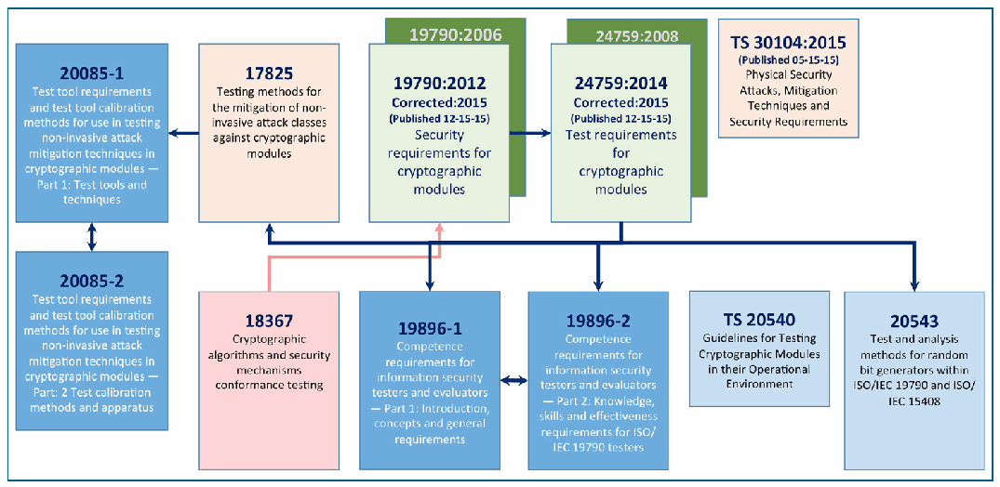
ISO/IEC暗号モジュール規格の関係図。上段にはISO/IEC 19790:2006/2012（暗号モジュールのセキュリティ要件）、ISO/IEC 24759:2008/2014（試験要件）、TS 30104:2015（物理セキュリティ攻撃の緩和技術およびセキュリティ要件）を示す。下段にはISO/IEC 20085-1/-2（非侵襲攻撃緩和技術のテストツール要件・校正方法）、17825（非侵襲攻撃の緩和試験方法）、18367（暗号アルゴリズムおよびセキュリティ機構の適合性試験）、19896-1/-2（情報セキュリティ試験者・評価者の力量要件）、20540（運用環境における暗号モジュール試験のガイドライン）、20543（乱数ビット生成器の試験・分析方法）を示す。矢印は規格間の関連を示す。
Figure 2: Cryptographic Module Testing – ISO Standards
図2：暗号モジュール試験 – ISO規格
未レビュー訳1 7
1 7
未レビュー訳P RO GRA M A ND PR OJ ECT ACHI EVE ME NTS | F Y 2015
プログラムおよびプロジェクトの成果 | FY 2015
未レビュー訳THIS PUBLICATION IS AVAILABLE FREE OF CHARGE FROM: http://dx.doi.org/10.6028/NIST.SP.800-182
本刊行物は以下より無料で入手可能：http://dx.doi.org/10.6028/NIST.SP.800-182
未レビュー訳CSD’s Mr. Easter is also the principal editor or co-editor F E D E R A L I N F O R M A T I O N of the following draft ISO/IEC documents:
〔左段〕CSDのEaster氏は、以下のISO/IEC文書草案の主幹編集者または共同編集者も務めている。〔右段見出し〕連邦情報
未レビュー訳S E C U R I T Y M A N A G E M E N T A C T
セキュリティ管理法
未レビュー訳•ISO/IEC 17825, Testingmethodsforthemitigationof
•ISO/IEC 17825：非侵襲攻撃クラスを緩和するための試験方法―
未レビュー訳( F I S M A ) I M P L E M E N T A T I O N
（FISMA）実施
未レビュー訳non-invasiveattackclassesagainstcryptographicmod-
暗号モジュールを標的とする
未レビュー訳P R O J E C T
プロジェクト
未レビュー訳ules(expected publication January 2016);
（2016年1月刊行予定）。
未レビュー訳•ISO/IEC 18367, Cryptographicalgorithmsandsecurity The FISMA Implementation Project focuses on: mechanismsconformancetesting;
•〔左段〕ISO/IEC 18367：暗号アルゴリズムおよびセキュリティ機構の適合性試験。〔右段〕FISMA実施プロジェクトの重点項目：
未レビュー訳•Developing a comprehensive series of standards and
•〔右段〕包括的な一連の標準および
未レビュー訳•ISO/IEC 19896-1: Competencerequirementsforinfor-guidelines to help federal agencies build effective infor-mationsecuritytestersandevaluators—Part1:Intro-mation security programs, defend against increasingly duction,conceptsandgeneralrequirements; sophisticated cyber-attacks, and demonstrate compli-
•〔左段〕ISO/IEC 19896-1：情報セキュリティ試験者および評価者の力量要件―第1部：導入、概念および一般要件。〔右段〕連邦政府機関が効果的な情報セキュリティプログラムを構築し、高度化するサイバー攻撃から防御し、
未レビュー訳•ISO/IEC 19896-2: Competencerequirementsfor ance to security requirements set forth in legislation, informationsecuritytestersandevaluators—Part2: Executive Orders, Homeland Security Directives, and Knowledge,skillsandeffectivenessrequirementsfor Office of Management and Budget (OMB) policies; ISO/IEC19790testers;
•〔左段〕ISO/IEC 19896-2：情報セキュリティ試験者および評価者の力量要件―第2部：ISO/IEC 19790試験者に求められる知識、技能および有効性。〔右段〕法令、大統領令、国土安全保障指令、および行政管理予算局（OMB）の方針に定めるセキュリティ要件への適合を実証する指針を策定する。
未レビュー訳•Building a common understanding and reference
•〔右段〕NISTの標準群を適用する組織のため、共通理解を形成し、参照用ガイドを整備する。
未レビュー訳•ISO/IEC 20085-1: Testtoolrequirementsandtesttool guides for organizations applying the NIST suite of calibrationmethodsforuseintestingnon-invasive standards and guidelines that support the NIST Risk attackmitigationtechniquesincryptographicmodules Management Framework (RMF) (see http://csrc.nist. —Part1:Testtoolsandtechniques; gov/groups/SMA/fisma/framework.html);
•〔左段〕ISO/IEC 20085-1：暗号モジュールにおける非侵襲攻撃緩和技術の試験に用いるテストツール要件および校正方法―第1部：テストツールおよび技法。〔右段〕NISTの一連の標準およびガイドライン（リスク管理フレームワーク［RMF］を支援）を適用する組織向けのガイド（http://csrc.nist.gov/groups/SMA/fisma/framework.html を参照）。
未レビュー訳•ISO/IEC 20085-2: Testtoolrequirementsandtesttool • Developing minimum criteria and guidelines for recog-calibrationmethodsforuseintestingnon-invasive nizing security-assessment organization providers as attackmitigationtechniquesincryptographicmodules capable of assessing information systems consistent —Part:2Testcalibrationmethodsandapparatus; with NIST standards and guidelines supporting the RMF; and
•〔左段〕ISO/IEC 20085-2：暗号モジュールにおける非侵襲攻撃緩和技術の試験に用いるテストツール要件および校正方法―第2部：テスト校正方法および装置。〔右段〕RMFを支援するNISTの標準およびガイドラインに沿って情報システムを評価できる機関として、セキュリティ評価機関プロバイダーを認定するための最低基準およびガイドラインを策定し、
未レビュー訳•ISO/IEC 20540: Guidelinesfortestingcryptographic modulesintheiroperationalenvironment; and
•〔左段〕ISO/IEC 20540：運用環境における暗号モジュールの試験に関するガイドライン。
未レビュー訳•Conducting FISMA outreach to public and private-sec-
•〔右段〕公共部門および民間部門の組織に対するFISMAの普及活動を実施する。
未レビュー訳•ISO/IEC 20543: Testandanalysismethodsforrandom tor organizations. bitgeneratorswithinISO/IEC19790andISO/IEC15408. During FY 2015, the CSD FISMA Implementation project CSD’s contributions to the development of these continued to strengthen collaboration through the Joint Task international standards create a strong foundation for the Force (JTF) Transformation Initiative, which includes the adoption of and migration from currently used national Department of Defense (DOD), the Intelligence Community standards. In particular, this adoption will promote (IC), and the Committee on National Security Systems international harmonization for the implementation and (CNSS), and other federal agencies. The JTF partners testing of cryptographic algorithms and modules, while continue to develop and update key cybersecurity guidelines accommodating individual country preferences in the choice for protecting federal information and information systems of approved security functions. CSD published a Federal as part of the Unified Information Security Framework. Register notice in August 2015 seeking public comment Previously, the JTF developed common security guidance for migrating from FIPS 140-2 to ISO/IEC 19790:2012. The in the critical areas of security controls for information comment period ended September 2015 (see https:// systems and organizations, security assessment procedures to demonstrate security control effectiveness, security federalregister.gov/a/2015-19743). authorizations for risk acceptance decisions, and continuous For More Information, See: monitoring activities to ensure that decision makers receive http://csrc.nist.gov/groups/STM/ the most up-to-date information on the security state of their information systems. In addition, CSD worked with the General Services Administration (GSA) Federal Risk
•〔左段〕ISO/IEC 20543：ISO/IEC 19790およびISO/IEC 15408における乱数ビット生成器の試験および分析方法。これらの国際規格の策定に対するCSDの貢献は、現在使われている国家規格の採用と移行に向けた強固な基盤となる。特に、承認済みセキュリティ機能の選択に関する各国の選好に配慮しながら、暗号アルゴリズムおよびモジュールの実装・試験の国際的調和を促進する。CSDは2015年8月、FIPS 140-2からISO/IEC 19790:2012への移行に関する意見募集を求める連邦官報通知を発行した。意見募集期間は2015年9月に終了した（https://federalregister.gov/a/2015-19743）。詳細情報：http://csrc.nist.gov/groups/STM/。〔右段〕2015年度、CSDのFISMA実装プロジェクトは、国防総省（DOD）、情報機関共同体（IC）、国家安全保障システム委員会（CNSS）および他の連邦機関を含む合同タスクフォース（JTF）変革イニシアチブを通じて連携を強化した。JTFの参加機関は、統一情報セキュリティ枠組みの一環として、連邦政府の情報および情報システムを保護する主要なサイバーセキュリティ指針の策定・更新を続けている。従来、JTFは情報システムおよび組織向けのセキュリティ管理策、管理策の有効性を示すセキュリティ評価手順、リスク受容判断のためのセキュリティ認可、意思決定者が情報システムのセキュリティ状態に関する最新情報を得られるようにする継続的モニタリング活動という重要領域で共通のセキュリティ指針を策定した。さらにCSDは、標準化されたセキュリティ評価、認可および継続的モニタリングをクラウド製品・サービスに提供する政府全体のプログラムであるGSAのFedRAMPと連携した。
未レビュー訳CONTACT:
連絡先：
未レビュー訳and Authorization Management Program (FedRAMP), a
連邦リスクおよび認可管理プログラム（FedRAMP）は、
未レビュー訳Mr. Randall J. Easter
Randall J. Easter氏
未レビュー訳government-wide program that provides a standardized
クラウド製品およびサービスのセキュリティ評価、認可、
未レビュー訳(301) 975-4641
(301) 975-4641
未レビュー訳approach to security assessment, authorization, and
および継続的モニタリングに関する標準化された手法を提供する政府全体のプログラムである。
未レビュー訳randall.easter@nist.gov
randall.easter@nist.gov
未レビュー訳continuous monitoring for cloud products and services. The team developed a high-impact security control baseline
チームは、高影響度セキュリティ管理策ベースラインのオーバーレイをFedRAMPクラウドシステム向けに策定し、
未レビュー訳1 8
18
未レビュー訳COMP U TER SECURITY DI VI SION ANNUAL REP ORT | 2 01 5 THIS PUBLICATION IS AVAILABLE FREE OF CHARGE FROM:
コンピュータセキュリティ部門 年次報告書｜2015 本刊行物は以下より無料で入手可能：
未レビュー訳overlay for FedRAMP cloud systems in accordance with NIST new areas of cybersecurity research and development, standards and guidelines.
原文更新後、再確認待ち
and serving on cybersecurity advisory panels.
および、サイバーセキュリティ諮問委員会の委員も務めること。
未レビュー訳In FY 2015, the CSD FISMA Implementation project staff • Collaboration with JTF partners and other federal worked on the following initiatives:
〔左段〕2015年度、CSDのFISMA実装プロジェクトの職員は次の取り組みを行った。〔右段〕JTFのパートナーおよび他の連邦機関との連携：CSD職員はJTFパートナーと緊密に協力し、
未レビュー訳organizations: CSD staff worked closely with JTF part-ners on continued cooperation and planning to ensure
継続的な協力と計画策定を通じて、JTFの5つの刊行物を最新に保ち、追加の特別刊行物をJTFガイダンスとして指定することを確実にした。
未レビュー訳•Risk Management Guidelines: SP 800-53 Revision 4, that the five JTF publications remain current, and on SecurityandPrivacyControlsforFederalInformation the designation of additional special publications as SystemsandOrganizations, provides organizations JTF guidance. The CSD FISMA implementation project with the security controls necessary to appropriately staff also collaborated with DOD, IC, the Department strengthen their information systems and the environ-of Homeland Security (DHS), the Federal Emergen-ments in which those systems operate, and provides a cy Management Agency (FEMA), the Government process for selecting the appropriate controls, which Accountability Office (GAO), OMB, GSA, the Small Busi-contributes to systems that are resilient in the face of ness Administration (SBA), and the Inspector Generals attacks and other threats. This “Build It Right” strategy (IGs) on multiple projects to ensure consistency with is reinforced with the ongoing work on the Second FISMA-related guidance and to protect information in a Public Draft of SP 800-160, SystemsSecurityEngineer-way that is commensurate with risk. ing:AnIntegratedApproachtoBuildingTrustworthy ResilientSystems. The implementation of SPs 800-53 In FY 2015, the CSD FISMA Implementation project staff and 800-160, combined with the implementation of completed the following activities: SP 800-37, GuideforApplyingtheRiskManagement
•〔左段〕リスク管理ガイドライン：SP 800-53改訂第4版『連邦情報システムおよび組織のセキュリティおよびプライバシー管理策』は、情報システムとその運用環境を適切に強化するために必要なセキュリティ管理策を提供し、適切な管理策を選択する手順を示す。これにより、攻撃その他の脅威に対する回復力を備えたシステムが実現する。「Build It Right（正しく構築する）」戦略は、SP 800-160第2回公開草案『信頼性と回復力を備えたシステムを構築するための統合的アプローチとしてのシステムセキュリティエンジニアリング』に関する作業によって強化されている。SP 800-53およびSP 800-160の実施は、SP 800-37『リスク管理〔右段〕CSDのFISMA実装プロジェクト職員は、国防総省（DOD）、情報機関共同体（IC）、国土安全保障省（DHS）、連邦緊急事態管理庁（FEMA）、政府監査院（GAO）、OMB、GSA、中小企業庁（SBA）および監察官室（IG）と複数のプロジェクトで協力した。これはFISMA関連ガイダンスとの整合性を確保し、リスクに見合う方法で情報を保護するためである。〔右段〕2015年度、同プロジェクト職員は次の活動を完了した。
未レビュー訳•Published the final version of SP 800-53A, Revision
•SP 800-53A改訂第
未レビュー訳FrameworktoFederalInformationSystems, and SP
フレームワークを連邦情報システムに適用するためのガイド』、およびSP 800-
未レビュー訳4, AssessingSecurityandPrivacyControlsinFederal
4『連邦
未レビュー訳800 137, InformationSecurityContinuousMonitoring
137『情報セキュリティ継続的モニタリング
未レビュー訳InformationSystemsandOrganizations;
情報システムおよび組織に対するセキュリティおよびプライバシー管理策の評価」の最終版を発行した。
未レビュー訳forFederalInformationSystemsandOrganizations,
連邦情報システムおよび組織のためのガイド」の実施と相まって、
未レビュー訳•Published both Initial Public Draft (IPD) and final ver-
•SP 800-171の初期公開草案（IPD）および最終版を発行し、
未レビュー訳provide organizations with near real-time information
組織にほぼリアルタイムの情報を提供する。この情報は
未レビュー訳sions of SP 800-171, ProtectingControlledUnclassified
「管理対象非機密情報の保護
未レビュー訳that is essential for senior leaders making ongoing
上級幹部が継続的な
未レビュー訳InformationinNonfederalInformationSystemsand
（非連邦情報システムおよび組織における）」
未レビュー訳risk-based decisions affecting their critical missions and
リスクに基づく意思決定を行ううえで不可欠であり、その意思決定は重要な任務および
未レビュー訳Organizations, to provide guidance to federal agencies
〔左段〕連邦情報システムおよび組織のための情報セキュリティ継続的モニタリングガイド」。〔右段〕連邦政府機関にガイダンスを提供し、
未レビュー訳business functions.
業務機能に影響する。
未レビュー訳for the protection of Controlled Unclassified Informa-
管理対象非機密情報を保護するための
未レビュー訳•Guidelines for a Role-Based Information Security tion when such information is resident in nonfederal Training Model: SP 800 16, ARole-BasedModelfor information systems and organizations; FederalInformationTechnology/CybersecurityTrain-
•〔左段〕役割ベース情報セキュリティ研修モデルに関するガイドライン：SP 800-16「連邦政府の情報技術／サイバーセキュリティ研修のための役割ベースモデル」。〔右段〕当該情報が非連邦の
未レビュー訳•Published an errata version of SP 800-53, Revision 4 to
•SP 800-53改訂第4版の正誤表を発行し、
未レビュー訳ing, describes a process for developing information
〔左段〕このモデルは、情報
未レビュー訳make necessary clarifications and ensure consistency
必要な明確化を行い、
未レビュー訳technology/cybersecurity role-based training. Its pri-
技術／サイバーセキュリティの役割別研修を開発する手順を説明する。その主な
未レビュー訳with subsequently published/revised NIST SPs and
後に発行または改訂されたNIST SPとの
未レビュー訳mary focus is to provide a comprehensive, yet flexible,
焦点は、包括的でありながら柔軟な
未レビュー訳new/updated federal policy requirements;
新規または改訂された連邦政策要件との整合性を確保する。
未レビュー訳methodology for the development of training courses or modules for personnel who have been identified as • Continued collaboration with DHS to develop a multi-having significant information technology/cybersecu- ple-volume InteragencyReportonAutomationSupport rity responsibilities within agencies. Agencies can use forOngoingAssessments, which is based on NIST stan-SP 800-16 to tailor the Role-Based Security Training to dards and guidelines; and meet the needs of their own organization.
研修課程またはモジュールの開発方法を提供することにある。対象は、機関内で重要な情報技術／サイバーセキュリティ責務を担うと特定された要員である。各機関はSP 800-16を使って、自組織のニーズに合わせて役割ベースのセキュリティ研修を調整できる。〔右段〕NISTの標準およびガイドラインに基づく複数巻の『継続的評価の自動化支援に関する省庁間報告書』の策定に向け、DHSとの連携を続けた。
未レビュー訳•Continued the development of preliminary drafts of SP
•〔右段〕SPの予備草案の策定を続けた。
未レビュー訳•FISMA Outreach Activity to Public and Private Sector 800-18 Revision 2, GuideforDevelopingSecurityPlans Organizations: Cybersecurity outreach briefings were forFederalInformationSystemsandOrganizations conducted and support provided to all levels of govern- and SP 800-60 Revision 2, GuideforMappingTypes ment (federal, state and local), as well as private sector ofInformationandInformationSystemstoSecurity organizations, on multiple information security topics Categories. of interest. These include, for example, effective imple-In FY 2016, CSD FISMA Implementation project staff mentation of the NIST RMF, contingency planning, in-intend to: terconnection security agreements, and information se-
•〔左段〕公的機関および民間部門組織へのFISMA普及活動：関心のある複数の情報セキュリティ分野で、連邦・州・地方政府および民間組織にサイバーセキュリティ説明会を実施し、支援を提供した。例として、NIST RMFの効果的な実施、緊急時対応計画、相互接続セキュリティ合意、および情報セキュリティの〔右段〕SP 800-18改訂第2版『連邦情報システムおよび組織のセキュリティ計画策定ガイド』ならびにSP 800-60改訂第2版『情報および情報システムの種類をセキュリティカテゴリに対応付けるガイド』の予備草案策定。2016年度、CSDのFISMA実装プロジェクト職員は以下を計画している：
未レビュー訳•Finalize SP 800-160, SystemsSecurityEngineering:An
•SP 800-160「システムセキュリティエンジニアリング：
未レビュー訳curity for small businesses. In addition, the CSD FISMA
セキュリティ、中小企業向けの情報セキュリティが含まれる。さらに、CSDのFISMA
未レビュー訳IntegratedApproachtoBuildingTrustworthyResilient
信頼性と回復力を備えたシステム構築への統合的アプローチ
未レビュー訳implementation project staff conducted outreach activ-
実施プロジェクトのスタッフはアウトリーチ活動を
未レビュー訳Systems;
システム」を最終化する。
未レビュー訳ities with academic institutions, providing information on NIST’s security standards and guidelines, exploring
を学術機関と実施し、NISTのセキュリティ標準およびガイドラインに関する情報を提供するとともに、新たな
未レビュー訳1 9
19
未レビュー訳P RO GRA M A ND PR OJ ECT ACHI EVE ME NTS | F Y 2015
プログラムおよびプロジェクトの成果 | FY 2015
未レビュー訳THIS PUBLICATION IS AVAILABLE FREE OF CHARGE FROM: http://dx.doi.org/10.6028/NIST.SP.800-182
本刊行物は以下から無料で入手可能です：http://dx.doi.org/10.6028/NIST.SP.800-182
未レビュー訳•Finalize SP 800-16, ARole-BasedModelforFederal CSD’s project team contributes to the development of InformationTechnology/CybersecurityTraining; biometric standards and participates in the INCITS Technical Committee M1 – Biometrics and ISO/IEC Joint Technical
•SP 800-16『連邦情報技術／サイバーセキュリティトレーニングのための役割ベースモデル』を最終決定する；CSDのプロジェクトチームは、バイオメトリクス標準の開発に貢献し、INCITS技術委員会M1 – バイオメトリクスおよびISO/IEC合同技術に参加している
未レビュー訳•Begin the development of SP 800-53, Revision 5, Committee (JTC) 1 Subcommittee (SC) 37 – Biometrics SecurityandPrivacyControlsforFederalInformation standards bodies. CSD plans to continue this work in FY 2016. SystemsandOrganizations;
•SP 800-53 Rev. 5『連邦政府情報システムおよび組織のためのセキュリティおよびプライバシー管理策』の策定を開始すること、合同技術委員会（JTC）1分科委員会（SC）37 – 生体認証標準化団体。CSDは2016年度もこの取り組みを継続する予定である。
未レビュー訳•Continue to explore ways to use automation to support SP 800-53 updates;
•SP 800-53の更新を支援するための自動化活用の方法を引き続き検討すること。
未レビュー訳BioCTSのロゴ。
•Continue the development of SP 800-60, Revision 2, GuideforMappingTypesofInformationandInforma-tionSystemstoSecurityCategories;
•SP 800-60 Rev. 2『情報および情報システムのセキュリティカテゴリへのマッピングガイド』の策定を継続すること。
未レビュー訳•Continue the development of SP 800-18, Revision 2, GuideforDevelopingSecurityPlansforFederalInfor-mationSystemsandOrganizations; In FY 2015, Biometric Conformance Test Software
•SP 800-18 Rev. 2『連邦情報システムおよび組織のためのセキュリティ計画策定ガイド』の策定を継続すること。2015年度において、生体認証適合性試験ソフトウェア
未レビュー訳•Expand cybersecurity outreach to include additional (BioCTS) for ANSI/NIST-ITL (which targets biometric state, local, and tribal governments, as well as private transactions based on NIST SP 500-290, and SP 500-290 sector organizations and academic institutions; Revision 1 - DataFormatfortheInterchangeofFingerprint,
•サイバーセキュリティのアウトリーチを拡大し、民間の組織や学術機関だけでなく、州・地方・部族政府をさらに含めること。（BioCTS）for ANSI/NIST-ITL（NIST SP 500-290およびSP 500-290 Rev. 1『指紋、顔画像およびその他の生体情報の交換用データフォーマット』に基づく生体認証トランザクションを対象とする）
未レビュー訳•Continue to support federal agencies in the effective Facial&OtherBiometricInformation) received a substantial implementation of the RMF; and update. Version 2.0 of the testing software was released and
•連邦機関によるRMFの効果的な実施を引き続き支援すること、および大幅なアップデートを受けた。テストソフトウェアのバージョン2.0がリリースされ、
未レビュー訳•Continue collaboration with JTF partners and other added support for testing for the remaining traditionally federal organizations. encoded record types not previously supported (+12 for ANSI/NIST-ITL 1-2011, and +18 for ANSI/NIST-ITL 1-2011 For More Information, See: Update: 2013). Version 2.0 now supports all traditionally http://csrc.nist.gov/groups/SMA/fisma encoded biometric record types between the two versions of the published ANSI/NIST-ITL standards. Additionally,
•JTFパートナーや他の連邦機関との協調を継続すること。これまでサポートされていなかった残りの従来型エンコードレコードタイプのテストサポートが追加された（ANSI/NIST-ITL 1-2011向けに+12、ANSI/NIST-ITL 1-2011 Update: 2013向けに+18）。バージョン2.0は現在、公開されているANSI/NIST-ITL標準の2つのバージョン全体で、従来型エンコードの生体認証レコードタイプをすべてサポートしている。さらに、詳細については以下を参照のこと：http://csrc.nist.gov/groups/SMA/fisma
未レビュー訳CONTACTS:
連絡先：
未レビュー訳Version 2.0 added many enhanced editing features for traditionally encoded biometric transactions – some new
バージョン2.0では、従来の方式でエンコードされた生体認証トランザクション向けに多くの強化された編集機能が追加されました – 新たな
未レビュー訳Dr. Ron Ross
ロン・ロス博士
未レビュー訳Ms. Pat Toth
パット・トス氏
未レビュー訳features include: adding and removing records and fields,
機能には以下が含まれます：レコードとフィールドの追加および削除、
未レビュー訳(301) 975-5390
(301) 975-5390
未レビュー訳(301) 975-5140
(301) 975-5140
未レビュー訳arranging records and fields, automatically sorting records,
レコードとフィールドの配置、レコードの自動並べ替え、
未レビュー訳ron.ross@nist.gov
ron.ross@nist.gov
未レビュー訳patricia.toth@nist.gov
patricia.toth@nist.gov
未レビュー訳displaying the biometric sample image, and enhanced binary data editing features. In addition to the enhanced
生体認証サンプル画像の表示、および強化されたバイナリデータ編集機能。さらに、強化された
未レビュー訳Ms. Kelley Dempsey
Kelley Dempsey 氏
未レビュー訳Ms. Peggy Himes
Peggy Himes 氏
未レビュー訳editing features, BioCTS for ANSI/NIST-ITL received many
編集機能に加え、ANSI/NIST-ITL 向け BioCTS には多くの
未レビュー訳(301) 975-2827
(301) 975-2827
未レビュー訳(301) 975-2489
(301) 975-2489
未レビュー訳usability enhancements, as well as updates to some core
ユーザビリティの向上や、一部のコア
未レビュー訳kelley.dempsey@nist.gov peggy.himes@nist.gov
kelley.dempsey@nist.gov peggy.himes@nist.gov
未レビュー訳software functionality, providing a more usable and robust testing tool.
ソフトウェア機能を提供し、より使いやすく堅牢なテストツールを実現します。
未レビュー訳B I O M E T R I C S T A N D A R D S A N D As illustrated in Figure 3, a new feature of BioCTS is the
生体認証標準および 図3に示すように、BioCTSの新機能は、
未レビュー訳display of the biometric sample, when possible, so that the
可能な場合は生体認証サンプルを表示することであり、これにより
未レビュー訳A S S O C I A T E D C O N F O R M I T Y
関連する適合性
未レビュー訳user can get visual feedback on the biometric data that is
ユーザーが生体認証データに関する視覚的フィードバックを得られるようにすることです。これは現在
未レビュー訳A S S E S S M E N T T E S T I N G T O O L S under test. The update provides a rich editing environment
評価テストツール テスト対象となっています。このアップデートにより、充実した編集環境が提供されます。
未レビュー訳for binary/traditionally encoded transactions and files,
バイナリ／従来形式でエンコードされたトランザクションおよびファイル向けです。
未レビュー訳NIST’s CSD supports the development of biometric which are difficult for humans to read. Version 2.0 provides conformance testing methodology standards and other a user-friendly way to see each field within a transaction/ conformity-assessment efforts through active technical file, associated test results, and allows for the modification participation in the development of these standards of data (as shown in Figure 4.) All of the new features are and the development of associated conformance test detailed in theBioCTSforANSI/NIST-ITLv2UserGuide(see: software, architectures and test suites. These test tools are http://csrc.nist.gov/groups/ST/BiomResCenter/CTA_BETA/ developed to promote the adoption of these standards BioCTS_AN_ITL_v2_Guide.pdf). and to support users that require conformance to selected biometric standards, product developers and testing labs.
NISTのCSDは、これら標準の開発への積極的な技術的参加、ならびに関連する適合性試験ソフトウェア、アーキテクチャ、およびテストスイートの開発を通じて、生体認証適合性試験方法標準の開発およびその他の適合性評価の取り組みを支援している。これらの試験ツールは、これらの標準の採用を促進し、選択された生体認証標準への適合を必要とするユーザー、製品開発者、および試験所を支援するために開発されている。人間が読むことが困難である。バージョン2.0は、トランザクション／ファイル内の各フィールドおよび関連する試験結果を確認するための使いやすい方法を提供し、（図4に示すように）データの変更を可能にする。すべての新機能は、theBioCTSforANSI/NIST-ITLv2UserGuide（see: http://csrc.nist.gov/groups/ST/BiomResCenter/CTA_BETA/ BioCTS_AN_ITL_v2_Guide.pdf）に詳述されている。
未レビュー訳2 0
2 0
未レビュー訳COMP U TER SECURITY DI VI SION ANNUAL REP ORT | 2 01 5 THIS PUBLICATION IS AVAILABLE FREE OF CHARGE FROM:
コンピュータセキュリティ部門 年次報告書 | 2 01 5 本出版物は以下から無料で入手可能です：
未レビュー訳http://dx.doi.org/10.6028/NIST.SP.800-182
http://dx.doi.org/10.6028/NIST.SP.800-182
未レビュー訳Outreach efforts in FY 2015 in support of biometric standards development and conformity assessment included test tool contributions for the standards developers (in support of ongoing development projects), and presentations on ANSI/NIST and international biometric standards and related conformity assessment activities. The work included the development of technical publications, the review of research papers for external publications, and participation in conference program committees. CSD published NIST Special Publication 500-304, Conformance Testing Methodology Framework for ANSI/NIST-ITL 1-2011 Update: 2013, Data Format for the Interchange of Fingerprint, Facial & Other Biometric Information in June
生体認証標準の開発および適合性評価を支援する2015年度のアウトリーチ活動には、標準開発者向けのテストツールの提供（進行中の開発プロジェクトの支援）、ならびにANSI/NISTおよび国際的な生体認証標準と関連する適合性評価活動に関するプレゼンテーションが含まれていた。その業務には、技術出版物の作成、外部出版物向けの研究論文の査読、および会議プログラム委員会への参加が含まれていた。CSDは6月に、NIST Special Publication 500-304, Conformance Testing Methodology Framework for ANSI/NIST-ITL 1-2011 Update: 2013, Data Format for the Interchange of Fingerprint, Facial & Other Biometric Information を発行した。
未レビュー訳2015.Additionally, CSD published NIST SP 500-304 Annex D: TestNotesandExceptionsfortheANSI/NISTITL1-2011
2015.さらに、CSDはNIST SP 500-304 Annex D: TestNotesandExceptionsfortheANSI/NISTITL1-2011 を発行した。
未レビュー訳Figure 3: BioCTS displays the biometric sample to Update2013ConformanceTestingMethodologyFramework
図3：BioCTSは生体認証サンプルを表示して Update2013ConformanceTestingMethodologyFramework
未レビュー訳provide visual feedback.
視覚的フィードバックを提供する。
未レビュー訳in July 2015.
2015年7月に。
未レビュー訳For More Information, See:
詳細については、次を参照:
未レビュー訳The latest version of BioCTS was released in August 2015, together with documentation and sample data. The BioCTS - Biometric Conformance Test Tool Downloads: BioCTS software installer files, as well the ancillary tools and
BioCTSの最新バージョンは、ドキュメントおよびサンプルデータとともに2015年8月にリリースされた。BioCTS - 生体認証適合性試験ツールのダウンロード：BioCTSソフトウェアインストーラファイル、ならびに補助ツールおよび
未レビュー訳http://www.nist.gov/itl/csd/biometrics/biocta_download.
http://www.nist.gov/itl/csd/biometrics/biocta_download.
未レビュー訳sample data can be downloaded from the NIST Biometrics
サンプルデータはNIST生体認証
未レビュー訳cfm
cfm
未レビュー訳website. (see: http://www.nist.gov/itl/csd/biometrics/
ウェブサイトからダウンロードできる。（参照: http://www.nist.gov/itl/csd/biometrics/
未レビュー訳NIST Special Publication 500-304: Conformance Testing
NIST Special Publication 500-304: 適合性試験
未レビュー訳biocta_download.cfm).
biocta_download.cfm）。
未レビュー訳MethodologyFrameworkforANSI/NIST-ITL1-2011Update: 2013,DataFormatfortheInterchangeofFingerprint,Facial &OtherBiometricInformation: http://nvlpubs.nist.gov/nistpubs/SpecialPublications/NIST. SP.500-304.pdf NIST SP 500-304 Annex D: Test Notes and Exceptions for the ANSI/NIST ITL 1-2011 Update 2013 Conformance Testing Methodology Framework: http://csrc.nist.gov/groups/ST/BiomResCenter/CTA_BETA/ External_Notes_Exceptions_NIST_SP_500_304_with_ Errata.pdf
MethodologyFrameworkforANSI/NIST-ITL1-2011Update: 2013,DataFormatfortheInterchangeofFingerprint,Facial &OtherBiometricInformation: http://nvlpubs.nist.gov/nistpubs/SpecialPublications/NIST. SP.500-304.pdf NIST SP 500-304 Annex D: Test Notes and Exceptions for the ANSI/NIST ITL 1-2011 Update 2013 Conformance Testing Methodology Framework: http://csrc.nist.gov/groups/ST/BiomResCenter/CTA_BETA/ External_Notes_Exceptions_NIST_SP_500_304_with_ Errata.pdf
未レビュー訳CONTACT:
問い合わせ先：
未レビュー訳Mr. Dylan Yaga (301) 975-6004
Mr. Dylan Yaga (301) 975-6004
未レビュー訳Figure 4: BioCTS provides a rich editing environment for
図4：BioCTSは、次のためのリッチな編集環境を提供します：
未レビュー訳dylan.yaga@nist.gov
dylan.yaga@nist.gov
未レビュー訳reviewing and updating records.
レコードのレビューおよび更新。
未レビュー訳A number of technical contributions towards the development of ANSI/NIST and international standards were submitted. They included technical contributions on international biometric data interchange formats and their associated conformance testing methodologies, as well as on SP 500-290 Revision 1 and the associated National Information Exchange Model (NIEM) Extensible Markup Language (XML) Schema (see https://tools.niem.gov).
ANSI/NISTおよび国際規格の策定に向けて、多数の技術的貢献が提出されました。これらには、国際的な生体認証データ交換フォーマットおよびそれに関連する適合性試験方法論に関する技術的貢献のほか、SP 500-290 Revision 1および関連する国家情報交換モデル（NIEM）Extensible Markup Language（XML）スキーマ（https://tools.niem.gov を参照）に関する技術的貢献が含まれていました。
未レビュー訳2 1
2 1
未レビュー訳P RO GRA M A ND PR OJ ECT ACHI EVE ME NTS | F Y 2015
プログラムおよびプロジェクトの成果 | FY 2015
未レビュー訳THIS PUBLICATION IS AVAILABLE FREE OF CHARGE FROM: http://dx.doi.org/10.6028/NIST.SP.800-182
本刊行物は以下より無料で入手可能です: http://dx.doi.org/10.6028/NIST.SP.800-182
未レビュー訳In June 2014, NIST established the CPS Public Working
2014年6月、NISTはCPSパブリックワーキング
未レビュー訳S E C U R I T Y O F C Y B E R -
サイバーフィジカルシステムの
未レビュー訳Group (PWG), which is open to all, to foster and capture
グループ（PWG）を設立しました。これは誰でも参加可能で、
未レビュー訳P H Y S I C A L S Y S T E M S ( C P S )
セキュリティ（CPS）
未レビュー訳inputs from those involved in CPS, both nationally and globally. CSD is working in collaboration with NIST’s
国内外のCPS関係者からの意見を促進し取り込むことを目的としています。CSDはNISTの
未レビュー訳CSD’s overall Cyber-Physical Systems (CPS) effort
CSDのサイバーフィジカルシステム（CPS）に関する全体的な取り組みは、
未レビュー訳Engineering Laboratory (EL) Smart Grid and Cyber-Physical
工学研究所（EL）のスマートグリッドおよびサイバーフィジカル
未レビュー訳will provide the next generation of “smart,” co-designed
次世代の「スマート」で協調設計され、
未レビュー訳Systems Program Office, NIST’s Physical Measurement
システムプログラムオフィス、NISTの物理計測
未レビュー訳and co-engineered interacting networks of physical and
かつ協調エンジニアリングされた、物理的および
未レビュー訳Laboratory Time and Frequency Division, ITL’s Software
研究所の時間・周波数部門、ITLのソフトウェア
未レビュー訳computational components. Specifically, CSD supports the
計算コンポーネントの相互作用ネットワークを提供する。具体的には、CSDは以下を支援している。
未レビュー訳and Systems Division and ITL’s Advanced Networking
およびシステム部門、ならびにITLの高度ネットワーキング
未レビュー訳effort by providing cybersecurity and privacy experts who
サイバーセキュリティおよびプライバシーの専門家を提供することによる取り組みであり、これらの専門家は
未レビュー訳Technologies Division to lead a working group of govern-
政府のワーキンググループを主導する技術部門
未レビュー訳help leverage existing resources and address CPS-specific
既存のリソースの活用を支援し、CPS特有の
未レビュー訳ment, academic, and industry stakeholders. The CPS PWG
学術界、および産業界のステークホルダー。CPS PWGは
未レビュー訳cybersecurity and privacy challenges. Such challenges are
サイバーセキュリティおよびプライバシーの課題に対処する。このような課題は、
未レビュー訳consists of five technical subgroups:
5つの技術サブグループで構成される：
未レビュー訳related to personalized health care, emergency response, traffic flow management, and electric power generation • Definition, Vocabulary, and Reference Architecture; and delivery, and many other emerging technical areas. • Use Cases; Other phrases that are often referenced along with CPS
個別化ヘルスケア、緊急対応、交通流管理、電力の発電および送配電、その他多くの新たな技術分野に関連している。• 定義、語彙、および参照アーキテクチャ； • ユースケース； CPSとともに頻繁に参照されるその他の表現
未レビュー訳•Cybersecurity and Privacy;
•サイバーセキュリティおよびプライバシー；
未レビュー訳technologies include:
技術には以下が含まれる：
未レビュー訳•Data Interoperability; and
•データ相互運用性、および
未レビュー訳•Internet of Things (IoT);
•モノのインターネット（IoT）；
未レビュー訳•Timing and Synchronization.
•タイミングと同期。
未レビュー訳•Industrial Internet; Each subgroup consists of co-leaders from academia,
•産業用インターネット；各サブグループは、学術界、
未レビュー訳•Smart Cities; industry and NIST. CSD co-leads the Cybersecurity and
•スマートシティ；産業界、およびNISTからの共同リーダーで構成される。CSDは、サイバーセキュリティおよび
未レビュー訳•Smart Grid; and Privacy subgroup that is focused on identifying strategies
•スマートグリッド；ならびに戦略の特定に焦点を当てたプライバシーサブグループを共同で率いており、
未レビュー訳•“Smart” Anything (e.g., Cars, Buildings, Homes, Manu- for cybersecurity and privacy in CPS, and is working facturing, Hospitals, Appliances) (see http://www.nist. collaboratively with the other subgroups to ensure that cybersecurity is included as a design principle during gov/cps/). development. Composed of heterogeneous, potentially distributed components and systems, CPS provides a promise of In September 2015, the CPS PWG published the Draft increased efficiency and interaction between the digital and Framework for CPS that includes the work of the five physical worlds. However, assuring that these emerging and technical subgroups. The document reflects more than a evolving systems are reliable, robust, resilient, trustworthy, year’s effort by the CPS PWG, which includes a few hundred secure, and that they protect the privacy of information members drawn primarily from industry, academia and (to only list a few concerns) poses a unique cybersecurity government. In 2016, the CPS PWG will collect and analyze the comments to the draft and publish the next version of the challenge. CPS Framework. The CPS PWG deliverables are technology CPS present unique challenges, including the need and business-model neutral, and freely available online and for integration with legacy components and allowance for intended for open use by all stakeholders. emerging technologies, and real-time response in support of Additionally, in 2015, CSD, in conjunction with NIST’s extremely high availability, predictability, and reliability. Engineering Laboratory, Intelligent Systems Division, Cybersecurity is an important crosscutting discipline finalized SP 800-82 Revision 2, GuidetoIndustrialControl that is critical to the safe and resilient design, development SystemsSecurity. CSD will also continue to participate in the and operation of CPS. Addressing the opportunities International Society of Automation (ISA) 99 Committee, and challenges of CPS requires a broad collaboration to which develops and establishes standards, recommended develop a common foundation, including a consensus practices, technical reports, and related information that definition, vocabulary, reference architecture, and a define procedures for implementing electronically secure shared understanding of the essential roles of timing, industrial automation and control systems and security cybersecurity and data interoperability. CSD is researching practices, and for assessing electronic security performance. the cybersecurity needs of the broader landscape of CPS by leveraging CSD’s expertise in cybersecurity in different For More Information, See: domains and applications of CPS (such as industrial control http://www.nist.gov/cps/ systems, the smart grid, hardware-enabled security, and embedded systems).
•「スマート」なあらゆるもの（例：自動車、ビル、住宅、製造、病院、家電）（http://www.nist.gov/cps/ を参照）。異種で潜在的に分散したコンポーネントおよびシステムで構成されるCPSは、デジタル世界と物理世界の間で効率と相互作用が向上する可能性をもたらす。しかし、新興・進化中のシステムについて、信頼性、堅牢性、レジリエンス、信頼できること、セキュリティが確保されていること、さらに情報のプライバシーが保護されることを保証するのは、特有のサイバーセキュリティ課題である（懸念事項の一部を挙げたにすぎない）。CPSには、レガシーコンポーネントとの統合、新興技術への対応、極めて高い可用性・予測可能性・信頼性を支えるリアルタイム応答など、固有の課題がある。サイバーセキュリティは、CPSの安全でレジリエントな設計、開発、運用に不可欠な横断的分野である。CPSの機会と課題への対応には、合意に基づく定義、用語、参照アーキテクチャ、タイミング・サイバーセキュリティ・データ相互運用性の重要な役割に関する共通理解など、共通基盤を構築する幅広い協力が必要となる。CSDは、産業用制御システム、スマートグリッド、ハードウェア対応セキュリティ、組込みシステムなど、CPSの多様な分野・用途におけるサイバーセキュリティ専門知識を活用して、CPS全体のサイバーセキュリティニーズを研究している。〔右段〕CPSにおけるサイバーセキュリティおよびプライバシー戦略の特定に重点を置き、開発時にサイバーセキュリティが設計原則として含まれるよう他のサブグループと協力している。2015年9月、CPS PWGは5つの技術サブグループの成果を含む『CPSフレームワーク草案』を公表した。この文書は主に産業界、学術界、政府の数百人のメンバーが参加した1年以上の取り組みを反映する。2016年には草案への意見を収集・分析し、CPSフレームワークの次版を公表する予定である。CPS PWGの成果物は技術およびビジネスモデルに中立で、オンラインで無料公開され、すべての利害関係者が自由に利用できる。さらに2015年、CSDはNISTエンジニアリング研究所インテリジェントシステム部門と共同で、SP 800-82改訂第2版『産業用制御システムのセキュリティガイド』を完成させた。CSDは国際自動化学会（ISA）99委員会への参加も続ける。同委員会は、電子的に安全な産業オートメーション・制御システムおよびセキュリティ実践の実装手順と、電子セキュリティ性能の評価手順を定める標準、推奨実践、技術報告その他の情報を策定・確立する。詳細情報：http://www.nist.gov/cps/
未レビュー訳2 2
2 2
未レビュー訳COMP U TER SECURITY DI VI SION ANNUAL REP ORT | 2 01 5 THIS PUBLICATION IS AVAILABLE FREE OF CHARGE FROM:
コンピュータセキュリティ部門 年次報告書 | 2 01 5 本刊行物は以下から無料で入手可能です：
未レビュー訳strategic plan for cybersecurity R&D and participated in
原文更新後、再確認待ち
CONTACTS:
連絡先：
未レビュー訳panel presentations to which the SSG was invited to describe federal directions in cybersecurity R&D at relevant forums
関連フォーラムにおいてサイバーセキュリティR&Dにおける連邦政府の方向性を説明するためにSSGが招待されたパネルプレゼンテーション
未レビュー訳Mr. Stephen Quinn Ms. Suzanne Lightman
スティーブン・クイン氏、スザンヌ・ライトマン氏
未レビュー訳and conferences (see https://www.nitrd.gov/nitrdgroups/
およびカンファレンス（https://www.nitrd.gov/nitrdgroups/ を参照
未レビュー訳(301) 975-6967
(301) 975-6967
未レビュー訳(301) 975-6442
(301) 975-6442
未レビュー訳index.php?title=Cyber_Security_Information_Assurance_
index.php?title=Cyber_Security_Information_Assurance_
未レビュー訳stephen.quinn@nist.gov suzanne.lightman@nist.gov
stephen.quinn@nist.gov suzanne.lightman@nist.gov
未レビュー訳Research_and_Development_Senior_Steering_Group_ (CSIA_R%26D_SSG)#title). CSD is also a regular participant in the coordination
Research_and_Development_Senior_Steering_Group_ (CSIA_R%26D_SSG)#title). CSDはまた、調整活動に定期的に参加している
未レビュー訳F E D E R A L C Y B E R S E C U R I T Y
連邦サイバーセキュリティ
未レビュー訳activities of the federal Special Cyber Operations
連邦特別サイバー作戦の活動
未レビュー訳R E S E A R C H & D E V E L O P M E N T
研究開発
未レビュー訳Research and Engineering (SCORE) Committee. SCORE
研究・工学（SCORE）委員会。SCORE
未レビュー訳( R & D )
（R&D）
未レビュー訳enables technology transfer through the sharing of NIST cybersecurity expertise and publications with researchers
NISTのサイバーセキュリティに関する専門知識および出版物を研究者と共有することを通じて技術移転を可能にする
未レビュー訳The Networking and Information Technology Research throughout the Federal Government. The SCORE committee and Development (NITRD) program provides a framework interacts with federal leaders and reports to the National in which many federal agencies come together to coordinate Science & Technology Council’s Committee on Homeland & their networking and IT research and development National Security. In FY 2015, NIST expertise in supply chain (R&D) efforts. CSD remained committed to the value of risk management and cryptography was included in SCORE communicating its R&D efforts to other federal colleagues reports. and identifying the opportunities to support R&D efforts
〔左段〕Networking and Information Technology Research and Development（NITRD）プログラムは、多くの連邦機関がネットワークおよびITの研究開発（R&D）を調整するために集まる枠組みを提供する。CSDは、自らの研究開発活動を他の連邦政府関係者に伝え、連邦政府全体の研究開発を支援する機会を特定することを重視し続けた。〔右段〕SCORE委員会は連邦政府の幹部と連携し、国家科学技術会議の国土・国家安全保障委員会に報告する。2015年度には、サプライチェーンのリスク管理および暗号技術に関するNISTの専門知識がSCOREの報告書に盛り込まれた。
未レビュー訳For More Information, See:
詳細については、以下を参照:
未レビュー訳throughout the Federal Government.
連邦政府全体で。
未レビュー訳http://www.nitrd.gov/
http://www.nitrd.gov/
未レビュー訳In FY 2015, the NITRD Cyber Security and Information Assurance (CSIA) Interagency Working Group (IWG)
2015年度、NITRDのサイバーセキュリティおよび情報保証（CSIA）省庁間作業部会（IWG）は
未レビュー訳CONTACT:
連絡先:
未レビュー訳monthly meetings provided an opportunity to learn and share information about NIST’s ongoing research with Mr. Bill Newhouse federal program managers of cybersecurity research (see (301) 975-2869 https://www.nitrd.gov/nitrdgroups/index.php?title=Cyber_ william.newhouse@nist.gov Security_and_Information_Assurance_Interagency_ Working_Group_(CSIA_IWG)#title). The Cybersecurity Enhancement Act of 2014 requested the development of S E C U R I T Y A S P E C T S O F a new federal cybersecurity research and development
〔左段〕月例会合では、連邦政府のサイバーセキュリティ研究プログラム担当者と、NISTが進める研究について学び、情報を共有する機会が設けられた（詳細：https://www.nitrd.gov/nitrdgroups/index.php?title=Cyber_Security_Information_Assurance_Interagency_Working_Group_(CSIA_IWG)#title）。2014年サイバーセキュリティ強化法は、新たな連邦サイバーセキュリティ研究開発戦略の策定を求めた。〔右段連絡先〕Bill Newhouse氏、(301) 975-2869、william.newhouse@nist.gov。〔右段見出し〕セキュリティ面：
未レビュー訳E L E C T R O N I C V O T I N G
電子投票
未レビュー訳strategic plan, and NIST was a consistent presence at the regular development meetings for the new plan that is
戦略計画であり、NISTはこの新しい計画の定期的な策定会議に一貫して参加していた。この計画は
未レビュー訳In 2002, Congress passed the Help America Vote Act
2002年、議会はアメリカ投票支援法（Help America Vote Act）を可決した
未レビュー訳intended for release during the month of February 2016.
2016年2月中に公開される予定である。
未レビュー訳(HAVA) to encourage the upgrade of voting equipment
（HAVA）投票機器の更新を促進するため
未レビュー訳(see Cybersecurity Enhancement Act of 2014 https://
（2014年サイバーセキュリティ強化法（Cybersecurity Enhancement Act of 2014） https:// を参照
未レビュー訳across the United States. HAVA established the Election
全米において。HAVAは選挙
未レビュー訳www.congress.gov/bill/113th-congress/senate-bill/1353/
www.congress.gov/bill/113th-congress/senate-bill/1353/
未レビュー訳Assistance Commission (EAC) and the Technical Guidelines
支援委員会（EAC）および技術ガイドライン
未レビュー訳text, and see strategic plan https://www.whitehouse.gov/
本文、および戦略計画を参照 https://www.whitehouse.gov/
未レビュー訳Development Committee (TGDC), chaired by the Director of
策定委員会（TGDC）、議長は
未レビュー訳sites/whitehouse.gov/files/documents/2016_Federal_
sites/whitehouse.gov/files/documents/2016_Federal_
未レビュー訳NIST. HAVA directs NIST to provide technical support to the
NIST長官。HAVAはNISTに対し、以下への技術支援を提供するよう指示している：
未レビュー訳Cybersecurity_Research_and_Development_Stratgeic_
Cybersecurity_Research_and_Development_Stratgeic_
未レビュー訳EAC and TGDC in efforts related to human factors, security,
EACおよびTGDCの、人的要因、セキュリティ、に関する取り組みにおいて、
未レビュー訳Plan.pdf).
Plan.pdf）。
未レビュー訳and laboratory accreditation. As part of NIST’s efforts,
および試験所認定への支援を継続した。NISTの取り組みの一環として、
未レビュー訳FY 2015 also included the development of a National
FY 2015にはまた、国家プライバシー研究戦略の策定も
未レビュー訳CSD supports the activities of the EAC related to voting
CSDは、投票機器のセキュリティに関するEACの活動を
未レビュー訳Privacy Research Strategy by the members of the National
含まれており、これは国家プライバシー研究フォーラムの
未レビュー訳equipment security.
支援している。
未レビュー訳Privacy Research Forum (see https://www.nitrd.gov/
メンバーによるものである（参照：https://www.nitrd.gov/
未レビュー訳In the past year, NIST continued to support the EAC
過去1年間、NISTはEAC
未レビュー訳cybersecurity/nationalprivacyresearchstrategy.aspx).
cybersecurity/nationalprivacyresearchstrategy.aspx).
未レビュー訳in finalizing changes to the Voluntary Voting System
自主的投票システム（Voluntary Voting System）の変更を最終決定するにあたり、
未レビュー訳Naomi Lefkowitz, Senior Privacy Policy Advisor at NIST, and
NISTのシニアプライバシーポリシーアドバイザーであるNaomi Lefkowitz、および
未レビュー訳Guidelines (VVSG) 1.1. These changes sought to improve
同ガイドライン（VVSG）1.1において、これらの変更は、
未レビュー訳Simson Garfinkel, Senior Advisor in the Information Access
情報アクセス部門のシニアアドバイザーであるSimson Garfinkelは、
未レビュー訳the auditability of voting systems, provide greater software
投票システムの監査可能性を向上させ、より強固なソフトウェアの
未レビュー訳Division, shared NIST’s focus on privacy and brought their
プライバシーに対するNISTの注力を共有し、それぞれの
未レビュー訳integrity protections, expand and improve access-control
完全性保護を提供し、アクセス制御を拡張および改善することを目指した。
未レビュー訳expertise to the development process for the privacy R&D
プライバシーR&Dの開発プロセスに対する専門的知見
未レビュー訳requirements, and help ensure that cryptographic security
要件、および暗号セキュリティ
未レビュー訳plan that will be published in FY 2016.
FY 2016に公開される予定の計画。
未レビュー訳mechanisms are implemented properly. The EAC approved
メカニズムが適切に実装されることを確実にする支援を行った。EACは
未レビュー訳NIST regularly attended the NITRD CSIA Senior
NISTは定期的にNITRD CSIA Senior
未レビュー訳these updates to the VVSG in March 2015. In addition, NIST
2015年3月にVVSGに対するこれらの更新を承認した。さらに、NISTは
未レビュー訳Steering Group meetings to share and stay connected with
Steering Group会合に出席して情報を共有し、連携を維持した
未レビュー訳completed a set of draft test assertions for the security
セキュリティに関する一連のテストアサーション草案を完成させた
未レビュー訳opportunities that supported the development of the new
新たな要件の策定を支援した機会
未レビュー訳requirements in the VVSG. This included test assertions in the 2 3
VVSGのセキュリティ要件に関するものである。これには〔ページ番号：23〕
未レビュー訳P RO GRA M A ND PR OJ ECT ACHI EVE ME NTS | F Y 2015
プログラムおよびプロジェクトの成果 | FY 2015
未レビュー訳areas of access control, software setup and validation, polling Services’ (DHHS) Office for Civil Rights (OCR) co-hosted the place security, and the use of public telecommunications eighthannualHealthInsurancePortabilityandAccountability networks.
原文更新後、再確認待ち
Act (HIPAA) Security Rule conference, SafeguardingHealth Information:BuildingAssurancethroughHIPAASecurity, in
法（HIPAA）セキュリティルール会議「SafeguardingHealth Information:BuildingAssurancethroughHIPAASecurity」において、
未レビュー訳Initial efforts on the next-generation of the VVSG have
次世代VVSGに関する初期の取り組みは
未レビュー訳September 2015 in Washington, D.C. The conference offered
2015年9月にワシントンD.C.で開催された。同会議では
未レビュー訳already begun. In February, NIST and the EAC sponsored
すでに始まっている。2月には、NISTとEACが後援し
未レビュー訳important sessions that focused on broad topics of interest
関心の高い広範なトピックに焦点を当てた重要なセッション
未レビュー訳the second Future of Voting Systems Symposium. This
第2回投票システムの未来シンポジウム。この
未レビュー訳to the healthcare and health IT security community. Over
ヘルスケアおよび医療ITセキュリティコミュニティにとっての。実に
未レビュー訳symposium brought together election officials, voting
シンポジウムには、選挙管理者、投票
未レビュー訳600 in-person and virtual attendees from federal, state,
600名を超える対面およびオンラインの参加者が、連邦、州、
未レビュー訳system manufacturers, voting system test laboratories,
システム製造業者、投票システム試験所、
未レビュー訳and local governments, academia, HIPAA-covered entities
および地方自治体、学界、HIPAA対象事業者
未レビュー訳standards developers, academics, and federal, state, and
標準開発者、研究者、ならびに連邦、州、および
未レビュー訳and business associates, industry groups, and vendors
およびビジネスアソシエイト、業界団体、ベンダー
未レビュー訳local government officials to discuss emerging trends in
における新たな動向について議論するための地方自治体関係者
未レビュー訳heard from, and interacted with, healthcare, security, and
医療、セキュリティ、およびの専門家から話を聞き、交流した
未レビュー訳voting. The discussions at this workshop are being used
投票。このワークショップでの議論は活用されている
未レビュー訳privacy experts on technologies and methodologies for
技術および方法論に関するプライバシーの専門家
未レビュー訳to define the scope and priorities for the next-generation
次世代の範囲と優先順位を定義するための
未レビュー訳safeguarding health information and for implementing the
健康情報を保護し、実施するための
未レビュー訳guidelines.
ガイドライン。
未レビュー訳requirements of the HIPAA Security Rule. Presentations and
HIPAAセキュリティ規則の要件。プレゼンテーションおよび
未レビュー訳In FY 2016, NIST and the EAC will establish a set of
2016年度、NISTおよびEACは一連の
未レビュー訳panel discussions covered a variety of security management
パネルディスカッションでは、さまざまなセキュリティ管理
未レビュー訳public working groups to inform the development of a new
公開ワーキンググループを立ち上げ、新たな
未レビュー訳and technical assurance topics, including:
および技術的保証のトピックが扱われ、以下が含まれていた：
未レビュー訳version of the VVSG. NIST and EAC goals are to accelerate
バージョンのVVSGの開発に情報を提供する予定である。NISTおよびEACの目標は、以下を加速することである：
未レビュー訳•Collaborative approaches for securing medical devices;
•医療機器のセキュリティを確保するための協調的アプローチ；
未レビュー訳the development and adoption of the VVSG by leading these working groups in close consultation with election officials, • Vulnerabilities in medical devices and control systems; the federal and private sectors, standards bodies and EAC
選挙担当官との緊密な協議のもとでこれらのワーキンググループを主導することによる、VVSGの開発および採用、• 医療機器および制御システムにおける脆弱性；連邦および民間部門、標準化団体、ならびにEAC
未レビュー訳•Business associate liability;
•ビジネスアソシエートの責任；
未レビュー訳committees, academic researchers, and other members
委員会、学術研究者、およびその他のメンバー
未レビュー訳•Information sharing and threat intelligence;
•情報共有および脅威インテリジェンス；
未レビュー訳of the public. These working groups will focus on voting system technology areas, including accessibility, usability, • Data recovery and security plans; and interoperability, security, and testing and certification.
一般の人々。これらのワーキンググループは、アクセシビリティ、ユーザビリティ、• データ復旧およびセキュリティ計画；ならびに相互運用性、セキュリティ、試験および認証を含む、投票システムの技術分野に焦点を当てます。
未レビュー訳•Securing electronic health records on mobile devices.
•モバイルデバイスにおける電子健康記録の保護。
未レビュー訳For More Information, See:
詳細情報については、以下を参照：
未レビュー訳The keynote addresses were delivered by Jocelyn
基調講演はJocelynによって行われました
未レビュー訳http://vote.nist.gov
http://vote.nist.gov
未レビュー訳Samuels, Director, DHHS/OCR, and Dr. Cris Ewell, Chief Information Security Officer at Seattle Children’s Hospital.
DHHS/OCR局長のSamuels氏、およびシアトル小児病院最高情報セキュリティ責任者のCris Ewell博士。
未レビュー訳CONTACTS:
連絡先:
未レビュー訳In FY 2016, NIST will work with diverse healthcare stakeholders, including partners in government and
2016年度、NISTは多様なヘルスケア関係者と連携し、これには政府および
未レビュー訳Mr. Andrew Regenscheid Mr. Joshua Franklin
Andrew Regenscheid氏 Joshua Franklin氏
未レビュー訳industry, to support security capabilities in new areas,
産業界のパートナーが含まれ、新たな分野におけるセキュリティ機能を支援し、
未レビュー訳(301) 975-5155
(301) 975-5155
未レビュー訳(301) 975-8463
(301) 975-8463
未レビュー訳such as the Precision Medicine Initiative, and identify
プレシジョン・メディシン・イニシアチブ（Precision Medicine Initiative）など、ならびに特定を行う
未レビュー訳andrew.regenscheid@nist.gov joshua.franklin@nist.gov
andrew.regenscheid@nist.gov joshua.franklin@nist.gov
未レビュー訳opportunities to strengthen the sector’s cybersecurity risk management efforts through the application of the NIST Cybersecurity Framework.
NISTサイバーセキュリティフレームワークの適用を通じて、同セクターのサイバーセキュリティリスク管理の取り組みを強化する機会。
未レビュー訳H E A L T H I N F O R M A T I O N
医療情報
未レビュー訳For More Information, See:
詳細については、以下を参照してください：
未レビュー訳T E C H N O L O G Y S E C U R I T Y
技術セキュリティ
未レビュー訳http://www.nist.gov/healthcare/security/
http://www.nist.gov/healthcare/security/
未レビュー訳Health Information Technology (HIT) enables better patient care through the secure use and sharing of health CONTACT: information. HIT leads to improvements in healthcare quality,
医療情報技術（HIT）は、健康情報の安全な利用と共有を通じて、より優れた患者ケアを可能にします。連絡先： HITは医療の質の向上につながり、
未レビュー訳Mr. Kevin Stine
ケビン・スタイン氏
未レビュー訳reduced medical errors, increased efficiencies in health care
医療過誤の削減、ヘルスケアの
未レビュー訳(301) 975-4483
(301) 975-4483
未レビュー訳delivery and administration, and improved health for the
提供および管理における効率性の向上、ならびに一般市民の
未レビュー訳kevin.stine@nist.gov
kevin.stine@nist.gov
未レビュー訳general population. Central to reaching these goals is the assurance of the confidentiality, integrity, and availability of health information. CSD works with government, industry, academia, and others to provide security tools, technologies, and methodologies that provide for the security and privacy of health information. NIST CSD continued its HIT security outreach efforts in FY 2015. NIST and the Department of Health and Human
健康の改善。これらの目標を達成するための中心となるのは、医療情報の機密性、完全性、および可用性の確保である。CSDは、政府、産業界、学術界などと連携し、医療情報のセキュリティとプライバシーを確保するセキュリティツール、技術、および方法論を提供している。NIST CSDは、FY 2015においてHITセキュリティのアウトリーチ活動を継続した。NISTおよび保健福祉省
未レビュー訳2 4
2 4
未レビュー訳COMP U TER SECURITY DI VI SION ANNUAL REP ORT | 2 01 5 THIS PUBLICATION IS AVAILABLE FREE OF CHARGE FROM:
コンピュータセキュリティ部門 年次報告書 | 2015 本出版物は以下から無料で入手できます：
未レビュー訳http://dx.doi.org/10.6028/NIST.SP.800-182
http://dx.doi.org/10.6028/NIST.SP.800-182
未レビュー訳The Supply Chain Risk Management (SCRM) program
サプライチェーンリスクマネジメント（SCRM）プログラムは、
未レビュー訳S U P P LY C H A I N R I S K
サプライチェーンリスク
未レビュー訳seeks to provide organizations with a standardized and
組織に対して、標準化され
未レビュー訳M A N A G E M E N T ( S C R M )
マネジメント（SCRM）
未レビュー訳repeatable toolkit of technical and intelligence resources to
再現可能な技術的およびインテリジェンスのリソースからなるツールキットを提供し、
未レビュー訳F O R I N F O R M A T I O N A N D
情報および
未レビュー訳strategically manage supply-chain risk throughout the entire
全体を通じてサプライチェーンリスクを戦略的に管理することを目指している。
未レビュー訳C O M M U N I C A T I O N S
通信
未レビュー訳lifecycle of systems, products and services.
システム、製品、およびサービスのライフサイクル。
未レビュー訳T E C H N O L O G Y ( I C T )
技術（ICT）
未レビュー訳In FY 2015, CSD finalized and published NIST SP 800-161, Supply Chain Risk Management Practices for Federal
2015年度、CSDはNIST SP 800-161『連邦情報
未レビュー訳Information and communication technologies have Information Systems and Organizations. This document rapidly become more numerous and more capable. These builds on existing NIST guidance to help federal departments technologies increasingly rely on a supply-chain ecosystem and agencies identify, assess and mitigate ICT supply-chain that is long, complex, variable, interconnected, globally risk at all organizational levels. distributed, and geographically diverse. Outsourcing the
〔右段〕システムおよび組織向けサプライチェーンリスク管理実践』を最終化し、公表した。本刊行物は既存のNISTガイダンスを基に、連邦省庁および機関が組織のあらゆるレベルでICTサプライチェーンリスクを特定、評価、軽減するのを支援する。〔左段〕情報通信技術は急速に普及し、機能も高度化している。これらの技術は、長大で複雑、変化しやすく、相互接続され、世界中に分散し、地理的にも多様なサプライチェーン・エコシステムへの依存を強めている。データおよびICTを外部委託することは、
未レビュー訳When NIST researched and developed the Framework
〔右段〕NISTがFramework
未レビュー訳development, maintenance, management, and disposal of
その開発、保守、管理および廃棄の各段階で
未レビュー訳for Improving Critical Infrastructure Cybersecurity, which
「重要インフラのサイバーセキュリティを改善するためのフレームワーク」を研究・策定した際、これは
未レビュー訳data and ICT is increasingly common.
ますます一般的になっている。
未レビュー訳was published in February 2014, cyber supply-chain risk
2014年2月に公表された。サイバーサプライチェーンリスク
未レビュー訳These trends have caused organizations acquiring management (CSCRM) was identified as an area needing technology to experience a lack of visibility throughout the further research and guidance (see the NIST Roadmap supply chain (see Figure 5). Such organizations need a better for Improving Critical Infrastructure Cybersecurity, also understanding of how the technology being acquired was published in February 2014). In FY 2015, CSD initiated a developed, integrated and deployed. These organizations project on industry best practices for CSCRM. Initial research also need to better understand the processes, procedures, was developed into company case studies spanning multiple and practices used to assure the integrity, security, resilience, business sectors. The studies will be analyzed to support a and quality of the products and services being obtained. This workshop, and a final publication is planned for FY 2016. lack of visibility and understanding, in turn, has decreased the acquiring organization’s ability to effectively manage risk inherited from the supply chain.
〔左段〕これらの傾向により、技術を調達する組織はサプライチェーン全体を見通すことが難しくなった（図5参照）。調達する技術がどのように開発、統合、導入されたかについて、より深い理解が必要である。また、取得する製品・サービスの完全性、セキュリティ、レジリエンスおよび品質を確保するために用いられるプロセス、手順、慣行についても、理解を深める必要がある。こうした可視性と理解の欠如により、サプライチェーンに起因するリスクを効果的に管理する調達組織の能力が低下している。〔右段〕リスク管理（CSCRM）は、さらなる研究とガイダンスを必要とする分野として特定された（2014年2月公表の『重要インフラのサイバーセキュリティを改善するためのNISTロードマップ』も参照）。2015年度、CSDはCSCRMの業界ベストプラクティスに関するプロジェクトを開始した。初期調査を複数の業種にわたる企業事例研究としてまとめた。これらの研究を分析してワークショップに役立て、最終刊行物を2016年度に公表する計画である。
未レビュー訳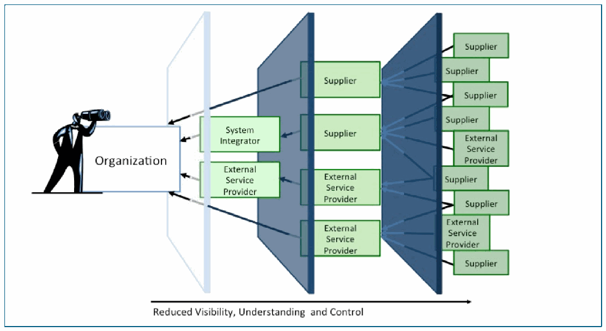
サプライチェーン・リスク管理における可視性の課題を示す図。組織からシステムインテグレーター、外部サービスプロバイダーを経て複数のサプライヤーやサービス提供者へと供給網が多層化し、組織が把握・理解・管理できる範囲が右方向に進むほど縮小する様子を示す。
Figure 5: Visibility Challenges for Supply Chain Risk Management (SCRM)
図5：サプライチェーンリスクマネジメント（SCRM）における可視性の課題
未レビュー訳2 5
2 5
未レビュー訳P RO GRA M A ND PR OJ ECT ACHI EVE ME NTS | F Y 2015
プログラムおよびプロジェクトの成果 | FY 2015
未レビュー訳THIS PUBLICATION IS AVAILABLE FREE OF CHARGE FROM: http://dx.doi.org/10.6028/NIST.SP.800-182
本出版物は以下より無料で入手可能です：http://dx.doi.org/10.6028/NIST.SP.800-182
未レビュー訳CSD staff continued to join staff members from N A T I O N W I D E P U B L I C the Department of Defense in co-chairing a U.S. federal
〔左段〕CSD職員は国防総省（DoD）職員とともに、米国連邦政府の〔右段見出し〕全米公共
未レビュー訳S A F E T Y B R O A D B A N D
安全ブロードバンド
未レビュー訳interagency working group on SCRM. The working group
〔左段の続き〕SCRM省庁間作業部会の共同議長を務め続けた。同作業部会は、ホワイトハウスの包括的国家
未レビュー訳N E T W O R K ( N P S B N )
ネットワーク (NPSBN)
未レビュー訳evolved from the White House’s Comprehensive National Cybersecurity Initiative (CNCI) 11, DevelopaMulti-Pronged C Y B E R S E C U R I T Y ApproachforGlobalSupplyChainRiskManagement, which ended in 2014. In FY 2015, the co-chairs began the process of formalizing the working group under the auspices of the
サイバーセキュリティイニシアチブ（CNCI）第11項『グローバルサプライチェーンリスク管理に向けた多角的アプローチの開発』から発展した。この取り組みは2014年に終了した。2015年度、共同議長は〔左段〕作業部会を正式化する手続きを開始した。〔右段見出し〕サイバーセキュリティ
未レビュー訳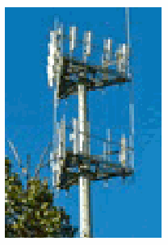
全国公共安全ブロードバンド網（NPSBN）の通信設備塔。複数の無線アンテナを備えた鉄塔の写真。
In February 2012, Congress
2012年2月、連邦議会は
未レビュー訳CNSS.
CNSS。
未レビュー訳passed the Middle Class Tax Relief and Job Creation Act. One portion
「中間層減税および雇用創出法」を可決した。その一部では、
未レビュー訳CSD continued working with partners through the
CSDは、次を通じてパートナーとの連携を継続した：
未レビュー訳of this legislation calls for the
この法律では、以下を求めている：
未レビュー訳Software and Supply Chain Assurance (SSCA) Forum, co-
ソフトウェアおよびサプライチェーン保証（SSCA）フォーラム、共同
未レビュー訳establishment of a nationwide,
全国規模の確立、
未レビュー訳sponsoring four multi-day workshops. The SSCA Working
主催による4つの複数日にわたるワークショップ。SSCAワーキング
未レビュー訳interoperable public-safety broad-
相互運用可能な公共安全ブロード
未レビュー訳Group (WG) is a key public-private partnership that meets
グループ（WG）は、主要な官民パートナーシップであり、
未レビュー訳band network based on the
バンドネットワークに基づく
未レビュー訳quarterly to discuss current projects, tools, resources, and
四半期ごとに会合を開き、現在のプロジェクト、ツール、リソース、および
未レビュー訳3rd Generation Partnership Project’s
第3世代パートナーシッププロジェクトの
未レビュー訳lessons learned regarding CSCRM. The SSCA WG is co-
CSCRMに関する教訓。SSCA WGは共同で
未レビュー訳(3GPP) Long-Term Evolution (LTE)
(3GPP) Long-Term Evolution (LTE)
未レビュー訳sponsored by NIST, GSA, DoD and DHS.
NIST、GSA、DoD、およびDHSによって後援されています。
未レビュー訳technology. The network will be
技術。このネットワークは、
未レビュー訳In FY 2016, CSD will:
2016会計年度において、CSDは以下を実施する：
未レビュー訳deployed and operated by the First
First Responder Network Authority（FirstNet）によって配備・運用される。
未レビュー訳•Continue working on Industry Best Practices for Cyber Responder Network Authority Source: http://www.pscr.gov/ Supply Chain Management, including hosting a two-(FirstNet). The planned NPSBN will day workshop, developing cyber supply-chain stan- “createamuchneedednationwideinteroperablebroadband dards mappings to the Cybersecurity Framework, as networkthatwillhelppolice,firefighters,emergencymedical well as a strategy to better integrate the supply-chain serviceprofessionalsandotherpublicsafetyofficialsstay management and information security functions in or- safe and do their jobs.” (see http://www.ntia.doc.gov/ ganizations; the various pieces of the research project category/public-safety). NIST is directed to establish a list will culminate in a draft guidance document; of certified devices and required components to be used
•〔左段〕サイバーサプライチェーン管理の業界ベストプラクティスに関する作業を継続する。2日間のワークショップ開催、サイバーサプライチェーン標準とサイバーセキュリティ・フレームワークの対応付け、組織内のサプライチェーン管理機能と情報セキュリティ機能の統合を改善する戦略の策定を含む。調査プロジェクトの成果をまとめ、ガイダンス文書の草案を作成する。〔右段〕出典：http://www.pscr.gov/。計画中のNPSBNは、「警察、消防士、救急医療従事者、その他の公安職員が安全を保ち、職務を果たせるよう支援する、全国規模で相互運用可能なブロードバンド網を構築する」（http://www.ntia.doc.gov/category/public-safety を参照）。NISTは認定機器および必須コンポーネントの一覧を作成するよう指示されている。
未レビュー訳•Continue to co-chair the interagency working group on by public-safety officials, vendors, and other interested parties for interacting with the nationwide network. NIST cyber supply-chain risk management; is also directed to conduct research and development
•〔左段〕サイバーサプライチェーンリスク管理に関する省庁間作業部会の共同議長を続ける。〔右段〕全国ネットワークに接続する公安職員、ベンダー、その他の関係者が使用する。NISTは、全国網の拡大・高度化を支援する研究開発も行うよう指示されている。
未レビュー訳•Begin research to demonstrate cause and effect rela-that supports the acceleration and advancement of the tionships between cyber supply-chain capability/ma-nationwide network. turity levels and organizational performance outcomes In FY 2015, CSD supported the joint National over time; and Telecommunications and Information Administration (NTIA)
•〔左段〕サイバーサプライチェーン能力・成熟度と組織の長期的なパフォーマンス成果の因果関係を実証する研究を開始する。〔右段〕2015年度、CSDは全米電気通信情報庁（NTIA）およびNISTの公共安全通信研究（PSCR）プログラムと連携し、
未レビュー訳•Research metrics for use in supply chain risk manage-and NIST Public Safety Communications Research (PSCR) ment. program with efforts in public-safety mobile-application For More Information, See: security, identity management, and enabling cybersecurity capabilities on the PSCR 700 MHz LTE network located in http://csrc.nist.gov/scrm/ Boulder, Colorado (see http://www.pscr.gov). In June 2015, CSD, in cooperation with the Association of Public-Safety
•〔左段〕サプライチェーンリスク管理に利用する指標を研究する。詳細：http://csrc.nist.gov/scrm/。〔右段〕公共安全向けモバイルアプリケーションのセキュリティ、ID管理、コロラド州ボルダーにあるPSCRの700 MHz LTEネットワーク上でのサイバーセキュリティ機能の実現に取り組んだ（http://www.pscr.gov/ を参照）。2015年6月、CSDは全米公安通信担当官協会（
未レビュー訳CONTACTS:
連絡先：
未レビュー訳Communications Officials (APCO) International and FirstNet,
通信担当官協会（APCO）インターナショナルおよびFirstNetと共同で、
未レビュー訳ICT SCRM Team email: scrm-nist@nist.gov
ICT SCRMチーム 電子メール: scrm-nist@nist.gov
未レビュー訳held a half-day workshop titled “IdentifyingandCategorizing Data Types for Public Safety Mobile Applications.” The
「公共安全モバイルアプリケーション向けデータ型の特定と分類（IdentifyingandCategorizing Data Types for Public Safety Mobile Applications）」と題した半日間のワークショップを開催した。その
未レビュー訳Mr. Jon Boyens
Jon Boyens氏
未レビュー訳Ms. Celia Paulsen
Celia Paulsen氏
未レビュー訳outcome of that workshop will be captured in a forthcoming
そのワークショップの成果は、近く刊行される
未レビュー訳Program Lead
プログラムリード
未レビュー訳Technical Lead
テクニカルリード
未レビュー訳NIST publication in FY 2016. At PSCR’s Annual Public Safety
FY 2016のNIST刊行物に収録される予定である。PSCRの年次公共安全
未レビュー訳(301) 975-5549
(301) 975-5549
未レビュー訳(301) 975-5981
(301) 975-5981
未レビュー訳Broadband Stakeholder Conference, CSD organized a
ブロードバンド関係者会議において、CSDは
未レビュー訳jon.boyens@nist.gov
jon.boyens@nist.gov
未レビュー訳celia.paulsen@nist.gov
celia.paulsen@nist.gov
未レビュー訳panel titled “Applied Public Safety Cybersecurity Research” highlightingPSCR’scybersecurityactivitiesovertheprevious twelve months in the areas of identity management, mobile application security, and LTE infrastructure cybersecurity. During FY 2015, CSD published NISTIR 8018, Public Safety Mobile Application Security Requirements
「Applied Public Safety Cybersecurity Research（応用公共安全サイバーセキュリティ研究）」と題するパネルを開催し、ID管理、モバイルアプリケーションセキュリティ、LTEインフラストラクチャのサイバーセキュリティに関する過去12か月間のPSCRの活動を紹介した。2015年度、CSDはNISTIR 8018『公共安全モバイルアプリケーションのセキュリティ要件』を発行した。
未レビュー訳2 6
2 6
未レビュー訳COMP U TER SECURITY DI VI SION ANNUAL REP ORT | 2 01 5 THIS PUBLICATION IS AVAILABLE FREE OF CHARGE FROM:
コンピュータセキュリティ部門 年次報告書 | 2015 本出版物は以下から無料で入手可能です：
未レビュー訳http://dx.doi.org/10.6028/NIST.SP.800-182
http://dx.doi.org/10.6028/NIST.SP.800-182
未レビュー訳WorkshopSummary, and NISTIR 8014, Considerationsfor
Workshop Summary』およびNISTIR 8014『Considerations for
未レビュー訳the need to integrate advanced
高度な技術を統合する必要性
未レビュー訳IdentityManagementinPublicSafetyMobileNetworks. In
Identity Management in Public Safety Mobile Networks』を刊行しました。
未レビュー訳security to protect critical assets.
重要資産を保護するためのセキュリティ。
未レビュー訳addition, CSD developed an informational survey on mobile
加えて、CSDはモバイルに関する情報調査を作成した。
未レビュー訳The Smart Grid Inter-
スマートグリッド相互運用性
未レビュー訳application vetting services titled “Mobile Application
アプリケーション審査サービス、タイトル“Mobile Application
未レビュー訳operability Panel (SGIP) became
パネル（SGIP）は、
未レビュー訳VettingServicesforPublicSafety” and Draft NISTIR 8080,
VettingServicesforPublicSafety”およびDraft NISTIR 8080、
未レビュー訳a membership-supported organi-
会員制組織となった
未レビュー訳Usability and Security Considerations for Public Safety
公共安全のためのユーザビリティとセキュリティの考慮事項
未レビュー訳zation in January 2013. The SGIP
2013年1月の組織化。SGIP
未レビュー訳MobileAuthentication.
モバイル認証。
未レビュー訳Cybersecurity Working Group (CSWG) was renamed the
サイバーセキュリティワーキンググループ（CSWG）は、
未レビュー訳CSD participated in the standards development process Smart Grid Cybersecurity Committee (SGCC), and continues for LTE technology within the 3GPP, supporting security to be led by Ms. Suzanne Lightman of the CSD in support of requirements for public safety that are related to Proximity responsibilities identified in the Energy Independence and Services (ProSe), Group Communication System Enablers Security Act of 2007. The SGCC chair is a voting member of (GCSE), and Mission Critical Push-To-Talk (MCPTT). In the SGIP Technical Committee, and serves as an ex-officio addition, CSD broadened its scope within the IETF to include Director of the Board. efforts related to public safety.
CSDは3GPP内でのLTE技術の標準開発プロセスに参加し、近接サービス（ProSe）、グループ通信システムイネーブラ（GCSE）、およびミッションクリティカルプッシュツートーク（MCPTT）に関連する公共安全のセキュリティ要件を支援した。さらに、CSDはIETF内での範囲を拡大し、公共安全に関連する取り組みを含めた。スマートグリッドサイバーセキュリティ委員会（SGCC）に改称され、2007年エネルギー独立・安全保障法で特定された責任を支援するために、引き続きCSDのスザンヌ・ライトマン（Suzanne Lightman）氏が率いている。SGCCの議長はSGIP技術委員会の投票権を持つメンバーであり、理事会の職権上の理事を務めている。
未レビュー訳During the last year, staff from CSD and ITL’s Software
この1年間、CSDおよびITLのソフトウェア
未レビュー訳In FY 2016, CSD will continue representing public and Systems Division (SSD) worked on developing network safety in international standardization efforts, such as the security tools that are specifically designed to support next-IETF and 3GPP. CSD will work to implement and exercise generation electrical power systems. They concentrated on LTE cybersecurity infrastructure capabilities in the PSCR authenticating the provenance of multicast data streams 700 MHz LTE network, conduct research into mobile from emerging power system sensors, called Phasor authentication solutions to support public-safety, and Measurement Units. By authenticating the sensors to the investigate mobile application-security services and utility, the utility may trust that sensor measurements are solutions to support the security requirements of public- coming from the correct sensors and have not been hijacked. safety mobile applications and devices. CSD will continue
2016年度において、CSDはIETFや3GPPなどの国際標準化活動において引き続き公共安全の代表を務める。CSDは、PSCR 700 MHz LTEネットワークにおいてLTEサイバーセキュリティインフラストラクチャ機能を実装および運用し、公共安全を支援するモバイル認証ソリューションの研究を実施し、公共安全モバイルアプリケーションおよびデバイスのセキュリティ要件を支援するモバイルアプリケーションセキュリティサービスとソリューションを調査する予定である。CSDは引き続き、およびシステム部門（SSD）のスタッフは、次世代電力システムをサポートするように特別に設計されたネットワークセキュリティツールの開発に取り組んだ。彼らは、フェーザ測定ユニット（PMU）と呼ばれる新たな電力システムセンサーからのマルチキャストデータストリームの出所を認証することに注力した。センサーを電力事業者に対して認証することにより、電力事業者はセンサーの測定値が正しいセンサーから送信されており、乗っ取られていないことを信頼できるようになる。
未レビュー訳Multicast authentication of sensor data is challenging,
センサーデータのマルチキャスト認証は困難であり、
未レビュー訳to engage the public-safety communications community by
〜によって公共安全通信コミュニティに関与していくこと。
未レビュー訳due to the need for low security overhead, tolerance
低いセキュリティオーバーヘッドの必要性、および耐性による
未レビュー訳organizing workshops and conferences; and participating
ワークショップやカンファレンスの開催；ならびに参加
未レビュー訳of lossy networks, time-criticality, and high data rates.
損失の多いネットワークに対するもの、時間的緊急性、および高データレート。
未レビュー訳in events such as APCO’s Annual Meeting, PSRC’s Annual
APCOの年次大会、PSRCの年次などのイベントへの
未レビュー訳Researchers augmented an existing authentication scheme
研究者らは既存の認証スキームを拡張した
未レビュー訳Public Safety Broadband Stakeholder Conference, and the
公共安全ブロードバンドステークホルダーカンファレンス、および
未レビュー訳to accommodate high-data-rate sensor transmissions that
高データレートのセンサー送信に対応するためであり、これらは
未レビュー訳International Wireless Communications Expo (IWCE).
国際無線通信博覧会（IWCE）。
未レビュー訳are unbounded in length (no session expiration). Using dual offset key chains to reduce the authentication delay
長さが無制限である（セッション有効期限なし）。デュアルオフセットキーチェーンを使用して認証遅延を低減し、
未レビュー訳CONTACTS:
連絡先:
未レビュー訳and computational overhead associated with key chain commitment, they developed a new protocol called inf-
およびキーチェーンコミットメントに関連する計算オーバーヘッドを低減し、彼らはinf-と呼ばれる新しいプロトコルを開発した
未レビュー訳Ms. Sheila Frankel
シーラ・フランケル氏
未レビュー訳Dr. Nelson Hastings
ネルソン・ヘイスティングス博士
未レビュー訳TESLA that meets the performance requirements imposed
課された性能要件を満たすTESLA
未レビュー訳(301) 975-3297
(301) 975-3297
未レビュー訳(301) 975-5237
(301) 975-5237
未レビュー訳by the physical dynamics of the power system.
電力システムの物理的動態によって。
未レビュー訳sheila.frankel@nist.gov
sheila.frankel@nist.gov
未レビュー訳nelson.hastings@nist.gov
nelson.hastings@nist.gov
未レビュー訳Their key disclosure mechanism, as well as com-parative studies showing a cumulative reduction in the
彼らの鍵開示メカニズム、ならびに累積的な削減を示す比較研究は、
未レビュー訳S M A R T G R I D C Y B E R S E C U R I T Y
スマートグリッド サイバーセキュリティ
未レビュー訳communication overhead and computational cost over existing methods, are outlined in a paper to appear at the
既存の手法に対する通信オーバーヘッドおよび計算コストについて、次で開催予定の論文で概説されている。
未レビュー訳The major elements of the smart grid are information
スマートグリッドの主要な要素は、情報
未レビュー訳Association for Computing Machinery (ACM) Symposium
Association for Computing Machinery（ACM）シンポジウム
未レビュー訳technology, industrial control systems/operational tech-
技術、産業制御システム／運用技-
未レビュー訳on Applied Computing.
（ACM Symposium）on Applied Computingにおいて発表された。
未レビュー訳nology and the communications infrastructure. The
術（OT）、および通信インフラストラクチャ。この
未レビュー訳Significant effort was made to integrate their
彼らの認証プロトコルを既存のネットワークシミュレーション
未レビュー訳infrastructure is used to send command information across
インフラストラクチャは、電力網全体でコマンド情報を送信するために使用され、
未レビュー訳authentication protocol into existing network simulation
ソフトウェア、特にOPNETに統合するために多大な努力が払われ、
未レビュー訳the electric grid from generation systems to distribution
発電システムから配電システムに至るまで、
未レビュー訳software, specifically OPNET, thus providing potential users
潜在的なユーザーに提供された。
未レビュー訳systems, and to exchange usage and billing information
システム、ならびに使用量および請求に関する情報を交換すること
未レビュー訳the ability to evaluate the protocol on their own networks
自らのネットワーク上でそのプロトコルを評価する能力
未レビュー訳between utilities and their customers. Key to the successful
公益事業者とその顧客の間で。成功への鍵となるのは、
未レビュー訳and for their own applications.
および自らのアプリケーション向けに。
未レビュー訳deployment of the smart grid infrastructure is the development of the cybersecurity strategy that includes Furthermore, in an effort to address the growing interest cybersecurity as a design consideration for new and in co-optimizing cyber and physical components to work emerging systems, and an approach to adding cybersecurity together as a system, CSD staff developed mathematical into existing systems. The electric grid is critical to the formalism to tradeoff the sensitivity of a dynamic system economic and physical well-being of the nation, and to attack or perturbation against the authentication emerging cyber threats targeting power systems highlight overhead incurred by their protocol. This formalism was
スマートグリッドインフラストラクチャの導入は、新規および新興のシステムに対する設計上の考慮事項としてのサイバーセキュリティ、ならびに既存のシステムにサイバーセキュリティを追加するためのアプローチを含むサイバーセキュリティ戦略の策定である。電力網は国家の経済的・物理的な健全性にとって極めて重要であり、電力システムを標的とする新たなサイバー脅威は浮き彫りにしている。さらに、サイバーコンポーネントと物理コンポーネントを1つのシステムとして連携して機能させる共同最適化への関心の高まりに対応する取り組みにおいて、CSDスタッフは、攻撃や摂動に対する動的システムの感度と、自らのプロトコルによって生じる認証オーバーヘッドとのトレードオフを図るための数学的定式化を策定した。この定式化は、
未レビュー訳2 7
2 7
未レビュー訳P RO GRA M A ND PR OJ ECT ACHI EVE ME NTS | F Y 2015
プログラムおよびプロジェクトの成果 | FY 2015
未レビュー訳demonstrated on a power system use case showing the coordination, cooperation, focus, public engagement, tech-limiting considerations between authentication overhead nology transfer and sustainability. NIST will highlight these and stability margins of a wide-area damping controller. activities, engage various stakeholder groups and create
原文更新後、再確認待ち
forums for sharing information and leveraging best practices.
情報共有およびベストプラクティス活用のためのフォーラム。
未レビュー訳In FY 2016, CSD will coordinate with NIST’s Engineering Laboratory (EL) and Smart Grid Program Office on the The NICE Program Office focuses on the following further development of a Cybersecurity Smart Grid Test activities: Lab, part of the NIST Smart Grid Testbed Facility now
2016年度、CSDはNISTのエンジニアリング研究所（EL）およびスマートグリッドプログラムオフィスと連携して、現在NISTスマートグリッドテストベッド施設の一部であるサイバーセキュリティスマートグリッドテストラボのさらなる開発を進める予定である。NICEプログラムオフィスは以下の活動に焦点を当てている：
未レビュー訳•Accelerate learning and skills development by invoking
•以下を喚起することにより学習とスキル開発を加速する：
未レビュー訳under construction. CSD will also collaborate with SSD on
建設中である。CSDはまた、以下に関してSSDと連携する予定である：
未レビュー訳a sense of urgency in both the public and private sec-
官民双方のセクターにおける危機感を
未レビュー訳cybersecurity research in relation to the IEEE 1588, Precision
IEEE 1588、Precisionに関連するサイバーセキュリティ研究
未レビュー訳tors to address the shortage of a skilled cybersecurity
熟練したサイバーセキュリティ人材の不足に対処するための
未レビュー訳Time Protocol, a time synchronization standard that is used
Time Protocol（使用されている時刻同期規格）
未レビュー訳workforce;
人材；
未レビュー訳for the electric grid and other special-purpose industrial
電力網およびその他の専用の産業用
未レビュー訳•Nurture a diverse learning community through
•以下を通じて多様な学習コミュニティを育成する：
未レビュー訳automation and measurement networks.
自動化および計測ネットワーク。
未レビュー訳strengthening education and training across a multi-
多岐にわたる教育およびトレーニングの強化、
未レビュー訳For More Information, See:
詳細については、以下を参照：
未レビュー訳farious ecosystem that prioritizes learning, emphasizes
学習を優先し、以下を重視する多様なエコシステム
未レビュー訳http://www.nist.gov/smartgrid
http://www.nist.gov/smartgrid
未レビュー訳outcomes, and celebrates diversity; and
成果を上げ、多様性を尊重すること、そして
未レビュー訳http://www.sgip.org
http://www.sgip.org
未レビュー訳•Guide Career Development and Workforce Planning that supports job seekers and employers in addressing market demands and maximizing talent management.
•求職者や雇用主が市場の需要に対応し、タレントマネジメントを最大化することを支援するキャリア開発および労働力計画を主導する。
未レビュー訳CONTACTS:
問い合わせ先:
未レビュー訳The NICE Program Office staff promoted NICE act-
NICEプログラムオフィスのスタッフはNICEの活-
未レビュー訳Ms. Suzanne Lightman
スザンヌ・ライトマン氏
未レビュー訳Ms. Victoria Yan Pillitteri
ヴィクトリア・ヤン・ピリッテリ氏
未レビュー訳ivities through contributions to many events, symposia,
動を、多くのイベントやシンポジウムへの貢献を通じて推進し、
未レビュー訳(301) 975-6442
(301) 975-6442
未レビュー訳(301) 975-8542
(301) 975-8542
未レビュー訳forums, competitions, educational outreach meetings, and
フォーラム、競技会、教育アウトリーチ会議、および
未レビュー訳suzanne.lightman@nist.gov
suzanne.lightman@nist.gov
未レビュー訳victoria.pillitteri@nist.gov
victoria.pillitteri@nist.gov
未レビュー訳workshops. The staff continued its leadership to achieve the Office of Personnel Management (OPM) Cross-Agency
ワークショップ。スタッフは、人事管理局（OPM）の機関横断
未レビュー訳Ms. Tanya Brewer
ターニャ・ブリューワー氏
未レビュー訳Priority Goal: “Closing Skills Gaps” for the IT/Cybersecurity
優先目標：IT／サイバーセキュリティにおける「スキルギャップの解消」を達成するため、引き続き主導的な役割を果たした
未レビュー訳(301) 975-4534
(301) 975-4534
未レビュー訳workforce. The staff focused on reducing cybersecurity
人材。職員は、サイバーセキュリティ
未レビュー訳tbrewer@nist.gov
tbrewer@nist.gov
未レビュー訳workforce gaps and supported the goals of the White House’s “Ready to Work” initiative. In addition, the staff took leadership of the NICE Working Group, a group established
人材の不足解消に注力し、ホワイトハウスの「Ready to Work」イニシアチブの目標を支援した。さらに、職員はNICEワーキンググループのリーダーシップを執った。同グループは、
未レビュー訳C Y B E R S E C U R I T Y
サイバーセキュリティ
未レビュー訳to provide a mechanism in which public and private sector
メカニズムを提供するために設立されたもので、官民両セクターの
未レビュー訳A W A R E N E S S , T R A I N I N G ,
意識向上、トレーニング、
未レビュー訳participants can develop concepts, design strategies, and
参加者が概念を策定し、戦略を設計し、
未レビュー訳E D U C A T I O N , A N D O U T R E A C H pursue actions that advance cybersecurity education,
教育およびアウトリーチ サイバーセキュリティ教育を推進する取り組みを追求し、
未レビュー訳training, and workforce development. In FY 2015, the NICE Program Office announced that
トレーニング、および人材育成を進める。FY 2015において、NICEプログラムオフィスは次のように発表した：
未レビュー訳National Initiative for Cybersecurity
国家サイバーセキュリティ
未レビュー訳a grant will be awarded to support the development
開発を支援するための助成金が交付されること：
未レビュー訳Education (NICE)
教育イニシアチブ（NICE）
未レビュー訳of a visualization tool to show the demand for and
可視化ツールであり、需要および
未レビュー訳NIST has been the lead for the National Initiative for
NISTは、～のための国家イニシアチブの主導役を務めてきた：
未レビュー訳availability of critical cybersecurity jobs across the nation.
全米における重要なサイバーセキュリティ職の求人状況を示すもの。
未レビュー訳Cybersecurity Education (NICE) since its inception in 2010.
2010年の発足以来、サイバーセキュリティ教育（NICE）。
未レビュー訳This cybersecurity jobs “heat map” will be developed
このサイバーセキュリティ求人“ヒートマップ”は開発される予定である
未レビュー訳NICE is responsive to President Obama’s declaration that
NICEは、オバマ大統領の以下の宣言に対応している：
未レビュー訳in partnership with Computing Technology Industry
Computing Technology Industry との提携により
未レビュー訳the “cyber threat is one of the most serious economic
“サイバー脅威は最も深刻な経済的
未レビュー訳Association (CompTIA) and Burning Glass Technologies.
Association（CompTIA）および Burning Glass Technologies。
未レビュー訳and national security challenges we face as a nation” and
および国家として直面している国家安全保障上の課題の1つである”とし、
未レビュー訳The map will provide data to help employers, job seekers,
このマップは、雇用者や求職者を支援するためのデータを提供する。
未レビュー訳“America’s economic prosperity in the 21st century will
“21世紀におけるアメリカの経済的繁栄は、
未レビュー訳policy makers, training providers, and guidance counselors
政策立案者、トレーニング提供者、およびガイダンスカウンセラー
未レビュー訳depend on cybersecurity.”
サイバーセキュリティにかかっている。”
未レビュー訳in order to meet today’s increasing demand for cyber-
今日の高まるサイバーセキュリティ需要に応えるため、
未レビュー訳The NICE program seeks to foster, energize, and security workers. NICE also provided grant support for the promote a robust network and an integrated ecosystem NICE 2015 Conference and Expo, the inaugural National of cybersecurity education, training, and workforce Cybersecurity K-12 Cybersecurity Education Conference, the development.
NICEプログラムは、サイバーセキュリティ教育、トレーニング、および労働力開発の強固なネットワークと統合されたエコシステムの育成、活性化、促進を目指している。セキュリティ従事者。NICEはまた、NICE 2015 Conference and Expo、第1回National Cybersecurity K-12 Cybersecurity Education Conference、に対する助成金支援を提供した。
未レビュー訳Centers of Academic Excellence (CAE) Community Meeting, and the NICE Challenge Project.
Centers of Academic Excellence（CAE）コミュニティミーティング、およびNICE Challenge Project。
未レビュー訳CSD is leading the NICE program, working from the strengths and energy of more than twenty federal In FY 2016, the NICE Program Office will continue to departments and agencies, leveraging each of their promote the coordination of existing and future cyber-relationships with academia and industry sectors to ensure security education, training, and workforce activities. The
CSDはNICEプログラムを主導し、20以上の連邦省庁の強みと活力を生かし、学術界および産業界とのそれぞれの関係を活用して以下を確実にする。2016年度（FY 2016）において、NICEプログラムオフィスは、既存および将来のサイバーセキュリティ教育、トレーニング、および労働力活動の連携を引き続き推進する。その
未レビュー訳2 8
2 8
未レビュー訳COMP U TER SECURITY DI VI SION ANNUAL REP ORT | 2 01 5 THIS PUBLICATION IS AVAILABLE FREE OF CHARGE FROM:
コンピュータセキュリティ部門 年次報告書 | 2015 本出版物は以下より無料で入手可能です：
未レビュー訳http://dx.doi.org/10.6028/NIST.SP.800-182
http://dx.doi.org/10.6028/NIST.SP.800-182
未レビュー訳Sixth annual NICE Workshop will take place on November During FY 2015, the CSRC has been updated on a daily 3-4, 2015 in San Diego, CA (see http://csrc.nist.gov/nice/ basis with new information, such as the publication of draft events.html). NIST will also identify opportunities to extend and final documents (FIPS, SPs, NISTIRs and ITL Bulletins) and integrate the NICE focus on the cybersecurity workforce, and various project and program webpage updates. education, and training within NIST Special Publications An improvement made to the CSRC homepage was to and informational reports, while promoting the value of the add a new section titled “Draft Publications Request for National Cybersecurity Workforce Framework (NCWF) and Comments Deadlines”. This section will help our customers the forthcoming DOD Cyberspace Workforce Strategy as that are interested in submitting comments to our technical resources that address cybersecurity workforce needs. publications find the deadline dates for submitting
第6回年次NICEワークショップは、2015年11月3日〜4日にカリフォルニア州サンディエゴで開催されます（http://csrc.nist.gov/nice/events.html を参照）。NISTはまた、サイバーセキュリティ人材のニーズに対応する技術的リソースとして、国家サイバーセキュリティ人材フレームワーク（NCWF）および今後策定されるDODサイバー空間人材戦略の価値を促進しながら、NIST特別刊行物および情報レポート内においてサイバーセキュリティ人材、教育、トレーニングに関するNICEの重点分野を拡大・統合する機会を特定します。 2015年度中、CSRCは草案および最終文書（FIPS、SP、NISTIR、ITL速報）の公開や、さまざまなプロジェクトおよびプログラムのウェブページの更新など、新しい情報によって日々更新されてきました。CSRCホームページに加えられた改善点として、「Draft Publications Request for Comments Deadlines（ドラフト刊行物コメント募集締切）」と題された新しいセクションが追加されました。このセクションは、当機関の刊行物へのコメント提出に関心のある利用者が、提出締切日を確認するのに役立ちます。
未レビュー訳comments to certain publications.
特定の刊行物に対するコメント。
未レビュー訳For More Information, See:
詳細については、以下を参照してください：
未レビュー訳The CSRC website is expected to be redesigned during
CSRCのウェブサイトは以下の期間中に再設計される予定です：
未レビュー訳http://www.nist.gov/nice/
http://www.nist.gov/nice/
未レビュー訳FY 2016 to provide an improved and flexible user interface.
改善された柔軟なユーザーインターフェースを提供するための2016年度中。
未レビュー訳For More Information, See:
詳細については、次を参照：
未レビュー訳CONTACTS:
連絡先：
未レビュー訳http://csrc.nist.gov
http://csrc.nist.gov
未レビュー訳Mr. Rodney Peterson
Rodney Peterson 氏
未レビュー訳Ms. Danielle Santos
Danielle Santos 氏
未レビュー訳NICE Director
NICE ディレクター
未レビュー訳NICE Program Manager
NICE プログラムマネージャー
未レビュー訳CONTACTS:
連絡先：
未レビュー訳(301) 975-8897
(301) 975-8897
未レビュー訳(301) 975-5048
(301) 975-5048
未レビュー訳rodney@nist.gov
rodney@nist.gov
未レビュー訳danielle.santos@nist.gov
danielle.santos@nist.gov
未レビュー訳Questions regarding the CSRC website can be sent to the CSRC Webmasters at: webmaster-csrc@nist.gov.
CSRCウェブサイトに関する質問は、CSRCウェブマスター（webmaster-csrc@nist.gov）宛てに送信できます。
未レビュー訳Computer Security Resource Center
コンピュータセキュリティリソースセンター
未レビュー訳Mr. Patrick O’Reilly
パトリック・オライリー氏
未レビュー訳Ms. Nicole Keller
ニコール・ケラー氏
未レビュー訳(CSRC)
(CSRC)
未レビュー訳(301) 975-4751
(301) 975-4751
未レビュー訳(301) 975-3648
(301) 975-3648
未レビュー訳The CSRC, Computer Security Division’s (CSD) website, patrick.oreilly@nist.gov
コンピュータセキュリティ部門（CSD）のウェブサイトであるCSRC、patrick.oreilly@nist.gov
未レビュー訳nicole.keller@nist.gov
nicole.keller@nist.gov
未レビュー訳is one of the most visited websites at NIST. CSRC encourages the broad sharing of information security tools and practices, (Editor Note: Ms. Judy Barnard was part of this project provides a resource for information security standards team until her recent retirement.) and guidelines, and identifies and links key security web resources to support industry and government users. CSRC
はNISTで最もアクセス数の多いウェブサイトの1つである。CSRCは情報セキュリティのツールや実践の広範な共有を奨励し、（編集者注：Judy Barnard氏は最近退職するまで本プロジェクトチームの一員であった。）情報セキュリティ標準およびガイドラインのリソースを提供し、産業界や政府の利用者を支援する主要なセキュリティWebリソースを特定してリンクしている。CSRC
未レビュー訳Federal Computer Security Managers’
連邦コンピュータセキュリティ管理者の
未レビュー訳is an integral component of all of the work that CSD conducts
はCSDが実施するすべての業務の不可欠な要素である
未レビュー訳(FCSM) Forum
(FCSM) フォーラム
未レビュー訳and produces. It is CSD’s repository for anyone wanting to
および作成している。これは、以下を希望するすべての人のためのCSDのリポジトリである：
未レビュー訳The Federal Computer Security Managers’ (FCSM)
連邦コンピュータセキュリティ管理者（FCSM）
未レビュー訳access these documents and other valuable security-related
これらの文書およびその他の貴重なセキュリティ関連
未レビュー訳Forum is sponsored by NIST to promote the sharing of
フォーラムは、共有を促進するためにNISTによって後援されている：
未レビュー訳information. During FY 2015, CSRC had more than 5.9 million
情報へのアクセス。FY 2015中、CSRCには5.9 million以上の
未レビュー訳security-related information among federal agencies. The
連邦機関間でのセキュリティ関連情報。この
未レビュー訳page views and downloads.
ページビューおよびダウンロード。
未レビュー訳Forum, which serves more than 1,100 members, strives to
1,100名を超えるメンバーを擁するフォーラムは、以下に努めています：
未レビュー訳CSRC is the primary gateway for gaining access to NIST
CSRCは、NISTにアクセスするための主要なゲートウェイであり、
未レビュー訳provide an ongoing opportunity for managers of federal
連邦政府の管理者に継続的な機会を提供し、
未レビュー訳computer security publications, standards, and guidelines,
コンピュータセキュリティ刊行物、標準、およびガイドライン、
未レビュー訳information security programs to exchange information
情報セキュリティプログラムの情報を交換し、
未レビュー訳and serves as a vital link to CSD’s customers. Publications
CSDの顧客への重要なリンクとして機能します。刊行物は、
未レビュー訳security materials in a timely manner, build upon the
セキュリティ資料を適時に交換し、〜を活用すること
未レビュー訳are organized to help users locate relevant information
利用者が関連情報を見つけられるように整理されています
未レビュー訳experiences of other programs, and reduce possible
他のプログラムの経験、および生じ得る
未レビュー訳quickly and are arranged by topic, relevant security control
迅速に、かつトピック、関連するセキュリティ管理策
未レビュー訳duplication of effort. It provides a mechanism for NIST to
労力の重複を削減する。これは、NISTが
未レビュー訳family, and legal requirements.
ファミリー、および法的要件ごとに整理されている。
未レビュー訳share information directly with federal agency information
連邦機関の情報セキュリティ管理者と直接情報を共有し、
未レビュー訳In addition to CSRC, CSD maintains a publication security managers in fulfillment of NIST’s leadership announcement mailing list. This free e mail list notifies mandate under FISMA. It assists NIST in establishing subscribers about publications that have been posted to the and maintaining relationships with other individuals or CSRC website, along with announcing new CSD-sponsored organizations that are actively addressing information events and important news and/or announcements. The security issues within the Federal Government. CSD’s Patricia e-mail list is a valuable tool for more than 59,000 subscribers Toth serves as the Chairperson and Peggy Himes serves as from the Federal Government, industry, academia, and the Secretariat. individuals with a personal interest in IT security worldwide. The Forum maintains an extensive email subscription Individuals who are interested in subscribing to this list service. Participation in the service is only open to Federal should visit http://csrc.nist.gov/publications/subscribe.html Government employees who participate in the management for more information.
CSRCに加えて、CSDは出版物発表メーリングリストを維持しています。この無料の電子メールリストは、CSRCウェブサイトに掲載された出版物について購読者に通知するとともに、CSDが後援する新しいイベントや重要なニュースおよび／または発表を周知します。この電子メールリストは、連邦政府、業界、学術界、そして世界中でITセキュリティに個人的な関心を持つ個人からなる59,000人以上の購読者にとって貴重なツールです。このリストへの登録に関心のある方は、詳細についてhttp://csrc.nist.gov/publications/subscribe.htmlをご覧ください。 FISMAに基づくNISTのリーダーシップの責務に従い、セキュリティ管理者と直接情報共有します。これは、連邦政府内で情報セキュリティ問題に積極的に取り組んでいる他の個人または組織との関係を確立および維持する上でNISTを支援します。CSDのPatricia Tothが議長を務め、Peggy Himesが事務局を務めています。フォーラムは広範な電子メール購読サービスを維持しています。本サービスへの参加は、自組織の情報システムセキュリティの管理に携わる連邦政府職員のみに限定されています。
未レビュー訳of their organization’s information system security
自組織の情報システムセキュリティの
未レビュー訳2 9
2 9
未レビュー訳P RO GRA M A ND PR OJ ECT ACHI EVE ME NTS | F Y 2015
プログラムおよびプロジェクトの成果 | FY 2015
未レビュー訳program. The Forum also holds bimonthly meetings and an Booth, NIST; annual two-day conference to discuss current issues and
原文更新後、再確認待ち
•Department of Transportation (DOT) Security Program
•運輸省（DOT）セキュリティプログラム
未レビュー訳developments of interest to those responsible for protecting
保護を担当する関係者にとって関心のある動向
未レビュー訳Management Subcommittee’s Information Assurance
管理小委員会の情報保証
未レビュー訳sensitive (unclassified) federal systems. Events are open to
機微な（非機密）連邦システム。イベントの対象は
未レビュー訳Policy Working Group (IAPWG), Kevin Sanchez-Cherry,
政策作業部会（IAPWG）、Kevin Sanchez-Cherry、
未レビュー訳federal employees and their designated support contractors.
連邦職員およびその指定支援請負業者。
未レビュー訳DOT;
DOT;
未レビュー訳Topics of discussion at FCSM meetings in FY 2015
FY 2015のFCSM会合における討議トピック
未レビュー訳•Speak Out - Daniel Wood, Treasury – Term & Topic: PKI
•Speak Out - Daniel Wood、財務省 – 用語&トピック：PKI
未レビュー訳included briefings from various federal agencies on the
には、以下に関する様々な連邦機関からのブリーフィングが含まれていた：
未レビュー訳Landscape, Pat Toth, NIST – Request for topics for FY
ランドスケープ、Pat Toth、NIST – FYに向けたトピック要望
未レビュー訳Supply Chain, the Einstein 3 Accelerated (E3A) Reporting
サプライチェーン、Einstein 3 Accelerated（E3A）レポーティング
未レビュー訳2016 meetings;
2016年度会合；
未レビュー訳Tool, implementing privacy controls from Appendix J in SP 800-53, the U.S. Government Configuration Baseline • Information Technology (IT) Policy Initiatives Panel, (USGCB), the National Cybersecurity Center for Excellence Adam Sedgewick, NIST, William Fisher and Tim Mc-(NCCoE), and SP 800-88 Revision 1, GuidelinesforMedia Bride, National Cybersecurity Center of Excellence Sanitation.
ツール、SP 800-53付録Jのプライバシーコントロールの実装、米国政府構成ベースライン（USGCB）、国立サイバーセキュリティ推進センター（NCCoE）、およびSP 800-88 Revision 1『メディアサニタイゼーションに関するガイドライン』。• 情報技術（IT）政策イニシアチブパネル、Adam Sedgewick（NIST）、William FisherおよびTim McBride（国立サイバーセキュリティ推進センター）
未レビュー訳(NCCoE); Mike Garcia, National Strategy for Trusted
(NCCoE)；Mike Garcia、サイバー空間における信頼された
未レビュー訳This year’s annual two-day offsite was held at NIST on Identities in Cyberspace (NSTIC); August 26-27, 2015. Presentations included current tech-
今年の年次2日間のオフサイトは2015年8月26日～27日にNISTで開催された。アイデンティティのための国家戦略（NSTIC）；プレゼンテーションには現在の技術-
未レビュー訳•U.S. Census Bureau Risk Management Program Imple-
•米国国勢調査局リスク管理プログラムの実-
未レビュー訳nical, operational and management information systems
的、運用的、および管理的な情報システム
未レビュー訳mentation, Jaime Lynn Noble, U.S. Census Bureau; and
施、Jaime Lynn Noble、米国国勢調査局；および
未レビュー訳security topics and updates on the information system
セキュリティトピック、ならびに情報システムに関する最新情報
未レビュー訳•DHS Continuous Diagnostics and Mitigation (CDM)
•DHSの継続的診断および緩和（CDM）
未レビュー訳security activities of OMB, GAO, the National Aeronautics
OMB、GAO、米国航空宇宙局のセキュリティ活動
未レビュー訳Program Overview, Martin Stanley, DHS.
プログラム概要、Martin Stanley、DHS。
未レビュー訳and Space Administration (NASA), the National Archives and Records Administration (NARA), the Federal Aviation The Forum plays a valuable role in helping NIST and Administration(FAA),theU.S.CensusBureau,DHS,andNIST. other federal agencies to develop and maintain a strong, Most presentations are available on the FCSM’s website (see proactive stance in the identification and resolution of new http://csrc.nist.gov/groups/SMA/forum/), under “Events.” strategic and tactical IT security issues as they emerge. The
および航空宇宙局（NASA）、国立公文書記録管理局（NARA）、連邦航空局（FAA）、米国国勢調査局、DHS、およびNIST。大半のプレゼンテーションは、FCSMのウェブサイト（http://csrc.nist.gov/groups/SMA/forum/ を参照）の「Events」から入手可能です。本フォーラムは、NISTおよびその他の連邦機関が、新たな戦略的・戦術的ITセキュリティ問題が発生した際にそれらを特定および解決するための強力かつ積極的な姿勢を策定および維持するのを支援する上で、貴重な役割を果たしています。
未レビュー訳number of members on the email list has grown steadily
電子メールリストのメンバー数は着実に増加しており、
未レビュー訳•NIST Computer Security Division Update, Matthew and provides a valuable resource for federal security Scholl, NIST; program managers. To join, email your name, affiliation, phone number, title, and confirmation that you are a federal
•NISTコンピュータセキュリティ部門の最新情報、Matthew Scholl、NIST；連邦セキュリティプログラムマネージャーにとって貴重なリソースを提供しています。参加するには、氏名、所属、電話番号、役職、および自身が連邦
未レビュー訳•How to Best Protect Against Future Cyber Incidents, employee to sec-forum@nist.gov; only .gov and .mil email Trevor H. Rudolph, OMB; addresses are accepted in the list serve.
•今後のサイバーインシデントから最善の保護を行う方法、Trevor H. Rudolph、OMB；職員であることの確認を sec-forum@nist.gov 宛てに電子メールで送信してください。メーリングリスト（list serve）では .gov および .mil の電子メールアドレスのみが受け付けられます。
未レビュー訳•Implementing TIC E3A in Government and Using the XLA Threat Reduction and Correlation Tool (xTractTM), For More Information, See: Sandra Paul-Blanc, NARA, and Philip Kulp, XLA; http://csrc.nist.gov/groups/SMA/forum/
•政府におけるTIC E3Aの実装およびXLA脅威削減・相関ツール（xTractTM）の活用、Sandra Paul-Blanc、NARA、およびPhilip Kulp、XLA；詳細については、次を参照してください：http://csrc.nist.gov/groups/SMA/forum/
未レビュー訳•GAO Information Security Update, Gregory C. Wilshu-
•GAO情報セキュリティの最新情報、Gregory C. Wilshu-
未レビュー訳CONTACTS:
連絡先：
未レビュー訳sen, GAO;
sen、GAO；
未レビュー訳•NIST SP 800-163, VettingtheSecurityofMobileAppli- Ms. Patricia Toth Ms. Peggy Himes cations, Steve Quirolgico, NIST; Chair Administration (301) 975-5140 (301) 975-2489
•NIST SP 800-163『モバイルアプリケーションのセキュリティ検証』、Steve Quirolgico、NIST； Patricia Toth氏 Peggy Himes氏 議長 総務 (301) 975-5140 (301) 975-2489
未レビュー訳•Using Risk Management to Improve Privacy in Informa-ptoth@nist.gov peggy.himes@nist.gov tion Systems, Ellen Nadeau, NIST;
•『情報システムにおけるプライバシー向上のためのリスクマネジメントの活用』、Ellen Nadeau、NIST； ptoth@nist.gov peggy.himes@nist.gov
未レビュー訳•Framework for Improving Critical Infrastructure Cyber-Federal Information Systems Security security, Matthew Barrett, NIST; Educators’ Association (FISSEA)
•『重要インフラのサイバーセキュリティ向上のためのフレームワーク』、Matthew Barrett、NIST； 連邦情報システムセキュリティ教育者協会（FISSEA）
未レビュー訳•Mobile Application Security and PIV Derived Creden-The Federal Information Systems Security Educators’ tials, Jane Maples, NASA and Peter Cauwels, NASA; Association (FISSEA), founded in 1987, is an organization
•『モバイルアプリケーションセキュリティとPIV誘導認証情報』、Jane Maples、NASA、Peter Cauwels、NASA； 1987年に設立された連邦情報システムセキュリティ教育者協会（FISSEA）は、
未レビュー訳•Rethinking Cybersecurity from the Inside Out: An En-hosted by NIST for information system security professionals gineering and Life Cycle-Based Approach for Building to assist federal agencies in meeting their information Trustworthy Resilient Systems, Ron Ross, NIST Fellow; system’s security awareness, training, and education
•『サイバーセキュリティの抜本的再考：信頼性と耐障害性を備えたシステムを構築するためのエンジニアリングおよびライフサイクルに基づくアプローチ』、Ron Ross、NISTフェロー； 情報システムセキュリティ専門家向けにNISTが主催し、連邦機関が情報システムのセキュリティ意識向上、トレーニング、教育の
未レビュー訳•How FAA Required 50,000+ People to Use PIV Cards in responsibilities. FISSEA strives to elevate the general level of information system security knowledge for the Federal
•FAAがいかにして50,000人以上にPIVカードの使用を義務付けたか（期間： 責任を果たすことを支援するための組織です。FISSEAは、連邦における情報システムセキュリティ知識の全体的な水準を向上させるよう努めています。
未レビュー訳FISSEA membership is open to information system security professionals, professional trainers and educators, and managers responsible for information system security training programs in federal agencies, as well as contractors of these agencies and faculty members of accredited educational institutions who are involved in information security training and education. Willingness to share products, information, and experiences is all that is required to become a FISSEA member. A working group meets monthly to administer business activities. FISSEA maintains a website, a mailing list, and participates in a social networking site as a means of communication for its members. CSD assists FISSEA with
FISSEAの会員資格は、連邦機関における情報システムセキュリティ研修プログラムの責任者である管理者、プロのトレーナーや教育者、情報システムセキュリティ専門家に開かれているほか、これら機関の請負業者や、情報セキュリティの研修および教育に携わる認可教育機関の教職員にも開かれている。成果物、情報、経験を共有する意欲さえあれば、誰でもFISSEA会員になることができる。事業活動を運営するため、ワーキンググループが毎月会合を開いている。FISSEAはウェブサイトやメーリングリストを維持管理し、会員向けのコミュニケーション手段としてソーシャル・ネットワーキング・サイトに参加している。CSDは、以下に関してFISSEAを支援している：
未レビュー訳Figure 6: Pecha-Kucha Participants (left to right):
図6：ペチャクチャ参加者（左から右）：
未レビュー訳its operations by providing staff support for several of its
いくつかの活動に対するスタッフ支援の提供、およびその運営を
未レビュー訳Art Chantker, Potomac Forum, Frank Cicio Jr, iQ4
Art Chantker、Potomac Forum、Frank Cicio Jr、iQ4
未レビュー訳activities and by being FISSEA’s host agency.
活動、ならびにFISSEAのホスト機関となることによって支援している。
未レビュー訳Corporation, Sandy Toner, ICF International, and
Corporation、Sandy Toner、ICF International、および
未レビュー訳The 28th Annual FISSEA Conference occurred March 24-
第28回年次FISSEAカンファレンスは、3月24日～
未レビュー訳Louis Numkin, FISSEA Life Member
Louis Numkin、FISSEA終身会員
未レビュー訳25, 2015 at NIST. The FISSEA audience included managers responsible for information systems security awareness, FISSEA conferences include Pecha Kucha (Lightning training, certifications, workforce identification, compliance, Rounds) sessions. Speakers have 6 minutes 40 seconds for etc. in federal agencies; contractors providing awareness their presentations, and the challenge is in limiting one’s and training support; and faculty members of accredited talk to only 20 slides. It’s challenging to do as a speaker and educational institutions who are involved in information quite fun for the audience to watch, so the Pecha Kucha fast-security training and education. Pat Toth, Peggy Himes, paced talks proved to be entertaining and educational. and Judy Barnard (NIST), as well as Gretchen Morris (DB The FISSEA Educator of the Year Award was established Consulting/NASA), and other members of the FISSEA to recognize and honor a contemporary who is making Working Group, were integral to the effort to support the special efforts to create, build, manage, or inspire an conference.
2015年3月25日にNISTで開催された。FISSEAの参加者には、連邦政府機関において情報システムセキュリティの意識向上、トレーニング、認定、人材特定、コンプライアンスなどを担当する管理者、意識向上およびトレーニング支援を提供する請負業者、ならびに情報セキュリティのトレーニングおよび教育に携わる認定教育機関の教員が含まれていた。Pat Toth、Peggy Himes、Judy Barnard（NIST）、ならびにGretchen Morris（DB Consulting/NASA）、およびFISSEAワーキンググループの他のメンバーは、カンファレンスを支援する取り組みに不可欠であった。 FISSEAカンファレンスには、ペチャクチャ（ライトニングラウンド）セッションが含まれている。発表者にはプレゼンテーションのために6分40秒が与えられ、自身の発表を20枚のスライドのみに収めることが課題となる。発表者として行うにはやりがいがあり、聴衆にとっても見ていて非常に楽しいため、ペチャクチャのテンポの速い講演は、娯楽性と教育的効果の両方があることが証明された。FISSEA Educator of the Year Awardは、…を創出、構築、管理、または鼓舞するために特別な努力を払っている同時代人を称え、表彰するために創設された。
未レビュー訳information systems security awareness, training, or
情報システムセキュリティの意識向上、トレーニング、または
未レビュー訳This year’s theme was “Changes, Challenges, and education program. Sam Maroon presented the FISSEA Collaborations: Effective Cybersecurity Training”. Attendees 2014 Educator of the Year posthumously to Shon Harris of gained new techniques for developing/conducting training, Logical Security. Mr. Maroon shared Ms. Harris’ contributions cost-effective practices, workforce development, and free to the cybersecurity education industry by characterizing resources and contacts. Over 200 cybersecurity training her contributions in three ways: as a writer, a trainer, and a
今年のテーマは「Changes, Challenges, and Collaborations: Effective Cybersecurity Training（変化、課題、協働：効果的なサイバーセキュリティトレーニング）」であった。教育プログラム。Sam Maroon氏はFISSEAの2014年Educator of the YearをLogical Security社の故Shon Harris氏に追贈した。参加者はトレーニングの開発／実施に関する新たな技法、費用対効果の高い実践、労働力開発、そして無償のリソースや連絡先を得た。Maroon氏はHarris氏のサイバーセキュリティ教育業界への貢献を、作家、トレーナー、そして200名を超えるサイバーセキュリティトレーニングの貢献として3つの側面から特徴づけて紹介した。
未レビュー訳thought leader. Ms. Harris’ friends and colleagues, Michael
ソートリーダー。Harris氏の友人であり同僚であるMichael
未レビュー訳professionals attended the two-day conference.
専門家が2日間のカンファレンスに参加した。
未レビュー訳Lester and Hamid Dehghan accepted the plaque on her
Lester氏とHamid Dehghan氏が彼女の代理として盾を受け取った。
未レビュー訳NIST’s Information Technology Laboratory (ITL)
NISTの情報技術研究所（ITL）の
未レビュー訳behalf.
代理として。
未レビュー訳Director, Charles Romine, welcomed attendees to the event. We were honored to have Dr. Neil Grunberg, Professor of Military and Emergency Medicine, Uniformed Services University, who provided an inspiring keynote presentation, “Information Security System Educators Must be Leaders.” His talk addressed the leadership and communication skills needed by Cybersecurity Educators Presenters represented NIST, DHS, the Department of State (DoS), the National Security Agency (NSA), private industry, and academia. Attendees had an opportunity to visit 16 vendors and federal agencies on the second day to share and tell about their specific awareness and training programs.
所長であるCharles Romine氏がイベントへの参加者を歓迎した。制服組軍医大学（Uniformed Services University）の軍事・救急医学教授であるNeil Grunberg博士をお迎えし、「Information Security System Educators Must be Leaders（情報セキュリティシステムの教育者はリーダーでなければならない）」と題した刺激的な基調講演をいただいた。同氏の講演では、サイバーセキュリティ教育者に求められるリーダーシップとコミュニケーションスキルが取り上げられた。登壇者はNIST、DHS、国務省（DoS）、国家安全保障局（NSA）、民間企業、学術界を代表する面々であった。参加者は2日目に16のベンダーや連邦機関を訪問し、それぞれの具体的な意識向上・トレーニングプログラムについて共有・説明する機会を得た。
未レビュー訳3 1
3 1
未レビュー訳P RO GRA M A ND PR OJ ECT ACHI EVE ME NTS | F Y 2015
プログラムおよびプロジェクトの実績 | FY 2015
未レビュー訳THIS PUBLICATION IS AVAILABLE FREE OF CHARGE FROM: http://dx.doi.org/10.6028/NIST.SP.800-182
本出版物は以下より無料で入手可能です: http://dx.doi.org/10.6028/NIST.SP.800-182
未レビュー訳Motivational Item Winner: Cindy Dailey, Geisinger Health System; Newsletter Winner: Brenda L. Ellis, NASA; and Role-Based Training Winner: Jennifer Young, Communication Security Establishment. Another bonus of attending the 2015 FISSEA conference was networking. The conference continues to be a valuable forum for individuals from government, industry, and academia who are involved with information systems/ cybersecurity workforce development. Attendees gain insights regarding information security awareness, training, education, certification, and professionalization. Attendees
動機付けアイテム部門受賞者: Cindy Dailey（Geisinger Health System）、ニュースレター部門受賞者: Brenda L. Ellis（NASA）、役割ベースのトレーニング部門受賞者: Jennifer Young（Communication Security Establishment）。2015年のFISSEAカンファレンスに参加するもう一つの利点はネットワーキングであった。本カンファレンスは、情報システム／サイバーセキュリティの人材育成に携わる政府、産業界、学術界の人々にとって、引き続き価値あるフォーラムである。参加者は、情報セキュリティの意識向上、トレーニング、教育、認定資格、および専門職化に関する知見を得ることができる。参加者は
未レビュー訳Figure 7: Friends and colleagues accepting the also learn of ongoing and planned training and education FISSEA Educator of the Year on behalf of Ms. Harris programs and cybersecurity initiatives. It provides NIST
図7: ハリス氏の代理としてFISSEA Educator of the Yearを受賞する友人および同僚。また、進行中および計画中のトレーニングや教育プログラム、ならびにサイバーセキュリティの取り組みについても知ることができる。これはNISTに対し、
未レビュー訳the opportunity to provide assistance to departments and
各省庁への支援を提供する機会、および
未レビュー訳Other traditional FISSEA conference events include
その他の伝統的なFISSEAカンファレンスのイベントには以下が含まれる。
未レビュー訳agencies as they work to meet their FISMA responsibilities.
各機関がFISMAの責務を果たすための取り組みにおいて。
未レビュー訳announcing the winners of the FISSEA security contest. The
FISSEAセキュリティコンテストの受賞者を発表した。その
未レビュー訳The FISSEA website provides links to the Conference
FISSEAのウェブサイトでは、カンファレンス
未レビュー訳FISSEA Security Awareness, Training & Education Contest
FISSEAセキュリティ意識向上、トレーニング & 教育コンテスト
未レビュー訳Program, and also links to presentations (http://csrc.nist.
プログラムへのリンク、およびプレゼンテーションへのリンクを提供している (http://csrc.nist.
未レビュー訳includes five categories from one of FISSEA’s three key
には、FISSEAの3つの主要な
未レビュー訳gov/fissea).
gov/fissea).
未レビュー訳areas of Awareness, Training, and Education. A winner is
分野（意識向上、トレーニング、教育）のうち1つから5つのカテゴリが含まれている。受賞者は
未レビュー訳The next conference will be held at NIST on March 15-16,
次回のカンファレンスは、3月15〜16日にNISTで開催される、
未レビュー訳selected from each category and awarded a certificate. The
各カテゴリから選定され、賞状が授与された。その
未レビュー訳2016.
2016年。
未レビュー訳categories include: (1) an awareness poster; (2) motivational item (e.g., trinkets, pens, stress relief items and t-shirts); (3) For More Information, See: an awareness website; (4) an awareness newsletter; and (5)
カテゴリには以下が含まれる：(1) 意識啓発ポスター、(2) 動機付けアイテム（例：小物、ペン、ストレス解消グッズ、Tシャツ）、(3) 詳細情報については次を参照：意識啓発ウェブサイト、(4) 意識啓発ニュースレター、および (5)
未レビュー訳http://csrc.nist.gov/fissea
http://csrc.nist.gov/fissea
未レビュー訳role-based training & education.
役割ベースのトレーニング & 教育。
未レビュー訳2015 FISSEA Awareness, Training, and Education Contest CONTACTS: Winners
2015年 FISSEA 意識啓発、トレーニング、および教育コンテスト 連絡先：受賞者
未レビュー訳Ms. Patricia Toth Ms. Peggy Himes
Ms. Patricia Toth、Ms. Peggy Himes
未レビュー訳Awarded Certificates at the Conference (selected by an
カンファレンスにて賞状を授与（〜により選定
未レビュー訳(301) 975-5140
(301) 975-5140
未レビュー訳(301) 975-2489
(301) 975-2489
未レビュー訳impartial judging committee prior to the conference):
カンファレンス前の公正な審査委員会):
未レビュー訳patricia.toth@nist.gov peggy.himes@nist.gov
patricia.toth@nist.gov peggy.himes@nist.gov
未レビュー訳Poster Winner: Kelly Wright – Veteran Affairs (VA) IT Workforce Development;
ポスター部門受賞者: Kelly Wright – 退役軍人省（VA）IT人材育成;
未レビュー訳Information Security and Privacy
情報セキュリティおよびプライバシー
未レビュー訳Website Winner: NASA IT Security Awareness and Advisory Board (ISPAB) Training Center Team;
ウェブサイト部門受賞者: NASA ITセキュリティアウェアネスおよび諮問委員会（ISPAB）トレーニングセンターチーム;
未レビュー訳Since the inception of this Advisory Board in 1987, the
1987年の本諮問委員会の発足以来、
未レビュー訳Motivational Item Winner: Jane Moser – Employment Information Security and Privacy Advisory Board (ISPAB)
モチベーションアイテム受賞者：ジェーン・モーザー – 雇用 情報セキュリティおよびプライバシー諮問委員会（ISPAB）
未レビュー訳has successfully renewed its charter with proper authority
適切な権限をもってその設置趣意書を無事に更新した
未レビュー訳and Social Development Canada (ESDC);
およびカナダ社会開発（ESDC）；
未レビュー訳every two years. The Board plays a central and unique role
2年ごとに。当委員会は、中心的かつ独自の役割を果たしている
未レビュー訳Newsletter Winner: Wendy Andrews, Robert Collins,
ニュースレター受賞者：ウェンディ・アンドリュース、ロバート・コリンズ、
未レビュー訳in providing the government with expert advice concerning
政府に専門的な助言を提供する上で、
未レビュー訳Arnold Ginn, and CDR Steven Miller – Indian Health
アーノルド・ジン、およびCDRスティーブン・ミラー – インディアン保健
未レビュー訳information security and privacy issues that may affect
影響を及ぼし得る情報セキュリティおよびプライバシーの問題
未レビュー訳Service; and
サービス；および
未レビュー訳federal information systems. Title III of the E-Government
連邦情報システム。電子政府（E-Government）法のタイトルIII
未レビュー訳Role-Based Training Winner: Jane Moser –ESDC. Act of 2002 reaffirmed the need for this Board by giving it Peer’s Choice Awards (selected by peers during the an additional responsibility: to thoroughly review all of the
ロールベーストレーニング受賞者：Jane Moser –ESDC。2002年法は、この委員会に以下を与えることでその必要性を再確認した：ピア・チョイス賞（同僚により期間中に選出：追加の責任：以下のすべてを徹底的にレビューすること：
未レビュー訳proposed information technology standards and guidelines
提案された情報技術標準およびガイドライン
未レビュー訳conference):
カンファレンス）：
未レビュー訳developed under Section 20 of the National Institute of
米国国立標準技術研究所（National Institute of）第20条に基づき策定された
未レビュー訳Poster Winner: Kimberly Conway, Sara Fitzgerald, Sean
ポスター受賞者：Kimberly Conway、Sara Fitzgerald、Sean
未レビュー訳Standards and Technology Act (15 U.S. Code (U.S.C.) 278g-
標準技術法（Standards and Technology Act）（合衆国法典第15編（U.S.C.）278g-
未レビュー訳Hanion, Dave Stapleton, and Steven VanBrackle, FDA;
Hanion、Dave Stapleton、およびSteven VanBrackle、FDA；
未レビュー訳3), as amended.
3)（改正を含む）。
未レビュー訳Website Winner: Kimberly Conway, Sara Fitzgerald,
ウェブサイト受賞者：Kimberly Conway、Sara Fitzgerald、
未レビュー訳The ISPAB is a federal advisory committee with specific
ISPABは連邦諮問委員会であり、特定の
未レビュー訳Sean Hanion, Dave Stapleton, and Steven VanBrackle,
Sean Hanion、Dave Stapleton、およびSteven VanBrackle、
未レビュー訳statutory objectives to identify emerging managerial,
新たな管理上の課題を特定するための法定目標、
未レビュー訳FDA;
FDA；
未レビュー訳3 2
3 2
未レビュー訳COMP U TER SECURITY DI VI SION ANNUAL REP ORT | 2 01 5 THIS PUBLICATION IS AVAILABLE FREE OF CHARGE FROM:
コンピュータセキュリティ部門 年次報告書 | 2015 本出版物は以下から無料で入手可能です：
未レビュー訳technical, administrative, and physical safeguard issues The 15 U.S.C. 278g-4 charter stipulates that Board related to information security and privacy. The Board members be selected from three main categories, with was originally created by the Computer Security Act of each category providing four members. Category 1 includes 1987 (P.L. 100-235) as the Computer System Security and members from outside the Federal Government who are Privacy Advisory Board (CSSPAB) within the Department eminent in the information technology industry, at least of Commerce. The CSSPAB was chartered in May 1988 in one of whom is a representative of small or medium-sized accordance with the Federal Advisory Committee Act, companies in such industries. Category 2 also includes as amended. The 2002 FISMA legislation amended the members from outside the Federal Government who are statutory authority of the Board and provided its current eminent in the field of information technology or related name.
原文更新後、再確認待ち
disciplines, but who are not employed by or representative of a producer of information. Category 3 includes those from
関連分野で著名であるが、情報生産者に雇用されておらず、その代表者でもないメンバーである。カテゴリー3には、以下からのメンバーが含まれる：
未レビュー訳The duties of the Board, as stipulated in FISMA, include:
FISMAに規定されている委員会の任務には、以下が含まれる：
未レビュー訳the Federal Government who are experienced in information
情報に関する経験を有する連邦政府の職員であり、
未レビュー訳•Identification of emerging managerial, technical, ad-system management, including those with experience in ministrative, and physical safeguard issues relative to informationsecurityandprivacy,atleastoneofwhomshould information security and privacy; be from the National Security Agency. The categorization
•情報セキュリティおよびプライバシーに関連する、新たに出現しつつある管理的、技術的、行政的、および物理的保護措置の課題の特定；システム管理の経験者（情報セキュリティおよびプライバシーの経験を有する者を含み、そのうち少なくとも1名は国家安全保障局（NSA）の出身者であるべきである）。委員のカテゴリー分けは、
未レビュー訳•Advising NIST and the Director of the Office of Man- of Board members is intended to meet ISPAB’s statutory agement and Budget on information security and objectives. Federal members bring a detailed understanding of the federal processing environment; industry brings privacy issues pertaining to Federal Government information systems (including the thorough review of concerns and experiences regarding product development proposed standards and guidelines developed under 15 and market formation, while private computer security U.S.C. 278g-3 - Computer Standards Program); and experts are able to bring their experiences of commercial cost-effective security measures into Board discussion.
•連邦政府の情報システムに関連する情報セキュリティおよびプライバシーの問題について、NISTおよび行政管理予算局（OMB）長官に助言すること（合衆国法典第15編第278条g-3（15 U.S.C. 278g-3）「コンピュータ標準プログラム」に基づき策定された提案中の標準およびガイドラインの詳細なレビューを含む）；ならびに、委員のカテゴリー分けはISPABの法定目標を達成することを目的としている。連邦政府のメンバーは連邦処理環境に関する詳細な理解をもたらし、産業界は製品開発や市場形成に関する関心事や経験をもたらす一方、民間のコンピュータセキュリティ専門家は費用対効果の高い商用セキュリティ対策の経験を委員会の議論にもたらすことができる。
未レビュー訳•Annually reporting its findings to the Secretary of Commerce, the Director of the Office of Management Dr. Peter Weinberger is currently the Chair of ISPAB. and Budget, the Director of NSA, and the appropriate Dr. Weinberger, a Computer Scientist from Google, joined the Board in 2008 and assumed the responsibilities of the committees of Congress. Chair in January 2015. He is also a Co-Chair of a National Congress indicated the long-term need for the Board by Academies study on fundamental work in cybersecurity, and setting the term of Board members to four years. The charter a member of the National Academies study on Presidential requires that the NIST Director appoint the Chairperson and Policy Directive (PPD) 28, Signals Intelligence Activities. all twelve members of the Board. They are selected for their He is well supported by the following Board members (see preeminence in the information technology industry or http://csrc.nist.gov/groups/SMA/ispab/membership.html): related disciplines.
•商務長官、行政管理予算局（OMB）長官、NSA長官、および議会の適切な委員会にその調査結果を毎年報告すること。議会は、委員の任期を4年に設定することにより、委員会の長期的な必要性を示した。憲章は、NIST長官が委員長および全12名の委員を任命することを義務付けている。委員は、情報技術業界または関連分野における卓越性に基づいて選出される。ピーター・ワインバーガー博士（Dr. Peter Weinberger）は、現在ISPABの委員長を務めている。Googleのコンピュータ科学者であるワインバーガー博士は、2008年に委員会に加わり、2015年1月に委員長の職務を引き継いだ。同博士は、サイバーセキュリティの基礎的作業に関する米国科学アカデミーの研究の共同議長でもあり、大統領政策指令（PPD）28「シギント活動」に関する米国科学アカデミーの研究のメンバーでもある。同博士は、以下の委員によって強力に支援されている（http://csrc.nist.gov/groups/SMA/ispab/membership.html を参照）：
未レビュー訳情報システムプライバシー諮問委員会（ISPAB）の委員およびNIST関係者9人が横一列に並んだ集合写真。人物名は直後のキャプションに記載。
Figure 8: From Left to Right – Annie Sokol (Designated Federal Officer, CSD, NIST), Greg Garcia, Ed Roback, Toby Levin, Jeffrey Greene, John Centafont, Dr. Kevin Fu, Dr. Peter Weinberger (Chair, ISPAB), Matt Scholl (Chief, CSD, NIST) Members not included in this picture: Chris Boyer, Dr. Ana Anton, David Cullinane, Gale Stone, and J. Daniel Toler
図 8: 左から右へ – Annie Sokol（指定連邦職員、CSD、NIST）、Greg Garcia、Ed Roback、Toby Levin、Jeffrey Greene、John Centafont、Kevin Fu 博士、Peter Weinberger 博士（ISPAB 議長）、Matt Scholl（CSD チーフ、NIST） 本写真に含まれていないメンバー: Chris Boyer、Ana Anton 博士、David Cullinane、Gale Stone、J. Daniel Toler
未レビュー訳3 3
3 3
未レビュー訳P RO GRA M A ND PR OJ ECT ACHI EVE ME NTS | F Y 2015
プログラムおよびプロジェクトの成果 | FY 2015
未レビュー訳THIS PUBLICATION IS AVAILABLE FREE OF CHARGE FROM: http://dx.doi.org/10.6028/NIST.SP.800-182
本出版物は以下から無料で入手可能です: http://dx.doi.org/10.6028/NIST.SP.800-182
未レビュー訳•Ana (Annie) Antón, Professor and Chair, School of • FISMA – Continuous Diagnostics and Mitigation (CDM) Interactive Computing, Georgia Institute of Technology; and Federal Risk and Authorization Management Pro-gram (FedRAMP);
•Ana (Annie) Antón、ジョージア工科大学インタラクティブ・コンピューティング学科教授兼学部長；• FISMA – 継続的診断および緩和（CDM）ならびに連邦リスクおよび認可管理プログラム（FedRAMP）；
未レビュー訳•Christopher Boyer, Assistant Vice President, Public Policy, AT&T;
•Christopher Boyer、パブリックポリシー担当副社長補佐、AT&T;
未レビュー訳•CDM – Communications Security, Reliability and In-teroperability Council (CSRIC), Trusted Internet Con-
•CDM – 通信セキュリティ・信頼性・相互運用性協議会（CSRIC）、トラステッド・インターネット Con-
未レビュー訳•John R. Centafont, NSA Information Assurance and nection (TIC); Cyber Defense;
•John R. Centafont、NSA 情報保証およびサイバー防衛；nection (TIC);
未レビュー訳•Key ESCROW – history and lessons learned
•キーエスクロー – 歴史と得られた教訓
未レビュー訳•David Cullinane, CEO, TruStar, LLC;
•David Cullinane、CEO、TruStar, LLC；
未レビュー訳•Cybersecurity; and
•サイバーセキュリティ；および
未レビュー訳•Dr. Kevin Fu, Associate Professor, The University of Michigan;
•Dr. Kevin Fu、准教授、The University of Michigan；
未レビュー訳•Updates of other critical NIST publications.
•その他の重要なNIST出版物の更新。
未レビュー訳•Gregory Garcia, Executive Vice President, McBee Stra- In aligning with the work-plan focus areas, the Board tegic; expanded its work to include the following:
•Gregory Garcia、エグゼクティブバイスプレジデント、McBee Strategic；作業計画の重点分野との整合を図る中で、委員会はその活動を拡大し、以下を含めるようにした：
未レビュー訳•Jeffrey Greene, Esq., Director, Government Affairs, • The Privacy and Civil Liberties Oversight Board North America & Senior Policy Counsel, Senior Policy (PCLOB); Counsel, Cybersecurity and Identity, Symantec Corpo-
•Jeffrey Greene, Esq.、北米政府関係担当ディレクター & シニアポリシーカウンシル、シニアポリシーカウンシル（サイバーセキュリティおよびアイデンティティ担当）、Symantec Corpo-；• プライバシーおよび市民的自由監視委員会（PCLOB）；
未レビュー訳•OMB Circular A130 Revised;
•OMB Circular A130改訂版；
未レビュー訳ration;
配給；
未レビュー訳•Acquisition, Supply Chain Security, and Open Source
•調達、サプライチェーンセキュリティ、およびオープンソース
未レビュー訳•Toby Levin, Retired (formerly Senior Advisor and Direc-trustworthy software; tor of Privacy Policy, U.S. DHS);
•トビー・レビン、退職（元U.S. DHSプライバシーポリシー担当シニアアドバイザー兼ディレクター）；信頼できるソフトウェア；
未レビュー訳•Mobile Devices and the Protection of Sensitive Informa-
•モバイルデバイスおよび機密情報の保護
未レビュー訳•Edward Roback, Associate Chief Information Officer for tion; Cyber Security, U.S. Department of Treasury; and
•エドワード・ローバック、米国財務省サイバーセキュリティ担当副情報統括責任者；および
未レビュー訳•Intelligence and communication technologies;
•インテリジェンスおよび通信技術；
未レビュー訳•Gale Stone, Deputy Assistant Inspector General for
•ゲイル・ストーン、副監察総監補
未レビュー訳•Cryptography and NIST Cryptographic standards
•暗号技術およびNIST暗号標準
未レビュー訳Audit, Social Security Administration (SSA).
監査、社会保障局（SSA）。
未レビュー訳processes;
プロセス;
未レビュー訳During FY 2014-2015, ISPAB held three meetings, all in
2014〜2015年度において、ISPABは3回の会合を開催し、そのすべてが
未レビュー訳•The NIST Cybersecurity Framework;
•NISTサイバーセキュリティフレームワーク;
未レビュー訳Washington D.C:
ワシントンD.C.:
未レビュー訳•Safeguarding Health Information;
•健康情報の保護;
未レビュー訳•October 22-24, 2014;
•2014年10月22〜24日;
未レビュー訳•The Controlled Unclassified Information (CUI) Program;
•管理対象非機密情報（CUI）プログラム;
未レビュー訳•February 11-13, 2015; and
•2015年2月11日～13日；および
未レビュー訳•Breach and breach reporting;
•侵害および侵害報告；
未レビュー訳•June 10-12, 2015.
•2015年6月10日～12日。
未レビュー訳•The Federal Information Security Management Act
•連邦情報セキュリティマネジメント法
未レビュー訳In keeping with previous practices at the first meeting
最初の会合におけるこれまでの慣行に従い、
未レビュー訳(FISMA);
(FISMA)；
未レビュー訳of each fiscal year, the Board established a work plan for FY 2015 at the meeting in October 2014. The resulting plan • Emerging Technologies: Cloud Computing, Big Data, included the following areas of focus:
各会計年度の、委員会は2014年10月の会合においてFY 2015の作業計画を策定した。策定された計画 • 新興技術：クラウドコンピューティング、ビッグデータ、 には以下の重点分野が含まれていた：
未レビュー訳the Internet of Things, Cyber Physical Systems, Smart cities, Drones and Unmanned Aircraft Systems, Medical
モノのインターネット（Internet of Things）、サイバーフィジカルシステム、スマートシティ、ドローンおよび無人航空機システム、医療
未レビュー訳•Cryptography, and specifically NIST R&D; Devices, Transportation Sector and Vehicle-to-Vehicle
•暗号技術、特にNISTのR&D；デバイス、運輸セクター、および車車間
未レビュー訳•Federally funded Research and Development Centers Communication, and relating impacts on security and (FFRDCs) – internally, externally and control balance; privacy;
•連邦助成研究開発センター（FFRDCs）– 内部的、外部的、および統制のバランス；通信、ならびにセキュリティおよびプライバシーへの関連する影響；
未レビュー訳•Metrics – success measure for security and privacy;
•メトリクス – セキュリティおよびプライバシーの成功指標；
未レビュー訳•The National Strategy for Trusted Identities in Cyber-
•サイバー空間における信頼されたアイデンティティのための国家戦略
未レビュー訳•Trust in NIST (accountability and success); space (NSTIC);
•NISTに対する信頼（説明責任と成功）；空間（NSTIC）；
未レビュー訳•Quantum mechanics;
•量子力学；
未レビュー訳•The National Cybersecurity Center of Excellence (NC-CoE); and
•国立サイバーセキュリティセンター・オブ・エクセレンス（NC-CoE）；および
未レビュー訳•Identity management (Biometrics);
•アイデンティティ管理（バイオメトリクス）；
未レビュー訳•The realignment of the Information Technology Labora-
•情報技術研究所の再編
未レビュー訳•Privacy technology – implementation methodology; tory.
•プライバシー技術 – 実装方法論；
未レビュー訳•Medical devices – security, privacy and safety, Health-The presenters at each Board meeting were leaders care IT Security; and experts representing private industry, academia, federal agency Chief Information Officers (CIOs), Inspector Generals (IGs) and Chief Information Security Officers (CISOs).
•医療機器 – セキュリティ、プライバシーおよび安全性、ヘルスケアITセキュリティ；ならびに、各理事会会合における発表者は、民間産業界、学術界、連邦機関の最高情報責任者（CIOs）、監察総監（IGs）、および最高情報セキュリティ責任者（CISOs）を代表するリーダーや専門家でした。
未レビュー訳3 4
3 4
未レビュー訳COMP U TER SECURITY DI VI SION ANNUAL REP ORT | 2 01 5 THIS PUBLICATION IS AVAILABLE FREE OF CHARGE FROM:
コンピュータセキュリティ部門 年次報告書 | 2 01 5 本出版物は以下から無料で入手可能です：
未レビュー訳http://dx.doi.org/10.6028/NIST.SP.800-182
http://dx.doi.org/10.6028/NIST.SP.800-182
未レビュー訳Copies of the current list of members and their threats, vulnerabilities, and corresponding protective tools biographies, the Board’s charter and past Board activities and techniques, with a special emphasis on information that are located at http://csrc.nist.gov/groups/SMA/ispab. small business personnel can apply directly. Information on ISPAB Meetings is published in Federal
現メンバーのリストとその略歴の写し、理事会の規約、および過去の理事会活動の記録は http://csrc.nist.gov/groups/SMA/ispab に掲載されています。ISPAB会合に関する情報は連邦官報に掲載されます。脅威、脆弱性、および対応する保護ツールや技術であり、中小企業の担当者が直接適用できる情報に特に重点を置いています。
未レビュー訳In FY 2015, six SMB outreach workshops were provided
FY 2015において、6回のSMBアウトリーチワークショップが開催されました
未レビュー訳Register Notices at least 16 days prior to the meeting. Those
会合の少なくとも16日前の官報公示。希望者は、
未レビュー訳in Reno, Nevada; Fresno, California; Modesto, California;
ネバダ州リノ、カリフォルニア州フレズノ、カリフォルニア州モデスト；
未レビュー訳interested in receiving meeting notices and other notices
会合の通知およびその他の通知の受信に関心があり、
未レビュー訳Fairmont, West Virginia; Pittsburgh, Pennsylvania; and
ウェストバージニア州フェアモント、ペンシルベニア州ピッツバーグ、および
未レビュー訳relating to NIST work in information security and privacy
情報セキュリティおよびプライバシーに関するNISTの取り組みに関連する
未レビュー訳McHenry, Maryland. Additionally, the SMB Cybersecurity
メリーランド州マクヘンリー。さらに、SMBサイバーセキュリティ
未レビュー訳may email their name, affiliation, and address to Annie Sokol
氏名、所属、および住所をAnnie Sokol宛てに電子メールで送信できます
未レビュー訳Outreach Program was briefed to the InfraGard National
アウトリーチプログラムがInfraGard Nationalに説明されました
未レビュー訳at the address below.
以下のアドレスにて。
未レビュー訳Congress.
議会。
未レビュー訳For More Information, See:
詳細情報については以下を参照：
未レビュー訳In collaboration with the SBA and the FBI, planning
SBAおよびFBIと協力して、計画が
未レビュー訳http://csrc.nist.gov/groups/SMA/ispab
http://csrc.nist.gov/groups/SMA/ispab
未レビュー訳is underway to identify locations and plan cybersecurity workshops in FY 2016.
2016年度の開催地を特定しサイバーセキュリティワークショップを企画するために進められている。
未レビュー訳CONTACT:
問い合わせ先：
未レビュー訳For More Information, See:
詳細情報については以下を参照：
未レビュー訳Ms. Annie Sokol
アニー・ソコル氏
未レビュー訳http://csrc.nist.gov/groups/SMA/sbc/
http://csrc.nist.gov/groups/SMA/sbc/
未レビュー訳Designated Federal Officer (DFO), ISPAB (301) 975-2006
指定連邦職員 (DFO)、ISPAB (301) 975-2006
未レビュー訳CONTACT:
連絡先:
未レビュー訳annie.sokol@nist.gov
annie.sokol@nist.gov
未レビュー訳Ms. Patricia Toth 301-975-5140
パトリシア・トス氏 301-975-5140
未レビュー訳Small and Medium Size Business (SMB)
中小企業 (SMB)
未レビュー訳patricia.toth@nist.gov
patricia.toth@nist.gov
未レビュー訳Cybersecurity Workshop Outreach Small business owners face a broad range of informa-tion security issues. A computer failure or system breach could jeopardize the company’s reputation and may result in significant damage and recovery cost, or going out of business. The small business owner who recognizes the threat of computer crime and takes steps to deter inappropriate activities is less likely to become a victim. The U.S. Small Business Administration (SBA) reports that over 27 million U.S. companies - more than 99 percent of all U.S. businesses - are SMBs of 500 employees or fewer (see http://www.sba.gov/sites/default/files/allprofiles12.pdf). While the threats to individual SMBs may not be significantly different from those facing larger organizations, an SMB frequently has fewer resources available to protect systems, detect attacks, or respond to security issues. A vulnerability common to a large percentage of SMBs could pose a threat to the nation’s information infrastructure and economic base. To help address information security risk, these busi-nesses require assistance with the identification of security mechanisms and with practical, cost-effective training. Training helps SMB’s use their limited resources most effectively to address relevant and serious threats. In response to this need, NIST, the SBA, and the Federal Bureau of Investigation (FBI) InfraGard program co-sponsor a series of cybersecurity training workshops for small businesses. These workshops provide an overview of cybersecurity
サイバーセキュリティワークショップのアウトリーチ 中小企業の経営者は、広範な情報セキュリティの課題に直面している。コンピュータの障害やシステムの侵害は、企業の評判を損なう恐れがあり、重大な損害や復旧コスト、あるいは廃業につながる可能性がある。コンピュータ犯罪の脅威を認識し、不適切な活動を抑止するための対策を講じている中小企業経営者は、被害に遭う可能性が低くなる。米国中小企業庁（SBA）の報告によると、2,700万社以上の米国企業（全米国企業の99パーセント以上）が従業員500人以下の中小企業（SMB）である（http://www.sba.gov/sites/default/files/allprofiles12.pdf を参照）。個々のSMBに対する脅威は大企業が直面している脅威と大きく異ならないかもしれないが、SMBはシステムの保護、攻撃の検知、またはセキュリティ問題への対応に利用できるリソースが少ないことが多い。SMBの大部分に共通する脆弱性は、国の情報インフラおよび経済基盤に対する脅威となる可能性がある。情報セキュリティリスクへの対処を支援するため、これらの中小企業はセキュリティメカニズムの特定や、実践的で費用対効果の高いトレーニングに関する支援を必要としている。トレーニングは、SMBが限られたリソースを最も効果的に活用して、関連する深刻な脅威に対処するのに役立つ。このニーズに応えて、NIST、SBA、および連邦捜査局（FBI）のInfraGardプログラムは、中小企業向けの一連のサイバーセキュリティトレーニングワークショップを共催している。これらのワークショップでは、サイバーセキュリティの概要を提供する。
未レビュー訳3 5
3 5
未レビュー訳P RO GRA M A ND PR OJ ECT ACHI EVE ME NTS | F Y 2015
プログラムおよびプロジェクトの成果 | FY 2015
未レビュー訳THIS PUBLICATION IS AVAILABLE FREE OF CHARGE FROM: http://dx.doi.org/10.6028/NIST.SP.800-182
本刊行物は以下から無料で入手可能：http://dx.doi.org/10.6028/NIST.SP.800-182
未レビュー訳C R Y P T O G R A P H I C S T A N D A R D S CONTACT:
暗号規格 連絡先：
未レビュー訳P R O G R A M
プログラム
未レビュー訳Ms. Shu-jen Chang (301) 975-2940 shu-jen.chang@nist.gov
Ms. Shu-jen Chang (301) 975-2940 shu-jen.chang@nist.gov
未レビュー訳Hash Algorithms and the Secure Hash Algorithm-3 (SHA-3) Standard (FIPS
ハッシュアルゴリズムおよびセキュアハッシュアルゴリズム-3（SHA-3）規格（FIPS
未レビュー訳Random Number Generation (RNG)
乱数生成（RNG）
未レビュー訳202) NIST opened a public competition in 2007 to develop Random numbers are required for the security for many a new cryptographic hash algorithm, SHA-3, to augment cryptographic algorithms. For example, random numbers the hash algorithms specified in FIPS 180-4, Secure Hash are used to generate the keys needed for encryption and Standard (SHS). The competition ended on October 2, digital signature applications. 2012 when NIST announced the selection of Keccak as the In March 2007, CSD published SP 800-90, winning algorithm for standardization as the new SHA- Recommendation for Random Number Generation Using 3 Standard. NIST consulted with the Keccak designers DeterministicRandomBitGenerators, which contained four and the cryptographic community, and developed a SHA- deterministic random bit generator (DRBG) mechanisms, 3 standardization plan that was presented at numerous two based on hash functions, one based on the use of block cryptography conferences and posted at the NIST hash cipher algorithms and one based on the use of elliptic curves. website, indicated below, for public feedback.
202）NISTは、FIPS 180-4「Secure Hash Standard (SHS)」で規定されているハッシュアルゴリズムを拡充するため、新しい暗号ハッシュアルゴリズムSHA-3を開発する公開コンペティションを2007年に開始しました。このコンペティションは、NISTが新しいSHA-3標準として標準化するための選定アルゴリズムとしてKeccakを発表した2012年10月2日に終了しました。NISTはKeccakの設計者および暗号コミュニティと協議し、多数の暗号会議で発表され、パブリックフィードバックのために下記に示すNISTのハッシュウェブサイトに掲載されたSHA-3標準化計画を策定しました。多くの暗号アルゴリズムのセキュリティには乱数が必要です。例えば、暗号化やデジタル署名のアプリケーションに必要な鍵を生成するために乱数が使用されます。2007年3月、CSDはSP 800-90「Recommendation for Random Number Generation Using DeterministicRandomBitGenerators」を発行しました。これには4つの決定論的乱数ビット生成器（DRBG）メカニズムが含まれており、2つはハッシュ関数に基づき、1つはブロック暗号アルゴリズムの使用に基づき、1つは楕円曲線の使用に基づいています。
未レビュー訳This recommendation was revised as SP 800-90A in January
この推奨事項は、1月にSP 800-90Aとして改訂され、
未レビュー訳NIST announced Draft FIPS 202, SHA-3 Standard: 2012 to include additional capabilities and in June 2015 to Permutation-BasedHashandExtendable-OutputFunctions, remove the DRBG based on the use of elliptic curves, i.e., in the Federal Register (79 FR 30549) on May 28, 2014 the DUAL_EC_DRBG, since its security has been in question. and requested comments (see https://federalregister. Two additional documents (SP 800-90B, gov/a/2014-12336). The announcement also proposed a RecommendationfortheEntropySourcesUsedforRandom revision of the Applicability Clause of the Announcement Bit Generation, and SP 800-90C, Recommendation for Section of FIPS 180-4, SecureHashStandard, to allow the Random Bit Generator (RBG) Constructions) are under use of hash functions specified in either FIPS 180-4 or FIPS development, and the initial drafts were made available for 202, modifying the original mandate to use only the hash public comment in 2012. functions specified in FIPS 180-4. The other sections of FIPS
NISTは、連邦官報（79 FR 30549）において2014年5月28日にDraft FIPS 202, SHA-3 Standard: Permutation-BasedHashandExtendable-OutputFunctions を発表し、コメントを募集しました（https://federalregister.gov/a/2014-12336 を参照）。この発表では、FIPS 180-4, SecureHashStandard の発表セクションの適用条項（Applicability Clause）の改訂も提案されており、FIPS 180-4またはFIPS 202のいずれかで指定されたハッシュ関数の使用を許可することで、FIPS 180-4で指定されたハッシュ関数のみを使用するという当初の義務付けを変更しました。FIPSの他のセクション 2012年に追加機能を含めるために、そしてそのセキュリティが疑問視されていたことから楕円曲線の使用に基づくDRBG、すなわちDUAL_EC_DRBGを削除するために2015年6月に改訂されました。2つの追加文書（SP 800-90B, RecommendationfortheEntropySourcesUsedforRandom Bit Generation、およびSP 800-90C, Recommendation for Random Bit Generator (RBG) Constructions）が策定中であり、2012年に初期ドラフトがパブリックコメント用に公開されました。
未レビュー訳SP 800-90B addresses the development and testing of
SP 800-90Bは、次の開発およびテストを扱っています：
未レビュー訳180-4 remain unchanged. A ninety-day public comment
180-4は変更されません。90日間のパブリックコメント
未レビュー訳entropy sources, including descriptions of the tests for NIST’s
エントロピー源（NISTのテストの説明を含む）
未レビュー訳period was provided, which ended on August 26, 2014.
期間が設けられ、2014年8月26日に終了しました。
未レビュー訳Cryptographic Algorithm Validation Program to validate
検証を行うための暗号アルゴリズム検証プログラム
未レビュー訳NIST received seven comments on Draft FIPS 202 and candidate entropy sources. An entropy source depends on one comment on the Draft Revision of the Applicability a noise source, which is the root of security for the entropy Clause of FIPS 180-4. All comments received are posted source. During FY 2015, the CTG developed and tested at the NIST hash website. None of the comments opposed additional methods for estimating the amount of entropy the adoption of the SHA-3 Standard or the revision of the per noise-source output. An overview of the methodology Applicability Clause of FIPS 180-4. NIST also received public and preliminary results of new estimators, called predictors, feedback at the 2014 SHA-3 Workshop and afterwards. All were presented at ShmooCon in the talk “How Random is of the comments were carefully reviewed, and changes were Your RNG?” Further details and results were published in the made to FIPS 202, where appropriate. NIST made additional paper “Predictive Models for Min-Entropy Estimation” at the editorial changes to improve FIPS 202.
NISTは、FIPS 202草案に対して7件のコメントを、FIPS 180-4の適用範囲条項（Applicability Clause）の改訂草案に対して1件のコメントを受領した。受領したすべてのコメントはNISTのハッシュウェブサイトに掲載されている。コメントのうち、SHA-3標準の採用やFIPS 180-4の適用範囲条項の改訂に反対するものはなかった。NISTはまた、2014年のSHA-3ワークショップおよびその後にも一般からのフィードバックを受け取った。すべてのコメントは慎重に検討され、適切な箇所でFIPS 202に変更が加えられた。NISTはFIPS 202を改善するために追加の編集上の変更を行った。 候補エントロピー源。エントロピー源は、エントロピー源のセキュリティの根幹であるノイズ源に依存している。2015年度において、CTGはノイズ源の出力ごとのエントロピー量を推定するための追加の手法を開発およびテストした。予測器（predictor）と呼ばれる新たな推定量（estimator）の手法の概要および予備的な結果は、ShmooConにおける講演「How Random is Your RNG?」で発表された。さらなる詳細と結果は、論文「Predictive Models for Min-Entropy Estimation」として
未レビュー訳Cryptographic Hardware and Embedded Systems (CHES
暗号ハードウェアおよび組込みシステム（CHES
未レビュー訳FIPS202,SHA-3Standard:Permutation-BasedHashand 2015)workshop. A new draft of SP 800-90B will be provided Extendable-OutputFunctions, and the revised Applicability for another public comment period in early FY 2016. Clause of FIPS 180-4 were approved by the Secretary of SP 800-90C provides basic guidance on the construc-Commerce and announced in the Federal Register (80 tion of RBGs from the entropy sources validated against the FR 46543) on August 5, 2015 (see https://federalregister. requirements of SP 800-90B and the DRBG mechanisms gov/a/2015-19181). FIPS 202 and FIPS 180-4 are available at: of SP 800-90A. The CTG plans to provide a new version of http://csrc.nist.gov/publications/PubsFIPS.html.
FIPS 202『SHA-3 Standard: Permutation-Based Hash and Extendable-Output Functions』、およびFIPS 180-4の改訂された適用範囲条項は商務長官によって承認され、2015年8月5日の連邦官報（80 FR 46543）で発表された（https://federalregister.gov/a/2015-19181 を参照）。FIPS 202およびFIPS 180-4は http://csrc.nist.gov/publications/PubsFIPS.html で入手可能である。 2015）ワークショップにおいて発表された。2016年度初頭には、別のパブリックコメント期間に向けてSP 800-90Bの新たな草案が提供される予定である。SP 800-90Cは、SP 800-90Bの要件に対して検証されたエントロピー源およびSP 800-90AのDRBGメカニズムからのRBGの構築に関する基本的なガイダンスを提供している。CTGは、この文書の新しいバージョンを
未レビュー訳this document for public comment prior to the end of the SP 800-90B public-comment period.
SP 800-90Bのパブリックコメント期間が終了する前にパブリックコメント用に提供することを計画している。
未レビュー訳For More Information, See: http://csrc.nist.gov/groups/ST/hash/sha-3/sha-3_ standardization.html
詳細については、次を参照：http://csrc.nist.gov/groups/ST/hash/sha-3/sha-3_ standardization.html
未レビュー訳3 6
3 6
未レビュー訳COMP U TER SECURITY DI VI SION ANNUAL REP ORT | 2 01 5 THIS PUBLICATION IS AVAILABLE FREE OF CHARGE FROM:
コンピュータセキュリティ部門 年次報告書 | 2 01 5 本出版物は以下から無料で入手可能：
未レビュー訳http://dx.doi.org/10.6028/NIST.SP.800-182
http://dx.doi.org/10.6028/NIST.SP.800-182
未レビュー訳A public workshop is planned for FY 2016 to discuss SP Recommendation for Block Cipher Modes of Operation: 800-90B and 90C.
SP Recommendation for Block Cipher Modes of Operation: 800-90Bおよび90Cについて議論するための公開ワークショップが、FY 2016に計画されています。
未レビュー訳Galois/Counter Mode (GCM) and GMAC; and 2) to revisit the combinations of encryption and authentication that are
Galois/Counter Mode（GCM）およびGMAC；ならびに 2) 次のような暗号化と認証の組み合わせを再検討すること：
未レビュー訳For More Information, See:
詳細については、以下を参照してください：
未レビュー訳approved in SP 800-38F, RecommendationforBlockCipher
SP 800-38F、RecommendationforBlockCipher で承認されている
未レビュー訳http://csrc.nist.gov/groups/ST/toolkit/rng/
http://csrc.nist.gov/groups/ST/toolkit/rng/
未レビュー訳ModesofOperation:MethodsforKeyWrapping.
ModesofOperation:MethodsforKeyWrapping（利用モード：キーラッピングの手法）。
未レビュー訳For More Information, See:
詳細については、以下を参照してください：
未レビュー訳CONTACTS:
連絡先:
未レビュー訳http://csrc.nist.gov/groups/ST/toolkit/BCM/
http://csrc.nist.gov/groups/ST/toolkit/BCM/
未レビュー訳Ms. Elaine Barker
Elaine Barker 氏
未レビュー訳Mr. John Kelsey
John Kelsey 氏
未レビュー訳(301) 975-2911
(301) 975-2911
未レビュー訳(301) 975-5101
(301) 975-5101
未レビュー訳CONTACT:
連絡先:
未レビュー訳elaine.barker@nist.gov
elaine.barker@nist.gov
未レビュー訳john.kelsey@nist.gov
john.kelsey@nist.gov
未レビュー訳Dr. Morris Dworkin (301) 975-2354
Dr. Morris Dworkin (301) 975-2354
未レビュー訳Dr. Meltem Sönmez Turan Dr. Kerry McKay
Dr. Meltem Sönmez Turan Dr. Kerry McKay
未レビュー訳morris.dworkin@nist.gov
morris.dworkin@nist.gov
未レビュー訳(301) 975-4391
(301) 975-4391
未レビュー訳(301) 975-4969
(301) 975-4969
未レビュー訳meltem.turan@nist.gov
meltem.turan@nist.gov
未レビュー訳kerry.mckay@nist.gov
kerry.mckay@nist.gov
未レビュー訳Key Management
鍵管理
未レビュー訳Block Cipher Modes of Operation
ブロック暗号利用モード
未レビュー訳Key management is required for applying numerous
鍵管理は、多数の
未レビュー訳The engine for many of the techniques in NIST’s cryptographic technologies and is considered the most cryptographic toolkit is a block cipher algorithm, such as critical aspect associated with the use of cryptography. CSD the Advanced Encryption Standard (AES) algorithm or the began to provide guidance in managing the keys used for Triple Data Encryption Algorithm (TDEA). A block cipher cryptographic applications in the late 1990s to early 2000s. transforms some fixed-length binary data (i.e., a “block”) Several guidance and recommendation documents have into seemingly random data of the same length. The been and continue to be developed in the form of NIST transformation is determined by the choice of some secret Special Publications (SP), which have been periodically data called the “key.” The same key is used to reverse the updatedtoaddressnewalgorithmsandhandlingprocedures. transformation and recover the original block of data. A These documents are coordinated with federal agencies and cryptographic technique that is constructed from a block with the cryptographic community, including national and cipher is called a mode of operation. Several modes of international organizations, industry, and academia. During operation have been specified in the SP 800-38 series of FY 2015, the following publications were either created or revised. publications. The CTG has nearly completed the development of two SP 800-57, Recommendation for Key Management, AES modes of operation for format-preserving encryption Part 3: Application-Specific Key Management Guidance, (FPE), based on proposals that were submitted from the was first published in 2009. This document addresses the private sector. A format can be a sequence of decimal digits, key-management issues of currently available cryptographic such as a credit card number or a social security number; mechanisms, including the use of Public Key Infrastructures formats can also be defined for other sets of characters (PKI) and several commonly used security protocols and besides decimal digits. FPE is expected to facilitate the applications. A revision of this document was provided for retrofitting of encryption to existing applications. For public comment in May 2014 that updated the guidance example, FPE could be applied to database systems, so provided in the 2009 version, included an additional that sensitive data could be targeted for encryption without section on the Secure Shell (SSH) protocol, and substituted
NISTの暗号ツールキットに含まれる多くの技術のエンジンは、高度暗号化規格（AES）アルゴリズムやトリプルデータ暗号化アルゴリズム（TDEA）などのブロック暗号アルゴリズムである。ブロック暗号は、一定の長さのバイナリデータ（すなわち「ブロック」）を、同じ長さの見かけ上ランダムなデータへと変換する。この変換は、「鍵」と呼ばれる秘密データの選択によって決定される。同じ鍵を使用して変換を逆にし、元のデータブロックを復元する。ブロック暗号から構築される暗号技術は、利用モードと呼ばれる。SP 800-38シリーズの刊行物において、いくつかの利用モードが規定されている。CTGは、民間部門から提出された提案に基づいて、フォーマット保持暗号（FPE）のための2つのAES利用モードの開発をほぼ完了した。フォーマットは、クレジットカード番号や社会保障番号のような10進数字の並びとすることができ、フォーマットは10進数字以外の他の文字セットに対しても定義できる。FPEは、既存のアプリケーションへの暗号化の後付けを容易にすることが期待されている。例えば、FPEをデータベースシステムに適用することで、機微なデータを暗号化の対象とすることができる。 暗号技術を適用するために必要とされ、暗号の利用に関連する最も重要な側面とみなされている。CSDは、1990年代後半から2000年代初頭にかけて、暗号アプリケーションに使用される鍵の管理に関するガイダンスの提供を開始した。NIST特別刊行物（SP）の形式でいくつかのガイダンスおよび推奨文書が策定され、現在も策定が続けられており、これらは新しいアルゴリズムや取り扱い手順に対応するために定期的に更新されてきた。これらの文書は、連邦機関や、国内外の組織、業界、学界を含む暗号コミュニティと調整されている。2015年度（FY 2015）には、以下の刊行物が作成または改訂された。 SP 800-57『鍵管理に関する推奨事項、パート3：アプリケーション固有の鍵管理ガイダンス』は、2009年に初版が発行された。この文書は、公開鍵基盤（PKI）の利用や一般的に使用されるいくつかのセキュリティプロトコルおよびアプリケーションを含む、現在利用可能な暗号メカニズムの鍵管理上の問題を取り扱っている。2009年版で提供されたガイダンスを更新し、Secure Shell（SSH）プロトコルに関する追加のセクションを含め、置き換えたこの文書の改訂版が、2014年5月にパブリックコメントのために提示された。
未レビュー訳a reference to SP 800-52, Revision 1, Guidelines for the
SP 800-52 改訂版第1版『〜のためのガイドライン』への参照
未レビュー訳disrupting the underlying data fields/pathways.
基礎となるデータフィールドや伝送経路を損なうことなく。
未レビュー訳Selection, Configuration, and Use of Transport Layer
トランスポート層の選択、設定、および使用
未レビュー訳The two modes of operation for FPE, called FF1 and
FF1および〜と呼ばれる、FPEのための2つの利用モード
未レビュー訳Security(TLS)Implementations, for the TLS section. After
TLSセクション向けのセキュリティ(TLS)実装。その後、
未レビュー訳FF3, will be specified in Special Publication 800-38G,
FF3は、Special Publication 800-38Gにおいて規定される予定であり、
未レビュー訳the comment period, the draft revision was revised, and
コメント期間の後、改訂草案が改訂され、
未レビュー訳Recommendation for Block Cipher Modes of Operation:
ブロック暗号の運用モードに関する推奨事項：
未レビュー訳published in January 2015.
2015年1月に発行された。
未レビュー訳Methods for Format-Preserving Encryption, which will be
形態保存暗号のための方式であり、これは
未レビュー訳SP 800-57,RecommendationforKeyManagement,Part
SP 800-57、鍵管理に関する推奨事項、パート
未レビュー訳completed in FY 2016.
FY 2016に完了する予定である。
未レビュー訳1:General, was first published in 2005, and later revised in
1:Generalは、2005年に初版が発行され、その後
未レビュー訳In the coming year, the CTG plans to consider technical
来年、CTGが検討を計画している技術的
未レビュー訳2007 and 2012. Another revision was provided for public
2007年および2012年に改訂された。別の改訂版がパブリック
未レビュー訳changes to two other Special Publications in the 800-38
変更は、他の2つの特別刊行物、800-38
未レビュー訳comment in FY 2015 that includes information on and
コメントのためにFY 2015に提供され、これには情報および
未レビュー訳series.Inparticular,theCTGplans:1)tosolicitpubliccomment
シリーズに対するものである。特に、CTGは以下を計画している：1) パブリックコメントの募集を
未レビュー訳references to recent work performed by CSD; removed
CSDによって実施された最近の作業への参照が含まれ；削除された
未レビュー訳on requirements for the generation of non-repeating IVs
非反復IVの生成に関する要件について行うこと
未レビュー訳references to the Dual_EC_DRBG, which was removed
削除されたDual_EC_DRBGへの言及
未レビュー訳for the Galois/Counter Mode, specified in SP 800-38D,
SP 800-38Dで規定されているガロア／カウンターモード（Galois/Counter Mode）向け、
未レビュー訳3 7
3 7
未レビュー訳P RO GRA M A ND PR OJ ECT ACHI EVE ME NTS | F Y 2015
プログラムおよびプロジェクトの成果 | FY 2015
未レビュー訳from SP 800-90A, RecommendationforRandomNumber For More Information, See: Generation Using Deterministic Random Bit Generators;
原文更新後、再確認待ち
http://csrc.nist.gov/groups/ST/key_mgmt
http://csrc.nist.gov/groups/ST/key_mgmt
未レビュー訳revised the security-strength tables; and revised the key-state discussion to provide more clarification. The revision was provided for public comment in September 2015 and CONTACTS: should be completed in early FY 2016.
セキュリティ強度表を改訂し、より詳細な明確化を提供するために鍵状態（key-state）に関する記述を改訂した。この改訂版は2015年9月にパブリックコメントに付され、担当窓口（CONTACTS）：2016年度初頭に完了する予定である。
未レビュー訳Ms. Elaine Barker
Elaine Barker氏
未レビュー訳Dr. Dustin Moody
ダスティン・ムーディ博士
未レビュー訳SP 800-131A, Transitions: Recommendation for (301) 975-2911
SP 800-131A、移行：推奨事項 (301) 975-2911
未レビュー訳(301) 975-8136
(301) 975-8136
未レビュー訳Transitioning the Use of Cryptographic Algorithms and elaine.barker@nist.gov
暗号アルゴリズムの使用の移行および elaine.barker@nist.gov
未レビュー訳dustin.moody@nist.gov
dustin.moody@nist.gov
未レビュー訳KeyLengths, was originally published in January 2011. This document provides specific guidance for transitions to Dr. Lily Chen
鍵長は、2011年1月に初版が発行された。本書は、以下への移行に関する具体的なガイダンスを提供する： リリー・チェン博士
未レビュー訳Mr. Ray Perlner
レイ・パールナー氏
未レビュー訳the use of stronger cryptographic keys and more robust (301) 975-6974
より強力な暗号鍵およびより堅牢な暗号技術の使用 (301) 975-6974
未レビュー訳(301) 975-3357
〔右段〕（301）975-3357
未レビュー訳algorithms. An update of SP 800-131A was provided lily.chen@nist.gov
〔左段〕暗号アルゴリズム。SP 800-131Aの更新版は、公開意見募集に付された。〔右段〕lily.chen@nist.gov
未レビュー訳ray.perlner@nist.gov
〔右段〕ray.perlner@nist.gov
未レビュー訳for public comment and completed in November 2015. This update removes approval for the Dual_EC_DRBG, Mr. Quynh Dang deprecates the use of non-approved key-establishment (301) 975-3610 schemes, disallows the use of non-approved key-wrapping quynh.dang@nist.gov methods after 2017, and indicates that the use of the SHA-3 family of hash functions as acceptable.
〔左段〕2015年11月に意見募集を終えた。この更新では、Dual_EC_DRBGの承認を取り消し、承認されていない鍵確立方式の使用を非推奨とし、2017年以降は承認されていない鍵ラッピング方式の使用を認めず、SHA-3系列のハッシュ関数を使用可能とした。〔右段〕Mr. Quynh Dang（301）975-3610、quynh.dang@nist.gov
未レビュー訳Transport Layer Security
〔右段見出し〕トランスポート層セキュリティ
未レビュー訳SP 800-152, A Profile for U.S. Federal Cryptographic
〔左段〕SP 800-152「米国連邦政府の暗号
未レビュー訳SP 800-52, GuidelinesfortheSelection,Configuration,
〔右段〕SP 800-52「トランスポート層セキュリティ（TLS）実装の選択、構成、
未レビュー訳Key Management Systems (CKMS), provides guidance
〔左段〕鍵管理システム（CKMS）のプロファイル」は、
未レビュー訳and Use of Transport Layer Security (TLS) Implementa-
〔右段〕および使用に関するガイドライン」は、
未レビュー訳on the CKMSs to be used by the Federal Government.
〔左段〕連邦政府が使用するCKMSに関する指針を示す。
未レビュー訳tions, provides recommendations regarding TLS server and
〔右段〕TLSサーバーおよび
未レビュー訳This document provides refinements of the requirements
〔左段〕この文書は、
未レビュー訳client implementations. TLS is a widely used cryptographic
〔右段〕クライアント実装に関する推奨事項を示す。TLSは広く使用される暗号
未レビュー訳for CKMS designers that are specified in SP 800-130, A
〔左段〕SP 800-130「暗号鍵管理システムを設計するための
未レビュー訳protocol that provides communication security for a variety
〔右段〕プロトコルであり、多様なネットワークアプリケーションの通信を保護する。
未レビュー訳FrameworkforDesigningCryptographicKeyManagement
〔左段〕フレームワーク」で定められたCKMS設計者向けの要件を
未レビュー訳of network applications, such as email, e-commerce, and
〔右段〕その例は、電子メール、電子商取引、
未レビュー訳Systems. SP 800-152 also provides requirements and
〔左段〕精緻化する。SP 800-152は、さらに要件および
未レビュー訳healthcare.
〔右段〕医療分野である。
未レビュー訳recommendations for the service providers of CKMSs used
〔左段〕連邦機関とその請負業者が使用するCKMSのサービスプロバイダー向けの推奨事項を
未レビュー訳SP 800-52 was first published in 2005, and SP 800-52
〔右段〕SP 800-52は2005年に初版が発行され、SP 800-52
未レビュー訳by federal agencies and their contractors, as well as guidance
〔左段〕示し、さらに
未レビュー訳Revision 1 was published in April 2014. Since the revision, CTG
〔右段〕改訂1は2014年4月に発行された。改訂後、CTGはTLS実装の動向を
未レビュー訳for the federal agencies in selecting a CKMS that supports
〔左段〕連邦機関が、
未レビュー訳has been following developments in TLS implementations,
〔右段〕継続的に追跡してきた。
未レビュー訳the security and management policies of those agencies. A
〔左段〕各機関のセキュリティおよび管理方針を支えるCKMSを選択するための指針も示す。
未レビュー訳including updates and attacks. In FY 2016, a second revision
〔右段〕更新や攻撃などの動向も含まれる。2016年度には、こうした動向を考慮した第2版が
未レビュー訳draft of this document was provided for public comment in
〔左段〕この文書の草案は、2013年度に公開意見募集に付され、
未レビュー訳will be published that considers these developments.
〔右段〕発行される予定である。
未レビュー訳FY 2013, and a workshop was held in March 2013 to discuss
〔左段〕2013年3月には、草案を議論するためのワークショップが開催された。
未レビュー訳This second revision will be a minor update to SP 800-52
〔右段〕この第2改訂はSP 800-52の
未レビュー訳the draft. A second draft was provided for comment in FY
〔左段〕草案は、2015年度に第2草案が意見募集に付され、
未レビュー訳Revision 1.
〔右段〕改訂1に対する軽微な更新となる。
未レビュー訳2015, and a final version addressing the received comments
〔左段〕寄せられた意見に対応する最終版が
未レビュー訳The Internet Engineering Task Force (IETF) is actively
〔右段〕インターネット技術タスクフォース（IETF）は現在も積極的に
未レビュー訳was published in October 2015.
〔左段〕2015年10月に発行された。
未レビュー訳developing extensions that can be used to add functionality
〔右段〕TLSプロトコルに機能を追加するための拡張を開発しており、
未レビュー訳A new NIST publication is under development
〔左段〕新たなNIST刊行物を作成中である。
未レビュー訳to TLS. CSD will continue to review updates and additions to
〔右段〕CSDは2016年度も、
未レビュー訳that provides guidance on the security strength of a
〔左段〕これは、暗号鍵の安全強度に関する指針を示すもので、
未レビュー訳the TLS protocol in FY 2016.
〔右段〕TLSプロトコルの更新や追加を引き続き確認する。
未レビュー訳cryptographic key that is used to protect data (i.e., a data-protection key), given the manner in which the key was
〔左段〕データ保護鍵など、データの保護に使われる暗号鍵の安全強度を、その鍵が
未レビュー訳CONTACTS:
〔右段見出し〕連絡先
未レビュー訳generated and handled. This document, SP 800-158, Key Management: Obtaining a Targeted Security Strength,
〔左段〕どのように生成・取り扱われたかを踏まえて示す。文書SP 800-158「鍵管理：目標とする安全強度の達成」は、
未レビュー訳Dr. Lily Chen
〔右段〕Dr. Lily Chen
未レビュー訳Dr. Kerry McKay
〔右段〕Dr. Kerry McKay
未レビュー訳involves a considerable amount of new research, since it
〔左段〕大規模な新規研究を必要とする。
未レビュー訳(301) 975-6974
〔右段〕（301）975-6974
未レビュー訳(301) 975-4969
〔右段〕（301）975-4969
未レビュー訳is an area that has not been fully addressed to date. This
〔左段〕これまで十分に対応されてこなかった分野だからである。この刊行物は、
未レビュー訳lily.chen@nist.gov
〔右段〕lily.chen@nist.gov
未レビュー訳kerry.mckay@nist.gov
〔右段〕kerry.mckay@nist.gov
未レビュー訳publication will be available for public comment in FY 2016. Additional key-management work to be conducted in FY
〔左段〕この刊行物は2016年度に公開意見募集に付される予定である。2016年度に実施する追加の鍵管理作業には、
未レビュー訳Elliptic Curve Cryptography
〔右段見出し〕楕円曲線暗号
未レビュー訳2016 includes revision(s) to SP 800-56A, Recommendation
〔左段〕SP 800-56A「一対一鍵確立方式に関する勧告：
未レビュー訳Elliptic curve cryptography is critical to the adoption
〔右段〕楕円曲線暗号は、
未レビュー訳for Pair-Wise Key-Establishment Schemes Using Discrete
〔左段〕離散対数暗号に基づく方式」、および
未レビュー訳of strong cryptography as we migrate to higher security
〔右段〕強固な暗号の採用に不可欠であり、より高いセキュリティ強度への移行を支える。
未レビュー訳LogarithmCryptography, and SP 800-56B, Recommenda-
〔左段〕SP 800-56B「一対一鍵確立方式に関する勧告：
未レビュー訳strengths. NIST has standardized elliptic curve cryptography
〔右段〕NISTは、楕円曲線暗号を標準化しており、
未レビュー訳tionforPair-WiseKey-EstablishmentSchemesUsingInteger
〔左段〕整数因数分解暗号に基づく方式」の改訂を行い、
未レビュー訳for digital signature algorithms in FIPS 186 and for key
〔右段〕FIPS 186のデジタル署名アルゴリズム向けに、また
未レビュー訳FactorizationCryptography, to allow the use of larger key
〔左段〕より大きな鍵
未レビュー訳establishment schemes in SP 800-56A.
〔右段〕SP 800-56Aの鍵確立方式向けに標準化している。
未レビュー訳sizes.
〔左段〕サイズを利用できるようにする。
未レビュー訳3 8
原文のみ
COMP U TER SECURITY DI VI SION ANNUAL REP ORT | 2 01 5 THIS PUBLICATION IS AVAILABLE FREE OF CHARGE FROM:
コンピュータセキュリティ部門年次報告書 | 2015 本出版物は以下から無料で入手できます：
未レビュー訳http://dx.doi.org/10.6028/NIST.SP.800-182
http://dx.doi.org/10.6028/NIST.SP.800-182
未レビュー訳In FIPS 186-4, NIST recommends fifteen elliptic curves secure against both quantum and classical computers, as of varying security levels for use in these elliptic curve well as the impact that such post-quantum algorithms will cryptographic standards. However, the provenance of the have on current protocols and security infrastructures. curves is not fully specified in the standard, leading to recent
〔左段〕FIPS 186-4では、NISTは楕円曲線暗号標準で使う15種の楕円曲線を、さまざまなセキュリティレベルに応じて推奨している。しかし、その出自は標準に十分記載されておらず、近年、〔右段・b0052左段から続く文〕量子計算機と従来型計算機の双方に対して安全であること、さらにポスト量子暗号アルゴリズムが現行のプロトコルおよびセキュリティ基盤に及ぼす影響。
未レビュー訳In FY 2015, NIST researchers held regular seminars. The
〔右段〕2015年度、NISTの研究者は定期的にセミナーを開催した。
未レビュー訳public concerns that there could be a hidden weakness in
〔左段〕これらの曲線に隠れた弱点がある可能性への懸念が公に示された。
未レビュー訳presentation topics included the latest published results; a
〔右段〕発表では、最新の公表成果、
未レビュー訳these curves. NIST is not aware of any vulnerability in these
〔左段〕NISTは、これらの曲線について、
未レビュー訳synopsis of the security analysis; and status reports in the
〔右段〕セキュリティ分析の概要、ならびに次の分野の状況報告が取り上げられた。
未レビュー訳curves when they are implemented correctly and used as
〔左段〕正しく実装し、NISTの標準および指針に記載されたとおりに使用した場合に、
未レビュー訳areas of quantum computation, hash-based signatures,
〔右段〕量子計算、ハッシュベース署名、
未レビュー訳described in NIST standards and guidelines.
〔左段〕脆弱性があるとは認識していない。
未レビュー訳coding-based cryptography, lattice-based cryptography,
〔右段〕符号ベース暗号、格子ベース暗号、
未レビュー訳However, more than fifteen years have passed since and multivariate cryptography. Through these presentations these curves were developed, and the community now and discussions, the team made significant progress in knows more about the security of elliptic curve cryptography understanding the strengths and weaknesses of the existing and practical implementation issues. Advances within the cryptographic schemes in each category. The project team cryptographic community have led to the development of is planning to create evaluation criteria for post-quantum new elliptic curves and algorithms whose designers claim cryptography schemes for standardization. to offer better performance and are easier to implement
〔左段〕これらの曲線が開発されてから15年以上が経過し、暗号研究コミュニティでは楕円曲線暗号の安全性や実装上の課題に関する理解が深まった。暗号コミュニティの進歩により、新しい楕円曲線やアルゴリズムが開発されている。設計者は性能向上と安全な実装の容易さを主張している。〔右段〕多変量暗号も扱われた。発表と議論を通じ、チームは各分野の既存暗号方式の強みと弱みへの理解を深め、標準化に向けたポスト量子暗号方式の評価基準を策定する計画を立てた。
未レビュー訳The NIST team continues to be productive in post-
〔右段〕NISTチームはポスト量子暗号研究で引き続き成果を上げている。
未レビュー訳in a secure manner. Some of these curves are under
〔左段〕安全に実装できると設計者は主張している。こうした曲線の一部は、
未レビュー訳quantum cryptography research. The results have been
〔右段〕その成果は
未レビュー訳consideration in voluntary, consensus-based Standards
〔左段〕任意参加の合意形成型の標準
未レビュー訳published at the major conferences, such as PQCrypto
〔右段〕主要な会議で発表されており、PQCrypto
未レビュー訳Developing Organizations.
〔左段〕策定機関で検討されている。
未レビュー訳2014, and Eurocrypt 2015. NIST researchers have given
〔右段〕2014およびEurocrypt 2015などがある。研究者らは会議やワークショップでも発表し、
未レビュー訳In June 2015, NIST hosted a workshop on Elliptic Curve presentations at conferences and workshops to increase Cryptography Standards to discuss possible approaches to awareness of the upcoming migration. NIST researchers have promote the adoption of secure, interoperable and efficient contributed to the European Telecommunications Standards elliptic curve mechanisms. Workshop participants expressed Institute (ETSI) whitepaper on quantum-safe cryptography. significant interest in the development, standardization and NIST has also sponsored other research, education, and adoption of new elliptic curves. As a result of this input, research events. NIST is considering the addition of new elliptic curves to
〔左段〕2015年6月、NISTは楕円曲線暗号標準に関するワークショップを開催し、安全で相互運用可能かつ効率的な楕円曲線方式の採用方法を議論した。参加者は新しい楕円曲線の開発、標準化、採用に強い関心を示した。この意見を受け、NISTはFIPS 186-4の推奨曲線群に新たな楕円曲線を加えることを検討している。2016年度には、〔右段〕今後の移行への認識向上を図るとともに、量子耐性暗号に関するETSI白書に寄稿した。NISTはその他の研究、教育、研究活動も支援した。
未レビュー訳NIST held the Workshop on Cybersecurity in a Post-
〔右段〕NISTは2015年3月に「ポスト量子世界における
未レビュー訳the current set of recommended curves in FIPS 186-4. In FY
〔左段〕現在のFIPS 186-4推奨曲線群に追加することを検討している。2016年度には、
未レビュー訳Quantum World in March of 2015. The workshop was
〔右段〕量子世界におけるサイバーセキュリティ」ワークショップは、
未レビュー訳2016, NIST will solicit comments on possible improvements
〔左段〕FIPS 186-4の改善案について意見を募集する予定であり、
未レビュー訳attended by approximately 140 participants from around
〔右段〕世界各地から約140人が参加した。
未レビュー訳to FIPS 186-4, which may lead to a workshop held later in
〔左段〕その結果、同年後半に
未レビュー訳the world. Presentations given at the workshop included
〔右段〕ワークショップでの発表では、
未レビュー訳the year.
〔左段〕ワークショップが開催される可能性がある。
未レビュー訳new proposals for quantum-safe cryptosystems, ideas for how to modify protocols (such as TLS) to include these new
〔右段〕量子安全暗号システムの新たな提案や、TLSなどのプロトコルにそれらを組み込む方法、
未レビュー訳CONTACTS:
〔左段見出し〕連絡先
未レビュー訳cryptosystems, discussions on how to standardize hash-based signatures and key-management issues, as well as
〔右段〕新しい暗号システムのほか、ハッシュベース署名の標準化方法や鍵管理上の課題に関する議論、さらに
未レビュー訳Email project team: EllipticCurves@nist.gov
〔左段〕プロジェクトチームのメール：EllipticCurves@nist.gov
未レビュー訳new ideas on the cryptanalysis of the many post-quantum
〔右段〕さらに、多数のポスト量子
未レビュー訳Dr. Dustin Moody
〔左段〕Dr. Dustin Moody
未レビュー訳Dr. Lily Chen
〔左段〕Dr. Lily Chen
未レビュー訳systems.
〔右段〕システムの暗号解析に関する新しいアイデアもあった。
未レビュー訳(301) 975-8136
〔左段〕（301）975-8136
未レビュー訳(301) 975-6974
〔左段〕（301）975-6974
未レビュー訳In FY 2016, NIST will continue to explore the security
〔右段〕2016年度、NISTは報告されている量子耐性技術の安全性と
未レビュー訳dustin.moody@nist.gov
〔左段〕dustin.moody@nist.gov
未レビュー訳lily.chen@nist.gov
〔左段〕lily.chen@nist.gov
未レビュー訳and feasibility of purported quantum-resistant technologies, with the ultimate goal of uncovering the fundamental
〔右段〕量子耐性があるとされる技術の実現可能性も調査し、最終的には基盤となる
未レビュー訳Mr. Andy Regenscheid
〔左段〕Mr. Andy Regenscheid
未レビュー訳mechanisms necessary for efficient, trustworthy, and cost-
〔右段〕効率的で、信頼性と費用対効果に優れた
未レビュー訳(301) 975-5155
〔左段〕（301）975-5155
未レビュー訳effective information assurance in the post-quantum era.
〔右段〕ポスト量子時代の情報保証に必要な仕組みを明らかにする。
未レビュー訳andy.regenscheid@nist.gov
〔左段〕andy.regenscheid@nist.gov
未レビュー訳Upon the successful completion of this phase of the project, NIST will be prepared for possible standardization efforts in
〔右段〕このプロジェクト段階が成功裏に完了すれば、NISTはこの分野で標準化に向けた取り組みを進めるための
未レビュー訳Post-Quantum Cryptography
〔左段見出し〕ポスト量子暗号
未レビュー訳this area.
〔右段〕準備が整う。
未レビュー訳In recent years, there has been a substantial amount of
〔左段〕近年、
未レビュー訳For More Information, See:
〔右段見出し〕詳細情報：
未レビュー訳research on quantum computers – machines that exploit quantum mechanical phenomena to solve problems that are http://csrc.nist.gov/groups/ST/post-quantum-crypto/ difficult or intractable for conventional computers. If large-scale quantum computers are ever built, they will be able to break the existing infrastructure of public-key cryptography. The focus of the Post-Quantum Cryptography project is to identify candidate quantum-resistant systems that are
〔左段〕量子コンピューター（量子力学的現象を利用して、従来のコンピューターでは困難または実行不可能な問題を解く機械）に関する研究が大きく進展している。大規模な量子コンピューターが実現すれば、公開鍵暗号の既存基盤を破る可能性がある。ポスト量子暗号プロジェクトの目的は、量子耐性候補システムを特定し、それらが〔右段リンク〕http://csrc.nist.gov/groups/ST/post-quantum-crypto/
未レビュー訳3 9
原文のみ
P RO GRA M A ND PR OJ ECT ACHI EVE ME NTS | F Y 2015
プログラムおよびプロジェクトの成果 | 2015年度
未レビュー訳a function is insecure if it can be implemented by a circuit
原文更新後、再確認待ち
CONTACTS:
〔p.48左段見出し〕連絡先
未レビュー訳containing too few Boolean AND gates. This security metric,
〔p.48右段〕ブールANDゲートが少なすぎる回路で実装できる場合、安全ではない。この安全性指標は、
未レビュー訳Email project team: pqc@nist.gov
〔p.48左段〕プロジェクトチームのメール：pqc@nist.gov
未レビュー訳namely the number of AND gates necessary and sufficient to implement a function, is referred to as its multiplicative
〔p.48右段〕すなわち、関数の実装に必要十分なANDゲート数を、その乗法的
未レビュー訳Dr. Dustin Moody
〔左段〕Dr. Dustin Moody
未レビュー訳Dr. Lily Chen
〔左段〕Dr. Lily Chen
未レビュー訳complexity. Unfortunately, determining multiplicative
〔右段〕複雑度の判定は極めて難しい（ごく最近、Magnus Find
未レビュー訳(301) 975-8136
〔左段〕（301）975-8136
未レビュー訳(301) 975-6974
〔左段〕（301）975-6974
未レビュー訳complexity is extremely hard (very recently, Magnus Find
〔右段〕は、片方向関数の存在を仮定した場合の計算困難性を証明した）。数学者たちは、乗法的複雑度を
未レビュー訳dustin.moody@nist.gov
〔左段〕dustin.moody@nist.gov
未レビュー訳lily.chen@nist.gov
〔左段〕lily.chen@nist.gov
未レビュー訳proved computational intractability conditioned on the existence of one-way functions). Mathematicians attempted
〔右段〕1970年代に求めようと試みたが、
未レビュー訳Dr. Yi-Kai Liu
〔左段〕Dr. Yi-Kai Liu
未レビュー訳to determine multiplicative complexity in the 1970s, but the
〔右段〕1970年代に乗法的複雑度を求めようと試みたが、
未レビュー訳(301) 975-6499
〔左段〕（301）975-6499
未レビュー訳efforthadbeenlargelyabandonedbythe1980s.However,the
〔右段〕その取り組みは1980年代までにほぼ放棄された。しかし、
未レビュー訳yi-kai.liu@nist.gov
〔左段〕yi-kai.liu@nist.gov
未レビュー訳CTG has published circuits that are provably optimal or close to optimal (with respect to multiplicative complexity) for important classes of functions. In the process, we developed
〔右段〕CTGは、重要な関数群について、乗法的複雑度の観点から証明上最適または最適に近い回路を公開した。この過程で、
未レビュー訳Circuit Complexity Cryptographic functions, such as encryption, digital tools that have wide applicability for both theoretical and signatures, and hashing, are implemented as electronic applied research in security and cryptography. circuits for a wide class of applications. In practice, it Multiparty computation is a technique that allows is important to be able to minimize the size of these a group of people to compute a function of their inputs circuits. This problem is closely related to designing small without revealing the inputs themselves. Examples of this combinational circuits. These circuits use only binary AND, are: i) holding an election; ii) conducting closed-bid auctions XOR and NEGATION gates, i.e., multiplication, addition, and in which only the winning bid is determined; iii) proving to a “+1” in arithmetic modulo 2. A combinational circuit on four third party that a person’s encrypted attributes satisfy some variables (X , X , X , and X ) using AND and XOR gates is requirement, such as “over 21 and (U.S. citizen or Canadian
〔左段見出し〕回路複雑性 暗号関数（暗号化、デジタル署名、ハッシュなど）は、幅広い用途で電子回路として実装される。実際には回路規模を最小化することが重要であり、この課題は小規模な組合せ回路の設計と密接に関係する。これらの回路は、2を法とする算術における乗算、加算、定数+1に相当する、2進AND、XOR、NOTゲートのみを使う。4変数（X〔右段〕セキュリティと暗号に関する理論・応用研究に広く活用できるツールを開発した。マルチパーティ計算は、入力を互いに明かさずに参加者が各自の入力値に基づく関数を計算できる技術である。用途には、選挙、落札者だけを明らかにする封印入札オークション、第三者に暗号化属性の条件を満たすことを示すこと（たとえば「21歳を超え、かつ米国またはカナダの市民」）などがある。
未レビュー訳1 2 3 4
₁、X₂、X₃、X₄）を使ったAND/XORゲートの組合せ回路は
未レビュー訳depicted in Figure 9.
図9に示されている。
未レビュー訳citizen)”. The protocols that solve multiparty computation problems often encrypt bits using arithmetic modulo 2. The complexity of such protocols largely depends on the number of multiplications required. Hence, expressing functions as circuit computations with only a few multiplication (AND) gates is important. Some of the published circuits are now the standard reference for benchmarking tools in multiparty computation. The following is a partial list of new results by our team:
〔右段〕マルチパーティ計算を解くプロトコルでは、ビットを2を法とする算術で暗号化することが多い。必要な乗算回数が計算量を大きく左右するため、少数の乗算（AND）ゲートだけを使う回路として関数を表現することが重要である。公開済み回路の一部は、マルチパーティ計算ツールのベンチマークにおける標準的な参照例になっている。以下に、チームの新しい成果の一部を示す。
未レビュー訳•The smallest known circuits were constructed for multi-plication in several small finite fields.
•〔右段・箇条書き〕複数の小さな有限体における乗算について、既知の最小回路を構成した。
未レビュー訳TherednodesareANDgates;theyellownodesareXORgates. • The smallest known circuits were constructed for
〔左図内注記〕赤いノードはANDゲート、黄色いノードはXORゲートを示す。〔右段・箇条書き〕既知で最小の回路を構成した対象は、
未レビュー訳binary multiplication (i.e., multiplication of polynomials
〔右段・箇条書き〕二進乗算、すなわち多項式の乗算であり、
未レビュー訳Figure 9: Combinational Boolean Circuit
図9：組合せブール回路
未レビュー訳of degree nover the Galois Field with two elements). This yields important speed increases in elliptic curve
〔右段・箇条書き〕2元ガロア体上の次数nの多項式を乗算することを指す。これにより楕円曲線
未レビュー訳The project team has shown that finding optimal cryptography. combinational circuits is MAX-SNP Complete. In practice, this
〔左段〕チームは、最適な組合せ回路を見つける問題がMAX-SNP完全であることを示した。実際には、〔右段・箇条書き続き〕暗号の処理速度が大きく向上する。
未レビュー訳•Optimal circuits were constructed - with respect to
•〔右段・箇条書き〕乗法的複雑度の観点で最適な回路を構成した対象は、
未レビュー訳means that it is necessary to settle for methods that design
〔左段〕実際には、「優れた」回路を設計する方法で妥協する必要があり、
未レビュー訳multiplicative complexity - for all predicates on four
〔右段・箇条書き〕4変数のすべての述語であり、
未レビュー訳“good” circuits, as opposed to provably optimal circuits.
〔左段〕証明上最適な回路を設計することとは異なる。
未レビュー訳bits (see the example below). There are 65,536 such
〔右段・箇条書き〕4ビットの述語は65,536個あり、
未レビュー訳The CTG has developed and implemented new solutions for
〔左段〕CTGは、
未レビュー訳predicates. Surprisingly, the multiplicative complexity
〔右段・箇条書き〕意外にも、これらすべての関数の乗法的複雑度は
未レビュー訳the circuit-minimization problem. Two patents have been
〔左段〕回路最小化問題に対する新しい解決策を開発・実装した。これに関連する2件の特許が
未レビュー訳of all these functions turned out to be at most three.
〔右段・箇条書き〕すべて3以下であることが分かった。
未レビュー訳granted related to this work, the last one in FY 2014. These
〔左段〕取得され、最後の1件は2014年度だった。これらの特許は
未レビュー訳Additionally, our circuits use no more than seven
〔右段・箇条書き〕さらに、私たちの回路は7つ以下の
未レビュー訳are held jointly between NIST and the University of Southern
〔左段〕NISTと南
未レビュー訳non-linear gates (XOR, XNOR). This is quite hard. Con-
〔右段・箇条書き〕非線形ゲート（XOR、XNOR）しか使用しない。これは非常に難しい。次に、
未レビュー訳Denmark.
〔左段〕デンマーク大学が共同で保有している。
未レビュー訳sider the following predicate (arithmetic is modulo 2):
〔右段・箇条書き〕2を法とする算術で、次の述語を考える。
未レビュー訳The CTG is also researching circuit-based security f= x + x + x + x + x x + x x + x x + x x +x x + x x x computed using only three multiplications. But, we and potential future standardization of lightweight primitive have shown this to be true for f and all other pred- algorithms. The workshop included two invited talks, twenty-icates on four bits. The circuit on the previous page four presentations and a panel discussion. computes fusing three multiplications and six addi-
〔p.48左段〕CTGは、暗号関数の回路ベースの安全性指標も研究している。〔p.48右段・数式〕f = x₁ + x₂ + x₃ + x₄ + x₁x₂ + x₁x₃ + x₁x₄ + x₂x₃ + x₂x₄ + x₁x₂x₃ + x₁x₂x₄ + x₁x₂x₃x₄（演算は2を法とする）。〔p.49左段〕しかし、この結果はfおよび4ビット上の他のすべての述語でも成り立つことを示した。前ページの回路は、3回の乗算と6回の加算でfを計算する。〔p.49右段〕また、軽量暗号プリミティブの将来の標準化も検討している。ワークショップでは招待講演2件、発表24件、パネル討論が行われた。
未レビュー訳In FY 2015, CTG staff further engaged the international
〔p.49右段・続きは後続block〕2015会計年度に、CTG職員は国際的な活動への関与をさらに深め、
未レビュー訳tions.
原文のみ
cryptographic community by providing presentations at
〔右段・b0002から続く〕暗号コミュニティで発表を行い、
未レビュー訳•A proof was developed that the maximum multipli- the FourthInternationalWorkshoponLightweightCrypto-cative complexity of predicates on five bits (there are graphy for Security and Privacy in Bochum, Germany, at more than 4 billion such predicates) is four. The proof is the FastSoftwareEncryptionWorkshopin Istanbul, Turkey constructive, meaning that the circuits can actually be and at the LightweightCryptoDay, in Haifa Israel. Project built. summaries and challenges ahead were presented at the Cybersecurity Innovation Forum and to ITL’s Cyber-Physical
•〔左段・箇条書き〕5ビット上の述語（40億を超える述語がある）の最大乗法的複雑度が4であることを示す証明を構成した。この証明は構成的であり、実際に回路を構築できる。〔右段〕発表先は、軽量暗号のセキュリティとプライバシーに関する第4回国際ワークショップ（ドイツ・ボーフム）、Fast Software Encryption Workshop（トルコ・イスタンブール）、Lightweight Crypto Day（イスラエル・ハイファ）である。プロジェクトの概要と今後の課題は、Cybersecurity Innovation ForumおよびITLのCyber-Physical Systems（CPS）グループにも紹介した。
未レビュー訳•A proof was developed that an explicit function Systems (CPS) group. requires at least 3.01n gates. This constitutes the only improvement on this problem for more than 30 years. In FY 2016, CTG will continue to analyze the resource The result is due to Magnus Find, in collaboration with requirements and performance characteristics of lightweight mathematicians from New York University (NYU) and primitives, and study their use as building blocks to perform from the Steklov Institute, St. Petersburg, Russia. various cryptographic objectives. Additionally, CTG is planning to publish a report that describes the current state Circuits are posted periodically at http://www.cs.yale.edu/ and challenges in target application areas. homes/~peralta/CircuitStuff/CMT.html
•〔左段・箇条書き〕ある明示的な関数には少なくとも3.01n個のゲートが必要であることを証明した。これは、この問題に関する30年以上ぶりの進展である。この結果は、ニューヨーク大学（NYU）およびロシア・サンクトペテルブルクのステクロフ数学研究所の数学者と共同研究したMagnus Find氏による。回路は http://www.cs.yale.edu/homes/~peralta/CircuitStuff/CMT.html で随時公開している。〔右段〕2016会計年度にCTGは、軽量暗号プリミティブの資源要件と性能特性を引き続き分析し、さまざまな暗号目的を実現する構成要素としての利用を研究する。また、対象となる応用分野の現状と課題を説明する報告書の刊行を計画している。
未レビュー訳CONTACTS:
〔右段〕連絡先：
未レビュー訳CONTACT:
〔左段〕連絡先：
未レビュー訳Mr. Lawrence Bassham
Lawrence Bassham氏
未レビュー訳Dr. Kerry McKay
Kerry McKay博士
未レビュー訳Dr. René Peralta
René Peralta博士
未レビュー訳(301) 975-3292
(301) 975-3292
未レビュー訳(301) 975-4969
(301) 975-4969
未レビュー訳(301) 975-8702
(301) 975-8702
未レビュー訳lawrence.bassham@nist.gov kerry.mckay@nist.gov
lawrence.bassham@nist.gov kerry.mckay@nist.gov
未レビュー訳rene.peralta@nist.gov
rene.peralta@nist.gov
未レビュー訳Dr. Meltem Sönmez Turan
Meltem Sönmez Turan博士
未レビュー訳Cryptography for Constrained
制約の厳しい環境における暗号技術
未レビュー訳(301) 975-4391
(301) 975-4391
未レビュー訳Environments
原文のみ
meltem.turan@nist.gov
meltem.turan@nist.gov
未レビュー訳There are several emerging areas in which highly constrained devices are interconnected, typically
相互接続された制約の厳しいデバイスが利用される新興分野がいくつかある。通常、これらのデバイスは
未レビュー訳The NIST Randomness Beacon
NISTランダムネス・ビーコン
未レビュー訳communicating wirelessly with one another, and working in
〔左段〕通常、これらのデバイスは互いに無線通信し、
未レビュー訳NIST has implemented a source of public randomness.
〔右段〕NISTは、公開乱数を提供する仕組みを実装した。
未レビュー訳concert to accomplish some task. Examples of these areas
〔左段〕何らかの作業を達成するために協調して動く。こうした分野の例には、
未レビュー訳The service is available at https://beacon.nist.gov/home. It
〔右段〕このサービスは https://beacon.nist.gov/home で利用できる。ここでは
未レビュー訳include: sensor networks, distributed control systems, the
〔左段〕センサーネットワーク、分散制御システム、
未レビュー訳uses two independent, commercially available sources of
〔右段〕独立した市販の乱数源を2つ利用し、それぞれが
未レビュー訳Internet of Things, cyber physical systems, and the smart
〔左段〕モノのインターネット（IoT）、サイバーフィジカルシステム、スマート
未レビュー訳randomness, each with an independent hardware entropy
〔右段〕独立したハードウェアエントロピー
未レビュー訳grid. Security and privacy can be very important in all of
〔左段〕グリッドがある。これらの分野ではセキュリティとプライバシーが非常に重要になり得る。
未レビュー訳source and SP 800-90A-approved components.
〔右段〕源とSP 800-90A承認済みコンポーネントを備える。
未レビュー訳these areas. Because the majority of current cryptographic algorithms were designed for desktop/server environments, The NIST Beacon is designed to provideunpredictability, implementing many of these algorithms with constrained autonomy, and consistency. Unpredictability means that resources can be extremely challenging. If current algorithms users cannot algorithmically predict bits before they are can be made to fit into the limited resources of constrained made available by the source. Autonomy means that the environments, their performance is typically not acceptable. source is resistant to attempts by outside parties to alter the
〔左段〕現行の暗号アルゴリズムの大半はデスクトップ／サーバー環境向けに設計されているため、制約のある資源で実装するのは非常に難しい。既存のアルゴリズムを制約環境の限られた資源に適合させられたとしても、通常は性能が許容できない。〔右段〕NIST Beaconは、予測不能性、自律性、一貫性を提供するよう設計されている。予測不能性とは、ソースから公開される前にビットをアルゴリズムで予測できないことをいう。自律性とは、外部の当事者が乱数ビットの分布を変更しようとする試みに対してソースが耐性を持つことである。
未レビュー訳distribution of the random bits.Consistencymeans that a set
〔右段〕一貫性とは、利用者がソースにアクセスする方法にかかわらず、
未レビュー訳CTG staff are examining applications in constrained
〔左段〕CTG職員は、制約環境での用途を調査し、
未レビュー訳of users can access the source in such a way that they are
〔右段〕利用者が同じ乱数列を受け取れると確信できる
未レビュー訳environments to determine whether NIST should develop
〔左段〕NISTが軽量暗号標準を策定すべきかを検討している。
未レビュー訳confident of receiving the same random string.
〔右段〕ことである。
未レビュー訳lightweight cryptographic standards. CTG is communicating with industry experts to understand challenges, limitations The NIST Beacon posts bit-strings in blocks of 512 bits and work from other standardization bodies in this area. In every 60 seconds. Each such value is time-stamped and FY 2015, CTG organized a NIST workshop on Lightweight signed, and includes the hash of the previous value to chain Cryptography in Gaithersburg, MD, July 20-21, 2015 to the sequence of values together. This prevents all parties, discuss issues related to the security and resource even the source, from retroactively changing an output requirements of applications in constrained environments packet without being detected. The NIST Beacon keeps
〔左段〕CTGは、業界の専門家と意見交換し、この分野の課題や制約、他の標準化団体の活動を把握している。2015会計年度には、制約環境で利用されるアプリケーションの安全性と資源要件を議論するため、メリーランド州ゲイサーズバーグで7月20日から21日にNIST軽量暗号ワークショップを開催した。〔右段〕NIST Beaconは、512ビットのビット列を60秒ごとに公開する。各値にはタイムスタンプと署名が付され、前の値のハッシュを含めて値を連鎖させる。これにより、ソースを含むいかなる当事者も、検知されずに過去の出力パケットを書き換えることはできない。NIST Beaconは
未レビュー訳4 1
原文のみ
P RO GRA M A ND PR OJ ECT ACHI EVE ME NTS | F Y 2015
プログラムおよびプロジェクトの成果｜2015会計年度
未レビュー訳all output packets. At any point in time, the full history of Entropy as a Service (EaaS) outputs is available to users.
原文更新後、再確認待ち
The security of cryptography today depends on having
〔右段〕今日の暗号の安全性は、
未レビュー訳Tables of random numbers have probably been used for strong keys and keeping them secret. The ability to generate multiple purposes at least since the Industrial Revolution. strong cryptographic keys is directly related to having In the digital age, algorithmic pseudorandom number access to unpredictable random data, but generating truly generators (PRNGs) have largely replaced these tables. The unpredictable random data on computing devices is hard NIST Beacon expands the use of randomness to multiple and unreliable. As a result, weak keys are widely used in scenarios in which neither tables nor PRNGs can be used. cryptographic applications compromising the security of The extra functionalities stem mainly from three features. sensitive data protected by them with potentially disastrous First, the Beacon-generated numbers cannot be predicted consequences. before they are published. Second, the public, time-bound, A primary goal of this project is to provide high-quality, and authenticated nature of the Beacon allows a user truly unpredictable random data to devices on the Internet application to prove to anybody that it used truly random to enable them to generate strong cryptographic keys and numbers not known before a certain point in time. Third, this attest the strength of the keys used to protect data in transit proof can be presented offline and at any point in the future. or at rest, thereby enabling cryptographic system strength Although commercially available physical sources of attestation. Achieving this goal would provide a solid basis randomness are adequate as entropy sources for currently for addressing the problems targeted by Cryptographic envisioned implementations of the NIST Beacon, we are System Validation (see the next section: Validated Programs, working on developing a source of verifiably random the first project in this section). sequences. In collaboration with NIST physicists from the Random data obtained from sources of true randomness Physical Measurement Laboratory (PML), we aim to use that are based on unpredictable physical phenomena, such quantum non-locality to build an entropy source whose as quantum effects, is much better suited for cryptographic unpredictability is guaranteed by the laws of physics. This applications. CSD is collaborating with the NIST Physical project is funded by NIST’s Innovations in Measurement Measurement Laboratory (PML) to build a quantum source. Science (IMS) Program. IMS funds highly competitive The aim is to use quantum effects to generate sequences projects designed to explore high-risk, leading-edge that are guaranteed to be unpredictable, even if an attacker research concepts that anticipate the future measurement has access to the random source. For more information on and standards needs of industry and science. For more this collaboration, see http://www.nist.gov/pml/div684/ information on this collaboration see http://www.nist.gov/ random_numbers_bell_test.cfm. pml/div684/random_numbers_bell_test.cfm.
〔左段〕乱数表は、少なくとも産業革命以降、さまざまな目的に使われてきたと考えられる。デジタル時代には、アルゴリズムによる疑似乱数生成器（PRNG）がこうした表に取って代わった。NIST Beaconは、表もPRNGも使えない複数の状況で乱数を利用できるようにする。その追加機能は主に3つの特長による。第1に、Beaconが生成する数値は公開前には予測できない。第2に、公開され、時刻が付され、認証される性質により、アプリケーションは、ある時点より前には知られていなかった真の乱数を使用したことを誰に対しても証明できる。第3に、その証明はオフラインでも将来の任意の時点でも提示できる。現時点で想定されるNIST Beaconの実装には市販の物理乱数源で十分なエントロピーを供給できるが、検証可能な乱数列を生成するソースの開発も進めている。NIST物理測定研究所（PML）の物理学者と協力し、量子非局所性を用いて、予測不能性が物理法則によって保証されるエントロピー源を構築する計画である。このプロジェクトはNISTの計測科学イノベーション（IMS）プログラムの資金を受けている。IMSは、将来の計測と産業・科学の標準化ニーズを見据えた、競争率の高い高リスク・最先端研究に資金を提供する。詳しくは http://www.nist.gov/pml/div684/random_numbers_bell_test.cfm を参照。〔右段〕強力な鍵を使い、それを秘密に保つことにかかっている。強い暗号鍵を生成できるかは、予測不能な乱数データへのアクセスに直接左右される。しかし、計算機上で真に予測不能な乱数データを生成するのは困難で、信頼性にも欠ける。その結果、暗号アプリケーションでは弱い鍵が広く使われ、保護対象の機密データの安全性が損なわれ、深刻な結果を招くおそれがある。本プロジェクトの主な目標は、インターネット接続デバイスに高品質で真に予測不能な乱数データを提供し、強い暗号鍵の生成と、転送中または保存中のデータを保護する鍵の強度の証明を可能にすることである。これにより暗号システムの強度を証明できる。この目標の達成は、暗号システム検証（次節「検証済みプログラム」で扱う、本節最初のプロジェクト）の対象となる問題に対処するための確かな基盤となる。予測不能な物理現象（量子効果など）に基づく真の乱数源から得られるデータは、暗号用途により適している。CSDはNIST物理測定研究所（PML）と協力して量子乱数源を構築している。量子効果を使い、攻撃者が乱数源にアクセスできる場合でも予測不能性が保証される数列の生成を目指す。
未レビュー訳This project aims to develop a system and protocols
〔右段〕このプロジェクトは、
未レビュー訳As of the end of FY 2015, the NIST Beacon has been for obtaining random data with high entropy from one or functioning without interruption for more than two years. more remote sources. The high-level architecture is shown in NIST encourages the community at large to research and Figure10(seenextpage).ThearchitectureoftheEntropy-as-publish novel ways in which this tool can be used. A few a-Service system consists of two main parts: the client-side examples of applications are unpredictable sampling, and the server-side. The critical components of the system new authentication mechanisms, and secure multi-party are the quantum device, the EaaS server and a secure device computation.
〔左段〕2015会計年度末の時点で、NIST Beaconは2年以上にわたり中断なく稼働している。NISTは、コミュニティ全体に対し、このツールの新たな活用方法を研究し公表するよう促している。応用例には、予測不能なサンプリング、新しい認証方式、安全なマルチパーティ計算がある。〔右段〕高エントロピーの乱数データを1つ以上のリモートソースから取得するシステムとプロトコルの開発を目指す。全体構成を図10（次ページ）に示す。Entropy as a Service（EaaS）システムは、クライアント側とサーバー側の2つの主要部分から成る。主要コンポーネントは、量子デバイス、EaaSサーバー、および
未レビュー訳in the client systems capable of providing strong isolation and protection for the cryptographic keys stored inside the
〔右段〕クライアントシステムに組み込まれる、内部の暗号鍵を強力に隔離・保護できるデバイスであり、
未レビュー訳For More Information, See:
詳しくは次を参照：
未レビュー訳device and offering a set of basic cryptographic services.
〔右段・続き〕基本的な暗号サービス一式を提供する。
未レビュー訳http://www.nist.gov/itl/csd/ct/nist_beacon.cfm
http://www.nist.gov/itl/csd/ct/nist_beacon.cfm
未レビュー訳Client devices mix this data with locally available random data to seed random number generators to generate strong
〔右段〕クライアントデバイスは、受け取ったデータをローカルで利用可能な乱数と混ぜて乱数生成器のシードとし、強力な
未レビュー訳CONTACT:
〔左段〕連絡先：
未レビュー訳cryptographic keys and other random values independently
〔右段〕暗号鍵やその他の乱数値を、リモートソースから
未レビュー訳Dr. René Peralta
René Peralta博士
未レビュー訳from the remote sources.
〔右段・続き〕個別に生成する。
未レビュー訳(301) 975-8702 rene.peralta@nist.gov
(301) 975-8702 rene.peralta@nist.gov
未レビュー訳4 2
原文のみ
COMP U TER SECURITY DI VI SION ANNUAL REP ORT | 2 01 5 THIS PUBLICATION IS AVAILABLE FREE OF CHARGE FROM:
コンピュータセキュリティ部門年次報告書｜2015｜本出版物は次のURLから無料で入手できます：
未レビュー訳http://dx.doi.org/10.6028/NIST.SP.800-182
http://dx.doi.org/10.6028/NIST.SP.800-182
未レビュー訳With system architecture and protocols defined, the
〔左段〕システムのアーキテクチャとプロトコルを定義した後、
未レビュー訳CONTACTS:
〔右段〕連絡先：
未レビュー訳project team have engaged with industry and academia to obtainfeedbackontheapproachandidentifypossibilitiesfor Dr. Apostol Vassilev
〔左段〕システムのアーキテクチャとプロトコルを定義した後、プロジェクトチームは産業界や学界と連携し、この方式への意見を得るとともに、協力の可能性を探っている。〔右段〕Apostol Vassilev博士
未レビュー訳Mr. Harold Booth
Harold Booth氏
未レビュー訳collaborative approaches to solving important cybersecurity (301) 975-3221
〔左段・続き〕暗号技術およびサプライチェーン管理の分野における重要なサイバーセキュリティ課題（例えば集積回路の偽造対策）に、協力して取り組む方法を探っている。〔右段〕(301) 975-3221
未レビュー訳(301) 975-8441
(301) 975-8441
未レビュー訳challenges in the domains of cryptography and supply-chain apostol.vassilev@nist.gov harold.booth@nist.gov management, e.g., integrated circuit counterfeiting. The project team have developed a working prototype Mr. Robert Staples and demonstrated it at high-profile cybersecurity forums (301) 975-4578 and academic conferences. The team is continuing to robert.staples@nist.gov develop the system aiming to stand up a publicly accessible NIST EaaS instance in the near future. In addition, the team is also planning to publish the server and client code on GitHub and invite the public to voluntarily adopt it. Related to this, the project team is planning to work on developing public criteria for reputable EaaS hosts.
〔左段〕チームは動作する試作機を開発し、注目度の高いサイバーセキュリティフォーラムや学術会議で実演した。近い将来、一般公開のNIST EaaSインスタンスを立ち上げることを目指してシステム開発を続けている。また、サーバーとクライアントのコードをGitHubで公開し、一般の人々が任意で採用できるようにする計画である。さらに、信頼できるEaaSホストの公開基準を策定する予定である。〔右段・連絡先〕apostol.vassilev@nist.gov／harold.booth@nist.gov；Robert Staples氏、(301) 975-4578、robert.staples@nist.gov
未レビュー訳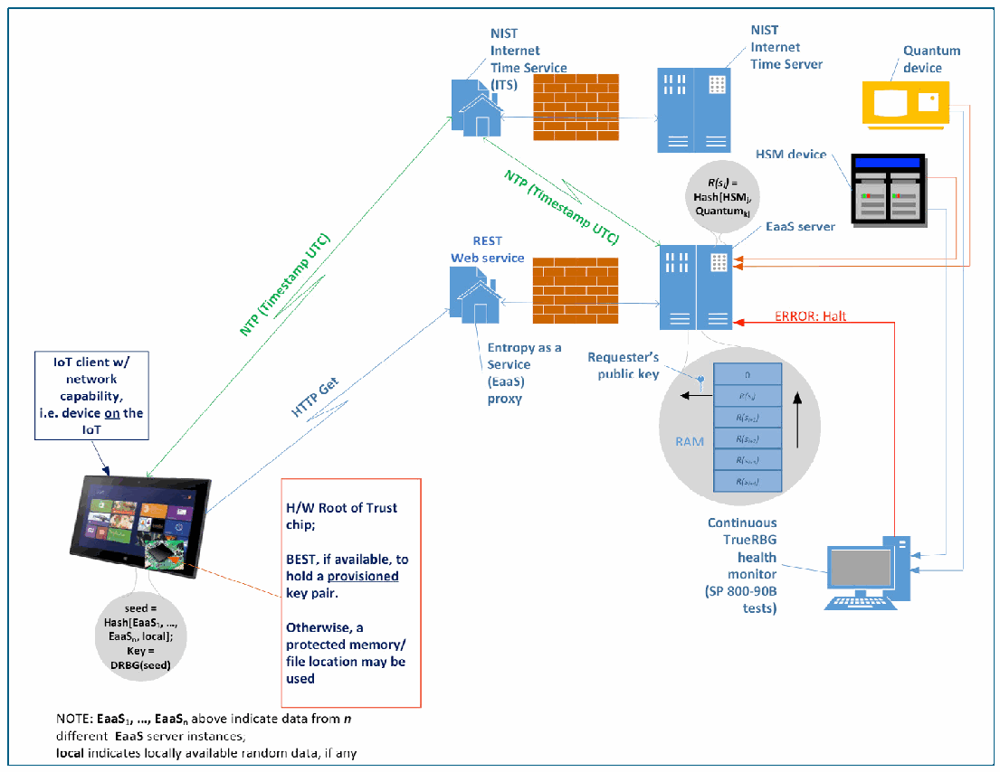
EaaS（Entropy as a Service）の高位アーキテクチャ図。IoTネットワーク対応クライアントからREST Web service／EaaS proxyを介してEaaS serverへHTTP GETで接続し、NTP（UTCタイムスタンプ）でNIST Internet Time Service（ITS）およびNIST Internet Time Serverと時刻同期する。サーバー側には量子デバイス、HSM、要求者の公開鍵、RAM、連続TrueRBGヘルスモニター（SP 800-90Bテスト）があり、HSMと量子データからR(s)=Hash(HSM_k, Quantum_k)を生成する。エラー時の停止も示す。クライアント側のH/W Root of Trustチップは、可能ならプロビジョニング済み鍵ペアを保持し、そうでなければ保護メモリ／ファイルを使用する。EaaS₁…EaaSₙのデータとローカル乱数からseed=Hash[EaaS₁,…,EaaSₙ,local]を作り、Key=DRBG(seed)として鍵を生成する。図注ではEaaS₁…EaaSₙはn個の異なるEaaSサーバーインスタンスのデータ、localは利用可能なローカル乱数データを示す。
Figure 10: High-level architecture of EaaS
図10：EaaSの高位アーキテクチャ
未レビュー訳4 3
原文のみ
P RO GRA M A ND PR OJ ECT ACHI EVE ME NTS | F Y 2015
プログラムおよびプロジェクトの成果｜2015会計年度
未レビュー訳over the Internet. It defines technical requirements for
原文更新後、再確認待ち
Wireless and Mobile Security Today, wireless networks often provide connections for each of the four levels of assurance in the areas of identity mobile devices using multiple radio technologies. In such proofing,tokens,credentialbinding,managementprocesses, a heterogeneous network, a mobile device may switch its authentication protocols and assertion characteristics. Since connection between different wireless technologies, such the initial release of SP 800-63, the CSD has released two as between cellular and WiFi networks. The procedure for revisions to address changes in modern technology and conducting such a switch is called a “handover.” Media- lessons learned from practical implementations by federal independent handover (MIH) is a set of services specified departments and agencies. in IEEE 802.21 to assist the handover. When the services Several recent developments have an impact on the way provided by the pervasive heterogeneous networks that agencies fulfill their e Authentication requirements: are extended to other applications, such as Smart Grid
〔左段・見出し〕ワイヤレスおよびモバイルセキュリティ。今日、無線ネットワークは複数の無線技術を使うモバイルデバイスに接続を提供している。このような異種ネットワークでは、携帯電話網とWi-Fi間のように、デバイスが異なる無線技術の間で接続を切り替える場合がある。この切替手順を「ハンドオーバー」という。Media Independent Handover（MIH）は、ハンドオーバーを支援するためIEEE 802.21で規定されたサービス群である。広範な異種ネットワークのサービスをスマートグリッドなど他の用途に拡張する場合、〔右段・続き〕保証レベルの各段階について、本人確認、トークン、資格情報の結び付け、管理プロセス、認証プロトコル、アサーション特性の技術要件を定めている。SP 800-63初版の公開後、CSDは現代技術の変化や連邦省庁の実装から得た教訓に対応するため、改訂版を2回発行した。〔右段・続き〕最近の動向のいくつかは、各機関が電子認証要件を満たす方法に影響する。
未レビュー訳•Executive Order 13681, ImprovingtheSecurityofCon-
•〔右段・箇条書き〕大統領令13681「消費者金融取引のセキュリティ向上」は、
未レビュー訳applications, the MIH needs to be processed by a group
〔左段・続き〕MIHサービスを処理するには、スマートメーターなどの無線ノード群が必要となる。
未レビュー訳sumerFinancialTransactions, issued by the adminis-
〔右段〕2014年10月に政権が発令し、
未レビュー訳of wireless nodes, such as smart meters, for balancing the
〔左段・続き〕これはネットワーク負荷の調整と信頼性向上のためである。
未レビュー訳tration in October 2014, requires “…that all agencies
〔右段・続き〕次のように定めている。「すべての機関は、
未レビュー訳network load and for reliability. In this case, the information
〔左段〕この場合、情報を
未レビュー訳making personal data accessible to citizens through
〔右段〕市民に個人データを提供するデジタルアプリケーションでは、
未レビュー訳may need to be delivered to a group of smart meters using a
〔左段・続き〕マルチキャストメッセージを使って、スマートメーター群に配信する必要がある。
未レビュー訳digital applications require the use of multiple factors
〔右段・続き〕複数の認証要素を用い、
未レビュー訳multicast message, which is used to deliver the information.
〔左段〕マルチキャストメッセージは、情報を配信するために使われる。
未レビュー訳of authentication and an effective identity proofing
〔右段・続き〕適切な本人確認手続を
未レビュー訳That is, the multicast message is sent from one point-of-
〔左段〕すなわち、マルチキャストメッセージは、1つのサービス提供点（PoS）から複数の無線ノードへ
未レビュー訳process, as appropriate.” (see http://www.whitehouse.
〔右段・続き〕必要に応じて実施する。」（参照：http://www.whitehouse.
未レビュー訳service (PoS) to multiple wireless nodes. In some of the
〔左段・続き〕送信される。一部のアプリケーション環境、例えばセンサーネットワークでは、
未レビュー訳gov/the-press-office/2014/10/17/executive-order-im-
gov/the-press-office/2014/10/17/executive-order-im-
未レビュー訳application environments, such as sensor networks, the
〔左段・続き〕ノードグループは動的に形成され、
未レビュー訳proving-security-consumer-financial-transactions)
proving-security-consumer-financial-transactions)
未レビュー訳groups are formed dynamically; new nodes can be added to the group, and some nodes in the group may need to • CSD published TheFrameworkforImprovingCritical be removed. Such groups are managed through multicast InfrastructureCybersecurityin February 2014 in re-
〔左段・続き〕新しいノードをグループに追加したり、既存ノードを削除したりする必要がある。こうしたグループはマルチキャスト。〔右段・箇条書き〕CSDは2014年2月、「重要インフラのサイバーセキュリティ向上のためのフレームワーク」を公表した。
未レビュー訳sponse to Executive Order (EO) 13636, ImprovingCrit-
〔右段・続き〕これは大統領令（EO）13636への対応である。
未レビュー訳signals.
〔左段・続き〕信号によって管理される。
未レビュー訳icalInfrastructureCybersecurity(for the Framework,
〔右段・続き〕「重要インフラのサイバーセキュリティ向上」（フレームワークについては、
未レビュー訳Amendment 2 of IEEE 802.21 provides protection
〔左段〕IEEE 802.21 Amendment 2は、
未レビュー訳see http://www.nist.gov/cyberframework/; for the
〔右段〕http://www.nist.gov/cyberframework/ を参照。大統領令13636については、
未レビュー訳mechanisms for unicast messages − mechanisms that
〔左段・続き〕ユニキャストメッセージの保護機構を定めており、
未レビュー訳EO 13636, see http://www.whitehouse.gov/the-press-
〔右段・URL〕http://www.whitehouse.gov/the-press-
未レビュー訳protect messages between a PoS and a single mobile
〔左段・続き〕PoS（サービス提供点）と1台のモバイル
未レビュー訳office/2013/02/12/executive-order-improving-criti-
〔右段・URL続き〕office/2013/02/12/executive-order-improving-criti-
未レビュー訳node. In FY 2015, CSD continued work with IEEE 802.21 to
〔左段・続き〕ノード間のメッセージを保護する。2015会計年度には、CSDはIEEE 802.21と連携を続け、
未レビュー訳cal-infrastructure-cybersecurity). The accompanying
〔右段・URL続き〕cal-infrastructure-cybersecurity を参照。続いて、
未レビュー訳develop security solutions for group management in Task
〔左段・続き〕IEEE 802.21のTask Group Dで、グループ管理のセキュリティ対策を開発した。
未レビュー訳roadmap cites the need for NIST to “…conduct identity
〔右段〕ロードマップは、NISTが「本人確認と認証の研究を実施し、
未レビュー訳Group D of IEEE 802.21. The solutions, specified in IEEE
〔左段〕その対策はIEEE
未レビュー訳and authentication research complemented by the pro-
〔右段・続き〕認証慣行の改善を支援する特別刊行物の発行で補完する」必要性を
未レビュー訳802.21 Amendment 4, include the mechanisms to distribute
〔左段・続き〕802.21 Amendment 4で規定され、グループ鍵の配布と
未レビュー訳duction of Special Publications that support improved
〔右段・続き〕指摘している。
未レビュー訳group keys and for the protection of multicast messages.
〔左段・続き〕マルチキャストメッセージの保護を可能にする機構を含む。
未レビュー訳authentication practices.” (see http://www.nist.gov/
〔右段・参照URL〕（参照：http://www.nist.gov/
未レビュー訳Amendment 4 of IEEE 802.21 was published in FY 2015.
〔左段〕IEEE 802.21 Amendment 4は2015会計年度に発行された。
未レビュー訳cyberframework/upload/roadmap-021214.pdf)
〔右段・URL続き〕cyberframework/upload/roadmap-021214.pdf）
未レビュー訳In FY 2016, CSD will continue to contribute to a broader
〔左段〕2016会計年度にCSDは、IEEE 802無線規格の対象範囲拡大に引き続き貢献する。
未レビュー訳•The National Strategy for Trusted Identities in Cyber-
•〔右段・箇条書き〕サイバー空間における信頼できるデジタルIDの国家戦略（NSTIC）は、
未レビュー訳scope of IEEE 802 wireless standards.
〔左段〕IEEE 802無線規格の対象範囲を拡大する。
未レビュー訳space (NSTIC), which was released in 2011, charts a course for both public and private sectors to collab-
〔右段・続き〕2011年に公表され、官民両部門が協力して、
未レビュー訳CONTACT:
〔左段〕連絡先：
未レビュー訳orate to raise the level of trust associated with the iden-tities of individuals, organizations, networks, services,
〔右段・続き〕個人、組織、ネットワーク、サービス、
未レビュー訳Dr. Lily Chen
Lily Chen博士
未レビュー訳and devices involved in online transactions through an
〔右段・続き〕オンライン取引に関わるデバイスのIDに対する信頼を高める道筋を示す。
未レビュー訳(301) 975-6974
(301) 975-6974
未レビュー訳Identity Ecosystem (see http://www.nist.gov/nstic/).
〔右段・続き〕Identity Ecosystem（IDエコシステム）を通じて実現する（http://www.nist.gov/nstic/）。
未レビュー訳lily.chen@nist.gov
lily.chen@nist.gov
未レビュー訳NSTIC calls for the Federal Government to “lead by example and implement the Identity Ecosystem for the
〔右段〕NSTICは連邦政府に、「率先垂範し、Identity Ecosystemを
未レビュー訳Authentication
〔左段・見出し〕認証
未レビュー訳services it provides internally and externally.” As the
〔右段・続き〕政府が内外に提供するサービスに導入する」よう求めている。Identity Ecosystemが形を取り始めるにつれて、
未レビュー訳To support OMB Memorandum M-04-04,
〔左段〕OMB覚書M-04-04を支援するため、
未レビュー訳Identity Ecosystem starts to take shape, NIST guide-
〔右段・続き〕NISTガイド
未レビュー訳E-AuthenticationGuidanceforFederalAgencies, NIST’s CSD
〔左段・続き〕NISTのCSDは、連邦機関向け電子認証ガイダンスとして、
未レビュー訳lines should reflect and support it.
〔右段・続き〕ラインはそれを反映し、支援すべきである。
未レビュー訳developed SP 800-63, ElectronicAuthenticationGuideline.
〔左段・続き〕SP 800-63「電子認証ガイドライン」を策定した。
未レビュー訳In addition, market forces have resulted in an inflexion
〔右段〕さらに市場の動きにより、
未レビュー訳The OMB memorandum defines four levels of assurance that
〔左段〕OMB覚書は、保証レベルを4段階で定めており、
未レビュー訳point in how departments and agencies authenticate users.
〔右段〕各省庁・機関における利用者認証のあり方が転換点を迎えている。
未レビュー訳a federal agency must select, based on a risk assessment
〔左段〕連邦機関は、リスク評価に基づいて保証レベルを選択し、
未レビュー訳NIST and our private sector partners have observed that
〔右段〕NISTと民間部門のパートナーは、
未レビュー訳to determine the impact of an authentication failure. This
〔左段・続き〕認証に失敗した場合の影響を判断する。この
未レビュー訳some public and private sector identity assurance standards
〔右段・続き〕公共部門および民間部門の本人確認保証基準の一部は、
未レビュー訳guideline covers the remote authentication of users (such as
〔左段〕このガイドラインは、政府のITシステムを利用するユーザー（
未レビュー訳have become outdated or have simply not been adopted.
〔右段・続き〕時代遅れになったか、まったく採用されていないことを確認している。
未レビュー訳private individuals) interacting with government IT systems
〔左段・続き〕民間人など）のリモート認証を対象としている。
未レビュー訳4 4
原文のみ
COMP U TER SECURITY DI VI SION ANNUAL REP ORT | 2 01 5 THIS PUBLICATION IS AVAILABLE FREE OF CHARGE FROM:
コンピュータセキュリティ部門年次報告書｜2015｜本出版物は次のURLから無料で入手できます：
未レビュー訳http://dx.doi.org/10.6028/NIST.SP.800-182
原文のみ
Specifically, SP 800-63 was originally written to address an As many types of biometric sensors become ubiquitous online world that is much different than today. Innovation in personal mobile devices, and more and more individuals has offered new perspectives in how trusted identities leverage biometrics in commercial use cases such as can be established. Practical implementations of SP 800- mobile payment and online authentication to private 63 have informed us of areas of strengths, weaknesses, sector services, CSD will re-examine the current position of and techniques not utilized by federal agencies or the remote, unattended biometric authentication. The existing private sector. In addition, federal agencies are the only publication does allow local biometric authentication to organizations required to follow NIST SPs. However, as the unlock a token – a secure technique currently used by Federal Government evolves to accept credentials offered popular mobile handset manufacturers. Yet the comments by private sector organizations, the applicability of SP 800- CSD received reveal that some believe this is insufficient, 63 has expanded beyond agency use. NIST has an obligation and that centralized biometric authentication used in to service the expansion of the original SP 800-63 target. single- or multi-factor schemes should be allowed in a future
〔左段〕具体的には、SP 800-63は今日とは大きく異なるオンライン環境を想定して作成された。技術革新により、信頼できるIDを確立する方法について新たな見方が生まれている。SP 800-63の実装から、連邦機関や民間部門で活用されていない強み・弱み・手法が明らかになった。また、NIST SPへの準拠を義務付けられているのは連邦機関だけである。しかし連邦政府が民間組織の資格情報を受け入れるにつれて、SP 800-63の適用範囲は政府機関以外にも広がった。NISTには、SP 800-63の当初の対象範囲が広がった状況に対応する責務がある。〔右段〕多くの種類の生体センサーが個人用モバイル機器に広く搭載され、モバイル決済や民間サービスのオンライン認証など商用利用で生体情報を活用する人が増えている。そこでCSDは、遠隔・無人の生体認証の現状を再検討する。現行版は、トークンのロック解除に端末内の生体認証を認めており、これは普及している携帯電話メーカーが採用する安全な方式である。しかしCSDが受け取った意見には、これでは不十分だとの見解や、将来の改訂で単要素／多要素方式に用いる集中型生体認証も認めるべきだとの見解がある。
未レビュー訳revision. CSD will pursue detailed research in the security
〔右段・続き〕CSDは、遠隔生体認証の安全性を詳しく調査し、
未レビュー訳Therefore, in April of 2015, NIST issued a call for
〔左段〕そこで2015年4月、NISTは
未レビュー訳of remote biometric authentication, examine the efficacy
〔右段・続き〕有効性を評価するとともに、
未レビュー訳comments on the current published version, SP 800-63-2,
〔左段・続き〕現行公開版SP 800-63-2への意見を募集した。
未レビュー訳of standardization efforts related to presentation attack
〔右段・続き〕プレゼンテーション攻撃に関する標準化の取り組みを
未レビュー訳in order to identify specific topics that could be addressed
〔左段・続き〕SP 800-63の将来改訂で扱うべき具体的な論点を特定するためである。
未レビュー訳detection, and contemplate the long-term impacts of the
〔右段・続き〕検出技術の有効性を検討し、生体情報の大量窃取が
未レビュー訳in a future revision of SP 800-63 (see http://csrc.nist.gov/
〔左段・参照URL〕http://csrc.nist.gov/groups/ST/eauthentication/sp800-63-2_call-comments.html
未レビュー訳en-masse theft of biometrics before expanding the current
〔右段・続き〕SP 800-63-2の現行要件を拡大する前に及ぼす長期的な影響を考察する。
未レビュー訳groups/ST/eauthentication/sp800-63-2_call-comments.
原文のみ
requirements of SP 800-63-2.
〔右段・続き〕SP 800-63-2の現行要件を拡大する前に検討する。
未レビュー訳html). NIST received over 40 submissions from individuals, academia, and the public and private sectors. Over 300 The user experience of online authentication will also be distinct comments were identified from these submissions. In a significant consideration in a potential update of SP 800-addition to the comments that NIST received, vulnerabilities 63. The CSD has observed that the user experience has a have been discovered in existing online authentication direct relationship with individual uptake of authentication services, specifically in the area of remote identity proofing, services as well as the overall security of any authentication which has warranted an accelerated consideration of scheme. While CSD does not intend to weaken requirements updated guidance for the Federal Government.
〔左段〕.html）。NISTは個人、学界、公共・民間部門から40件を超える提出を受け、そこから300件超の個別コメントを特定した。寄せられた意見に加え、既存のオンライン認証サービス、特に遠隔本人確認で脆弱性が見つかったため、連邦政府向けガイダンスの更新を迅速に検討する必要が生じた。〔右段〕オンライン認証の利用者体験もSP 800-63の改訂における重要な考慮事項である。CSDは、利用者体験が認証サービスの利用率と認証方式全体の安全性に直接関係すると認識している。利用者体験を良くするために要件を弱める考えはないが、
未レビュー訳to accommodate a favorable user experience, understanding the impact of e-Authentication requirements on the user,
〔右段・続き〕電子認証要件が利用者に及ぼす影響を把握し、
未レビュー訳In FY 2016, CSD expects its authentication work to be
〔左段〕2016会計年度、CSDは認証関連作業が
未レビュー訳and to design requirements that do not degrade security but
〔右段〕セキュリティを損なわず利用者体験を向上させる要件を設計することが
未レビュー訳driven by the needs of the ongoing rapid expansion of online
〔左段・続き〕オンラインサービス提供の継続的な急拡大を踏まえたものになると見込んでいる。
未レビュー訳upgrade the user experience, is imperative.
〔右段・続き〕不可欠である。
未レビュー訳service delivery, commercially available authentication services, results and metrics from NSTIC pilots, and the The CSD, therefore, plans to actively consider revisions availability of multi-factor tokens to consumers. Breaches to SP 800-63-2 in response to the issues noted above and of personal information and the relative availability of other issues that can be dealt with in time to assist in the personal information has necessitated that NIST reconsider intense ongoing efforts to expand online services. approaches to identity proofing, both in-person and
〔左段〕市販の認証サービス、NSTICパイロットの結果・指標、多要素トークンの消費者への提供状況に加え、個人情報漏えいと個人情報の入手しやすさの変化を受け、NISTは対面および〔右段〕上記の課題や、オンラインサービス拡大に向けて対応可能なその他の課題を踏まえ、CSDはSP 800-63-2の改訂を積極的に検討する。
未レビュー訳For More Information, See:
詳しくは次を参照：
未レビュー訳remotely. The paradigm where the starting assumption was
〔左段・続き〕遠隔の本人確認手法を再検討する必要が生じている。個人情報は見つけにくいという従来の前提は、
未レビュー訳http://csrc.nist.gov/groups/ST/eauthentication/
〔右段〕http://csrc.nist.gov/groups/ST/eauthentication/
未レビュー訳that personal data was hard to find has now changed to one where it is acknowledged that this data is readily available
〔左段・続き〕個人情報がオンラインで容易に入手できるという認識へと変化した。
未レビュー訳CONTACT:
〔右段〕連絡先：
未レビュー訳online; existing guidance needs to be adjusted to offer organizations cost-effective, yet secure, identity proofing Mr. Paul Grassi capabilities. The NSTIC pilots have tested innovative (703) 786-8275 alternatives to high-assurance remote proofing, necessita- paul.grassi@nist.gov ting that SP 800-63 be considerate of these advances in the marketplace. In addition, commercial advances in physical document validation and verification, the proliferation of high-resolution video cameras on commodity computing devices, including mobile phones, as well as new offerings in the delivery of in-person proofing, will influence potential updates to requirements at all levels of assurance.
〔左段〕既存のガイダンスは、費用対効果と安全性を両立した本人確認機能を組織に提供できるよう改める必要がある。NSTICパイロットでは、高い保証レベルの遠隔本人確認に代わる革新的な方法が試験された。SP 800-63はこうした市場の進展を考慮すべきである。さらに、紙書類の検証に関する商用技術の進歩、一般的なコンピューター端末や携帯電話で高解像度ビデオカメラが普及したこと、対面本人確認サービスの新たな提供形態も、すべての保証レベルの要件の改訂に影響する。〔右段・連絡先〕Paul Grassi氏、(703) 786-8275、paul.grassi@nist.gov
未レビュー訳4 5
原文のみ
P RO GRA M A ND PR OJ ECT ACHI EVE ME NTS | F Y 2015
プログラムおよびプロジェクトの成果｜2015会計年度
未レビュー訳THIS PUBLICATION IS AVAILABLE FREE OF CHARGE FROM: http://dx.doi.org/10.6028/NIST.SP.800-182
本出版物は次のURLから無料で入手できます：http://dx.doi.org/10.6028/NIST.SP.800-182
未レビュー訳This program will perform research and experimentation
〔右段〕このプログラムでは、
未レビュー訳V A L I D A T I O N P R O G R A M S
検証プログラム
未レビュー訳in applicable technologies and techniques that will enable the efficient testing of the cryptographic capabilities of each
〔右段〕このプログラムでは、暗号機能の各層を効率的に試験できる技術・手法を研究・実験し、
未レビュー訳Federal agencies, industry, and the public rely on many
〔左段〕連邦政府機関、産業界、一般の人々は、
未レビュー訳layer, and enable the continuous monitoring capabilities of
〔右段・続き〕各暗号コンポーネントの継続的な監視も可能にする。
未レビュー訳of the standards and specifications supported by CSD. Poor
〔左段・続き〕CSDが支援する多くの標準や仕様に依存している。実装が不十分だと、
未レビュー訳each cryptographic component, providing the necessary
〔右段〕必要なインターフェースを提供して、
未レビュー訳implementations of these standards or specifications may
〔左段・続き〕製品が安全でなくなり、
未レビュー訳interfaces to establish trust relationships with other
〔右段・続き〕他の暗号コンポーネントとの信頼関係を確立する。
未レビュー訳render a particular product insecure, potentially placing
〔左段・続き〕機密情報を危険にさらすおそれがある。
未レビュー訳cryptographic components. Techniques could include such
〔右段〕そのための技術には、
未レビュー訳sensitive information at risk. CSD operates several validation
〔左段〕CSDは複数の検証プログラムを運営している。
未レビュー訳items as:
〔右段〕主な項目は次のとおり。
未レビュー訳programs that help provide a level of assurance that products meet established security requirements and conform to • Embedding XML data elements and standard inter-published specifications. To that end, the Security Testing, faces to query those data elements during the design Validation, and Measurement Group (STVMG) develops test and implementation of cryptographic components that suites and test methods; provides implementation guidance would enable automated testing capabilities; and technical support to industry forums; and conducts
〔左段〕これらの検証プログラムは、製品が確立済みのセキュリティ要件を満たし、公表済み仕様に適合していることを保証する。Security Testing, Validation, and Measurement Group（STVMG）は、試験スイートと試験方法を開発し、実装ガイダンスと業界フォーラムへの技術支援を提供するとともに、〔右段・箇条書き〕暗号コンポーネントの設計・実装時にデータ要素を照会できるXML要素と標準インターフェースを組み込み、自動試験を可能にする。
未レビュー訳•Using cryptographic techniques to embed values into
•〔右段・箇条書き〕暗号技術を使って値をモジュールに埋め込み、
未レビュー訳education, training, and outreach programs.
〔左段・続き〕教育、訓練、普及啓発プログラムも実施する。
未レビュー訳the module that would increase the verifiability and
〔右段・続き〕モジュールが提供する検証可能性と保証水準を高める。さらに、
未レビュー訳STVMG’s validation programs work together with assurance that the module provides; and independent laboratories that are accredited by the National
〔左段〕STVMGの検証プログラムは、独立試験所と連携している。同試験所は米国立自主試験所認定プログラム（
未レビュー訳•Using industry-based secure development techniques
•〔右段・箇条書き〕業界で用いられるセキュアな開発技法を採用し、
未レビュー訳Voluntary Laboratory Accreditation Program (NVLAP).
〔左段・続き〕NVLAP）の認定を受けている。
未レビュー訳to increase the level of trust inherent in software mod-
〔右段・続き〕設計・実装段階からソフトウェアモジュールへの信頼性を高める。
未レビュー訳Based on the independent laboratory test report and test
〔左段〕独立試験所の試験報告書および提出証拠に基づき、
未レビュー訳ules, starting with design and implementation.
〔右段・続き〕設計・実装の段階からソフトウェアモジュールへの信頼性を高める。
未レビュー訳evidence provided by the labs, the validation programs
〔左段〕試験所が提出する証拠に基づいて、検証プログラムが
未レビュー訳Research into this area of cryptographic system
〔右段〕暗号システム検証のこの分野の研究は、
未レビュー訳described below validate the implementation under test.
〔左段・続き〕以下で説明する試験対象の実装を検証する。
未レビュー訳validation holds the promise of automating the validation of
〔右段・続き〕すべての暗号コンポーネントの検証を自動化し、
未レビュー訳CSD subsequently publishes lists of the validations awarded
〔左段・続き〕CSDは、検証に合格した製品の一覧を
未レビュー訳all cryptographic components, providing a higher assurance
〔右段・続き〕より高い保証水準を提供できる可能性がある。
未レビュー訳on public websites.
〔左段・続き〕公開ウェブサイトで公表する。
未レビュー訳with less manual effort. The program will use an approach
〔右段・続き〕手作業を減らせる。このプログラムでは、
未レビュー訳Cryptographic System Validation
暗号システムの検証
未レビュー訳that was developed for the SCAP product validation effort
〔右段・続き〕SCAP製品検証の取り組みで開発されたアプローチを用いる。
未レビュー訳Current validation programs focus on providing a known to embed data elements that instrument the test harnesses level of assurance for cryptographic algorithms and modules. used to validate cryptographic systems. This would also These modules are used within the context of a larger system provide the instrumentation that could be leveraged to to provide cryptographic services as a method of protecting enable a greater level of situational awareness and security the data within the system. As information systems continue measurement, and potentially, to enable continuous to become more complex, the methods used to implement monitoring of cryptographic systems. cryptographic services have also increased in complexity. Problems with the use of cryptography are often introduced CONTACT: through the interaction of cryptographic components with
〔左段〕現在の検証プログラムは、暗号アルゴリズムとモジュールについて既知の保証水準を提供することに重点を置く。これらのモジュールは大規模システム内で暗号サービスを提供し、システム内のデータを保護する。情報システムが複雑化するにつれ、暗号サービスの実装方法も複雑になっている。暗号利用上の問題は、暗号コンポーネントと〔右段〕暗号システムの検証に使うテストハーネスへ計測用データ要素を組み込む。これにより、状況認識とセキュリティ測定の水準を高め、暗号システムの継続的監視を可能にする計測手段を提供できる。連絡先：
未レビュー訳Mr. Michael Cooper
Michael Cooper氏
未レビュー訳the operating environment. This program seeks to specify
〔左段・続き〕稼働環境との相互作用から生じることが多い。このプログラムでは、
未レビュー訳(301) 975-8077
(301) 975-8077
未レビュー訳how cryptographic components are used as part of a defined
〔左段・続き〕定義された暗号システムの一部として、暗号コンポーネントがどう使用されるかを特定し、
未レビュー訳michael.cooper@nist.gov
michael.cooper@nist.gov
未レビュー訳cryptographic system to solve problems with a measureable level of assurance, and to introduce automated methods of quantifying the level of assurance that has been provided. Cryptographic Programs and In FY 2016, this program will begin the research required Laboratory Accreditation to define a reference cryptographic systems architecture The Cryptographic Algorithm Validation Program and example use cases where cryptographic systems are (CAVP) and the Cryptographic Module Validation Program built from known cryptographic components that cooperate (CMVP) were developed in collaboration between NIST through trust relationships to provide a measureable level of and the Communications Security Establishment (CSE) of assurance. The architecture should begin at the lowest level Canada to support the respective federal user communities with a hardware-based root of trust, and each cryptographic for strong, independently tested, and commercially component should be added in successive layers to available cryptographic algorithms and modules. Through provide assurance in a systematic way. This should allow these programs, NIST and CSE work with international the development of tests that would measure the correct government, public and private sectors as a part of the implementation of cryptographic components as part of a cryptographic community to achieve standards-based
〔左段〕測定可能な保証水準で問題を解決し、提供された保証水準を定量化する自動手法を導入する。2016会計年度には、参照用の暗号システム・アーキテクチャと、既知の暗号コンポーネントを信頼関係で連携させて測定可能な保証を提供するシステムの使用例を定義するための研究を開始する。アーキテクチャは最下層のハードウェアベースのRoot of Trustから始め、各暗号コンポーネントを順次階層に加えて体系的に保証する。これにより、コンポーネントがより大きな〔右段・見出し〕暗号プログラムと試験所認定。暗号アルゴリズム検証プログラム（CAVP）と暗号モジュール検証プログラム（CMVP）は、強力で独立した試験を経た市販の暗号アルゴリズムとモジュールを連邦政府の各利用者コミュニティに提供するため、NISTとカナダ通信安全保障機関（CSE）が共同で開発した。両機関はこれらのプログラムを通じ、国際的な政府機関、公共部門、民間部門と暗号コミュニティの一員として協力し、標準に基づく
未レビュー訳security and assurance of correct implementation. The
〔右段・続き〕安全性と正しい実装の保証を実現する。
未レビュー訳larger system.
〔左段・続き〕システムの一部として正しく実装されているかを測る試験を開発できる。
未レビュー訳goal of these programs is to provide federal agencies
〔右段〕これらのプログラムは連邦機関に、
未レビュー訳4 6
原文のみ
COMP U TER SECURITY DI VI SION ANNUAL REP ORT | 2 01 5 THIS PUBLICATION IS AVAILABLE FREE OF CHARGE FROM:
コンピュータセキュリティ部門年次報告書｜2015｜本出版物は次のURLから無料で入手できます：
未レビュー訳with a security metric to use in procuring and deploying The CAVP and the CMVP are separate collaborative cryptographic modules, and promote the use of validated programs. The CAVP and the CMVP validate algorithms and algorithms and modules by industry and the public. The modules, respectively, which are used in a wide variety of testing carried out by independent third-party laboratories products, including Internet browsers, radios, smart cards, accredited by NVLAP, and the validations performed by space-based communications, munitions, security tokens, the CAVP and CMVP programs provide this metric. Federal mobile phones, network and storage devices, and products agencies, industry, and the public can choose cryptographic supporting the Public Key Infrastructure (PKI) and electronic modules and/or products containing cryptographic modules commerce. A module may be a standalone product, such from the CMVP Validated Modules List and have confidence as a virtual private network (VPN) or smart card, or it in the claimed level of security and assurance of correct could be a module embedded in many products, such as a implementation.
原文更新後、再確認待ち
cryptographic-based toolkit. As a result, a small number of modules may be incorporated within hundreds of products.
原文のみ
Cryptographic algorithm and cryptographic module
暗号アルゴリズムおよび暗号モジュールの
未レビュー訳The CAVP validates cryptographic algorithms that may be
〔右段〕CAVPは、暗号アルゴリズムを検証する。それらは
未レビュー訳testing and validation are based on published NIST
〔左段・続き〕試験および検証は、公表済みのNIST標準に基づく。
未レビュー訳integrated in one or more cryptographic modules. Figure 11
〔右段・続き〕1つ以上の暗号モジュールに組み込まれる場合がある。図11にCMVPの試験・検証プロセスの流れを示す。
未レビュー訳standards. Since federal agencies are required to use
〔左段〕連邦機関は、機密扱いではない機微情報を保護するため、検証済みの暗号モジュールを使用することが求められている。
未レビュー訳provides a flow of the CMVP testing and validation process.
CMVPの試験・検証プロセスの流れを示す。
未レビュー訳validated cryptographic modules for the protection of sensitive unclassified information, the validated modules and the validated algorithms that the modules contain represent the culmination and delivery of CSD’s cryptography-based work to the end user.
機密扱いではない未分類情報を保護する、検証済み暗号モジュールを提供する。検証済みモジュールと、モジュールに含まれる検証済みアルゴリズムは、CSDの暗号関連業務が最終利用者へ提供される形に結実したものである。
未レビュー訳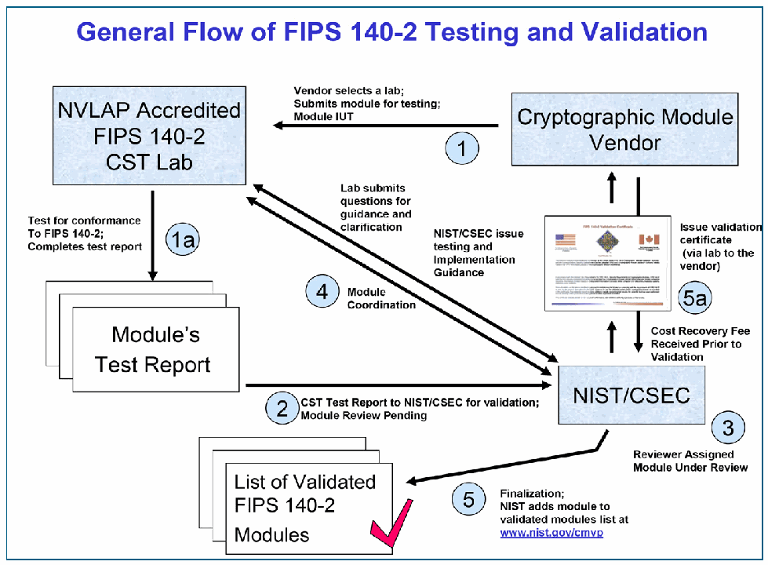
FIPS 140-2試験・検証の全体フロー。暗号モジュールベンダーがモジュール（IUT）をNVLAP認定FIPS 140-2 CST試験所へ提出する（ステップ1）。試験所は必要に応じてNIST/CSECへ質問し、試験・実装ガイダンスを受けて適合試験を実施し、試験報告書を作成する（1a）。試験所は報告書をNIST/CSECへ提出し、モジュールは検証審査待ちとなる（2）。審査担当者が割り当てられ、モジュールを審査する（3）。モジュールに関する調整を行い（4）、費用回収料金の受領後に最終化する。NIST/CSECが検証証明書を発行し（5a）、NISTはモジュールをFIPS 140-2検証済みモジュール一覧（www.nist.gov/cmvp）に追加する（5）。図中の主体・工程は、暗号モジュールベンダー、NVLAP認定試験所、NIST/CSEC、モジュール提出、試験、報告書、審査、証明書発行を示す。図中文字は判読可能。
Figure 11: General Flow of FIPS 140-2 Testing and Validation
図11：FIPS 140-2の試験・検証の全体フロー
未レビュー訳4 7
原文のみ
P RO GRA M A ND PR OJ ECT ACHI EVE ME NTS | F Y 2015
プログラムおよびプロジェクトの成果｜2015会計年度
未レビュー訳THIS PUBLICATION IS AVAILABLE FREE OF CHARGE FROM: http://dx.doi.org/10.6028/NIST.SP.800-182
本出版物は次のURLから無料で入手できます：http://dx.doi.org/10.6028/NIST.SP.800-182
未レビュー訳The CAVP and CMVP validation programs provide whose mission is to conduct research to assist developers documented methodologies for conformance testing of cryptographic modules, testing laboratories, and the through defined sets of security requirements. For the user community when developing new standards. The CAVP, the validation system documents are designed for insights from this research into the evolution of operating each FIPS-approved or NIST-recommended cryptographic environments and complex systems allow the CMVP to algorithm. See the website for a listing (see http://csrc.nist. perform research and development on evolving test metrics gov/groups/STM/cavp/). Security requirements for the and methods and future requirements for cryptographic CMVP are found in FIPS 140-2, SecurityRequirementsfor modules. Cryptographic Modules, and the associated test metrics
〔左段〕CAVPおよびCMVPの検証プログラムは、定められたセキュリティ要件に基づく暗号モジュール適合性試験の方法を提供する。CAVPでは、各FIPS承認済みまたはNIST推奨の暗号アルゴリズムについて、検証システムの文書を整備している。アルゴリズム一覧は http://csrc.nist.gov/groups/STM/cavp/ を参照。CMVPのセキュリティ要件はFIPS 140-2『暗号モジュールのセキュリティ要件』および関連する試験指標に記載されている。〔右段・段落冒頭の混在箇所〕そのチームの使命は、暗号モジュールの開発者、試験所、および新しい標準の策定に取り組む利用者コミュニティを支援するための調査を行うことである。この調査から得られる、運用環境や複雑なシステムの変化に関する知見により、CMVPは進化する試験指標・手法や暗号モジュールの将来要件について研究開発を行える。
未レビュー訳The CAVP and the CMVP have stimulated the improved
〔右段〕CAVPとCMVPは、
未レビュー訳and methods in Derived Test Requirements for FIPS 140-
〔左段・続き〕さらに、FIPS 140-2の試験要求事項に定められた試験手法は、
未レビュー訳quality and security assurance of cryptographic algorithm
〔右段・続き〕暗号アルゴリズム実装とモジュールの品質およびセキュリティ保証の向上を促してきた。
未レビュー訳2, Security Requirements for Cryptographic Modules.
〔左段・続き〕「暗号モジュールのセキュリティ要件」に記載されている。
未レビュー訳implementations and modules. By the end of FY 2015, the
〔右段〕実装およびモジュールについてである。2015会計年度末までに、
未レビュー訳The four Annexes to FIPS 140-2 reference the underlying
〔左段〕FIPS 140-2の4つの附属書は、基礎となる暗号アルゴリズム規格または手法を参照している。CMVPが作成した
未レビュー訳CMVP had validated and issued a total of 2,380 crypto-
〔右段〕CMVPは合計2,380件の暗号モジュール検証証明書を発行し、
未レビュー訳cryptographic algorithm standards or methods. The CMVP-
〔左段・続き〕暗号アルゴリズム規格または手法を参照している。CMVPが作成した
未レビュー訳graphic module validation certificates to more than 475
〔右段・続き〕国内外の475を超えるベンダーに対し、
未レビュー訳developed Implementation Guidance for FIPS 140-2 and the
〔左段・続き〕FIPS 140-2実装ガイダンスと
未レビュー訳domestic and international vendors. As shown in Figure 12,
〔右段・続き〕国内外のベンダーに対して発行した。図12に示すとおり、
未レビュー訳Cryptographic Validation Program provides programmatic
〔左段〕暗号検証プログラムは、
未レビュー訳theCMVPawarded197certificatesinFY2015.Theleftportion
〔右段・続き〕CMVPは2015会計年度に197件の証明書を授与した。図の左側は、
未レビュー訳and implementation guidance across all of the referenced
〔左段・続き〕参照されるすべての文書について、制度面および実装面のガイダンスを提供する。
未レビュー訳of the graphic illustrates the distribution by submission type,
〔右段・続き〕提出種別ごとの内訳を示している。
未レビュー訳documents. The information provided in the Derived
〔左段・次の文〕Derived
未レビュー訳based upon the modification scenarios described in the
〔右段・続き〕CMVP実装ガイダンスに記載された変更シナリオに基づく。
未レビュー訳Test Requirements (DTR) and Implementation Guidance
〔左段・続き〕Test Requirements（DTR、試験要求事項）およびImplementation Guidance
未レビュー訳CMVP Implementation Guidance, including:
〔右段・続き〕具体的には次のとおりである。
未レビュー訳(IG) documents ensures the repeatability of tests and the
〔左段・続き〕（IG）文書に記載された情報は、試験の再現性と
未レビュー訳•1SUB - Modifications made to hardware, software or
•〔右段・項目1SUB〕ハードウェア、ソフトウェアまたは
未レビュー訳equivalency of results across the testing laboratories. The IG
〔左段・続き〕試験所間で結果の同等性を確保する。IGは、
未レビュー訳firmware components that did not affect any FIPS 140-1
〔右段・項目1SUB〕ファームウェア構成要素に対する変更のうち、FIPS 140-1または
未レビュー訳provides clarity, consistency of interpretation, and insight for
〔左段・続き〕適合性試験、検証および再検証を適切に行うための明確さ、解釈の一貫性、知見を提供する。
未レビュー訳or FIPS 140-2 security relevant items (e.g., a mainte-
〔右段・項目1SUB〕FIPS 140-2のセキュリティ関連項目に影響しないもの（例：保守
未レビュー訳successful conformance testing, validation, and revalidation.
〔左段〕適合性試験、検証および再検証を成功裏に実施するための知見を提供する。
未レビュー訳nance activity);
〔右段・項目1SUB〕作業）。
未レビュー訳The unique position of the validation programs gives the
〔左段・次文〕検証プログラムが担う独自の立場により、
未レビュー訳•3SUB - Modifications that include changes that affect
•〔右段・項目3SUB〕FIPS 140-2のセキュリティ関連項目に影響する変更を含み、
未レビュー訳CAVP and CMVP the opportunity to acquire insight during
〔左段・続き〕CAVPとCMVPに、知見を得る機会がもたらされる。
未レビュー訳some of the FIPS 140-2 security-relevant items and
〔右段・項目3SUB〕FIPS 140-2の一部のセキュリティ関連項目に影響する変更であり、
未レビュー訳the validation review activities and results in practical, timely,
〔左段・続き〕検証審査活動とその結果から、実用的で適時の、
未レビュー訳require revalidation, but drew upon previous submis-
〔右段・項目3SUB〕再検証を要するが、以前の提出内容を活用できるもの。
未レビュー訳and up-to-date guidance that is needed by the testing
〔左段・続き〕試験所やベンダーが必要とする最新のガイダンスを提供する。
未レビュー訳sions; and,
〔右段・項目3SUB〕および、
未レビュー訳laboratories and vendors to move their modules out to the user community in a timely and cost-effective manner and • 5SUB - Significant changes to hardware, software, or with the assurance of third-party conformance testing. This firmware components and, therefore, were considered knowledge and insight provide a foundation for current and a new module requiring full validation testing. future standards and tools development.
〔左段・続き〕試験所やベンダーが、第三者適合性試験の保証の下、モジュールを適時かつ費用対効果の高い方法で利用者コミュニティへ提供する助けとなる。この知見は、今後の標準やツールの開発基盤となる。〔右段・項目5SUB〕ハードウェア、ソフトウェアまたはファームウェア構成要素への重大な変更であり、新しいモジュールとみなされ、完全な検証試験を要するもの。
未レビュー訳The right portion of the diagram shows the number of
〔右段〕図の右側は、
未レビュー訳The CMVP reviews the cryptographic module validation certificates awarded, based upon each of the four increasing requests from the testing laboratories and, as a byproduct levels of security specified in the FIPS that may be satisfied of the review, is attentive to emerging and/or changing by a cryptographic module. technologies.
〔左段〕CMVPは試験所からの暗号モジュール検証申請を審査し、その審査の副産物として、新たに出現する技術や変化する技術に注意を払う。〔右段〕図の右側は、暗号モジュールが満たし得るFIPS規定の4つのセキュリティレベルごとに授与された証明書数を示す。
未レビュー訳Likewise, to date, the CAVP has issued approximately
〔右段〕同様に、これまでにCAVPはおよそ
未レビュー訳Starting with FY 2015, the Security Testing, Validation, 19,578 validations, representing the algorithm validations of and Measurement (STVM) group created a research team approximately 17 approved algorithms.
〔左段〕2015会計年度から、Security Testing, Validation, and Measurement（STVM）グループは研究チームを設置した。〔右段〕約17の承認済みアルゴリズムについて、19,578件の検証を発行し、アルゴリズム検証を実施した。
未レビュー訳
2015会計年度のFIPS 140-2検証結果。左図『提出種別別の証明書数』は1SUB 27件、3SUB 56件、5SUB 114件。右図『レベル別の証明書数』はレベル1が77件、レベル2が88件、レベル3が30件、レベル4が2件。図中ラベルと値は判読可能。
Figure 12: FY 2015 FIPS 140-2 Validations
図12：2015会計年度のFIPS 140-2検証件数
未レビュー訳4 8
原文のみ
COMP U TER SECURITY DI VI SION ANNUAL REP ORT | 2 01 5 THIS PUBLICATION IS AVAILABLE FREE OF CHARGE FROM:
コンピュータセキュリティ部門 年次報告書｜2015会計年度 本出版物は次のURLから無料で入手できます：
未レビュー訳http://dx.doi.org/10.6028/NIST.SP.800-182
原文のみ

CAVPの会計年度別検証状況を示す積み上げ棒グラフ。タイトルは「CAVP Validation Status By FYs」。横軸はFY 1996～FY 2016（2会計年度刻みでラベル表示）、縦軸は0～4,000件。棒は年度ごとの検証件数の推移を示す。図中に凡例はない。
Figure 13: CAVP Validation Status by Fiscal Year
図13：会計年度別のCAVP検証状況
未レビュー訳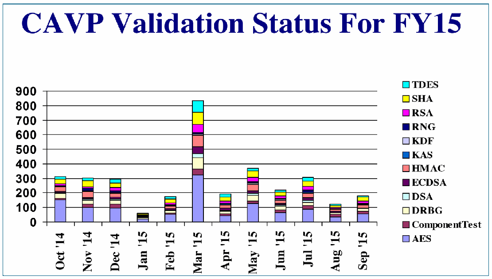
2015会計年度の月別CAVP検証状況を示す積み上げ棒グラフ。横軸は2014年10月から2015年9月、縦軸は0～900件。凡例はTDES、SHA、RSA、RNG、KDF、KAS、HMAC、ECDSA、DSA、DRBG、Component Test（コンポーネント試験）、AES。タイトルと凡例、軸ラベルは判読可能。
Figure 14: CAVP Validation Status for FY 2015
図14：2015会計年度のCAVP検証状況
未レビュー訳4 9
原文のみ
P RO GRA M A ND PR OJ ECT ACHI EVE ME NTS | F Y 2015
プログラムおよびプロジェクトの成果｜2015会計年度
未レビュー訳THIS PUBLICATION IS AVAILABLE FREE OF CHARGE FROM: http://dx.doi.org/10.6028/NIST.SP.800-182
本出版物は次のURLから無料で入手できます：http://dx.doi.org/10.6028/NIST.SP.800-182
未レビュー訳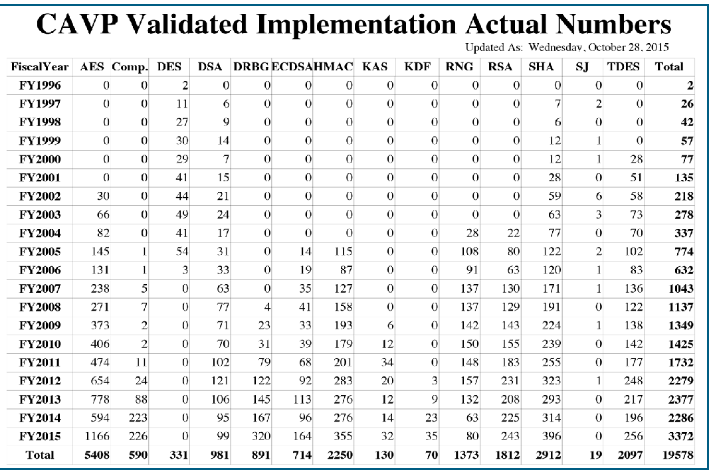
CAVP検証済み実装の実数表（2015年10月28日水曜日更新）。行はFY1996～FY2015と合計、列は会計年度、AES、Comp.（コンポーネント）、DES、DSA、DRBG、ECDSA、HMAC、KAS、KDF、RNG、RSA、SHA、SJ、TDES、合計。合計行はAES 5,408、Comp. 590、DES 331、DSA 981、DRBG 891、ECDSA 714、HMAC 2,250、KAS 130、KDF 70、RNG 1,373、RSA 1,812、SHA 2,912、SJ 19、TDES 2,097、総計19,578。年度別のすべてのセル値は原画像の表で判読可能。
Figure 15: CAVP Validated Implementation Actual Numbers
図15：CAVP検証済み実装の実数
未レビュー訳The CAVP issued approximately 3,372 algorithm
〔左段〕CAVPは、アルゴリズムについて約3,372件の
未レビュー訳CMVP CONTACTS:
〔右段〕CMVPの連絡先：
未レビュー訳validations in FY 2015, an increase of over 1,000 validations from the previous year. The increase in validations is Ms. Jennifer Cawthra
〔左段〕2015会計年度に検証を実施し、前年より1,000件を超える増加となった。検証件数の増加は〔右段〕Jennifer Cawthra氏
未レビュー訳Dr. Apostol Vassilev
〔右段〕Apostol Vassilev博士
未レビュー訳attributed to other outside programs now requiring CAVP (301) 975-8514
〔左段〕他の外部プログラムがCAVP検証済み実装を要求するようになったことに起因する。〔右段〕（301）975-8514
未レビュー訳(301) 975-3221
原文のみ
validated implementations (e.g., NIAP).
〔左段・続き〕（例：NIAP）。
未レビュー訳jennifer.cawthra@nist.gov apostol.vassilev@nist.gov
原文のみ
The CMVP issued 197 module validation certificates in FY 2015. The number of algorithms and modules submitted
〔左段〕CMVPは2015会計年度に197件のモジュール検証証明書を発行した。検証のために申請されるアルゴリズムとモジュールの数は
未レビュー訳CAVP CONTACT:
〔右段〕CAVPの連絡先：
未レビュー訳for validation continues to grow, representing significant growth in the number of validations expected to be available Ms. Sharon Keller in the future.
〔左段・続き〕増え続けており、将来利用可能となる検証件数も大幅に増加すると見込まれる。〔右段〕Sharon Keller氏
未レビュー訳(301) 975-2910 sharon.keller@nist.gov
〔右段〕電話：（301）975-2910 メール：sharon.keller@nist.gov
未レビュー訳For More Information, See: http://csrc.nist.gov/groups/STM CMVP Implementation Guidance, G.8 http://csrc.nist.gov/groups/STM/cmvp/documents/fips140-2/FIPS1402IG.pdf
詳細情報：http://csrc.nist.gov/groups/STM CMVP実装ガイダンス G.8 http://csrc.nist.gov/groups/STM/cmvp/documents/fips140-2/FIPS1402IG.pdf
未レビュー訳5 0
原文のみ
COMP U TER SECURITY DI VI SION ANNUAL REP ORT | 2 01 5 THIS PUBLICATION IS AVAILABLE FREE OF CHARGE FROM:
コンピュータセキュリティ部門 年次報告書｜2015会計年度 本出版物は次のURLから無料で入手できます：
未レビュー訳http://dx.doi.org/10.6028/NIST.SP.800-182
原文のみ
Automated Security Testing and Test and verifying the expected result. Negative testing is also
〔左段・見出し〕自動セキュリティ試験および試験スイートの開発。〔右段・続き〕期待される結果を検証する。ネガティブテストでは、
未レビュー訳performed by supplying known incorrect values to assure
〔右段・続き〕既知の誤った値を入力し、実装が許可されない値を認識することを確認する。
未レビュー訳Suite Development The CAVP utilizes the requirements and specifications that the implementation recognizes values that are not of NIST standards (i.e., FIPS and Special Publications) to allowed. The Monte Carlo Test is designed to exercise the develop algorithm validation test suites and automated entire implementation under test (IUT). This test is designed security testing. The CAVP is responsible for providing to detect the presence of implementation flaws that are not assurancethatthecryptographicalgorithmimplementations detected with the controlled input of the Known-Answer contained in cryptographic modules are implemented Tests. The types of implementation flaws detected by according to the specifications in the standards. The CAVP this validation test include pointer problems, insufficient accomplishes this by designing and developing conformance allocation of space, improper error handling, and incorrect
〔左段〕試験スイートの開発。CAVPはNIST規格（FIPSおよび特別刊行物）の要件・仕様を用いて、アルゴリズム検証用試験スイートと自動セキュリティ試験を開発する。暗号モジュールに含まれる暗号アルゴリズム実装が規格の仕様に従って実装されることを保証する責務を負う。CAVPは各暗号アルゴリズムに固有の適合性試験を設計・開発する。〔右段〕実装が許可されない値を識別することを確認する。モンテカルロテストは試験対象実装（IUT）全体を実行し、既知解テストの制御された入力では見つからない実装上の欠陥を検出する。対象となる欠陥にはポインタの問題、メモリー領域の割当て不足、不適切なエラー処理、および誤った
未レビュー訳behavior of the IUT. The Multi-Block Message Test (MMT)
〔右段・続き〕IUTの動作が含まれる。マルチブロックメッセージ試験（MMT）は、
未レビュー訳testing specific to each cryptographic algorithm.
原文のみ
is designed to test the ability of the implementation to
〔右段・続き〕実装がメッセージを処理する能力を検証するために設計され、
未レビュー訳The conformance testing consists of a suite of validation
〔左段〕適合性試験は、承認済み暗号アルゴリズムごとの一連の検証試験から成る。これらの
未レビュー訳process multi-block messages, which requires the chaining
〔右段・続き〕複数ブロックのメッセージを処理し、ブロック間で情報を引き継ぐ必要がある。
未レビュー訳tests for each approved cryptographic algorithm. These
〔左段・続き〕検証試験は、アルゴリズムに定められた要件と数式を評価し、
未レビュー訳of information from one block to the next.
〔右段・続き〕一つのブロックから次のブロックへ情報を連鎖させる。
未レビュー訳validation tests exercise the algorithmic requirements and mathematical formulas detailed in the algorithm to assure During the last few years, the CTG has expanded its that the detailed specifications are implemented correctly publications to contain not only the algorithm’s specifica-and completely. If the implementer deviates from the tions, but also requirements for an algorithm’s use. Many specifications in the standard or excludes any part of these of these usage requirements do not fall within the scope specifications or requirements, the validation test will detect of the CAVP, because the CAVP focuses on the correctness thedeviationsandfail.Thevalidationtestingwillindicatethat of the instructions within the algorithm’s boundary. If these the algorithm implementation does not function properly or additional algorithm usage requirements are not considered
〔左段・続き〕詳細仕様が完全かつ正確に実装されていることを確認する。実装者が規格の仕様から逸脱したり、仕様または要件の一部を除外したりすると、検証試験は逸脱を検出して不合格となる。検証により、アルゴリズム実装が正しく機能しない、または不完全であることが示される。CAVPが設計・開発する暗号アルゴリズム検証試験は、NVLAP認定の独立第三者試験所で使用される。試験所はベンダーと協力して暗号アルゴリズム実装を検証する。各アルゴリズムの試験スイートは、試験の再現性と試験所間での結果の同等性を確保する。〔右段〕CTGは近年、アルゴリズムの仕様だけでなく、アルゴリズムの使用に関する要件も刊行物に含めてきた。こうした使用要件の多くはCAVPの対象範囲外である。CAVPはアルゴリズム境界内の命令の正確性に焦点を当てるためである。追加のアルゴリズム使用要件が実装に適用されると見なされない場合、それらは
未レビュー訳applicable to the algorithm’s implementation, they cannot
〔右段・続き〕アルゴリズムレベルではCAVPによる試験ができないが、
未レビュー訳is incomplete.
原文のみ
be tested at the algorithm level by the CAVP, but may be
〔右段・続き〕アルゴリズムレベルではCAVPで試験できないが、場合によっては
未レビュー訳The cryptographic algorithm validation tests designed
〔左段・次段落〕CAVPが設計した暗号アルゴリズム検証試験は、
未レビュー訳tested by the Cryptographic Module Validation Program
〔右段・続き〕暗号モジュール検証プログラム（CMVP）によって試験される。
未レビュー訳and developed by the CAVP are used by independent third-
〔左段・続き〕CAVPが開発したものであり、NVLAP認定の独立第三者
未レビュー訳(CMVP) if the requirements are considered applicable to
〔右段・続き〕要件が暗号モジュールに適用されると見なされる場合に限る。
未レビュー訳party laboratories accredited by the NVLAP. The laboratory
〔左段・続き〕試験所が使用する。試験所はベンダーと協力して暗号
未レビュー訳the cryptographic module. However, some of these usage
〔右段・続き〕ただし、こうした使用要件の一部は、
未レビュー訳works with vendors to validate their cryptographic
〔左段・続き〕アルゴリズムの実装を検証する。
未レビュー訳requirements may be considered to be outside the scope
〔右段・続き〕アルゴリズム実装と暗号モジュールの双方の対象範囲外と見なされる場合がある。
未レビュー訳algorithm implementations. The suite of validation tests for
〔左段・続き〕各アルゴリズムの検証試験スイートは、
未レビュー訳of both the algorithm implementation and cryptographic
〔右段〕この場合、要件を満たす責任は
未レビュー訳each algorithm ensures the repeatability of tests and the
〔左段・続き〕試験の再現性と
未レビュー訳module. In this latter case, the fulfillment of the requirements
〔右段・続き〕暗号アルゴリズムを使用するアプリケーションやプロトコルを利用、導入、または構成する主体が負う。
未レビュー訳equivalency of results across the testing laboratories.
〔左段・続き〕試験所間での結果の同等性を確保する。
未レビュー訳is the responsibility of entities using, installing, or configuring
〔右段・続き〕例えば、暗号モジュールの設計によっては、
未レビュー訳There are several types of validation tests, all designed applications or protocols that use the cryptographic to satisfy the testing requirements of the cryptographic algorithms. For example, depending on the design of a algorithms and their specifications. These include, but are cryptographic module, it may not be possible for the module not limited to, Known-Answer Tests, Monte Carlo Tests, to determine whether a specific key is used for multiple and Multi-Block Message Tests. The Known-Answer Tests purposes, a situation that is strongly discouraged. are designed to examine the individual components of
〔左段〕検証試験には複数の種類があり、いずれも暗号アルゴリズムの試験要件と仕様を満たすよう設計されている。既知解テスト、モンテカルロテスト、マルチブロックメッセージテストなどがある。既知解テストは、変数に既知の値を与えてアルゴリズムの個々の構成要素を調べる。〔右段・続き〕特定の鍵が複数の目的に使われているかをモジュールが判定できない場合がある。このような利用は強く推奨されない。
未レビュー訳The CAVP currently has algorithm validation testing for
〔右段・次段落〕CAVPは現在、アルゴリズム検証試験を
未レビュー訳the algorithm by supplying known values to the variables
原文のみ
the following cryptographic algorithms:
〔右段・続き〕次の暗号アルゴリズムについて実施している。
未レビュー訳| TABLE 1: CRYPTOGRAPHIC ALGORITHMS & NIST TECHNICAL DOCUMENTS (FIPS & SPS) | |
| CRYPTOGRAPHIC ALGORITHM/COMPONENT | FEDERAL INFORMATION PROCESSING STANDARD (FIPS) OR SPECIAL PUBLICATION (SP) |
| Triple Data Encryption Standard (TDES) | SP 800-67, Recommendation for the Triple Data Encryption Algorithm (TDEA) Block Cipher, and |
| SP 800-38A, Recommendation for Block Cipher Modes of Operation–Methods and Techniques | |
| Advanced Encryption Standard (AES) | FIPS 197, Advanced Encryption Standard, and |
| SP 800-38A, Recommendation for Block Cipher Modes of Operation–Methods and Techniques |
原本PDFの抜粋画像
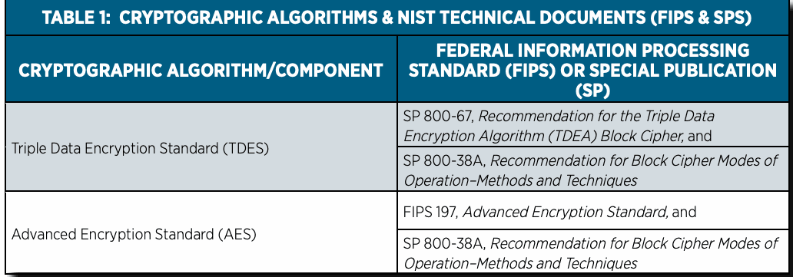
| 表1：暗号アルゴリズムとNIST技術文書（FIPSおよびSP） | |
| 暗号アルゴリズム／コンポーネント | 連邦情報処理標準（FIPS）または特別刊行物（SP） |
| Triple Data Encryption Standard（TDES） | SP 800-67『Triple Data Encryption Algorithm（TDEA）ブロック暗号の推奨』および |
| SP 800-38A『ブロック暗号モードの推奨―方式および技法』 | |
| Advanced Encryption Standard（AES） | FIPS 197『Advanced Encryption Standard』および |
| SP 800-38A『ブロック暗号モードの推奨―方式および技法』 |
5 1
原文のみ
P RO GRA M A ND PR OJ ECT ACHI EVE ME NTS | F Y 2015
プログラムおよびプロジェクトの成果｜2015会計年度
未レビュー訳THIS PUBLICATION IS AVAILABLE FREE OF CHARGE FROM: http://dx.doi.org/10.6028/NIST.SP.800-182
本出版物は次のURLから無料で入手できます：http://dx.doi.org/10.6028/NIST.SP.800-182
未レビュー訳| TABLE 1 (CONT.): CRYPTOGRAPHIC ALGORITHMS & NIST TECHNICAL DOCUMENTS (FIPS & SPS) | |
| CRYPTOGRAPHIC ALGORITHM/COMPONENT | FEDERAL INFORMATION PROCESSING STANDARD (FIPS) OR SPECIAL PUBLICATION (SP) |
| Digital Signature Algorithm (DSA) | FIPS 186-2, Digital Signature Standard (DSS), with change notice 1 |
| FIPS 186-4, Digital Signature Standard (DSS) | |
| Elliptic Curve Digital Signature Algorithm (ECDSA) | FIPS 186-2, Digital Signature Standard (DSS), with change notice 1 and ANS X9.62 |
| FIPS 186-4, Digital Signature Standard (DSS), and ANS X9.62 | |
| RSA algorithm | FIPS 186-4, Digital Signature Standard (DSS) |
| ANS X9.31 and Public Key Cryptography Standards (PKCS) #1 v2.1: RSA Cryptography Standard-2002 | |
| Hashing algorithms SHA-1, SHA-224, SHA-256, SHA-384, SHA-512, SHA-512/224, SHA-512/256 | FIPS 180-4, Secure Hash Standard (SHS) |
| Random number generator (RNG) algorithms | FIPS 186-2 Appendix 3.1 and 3.2; ANS X9.62 Appendix A.4 |
| Deterministic Random Bit Generators (DRBG) | SP 800-90A, Recommendation for Random Number Generation Using Deterministic Random Bit Generators |
| Keyed-Hash Message Authentication Code (HMAC) | FIPS 198-1, The Keyed-Hash Message Authentication Code (HMAC) |
| Cipher-based Message Authentication Code (CMAC) Mode for Authentication | SP 800-38B, Recommendation for Block Cipher Modes of Operation: The CMAC Mode for Authentication |
| Counter with Cipher Block Chaining-Message Authentication Code (CCM) Mode | SP 800-38C, Recommendation for Block Cipher Modes of Operation: the CCM Mode for Authentication and Confidentiality |
| GCM and GMAC Modes | SP 800-38D, Recommendation for Block Cipher Modes of Operation: Galois/Counter Mode (GCM) and GMAC |
| XTS-AES Mode | SP 800-38E, Recommendation for Block Cipher Modes of Operation: The XTS-AES Mode for Confidentiality on Block-Oriented Storage Devices |
| Key Wrapping | SP 800-38F, Recommendation for Block Cipher Modes of Operation: Methods for Key Wrapping |
| DH and MQV Key Agreement Schemes and Key Confirmation | SP 800-56A, Recommendation for Pair-Wise Key Establishment Schemes Using Discrete Logarithm Cryptography, dated March 2007 |
| All of SP 800-56A schemes without the Key Derivation Functions (KDF) | SP 800-56A, Key Derivation Functions for Key Agreement Schemes: All sections except Section 5.8 |
| All of SP 800-56A schemes without the Key Derivation Functions (KDF) | SP 800-56A, Section 5.7.1.2 Elliptic Curve Cryptography Cofactor Diffie-Hellman (ECC CDH) Primitive Testing |
| Key-Based Key Derivation functions (KBKDF) | SP 800-108, Recommendation for Key Derivation using Pseudorandom Functions |
原本PDFの抜粋画像
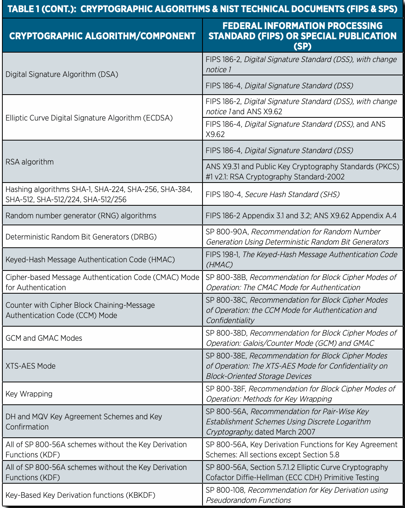
| 表1（続き）：暗号アルゴリズムとNIST技術文書（FIPSおよびSP） | |
| 暗号アルゴリズム／コンポーネント | 連邦情報処理標準（FIPS）または特別刊行物（SP） |
| Digital Signature Algorithm（DSA） | FIPS 186-2『Digital Signature Standard（DSS）』、変更通知1を含む |
| FIPS 186-4『Digital Signature Standard（DSS）』 | |
| Elliptic Curve Digital Signature Algorithm（ECDSA） | FIPS 186-2『Digital Signature Standard（DSS）』、変更通知1およびANS X9.62 |
| FIPS 186-4『Digital Signature Standard（DSS）』およびANS X9.62 | |
| RSAアルゴリズム | FIPS 186-4『Digital Signature Standard（DSS）』 |
| ANS X9.31およびPublic Key Cryptography Standards（PKCS）#1 v2.1『RSA Cryptography Standard-2002』 | |
| ハッシュアルゴリズム SHA-1、SHA-224、SHA-256、SHA-384、SHA-512、SHA-512/224、SHA-512/256 | FIPS 180-4『Secure Hash Standard（SHS）』 |
| 乱数生成器（RNG）アルゴリズム | FIPS 186-2 付録3.1および3.2、ANS X9.62 付録A.4 |
| 決定論的乱数ビット生成器（DRBG） | SP 800-90A『決定論的乱数ビット生成器を用いた乱数生成の推奨』 |
| 鍵付きハッシュメッセージ認証コード（HMAC） | FIPS 198-1『鍵付きハッシュメッセージ認証コード（HMAC）』 |
| 認証用暗号ブロック連鎖メッセージ認証コード（CMAC）モード | SP 800-38B『ブロック暗号モードの推奨：認証用CMACモード』 |
| カウンタ付き暗号ブロック連鎖メッセージ認証コード（CCM）モード | SP 800-38C『ブロック暗号モードの推奨：認証および機密性のためのCCMモード』 |
| GCMおよびGMACモード | SP 800-38D『ブロック暗号モードの推奨：Galois/Counter Mode（GCM）およびGMAC』 |
| XTS-AESモード | SP 800-38E『ブロック暗号モードの推奨：ブロック指向ストレージデバイスの機密性を保護するXTS-AESモード』 |
| 鍵ラッピング | SP 800-38F『ブロック暗号モードの推奨：鍵ラッピング方式』 |
| DHおよびMQV鍵合意方式と鍵確認 | SP 800-56A『離散対数暗号を用いたペアワイズ鍵確立方式の推奨』（2007年3月付） |
| SP 800-56Aの鍵導出関数（KDF）を除くすべての方式 | SP 800-56A『鍵合意方式の鍵導出関数』：第5.8節を除くすべての節 |
| SP 800-56Aの鍵導出関数（KDF）を除くすべての方式 | SP 800-56A 第5.7.1.2節『楕円曲線暗号コファクターDiffie-Hellman（ECC CDH）プリミティブ試験』 |
| 鍵ベース鍵導出関数（KBKDF） | SP 800-108『疑似乱数関数を用いた鍵導出の推奨』 |
5 2
原文のみ
COMP U TER SECURITY DI VI SION ANNUAL REP ORT | 2 01 5 THIS PUBLICATION IS AVAILABLE FREE OF CHARGE FROM:
コンピュータセキュリティ部門 年次報告書｜2015会計年度 本出版物は次のURLから無料で入手できます：
未レビュー訳http://dx.doi.org/10.6028/NIST.SP.800-182
原文のみ
| TABLE 1 (CONT.): CRYPTOGRAPHIC ALGORITHMS & NIST TECHNICAL DOCUMENTS (FIPS & SPS) | |
| CRYPTOGRAPHIC ALGORITHM/COMPONENT | FEDERAL INFORMATION PROCESSING STANDARD (FIPS) OR SPECIAL PUBLICATION (SP) |
| Application-Specific Key Derivation functions (ASKDF) (includes the KDFs used by IKEv1, IKEv2, TLS, ANS X9.63- 2001, SSH, SRTP, SNMP, and TPM) | SP 800-135 (Revision 1) Recommendation for Existing Application Specific key Derivation Functions |
| Component test – ECDSA Signature Generation of a hash value (This component test verifies the signing of a hash- sized input. It does not verify the hashing of the original message to be signed.) | FIPS 186-4, Digital Signature Standard (DSS), and ANS X9.62 |
| Component test – RSA PKCS#1 1.5 Signature Generation of encoded message EM (This component test verifies the signing of an EM. It does not verify the formatting of the EM.) | FIPS 186-4, Digital Signature Standard (DSS), and Public Key Cryptography Standards (PKCS) #1 v2.1: RSA Cryptography Standard-2002 |
| Component test – RSA PKCS#1 PSS Signature Generation of encoded message EM (This component test verifies the RSASP1 function.) | SP 800-56B, Recommendation for Pair-Wise Key Establishment Schemes Using Integer Factorization Cryptography, August 2009, Section 7.1.2 |
原本PDFの抜粋画像
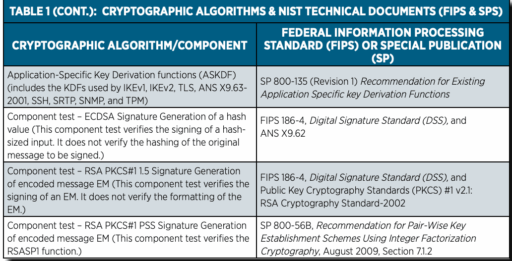
| 表1（続き）：暗号アルゴリズムとNIST技術文書（FIPSおよびSP） | |
| 暗号アルゴリズム／コンポーネント | 連邦情報処理標準（FIPS）または特別刊行物（SP） |
| アプリケーション固有鍵導出関数（ASKDF）（IKEv1、IKEv2、TLS、ANS X9.63-2001、SSH、SRTP、SNMP、TPMで使うKDFを含む） | SP 800-135（改訂1）『既存のアプリケーション固有鍵導出関数の推奨』 |
| コンポーネント試験：ECDSAハッシュ値の署名生成（ハッシュ長の入力への署名を検証する。署名対象の元メッセージのハッシュ化は検証しない。） | FIPS 186-4『Digital Signature Standard（DSS）』およびANS X9.62 |
| コンポーネント試験：RSA PKCS#1 1.5での符号化メッセージEMの署名生成（EMへの署名を検証する。EMの書式設定は検証しない。） | FIPS 186-4『Digital Signature Standard（DSS）』およびPublic Key Cryptography Standards（PKCS）#1 v2.1『RSA Cryptography Standard-2002』 |
| コンポーネント試験：RSA PKCS#1 PSSでの符号化メッセージEMの署名生成（RSASP1関数を検証する。） | SP 800-56B『整数因数分解暗号を用いたペアワイズ鍵確立方式の推奨』、2009年8月、第7.1.2節 |
In FY 2016, the CAVP expects to add algorithm validation For More Information, See: testing for:
〔左段〕2016会計年度にCAVPは、次のアルゴリズム検証試験を追加する予定である。〔右段〕詳細情報：
未レビュー訳http://csrc.nist.gov/groups/STM/cavp
原文のみ
•FIPS 202, SHA-3Standard: Permutation-BasedHash andExtendable-OutputFunctions,August 2015;
•FIPS 202『SHA-3標準：置換ベースのハッシュ関数および拡張可能出力関数』、2015年8月。
未レビュー訳CONTACTS:
連絡先：
未レビュー訳•SP 800-56C, RecommendationforKeyDerivation Ms. Sharon Keller Ms. Elaine Barker throughExtraction-then-Expansion,November 2011; (301) 975-2910 (301) 975-2911
•〔左段〕SP 800-56C『抽出後拡張方式による鍵導出の推奨』、2011年11月。〔右段〕Sharon Keller氏（301）975-2910、Elaine Barker氏（301）975-2911
未レビュー訳•SP 800-132, RecommendationforPassword-Based sharon.keller@nist.gov elaine.barker@nist.gov KeyDerivationPart1:StorageApplications,December 2010; and
•〔左段〕SP 800-132『パスワードベース鍵導出の推奨 第1部：ストレージアプリケーション』、2010年12月、および〔右段〕sharon.keller@nist.gov elaine.barker@nist.gov
未レビュー訳•SP 800-56A Revision 2, RecommendationforPair-Wise KeyEstablishmentSchemesUsingDiscreteLogarithm Cryptography,May 2013.
•SP 800-56A改訂2『離散対数暗号を用いたペアワイズ鍵確立方式の推奨』、2013年5月。
未レビュー訳5 3
原文のみ
P RO GRA M A ND PR OJ ECT ACHI EVE ME NTS | F Y 2015
プログラムおよびプロジェクトの成果｜2015会計年度
未レビュー訳THIS PUBLICATION IS AVAILABLE FREE OF CHARGE FROM: http://dx.doi.org/10.6028/NIST.SP.800-182
本出版物は次のURLから無料で入手できます：http://dx.doi.org/10.6028/NIST.SP.800-182
未レビュー訳Security Content Automation Protocol (SCAP): SCAPVersion1.2.Conformance testing is necessary
セキュリティコンテンツ自動化プロトコル（SCAP）：SCAPバージョン1.2。適合性試験は必須である。
未レビュー訳because SCAP is a complex collection of eleven individual
SCAPは、さまざまなユースケースを支える11個の個別仕様から成る複雑な集合体であるため、
未レビュー訳(SCAP) Validation Program The SCAP Validation Program performs conformance specifications that work together to support various use testing to ensure that products correctly implement cases. A single error in product implementation could result SCAP as defined in SP 800-126 Revision 2, TheTechnical in undetected vulnerabilities or policy noncompliance within SpecificationfortheSecurityContentAutomationProtocol an organization’s networks.
〔左段〕SCAP検証プログラムは、SP 800-126改訂2『セキュリティコンテンツ自動化プロトコル（SCAP）の技術仕様』で定義されたSCAPを製品が正しく実装していることを確認する適合性試験を実施する。〔右段〕各仕様は連携してさまざまなユースケースを支える。製品実装に誤りが一つでもあると、組織のネットワークで脆弱性が検出されない、またはポリシーに準拠しない状態が生じるおそれがある。
未レビュー訳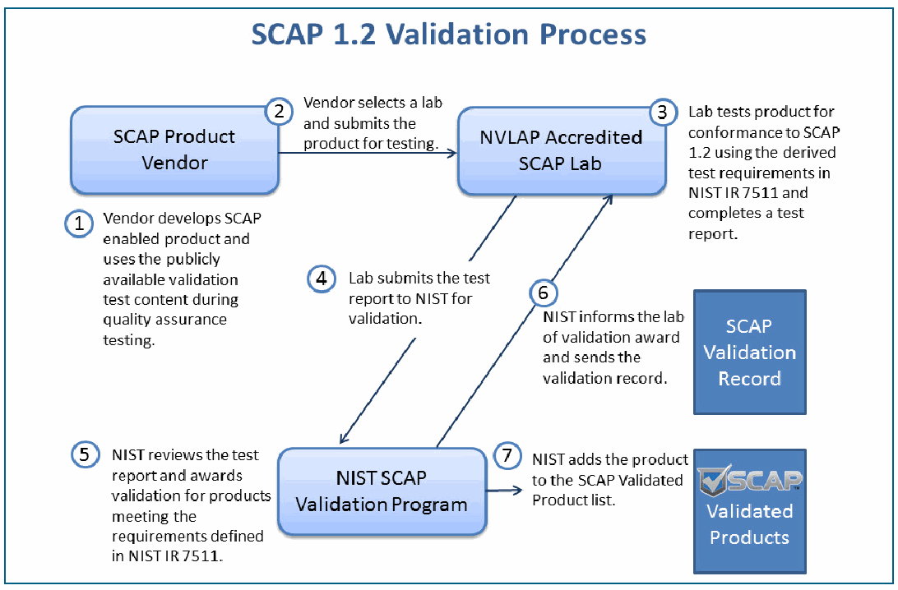
SCAP 1.2の検証プロセス図。関係者はSCAP製品ベンダー、NVLAP認定SCAP試験所、NIST SCAP検証プログラム。1：ベンダーはSCAP対応製品を開発し、品質保証試験に公開検証テストコンテンツを使用する。2：ベンダーは試験所を選び、製品を提出する。3：試験所はNISTIR 7511の要件に基づきSCAP 1.2適合性を試験し、報告書を作成する。4：試験所は報告書をNISTへ提出する。5：NISTは要件を満たす製品を審査して検証を付与する。6：NISTは試験所へ結果を通知し、SCAP検証記録を送付する。7：NISTは製品をSCAP検証済み製品一覧に追加する。図中の全ラベルと工程は判読可能。
Figure 16: SCAP 1.2 Validation Process
図16：SCAP 1.2の検証プロセス
未レビュー訳5 4
原文のみ
COMP U TER SECURITY DI VI SION ANNUAL REP ORT | 2 01 5 THIS PUBLICATION IS AVAILABLE FREE OF CHARGE FROM:
コンピュータセキュリティ部門 年次報告書｜2015会計年度 本出版物は次のURLから無料で入手できます：
未レビュー訳http://dx.doi.org/10.6028/NIST.SP.800-182
原文のみ
The test requirements for SCAP 1.2 are defined in In FY 2016, the SCAP Validation Program plans to NISTIR 7511, SecurityContentAutomationProtocol(SCAP) expand the validation test suite, adding new operating Version 1.2 Validation Program Test Requirements. In system support and introducing module testing. SCAP general, vendors may opt for product validation for one or module testing enables the “SCAP Inside” labeling program. more SCAP capabilities or operating systems. Currently, the Products using the “SCAP Inside” label have incorporated an program offers testing on Microsoft Windows and Red Hat SCAP-validated module; however, the consumer product as Enterprise Linux platforms. Figure 16 illustrates the SCAP a whole has not completed validation testing by an NVLAP 1.2 Validation Process. The validation process starts when accredited laboratory. Additions to the SCAP Validation a vendor voluntarily submits an SCAP-enabled product to Program will be defined in NISTIR 7511 Revision 4. an NVLAP-accredited laboratory. Once the lab completes
〔左段〕SCAP 1.2の試験要件はNISTIR 7511『セキュリティコンテンツ自動化プロトコル（SCAP）バージョン1.2検証プログラムの試験要件』で定義される。一般に、ベンダーは1つ以上のSCAP機能またはオペレーティングシステムについて製品検証を選べる。現行プログラムはMicrosoft WindowsおよびRed Hat Enterprise Linuxで試験を提供する。図16〔右段〕2016会計年度にSCAP検証プログラムは試験スイートを拡張し、新しいOSのサポートを追加するとともにモジュール試験を導入する予定である。SCAPモジュール試験により「SCAP Inside」ラベル制度が可能になる。「SCAP Inside」ラベルを使用する製品にはSCAP検証済みモジュールが組み込まれているが、製品そのものが
未レビュー訳For More Information, See:
〔右段〕詳細情報：
未レビュー訳product testing, the lab submits a test report to the SCAP
〔左段・続き〕製品試験では、試験所がSCAP検証プログラムへ試験報告書を提出する。
未レビュー訳http://scap.nist.gov/validation
原文のみ
Validation Program at NIST for review. NIST reviews the test report and awards a validation if all requirements have been met. Once a validation is awarded, the SCAP Validation
NISTのSCAP検証プログラムへ審査のため報告書を提出する。NISTは報告書を審査し、要件をすべて満たしていれば製品を検証する。検証が付与されると、SCAP検証
未レビュー訳CONTACT:
〔右段〕連絡先：
未レビュー訳Record is sent to the lab, and the information about the newly validated product is posted on the SCAP Validated Ms. Melanie Cook Products web page.
〔左段・続き〕記録が試験所へ送られ、新たに検証された製品の情報がSCAP検証済み製品ウェブページに掲載される。〔右段〕Melanie Cook氏
未レビュー訳(301) 975-5259 melanie.cook@nist.gov
〔右段〕電話：（301）975-5259 メール：melanie.cook@nist.gov
未レビュー訳The SCAP Validation Program resources web page provides the public with a centralized location for all resources and information necessary for preparing products
SCAP検証プログラムのリソースウェブページは、SCAP 1.2検証の準備に必要なすべてのリソースと情報を一元的に提供する。
未レビュー訳アイデンティティ管理（Identity Management）。
for SCAP 1.2 validation. Resources include: documentation, I D E N T I T Y M A N A G E M E N T a list of Frequently Asked Questions (FAQ), the SCAP validation-test content, and tools for validating and
〔左段・続き〕文書、FAQ一覧、SCAP検証テストコンテンツ、SCAPデータストリームの検証・処理ツールを含む。
未レビュー訳NIST Personal Identity Verification
〔右段・見出し〕NIST個人ID検証
未レビュー訳processing SCAP data streams. The SCAP validation-test
〔左段・続き〕データストリームを処理するツールである。SCAP検証テスト
未レビュー訳Program (NPIVP)
〔右段・見出し〕プログラム（NPIVP）
未レビュー訳content should be used by vendors for quality assurance
〔左段〕SCAP検証テストコンテンツは、ベンダーが品質保証のために利用するべきである。
未レビュー訳The objective of the NIST Personal Identity Verification
〔右段〕NIST個人ID検証プログラム（NPIVP）の目的は、
未レビュー訳testing prior to entering formal SCAP testing with an
〔左段・続き〕正式なSCAP試験をNVLAP認定試験所で受ける前に使用する。ダウンロード可能な
未レビュー訳Program (NPIVP) is to validate PIV components for
〔右段・続き〕PIVコンポーネントが
未レビュー訳NVLAP-accredited laboratory. The open-source tools that
〔左段・続き〕オープンソースツールは、
未レビュー訳conformance to the specifications in FIPS 201, Personal
〔右段・続き〕FIPS 201「
未レビュー訳are available for download may be used by SCAP content
〔左段・続き〕SCAPコンテンツ作成者がSCAPソースコンテンツを試験するために使用できる。SCAPコンテンツ
未レビュー訳Identity Verification (PIV) of Federal Employees and
〔右段・続き〕連邦職員および請負業者の個人ID検証（PIV）」
未レビュー訳authors for testing SCAP source content. The SCAP Content
〔左段・続き〕作成者がSCAPソースコンテンツを試験するために使用する。SCAPコンテンツ
未レビュー訳Contractors, and its companion documents. The two PIV
〔右段・続き〕および関連文書に規定される。NPIVPが対象とする2種類のPIV
未レビュー訳Validation Tool (SCAPVal) may be used to determine if the
〔左段・続き〕SCAP検証ツール（SCAPVal）を用いて、
未レビュー訳components that come under the scope of NPIVP are the
〔右段・続き〕コンポーネントは、
未レビュー訳content conforms to the SCAP specification. Open-source
〔左段・続き〕コンテンツがSCAP仕様に適合するかを判定できる。オープンソースの
未レビュー訳PIV Smart Card Application and the PIV Middleware. NPIVP
〔右段・続き〕PIVスマートカードアプリケーションとPIVミドルウェアである。NPIVPの
未レビュー訳SCAP reference implementation tools, such as the SCAP
〔左段・続き〕SCAP参照実装ツール（SCAP Reference Implementation Tool）などは、
未レビュー訳test facilities that perform the two types of tests are the
〔右段・続き〕2種類の試験を実施する施設は、
未レビュー訳Reference Implementation Tool, may be used to process
〔左段・続き〕SCAPデータストリームの処理に使用できる。
未レビュー訳Cryptographic and Security Testing (CST) Laboratories
〔右段・続き〕暗号・セキュリティ試験（CST）試験所である。
未レビュー訳SCAP data streams.
〔左段・続き〕データストリーム。
未レビュー訳that have been accredited by the NVLAP. As of September
〔右段・続き〕NVLAPの認定を受けている。2015年9月時点では、
未レビュー訳End users may use information on the SCAP Validation
〔左段〕エンドユーザーはSCAP検証済み製品ページの情報を利用して、SCAP検証について学び、
未レビュー訳2015, there were nine such facilities (see http://csrc.nist.gov/
〔右段・続き〕こうした試験施設は9か所あった（http://csrc.nist.gov/groups/SNS/piv/npivp/testing_facilities.html）。
未レビュー訳web page to learn about SCAP validation and find products
〔左段・続き〕検証を受けた製品を検索できる。検証
未レビュー訳groups/SNS/piv/npivp/testing_facilities.html).
原文のみ
that have been awarded validations. The validation
〔左段・続き〕済み製品の記録は、
未レビュー訳The interface specifications for the PIV Smart Card
〔右段・次段落〕PIVスマートカードアプリケーションとPIVミドルウェアのインターフェース仕様は、
未レビュー訳records that are posted on the SCAP Validated Products
〔左段・続き〕SCAP検証済み製品ページに掲載され、
未レビュー訳Application and PIV Middleware are found in a FIPS
〔右段・続き〕FIPS 201関連文書に記載されている。
未レビュー訳page identify the product versions that were tested in the
〔左段・続き〕試験所で試験された製品バージョンを特定し、
未レビュー訳201-associated document, namely, SP 800-73-4, Interfaces
〔右段・続き〕201関連文書、すなわちSP 800-73-4「
未レビュー訳laboratory, along with details about each validation, such as
〔左段・続き〕検証を実施した試験所を特定し、各検証の詳細も記録する。例えば、
未レビュー訳for Personal Identity Verification. The conformance tests
〔右段・続き〕個人ID検証（PIV）用インターフェース」である。これらの仕様の適合性試験は、
未レビュー訳the tested platforms, SCAP capabilities, the validation test
〔左段・続き〕試験で使用したプラットフォームやSCAP機能、
未レビュー訳for these specifications are detailed in SP 800-85A-2, PIV
〔右段・続き〕SP 800-85A-2「
未レビュー訳suite version, and the lab that performed the product test.
〔左段・続き〕検証試験スイートのバージョン、および製品試験を実施した試験所を示す。
未レビュー訳CardApplicationandMiddlewareInterfaceTestGuidelines.
〔右段・続き〕PIVカードアプリケーションおよびミドルウェアのインターフェース試験ガイドライン」に詳述されている。
未レビュー訳In FY 2015, five products successfully completed testing
〔左段〕2015会計年度には、5製品が試験を正常に完了し、
未レビュー訳To implement these tests and to generate conformance test
〔右段〕これらの試験を実施して適合性試験
未レビュー訳and were awarded validations, bringing the total number
〔左段・続き〕検証を受けた。これにより、
未レビュー訳reports, CSD also developed an integrated toolkit called
〔右段・続き〕報告書を生成するため、CSDは「
未レビュー訳of SCAP 1.2-validated products to twelve. This provides
〔左段・続き〕SCAP 1.2検証済み製品は合計12となった。これにより、市場の
未レビュー訳“PIV Interface Test Runner,” which conducts tests on both
〔右段・続き〕PIVインターフェース試験ランナー」を開発した。このツールは、
未レビュー訳coverage for 80 percent of the market space. Several
〔左段・続き〕約80％をカバーする。複数の
未レビュー訳PIV Card Application and PIV Middleware products, and
〔右段・続き〕PIVカードアプリケーションとPIVミドルウェアの両方を試験し、
未レビュー訳products are in various stages of validation testing and are
〔左段・続き〕製品が現在さまざまな検証段階にあり、
未レビュー訳provides the toolkit to accredited NPIVP test facilities.
〔右段・続き〕認定済みNPIVP試験施設にツールキットを提供する。
未レビュー訳expected to be awarded validations in FY 2016. The current list of SCAP 1.2-validated products may be found on the SCAP Validated Products list at https://nvd.nist.gov/SCAP-Validated-Tools.
〔左段・続き〕2016会計年度に検証が付与される見込みである。現在のSCAP 1.2検証済み製品一覧は、https://nvd.nist.gov/SCAP-Validated-Tools で確認できる。
未レビュー訳5 5
原文のみ
P RO GRA M A ND PR OJ ECT ACHI EVE ME NTS | F Y 2015
プログラムおよびプロジェクトの成果｜2015会計年度
未レビュー訳THIS PUBLICATION IS AVAILABLE FREE OF CHARGE FROM: http://dx.doi.org/10.6028/NIST.SP.800-182
本出版物は次のURLから無料で入手できます：http://dx.doi.org/10.6028/NIST.SP.800-182
未レビュー訳In addition, NPIVP is closely involved in ensuring that all andContractors, was developed and was approved by the changes in PIV companion documents, such as SP 800-73-4, Secretary of Commerce in February 2005. HSPD-12 called SP 800-76-2, BiometricSpecificationsforPersonalIdentity for the creation of a new identity credential for federal Verification, and SP 800-78-4, Cryptographic Algorithms employees and contractors. FIPS 201 is the technical and Key Sizes for Personal Identity Verification, are fully specification for both the PIV identity credential and the PIV reflected in the updated versions of the conformance test system that produces, manages, and uses the credential. documents, SP 800-85A-2 and SP 800-85B, as well as in Within NIST’s Information Technology Laboratory (ITL), the “PIV Interface Test Runner” toolkit. Currently, the NPIVP this work is a collaborative effort of the Information Access team is guiding the development of the “PIV Interface Test Division (IAD) and CSD. CSD activities in FY 2015 directly Runner” toolkit for validating PIV Card application and PIV supported the recently revised FIPS 201-2 by updating Middleware products for conformance to the specifications the relevant publications associated with FIPS 201-2 and in SP 800-73-4, SP 800-76-2 and SP 800-78-4. In FY by developing two new publications. CSD performed the 2015, Phase I changes to PIV Interface Test Runner were following activities during FY 2015 in support of HSPD-12: completed, and NPVIP performed acceptance testing.
〔左段〕NPIVPは、PIV関連文書（SP 800-73-4、SP 800-76-2、SP 800-78-4）の変更が、適合性試験文書（SP 800-85A-2およびSP 800-85B）とPIV Interface Test Runnerツールの更新版に反映されるよう取り組んでいる。現在、SP 800-73-4、SP 800-76-2、SP 800-78-4への適合を検証するPIVカードアプリケーションおよびPIVミドルウェア向けツールの開発を指導している。2015会計年度にはPhase Iの変更を完了し、受入試験を実施した。〔右段・前文続き〕連邦職員および請負業者向けの共通ID方針（HSPD-12）に基づく資格証明は、2005年2月に商務長官の承認を受けて開発された。HSPD-12は連邦職員・請負業者向けの新たな身分証明資格を求めた。FIPS 201はPIV資格証明と、その生成・管理・利用システム双方の技術仕様である。NIST情報技術研究所（ITL）では情報アクセス部門（IAD）とCSDが協働している。CSDは2015会計年度、FIPS 201-2改訂に対応して関連文書を更新し、新たな刊行物を2点開発することで支援した。HSPD-12を支援する2015会計年度の活動は次のとおり。
未レビュー訳•Published SP 800-157, GuidelinesforDerivedPersonal IdentityVerification(PIV)Credentials, in December
•SP 800-157『派生個人ID検証（PIV）資格情報のガイドライン』を2014年12月に発行した。
未レビュー訳For More Information, See:
詳細情報：
未レビュー訳2014.SP 800-157 defines the technical details for
2014.SP 800-157は、派生PIV資格情報を
未レビュー訳http://csrc.nist.gov/groups/SNS/piv/npivp
原文のみ
implementing and deploying derived PIV credentials on mobile devices, such as smart phones and tablets.
モバイルデバイス（スマートフォンやタブレットなど）に実装・展開するための技術的詳細を定める。
未レビュー訳CONTACTS:
連絡先：
未レビュー訳As intended by FIPS 201-2, a derived PIV credential is a PIV credential that can be provisioned directly to a
FIPS 201-2の意図に沿い、派生PIV資格情報とは、モバイルデバイスへ直接プロビジョニングできるPIV資格情報であり、
未レビュー訳Dr. Ramaswamy Chandramouli Ms. Hildegard Ferraiolo
Dr. Ramaswamy Chandramouli氏 Ms. Hildegard Ferraiolo氏
未レビュー訳mobile device to enable remote enterprise access from
モバイルデバイスからリモートの企業ネットワークへアクセスできるようにする。
未レビュー訳(301) 975-5013
原文のみ
(301) 975-6972 hildegard.ferraiolo@nist.gov the device. The use of Derived PIV Credentials greatly
〔右段〕（301）975-6972 hildegard.ferraiolo@nist.gov〔左段・続き〕派生PIV資格情報を使うと、
未レビュー訳mouli@nist.gov
原文のみ
improves the usability of electronic authentication from mobile devices to remote IT resources, while at the
電子認証でモバイルデバイスからリモートITリソースへアクセスする利便性が大幅に向上する一方、
未レビュー訳Personal Identity Verification (PIV)
〔見出し〕個人ID検証（PIV）
未レビュー訳same time maintaining the goals of HSPD-12 for com-
〔右段・続き〕同時に、HSPD-12が掲げる、
未レビュー訳and FIPS 201 Revision Efforts
〔見出し続き〕およびFIPS 201改訂に向けた取り組み
未レビュー訳mon identification that is secure, reliable, and interop-erable government wide.
〔右段・続き〕共通識別の安全性、信頼性、および政府全体での相互運用性を維持する。
未レビュー訳•Organized and hosted a workshop in March 2015 on upcoming Special Publications supporting FIPS 201-2 (PIV). The event drew over 160 in-person attendees and about 75 webcast remote attendees from gov-ernment, industry, and academia representing a wide range of implementers and professionals in cyberse-curity and physical security. Topics covered included physical access control with the PIV Card, PIV card-holder interagency record exchange, and derived PIV credentials.
•2015年3月、FIPS 201-2（PIV）を支援する今後の特別刊行物に関するワークショップを主催した。会場には160人超、ウェブ配信には政府、産業界、学界の実装者・専門家約75人が参加した。扱ったテーマは、PIVカードによる物理アクセス制御、PIVカード保有者に関する機関間記録交換、派生PIV資格情報などである。
未レビュー訳•Published SP 800-73-4, InterfacesforPersonalIdentity Verification, in June 2015, after two public comment periods. The three-part SP details the new, optional PIV Card capabilities introduced in FIPS 201-2, including a virtual contact interface (VCI), a secure channel proto-
•SP 800-73-4『PIV用インターフェース』を、2回のパブリックコメント期間を経て2015年6月に発行した。この3部構成の特別刊行物は、FIPS 201-2で導入された新しい任意のPIVカード機能（仮想接触インターフェース（VCI）、セキュアチャネル・プロトコル、
未レビュー訳Figure 17: Government Employees Use PIV Cards for
図17：政府職員は施設への入館にPIVカードを
未レビュー訳col, and an on-card biometric comparison mechanism.
カード上での生体情報照合機構を含む。
未レビュー訳Facility Access
使用する。
未レビュー訳SP 800-73-4 also requires new PIV Cards to enforce a minimum PIN length of six digits.
SP 800-73-4は、新しいPIVカードに6桁以上のPINを設定することも求めている。
未レビュー訳In response to Homeland Security Presidential • Published SP 800-78-4, CryptographicAlgorithmsand Directive-12 (HSPD-12), PolicyforaCommonIdentification KeySizesforPersonalIdentityVerification, in June StandardforFederalEmployeesandContractors, FIPS 201, 2015, after two public comment periods. The document Personal Identity Verification (PIV) of Federal Employees has been modified to align with SP 800-73-4, and
〔右段〕SP 800-78-4『個人ID検証のための暗号アルゴリズムと鍵長』を、2回のパブリックコメント期間を経て2015年6月に発行した。この文書はSP 800-73-4に整合するよう改訂され、
未レビュー訳5 6
原文のみ
COMP U TER SECURITY DI VI SION ANNUAL REP ORT | 2 01 5 THIS PUBLICATION IS AVAILABLE FREE OF CHARGE FROM:
コンピュータセキュリティ部門 年次報告書｜2015会計年度 本出版物は次のURLから無料で入手できます：
未レビュー訳includes the addition of new algorithms and key sizes R E S E A R C H I N E M E R G I N G for the secure messaging protocol. Cryptographic algo-
原文更新後、再確認待ち
T E C H N O L O G I E S
〔装飾見出し続き〕技術
未レビュー訳rithm validation testing requirements were also added.
検証試験要件も追加された。
未レビュー訳•Published Draft SP 800-85A-4, PIVCardApplication Secure Development Toolchain andMiddlewareInterfaceTestGuidelines(SP800-73-4 Competitions Compliance), in June 2015, to align the testing require-ments with FIPS 201-2, SP 800-73-4, and SP 800-78-4. Many security weaknesses in federal information systems stem from software security vulnerabilities induced
•〔左段〕2015年6月にドラフトSP 800-85A-4『PIVカードアプリケーションおよびミドルウェア・インターフェース試験ガイドライン（SP 800-73-4準拠）』を公開した。これは試験要件をFIPS 201-2、SP 800-73-4、SP 800-78-4に整合させるためである。〔右段見出し〕セキュア開発ツールチェーン・コンペティション。〔右段本文〕連邦情報システムにおけるセキュリティ上の弱点の多くは、ソフトウェアのセキュリティ脆弱性に起因し、その脆弱性は
未レビュー訳•Published NISTIR 7863, CardholderAuthenticationfor by software flaws present in current-generation software thePIVDigitalSignatureKey, in June 2015. The docu-products. CSD tracks software security vulnerabilities (in ment provides clarification for the requirement in FIPS the National Vulnerability Database), seeks techniques for 201-2 that a PIV cardholder perform an explicit user the measurement of security vulnerabilities, and also seeks action prior to each use of the digital signature key techniques to reduce the impact and prevalence of security stored on the card. NISTIR 7863 clarifies the require-vulnerabilities in newly developed products or in new ment for “explicit user action” and specifies a range of versions of existing products. PIN caching options that maintains the goal of “explicit user action” while adhering to a consistent and reliable One approach to reducing the number of security vulnerabilities in software is to improve the development level of security. tools that are available. By identifying languages and
•〔左段〕2015年6月にNISTIR 7863『PIVデジタル署名鍵のカード保有者認証』を公開した。この文書は、PIVカード保有者がカードに格納されたデジタル署名鍵を使用するたびに明示的な利用者操作を行うというFIPS 201-2の要件を明確化する。NISTIR 7863は「明示的な利用者操作」の要件を説明し、一貫して信頼できるセキュリティ水準を維持しながらPINをキャッシュする複数の選択肢を示す。〔右段・続き〕現行世代のソフトウェア製品に存在するソフトウェア欠陥によって引き起こされる。CSDは、ソフトウェアのセキュリティ脆弱性（National Vulnerability Databaseに収録）を追跡し、脆弱性の測定方法や、新規製品および既存製品の新バージョンで脆弱性の影響と発生率を下げる方法を探している。ソフトウェアの脆弱性を減らす方法の一つは、利用可能な開発ツールを改善することである。言語を特定し、
未レビュー訳•Published SP 800-79-2, GuidelinesfortheAuthoriza-software development tools that support a reduction of tionofPersonalIdentityVerificationCardIssuers(PCI) vulnerabilities and, by stimulating the creation of better andDerivedPIVCredentialIssuers(DPCI), in July 2015. tools and tool usage techniques, the approach should help The document incorporates changes required by FIPS developers produce applications with fewer vulnerabilities. 201-2 to accredit PIV Card Issuers and includes a set of While it is impossible to assure the total absence of security issuer controls for Derived PIV Credentials Issuers. vulnerabilities in this way, it might well be possible to rule In FY 2016, CSD will continue to focus on updating the out specific, significant classes of vulnerabilities that today relevantpublicationsassociatedwithFIPS201-2,includingSP provide the basis for many serious exploits. 800-116, ARecommendationfortheUseofPIVCredentials CSD is developing an empirical, competitive approach
•〔左段〕2015年7月にSP 800-79-2『個人識別検証カード発行者（PCI）および派生PIV資格情報発行者（DPCI）の認定に関するガイドライン』を公開した。この文書には、FIPS 201-2が求めるPIVカード発行者の認定に関する変更が盛り込まれ、派生PIV資格情報発行者向けの管理項目一式も含まれる。2016会計年度もCSDは、FIPS 201-2に関連する刊行物の更新を続ける。これにはSP 800-116『PIV資格情報を物理アクセス制御システム（PACS）で使用するための勧告』が含まれる。〔右段・続き〕脆弱性低減を支援するソフトウェア開発ツールを特定し、より優れたツールと利用技法の創出を促すことで、この方法は開発者が脆弱性の少ないアプリケーションを作る助けとなる。この方法でセキュリティ脆弱性を完全になくせるとは限らないが、現在深刻な攻撃の基盤となっている重大な脆弱性の類型を排除できる可能性はある。CSDは、実証的な競争型アプローチを開発しており、
未レビュー訳inPhysicalAccessControlSystems(PACS), and developing
〔左段・続き〕さらに、新しい刊行物の開発も進めている。〔右段・続き〕最も有効で使いやすいツールの組み合わせを見つけるためである。
未レビュー訳to finding the most effective and usable combinations of
〔右段・続き〕これらのツールを組み合わせ、悪用可能な脆弱性が比較的少ないソフトウェアシステムを構築する。
未レビュー訳two new publications: SP 800-156, Representation of PIV
〔左段〕新たに2件の刊行物を開発中である。SP 800-156『PIV資格情報の表現』、
未レビュー訳tools to produce software systems that are relatively free of
〔右段・続き〕これらのツールは、悪用可能な脆弱性が比較的少ないソフトウェアシステムを構築するためのものである。
未レビュー訳Chain-of-Trust for Import and Export, and SP 800-166,
〔左段・続き〕『インポートおよびエクスポートにおける信頼チェーン』、およびSP 800-166、
未レビュー訳exploitable vulnerabilities. Multiple competitions are planned
〔右段・続き〕複数のコンペティションを計画しており、
未レビュー訳GuidelinesforTestingDerivedPersonalIdentityVerification
〔左段・続き〕『派生個人識別検証（PIV）資格情報の試験ガイドライン』である。
未レビュー訳that will be based on an idea developed during theDesigning
〔右段・続き〕これらは、「セキュアシステムズ・エンジニアリング競技会を設計するワークショップ」で提案されたアイデアを基礎とする予定であり、
未レビュー訳(PIV)Credentials. CSD will also continue to provide technical
〔左段・続き〕（PIV）資格情報の試験ガイドラインである。CSDはPIV関連の取り組みに、技術面の
未レビュー訳aSecureSystemsEngineeringCompetitionWorkshopthat
〔右段・続き〕そのワークショップは
未レビュー訳and strategic inputs to the PIV-related initiatives.
〔左段・続き〕および戦略面の支援を引き続き提供する。
未レビュー訳was conducted by National Science Foundation in 2010. The
〔右段・続き〕2010年に全米科学財団が開催した。ワークショップでは、
未レビュー訳For More Information, See:
詳細情報：
未レビュー訳workshop proposed a competition for the development of a set of tools to help non-security-expert developers to rapidly
〔右段・続き〕セキュリティ専門家でない開発者が、迅速に一連のツールを開発するためのコンペティションを提案した。そのツールは、
未レビュー訳http://csrc.nist.gov/groups/SNS/piv/
原文のみ
build a significant application with zero vulnerabilities, as detected by an extensive public test suite.
広範な公開テストスイートで検出できる脆弱性がゼロの、実用的な大規模アプリケーションを迅速に構築できるよう支援する。
未レビュー訳CONTACTS:
連絡先：
未レビュー訳The participants in the planned competitions would
〔右段〕計画中のコンペティションの参加者は、
未レビュー訳Ms. Hildegard Ferraiolo
ヒルデガード・フェライオロ氏（Ms. Hildegard Ferraiolo）
未レビュー訳Dr. David Cooper
デイビッド・クーパー氏（Dr. David Cooper）
未レビュー訳implement software systems to solve challenge problems
〔右段・続き〕計画されたコンペティションの参加者は、課題を解決するソフトウェアシステムを実装する。
未レビュー訳(301) 975-6972
原文のみ
(301) 975-3194
原文のみ
using software development tool chains (“toolchains”)
各自が選択したソフトウェア開発ツールチェーン（「ツールチェーン」）を使用し、
未レビュー訳hildegard.ferraiolo@nist.gov david.cooper@nist.gov
原文のみ
of their own choosing, within specified time periods. The toolchains may include existing technologies (e.g., existing
定められた期間内に課題に取り組む。ツールチェーンには、既存のソフトウェアライブラリやフレームワークなどが含まれる場合があり、
未レビュー訳Dr. Ramaswamy Chandramouli
ラマスワミ・チャンドラモウリ博士（Dr. Ramaswamy Chandramouli）
未レビュー訳software libraries and frameworks, code generators, reusable
コード生成ツールや再利用可能な
未レビュー訳(301) 975-5013
原文のみ
source code, or bug-finding tools), novel technologies, or
ソースコード、バグ検出ツールなどの既存技術、新技術、またはそれらの任意の組み合わせが含まれ得る。各コンペティションでは、
未レビュー訳mouli@nist.gov
原文のみ
any combination thereof. Each competition would apply a time pressure by simulating a deadline in the software development process, increasing the likelihood of an introduction of security flaws. The objective of the toolchains willbetodetectorpreventsecurityflawswhilestillsupporting a quick-paced software development of applications with
ソフトウェア開発過程に締切を模した時間的制約を設け、セキュリティ上の欠陥が入り込む可能性を高める。ツールチェーンの目標は、セキュリティ上の欠陥を検出または防止しつつ、豊富な機能を備えたアプリケーションの迅速な開発を支援することである。
未レビュー訳5 7
原文のみ
P RO GRA M A ND PR OJ ECT ACHI EVE ME NTS | F Y 2015
プログラムとプロジェクトの成果｜2015会計年度
未レビュー訳rich feature sets. Through the demonstration of security computing environment. CSD is working in parallel on several flaw avoidance in a time-constrained setting, CSD seeks to projects (introduced below) that aim to accelerate the show that wide-scale improvements in the overall security Federal Government’s adoption of secure cloud computing. of software products can be realized without sacrificing CSD subject matter experts collaborate with national and time-to-market. The competitions, which will be open to international standards setting organizations, and both all interested parties, will aim to provide a level playing field the public and private sectors in developing security, for the application and measurement of the full spectrum interoperability and portability standards and guidance. of commercial and research software development,
原文更新後、再確認待ち
CSD Role in the NIST Cloud Computing
〔右段見出し〕NISTクラウドコンピューティング・
未レビュー訳composition, and reuse techniques.
〔左段・続き〕構成および再利用の技法も含む。
未レビュー訳Program
プログラムにおけるCSDの役割
未レビュー訳In FY 2015, CSD and its contractors developed 8
〔左段〕2015年度に、CSDとその請負業者はコンペティション用に8件の
未レビュー訳During FY 2015, the NIST Cloud Computing Team
〔右段〕2015年度に、NISTクラウドコンピューティング・チームは
未レビュー訳challengeproblemsforthecompetition. Achallengeproblem
課題問題を開発した。課題問題は、
未レビュー訳continued to promote the development of publications,
刊行物の開発を引き続き促進し、
未レビュー訳is comprised of three parts: 1) a functional specification of a
3要素で構成される。1）開発対象プログラムの機能仕様、
未レビュー訳national and international standards, and specifications in
国内外の標準や仕様を策定して、
未レビュー訳program to develop (during the competition), 2) a security
そのプログラムはコンペティション中に開発し、2）
未レビュー訳support of the U.S. Government’s (USG) effective and secure
米国政府（USG）がクラウドコンピューティングを効果的かつ安全に利用できるよう支援するとともに、
未レビュー訳policy that the program must enforce, typically including
適用しなければならないセキュリティポリシー（通常は
未レビュー訳use of cloud computing, as well as providing technical
〔右段・続き〕技術的な
未レビュー訳confidentialityandintegrityrequirements,and3)achallenge-
〔左段・続き〕機密性および完全性の要件を含むセキュリティポリシー、ならびに3）課題固有の
未レビュー訳guidance to federal agencies for secure and effective cloud-
〔右段・続き〕連邦機関がクラウドを安全かつ効果的に導入するためのガイダンスを提供し、
未レビュー訳problem-specific test suite including 20 fully-automated
〔左段・続き〕テストスイート。これには、完全自動化された合否判定付き機能テスト20件、
未レビュー訳computing adoption. CSD supports many of the technical
〔右段・続き〕クラウドコンピューティングの導入も支援している。CSDは、技術標準活動の多くを支援し、
未レビュー訳pass/fail functionality tests, 20 fully-automated pass/fail
完全自動化された合否判定付きセキュリティテスト20件、
未レビュー訳standards activities hosted by the NIST Cloud Computing
NISTクラウドコンピューティング・プログラムが主催する
未レビュー訳security tests, and extensive application of random inputs
大量のランダム入力の適用（ファジングテスト）を含む。課題問題は当初、3種類のプログラムを対象とする。
未レビュー訳Program, with a particular focus on cloud-computing
特にクラウドコンピューティングのセキュリティとフォレンジック科学に重点を置く。
未レビュー訳(i.e., fuzz testing). The challenge problems span three initial
〔左段・続き〕コマンドライン・インターフェース・プログラム、モバイル
未レビュー訳security and forensic science. Activities include the leading
〔右段・続き〕この活動には、
未レビュー訳program types: command-line interface programs, mobile
〔左段・続き〕アプリケーション（携帯電話アプリなど）、およびWebアプリケーション（ブラウザー・ベースのアプリ）である。2015年度には、CSDと請負業者はさらに、
未レビュー訳role for the development of the following documents:
以下の文書の策定を主導する役割も含まれる。
未レビュー訳applications (i.e., cell phone apps), and web applications (browser-based apps). In FY 2015, CSD and its contractors • SP 800-173, GuideforApplyingtheRiskManage-also developed a testing infrastructure for the competition mentFrameworktoCloud-basedFederalInformation and performed testing to exercise the tools and to assess the Systems(draft). This publication provides guidance
〔左段・続き〕テスト基盤も開発し、ツールを試験して、課題問題の適切性を〔右段〕SP 800-173『クラウドベースの連邦情報システムにリスク管理フレームワークを適用するためのガイド』（ドラフト）。この刊行物は、
未レビュー訳in using the Risk Management Framework described
SP 800-37 Revision 1に記載されたリスク管理フレームワークを使用し、
未レビュー訳suitability of the challenge problems.
評価した。
未レビュー訳in SP 800-37 Revision 1 to issue an authorization to
クラウドベースの情報システムに運用認可を与えるためのガイダンスを提供する。
未レビュー訳In FY 2016, CSD plans to re-engineer portions of the
〔左段〕2016年度にCSDは、
未レビュー訳operate for cloud-based information systems. The draft
このドラフト文書は、
未レビュー訳testing infrastructure in response to issues uncovered by
テストで明らかになった問題に対応してテスト基盤の一部を再設計し、
未レビュー訳document will be posted for public comment in the
パブリックコメントのため公開される予定であり、
未レビュー訳testing, to perform a second round of testing, and to publicly
2回目のテストを実施し、一般に
未レビュー訳first quarter of FY 2016.
時期は2016年度第1四半期である。
未レビュー訳announce the first toolchain competition.
最初のツールチェーン・コンペティションを発表する予定である。
未レビュー訳•SP 800-174, SecurityandPrivacyControlsforCloud-basedFederalInformationSystems(internaldraft).
•SP 800-174『クラウドベースの連邦情報システムのセキュリティおよびプライバシー管理策』（内部ドラフト）。
未レビュー訳CONTACTS:
連絡先：
未レビュー訳The document will provide a cloud overlay of the SP
〔右段・続き〕この文書では、SP
未レビュー訳Mr. Lee Badger
リー・バジャー氏（Mr. Lee Badger）
未レビュー訳Mr. Christopher Johnson
クリストファー・ジョンソン氏（Mr. Christopher Johnson）
未レビュー訳800-53 Revision 4 security controls for cloud-based
800-53 Revision 4のセキュリティ管理策をクラウドベースの
未レビュー訳(301) 975-3176
原文のみ
(301) 975-3247
原文のみ
ecosystems.
エコシステム向けのクラウド・オーバーレイとして提供する。
未レビュー訳lee.badger@nist.gov christopher.johnson@nist.gov
原文のみ
•Define the cloud forensics use cases that address the top four challenges identified in NISTIR 8006, NIST
•〔右段・箇条書き〕NISTIR 8006『NIST
未レビュー訳Cloud Computing and Virtualization
クラウドコンピューティングと仮想化
未レビュー訳CloudComputingForensicScienceChallenges.
〔右段・続き〕クラウドコンピューティング・フォレンジック科学の課題』で特定された主要4課題に対応する、クラウド・フォレンジックのユースケースを定義する。
未レビュー訳The model for Cloud Computing is defined in SP 800-
〔左段〕クラウドコンピューティングのモデルはSP 800-
未レビュー訳CSD staff members organized the security and forensics
〔右段〕CSD職員は、セキュリティとフォレンジックの
未レビュー訳145, TheNISTDefinitionofCloudComputing. Virtualization
145『NISTによるクラウドコンピューティングの定義』で定義されている。仮想化
未レビュー訳tracks of the eighth NIST Cloud Computing Forum and
第8回NISTクラウドコンピューティング・フォーラムおよび
未レビュー訳is a foundational technology that facilitates the use of a
は、クラウドサービスのコンピューティング基盤を可能にする基盤技術である。仮想化インフラストラクチャーの中核を成すのは、仮想化
未レビュー訳Workshop, which was held in July 2015.
〔右段・続き〕2015年7月に開催された。
未レビュー訳computing infrastructure for cloud-computing services. At the core of a virtualized infrastructure is the virtualized In support of U.S. cloud-computing mandates, CSD host that provides an abstraction of the hardware (e.g., staff members provided leadership for several public cloud CPU, memory) and that enables multiple computing stacks working groups operating under the NIST Cloud Computing (comprised of the operating system, middleware, and Program. These working groups focus on meeting the applications) to be run on a single physical machine, creating high-priority requirements described in SP 500-293, U.S. dynamically provisioned, elastic compute resources. The GovernmentCloudComputingTechnologyRoadmap. efficiency of such a dynamic and distributed processing CSD staff chaired or co-chaired several significant cloud environment is counter-balanced by the interoperability, computing efforts in 2015: portability, and security challenges inherent in this
〔左段〕クラウドサービス用コンピューティング基盤である。仮想化インフラストラクチャーの中核には、ハードウェア（CPU、メモリなど）を抽象化し、OS・ミドルウェア・アプリケーションから成る複数のコンピューティングスタックを1台の物理マシン上で実行可能にする仮想化ホストがある。これにより、必要に応じて動的に割り当てられる伸縮自在なコンピューティング資源が形成される。このような動的な分散処理環境には、相互運用性、可搬性、セキュリティに関する課題が伴う。〔右段〕米国のクラウドコンピューティングに関する政策要求を支援するため、CSD職員はNISTクラウドコンピューティング・プログラムの下で活動する複数のパブリッククラウド作業部会を主導した。これらの部会は、SP 500-293『米国政府クラウドコンピューティング技術ロードマップ』に示された優先度の高い要求を満たすことに取り組む。2015年には、CSD職員がクラウドコンピューティングに関する重要な取り組みを議長または共同議長として主導した。
未レビュー訳5 8
原文のみ
COMP U TER SECURITY DI VI SION ANNUAL REP ORT | 2 01 5 THIS PUBLICATION IS AVAILABLE FREE OF CHARGE FROM:
コンピュータセキュリティ部門 年次報告書｜2015 本資料は次の場所から無料で入手できる：
未レビュー訳http://dx.doi.org/10.6028/NIST.SP.800-182
原文のみ
•Co-Chaired the NIST Cloud Computing Security Policy Machine – Leveraging Access Working Group and led the working group on the Control for Cloud Computing development of SP 800-173, GuideforApplyingthe
•〔左段・箇条書き〕NISTクラウドコンピューティング・セキュリティポリシー作業部会で共同議長を務め、SP 800-173の策定を主導した。〔右段見出し〕Policy Machine――クラウドコンピューティングのアクセス制御
未レビュー訳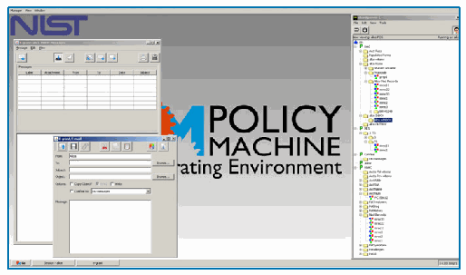
NIST Policy Machineの操作画面例。中央にPolicy Machine Operating Environmentのロゴ、左側に設定フォームや一覧、右側に管理対象の階層ツリーが表示されている。
RiskManagementFrameworktoCloud-basedFederal InformationSystems; SP 800-174, SecurityandPrivacy ControlsforCloud-basedFederalInformationSystems (both described on previous page); and on researching the most suitable approach to a structured representa-tion of the SP 800-53 Revision 4 security and privacy controls.
〔左段・続き〕SP 800-173『クラウドベースの連邦情報システムにリスク管理フレームワークを適用するためのガイド』およびSP 800-174『クラウドベースの連邦情報システムのセキュリティとプライバシー管理策』（どちらも前頁で説明）を策定した。また、SP 800-53 Revision 4のセキュリティ／プライバシー管理策を構造化して表現する最適な方法を研究した。
未レビュー訳•Co-Chaired the NIST Cloud Computing Forensic Sci-ence Working Group and led the development of cloud forensics use cases that document the top four high priority challenges identified in NISTIR 8006.
•〔左段・箇条書き〕NISTクラウドコンピューティング・フォレンジック科学作業部会の共同議長を務め、NISTIR 8006で特定された優先度の高い4課題を記録するクラウド・フォレンジックのユースケース開発を主導した。
未レビュー訳•Co-Chaired the NIST Cloud Computing Interoperability Figure 18: Policy Machine Operating Environment and Portability Working Group and addressed issues facing cloud computing with respect to interoperability In FY 2015, CSD continued the research and develop-and portability, standards, and common and function- ment of a virtualization utility for enterprise-wide controlled al terminologies. The working group’s activities were delivery of Cloud data services through Access Control. This included the publication of a revised Policy Machine ceased in mid FY 2015. specification as NISTIR 7987 Revision 1, Policy Machine: CSD staff members participated in various standards Features,Architecture,andSpecification, in September 2015. development organizations, all listed in the section of this NIST and other members of an Ad Hoc INCITS working report dedicated to international standards. group are developing a three-part Policy Machine standard In FY 2015, CSD members of the NIST cloud-computing under the title of NextGenerationAccessControl(NGAC), team continued research in key areas of cloud security, under three sub-projects: cloud interoperability and portability, cloud metrics, cloud services, and cloud Service Level Agreements (SLAs). They • Project 2193–D: NextGenerationAccessControl–Im-also presented the results of cloud-computing research and plementationRequirements,ProtocolsandAPIDefini-development, introduced the standards and specifications tions; under development, and provided the status of the NIST
•〔左段・箇条書き〕NISTクラウドコンピューティング相互運用性・可搬性作業部会の共同議長を務め、相互運用性、可搬性、標準、共通用語・機能用語に関するクラウドコンピューティングの課題に取り組んだ。同作業部会の活動は2015年度半ばに終了した。CSD職員は、国際標準の章に記載された各種標準化団体に参加した。2015年度にNISTクラウドコンピューティング・チームは、クラウドセキュリティ、相互運用性と可搬性、クラウド計測、クラウドサービス、クラウドサービスレベル契約（SLA）を主要分野として研究を続けた。研究開発の成果を発表し、策定中の標準・仕様を紹介し、NISTクラウドコンピューティング・プログラムの進捗状況を〔右段キャプション〕図18：Policy Machineの運用環境。〔右段〕2015年度、CSDはアクセス制御を通じてクラウドデータサービスを組織全体に統制して提供する仮想化ユーティリティの研究開発を続けた。これには、2015年9月の改訂Policy Machine仕様の公開が含まれる（NISTIR 7987 Revision 1『Policy Machine：機能、アーキテクチャ、仕様』）。NISTおよびINCITSの臨時作業部会メンバーは「次世代アクセス制御（NGAC）」という3部構成のPolicy Machine標準を3つのプロジェクトで策定している。Project 2193-D：Next Generation Access Control――実装要件、プロトコル、API定義；
未レビュー訳•Project 2194–D: NextGenerationAccessControl–
•〔右段・箇条書き〕Project 2194-D：Next Generation Access Control――
未レビュー訳Cloud-Computing Program in a variety of domestic and
〔左段・続き〕NISTクラウドコンピューティング・プログラムの状況を国内外のさまざまな
未レビュー訳FunctionalArchitecture; and
機能アーキテクチャー；
未レビュー訳international conferences and workshops. CSD staff
国際会議やワークショップで共有した。CSD職員は
未レビュー訳•Project 2195–D: NextGenerationAccessControl–
•〔右段・箇条書き〕Project 2195-D：Next Generation Access Control――
未レビュー訳continues to engage industry and federal agencies for
産業界や連邦機関との連携を続け、
未レビュー訳GenericOperations&AbstractDataStructures.
汎用操作および抽象データ構造。
未レビュー訳inputs and collaborative work through working groups,
作業部会を通じて意見を収集し、協働し、
未レビュー訳The Policy Machine’s architecture was the basis for the
〔右段〕Policy Machineのアーキテクチャーが、
未レビュー訳publications, and networking.
刊行物やネットワーキングを通じた活動も行っている。
未レビュー訳NGAC work within INCITS. An initial standard from Project
INCITSにおけるNGACの作業の基礎となった。Project 2194-Dの初期標準は
未レビュー訳For More Information, See:
詳細情報：
未レビュー訳2194–D was published in 2013 and is now available from the
2013年に公開され、現在は
未レビュー訳http://www.nist.gov/itl/cloud
原文のみ
ANSI e-standards store as INCITS 499, NGAC Functional Architecture (NGAC–FA). The standard resulting from
ANSIの電子標準ストアでINCITS 499『NGAC機能アーキテクチャ（NGAC-FA）』として入手できる。Project 2195-Dの標準は
未レビュー訳CONTACT:
連絡先：
未レビュー訳Project 2195–D: INCITS 526, NGACGenericOperationsand AbstractDataStructures(NGAC-GOADS), is in the approval
INCITS 526『NGAC汎用操作および抽象データ構造（NGAC-GOADS）』であり、承認手続き中で、
未レビュー訳Dr. Michaela Iorga
ミカエラ・イオルガ博士（Dr. Michaela Iorga）
未レビュー訳process and is expected to be published in the fall of 2015.
2015年秋に公開される予定である。
未レビュー訳(301) 975-8431
原文のみ
In FY 2016, CSD plans to issue a new version of its open-
〔右段〕2016年度にCSDは、オープンソース配布物の新バージョンを発行する計画であり、
未レビュー訳michaela.iorga@nist.gov
原文のみ
source distribution to reflect new features and enhanced performance, revise INCITS 499, and publish SP 800-178, A ComparisonofExtensibleAccessControlMarkupLanguage (XACML) and NGAC Attribute Based Access Control StandardsforDataServices.
新機能と性能向上を反映し、INCITS 499を改訂するとともに、SP 800-178『拡張アクセス制御マークアップ言語（XACML）とNGACデータサービス向け属性ベースアクセス制御標準の比較』を公開する予定である。
未レビュー訳5 9
原文のみ
P RO GRA M A ND PR OJ ECT ACHI EVE ME NTS | F Y 2015
プログラムおよびプロジェクトの成果｜2015会計年度
未レビュー訳THIS PUBLICATION IS AVAILABLE FREE OF CHARGE FROM: http://dx.doi.org/10.6028/NIST.SP.800-182
本資料は次の場所から無料で入手できる： http://dx.doi.org/10.6028/NIST.SP.800-182
未レビュー訳For More Information:
詳細情報：
未レビュー訳CONTACT:
連絡先：
未レビュー訳http://csrc.nist.gov/pm/
原文のみ
Dr. Ramaswamy Chandramouli (301) 975-5013
ラマスワミ・チャンドラモウリ博士（Dr. Ramaswamy Chandramouli） (301) 975-5013
未レビュー訳CONTACTS:
連絡先：
未レビュー訳mouli@nist.gov
原文のみ
Mr. David Ferraiolo
デイビッド・フェライオロ氏（Mr. David Ferraiolo）
未レビュー訳Mr. Serban Gavrila
セルバン・ガブリラ氏（Mr. Serban Gavrila）
未レビュー訳(301) 975-3046
原文のみ
(301) 975-4242
原文のみ
Cybersecurity for Emerging
〔右段見出し〕新興技術のサイバーセキュリティ
未レビュー訳david.ferraiolo@nist.gov
原文のみ
serban.gavrila@nist.gov
原文のみ
Technologies Technology is advancing at an amazing rate, with
〔右段〕技術は驚くべき速さで進歩しており、
未レビュー訳Security for a Virtualized
〔左段見出し〕仮想化インフラストラクチャーの
未レビュー訳rapid technological advances in manufacturing, healthcare,
製造、医療、ナノテクノロジー、サイバーフィジカルシステム、
未レビュー訳Infrastructure
セキュリティ
未レビュー訳nanotechnology, cyber physical systems, and the “Internet
「モノのインターネット（IoT）」などで急速な技術進歩が起きている。このプロジェクトでは、
未レビュー訳Several important components of a virtualized of things.” This project scans the environment for infrastructure need to be protected, including the developing technologies that may be currently at risk from a Hypervisor, the virtual network, the Virtual Machine (VM) cybersecurity perspective, or potentially at risk in the future and data storage. The objective of this project is to analyze as the technology improves. various configuration options in the deployment of these
〔左段〕仮想化インフラストラクチャーでは、ハイパーバイザー、仮想ネットワーク、仮想マシン（VM）、データストレージなど、重要な構成要素を保護する必要がある。本プロジェクトは、これらの〔右段・続き〕現在サイバーセキュリティ上の危険にさらされている、または技術の進歩に伴い将来危険にさらされる可能性のある新興技術を環境中から探索する。
未レビュー訳In FY 2015, CSD conducted research on cybersecurity
〔右段〕2015年度にCSDは、
未レビュー訳components and to provide guidance in the form of security
〔左段・続き〕構成要素を導入する際の各種構成オプションを分析し、セキュリティ上の推奨事項としてガイダンスを提供する。
未レビュー訳in the field of additive manufacturing or three-dimensional
〔右段・続き〕サイバーセキュリティに関する研究を、
未レビュー訳recommendations.Theprojectbuildsuponpreviousresearch
本プロジェクトは先行研究を基盤としており、
未レビュー訳(3D) printing. On February 3, 2015, CSD hosted a symposium
〔右段・続き〕2015年2月3日に、
未レビュー訳that included: (a) the identification of security requirements
（a）仮想化インフラストラクチャーをクラウドサービスとして提供する場合の各種ユースケースにおけるセキュリティ要件の特定、
未レビュー訳on Cybersecurity for Direct Digital Manufacturing, which
〔右段・続き〕『サイバーセキュリティと直接デジタル製造』に関するシンポジウムを開催した。この製造方式は
未レビュー訳for various use cases when a virtualized infrastructure is
〔左段・続き〕さまざまなユースケースにおいて仮想化インフラストラクチャーが
未レビュー訳involves fabricating physical objects from a data file using
データファイルから物理的な物体を製作する方式であり、
未レビュー訳offered for cloud services and (b) the analysis of configura-
クラウドサービスとして提供される場合、および（b）
未レビュー訳computer-controlled processes with little to no human
人の介入をほとんど、または全く伴わないコンピューター制御の工程を用いる。
未レビュー訳tion options for Secure Hypervisor Deployment and
安全なハイパーバイザー導入のための構成オプションの分析と
未レビュー訳intervention, such as in additive manufacturing and 3D
例えば、付加製造や3D
未レビュー訳providing security recommendations.
セキュリティ上の推奨事項の提示を含む。
未レビュー訳printing. During the symposium, attendees representing
プリンティングがこれに当たる。シンポジウムでは、
未レビュー訳In FY 2015, the focus of research was the secure government,industry,andacademicorganizationsdiscussed configuration of virtual networks for the protection of VMs. relevant cybersecurity risks, challenges, and solutions, as VM Security forms the primary goal in virtual network well as the implications for information and communications configuration due to the following: (a) VMs are the compute- technology supply-chain risk management. Attendees engines of the virtualized infrastructure on which mission identified several opportunities in the area and generally critical applications of the enterprise run, and (b) VMs are agreed that the time is right for building cybersecurity into the end-nodes of the virtual network. Research included the these technologies. The proceedings of the symposium following configuration areas:
〔左段〕2015年度の研究では、VMを保護するための仮想ネットワークの安全な構成に重点を置いた。仮想ネットワーク構成では、（a）VMがミッションクリティカルな企業アプリケーションを実行する仮想化基盤の計算エンジンであり、（b）仮想ネットワークのエンドノードでもあるため、VMのセキュリティを第一の目標とする。研究では以下の構成領域を扱った。〔右段・続き〕政府、産業界、学術界の参加者が、関連するサイバーセキュリティ上のリスク、課題、解決策と、情報通信技術のサプライチェーンリスク管理への影響を議論した。参加者は、この分野に複数の機会があり、これらの技術にサイバーセキュリティを組み込む時期が来ているとの認識で一致した。シンポジウムの議事録は
未レビュー訳were published in April 2015 in NISTIR 8041, Proceedingsof the Cybersecurity for Direct Digital Manufacturing (DDM)
〔右段〕2015年4月にNISTIR 8041『直接デジタル製造（DDM）のサイバーセキュリティに関するシンポジウム議事録』として公開された。
未レビュー訳•Network segmentation; Symposium.
•ネットワークのセグメンテーション；
未レビュー訳•Network path redundancy; Along the same lines, CSD researched risk management
•〔左段・箇条書き〕ネットワーク経路の冗長化；〔右段〕同様に、CSDはリスク管理を研究し、
未レビュー訳•Firewall deployment architecture; and practices for securing a set of technologies called Replication
•〔左段・箇条書き〕ファイアウォールの展開アーキテクチャ；および〔右段・続き〕レプリケーション・デバイス（RD）と呼ばれる技術群を安全に運用する実践を検討した。
未レビュー訳•VM traffic monitoring. Devices (RDs). As a result of this research, CSD published NISTIR 8023, RiskManagementforReplicationDevices, in Research included the analysis of the security April 2015 to help organizations protect the confidentiality, advantages and disadvantages of various configuration integrity, and availability of information processed, stored, options in each of these areas, forming the basis for security or transmitted on RDs. An RD is any device that reproduces recommendations. The research resulted in the following (e.g., copies, prints, or scans) documents, images, or objects publications during FY 2015: from an electronic or physical source. For the purposes
•〔左段・箇条書き〕VMトラフィックの監視。研究では、これら各領域の構成選択肢のセキュリティ上の長所と短所を分析し、推奨事項の根拠を整えた。成果として2015年度に以下を公表した。〔右段・続き〕その結果、CSDは2015年4月にNISTIR 8023『レプリケーション・デバイスのリスク管理』を公開し、RD上で処理、保存、送信される情報の機密性、完全性、可用性を組織が保護できるよう支援した。RDとは、電子的または物理的な情報源から文書、画像、物体を複製する（コピー、印刷、スキャンなど）装置である。NISTIR 8023における
未レビュー訳•The conference paper entitled, AnalysisofNetwork of NISTIR 8023, RDs include copiers, printers, 3D printers, SegmentationTechniquesinCloudDataCenters; and scanners, and 3D scanners, as well as multifunction
•〔左段・箇条書き〕会議論文『クラウドデータセンターにおけるネットワーク・セグメンテーション技法の分析』、および
未レビュー訳•Draft SP 800-125B, SecureVirtualNetworkConfigura- machines when used as a copier, printer, or scanner. RDs in use within organizations run the gamut in terms of age and tionforVirtualMachine(VM)Protection. functionality, with some devices being relatively simple and others quite complex and sophisticated.
•〔左段・箇条書き〕ドラフトSP 800-125B『仮想マシン（VM）保護のためのセキュアな仮想ネットワーク構成』。〔右段・続き〕RDにはコピー機、プリンター、3Dプリンター、スキャナー、3Dスキャナーのほか、コピー機、プリンター、スキャナーとして使われる複合機が含まれる。組織で使われるRDは、年式や機能の幅が広く、比較的単純な機器から非常に複雑で高度な機器まである。
未レビュー訳6 0
原文のみ
COMP U TER SECURITY DI VI SION ANNUAL REP ORT | 2 01 5 THIS PUBLICATION IS AVAILABLE FREE OF CHARGE FROM:
コンピュータセキュリティ部門 年次報告書｜2015 本資料は次の場所から無料で入手できる：
未レビュー訳http://dx.doi.org/10.6028/NIST.SP.800-182
原文のみ
In FY 2016, NIST will continue to scan the environment is to help organizations prepare for an exchange of cyber for emerging technologies, such as 3D printers and threat information, both consuming cyber threat information nanotechnology, which may benefit from guidance on how from external sources and producing information for other to manage, implement, or build-in cybersecurity principles organizations to use. Because each organization may have and tools.
〔左段〕2016年度にNISTは、3Dプリンターやナノテクノロジーなどの新興技術に関する調査を続ける。こうした技術では、サイバーセキュリティの原則やツールを管理・実装・組み込む方法についての指針が役立つ可能性がある。〔右段・前頁から続く説明〕この指針は、組織がサイバー脅威情報を交換する準備を支援する。組織は外部情報源から脅威情報を受け取るとともに、他の組織が利用できる情報を提供する。
未レビュー訳substantially different capabilities for detecting threats, responding to attacks, diagnosing causes, and handling sensitive incident-related information, this guidance is
〔右段・続き〕脅威の検知、攻撃への対応、原因の診断、インシデント関連の機微情報の取り扱いに関する能力は組織ごとに大きく異なる。この指針は、そうした組織間の違いがあっても、協力してサイバー脅威情報を交換できるよう支援することを目的とする。
未レビュー訳CONTACT:
連絡先：
未レビュー訳intended to help organizations collaborate and exchange
〔右段・続き〕組織が協力し、サイバー脅威情報を交換できるようにする。
未レビュー訳Ms. Celia Paulsen
セリア・ポールセン氏（Ms. Celia Paulsen）
未レビュー訳cyber threat information despite these organizational
〔右段・続き〕組織間の能力差があっても、
未レビュー訳(301) 975-5981
原文のみ
differences.
情報交換を行えるようにする。
未レビュー訳celia.paulsen@nist.gov
原文のみ
CSD’s cyber threat information sharing initiative is focused on providing guidance on how an organization can
〔右段〕CSDのサイバー脅威情報共有イニシアチブは、組織が
未レビュー訳Cyber Threat Information Sharing
サイバー脅威情報の共有
未レビュー訳establish information sharing and coordination capabilities
既存のサイバーセキュリティ対策を強化・補完する情報共有・調整能力を構築する方法についてガイダンスを提供することに重点を置く。
未レビュー訳As cyber attacks increase in both sophistication and that enhance or augment their existing cybersecurity frequency, it is important to collect and analyze cyber threat practices. The guidance covers threat-informed detection, information from a variety of internal and external sources, protection and response capabilities; data privacy and and use it to develop, enhance, and deploy proactive, sensitivity; data collection and retention practices; the use of threat-informed, cyber defense capabilities. Cyber threat open standards for information exchange; de-identification information includes indicators (i.e., artifacts or observable and anonymization; and guidance on how an organization events that suggest that an attack is imminent, that an can establish, participate in, and maintain coordination and attack is underway, or that a compromise may have already information sharing relationships. The guidance will help occurred); information about the tactics, techniques, and incident responders, network defenders, and operations procedures (TTPs) of actors; recommended courses of personnel consider what information is sharable, the action, and other information that is used to characterize circumstances under which sharing is permitted, with whom threats. Because threat actors often use the same TTPs the information may be shared, and how the information against multiple targets, exchanging cyber threat informa- should be protected. tion allows organizations to leverage the collective
〔左段〕サイバー攻撃が高度化し頻発する中、さまざまな内部・外部情報源からサイバー脅威情報を収集・分析し、それを用いて先を見越した脅威情報に基づくサイバー防御能力を開発・強化・展開することが重要である。脅威情報には、攻撃の切迫、進行中、または侵害発生を示す指標（痕跡や観測可能な事象）、攻撃者の戦術・技法・手順（TTP）、推奨される対応策、脅威の特徴を示すその他の情報が含まれる。脅威アクターは複数の標的に同じTTPを使うことが多いため、情報交換により組織は共有コミュニティ全体の知識、経験、分析能力を活用できる。〔右段〕このガイダンスは、既存のサイバーセキュリティ対策を強化・補完する。脅威情報に基づく検知、防御、対応能力、データのプライバシーと機微性、収集・保持の実務、情報交換のオープン標準、非識別化・匿名化、組織が調整や情報共有関係を確立・参加・維持する方法を扱う。インシデント対応者、ネットワーク防御担当者、運用担当者が、共有可能な情報、共有が認められる状況、共有相手、情報の保護方法を検討できるよう支援する。
未レビュー訳In early FY 2016, CSD plans to release the second draft
〔右段〕2016年度初頭にCSDは、
未レビュー訳knowledge, experience, and analysis capabilities of their
〔左段・続き〕同僚組織の知識、経験、分析能力を活用し、共有コミュニティ全体の認識と安全性を高める。
未レビュー訳to Draft SP 800-150, based on the input received during the
ドラフトSP 800-150の第2版を、
未レビュー訳peers, thereby increasing the overall awareness and security
共有コミュニティ全体の脅威認識とセキュリティを高める。サイバー脅威情報を交換することで、
未レビュー訳public comment period of the first draft, which was released
初回ドラフトに対するパブリックコメント期間中に寄せられた意見を踏まえて公開する予定である。
未レビュー訳of an entire sharing community. Through the exchange of
組織は自らの脅威環境をより包括的に理解できる。
未レビュー訳October 2014.
初回ドラフトは2014年10月に公開された。
未レビュー訳cyber threat information, organizations can gain a more complete understanding of their threat environment by
そのため、各組織は自らの観測結果を他者の観測結果と照合する。ある組織が、他組織に影響し得る攻撃を観測した場合、
未レビュー訳CONTACTS:
連絡先：
未レビュー訳correlating their observations with those of others. When one organization observes an attack that may Mr. Lee Badger
〔左段・続き〕攻撃が他組織にも影響する、または攻撃に利用される可能性があるとき、情報共有と調整により〔右段連絡先〕リー・バジャー氏（Mr. Lee Badger）
未レビュー訳Mr. David Waltermire
デイビッド・ウォルターマイア氏（Mr. David Waltermire）
未レビュー訳affect or be used against other organizations, information (301) 975-3176
他の組織に影響する、または攻撃に利用される可能性がある場合、情報の
未レビュー訳(301) 975-3390
原文のみ
sharing and coordination can make it possible to reduce the lee.badger@nist.gov david.waltermire@nist.gov impactoftheattack,speedrecoveryoperations,andmaintain a higher level of operational security. By integrating cyber Mr. Christopher Johnson threat information sharing into its existing cybersecurity and (301) 975-3247 risk management practices, an organization can reduce the christopher.johnson@nist.gov likelihood or mitigate the impact of successful cyber attacks, more effectively protect its systems, detect and anticipate the actions of threat actors, respond to cyber attacks, and recover to rapidly deploy effective countermeasures. In FY 2014, CSD worked with DHS to develop SP 800-150, Guide to Cyber Threat Information Sharing (Draft), which provides guidance to organizations seeking to establish and participate in cyber threat information sharing communities. The draft publication was released for public comment on October 28, 2014. The goal of this publication
〔左段・続き〕共有と調整によって、攻撃の影響を抑え、復旧を迅速化し、高い運用セキュリティを維持できる。サイバー脅威情報の共有を既存のサイバーセキュリティおよびリスク管理の実務に組み込むことで、組織は攻撃成功の可能性や影響を低減し、システムをより効果的に保護し、脅威アクターの行動を検知・予測し、攻撃に対応し、効果的な対抗策を迅速に展開して復旧できる。2014年度にCSDはDHSと協力し、ドラフトSP 800-150『サイバー脅威情報共有ガイド』を作成した。同文書は、サイバー脅威情報共有コミュニティの設立・参加を目指す組織に指針を示す。ドラフトは2014年10月28日にパブリックコメント向けに公開された。本書の目的は、〔右段連絡先〕lee.badger@nist.gov；david.waltermire@nist.gov；クリストファー・ジョンソン博士（Dr. Christopher Johnson） (301) 975-3247 christopher.johnson@nist.gov
未レビュー訳6 1
原文のみ
P RO GRA M A ND PR OJ ECT ACHI EVE ME NTS | F Y 2015
プログラムおよびプロジェクトの成果｜2015会計年度 本資料は次の場所から無料で入手できる：
未レビュー訳THIS PUBLICATION IS AVAILABLE FREE OF CHARGE FROM: http://dx.doi.org/10.6028/NIST.SP.800-182
原文のみ

認証方式の適合性フレームワーク。四つの要素はSecurity（セキュリティ）、Deployability（展開可能性）、Usability（使いやすさ）、Manageability（管理容易性）。
The Ontology of Authentication Over the past 30 years, NIST has been at the forefront of recommending best practices for authentication. Recommendations have included the usage of passwords in enterprises, biometrics, and Public Key Infrastructure (PKI) solutions. In FY 2015, CSD researched the classification of general authentication features. This investigation was prompted by the general call to move away from passwords towards the growing number of alternative authentication methods (e.g. biometrics, smart cards, etc.). In the early part of this investigation, it became clear that an ontology of authentication was needed. A draft taxonomy (see Figure 19) was developed to better describe current and emerging authentication mechanisms. This taxonomy covers a wide assortment Figure 20: Suitability Framework for Authentication of commonly used methods to cover human-machine,
〔左段見出し〕認証のオントロジー。過去30年間、NISTは認証のベストプラクティスの推奨を主導してきた。企業向けパスワード、生体認証、公開鍵基盤（PKI）の利用などを推奨してきた。2015年度にCSDは、一般的な認証機能の分類を研究した。これは、パスワードから、生体認証やスマートカードなど増え続ける代替認証手段へ移行するという要請を受けたものである。調査の初期段階で、認証のオントロジーが必要だと明らかになった。現在および新たな認証メカニズムをより適切に表すため、分類案（図19）を作成した。この分類は広範な一般的手法を扱い、人間と機械の間の認証、〔右段caption〕図20：認証の適合性フレームワーク。
未レビュー訳metrics include authentication strength and the suitability of
〔右段〕認証の強度と、
未レビュー訳machine-machine, and attribute attestation. It does not
〔左段・続き〕機械同士の方式や属性アテステーションも含む。ただし、
未レビュー訳the method to the environment. The strength measurements
〔右段・続き〕手法が環境に適合するかも評価する。認証強度の測定には、
未レビュー訳address identity management - which typically happens
〔左段・続き〕通常は認証前に行われるアイデンティティ管理や、
未レビュー訳should include security and usability. This provides a way
〔右段・続き〕セキュリティと使いやすさを含める必要がある。これは、
未レビュー訳before authentication occurs, or access control - which
認証後に通常行われるアクセス制御とは区別される。
未レビュー訳to monitor a common complaint of designers – usability
〔右段・続き〕設計者がよく指摘する懸念、すなわち
未レビュー訳typically happens after.
アクセス制御は通常、認証後に行われる。
未レビュー訳being a tradeoff to security. However, security and usability
使いやすさはセキュリティとトレードオフになるという問題がある。しかし、セキュリティと使いやすさだけでは、
未レビュー訳As a result of this research, several patterns and gaps
〔左段〕この研究から、いくつかのパターンと課題が特定された。
未レビュー訳is not sufficient to address the suitability of implementing
〔右段・続き〕特定の認証方式を特定の
未レビュー訳were identified. For example, there are similar technologies
〔左段・続き〕これらの課題を特定した。たとえば、複数の認証方式を
未レビュー訳a particular authentication mechanism in a particular
〔右段・続き〕環境に導入する適合性を評価するには不十分である。
未レビュー訳used to support the various mechanisms. One of the greatest
それぞれの方式に利用できる類似技術がある。最大の
未レビュー訳environment. By adding in measures for deployability and
〔右段・続き〕展開可能性や管理容易性の指標を加えれば、
未レビュー訳challenges is in defining a set of common metrics to assess
課題の一つは、認証技術を評価する共通指標を定義することである。
未レビュー訳manageability it should be possible to address the suitability
特定環境における認証方式の適合性を評価できると考えられる。
未レビュー訳authentication technologies. Two areas identified as needing
認証技術を評価する。追加が必要とされた2領域は
未レビュー訳of an authentication mechanism.
認証方式の適合性評価である。
未レビュー訳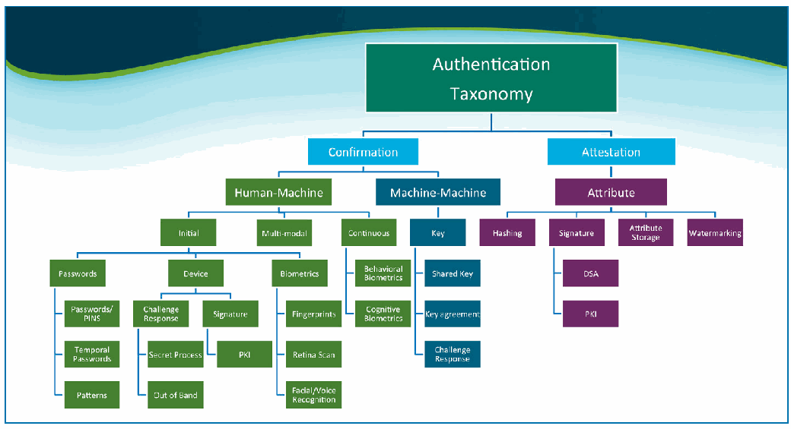
認証分類案。最上位「認証分類」は「確認」と「アテステーション」に分岐。確認は「人間–機械」（初期、マルチモーダル、継続的）と「機械–機械」（鍵）に分岐する。初期認証には、パスワード（パスワード/PIN、時間ベースのパスワード、パターン）、デバイス（チャレンジ応答［秘密の手順、帯域外］、署名［PKI］）、生体認証（指紋、網膜スキャン、顔／音声認識）がある。継続的認証には行動バイオメトリクスと認知バイオメトリクスがある。機械間の鍵認証には共有鍵、鍵合意、チャレンジ応答がある。アテステーションの属性はハッシュ、署名（DSA、PKI）、属性ストレージ、電子透かしに分岐する。
Figure 19: Draft Authentication Taxonomy
図19：認証分類案
未レビュー訳6 2
原文のみ
COMP U TER SECURITY DI VI SION ANNUAL REP ORT | 2 01 5 THIS PUBLICATION IS AVAILABLE FREE OF CHARGE FROM:
コンピュータセキュリティ部門 年次報告書｜2015 本資料は次の場所から無料で入手できる：
未レビュー訳http://dx.doi.org/10.6028/NIST.SP.800-182
原文のみ
In the next few years, NIST CSD will work with the NIST’s work in mobile security has earned the 2014 community to identify and address common areas of Government Computer News (GCN) award for Information authentication requirements to create a framework for Technology Excellence and the 2013 U.S. Department of researching and developing authentication mechanisms Commerce Gold Medal Award. In FY 2016, NIST will be using this taxonomy. As shown in Figure 20 (previous page), transitioning AppVet to the Department of Homeland this framework will support integration of security with Security as part of their Carwash program, which provides deployability, usability and manageability of authentication. government development teams with a continuous This work will also be used to better identify the needs integration build, testing, source code management, and and dependencies for proper interaction with identity issue tracking system. management and access control processes.
〔左段〕今後数年間、NIST CSDは関係者と協力して、共通する認証要件を特定・解決し、この分類を用いて認証メカニズムを研究・開発する枠組みを作る。前頁の図20に示すように、この枠組みは認証におけるセキュリティ、展開可能性、使いやすさ、管理容易性の統合を支援する。また、アイデンティティ管理やアクセス制御プロセスと適切に連携するためのニーズや依存関係を明確にする。〔右段〕NISTのモバイルセキュリティ研究は、2014年のGovernment Computer News（GCN）Information Technology Excellence賞と、2013年の米国商務省金賞を受賞した。2016年度にNISTはAppVetを国土安全保障省へ移管する。Carwashプログラムの一環として、AppVetは政府の開発チームに継続的インテグレーション、ビルド、テスト、ソースコード管理、課題追跡のシステムを提供する。
未レビュー訳CONTACTS:
〔右段〕連絡先：
未レビュー訳CONTACT:
〔左段〕連絡先：
未レビュー訳Dr. Steve Quirolgico
スティーブ・キロルジコ博士（Dr. Steve Quirolgico）
未レビュー訳Dr. Jeffrey Voas
ジェフリー・ヴォース博士（Dr. Jeffrey Voas）
未レビュー訳Dr. Kim Schaffer
キム・シェイファー博士（Dr. Kim Schaffer）
未レビュー訳(301) 975-8426
原文のみ
(301) 975-6622
原文のみ
(301) 975-8375
原文のみ
steveq@nist.gov
原文のみ
jeff.voas@nist.gov
原文のみ
kim.schaffer@nist.gov
原文のみ
M O B I L E S E C U R I T Y
モバイルセキュリティ
未レビュー訳S T R E N G T H E N I N G I N T E R N E T
〔右段見出し〕インターネットセキュリティの
未レビュー訳S E C U R I T Y
強化
未レビュー訳Smart phones have become both ubiquitous and indispensable. Although these mobile devices are relatively
〔左段〕スマートフォンは広く普及し、不可欠なものとなった。これらのモバイル端末は比較的
未レビュー訳USGv6: A Technical Infrastructure to
〔右段小見出し〕USGv6：IPv6導入を
未レビュー訳small and inexpensive, they can be used for voice calls, simple text messages, sending and receiving emails, Assist IPv6 Adoption browsing the web, online banking and e-commerce, social Internet Protocol (IP) Version 6 (IPv6) is an updated networking, and many functions once limited to laptop version of the current Internet Protocol, IPv4. The primary and desktop computers. Smart phones and tablet devices motivations for the development of IPv6 were to increase have specialized built-in hardware, such as cameras, the number of unique IP addresses available for use and to accelerometers, Global Positioning System (GPS) receivers, handle the needs of new Internet applications and devices. andremovablemediareaders.Theyalsoemployawiderange In addition, IPv6 was designed with the following goals: of wireless interfaces, including infrared, Wireless Fidelity increased ease of network management and configuration, (Wi-Fi), Bluetooth, Near Field Communications (NFC), and expandable IP headers, improved mobility and security, and one or more types of cellular interfaces that provide network the quality of service controls. IPv6 has been, and continues
〔左段・続き〕小型で安価であり、音声通話、簡易テキストメッセージ、メール送受信、Web閲覧、オンラインバンキングや電子商取引、ソーシャルネットワーキングなど、かつてノートPCやデスクトップPCに限られていた多くの機能を実行できる。スマートフォンやタブレットにはカメラ、加速度計、GPS受信機、リムーバブルメディアリーダーなど専用ハードウェアが内蔵される。また、赤外線、Wi-Fi、Bluetooth、近距離無線通信（NFC）、携帯電話通信など、さまざまな無線インターフェースも利用する。〔右段・続き〕支援する技術基盤。インターネットプロトコル（IP）バージョン6（IPv6）は、現在のIPv4を更新した版である。IPv6開発の主な動機は、利用可能な一意のIPアドレス数を増やし、新しいインターネット・アプリケーションや機器の要求に対応することだった。さらにIPv6は、ネットワーク管理・構成の容易化、拡張可能なIPヘッダー、モビリティとセキュリティの向上、サービス品質の改善を目標に設計された。IPv6はこれまで、そして今後も
未レビュー訳to be, developed and defined by the IETF.
IETFによって開発・定義される。
未レビュー訳connectivity across the globe. Smart phones present new capabilities, but also a FY 2012 was a significant year for the deployment number of new security and privacy challenges. One such of IPv6 in the United States Government (USG). OMB’s challenge concerns securing smartphone applications. To Memo of September 10, 2010, TransitiontoIPv6, required address this issue, NIST is conducting research in software- all government agencies to “upgrade public/external facing assurance methodologies for smart phone applications (or servers and services (e.g., web, email, Domain Name System “apps”) and is working with other government agencies and (DNS), and Internet Service Provider (ISP) services) to industry to bridge the security gaps present with today’s operationally use IPv6 by the end of FY 2012.” NIST worked smart phones. For example, NIST developed the AppVet with the U.S. Government IPv6 (USGv6) Task Force and with mobile app-vetting system and framework for managing individual government agencies to achieve this goal. NIST an organization’s app-vetting process with respect to the developed an online monitor to demonstrate which high-organization’s security and privacy policies. This system was level government domains have met this goal with respect used by the Defense Advanced Research Projects Agency to Domain Name System (DNS) services, email, web servers, (DARPA)tovetappspriortobeingdeployedonthousandsof and Domain Name System Security Extensions (DNSSEC). mobile devices for use in Afghanistan, the 2013 Presidential In FY 2013, NIST and OMB continued to use this monitor to
〔左段〕それらは世界中でネットワーク接続を提供する。スマートフォンは新たな機能をもたらす一方、多くのセキュリティおよびプライバシー上の課題も生む。課題の一つはスマートフォン・アプリケーションの安全確保である。NISTはアプリ（apps）のソフトウェア保証手法を研究し、他の政府機関や産業界と協力して現在のスマートフォンにあるセキュリティ上の弱点を補う。たとえば、組織のセキュリティ・プライバシーポリシーに沿ってアプリを審査するAppVetシステムと審査プロセス管理フレームワークを開発した。これは国防高等研究計画局（DARPA）が、アフガニスタンや2013年の大統領就任式で使用する数千台の端末にアプリを展開する前の審査に利用した。〔右段〕2012年度は米国政府（USG）におけるIPv6導入の重要な年だった。2010年9月10日付のOMB覚書『IPv6への移行』は、すべての政府機関に対し、2012年度末までに公開・外部向けサーバーおよびサービス（Web、電子メール、DNS、ISPサービスなど）をIPv6で運用するよう求めた。NISTはUSGv6タスクフォースおよび各政府機関と協力して目標達成を支援した。政府の主要ドメインがDNS、電子メール、Webサーバー、DNSSECに関する目標を達成したかを示すオンライン監視ツールも開発した。2013年度にはNISTとOMBがこの監視ツールを継続利用し、
未レビュー訳measure USGv6 compliance with OMB’s requirement.
USGv6がOMB要件に準拠しているかを測定した。
未レビュー訳Inauguration, and the 2014 Boston Marathon.
〔左段・続き〕2014年のボストン・マラソンでも利用された。
未レビュー訳6 3
原文のみ
P RO GRA M A ND PR OJ ECT ACHI EVE ME NTS | F Y 2015
プログラムおよびプロジェクトの成果｜2015年度
未レビュー訳THIS PUBLICATION IS AVAILABLE FREE OF CHARGE FROM: http://dx.doi.org/10.6028/NIST.SP.800-182
原文のみ
Additional OMB IPv6 requirements were mandated • Published a conference paper for Big Data Processing for FY 2014. Agencies were required to “upgrade internal access control and distributed systems; and client applications that communicate with public Internet
〔左段〕2014年度にはOMBがIPv6に関する追加要件を定めた。政府機関は、公開インターネットに接続する内部クライアントアプリケーションを〔右段・箇条書き〕ビッグデータ処理、アクセス制御、分散システムに関する会議論文を発表した。
未レビュー訳•Studied efficient test case generation methods for
•〔右段・箇条書き〕属性ベースアクセス制御（ABAC）ポリシーの検証に向け、効率的なテストケース生成方法を研究した。
未レビュー訳servers and supporting enterprise networks to operationally
〔左段・続き〕公開インターネットサーバーおよび企業ネットワークをIPv6で実運用するよう
未レビュー訳Attribute Based Access Control (ABAC) policy testing.
〔右段・続き〕ABACポリシーのテストである。
未レビュー訳use IPv6 by the end of FY 2014.” NIST developed online
2014年度末までに求めた。NISTはオンライン
未レビュー訳In FY 2016, CSD will continue the above research. CSD
〔右段〕2016年度にCSDは上記の研究を継続する。プロジェクトでは、次の成果を見込んでいる。
未レビュー訳diagnostic tools to help agencies verify compliance to this
診断ツールを開発し、各機関がこの要件への
未レビュー訳expects that this project will:
〔右段・続き〕このプロジェクトでは、次の成果を見込んでいる。
未レビュー訳requirement.
準拠を確認できるようにした。
未レビュー訳•Promote (or accelerate) the adoption of community
•〔右段・箇条書き〕共有資源を活用するコミュニティ・コンピューティングの
未レビュー訳The NIST IPv6 Test Program, whose goal is to provide
〔左段〕NIST IPv6テストプログラムは、IPv6製品の適合性と相互運用性を保証することを目的とし、現在も運用を続けている。
未レビュー訳computing that utilizes the power of shared resources
導入を促進（または加速）し、
未レビュー訳assurance on IPv6 product conformance and interoperability,
〔左段・続き〕IPv6製品の適合性と相互運用性を保証することを目的とし、
未レビュー訳and common trust-management schemes;
〔右段・続き〕共通の信頼管理方式の普及を図る。
未レビュー訳continues to operate. In FY 2015, NIST continued to manage and evolve the USGv6 Test Program and to help federal • Provide guidance for implementing access control agencies fulfill OMB mandates and monitor compliance to models and mechanisms for standalone or network those mandates. In FY 2016, NIST is planning to update SP systems; 500-267, AProfileforIPv6intheU.S.Government,Version
〔左段〕2015年度にNISTはUSGv6テストプログラムを管理・発展させ、OMBの要件を満たし遵守状況を監視するため連邦機関を支援した。2016年度にNISTはSP 500-267『米国政府におけるIPv6プロファイル』Version〔右段・箇条書き〕スタンドアロンまたはネットワーク接続システム向けのアクセス制御モデルと機構の実装ガイダンスを提供する。
未レビュー訳•Increase the security and safety of static (connected)
•〔右段・箇条書き〕静的（接続型）分散システムのセキュリティと安全性を高めるため、
未レビュー訳1.0.This document is the basis for the USGv6 Test Program
1.0に改訂する予定である。
未レビュー訳distributed systems by applying the testing and verifi-
〔右段・箇条書き・続き〕試験・検証
未レビュー訳and for USG IPv6-compliant device evaluation and purchase.
この文書はUSGv6テストプログラムの基盤であり、USGのIPv6準拠機器の評価・調達にも使われる。NISTのプログラムはCSDと
未レビュー訳cation tool for the AC policies;
〔右段・箇条書き・続き〕ツールをACポリシーに適用する。
未レビュー訳The NIST program is a collaboration between CSD and the
ITL先進ネットワーク技術部門との協力により実施される。
未レビュー訳•Assist system architects, security administrators, and
•〔右段・箇条書き〕システムアーキテクト、セキュリティ管理者、
未レビュー訳ITL Advanced Networking Technology Division.
詳細情報：
未レビュー訳security managers whose expertise is related to access
アクセス制御または権限ポリシーを専門とするセキュリティ管理者を支援し、
未レビュー訳For More Information, See:
詳細情報：
未レビュー訳control or privilege policy in managing their systems
〔右段・続き〕システム管理での制約と、
未レビュー訳http://www.nist.gov/itl/antd/usgv6.cfm
原文のみ
and in learning the limitations and practical approaches for their applications; and
各アプリケーションにおける現実的な適用方法を理解することも支援する。さらに、
未レビュー訳CONTACTS:
連絡先：
未レビュー訳•Provide accurate and efficient fault detection and correction technology for implementing AC rules and
•〔右段・箇条書き〕ACルールおよび
未レビュー訳Ms. Sheila Frankel
シーラ・フランケル氏（Ms. Sheila Frankel）
未レビュー訳Mr. Douglas Montgomery
ダグラス・モンゴメリー氏（Mr. Douglas Montgomery）
未レビュー訳policies.
ポリシーを実装するための、正確で効率的な障害検知・訂正技術を提供する。
未レビュー訳(301) 975-3297
原文のみ
(301) 975-3630
原文のみ
sheila.frankel@nist.gov
原文のみ
dougm@nist.gov
原文のみ
Figure 21 illustrates the application of access control and privilege management within and among organizations.
〔右段〕図21は、組織内および組織間におけるアクセス制御と権限管理の適用を示す。
未レビュー訳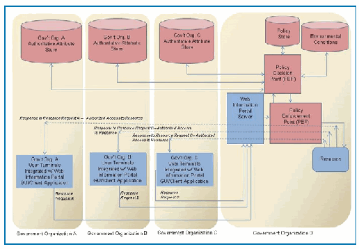
政府機関A～DにまたがるPolicy Machine型アクセス制御・権限管理の構成図。各組織の属性ストアとアプリケーション、Policy Decision Point（PDP）、Policy Enforcement Point（PEP）、ポリシーストア、環境条件、リソースの関係、および組織間の要求・応答経路を示す。
A C C E S S C O N T R O L P R O J E C T S
アクセス制御プロジェクト
未レビュー訳Access Control and Privilege Management Research With the advance of current computing technologies and the diverse environments, access control issues, such as situational awareness, trust management, preservation of privacy, and privilege-management systems, are becoming increasingly complex. Practical and conceptual guidance for these topics is needed. In FY 2015, the following research was accomplished for this project:
アクセス制御と権限管理の研究：現在のコンピューティング技術の進歩と多様な環境の広がりに伴い、状況認識、信頼管理、プライバシー保護、権限管理システムなどのアクセス制御上の課題はますます複雑になっている。これらのテーマには、実践的かつ概念的な指針が必要である。2015年度には、本プロジェクトで次の研究を実施した。
未レビュー訳•Enhanced the unified enforcement mechanism of data Figure 21: Access Control and Privilege Management services for use by a Policy Machine (PM) for an enter-prise computing environment;
•〔左段・箇条書き〕Policy Machine（PM）が企業コンピューティング環境で使用するデータの統合的な強制メカニズムを強化した。〔右段・図21キャプション〕アクセス制御と権限管理のサービス。
未レビュー訳CONTACTS:
連絡先：
未レビュー訳•Enhanced the capabilities of the Access Control Policy Dr. Vincent Hu Mr. David Ferraiolo Tool (ACPT); (301) 975-4975 (301) 975-3046
•〔左段・箇条書き〕アクセス制御ポリシーツール（ACPT）の機能を強化した。〔右段・連絡先〕Dr. Vincent Hu（電話：301-975-4975）、Mr. David Ferraiolo（電話：301-975-3046）。
未レビュー訳•Enhanced the capabilities of the Access Control Rule vhu@nist.gov david.ferraiolo@nist.gov Logic Circuit Simulation (ACRLC) tool;
•〔左段・箇条書き〕アクセス制御ルール論理回路シミュレーション（ACRLC）ツールの機能を強化した。〔右段・連絡先〕vhu@nist.gov、david.ferraiolo@nist.gov。
未レビュー訳•Studied an Attribute Assurance mechanism for access Mr. Rick Kuhn authentication and authorization; (301) 975-3337
•〔左段・箇条書き〕アクセス認証および認可のための属性保証メカニズムを研究した。〔右段・連絡先〕Mr. Rick Kuhn（電話：301-975-3337）。
未レビュー訳6 4
原文のみ
kuhn@nist.gov
原文のみ
原文のみ
COMP U TER SECURITY DI VI SION ANNUAL REP ORT | 2 01 5 THIS PUBLICATION IS AVAILABLE FREE OF CHARGE FROM:
コンピュータセキュリティ部門 年次報告書｜2015年 本出版物は次から無料で入手可能：
未レビュー訳http://dx.doi.org/10.6028/NIST.SP.800-182
原文のみ
To address the issue, CSD developed the Access Control
〔右段〕この課題に対処するため、CSDはアクセス制御
未レビュー訳Conformance Verification for Access
〔左段・見出し〕アクセス制御ポリシーの適合性検証
未レビュー訳Property Tool (ACPT), shown in Figure 22 (next page),
〔右段・続き〕プロパティツール（ACPT）を開発した（図22、次ページ参照）。
未レビュー訳Control Policies Access control (AC) systems are among the most which allows a user to compose, verify, test, and generate critical network security components. Faulty policies, access control policies. CSD also researched the AC Rule misconfigurations, or flaws in software implementation can Logic Circuit Simulation (ACRLCS) technique, which enables result in serious vulnerabilities. The specification of access the AC authors to detect a fault when the fault-causing AC control policies is often a challenging problem. Often, a rule is added to the policy, so the fix can be implemented in system’s privacy and security are compromised due to the real time before adding other rules that further complicate misconfiguration of access control policies, instead of the the detecting effort, rather than checking by retracing the failure of cryptographic primitives or protocols. This problem interrelations between rules after the policy is completed. becomes increasingly severe as software systems become In FY 2015, CSD accomplished the following: more and more complex, and are deployed to manage a large
〔左段・見出し末尾〕ポリシーの適合性検証。〔左段〕アクセス制御（AC）システムは、ネットワークセキュリティを支える最も重要な構成要素の一つである。ポリシーの不備、設定ミス、ソフトウェア実装の欠陥は深刻な脆弱性を引き起こし得る。アクセス制御ポリシーの仕様化はしばしば難しい。多くの場合、暗号プリミティブやプロトコルの不具合ではなく、アクセス制御ポリシーの設定ミスによってシステムのプライバシーとセキュリティが損なわれる。この問題は、ソフトウェアシステムが複雑化し、大量の機微情報やリソースを精緻な構造で管理するために展開されるほど深刻になる。〔右段・続き〕これにより利用者はアクセス制御ポリシーを作成、検証、試験し、生成できる。CSDは、ACルール論理回路シミュレーション（ACRLCS）技術も研究した。この技術では、原因となるACルールがポリシーに追加された時点でルール作成者が欠陥を検出できるため、他のルールを加えて検出をさらに難しくする前にリアルタイムで修正できる。ポリシー完成後にルール間の関係をたどって調べる方法を避けられる。2015年度にCSDは次の成果を上げた。
未レビュー訳•Published a conference paper for policy tool evaluation
•〔右段・箇条書き〕ポリシーツールの評価に関する会議論文を発表した
未レビュー訳amount of sensitive information and resources organized
〔左段・続き〕機微情報とリソースの大きな集合を
未レビュー訳and analysis: EvaluatingandCapabilityandPerfor-
〔右段・続き〕および分析：「Evaluating Capability and Perfor-
未レビュー訳into sophisticated structures. Identifying discrepancies
〔左段・続き〕高度に構造化して整理する。
未レビュー訳manceofAccessControlPolicyVerificationTools;
mance of Access Control Policy Verification Tools」。
未レビュー訳between policy specifications and their properties (their intended function) is crucial because correct implementation • Developed verification oracles for policy test bench-and enforcement of policies by applications is based on the marking, which embed policy faults for committee, premise that the policy specifications are correct. As a result, university, hospital, and bank policy test scenarios; policy specifications must undergo rigorous verification and • Developed a Small Business Innovation Research validation through systematic testing to ensure that the (SBIR) solicitation for access control tool development; policy specifications truly encapsulate the desires of the
〔左段・続き〕ポリシー仕様とその性質（意図する機能）との不一致を特定することは重要である。アプリケーションによるポリシーの正しい実装と適用は、ポリシー仕様が正しいという前提に基づくためである。そのため、仕様がポリシー作成者の意図を正確に表していることを確認するには、体系的な試験による厳格な検証と妥当性確認が必要となる。〔右段・箇条書き〕委員会、大学、病院、銀行のポリシー試験シナリオにポリシー欠陥を埋め込む、ポリシーテストベンチマーク用の検証オラクルを開発した。〔右段・箇条書き〕アクセス制御ツール開発に関する中小企業イノベーション研究（SBIR）の公募を作成した。
未レビュー訳•Enhanced the ACRLCS − the Access Control Rule Logic
•〔右段・箇条書き〕ACRLCS（アクセス制御ルール論理回路
未レビュー訳policy authors.
〔左段・続き〕ポリシー作成者の意図を正確に反映していること。
未レビュー訳Circuit Simulation System;
シミュレーションシステム）を強化した。
未レビュー訳To formally and precisely capture the security properties
〔左段〕アクセス制御（AC）が従うべきセキュリティ特性を形式的かつ正確に捉えるため、アクセス制御モデルは通常、ポリシーとメカニズムの間にある大きな抽象度の隔たりを埋める目的で記述される。したがって、アクセス制御モデルは、曖昧さのない正確な表現を提供し、セキュリティ要件の設計と実装の参照となる。アクセス制御ポリシーにおいてモデルが正しく表現されているか、またモデルの特性が満たされているかを検証する技法が必要である。
未レビュー訳•Published a conference paper for policy test case gen-
•〔右段・箇条書き〕ポリシーのテストケース生成に関する会議論文を発表した：
未レビュー訳that AC should adhere to, access control models are usually
〔左段・続き〕通常、記述される。
未レビュー訳eration: Pseudo-exhaustiveTestingofAttribute-Based
〔右段・論文題名冒頭〕「Pseudo-exhaustive Testing of Attribute-Based
未レビュー訳written to bridge the rather wide gap in abstraction between
〔左段・続き〕ポリシーとメカニズムとの間にある大きな抽象度の隔たりを
未レビュー訳AccessControlRules;
Access Control Rules」。
未レビュー訳policy and mechanism. Thus, an access-control model provides unambiguous and precise expression, as well as • Worked with industrial and academic organizations in a reference for the design and implementation of security exploring new capabilities that helped to improve the requirements. Techniques are required for verifying whether usability of the AC tools (ACPT and ACRLCS), resulting an access-control model is correctly expressed in the access- in additional usage; ACPT was downloaded by 343 control policies, and whether the properties are satisfied in users and organizations; and, the model.
〔左段・続き〕一義的かつ正確に表現でき、セキュリティ要件の設計と実装の参照となる。アクセス制御モデルやポリシー検証に関する研究の多くは特定のモデル一つに焦点を当てており、ほぼすべてが応用手法に関するものである。これらの手法では、欠陥報告を生成する検証・試験プロセスに、完成したACポリシーを入力する必要がある。正しい検証が行われ、欠陥発見時に反例が生成されても、これらの手法は欠陥の発生源に関する情報を提供しないため、権限割当ての競合、権限の漏えい、利益相反に関する許可の問題を特定できない。特に、ACルールが複雑に重複変数を含む場合は、欠陥の発生源を見つけることが難しくなる。欠陥は特定の一つのルールが原因とは限らないため、原因を特定するにはポリシー内の各ルールを手作業で分析し、正しい解決策を見つける必要がある。〔右段・箇条書き〕産業界および学術界の組織と協力し、ACツール（ACPT、ACRLCS）の使いやすさ向上につながる新機能を検討した。その結果、利用が増加し、ACPTは343の利用者・組織にダウンロードされた。さらに、
未レビュー訳•Enhanced the capability of ACPT by improving policy
•〔右段・箇条書き〕ACPTの機能を強化し、ポリシー結合
未レビュー訳Most research on AC model or policy verification combination algorithms and adding test oracles for techniques is focused on one particular model, and almost basic access control models. all of the research is in applied methods, which require the In FY 2016, CSD is planning to conduct further research completed AC policies as the input for verification or test on the new capabilities and enhance the performance of the processes to generate fault reports. Even though correct ACPT and ACRLCS. verification is achieved, and counter-examples may be
〔左段〕アクセス制御モデルまたはポリシー検証に関する研究の多くは、特定のモデル一つを対象とし、ほぼすべてが応用手法に焦点を当てている。こうした手法では、完成したACポリシーを検証または試験プロセスに入力し、欠陥報告を生成する。検証が正しく行われても、欠陥が見つかった際に反例が生成される場合がある。〔右段・箇条書き続き〕アルゴリズムを改善し、基本的なアクセス制御モデル向けのテストオラクルを追加した。〔右段〕2016年度にCSDは、新機能の研究をさらに進め、ACPTとACRLCSの性能を向上させる計画である。
未レビュー訳Figure 22 (next page) shows the system architecture
〔右段〕図22（次ページ）は、NISTのアクセス制御ポリシーツールACPTのシステム構成を示す。
未レビュー訳generated when faults were found, those methods provide
〔左段・続き〕欠陥が見つかったときに反例が生成されても、これらの手法からは欠陥の発生源に関する情報が得られない。
未レビュー訳of the NIST access control policy tool: ACPT, which allows
〔右段・続き〕このツールにより、
未レビュー訳no information about the source of faults that might allow
〔左段・続き〕その情報がなければ、権限割当ての競合、権限の漏えい、利益相反に関する許可の問題の解決に役立てられない。
未レビュー訳access control policy authors to compose, verify, and test
〔右段・続き〕アクセス制御ポリシーの作成者は、ポリシーを作成、検証、試験し、
未レビュー訳conflicts in privilege assignment, the leakage of privileges, or
〔左段・続き〕ACルールが重複変数を複雑に含む場合、欠陥の発生源を特定することは特に難しい。
未レビュー訳access control policy implementation.
〔右段・続き〕アクセス制御ポリシーの実装を行える。
未レビュー訳conflict of interest permissions. The difficulty in finding the source of faults is increased, especially when the AC rules This project is expected to: are intricately covering duplicated variables to a degree of • Provide a generic paradigm and framework of access complexity. The complexity is due to the fact that a fault control model/property conformance testing; might not be caused by one particular rule. Thus, it requires
〔左段・続き〕欠陥は特定の一つのルールだけに起因するとは限らない。そのため、正しい解決策を見つけるには、ポリシー内の各ルールを手作業で分析する必要がある。〔右段〕本プロジェクトでは、次の成果を目指す。〔箇条書き〕アクセス制御モデル／プロパティ適合性試験の汎用的な枠組みと手法を提供する。
未レビュー訳•Provide templates for specifying access control rules
•〔右段・箇条書き続き〕属性ベース、マルチレベル、ワークフローモデルなど、広く用いられるアクセス制御モデルでルールを指定するための
未レビュー訳manually analyzing each rule in the policy in order to find the
〔左段・続き〕正しい解決策を見つけるために、各ルールを
未レビュー訳in popular access control models, such as the Attribute
〔右段・箇条書き続き〕テンプレートを提供する。
未レビュー訳correct solution for the fault.
〔左段・続き〕手作業で分析する必要がある。
未レビュー訳Based, Multilevel, and Workflow models;
〔右段・箇条書き続き〕属性ベース、マルチレベル、ワークフローモデル。
未レビュー訳6 5
原文のみ
P RO GRA M A ND PR OJ ECT ACHI EVE ME NTS | F Y 2015
プログラムおよびプロジェクトの実績｜2015年度
未レビュー訳THIS PUBLICATION IS AVAILABLE FREE OF CHARGE FROM: http://dx.doi.org/10.6028/NIST.SP.800-182
本出版物は次から無料で入手できます：https://doi.org/10.6028/NIST.SP.800-182
未レビュー訳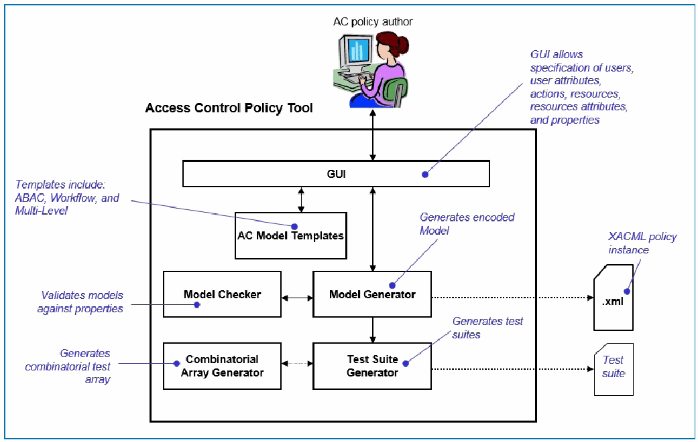
ACポリシー作成者がGUIで利用者、利用者属性、アクション、リソース、リソース属性、プロパティを指定するACPTの構成図。AC Model Templates、Model Checker、Model Generator、Combinatorial Array Generator、Test Suite Generatorの連携を示す。Model Checkerはモデルを特性と照合し、Model Generatorは符号化モデルを生成する。後段では組合せテスト配列とテストスイートを生成し、XACMLポリシーインスタンス（.xml）とテストスイートを出力する。
Figure 22: Access Control Property Tool (ACPT)
図22：アクセス制御プロパティツール（ACPT）
未レビュー訳•Provide tools or services for checking the security and For More Information, See: safety of an access control implementation, policy http://csrc.nist.gov/groups/SNS/acpt/ combination, and eXtensible Access Control Markup Language (XACML) policy generation;
•〔左段・箇条書き〕アクセス制御の実装、ポリシーの組合せ、および拡張可能なアクセス制御マークアップ言語（XACML）ポリシー生成のセキュリティと安全性を確認するためのツールまたはサービスを提供する。〔右段〕詳細情報：http://csrc.nist.gov/groups/SNS/acpt/
未レビュー訳CONTACTS:
連絡先：
未レビュー訳•Promote (or accelerate) the adoption of combinatorial Dr. Vincent Hu Mr. Rick Kuhn testing for large-system testing (such as an access (301) 975-4975 (301) 975-3337 control system); vhu@nist.gov kuhn@nist.gov
•〔左段・箇条書き〕大規模システム試験（アクセス制御システムなど）で組合せ試験の採用を促進（または加速）する。〔右段・連絡先〕Dr. Vincent Hu（301-975-4975、vhu@nist.gov）、Mr. Rick Kuhn（301-975-3337、kuhn@nist.gov）。
未レビュー訳•Promote the concept of detecting AC policy faults in real-time AC rule composing; Attribute-Based Access Control
•〔左段・箇条書き〕リアルタイムのACルール作成時にアクセス制御ポリシーの欠陥を検出する考え方を普及させる。〔右段・見出し〕属性ベースアクセス制御（ABAC）
未レビュー訳•Provide an innovative method for specifying AC rules formed by Boolean logic expressions operated on vari- Attribute-Based Access Control (ABAC) is a logical ables of AC rules; access control methodology where an authorization to
•〔左段・箇条書き〕ACルールの変数に対するブール論理式で表されたACルールを指定する革新的な方法を提供する。〔右段・続き〕属性ベースアクセス制御（ABAC）は論理的なアクセス制御方式であり、一連の操作を行う権限は、
未レビュー訳•Provide techniques for preventing faults in enforcing perform a set of operations is determined by evaluating the fundamental security properties, including Cyclic In- attributes associated with the subject, object, requested heritance, Privilege Escalation, and Separation of Duty; operations, and, in some cases, environmental conditions against policy, rules, or relationships that describe the and allowable operations for a given set of attributes. ABAC
•〔左段・箇条書き〕循環継承、権限昇格、職務分離などの基本的なセキュリティ特性を適用する際の欠陥を防ぐ技法を提供する。〔右段・続き〕主体、オブジェクト、要求された操作に関連付けられた属性を評価して決定される。場合によっては、属性の集合に対して許可する操作を定めたポリシー、ルールまたは関係に照らして、環境条件も評価する。ABACは、
未レビュー訳•Provide new methods for composing standard man-represents a point on the spectrum of logical access control, datory AC models, such as Attribute-Based Access from simple access control lists to more capable role-based Control (ABAC) and Multi-Level Security (MLS), as well access (RBAC), and finally, to a highly flexible method for as some fundamental security properties. providing access based on the evaluation of attributes.
•〔左段・箇条書き〕属性ベースアクセス制御（ABAC）やマルチレベルセキュリティ（MLS）などの標準的な必須アクセス制御モデルを組み合わせる新しい方法と、基本的なセキュリティ特性を提供する。〔右段・続き〕論理的アクセス制御の幅広い方式の中で、アクセス制御リストから、より高機能なロールベースアクセス制御（RBAC）、さらに属性評価に基づいてアクセスを提供する柔軟な方式へとつながる位置付けにある。
未レビュー訳6 6
原文のみ
COMP U TER SECURITY DI VI SION ANNUAL REP ORT | 2 01 5 THIS PUBLICATION IS AVAILABLE FREE OF CHARGE FROM:
コンピュータセキュリティ部門 年次報告書｜2015年 本出版物は次から無料で入手できます：
未レビュー訳http://dx.doi.org/10.6028/NIST.SP.800-182
原文のみ
This research provides information for using ABAC characteristics of two ABAC implementation mechanisms: to improve information sharing within and among organi- XACML and NGAC. CSD continued research on the Attribute zations based on the planning, design, implementation, Assurance of ABAC in partnership with the National and operational considerations. The research also includes Strategy for Trusted Identities in Cyberspace (NSTIC), and technologies such as attribute assurance, attribute the National Cybersecurity Center of Excellence (NCCoE). engineering/management, identity system integration, CSD developed a draft Special Publication based on the attribute federation, situational awareness (real-time or mechanism for defining the veracity, security, and readiness contextual) mechanisms, policy management, and natural- levels of assurance of ABAC attributes. language policy translation to digital policy. Figure 23
〔左段〕この研究は、計画、設計、実装、運用上の考慮事項に基づいて、組織内外の情報共有を改善するためのABACの利用方法を示す。属性保証、属性のエンジニアリング／管理、IDシステム統合、属性フェデレーション、状況認識（リアルタイムまたは文脈依存）メカニズム、ポリシー管理、自然言語ポリシーからデジタルポリシーへの変換などの技術も扱う。図23〔右段・続き〕二つのABAC実装メカニズムの特性、すなわちXACMLとNGACを比較する。CSDは、サイバー空間における信頼できるアイデンティティのための国家戦略（NSTIC）および国家サイバーセキュリティ・センター・オブ・エクセレンス（NCCoE）と連携し、ABACの属性保証に関する研究を継続した。CSDは、ABAC属性の真正性、セキュリティ、保証レベルの準備状況を定義するメカニズムに基づく特別刊行物の草稿を作成した。
未レビュー訳In FY 2016, CSD will continue the research of ABAC
〔右段〕2016年度にCSDは、ABACの
未レビュー訳illustrates the interaction of many of these components. The
〔左段・続き〕は、これらの構成要素の多くの相互作用を示す。
未レビュー訳formal models, as well as details and extended topics of
〔右段・続き〕形式モデルの研究に加え、
未レビュー訳goal of this research is to improve information sharing, while
〔左段・続き〕この研究の目標は、情報共有を改善しつつ、
未レビュー訳ABAC capabilities, such as attribute assurance, ABAC
〔右段・続き〕属性保証などABACの機能に関する
未レビュー訳maintaining control of that information for federal agencies.
〔左段・続き〕連邦機関がその情報に対する管理を維持できるようにすることである。
未レビュー訳implementation examples, ABAC mechanisms, and ABAC
〔右段・続き〕実装例、メカニズム、および
未レビュー訳In FY 2015, CSD published two ABAC papers: Attribute- standards. The ABAC project will pursue the following BasedAccessControl for IEEEComputing magazine, and objectives: Implementing and Managing Policy Rules in Attribute-
〔左段〕2015年度にCSDはABACに関する論文を2編発表した。1編はIEEE Computing誌に掲載された「Attribute-Based Access Control」、もう1編は「Implementing and Managing Policy Rules in Attribute-Based」。〔右段〕標準について詳細かつ発展的なテーマの研究を継続する。ABACプロジェクトでは、次の目標を掲げる。
未レビュー訳•Provide readers with the terminology and a basic un-
•〔右段・箇条書き〕ABACの用語と基本的な
未レビュー訳BasedAccessControlfor IEEEInternationalConferenceon
〔左段・論文題名続き〕Based Access Control for IEEE International Conference on
未レビュー訳derstanding of ABAC;
〔右段・箇条書き続き〕理解を読者に提供する。
未レビュー訳InformationReuseandIntegration. CSD also wrote a draft
〔左段・論文題名続き〕Information Reuse and Integration」。CSDはさらに、
未レビュー訳•Provide readers with an overview of the current state
•〔右段・箇条書き〕アクセス制御の現状について概要を示し、
未レビュー訳Special Publication document for ABAC formal models
〔左段・続き〕ABAC形式モデル研究に関する特別刊行物（SP）の草稿を作成した。
未レビュー訳of logical access control, a working definition of ABAC,
〔右段・箇条書き続き〕論理的アクセス制御の現状とABACの作業定義を示し、
未レビュー訳research: A Comparison of XACML and NGAC Attribute
〔左段・題名続き〕「A Comparison of XACML and NGAC Attribute
未レビュー訳and an explanation of the core and enterprise ABAC
〔右段・箇条書き続き〕ABACの中核概念とエンタープライズABACの
未レビュー訳Based Access Control Standards, which compares the
〔左段・題名続き〕Based Access Control Standards」であり、
未レビュー訳concepts;
〔右段・箇条書き続き〕概念を説明する。
未レビュー訳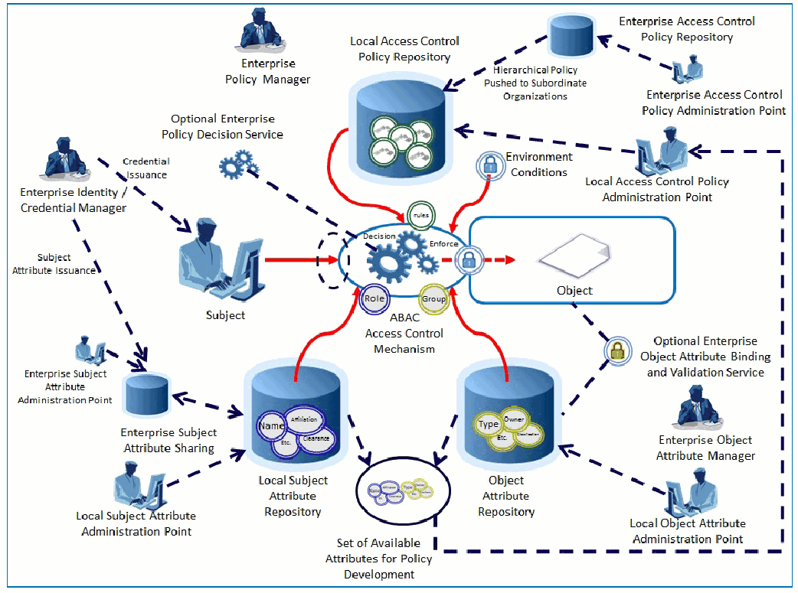
属性ベースアクセス制御（ABAC）のアクセス制御メカニズム図。中央のABAC Access Control MechanismはDecisionとEnforceの機能、roles、groups、rulesを介してsubjectとobjectを扱い、Environment Conditionsも参照する。Subject Attribute RepositoryとObject Attribute Repository、Local Access Control Policy Repository、Enterprise Access Control Policy Repository、各属性・ポリシー管理ポイントが接続され、Enterprise Policy Manager、Identity/Credential Manager、Credential Issuance、Optional Enterprise Policy Decision Service、Enterprise Subject Attribute Sharingも示す。Available Attributes for Policy Developmentからのポリシー開発と、階層ポリシーの下位組織への配布を含む。
6 7
原文のみ
Figure 23: ABAC Access Control Mechanism Chart
図23：ABACアクセス制御メカニズムの構成図
未レビュー訳P RO GRA M A ND PR OJ ECT ACHI EVE ME NTS | F Y 2015
プログラムおよびプロジェクトの実績｜2015年度
未レビュー訳THIS PUBLICATION IS AVAILABLE FREE OF CHARGE FROM: http://dx.doi.org/10.6028/NIST.SP.800-182
本出版物は次から無料で入手できます：http://dx.doi.org/10.6028/NIST.SP.800-182
未レビュー訳•Assist security policy makers in establishing a busi- • Identifying IT assets, including hardware, software, and ness case for ABAC implementation and acquiring an data; interoperable set of capabilities;
•〔左段・箇条書き〕ABAC導入の事業上の根拠を確立し、相互運用可能な機能群を調達できるよう、セキュリティポリシー策定者を支援する。〔右段・箇条書き〕ハードウェア、ソフトウェア、データを含むIT資産を特定する。
未レビュー訳•Providing awareness over the operational state of com-
•〔右段・箇条書き続き〕コンピューティングデバイスの運用状態を把握できるようにする。
未レビュー訳•Assist ABAC developers in developing the operational puting devices; requirements and overall enterprise architecture;
•〔左段・箇条書き〕ABAC開発者が運用要件とエンタープライズ全体のアーキテクチャを策定できるよう支援する。
未レビュー訳•Enabling security reference data to be collected from
•〔右段・箇条書き〕内部および外部の情報源からセキュリティ参照データを収集できるようにする。
未レビュー訳•Assist ABAC administrators in establishing or refining internal and external sources; and business processes to support ABAC;
•〔左段・箇条書き〕ABAC管理者が業務プロセスを確立または改善し、ABACを支えられるよう支援する。〔右段・箇条書き続き〕セキュリティ制御の有効性を測定し、
未レビュー訳•Supporting analysis processes that measure the effec-
•〔右段・箇条書き続き〕セキュリティリスクを可視化してリスクベースの意思決定を可能にする分析プロセスを支援する。
未レビュー訳•Promote the adoption of ABAC for a more secure and tiveness of security controls and provide visibility into flexible method for information sharing in a standalone security risks, enabling risk-based decision-making. or enterprise environment; and Commercial solutions built using security automation
•〔左段・箇条書き〕単独またはエンタープライズ環境でABACを採用し、より安全で柔軟な情報共有を促進する。さらに、〔右段・続き〕セキュリティ自動化仕様を用いて構築された商用ソリューションは、
未レビュー訳•Provide testing methods for ABAC policy and imple- specifications enable the collection and harmonization of mentations. vast amounts of operational and security data into coherent, comparable information streams to achieve situational For More Information, See: awareness that allows the timely and active management of http://csrc.nist.gov/projects/abac/ diverse IT systems. Through the creation of reference data and guidance, and the international recognition of flexible,
•〔左段・箇条書き〕ABACポリシーと実装の試験方法を提供する。〔左段・案内〕詳細情報：http://csrc.nist.gov/projects/abac/〔右段・続き〕セキュリティ自動化仕様を用いて構築された商用ソリューションは、膨大な運用・セキュリティデータを収集・統合し、一貫性があり比較可能な情報の流れにする。これにより状況認識を実現し、多様なITシステムを適時かつ積極的に管理できる。参照データとガイダンスの整備、柔軟な
未レビュー訳CONTACTS:
連絡先：
未レビュー訳open standards, the NIST security automation program works to improve the interoperability, broad acceptance, and
〔右段・続き〕オープン標準の国際的な認知を通じ、NISTのセキュリティ自動化プログラムは、セキュリティ自動化ソリューションの
未レビュー訳Dr. Vincent Hu
ドクター・ヴィンセント・フー（Dr. Vincent Hu）
未レビュー訳Mr. David Ferraiolo
デービッド・フェライオロ氏（Mr. David Ferraiolo）
未レビュー訳adoption of security automation solutions to address current
〔右段・続き〕相互運用性、広範な受容性、普及を高め、現在の
未レビュー訳(301) 975-4975
原文のみ
(301) 975-3046
原文のみ
and future security challenges, creating opportunities for
〔右段・続き〕将来のセキュリティ課題にも対応し、
未レビュー訳vhu@nist.gov
原文のみ
david.ferraiolo@nist.gov
原文のみ
innovation.
〔右段・続き〕イノベーションの機会を創出する。
未レビュー訳Mr. Rick Kuhn
リック・クーン氏（Mr. Rick Kuhn）
未レビュー訳Specification, Standards, and Guidance
〔右段・見出し〕仕様、標準、ガイダンスの
未レビュー訳(301) 975-3337
原文のみ
Development
〔右段・見出し続き〕策定
未レビュー訳kuhn@nist.gov
原文のみ
To support the overarching security automation vision, it is necessary to have specifications that describe the required
〔右段〕セキュリティ自動化の全体的なビジョンを支えるには、必要な仕様が欠かせない。
未レビュー訳A D V A N C E D S E C U R I T Y
〔左段・青帯見出し〕先進的セキュリティ
未レビュー訳interactions between systems, standards that document
〔右段・続き〕システム間で必要となる相互作用を記述する仕様、
未レビュー訳T E S T I N G A N D
〔左段・青帯見出し続き〕試験および
未レビュー訳international consensus approaches, and guidance that informs product developers and implementers. Through
〔右段・続き〕国際合意されたアプローチを記録する標準、製品開発者や実装者に指針を示すガイダンスが必要である。政府、産業界、学術界のパートナーと緊密に協力し、
未レビュー訳M E A S U R E M E N T S
〔左段・青帯見出し続き〕測定
未レビュー訳close work with partners in government, industry, and academia, CSD continues to facilitate the definition and
〔右段・続き〕CSDは、
未レビュー訳Security Automation and Continuous development of security automation approaches that enable Monitoring
〔左段・見出し〕セキュリティ自動化と継続的モニタリング。〔右段・続き〕セキュリティ自動化アプローチの定義と
未レビュー訳organizations to understand and manage IT security risks.
〔右段・続き〕開発を進め、組織がITセキュリティリスクを理解し管理できるようにしている。
未レビュー訳IT organizations operate a diverse set of computing
〔左段〕IT組織は、多様なコンピューティング資産を運用している。これらの資産は、
未レビュー訳During FY 2015, CSD has continued to work to build on
〔右段〕2015年度、CSDはこれまでのセキュリティ自動化の取り組みを発展させるため、次の作業を継続した。
未レビュー訳assets that access, route, store, and process information that
〔左段・続き〕重要な情報にアクセスし、経路選択、保存、処理を行う。
未レビュー訳previous security automation work by:
〔右段・続き〕これまでのセキュリティ自動化の成果を基盤として、
未レビュー訳is critical to the operations of businesses and the missions
〔左段・続き〕企業の業務運営と
未レビュー訳•Identifying and addressing gaps in the current specifi-
•〔右段・箇条書き〕現行
未レビュー訳of government agencies. These IT environments are under
〔左段・続き〕政府機関の任務に不可欠である。
未レビュー訳cations;
〔右段・箇条書き続き〕仕様の不足箇所を特定し、対処する。
未レビュー訳constant threat of attack and are frequently undergoing change, with new and updated software being deployed • Evolving existing approaches to achieve greater scal-along with updated configurations. The wide variety of ability and impact; computing products, the dynamic nature of software, the
〔左段・続き〕絶えず攻撃の脅威にさらされ、頻繁に変化する。新しいソフトウェアや更新版が展開され、設定も更新される。〔右段・箇条書き〕既存のアプローチを発展させ、より高い拡張性と効果を実現する。〔左段・続き〕コンピューティング製品の多様性、ソフトウェアの動的な性質、
未レビュー訳•Participating in working groups in standards develop-
•〔右段・箇条書き〕標準化団体の作業部会に参加し、
未レビュー訳speed of configuration change, and the diversity of threats
〔左段・続き〕設定変更の速度や脅威の多様性により、
未レビュー訳ment organizations to promote international consensus
〔右段・箇条書き続き〕標準化されたアプローチに関する国際合意を促進する。
未レビュー訳require organizations to maintain situational awareness
〔左段・続き〕組織は状況認識を維持し、
未レビュー訳around standardized approaches;
〔右段・箇条書き続き〕標準化されたアプローチを推進する。
未レビュー訳over their IT assets and to utilize this information to make
〔左段・続き〕IT資産の状況を把握し、この情報を活用して、
未レビュー訳•Providing additional guidance on architectural, design,
•〔右段・箇条書き〕アーキテクチャ、設計、
未レビュー訳informed risk-based decisions.
〔左段・続き〕情報に基づくリスクベースの意思決定を行う必要がある。
未レビュー訳and analysis concerns; and
〔右段・箇条書き続き〕分析上の課題に関する追加ガイダンスを提供する。さらに、
未レビュー訳Security automation utilizes standardized data formats
〔左段〕セキュリティ自動化では、標準化されたデータ形式を
未レビュー訳•Developing and maintaining tools and reference imple-
•〔右段・箇条書き〕ツールとリファレンス実装の開発・
未レビュー訳and transport protocols to enable data to be exchanged
〔左段・続き〕標準化された伝送プロトコルを利用して、
未レビュー訳mentations.
維持を続ける。
未レビュー訳between business, operational, and security systems that support security processes by:
〔左段・続き〕業務、運用、セキュリティ各システム間でデータを交換し、次のセキュリティプロセスを支援する。
未レビュー訳6 8
原文のみ
COMP U TER SECURITY DI VI SION ANNUAL REP ORT | 2 01 5 THIS PUBLICATION IS AVAILABLE FREE OF CHARGE FROM:
コンピュータセキュリティ部門 年次報告書｜2015年 本出版物は次から無料で入手できます：
未レビュー訳http://dx.doi.org/10.6028/NIST.SP.800-182
原文のみ
CSD is currently working with its partners in various SCAP in multiple areas, both to support its own mission standards-development organizations, including ISO, and to enable other agencies and private-sector entities IETF, the Forum of Incident Response and Security Teams to meet their goals. For CSD, SCAP is a critical component (FIRST), and the Trusted Computing Group (TCG), to of the SCAP Validation Program, the National Vulnerability further mature and broaden the adoption of security Database (NVD), and the National Checklist Program (NCP). automation specifications, reference data, and techniques. In September 2012, CSD published SP 800-126 Rev. 2, This area of work is focused on evolving security automation The Technical Specification for the Security Content specifications to integrate with existing transport protocols Automation Protocol (SCAP): SCAP Version 1.2. That to provide for the secure, interoperable exchange of security document describes the 11 component specifications automation data. Additional work is focused on evolving composing SCAP. See Table 2 (next page): SCAP 1.2 security metrics and providing consensus guidance on Specifications for details. security automation approaches. Through the definition and
〔左段〕CSDは現在、ISO、IETF、インシデント対応・セキュリティチームフォーラム（FIRST）、Trusted Computing Group（TCG）など、複数の標準策定機関のパートナーと協力している。目標はセキュリティ自動化仕様、参照データ、技術の成熟と普及をさらに促進すること。この作業は、既存の伝送プロトコルにセキュリティ自動化仕様を統合し、安全で相互運用可能なセキュリティ自動化データ交換を実現することに重点を置く。また、セキュリティ指標を発展させ、セキュリティ自動化アプローチに関する合意に基づくガイダンスを提供する。〔右段〕SCAPの複数領域で、CSDの使命を支援し、他機関や民間部門が目標を達成できるようにしている。CSDにとってSCAPは、SCAP Validation Program、National Vulnerability Database（NVD）、National Checklist Program（NCP）を支える重要な構成要素である。2012年9月、CSDはSP 800-126 Rev. 2『Security Content Automation Protocol（SCAP）の技術仕様：SCAP Version 1.2』を公開した。この文書はSCAPを構成する11の仕様を記述している。詳細は表2（次ページ）の「SCAP 1.2仕様」を参照。
未レビュー訳Since the release of SCAP 1.2, CSD has worked to
〔右段〕SCAP 1.2の公開後、CSDは
未レビュー訳adoption of security automation standards and guidelines,
〔左段・続き〕セキュリティ自動化標準とガイドラインの採用を通じて、
未レビュー訳improve guidance around the use of SCAP specifications. In
SCAP仕様の利用に関するガイダンスの改善に取り組んできた。〔右段・次文〕2015年度、
未レビュー訳IT vendors will be able to provide standardized security
〔左段・続き〕ITベンダーは標準化されたセキュリティソリューションを顧客に提供できる。これらのソリューションは
未レビュー訳FY 2015, CSD released draft NISTIR 8058, SecurityContent
CSDはNISTIR 8058の草稿『Security Content
未レビュー訳solutions to their customers. These solutions support
〔左段・続き〕継続的なモニタリングと自動化された動的ネットワーク
未レビュー訳Automation Protocol (SCAP) Version 1.2 Content Style
〔右段・文書題名続き〕Automation Protocol（SCAP）Version 1.2 Content Style
未レビュー訳continuous monitoring and automated, dynamic network
〔左段・続き〕防御機能を支援する。これらの機能は、
未レビュー訳Guide: Best Practices for Creating and Maintaining SCAP
〔右段・文書題名続き〕Guide: Best Practices for Creating and Maintaining SCAP
未レビュー訳defense capabilities, based on the analysis of data from
〔左段・続き〕運用データおよびセキュリティデータのソースと
未レビュー訳1.2Content, which provides guidance for SCAP 1.2 content
〔右段・文書題名・本文続き〕1.2 Content』を公開した。この文書はSCAP 1.2コンテンツ作成者向けのガイダンスを提供する。
未レビュー訳operational and security data sources and the collective
〔左段・続き〕セキュリティコンポーネントの連携に基づく。
未レビュー訳creators to ensure that stylistic variations in SCAP 1.2
〔右段・続き〕SCAP 1.2の文体上のばらつきを、
未レビュー訳action of security components.
〔左段・段落末尾〕セキュリティコンポーネントの連携。
未レビュー訳content are addressed in a way that improves the accuracy
〔右段・続き〕結果の正確性と一貫性を高め、性能上の問題を避け、利用者の作業量とコンテンツ保守の負担を減らし、コンテンツの再利用を可能にする形で扱うことを求めている。
未レビュー訳Security automation standardization work has been and consistency of results, avoids performance problems, focused in three areas: the evolution and international reduces user effort, lowers content maintenance burdens, adoption of the Security Content Automation Protocol and enables content reuse. To achieve this, the report (SCAP), the development of software asset management documents best practices for content creation and standards to support operational and cybersecurity encourages their use by SCAP content authors and use cases, and the development of security automation maintainers. Feedback on this report is welcomed and will consensus standards. The following sections detail this work. help CSD to work towards producing a final version of this document. Security Content Automation Protocol
〔左段〕セキュリティ自動化の標準化作業は、三つの領域に重点を置いてきた。セキュリティコンテンツ自動化プロトコル（SCAP）の発展と国際的な採用、運用・サイバーセキュリティのユースケースを支えるソフトウェア資産管理標準の開発、セキュリティ自動化に関する合意標準の開発である。以下の節でこの作業を詳述する。〔左段・見出し〕セキュリティコンテンツ自動化プロトコル。〔右段・続き〕達成するため、報告書ではコンテンツ作成のベストプラクティスを記し、SCAPコンテンツの作成者と保守担当者にその利用を促している。本報告書への意見を歓迎し、CSDが最終版の作成を進めるうえで役立てる。
未レビュー訳CSD is starting to work on an SCAP 1.3 revision. In
〔右段〕CSDはSCAP 1.3の改訂作業に着手している。2015年8月、
未レビュー訳(SCAP)
〔左段・見出し続き〕（SCAP）
未レビュー訳August 2015, CSD requested comments on the design
CSDはSCAP 1.3の設計に関する意見を募集し、
未レビュー訳SCAP is a multipurpose protocol that provides an
〔左段〕SCAPは、デバイスの状態を収集・評価する自動手段を提供する多目的プロトコルである。
未レビュー訳and development of SCAP 1.3. Specific areas of requested
開発についても意見を求めた。具体的な意見募集の論点は
未レビュー訳automated means to collect and assess the state of devices.
〔左段・続き〕自動化された手段を提供する。
未レビュー訳feedback included:
次のとおりである。
未レビュー訳SCAP supports automated vulnerability checking, verifying the installation of patches, checking security configuration • Adopting the Open Vulnerability and Assessment Lan-settings, verifying technical-control compliance, measuring guage (OVAL) 5.11.1, which was released in April 2015; security, and examining systems for indicators of a
〔左段〕SCAPは、脆弱性の自動チェック、パッチのインストール確認、セキュリティ構成設定の確認、技術的制御への準拠確認、セキュリティ測定、およびシステム上に侵害の兆候を
未レビュー訳compromise. SCAP uses the Extensible Markup Language
〔左段・続き〕探す。SCAPは拡張可能なマークアップ言語
未レビュー訳•Adopting the Common Vulnerability Scoring System
•〔右段・箇条書き〕Common Vulnerability Scoring System（CVSS）v3を
未レビュー訳compromise. SCAP uses the Extensible Markup Language
〔左段・続き〕（XML）を用いて形式と用語を標準化し、
未レビュー訳(CVSS) v3, which was released in June 2015;
2015年6月に公開されたCVSS v3を採用する。
未レビュー訳(XML) to standardize the format and nomenclature by which
〔左段・続き〕セキュリティソフトウェア製品がソフトウェアの欠陥、セキュリティ設定、その他の
未レビュー訳•Removing support for CVSS v2; and
•〔右段・箇条書き〕CVSS v2のサポートを終了する。
未レビュー訳security software products communicate information about software flaws, security configurations, and other aspects of • Deprecating support for older specification revisions the device state. SCAP enables security automation content, and SCAP 1.0. also known as “SCAP content,” to be expressed using
〔左段・続き〕デバイスの状態に関する情報をやり取りできるようにする。SCAPは、セキュリティ自動化コンテンツ（「SCAPコンテンツ」とも呼ばれる）を、〔右段・箇条書き〕古い仕様改訂版とSCAP 1.0への対応を廃止する。
未レビュー訳The received feedback generally favored the adoption
〔右段〕寄せられた意見は、一般にOVAL 5.11.1とCVSS v3の採用を支持していた。
未レビュー訳standardized formats, identifiers, and scoring models. This
〔左段・続き〕標準化された形式、識別子、スコアリングモデルで表現する。この
未レビュー訳of OVAL 5.11.1 and CVSS v3. Continued support for CVSS v2,
〔右段・続き〕CVSS v2もv3に加えて継続サポートし、
未レビュー訳content can be used by any tool that is conformant to the
〔左段・続き〕このコンテンツは、仕様に適合するあらゆるツールで
未レビュー訳in addition to v3, and some reduction in the minimal support
〔右段・続き〕旧仕様改訂版への最低限のサポートを一部縮小することも、
未レビュー訳specifications to collect and evaluate the state of software
〔左段・続き〕デバイスにインストールされたソフトウェアの状態を収集・評価するために
未レビュー訳for older specification revisions were also common themes
〔右段・続き〕意見で共通して挙げられた。CSDは現在、
未レビュー訳installed on a device.
〔左段・続き〕利用できる。
未レビュー訳in the feedback. CSD is currently considering this feedback
〔右段・続き〕これらの意見を検討しながら、2016年度に公開意見募集を行う予定のSP 800-126改訂草稿を作成している。
未レビュー訳SCAP has been widely adopted by major software while working on a draft revision of SP 800-126 for public and hardware manufacturers and has become a significant comment in FY 2016. component of information-security-management and governance programs. SCAP-enabled tools are currently being used by the U.S. Government, critical-infrastructure companies, academia, and other businesses, both domestically and internationally. Currently, CSD is leveraging
〔左段〕SCAPは主要なソフトウェア・ハードウェアメーカーに広く採用され、情報セキュリティ管理およびガバナンスプログラムの重要な要素となっている。SCAP対応ツールは、米国政府、重要インフラ企業、学術機関、その他の企業で、国内外を問わず使用されている。現時点でCSDは、
未レビュー訳6 9
原文のみ
P RO GRA M A ND PR OJ ECT ACHI EVE ME NTS | F Y 2015
プログラムおよびプロジェクトの実績｜2015年度
未レビュー訳THIS PUBLICATION IS AVAILABLE FREE OF CHARGE FROM: http://dx.doi.org/10.6028/NIST.SP.800-182
本出版物は次から無料で入手できます：http://dx.doi.org/10.6028/NIST.SP.800-182
未レビュー訳| TABLE 2: SCAP 1.2 SPECIFICATIONS | |
| SPECIFICATIONS | DESCRIPTION |
| Languages | |
| Extensible Configuration Checklist Description Format (XCCDF) | Used for authoring security checklists/benchmarks and for reporting results of evaluating them |
| Open Vulnerability and Assessment Language (OVAL) | Used for representing system-configuration information, assessing machine state, and reporting assessment results |
| Open Checklist Interactive Language (OCIL) | Used for representing checks that collect information from people or from existing data stores populated by other data collection methods |
| Reporting Formats | |
| Asset Reporting Format (ARF) | Used to express information about assets and to define the relationships between assets and reports |
| Asset identification | Used to uniquely identify assets based on known identifiers and other asset information |
| Enumerations | |
| Common Platform Enumeration (CPE) | A nomenclature and dictionary of hardware, operating systems, and applications; a method to identify applicability to platforms |
| Common Configuration Enumeration (CCE) | A nomenclature and dictionary of software-security configurations |
| Common Vulnerabilities and Exposures (CVE) | A nomenclature and dictionary of security-related software flaws |
| Measurement and Scoring Systems | |
| Common Vulnerability Scoring System (CVSS) | Used for measuring the relative severity of software flaws |
| Common Configuration Scoring System (CCSS) | Used for measuring the relative severity of device security (mis-)configuration issues |
| Content and Result Integrity | |
| Trust Model for Security Automation Data (TMSAD) | Guidance for using digital signatures in a common trust model applied to security automation specifications |
原本PDFの抜粋画像
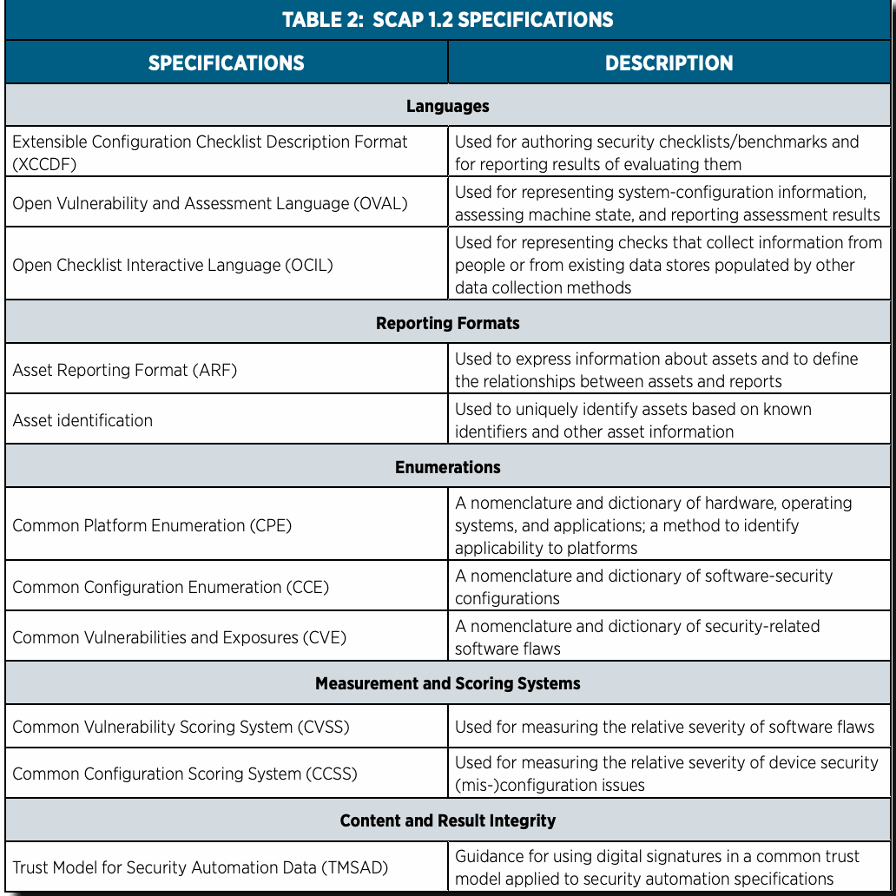
| 表2：SCAP 1.2仕様 | |
| 仕様 | 説明 |
| 言語 | |
| 拡張可能な構成チェックリスト記述形式（XCCDF） | セキュリティチェックリスト／ベンチマークの作成、およびその評価結果の報告に使用する。 |
| Open Vulnerability and Assessment Language（OVAL） | システム構成情報の表現、機器の状態評価、評価結果の報告に使用する。 |
| Open Checklist Interactive Language（OCIL） | 人、または他のデータ収集方法で作成された既存データストアから情報を収集するチェックの表現に使用する。 |
| 報告形式 | |
| Asset Reporting Format（ARF） | 資産に関する情報を表現し、資産と報告書の関係を定義するために使用する。 |
| 資産識別 | 既知の識別子やその他の資産情報に基づいて、資産を一意に識別するために使用する。 |
| 列挙体系 | |
| Common Platform Enumeration（CPE） | ハードウェア、オペレーティングシステム、アプリケーションの名称体系・辞書。プラットフォームへの適用可否を特定する方法。 |
| Common Configuration Enumeration（CCE） | ソフトウェアのセキュリティ構成に関する名称体系・辞書。 |
| Common Vulnerabilities and Exposures（CVE） | セキュリティ関連のソフトウェア欠陥に関する名称体系・辞書。 |
| 測定およびスコアリングシステム | |
| Common Vulnerability Scoring System（CVSS） | ソフトウェア欠陥の相対的な深刻度の測定に使用する。 |
| Common Configuration Scoring System（CCSS） | デバイスのセキュリティ設定不備の相対的な深刻度の測定に使用する。 |
| コンテンツと結果の完全性 | |
| Trust Model for Security Automation Data（TMSAD） | セキュリティ自動化仕様に適用する共通の信頼モデルで、デジタル署名を利用するためのガイダンス。 |
7 0
原文のみ
COMP U TER SECURITY DI VI SION ANNUAL REP ORT | 2 01 5 THIS PUBLICATION IS AVAILABLE FREE OF CHARGE FROM:
コンピュータセキュリティ部門 年次報告書｜2015年 本出版物は次から無料で入手できます：
未レビュー訳http://dx.doi.org/10.6028/NIST.SP.800-182
原文のみ
Software Asset Management Standards installation, patching, upgrading and removal. CSD has CSD has been collaborating with industry partners released three public discussion drafts of these guidelines. to revise the ISO/IEC 19770-2:2009 standard, Information A final public draft will be released in FY 2016, along with a technology—Softwareassetmanagement—Part2:Software subsequent final release of the report. identification tag, which establishes a specification for Additionally, NIST has worked with the TCG to integrate tagging software to support identification and management. SWID tags into the Trusted Network Communications (TNC) An updated revision of this standard, ISO/IEC 19770-2:2015, protocol, through the SCAP Messages for IF-M specification was published on October 1, 2015. The software identification that will be discussed below. (SWID) data model defined by this standard describes an
〔左段・見出し〕ソフトウェア資産管理標準。CSDは業界パートナーと協力し、ISO/IEC 19770-2:2009「情報技術—ソフトウェア資産管理—第2部：ソフトウェア識別タグ」を改訂してきた。この規格は、ソフトウェアの識別・管理を支援するタグ付け仕様を定める。改訂版ISO/IEC 19770-2:2015は2015年10月1日に公開された。この規格で定義されるソフトウェア識別（SWID）データモデルは、〔右段・続き〕インストール、パッチ適用、アップグレード、削除に用いられる。CSDは本ガイドラインの公開討議草稿を3件公開した。最終公開草稿は2016年度に公開し、その後に報告書の最終版を出す予定である。
未レビュー訳The information provided within SWID tags enhances
〔右段〕SWIDタグが提供する情報は、
未レビュー訳XML format for software publishers to provide authoritative
〔左段・続き〕ソフトウェア発行者向けのXML形式で、信頼性の高い
未レビュー訳the SCAP use cases by providing authoritative information
〔右段・続き〕SCAPのユースケースを強化する。
未レビュー訳identification, categorization, software relationships
〔左段・続き〕識別情報、分類情報、ソフトウェア間の関係
未レビュー訳that can be used to create Common Platform Enumeration
〔右段・続き〕CPE名の生成に使える。これにより、チェックリストの対象を絞り込み、
未レビュー訳(e.g., dependency, bundling, and patch), executable and
〔左段・続き〕（依存関係、バンドル、パッチなど）、実行可能ファイルおよび
未レビュー訳(CPE) names, to support the targeting of checklists, and to
〔右段・続き〕Common Platform Enumeration（CPE）名の作成やチェックリストの対象の選定に利用でき、
未レビュー訳library footprint details, and other metadata for software.
〔左段・続き〕ライブラリのフットプリント情報など、その他のソフトウェアメタデータを提供する。
未レビュー訳associate software flaws to products, based on a defect in
〔右段・続き〕ソフトウェアの欠陥を製品に関連付けるために使える。欠陥は、
未レビュー訳This information can be used to support operational
〔左段・続き〕この情報は、
未レビュー訳a software library or executable. CSD will be working on a
ソフトウェアライブラリまたは実行可能ファイルに存在する。CSDは2016年度に、
未レビュー訳and cybersecurity use cases around managing software
ソフトウェア管理に関する運用・サイバーセキュリティ上のユースケースに利用できる。具体的には、
未レビュー訳number of reports in FY 2016 that provide further guidance
SWIDタグ利用の追加ガイダンスを示す複数の報告書を
未レビュー訳deployments, managing software licenses, managing
ソフトウェアの展開、ライセンス、脆弱性と関連パッチの管理、
未レビュー訳for using SWID tags to address these use cases.
作成し、これらのユースケースへの対応を支援する予定である。
未レビュー訳software vulnerabilities and related software patches, and assessing secure software configurations.
安全なソフトウェア構成の評価である。
未レビュー訳Development of Security Automation
〔右段・見出し〕セキュリティ自動化の
未レビュー訳To supplement the requirements in ISO/IEC 19770- Consensus Standards 2:2015, CSD has been working with DHS and NSA on the CSD has been promoting the broad international development of NISTIR 8060, Guidelines for the Creation adoption of SCAP by encouraging the integration of SCAP of Interoperable Software Identification (SWID) Tags. into other standards, and by adapting SCAP to address NISTIR 8060 provides an overview of the capabilities and specific gaps and challenges. CSD has continued its usage of software identification (SWID) tags as part of a collaboration with industry partners in the IETF Security comprehensive software lifecycle. This report introduces Automation and Continuous Monitoring (SACM) working SWID tags in an operational context, provides guidelines for group. This working group provides a venue for advancing the creation of interoperable SWID tags, and highlights key appropriate SCAP specifications into international standards usage scenarios for which SWID tags are applicable. Figure and addressing identified gap areas. The current scope of 24 illustrates how SWID tags support multiple elements work for SACM includes identifying and/or defining the of the software product life cycle, including deployment, transport protocols and data formats needed to support
〔左段〕ISO/IEC 19770-2:2015の要件を補うため、CSDはDHSおよびNSAと連携し、NISTIR 8060「相互運用可能なソフトウェア識別（SWID）タグの作成に関するガイドライン」を作成している。この報告書は、包括的なソフトウェアライフサイクルの一部としてSWIDタグを用いる機能と方法を概説する。運用環境におけるSWIDタグを紹介し、相互運用可能なタグの作成指針と主な利用シナリオを示す。図24は、導入、インストール、パッチ適用、アップグレード、削除など、ソフトウェア製品ライフサイクルの複数段階でSWIDタグがどう使われるかを示す。〔右段・見出し続き〕合意標準の策定。CSDは、SCAPを他の標準に統合し、特定の不足や課題に対応するようSCAPを適応させることで、国際的な普及を促進している。CSDはIETFのSecurity Automation and Continuous Monitoring（SACM）作業部会で業界パートナーとの連携を続けている。同作業部会は、適切なSCAP仕様を国際標準に取り込み、特定された不足に対処する場となっている。現在のSACM作業範囲には、
未レビュー訳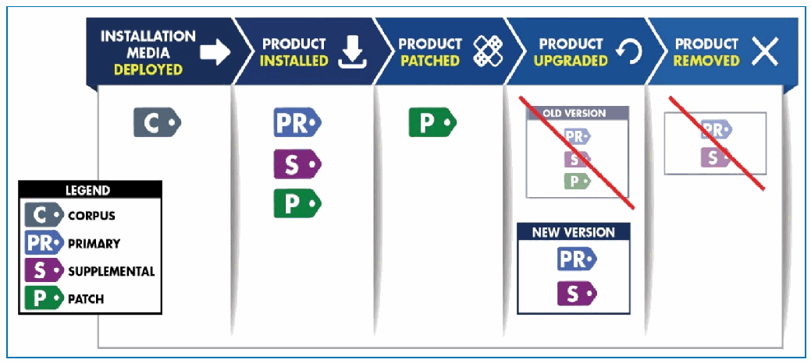
ソフトウェア製品のライフサイクルにおけるSWIDタグの利用を示す図。インストールメディアの配備から、製品のインストール、パッチ適用、アップグレード、削除へと進む。凡例はCorpus（C）、Primary（PR）、Supplemental（S）、Patch（P）のタグ種別を示す。インストール時にはPR／S／Pタグ、パッチ適用後にはPタグが示され、アップグレードでは旧版タグを取り消して新版のPR／Sタグに置き換える。製品削除時にもPR／Sタグを取り消す。
Figure 24: SWID Tags Support the Software Product Lifecycle
図24：ソフトウェア製品ライフサイクルを支えるSWIDタグ
未レビュー訳7 1
原文のみ
P RO GRA M A ND PR OJ ECT ACHI EVE ME NTS | F Y 2015
プログラムおよびプロジェクトの実績｜2015年度
未レビュー訳the collection and evaluation of a device state against Internet Security (CIS), and the TCG to bring existing work expected values. Over the past twelve months, the SACM into the IETF SACM working group to include OVAL and working group has been working on identifying use cases, specifications related to the TNC protocol. requirements, and architectural models to inform decisions
原文更新後、再確認待ち
In FY 2015, the SACM use cases were published by the
〔右段〕2015年度、SACMのユースケースはIETFによって
未レビュー訳about existing specifications and standards that can be
〔左段・続き〕参照可能な既存の仕様・標準、
未レビュー訳IETF as Request for Comments (RFC) 7632.
Request for Comments（RFC）7632として公開された。
未レビュー訳referenced, required modifications or extensions to existing
〔左段・続き〕必要な修正または既存仕様・標準の拡張、
未レビュー訳The working group has been developing the following
〔右段〕作業部会は、次のインターネットドラフトを作成している。
未レビュー訳specifications and standards, and any gaps that need to
〔左段・続き〕対処すべき不足領域について検討している。
未レビュー訳Internet Drafts:
〔右段・見出し続き〕インターネットドラフト：
未レビュー訳be addressed. CSD is working with DHS, the Center for
〔左段・続き〕CSDはDHSおよびCenter for
未レビュー訳| INTERNET DRAFT | PURPOSE |
| https://datatracker.ietf.org/doc/draft-ietf-sacm- terminology/ | Definition of the common terminology used within a number of working-group documents. |
| https://datatracker.ietf.org/doc/draft-ietf-sacm- requirements/ | Listing architectural and specification requirements for SACM specifications. |
| https://datatracker.ietf.org/doc/draft-ietf-sacm- architecture/ | Definition of the SACM architecture to inform development of transports. |
| https://datatracker.ietf.org/doc/draft-ietf-sacm- information-model/ | Definition of the SACM information model to inform development of data models. |
原本PDFの抜粋画像
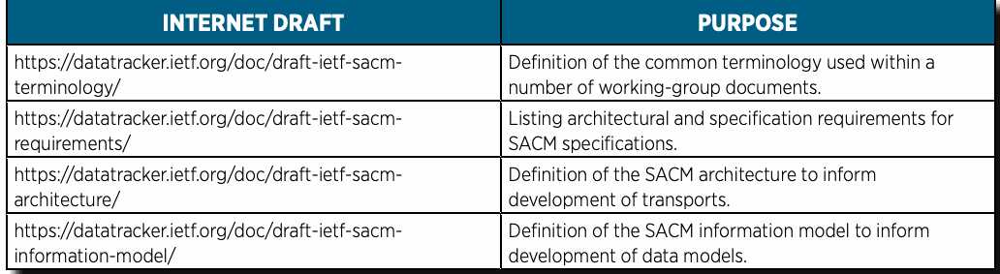
| インターネットドラフト | 目的 |
| https://datatracker.ietf.org/doc/draft-ietf-sacm- terminology/ | 複数の作業部会文書で用いる共通用語の定義。 |
| https://datatracker.ietf.org/doc/draft-ietf-sacm- requirements/ | SACM仕様に関するアーキテクチャ要件および仕様要件の一覧。 |
| https://datatracker.ietf.org/doc/draft-ietf-sacm- architecture/ | トランスポートの開発に向けたSACMアーキテクチャの定義。 |
| https://datatracker.ietf.org/doc/draft-ietf-sacm- information-model/ | データモデル開発に向けたSACM情報モデルの定義。 |
For more information, please refer to: http://datatracker. identifying and exchanging vulnerability information across ietf.org/wg/sacm/charter/
〔左段・案内〕詳細情報：http://datatracker.ietf.org/wg/sacm/charter/〔右段・続き〕脆弱性情報を特定し、
未レビュー訳disparate vulnerability databases.
〔右段・続き〕互いに異なる脆弱性データベース間で交換する。
未レビュー訳CSD also worked with government and industry partners For more information, please visit: http://www.first.org/ in the TCG to define a number of specifications related to global/sigs. the TNC protocol. The first such publication is the TNC SCAP
〔左段〕CSDは政府および産業界のパートナーとTCGで協力し、TNCプロトコルに関連する複数の仕様を策定した。最初の文書は「TNC SCAP」である。〔右段・案内〕詳細情報：http://www.first.org/global/sigs/
未レビュー訳Through work with international standards-developing
〔右段〕国際標準化団体（SDO）との協力を通じ、
未レビュー訳Messages for IF-M specification that supports carrying SCAP
〔左段・続き〕Messages for IF-M仕様であり、TNCプロトコル上でSCAP
未レビュー訳organizations (SDOs), SCAP and related security automation
〔右段・続き〕SCAPおよび関連するセキュリティ自動化機能は、
未レビュー訳content and results over the TNC protocols. The second is
〔左段・続き〕コンテンツと結果を運べる。2件目は
未レビュー訳capabilities are expected to evolve and expand in support of
〔右段・続き〕次のような、効果的なセキュリティ制御を定義・測定する必要性の高まりに応じて発展・拡張すると見込まれる。
未レビュー訳the TNC Enterprise Compliance Profile (ECP) and related
〔左段・続き〕TNC Enterprise Compliance Profile（ECP）および関連仕様であり、
未レビュー訳the growing need to define and measure effective security
〔右段〕国際標準化団体（SDO）との協力を通じ、SCAPと関連するセキュリティ自動化機能は、効果的なセキュリティ制御の定義・測定に対するニーズの高まりに応じて発展・拡張すると見込まれる。
未レビュー訳specifications that support the exchange of SWID data
〔左段・続き〕TNCプロトコル上でSWIDデータを交換するための仕様を含む。
未レビュー訳controls, assess and monitor ongoing aspects of information
〔右段・続き〕情報セキュリティの継続的な側面を評価・監視し、
未レビュー訳over the TNC protocols. The ECP enables the collection of
〔左段・続き〕ECPは、
未レビュー訳security, remediate noncompliance, and successfully
〔右段・続き〕セキュリティ上の不適合を是正し、
未レビュー訳SWID data from a device for use by external tools to provide
〔左段・続き〕外部ツールがソフトウェア資産情報を作成できるよう、デバイスからSWIDデータを収集する。
未レビュー訳manage systems in accordance with the Risk Management
〔右段・続き〕SP 800-37 Revision 1に記載されたリスク管理フレームワークに従ってシステムを管理する。〔引用題名〕
未レビュー訳software inventory information. SCAP and SWID data
〔左段・続き〕これらの仕組みで収集されたSCAP／SWIDデータは、
未レビュー訳Framework described in SP 800-37 Revision 1, Guide for
「Guide for
未レビュー訳collected using these mechanisms may be optionally used
〔左段・続き〕これらの仕組みで収集されたSCAP／SWIDデータは、任意で
未レビュー訳Applying the Risk Management Framework to Federal
Applying the Risk Management Framework to Federal
未レビュー訳for network access-control decision making, allowing the
〔左段・続き〕ネットワークアクセス制御の判断に利用でき、
未レビュー訳Information Systems: A Security Life Cycle Approach.
Information Systems: A Security Life Cycle Approach」。
未レビュー訳device state to be evaluated when devices connect and on
〔左段・続き〕デバイス接続時に状態を評価し、
未レビュー訳Standards that are developed and published by these SDOs
〔右段〕これらの標準化団体が策定・公開する標準は、
未レビュー訳an ongoing basis thereafter.
〔左段・続き〕その後も継続的に評価できる。
未レビュー訳will be considered for inclusion in future revisions of SCAP.
〔右段・続き〕将来のSCAP改訂に含めることが検討される。
未レビュー訳For more information on these specifications,
〔左段・案内〕これらの仕様に関する詳細情報：
未レビュー訳For More Information, See:
〔右段・案内見出し〕詳細情報：
未レビュー訳please visit: http://www.trustedcomputinggroup.org/
原文のみ
http://scap.nist.gov/
原文のみ
resources/tnc_scap_messages_for_ifm, and http://www. trustedcomputinggroup.org/resources/tnc_endpoint_
原文のみ
CONTACT:
〔右段・見出し〕連絡先：
未レビュー訳compliance_profile_specification. Finally, CSD has worked with the FIRST by participating Mr. David Waltermire in two Special Interest Groups (SIGs). The CVSS SIG (CVSS- (301) 975-3390 SIG) is focused on maintaining and improving the CVSS david.waltermire@nist.gov scoring model, based on community feedback. The CVSS-SIG published CVSS Revision 3 (CVSS v3) in June 2015. The second SIG, the Vulnerability Reporting and Data eXchange SIG (VRDX-SIG), researches and recommends methods for
〔左段・URL続き〕resources/tnc_scap_messages_for_ifm, およびhttp://www.trustedcomputinggroup.org/resources/tnc_endpoint_compliance_profile_specification.〔左段〕最後に、CSDはFIRSTの二つの特別関心グループ（SIG）に参加している。CVSS SIG（CVSS-SIG）は、コミュニティからの意見に基づきCVSSスコアリングモデルを維持・改善することに重点を置く。CVSS-SIGは2015年6月にCVSS Revision 3（CVSS v3）を公開した。2つ目のSIGであるVulnerability Reporting and Data eXchange SIG（VRDX-SIG）は、方法を調査・推奨している。〔右段・連絡先〕Mr. David Waltermire（301-975-3390、david.waltermire@nist.gov）。
未レビュー訳7 2
原文のみ
COMP U TER SECURITY DI VI SION ANNUAL REP ORT | 2 01 5 THIS PUBLICATION IS AVAILABLE FREE OF CHARGE FROM:
コンピュータセキュリティ部門 年次報告書｜2015年 本出版物は次から無料で入手できます：
未レビュー訳http://dx.doi.org/10.6028/NIST.SP.800-182
原文のみ
NVD is hosted and maintained by NIST and is sponsored
〔右段〕NVDはNISTがホスト・保守し、
未レビュー訳Security Automation Reference Data Through the NVD and the NCP, NIST is providing relevant by the Department of Homeland Security’s US-CERT. and important reference data in the areas of vulnerability The use of SCAP data by commercial security products, and configuration management. SCAP and the programs deployed in thousands of organizations worldwide, has that leverage it are moving the information assurance extended NVD’s effective reach. Increasing demand for NVD industry towards being able to standardize communications, XML data feeds (i.e., mechanisms that provide updated data and towards the collection and storage of relevant data in from data sources) and SCAP-expressed content from the standardized formats, as well as providing automated NVD website demonstrates an increased adoption of SCAP. means for the assessment and remediation of systems for
〔左段・見出し〕セキュリティ自動化の参照データ。NVDとNCPを通じて、NISTは脆弱性管理および構成管理の分野で重要な参照データを提供している。SCAPおよびそれを活用するプログラムは、情報保証分野が通信の標準化と、関連データの標準形式での収集・保管へ移行することを後押ししている。また、システムの脆弱性と構成準拠の両方を評価・是正する自動手段を提供する。〔右段・続き〕国土安全保障省のUS-CERTがスポンサーである。世界中の数千組織に導入された商用セキュリティ製品でSCAPデータが使われ、NVDの有効範囲は拡大した。NVDのXMLデータフィード（データソースから更新データを提供する仕組み）や、NVDウェブサイトのSCAPコンテンツへの需要増加は、SCAPの採用拡大を示している。
未レビュー訳The NVD continues to play a pivotal role in the Payment
〔右段〕NVDは、
未レビュー訳both vulnerabilities and configuration compliance.
〔左段・続き〕システムの脆弱性と構成準拠の両方を対象とする。
未レビュー訳Card Industry (PCI) efforts to mitigate vulnerabilities in credit
〔右段・続き〕クレジットカード業界（PCI）の脆弱性対策において重要な役割を果たしている。
未レビュー訳National Vulnerability Database (NVD) card systems. PCI mandates the use of NVD vulnerability Security automation reference data is currently severity scores in measuring the risk to payment card housed within the NVD. The NVD is the U.S. Government servers worldwide and for prioritizing vulnerability patching. repository of security automation data based on security PCI’s use of NVD severity scores helps enhance credit card automation specifications. This data provides a standards- transaction security and protects consumers’ personal based foundation for the automation of software asset, information. vulnerability, and security configuration management; For More Information, See: security measurement; and compliance activities. This data
〔左段・見出し〕National Vulnerability Database（NVD）。セキュリティ自動化の参照データは現在NVDに格納されている。NVDは、セキュリティ自動化仕様に基づく米国政府のセキュリティ自動化データリポジトリである。このデータは、ソフトウェア資産、脆弱性、セキュリティ構成の管理、セキュリティ測定、準拠性活動の自動化に向けた標準基盤を提供する。このデータは、〔右段・続き〕PCIは、決済カードサーバーのリスク測定および脆弱性パッチの優先順位付けにNVDの脆弱性深刻度スコアを使うことを義務付けている。NVDスコアを用いることで、カード取引の安全性を高め、消費者の個人情報を保護できる。〔右段・案内見出し〕詳細情報：
未レビュー訳https://nvd.nist.gov
原文のみ
supports security automation efforts based on the SCAP. The NVD includes databases of security configuration checklists
〔左段・続き〕SCAPに基づくセキュリティ自動化を支援する。NVDには、NCP向けのセキュリティ構成チェックリストが含まれる。
未レビュー訳CONTACTS:
〔右段・見出し〕連絡先：
未レビュー訳for the NCP, listings of publicly known software flaws, product names, and impact metrics. A formal validation Mr. Harold Booth
〔左段・続き〕一般に知られたソフトウェア欠陥、製品名、影響指標の一覧を含む。正式な検証〔右段・連絡先〕Mr. Harold Booth。
未レビュー訳Mr. Robert Byers
Mr. Robert Byers（ロバート・バイヤーズ氏）
未レビュー訳program tests the ability of vendor products to use some (301) 975-8441
〔左段・続き〕プログラムは、ベンダー製品がセキュリティ自動化データを利用できるかを試験する。〔右段・連絡先〕(301) 975-8441。
未レビュー訳(301) 975-3279
原文のみ
forms of security automation data, based on a product’s harold.booth@nist.gov
〔左段・続き〕そのデータには、製品の適合性を根拠に特定のエンタープライズ機能を支援する形式もある。〔右段・連絡先〕harold.booth@nist.gov。
未レビュー訳robert.byers@nist.gov
原文のみ
conformance in support of specific enterprise capabilities. SCAP defines the structure of standardized software National Checklist Program (NCP) flaws and security configuration reference data, also known
〔左段・続き〕SCAPは、標準化されたソフトウェア欠陥・セキュリティ構成参照データ（SCAPコンテンツとも呼ばれる）の構造を定義する。〔右段・見出し〕National Checklist Program（NCP）。
未レビュー訳There are many threats to information technology (IT),
〔右段・NCP〕情報技術（IT）には、多様な脅威が存在する。
未レビュー訳as SCAP content. This reference data is provided by the NVD
〔左段・続き〕これをSCAPコンテンツとも呼ぶ。この参照データはNVDが提供している。
未レビュー訳ranging from remotely launched network service exploits to
〔右段・続き〕遠隔から実行されるネットワークサービスの悪用から、
未レビュー訳(http://nvd.nist.gov/).
原文のみ
malicious code spread through infected emails, websites,
〔右段・続き〕感染メール、ウェブサイト、ダウンロードファイルを通じた悪意あるコードの拡散まで、幅広い。
未レビュー訳As of October 2015, the NVD contained the following and downloaded files. Vulnerabilities in IT products are
〔左段〕2015年10月時点で、NVDには次のリソースが含まれていた。〔右段・続き〕IT製品の脆弱性は毎日発見され、すぐに使える攻撃手法も
未レビュー訳discovered daily, and many ready-to-use exploitation
〔右段・続き〕多数、インターネット上で広く入手できる。
未レビュー訳resources:
〔左段・続き〕主なリソース：
未レビュー訳techniques are widely available on the Internet. Because IT
〔右段・続き〕IT製品は幅広い利用者を対象とすることが多いため、セキュリティ構成制御は通常、
未レビュー訳•Over 72,000 vulnerability advisories, with an average products are often intended for a wide variety of audiences, of 40 new vulnerabilities added daily; restrictive security configuration controls are usually not
•〔左段・箇条書き〕脆弱性勧告は72,000件超で、毎日平均40件の新たな脆弱性が追加される。〔右段・続き〕標準設定では有効になっていない。そのため、箱から出したばかりのIT製品の多くが直ちに脆弱な状態にある。さらに、
未レビュー訳•82 SCAP-expressed checklists containing thousands enabled by default. As a result, many out-of-the box IT of low-level security configuration checks that can be products are immediately vulnerable. In addition, identifying used by SCAP-validated security products to perform a reasonable set of security settings that achieve balanced automated evaluations of the system state; risk management is a complicated, arduous, and time-
•〔左段・箇条書き〕低レベルのセキュリティ構成チェックを数千件含むSCAP形式のチェックリストが82件あり、SCAP検証済み製品でシステム状態を自動評価できる。〔右段・続き〕リスク管理のバランスをとる合理的なセキュリティ設定を見つける作業は複雑で、骨が折れ、時間もかかる。
未レビュー訳•248 non-SCAP security checklists (e.g., English prose consuming task, even for experienced system administrators. guidance and configuration scripts); To facilitate the development of security configuration
•〔左段・箇条書き〕非SCAPセキュリティチェックリストが248件ある（英文の説明文や構成スクリプトなど）。〔右段・続き〕この作業は経験豊富なシステム管理者にとっても負担となる。CSDはセキュリティ構成チェックリストの開発を促し、
未レビュー訳•249 U.S. Computer Emergency Readiness Team (US- checklists for IT products and to make checklists more CERT) alerts; 4,402 US-CERT vulnerability summaries; organized and usable, CSD established the National and 10,286 SCAP machine-readable software flaw Check-list Program (NCP) in furtherance of its statutory responsibilities under the Federal Information Security checks, and; Management Act (FISMA) of 2002, Public Law 107-347, and
•〔左段・箇条書き〕米国コンピュータ緊急事態対策チーム（US-CERT）の警告249件、脆弱性概要4,402件、および機械可読なSCAPソフトウェア欠陥チェック10,286件。〔右段・続き〕チェックリストをより整理され使いやすくするため、NCPを設立した。これは2002年連邦情報セキュリティマネジメント法（FISMA）、Public Law 107-347に基づく法定責任を果たす一環であり、
未レビュー訳•A product dictionary with over 106,000 operating sys-alsoundertheCybersecurityResearchandDevelopmentAct, tem, application, and hardware name entries; and over which mandates that NIST “develop, and revise as necessary, 58,000 vulnerability advisories translated into Spanish. a checklist setting forth settings and option selections that minimize the security risks associated with each computer
•〔左段・箇条書き〕106,000件超のOS、アプリケーション、ハードウェア名を含む製品辞書、およびスペイン語に翻訳された脆弱性勧告58,000件超。〔右段・続き〕Cybersecurity Research and Development Actも根拠となる。同法はNISTに対し、広く使用される、または使用される見込みのある各コンピュータ
未レビュー訳7 3
原文のみ
P RO GRA M A ND PR OJ ECT ACHI EVE ME NTS | F Y 2015
プログラムおよびプロジェクトの実績｜2015年度
未レビュー訳hardware or software system that is, or is likely to become, Toassistusersinidentifyingautomatedchecklistcontent, widely used within the Federal Government.” In February NCP groups these checklists into tiers, from Tier I to Tier IV. 2008, revised Part 39 of the Federal Acquisition Regulation The NCP uses the tiers to rank checklists according to their (FAR) was published. Paragraph (d) of section 39.101 states, automation capability. Tier III and IV checklists include fully “In acquiring information technology, agencies shall include vetted SCAP content that has successfully demonstrated the appropriate IT security policies and requirements, conformance to the requirements outlined in SP 800-126. including use of common security configurations available Tier III & IV checklists are considered production-ready and from the NIST website at http://checklists.nist.gov. Agency are intended for use with SCAP-validated products. contracting officers should consult with the requiring official
原文更新後、再確認待ち
Tier II checklists document recommended security
〔右段〕Tier IIチェックリストは、推奨セキュリティ設定を機械可読の非標準形式で記述する。
未レビュー訳to ensure the appropriate standards are incorporated.”
適切な標準が組み込まれるようにすべきである。」
未レビュー訳settings in a machine-readable, nonstandard format, such
〔右段・続き〕たとえば独自形式や製品固有の構成スクリプトである。Tier Iチェックリストは文章形式で、
未レビュー訳In Memorandum M-08-22, OMB mandated the use of as a proprietary format or a product-specific configuration SCAP-validated products for the continuous monitoring of script. Tier I checklists are prose-based and contain no Federal Desktop Core Configuration (FDCC) compliance. machine-readable content. Users can browse the checklists, The NCP strives to encourage and assist federal agencies based on the checklist tier, IT product, IT product category, with these mandates.
〔左段〕OMBは覚書M-08-22で、連邦デスクトップコア構成（FDCC）への準拠を継続的に監視するためSCAP検証済み製品の使用を義務付けた。NCPは、連邦機関がこの義務を果たせるよう支援している。〔右段・続き〕機械可読コンテンツを含まない。利用者は、Tier、IT製品、製品カテゴリ、または所管機関でチェックリストを閲覧でき、
未レビュー訳or authority, and through a keyword search that searches the checklist name and summary for user specified terms. The
〔右段・続き〕チェックリスト名・概要を対象に利用者指定の語句で検索することもできる。
未レビュー訳The goals of the NCP are to:
〔左段・見出し〕NCPの目標：
未レビュー訳search results show the detailed checklist metadata and a
〔右段・続き〕検索結果には詳細なチェックリストメタデータ、関連SCAPコンテンツへのリンク、関連リソースへのリンクが表示される。
未レビュー訳•Facilitate the development and sharing of checklists by link to any SCAP content for the checklist, as well as links to providing a formal framework for checklist developers any supporting resources associated with the checklist. to submit checklists to NIST; To assist checklist developers, the NCP provides both
•〔左段・箇条書き〕チェックリスト開発者がNISTに提出できる正式な枠組みを用意し、チェックリストの開発・共有を促進する。〔右段・続き〕NCPは開発者向けに、提出・維持を支援する手動および自動インターフェースも提供する。
未レビュー訳•Provide guidance to developers to help them create manual and automated interfaces to facilitate the submission standardized, high-quality checklists that conform to and maintenance processes. The manual interface consists common operation environments; of a web application that guides the submitter through
•〔左段・箇条書き〕共通の運用環境に適合する標準化された高品質のチェックリストを作成できるよう、開発者にガイダンスを提供する。〔右段・続き〕手動インターフェースは、必要情報がすべて提出されるよう入力を案内するウェブアプリケーションである。
未レビュー訳•Help developers and users by providing guidelines for the data entry process to ensure that all of the required making checklists better documented and more usable; information is submitted. The submission is validated upon review, and a report is returned to the submitting
•〔左段・箇条書き〕チェックリストの文書化を改善し、使いやすくするための指針を開発者と利用者に提供する。〔右段・続き〕提出内容はレビュー時に検証され、受理または却下の根拠となる基準要件を確認したうえで、提出組織に報告が返される。
未レビュー訳•Encourage software vendors and other parties to de-organization, verifying either acceptance or rejection, based velop checklists; on the criteria requirements. For instance, Tier III and Tier
•〔左段・箇条書き〕ソフトウェアベンダーなどにチェックリストの開発を促す。〔右段・続き〕Tier III／IVのチェックリストは、SCAP Content Validation Toolを用いた検証が必要である（http://scap.nist.gov/revision/1.2/#tools からダウンロード可能）。
未レビュー訳•Provide a managed process for the review, update, and IV checklists require validation using the SCAP Content maintenance of checklists; Validation Tool (this tool is available for download via
•〔左段・箇条書き〕チェックリストのレビュー、更新、保守の管理されたプロセスを提供する。〔右段・続き〕NCPはSP 800-70 Revision 3「IT製品向け国家チェックリストプログラム：チェックリスト利用者および開発者向けガイドライン」で定義されており、
未レビュー訳•Provide an easy-to-use repository of checklists; and http://scap.nist.gov/revision/1.2/#tools). The NCP is defined in SP 800-70 Revision 3, National
•〔左段・箇条書き〕使いやすいチェックリストのリポジトリを提供する。〔右段・続き〕同文書はhttp://csrc.nist.gov/publications/PubsSPs.htmlで入手できる。
未レビュー訳•Encourage the use of automation technologies (e.g., ChecklistProgramforITProducts—GuidelinesforChecklist SCAP) for checklist application. UsersandDevelopers, which can be found at http://csrc.nist. NCP added 100 new checklists in FY 2015, bringing the gov/publications/PubsSPs.html. number of checklists posted on the website to 353 (see http://checklists.nist.gov). Of that total, 153 of the checklists, For More Information, See: addressing 86 platforms, are SCAP-expressed and can be https://checklists.nist.gov used with SCAP-validated products. This represents a 45 % increase in the number of SCAP-expressed checklists
•〔左段・箇条書き〕チェックリストへの適用にSCAPなどの自動化技術を用いるよう促す。2015年度、NCPはチェックリストを100件追加し、ウェブサイト掲載数は353件になった（http://checklists.nist.gov）。そのうち153件は86のプラットフォームに対応したSCAP形式で、SCAP検証済み製品で利用できる。SCAP形式のチェックリスト数は45％増加した。〔右段・案内〕詳細情報：https://checklists.nist.gov
未レビュー訳CONTACT:
〔右段・見出し〕連絡先：
未レビュー訳when compared to FY 2014, demonstrating continual use and adoption of this automated means of expressing and Mr. Stephen Quinn
〔左段・続き〕これは2014年度と比べて45％の増加であり、チェックリストコンテンツを表現し〔右段・連絡先〕Mr. Stephen Quinn。
未レビュー訳(301) 975-6967
原文のみ
consuming checklist content.
〔左段・続き〕利用するこの自動化手段の継続的な採用を示している。
未レビュー訳stephen.quinn@nist.gov
原文のみ
Organizations can use checklists obtained from the NCP website for automated security configuration patch assessment. The NCP currently hosts SCAP checklists for Internet Explorer 9.0, Internet Explorer 10.0, Office 2010, Red Hat Enterprise Linux, Windows 7, Windows 8, Windows Server 2012, and other products.
〔左段〕組織はNCPウェブサイトから取得したチェックリストを、セキュリティ構成パッチの自動評価に利用できる。NCPはInternet Explorer 9.0／10.0、Office 2010、Red Hat Enterprise Linux、Windows 7／8、Windows Server 2012などの製品向けにSCAPチェックリストを提供している。
未レビュー訳7 4
原文のみ
COMP U TER SECURITY DI VI SION ANNUAL REP ORT | 2 01 5 THIS PUBLICATION IS AVAILABLE FREE OF CHARGE FROM:
コンピュータセキュリティ部門 年次報告書｜2015年 本出版物は次から無料で入手できます：
未レビュー訳http://dx.doi.org/10.6028/NIST.SP.800-182
原文のみ
United States Government
〔左段・見出し〕米国政府
未レビュー訳Apple OS X Security Configuration CSD is working to develop secure system configuration
〔右段・見出し〕Apple OS Xのセキュリティ構成。〔左段・見出し続き〕
未レビュー訳Configuration Baseline (USGCB) /
構成ベースライン（USGCB）／
未レビュー訳baselines supporting different operational environments for
〔右段〕CSDは、異なる運用環境向けにセキュアなシステム構成ベースラインを開発している。対象は
未レビュー訳FDCC Baselines The United States Government Configuration Baseline Apple OS X Version 10.10, “Yosemite.” These configuration (USGCB) initiative creates security configuration baselines guidelines will assist organizations with hardening OS X for information technology (IT) products that are widely technologies and provide a basis for unified controls and deployed across the federal agencies. The project originally settings for OS X workstations and for mobile system evolvedfromtheFederalDesktopCoreConfiguration(FDCC) security configurations for federal agencies. mandate originally described in a March 2007 memorandum Theconfigurationsarebasedonacollectionofresources, from OMB, Memorandum M-07-11. The purpose of the USGCB including the existing NIST OS X configuration guidance, program is to help improve information security and reduce the OS X security configuration guide, the Department of overall IT operating costs by providing commonly accepted Defense (DOD) OS X Recommended Settings, and the and agreed upon security configurations for major operating Defense Information Systems Agency (DISA) OS X Security systems and applications.
〔左段・見出し〕FDCCベースライン。米国政府構成ベースライン（USGCB）イニシアチブは、連邦機関で広く展開されるIT製品向けに、セキュリティ構成ベースラインを作成する。取り組みは、2007年3月のOMB覚書M-07-11で定められた連邦デスクトップコア構成（FDCC）義務から発展した。USGCBプログラムは、主要なOSとアプリケーションに広く受け入れられ、合意済みのセキュリティ構成を提供し、情報セキュリティの向上とIT運用コスト全体の削減を目指す。〔右段・続き〕Apple OS X Version 10.10（Yosemite）向けである。これらの構成ガイドラインは、OS X技術の堅牢化を支援し、連邦機関のワークステーションおよびモバイルシステム向けに、統一された制御とセキュリティ設定の基盤を提供する。構成の根拠には、既存のNIST OS X構成ガイダンス、OS X security configuration guide、国防総省（DOD）の推奨設定、国防情報システム局（DISA）のOS X Security
未レビュー訳Technical Implementation Guide (STIG). The project team
〔右段・続き〕Technical Implementation Guide（STIG）が含まれる。プロジェクトチームは、
未レビュー訳Through the NCP described in SP 800-70 Revision 3, aggregated 400 initial settings, determined which settings a baseline submitter may express interest in submitting a to include in the configuration baseline, and determined
〔左段〕SP 800-70 Revision 3で説明するNCPを通じて、ベースライン提出者は
未レビュー訳appropriate values for each included setting. The desired
〔右段・続き〕採用する各設定に適切な値を決めた。必要な
未レビュー訳candidate for use in the USGCB program.
〔左段・続き〕USGCBプログラムで使用する候補の提出意向を示せる。
未レビュー訳configuration items have been established, and the team is
〔右段・続き〕構成項目が確立され、チームは
未レビュー訳CSD provides ongoing support for the USGCB
〔左段〕CSDはUSGCB自動化コンテンツを継続的に支援し、
未レビュー訳continuing to develop shell scripts that apply the settings
〔右段・続き〕それらの設定を適用するシェルスクリプトの開発を続けている。設定は
未レビュー訳automation content, including periodic updates to the
〔左段・続き〕既存コンテンツを定期更新するとともに、ベンダーに候補の提出を促し、
未レビュー訳to an OS X 10.10 system. The settings are organized into
〔右段・続き〕異なる
未レビュー訳existing content, encouraging vendors to submit candidates,
〔左段・続き〕USGCB利用者が環境内の情報システムのセキュリティ準拠を継続的に監視し、
未レビュー訳three key baselines, which are appropriate for different
〔右段・続き〕環境に適する3つの主要ベースラインに分類される。
未レビュー訳assisting USGCB users in continuously monitoring and
〔左段・続き〕その準拠状況を評価できるよう支援する。この継続的監視の要素は
未レビュー訳environments:
〔右段・見出し続き〕環境：
未レビュー訳assessing security compliance of information systems within their environment. This ongoing monitoring element • The Enterprise baseline is appropriate for centrally supports the Risk Management Framework described in managed, networked systems; SP 800-37 Revision 1. It also supports the Core functions • The Small Office Home Office baseline, sometimes of the Cybersecurity Framework, providing USGCB users called Standalone, describes small, informal computer with settings that protect digital assets and supports the installations that are used for home or business pur-detection of suspicious activity.
〔左段・続き〕SP 800-37 Revision 1で説明されるリスク管理フレームワークを支援する。また、デジタル資産を保護し、不審な活動の検出を支援する設定により、サイバーセキュリティ・フレームワークの中核機能も支える。〔右段・箇条書き〕エンタープライズベースラインは、集中管理されたネットワークシステムに適している。
未レビュー訳poses; and
〔右段・箇条書き続き〕小規模オフィス／ホームオフィス用（スタンドアロンとも呼ばれる）ベースラインは、家庭や業務目的で使う小規模かつ非公式なコンピュータ環境を対象とする。
未レビュー訳During FY 2016, the USGCB program will continue to • The Specialized Security-Limited Functionality baseline provide ongoing maintenance of the baseline artifacts and is appropriate for systems where security requirements to consider additional applicable platforms as authored are more stringent and where the implementation of and submitted by the platform vendors, as well as other security safeguards is likely to reduce functionality. organizations that wish to contribute candidate content.
〔左段〕2016年度もUSGCBプログラムはベースライン成果物の保守を続ける。プラットフォームベンダーや他の貢献希望組織が作成・提出する適用可能なプラットフォームと候補コンテンツを検討する。〔右段・箇条書き〕Specialized Security-Limited Functionalityベースラインは、セキュリティ要件がより厳格で、セキュリティ対策の導入が機能を低下させる可能性のあるシステムに適している。
未レビュー訳SCAP, defined and discussed in an earlier section of this
〔右段・続き〕前節で定義・説明したSCAPは、
未レビュー訳For More Information, See:
〔左段・案内見出し〕詳細情報：
未レビュー訳report, will be used to express configuration settings and check system configuration compliance.
〔右段・続き〕構成設定を表し、システム構成の準拠性を確認するために使われる。
未レビュー訳http://usgcb.nist.gov
原文のみ
During FY 2013, CSD provided a block of initial settings
〔右段〕2013年度、CSDは初期設定一式を
未レビュー訳CONTACT:
〔左段・見出し〕連絡先：
未レビュー訳to Apple and these settings were posted for the Apple community on a periodic basis for public review, discussion,
〔右段・続き〕Appleに提供した。これらの設定は、一般公開のレビュー、議論、
未レビュー訳Team email: usgcb@nist.gov
原文のみ
correction and agreement. Each setting has a designated
〔右段・続き〕修正、合意のため定期的にAppleコミュニティへ提示された。各設定には固有の
未レビュー訳Mr. Stephen Quinn
〔左段・連絡先〕スティーブン・クイン氏（Mr. Stephen Quinn）。
未レビュー訳Common Configuration Enumeration (CCE) number, which
〔右段・続き〕共通構成列挙（CCE）番号が割り当てられ、
未レビュー訳(301) 975-6967
原文のみ
aids in the long-term tracking of the setting. Ultimately, the
〔右段・続き〕設定の長期的な追跡に役立つ。最終的には設定を試験し、構成ベースラインに含める。さらにCSDは、
未レビュー訳stephen.quinn@nist.gov
原文のみ
settings will be tested and included in the configuration baselines. In addition, CSD started the production of a draft guideline, GuidetoSecuringAppleOSX10.8Systemsfor ITProfessionals. This guidance, which is similar in structure to the SP 800-68, WindowsXPSecurityGuide, focuses on
〔右段・続き〕設定は試験後、構成ベースラインに含める。さらにCSDは、ドラフトガイドライン「Guide to Securing Apple OS X 10.8 Systems for IT Professionals」の作成を開始した。このガイダンスはSP 800-68「Windows XP Security Guide」と類似の構成で、
未レビュー訳7 5
原文のみ
P RO GRA M A ND PR OJ ECT ACHI EVE ME NTS | F Y 2015
プログラムおよびプロジェクトの実績｜2015年度
未レビュー訳providing detailed information about the security of Apple T E C H N I C A L S E C U R I T Y OS X, and providing security configuration guidelines for all
原文更新後、再確認待ち
M E T R I C S
指標
未レビュー訳users of the Apple OS X 10.8 operating system. During FY 2014, a majority of all proposed settings were
Apple OS X 10.8オペレーティングシステムの全利用者向けにセキュリティ構成ガイドラインを提供する。2014年度には、提案された設定の大半がスクリプト化された。
未レビュー訳Security Risk Analysis of Enterprise
エンタープライズ
未レビュー訳scripted. The corresponding spreadsheet batches have been
対応するスプレッドシートの一括処理は
未レビュー訳Networks Using Attack Graphs
ネットワークのセキュリティリスク分析（攻撃グラフを使用）
未レビュー訳sent to Apple for feedback; approximately 230 settings are now completed. Settings have also been implemented on OS The protection of computer networks from malicious X 10.9, when possible. Work on the draft guideline, Guideto intrusions is critical to the economy and security of the SecuringAppleOSX10.8SystemsforITProfessionals, was nation. Vulnerabilities are regularly discovered in software temporarily suspended while configuration setting research applications that are exploited to stage cyber attacks.
〔左段・続き〕Appleへフィードバックを求めるために送付された。約230件の設定が現在完成しており、可能な場合はOS X 10.9にも実装した。ドラフト文書「Guide to Securing Apple OS X 10.8 Systems for IT Professionals」の作業は、構成設定の調査が行われている間、一時中断された。〔右段〕コンピュータネットワークを悪意ある侵入から保護することは、経済と国家安全保障にとって重要である。ソフトウェアアプリケーションには脆弱性が定期的に発見され、それがサイバー攻撃の足掛かりとして悪用される。
未レビュー訳System administrators need objective metrics to guide and
システム管理者は、エンタープライズネットワークのセキュリティリスクを管理する際に指針となり、
未レビュー訳was performed, but was resumed in FY 2015.
〔左段・続き〕調査が行われた後、2015年度に作業が再開された。
未レビュー訳justify decision making as they manage the security risk
意思決定を裏付ける客観的な指標を必要としている。この研究の目的は、
未レビュー訳In FY 2015, CSD focused on the OS X 10.10 operating
2015年度、CSDはセキュリティ試験の対象としてOS X 10.10オペレーティング
未レビュー訳of enterprise networks. The objective of this research is to
エンタープライズネットワークのセキュリティリスクを分析する標準モデルの開発を、この研究の目的としている。
未レビュー訳system for security testing. CSD finalized and tested the
システムに焦点を当てた。CSDは
未レビュー訳develop a standard model for the security risk analysis of
コンピュータネットワークのセキュリティリスク分析用の標準モデルを開発する。
未レビュー訳entire security configuration of 230 settings for OS X 10.10
OS X 10.10の230件すべての設定から成るセキュリティ構成を最終化し、試験した。
未レビュー訳computer networks. A standard model will enable NIST to
この標準モデルにより、NISTは
未レビュー訳and has continued updating the draft publication that was
〔左段・続き〕さらに、ドラフト文書の更新を続け、
未レビュー訳answer questions such as “Are we more secure now than
「今は昨日より安全か」
未レビュー訳started for OS X 10.8 and has now been focused on OS X
OS X 10.8向けに開始した文書の対象を、現在はOS X
未レビュー訳yesterday?” or “How does the security of one network
や「あるネットワーク構成のセキュリティは別の構成と比べてどうか」
未レビュー訳10.10. For several months, one of the script’s three profiles
10.10に移している。スクリプトにある3つのプロファイルのうち1つは数か月間、
未レビュー訳configuration compare with another one?” Also, having a
といった問いに答えられる。さらに、
未レビュー訳was deployed on select CSD systems for extensive testing.
広範な試験のため、一部のCSDシステムに導入された。
未レビュー訳standard model to measure network security will allow users,
ネットワークセキュリティを測る標準モデルがあれば、利用者、
未レビュー訳So far, results have been positive.
これまでの結果は良好である。
未レビュー訳vendors, and researchers to evaluate methodologies and
ベンダー、研究者がネットワークセキュリティの方法論や製品を、首尾一貫した形で評価できる。
未レビュー訳In FY 2016, CSD plans to release the draft publication, products for network security in a coherent and consistent Guide to Securing Apple OS X 10.10 Systems for IT manner. Professionals, for at least one public comment period, and
〔左段〕2016年度、CSDはドラフト文書「Guide to Securing Apple OS X 10.10 Systems for IT Professionals」を少なくとも1回、公開コメントに付す予定であり、
未レビュー訳CSD has approached the challenge of network security
〔右段〕CSDはネットワークセキュリティの課題に、
未レビュー訳plans to release a final version after incorporating changes
公開コメント期間で寄せられた変更を取り入れて最終版を公開する計画である。
未レビュー訳analysis by capturing vulnerability interdependencies
脆弱性間の依存関係を捉えることで取り組み、
未レビュー訳from the comment period(s). CSD will continue to refine the
CSDは引き続きスクリプトを改良し、
未レビュー訳and measuring security, based on how real attackers have
実際の攻撃者がネットワークへ侵入した方法に基づいてセキュリティを測定している。
未レビュー訳script and add more settings to the configuration.
構成設定をさらに追加する。
未レビュー訳penetrated networks. CSD’s methodology for security risk
セキュリティリスク分析に関するCSDの方法論は、
未レビュー訳For More Information, See:
詳細は次を参照：
未レビュー訳analysis is based on attack graphs. CSD analyzes attack paths through a network, providing a probabilistic metric of
攻撃グラフに基づいている。CSDはネットワーク内の攻撃経路を分析し、
未レビュー訳http://csrc.nist.gov/projects/apple-os/
http://csrc.nist.gov/projects/apple-os/
未レビュー訳the overall system risk. Through this metric, CSD analyzes trade-offs between security costs and security benefits.
システム全体のリスクを確率的に測る指標を算出する。この指標を用いて、CSDはセキュリティ対策のコストと便益のトレードオフを分析する。
未レビュー訳CONTACTS:
連絡先：
未レビュー訳Computer systems are vulnerable to both known and
コンピュータシステムは、既知の攻撃と
未レビュー訳Mr. Mark Trapnell
原文のみ
Mr. Lee Badger
原文のみ
zero-day attacks. Enterprises have begun to move parts
ゼロデイ攻撃の双方に対して脆弱である。企業はネットワークの一部を
未レビュー訳(301) 975-4091
原文のみ
(301) 975-3176
原文のみ
of their networks from a traditional infrastructure into
従来型のインフラストラクチャから
未レビュー訳mark.trapnell@nist.gov
原文のみ
lee.badger@nist.gov
原文のみ
cloud computing environments. Cloud providers can offer virtual servers that can be rented on demand by users. This
クラウドコンピューティング環境へ移行し始めている。クラウドプロバイダーは、必要に応じて利用者に貸し出せる仮想サーバーを提供できる。この
未レビュー訳Mr. Murugiah Souppaya
原文のみ
paradigm enables cloud customers to acquire computing
方式により、クラウド利用者はコンピューティング
未レビュー訳(301) 975-4102
原文のみ
resources with high efficiency, low cost and great flexibility.
リソースを高い効率、低コスト、高い柔軟性で取得できる。
未レビュー訳murugiah.souppaya@nist.gov
原文のみ
However, it also introduces many security problems that need to be solved. In FY 2015, CSD attempted to model the problem of cloud security using a cloud-level attack graph. An attacker can create stealthy bridges (i.e., a covert connection between disparate networks that should be isolated) in a cloud environment. These stealthy bridges can be created using zero day vulnerabilities that cannot be detected by vulnerability scanners. The stealthy bridges can be used to constructamulti-stepattackpathandfacilitateasubsequent intrusion process across enterprise islands in a cloud. CSD has developed a new technique to detect potential attacks in a Cloud using a probabilistic attack graph model. CSD
しかし、クラウド環境には解決すべき多くのセキュリティ上の問題もある。2015年度、CSDはクラウドレベルの攻撃グラフを用いてクラウドセキュリティの問題をモデル化しようとした。攻撃者はクラウド環境内にステルスブリッジ（隔離すべき別々のネットワーク間に作られる隠れた接続）を作成できる。こうしたブリッジは、脆弱性スキャナーでは検出できないゼロデイ脆弱性を利用して作られることがある。ステルスブリッジは複数段階の攻撃経路を構築し、クラウド内の企業ネットワーク群を横断する後続侵入を可能にする。CSDは確率的攻撃グラフモデルを用いてクラウド内の潜在的攻撃を検出する新手法を開発した。CSDは
未レビュー訳7 6
原文のみ
COMP U TER SECURITY DI VI SION ANNUAL REP ORT | 2 01 5 THIS PUBLICATION IS AVAILABLE FREE OF CHARGE FROM:
コンピュータセキュリティ部門年次報告書｜2015 本出版物は次から無料で入手できます：
未レビュー訳published a paper, InferringtheStealthyBridgesBetween countries, isolate a set of countries from the Internet, or Enterprise Network Islands in Cloud Using Cross Layer break the Internet up into non-communicating clusters BayesianNetworks,for the Tenth International Conference (the research was published in the InternationalJournal on Security in Communication Networks, in Beijing, which ofComputerScience:TheoryandApplications, as well was held October 24-26, 2015.
原文更新後、再確認待ち
as in the proceedings of the WorkshopfortheSecurity ofEmergingNetworkTechnologies).
「Workshop for the Security of Emerging Network Technologies」の議事録にも掲載された）。
未レビュー訳In FY 2016, CSD plans to develop new techniques and metrics to detect attacks on Cloud Computing and for • The research team showed how to leverage Internet network forensics analysis using Bayesian Networks. CSD Protocol Version 6 (IPv6) network migrations to en-also plans to publish the results as a NIST report and as white hance security capabilities. This was done through an papers in conferences and journals.
〔左段〕2016年度、CSDはクラウドコンピューティングへの攻撃を検出する新手法と指標、およびベイズネットワークを用いたネットワークフォレンジック分析手法を開発する計画である。CSDは結果をNIST報告書や会議・学術誌向けの論文として公表する予定である。〔右段・箇条書き〕研究チームは、インターネットプロトコル第6版（IPv6）へのネットワーク移行を活用し、セキュリティ機能を強化する方法を示した。これは、
未レビュー訳evaluation of how to optimize the placement of defen-sive resources in specially secured IPv6 networks. The
特別に保護されたIPv6ネットワーク内で、防御リソースを最適に配置する方法を評価して実施した。その配置は、
未レビュー訳For More Information, See:
詳細情報：
未レビュー訳optimal placements best limit the movement of internal
内部攻撃者の移動を
未レビュー訳http://csrc.nist.gov/groups/SNS/security-risk-analysis-
原文のみ
attackers to a small set of hosts or else force them to
少数のホストに限定するか、あるいは攻撃者に
未レビュー訳enterprise-networks/
原文のみ
penetrate through the special security boundaries (the research was published in the journal DataandAppli-
特別なセキュリティ境界を突破させる（研究成果は「Data and Applications
未レビュー訳CONTACT:
連絡先：
未レビュー訳cationsSecurityandPrivacy).
Security and Privacy」誌に掲載された）。
未レビュー訳•In previous work, the team discovered a critical weak-
•これまでの研究で、チームは重大な弱点を発見した。それは、
未レビュー訳Dr. Anoop Singhal
原文のみ
ness in the most widely cited Threshold Random Walk
最も広く引用されているThreshold Random Walk
未レビュー訳(301) 975-4432
原文のみ
(TRW) network scan detection algorithm that enabled
（TRW）ネットワークスキャン検出アルゴリズムにあり、
未レビュー訳anoop.singhal@nist.gov
原文のみ
a full circumvention by attackers. To mitigate the prob-lem, we invented a scan detection methodology that
攻撃者による完全な回避を可能にしていた。問題を緩和するため、チームは新しいスキャン検出手法を考案した。この手法は
未レビュー訳Algorithms for Intrusion Measurement
侵入測定アルゴリズム
未レビュー訳will detect TRW circumvention activity and that also
TRW回避活動を検出し、さらに
未レビュー訳The Algorithms for Intrusion Measurement (AIM)
侵入測定アルゴリズム（AIM）
未レビュー訳acts as an effective general-purpose scan detection
汎用スキャン検出手段としても有効に機能する
未レビュー訳project furthers measurement science in designing and
プロジェクトであり、アルゴリズムの設計と実装に関する計測科学を前進させる。
未レビュー訳algorithm. However, we find that the most effective
アルゴリズムとなる。しかし、最も効果的な
未レビュー訳implementing algorithms to both detect attackers and
攻撃者を検出するとともに、
未レビュー訳approach is a composite solution that combines our
方法は、こちらの手法と
未レビュー訳limit their ability to intrude into a system. Most of the
システムへの侵入能力を制限する。作業の大部分では、
未レビュー訳approach with TRW (the research was published in the
TRWを組み合わせた複合方式である（研究成果は
未レビュー訳work leverages graph theory (the math of dots and lines)
グラフ理論（点と線の数学）を活用し、
未レビュー訳journal of SecurityInformatics).
「Security Informatics」誌に掲載された）。
未レビュー訳and algorithmic complexity analysis (the math around fast computation). In performing this work, the AIM project In FY 2016, the AIM project will work on new methods seeks to enhance the nation’s ability to defend itself from for network anomaly detection, efficient representations
〔左段・続き〕アルゴリズムの計算量解析（高速計算の数学）も活用する。この研究を通じてAIMプロジェクトは、ネットワーク由来の攻撃から〔右段〕2016年度、AIMプロジェクトはネットワーク異常検知の新手法を研究する。
未レビュー訳for attack graphs, efficient computation of access control
攻撃グラフの効率的な表現と、アクセス制御方針を効率的に計算する方法、
未レビュー訳network-borne attacks.
国を守る能力の強化を目指している。
未レビュー訳policy to restrict insider attacks, vertex partitioning on
（内部者攻撃を制限するためのもの）、大規模グラフの頂点分割による
未レビュー訳This scientific research is conducted in partnership
この科学研究は、
未レビュー訳massive graphs to enable security resiliency analyses, and
セキュリティレジリエンス分析の実施、さらに
未レビュー訳with the Army Research Laboratory (ARL), the University
米陸軍研究所（ARL）、メリーランド大学、
未レビュー訳methods for using attack graphs to perform defense-in-
攻撃グラフを用いた多層防御の
未レビュー訳of Maryland, and the Center for Applied Internet Data
およびCenter for Applied Internet Data
未レビュー訳depth measurements.
評価を行う手法を研究する。
未レビュー訳Analysis. ARL’s participation helps focus the work on solving immediate critical problems facing U.S. Government For More Information, See: networks. However, research solutions are made publicly http://csrc.nist.gov/projects/aim/ available and are designed to be generally applicable to as many environments as possible.
〔左段・続き〕Analysis（応用インターネットデータ分析センター）との共同で実施している。ARLの参加は、米国政府ネットワークが直面する差し迫った重要課題の解決に研究の焦点を当てるのに役立つ。一方、研究成果は公開され、できるだけ多くの環境に適用できるよう設計されている。〔右段〕詳細情報：http://csrc.nist.gov/projects/aim/
未レビュー訳CONTACT:
連絡先：
未レビュー訳In FY 2015, the AIM project completed research in
2015年度、AIMプロジェクトは複数分野で研究を完了した。
未レビュー訳Mr. Peter Mell
原文のみ
several areas: measurements of Internet resilience of
具体的には、共謀する国々によるインターネットの回復力と、
未レビュー訳(301) 975-5572
原文のみ
colluding country attacks, the optimal placement of
IPv6ネットワークにおける防御リソースの最適配置、
未レビュー訳peter.mell@nist.gov
原文のみ
defensive resources in Internet Protocol (IP) v6 networks, and circumvention-resistant network scan detection. More specifically, the project team accomplished the following:
回避耐性を備えたネットワークスキャン検出について研究した。プロジェクトチームの主な成果は次のとおりである。
未レビュー訳•The team analyzed the resilience of the Internet with respect to countries colluding in using their influence over the Internet infrastructure to disconnect two
•チームは、各国がインターネット基盤に対する影響力を共謀して行使し、2か国を切断し、
未レビュー訳7 7
原文のみ
P RO GRA M A ND PR OJ ECT ACHI EVE ME NTS | F Y 2015
プログラムおよびプロジェクトの成果｜2015年度
未レビュー訳combinatorial measurement tools; input modeling and
原文更新後、再確認待ち
Automated Combinatorial Testing Software developers often encounter failures that result fault location tools; a provisional patent application on the from an unexpected interaction between components. NIST oracle-free testing method; plus seminars at a number of research has shown that most failures are triggered by one conferences, universities, and federal agencies. or two parameters, and progressively fewer by three, four, or Plans for FY 2016 include combinatorial testing for more parameters (see Figure 25 below), a relationship that big data software; initiation of a new CRADA project; is called the Interaction Rule. These results have important measurement of input model combination coverage of implications for testing. If all faults in a system can be security-critical software; a beta release of tools for testing triggered by a combination of nor fewer parameters, then to the modified condition decision coverage test criterion testing all n-way combinations of parameters can provide for life-critical software; developing tools to implement very strong fault detection efficiency. These methods are oracle-free testing methods; analysis of empirical data being applied to software and hardware testing for reliability, on failures; further development of methods and tools for safety, and security. CSD’s focus is on empirical results and fault localization; and seminars, workshops, and tutorials at real-world problems.
〔左段・見出し〕組合せテストの自動化。〔左段〕ソフトウェア開発者は、コンポーネント間の予期しない相互作用による障害に遭遇することがある。NISTの研究では、障害の大半は1つまたは2つのパラメータで引き起こされ、関与するパラメータ数が3、4、さらに多くなるほど障害が段階的に少なくなることが示されている（下の図25参照）。この関係を「相互作用ルール」と呼ぶ。この結果はテストに重要な意味を持つ。システム内の障害がn個以下のパラメータの組合せで発生するなら、n-wayの全組合せを試験することで、非常に高い障害検出効率を得られる。こうした手法は信頼性、安全性、セキュリティのためのソフトウェアとハードウェアの試験に適用されている。CSDは実証的な結果と実際の問題に重点を置く。〔右段・前節からの続き〕組合せ計測ツール、入力モデリング、故障箇所特定ツール、オラクル不要試験法に関する仮特許出願を行い、会議、大学、連邦機関でセミナーを実施した。2016年度には、ビッグデータソフトウェアの組合せテスト、新規CRADAプロジェクトの開始、セキュリティ上重要なソフトウェアの入力モデル組合せ網羅率測定、生命関連ソフトウェアの修正条件／判定網羅（MC/DC）基準に対応するツールのベータ版、オラクル不要試験法を実装するツールの開発、障害実データの分析、故障箇所特定手法・ツールの追加開発、ならびにセミナー、ワークショップ、チュートリアルを
未レビュー訳professional meetings and research labs.
専門家向け会合や研究所で実施する計画である。
未レビュー訳Project highlights for FY 2015 include the publication of
2015年度の主な成果には、
未レビュー訳For More Information, See:
詳細情報：
未レビュー訳a paper on a new method of “oracle-free testing”, a form
「オラクル不要テスト」と呼ばれる新手法に関する論文の出版が含まれる。これは、
未レビュー訳http://csrc.nist.gov/groups/SNS/acts/
原文のみ
of consistency checking using two-layer covering arrays with equivalence classes to automatically detect a large
同値類を用いた二層被覆配列による一貫性検査で、多数のソフトウェア障害を自動検出する方法である。
未レビュー訳CONTACTS:
連絡先：
未レビュー訳class of software faults; invited lectures at conferences and universities; leading the fourth International Workshop on
さらに、会議や大学での招待講演、第4回国際
未レビュー訳Mr. Rick Kuhn
原文のみ
Dr. Raghu Kacker
原文のみ
Combinatorial Testing, held in conjunction with the eighth
組合せテストワークショップを第8回IEEEソフトウェアテスト国際会議と併催した。また、
未レビュー訳(301) 975-3337
原文のみ
(301) 975-2109
原文のみ
IEEE International Conference on Software Testing; initiating
生命関連ソフトウェアの高い保証水準に伴うコストを組合せ手法で削減する研究を開始し、
未レビュー訳kuhn@nist.gov
原文のみ
raghu.kacker@nist.gov
原文のみ
research on using combinatorial methods to reduce the cost of high assurance for life-critical software, tools and methods
高い保証水準が求められる生命関連ソフトウェアのコストを組合せ手法で削減する研究、ツール、手法の開発、
未レビュー訳Roots of Trust
信頼の基点
未レビュー訳for locating faults from test results; and analyzing the factors
試験結果から故障箇所を特定するツールと手法の開発、ならびに
未レビュー訳Modern computing devices consist of various hardware,
現代のコンピューティング機器は、複数の抽象化レイヤーにわたるハードウェア、
未レビュー訳involved in different types of software faults. Collaborators
さまざまな種類のソフトウェア障害に関わる要因の分析も行った。共同研究者には、
未レビュー訳firmware, and software components at multiple layers of
ファームウェア、ソフトウェアの各コンポーネントで構成されている。
未レビュー訳include researchers from the University of Texas at Arlington,
テキサス大学アーリントン校、
未レビュー訳abstraction. Many security and protection mechanisms are
多くのセキュリティ・保護機構は現在、
未レビュー訳the University of Texas at Dallas, East Carolina University,
テキサス大学ダラス校、イーストカロライナ大学、
未レビュー訳currently rooted in software that, along with all underlying
ソフトウェアを基盤としているが、そのソフトウェアと基盤となるすべての
未レビュー訳and Duke University.
デューク大学の研究者が含まれる。
未レビュー訳components, must be trusted and not tampered with. A vulnerability in any of those components could compromise the trustworthiness of the security mechanisms that rely upon those components. Stronger security assurances may be possible by grounding security mechanisms in roots of trust. Roots of trust are highly reliable and secure hardware, firmware, and software components that perform specific, critical security functions. Because roots of trust are inherently trusted, they must be secure by their design. As such, many roots of trust are implemented in hardware or protected firmware so that malware cannot tamper with the functions they provide. Roots of trust provide a firm foundation from which to build security and trust.
コンポーネントは信頼でき、改ざんされない必要がある。どれか1つのコンポーネントに脆弱性があれば、それに依存するセキュリティ機構の信頼性が損なわれるおそれがある。セキュリティ機構を信頼の基点に基づかせることで、より強いセキュリティ保証が得られる可能性がある。信頼の基点は、特定の重要なセキュリティ機能を実行する、信頼性と安全性の高いハードウェア、ファームウェア、ソフトウェアの各コンポーネントである。信頼の基点は本質的に信頼されるため、設計段階から安全でなければならない。そのため、多くはハードウェアまたは保護されたファームウェアに実装され、マルウェアが提供機能を改ざんできないようにする。信頼の基点は、セキュリティと信頼を構築するための確かな土台となる。
未レビュー訳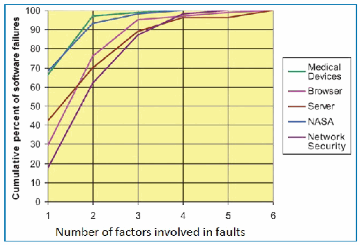
図25「Interaction Rule Graph」。ソフトウェア障害の累積割合を、障害に関与する要因数（横軸1～6）に対して示す折れ線グラフ。縦軸は累積割合0～100％。系列はMedical Devices、Browser、Server、NASA、Network Securityの5種で、いずれも要因数が増えるにつれて100％に近づく。横軸ラベルは「Number of factors involved in faults」、縦軸は「Cumulative percent of software failures」。凡例の各系列名は判読可能。
Figure 25: Interaction Rule Graph
図25：相互作用規則グラフ
未レビュー訳CSD’s work aims to encourage the use of roots of trust in computers to provide stronger security assurances.
CSDの研究は、より強いセキュリティ保証を実現するため、コンピュータで信頼の基点を活用することを促す。
未レビュー訳Technology transfer activities included the publication
技術移転活動には、
未レビュー訳A focus area for this work has been securing firmware.
この取組の重点分野は、ファームウェアの保護である。
未レビュー訳of a number of technical papers and software distribution;
複数の技術論文の出版とソフトウェア配布、
未レビュー訳Previous guidelines by CSD described methods to protect
CSDの従来のガイドラインでは、
未レビュー訳publication of the results of a Cooperative R&D (CRADA)
Lockheed Martinとの共同研究開発（CRADA）
未レビュー訳boot firmware, commonly known as the Basic Input/Output
PCクライアントとサーバーのブートファームウェア、一般にBasic Input/Output
未レビュー訳project with Lockheed Martin; release of enhanced
プロジェクトの成果公表、改良版の公開
未レビュー訳System (BIOS) in PC clients and servers. In FY 2015, the first
System（BIOS）として知られるものを保護する方法を説明している。2015年度には、これらのガイドラインのうち最初の
未レビュー訳7 8
原文のみ
COMP U TER SECURITY DI VI SION ANNUAL REP ORT | 2 01 5 THIS PUBLICATION IS AVAILABLE FREE OF CHARGE FROM:
コンピュータセキュリティ部門年次報告書｜2015 本出版物は次から無料で入手できます：
未レビュー訳of these guidelines, SP 800-147, BIOSProtectionGuidelines, was submitted to ISO/IEC JTC 1/SC27 for standardization as ISO/IEC 19678:2015. In FY 2016, CSD will continue to work with the computer industry on the use of roots of trust to improve the security of BIOS and other firmware. As part of this effort, CSD is researching techniques and requirements for securing firmware throughout the platform. This effort will consider methods to protect this firmware from unauthorized changes, detect accidental or malicious corruption, and recover from destructive attacks.
原文更新後、再確認待ち
For More Information, See: http://csrc.nist.gov/projects/root-trust/
詳細情報：http://csrc.nist.gov/projects/root-trust/
未レビュー訳CONTACT:
連絡先：
未レビュー訳Mr. Andrew Regenscheid (301) 975-5155 andrew.regenscheid@nist.gov
原文のみ
7 9
原文のみ
P RO GRA M A ND PR OJ ECT ACHI EVE ME NTS | F Y 2015
プログラムおよびプロジェクトの成果｜2015年度
未レビュー訳THIS PUBLICATION IS AVAILABLE FREE OF CHARGE FROM: http://dx.doi.org/10.6028/NIST.SP.800-182
本出版物は次から無料で入手できます：http://dx.doi.org/10.6028/NIST.SP.800-182
未レビュー訳原本PDFの抜粋画像

Gold Medal Award
ゴールドメダル賞
未レビュー訳Mr. Jon Boyens, Ms. Naomi Lefkovitz, Ms. Suzanne Lightman, Ms. Victoria Pillitteri, Mr. Matthew Scholl, and Mr. Kevin Stine Computer Security Division; Ms. Donna Dodson, and Mr. Adam Sedgewick, Information Technology Laboratory Office; and Ms. Lisa Carnahan, NIST Standards Coordination Office (former ITL team member)
Mr. Jon Boyens、Ms. Naomi Lefkovitz、Ms. Suzanne Lightman、Ms. Victoria Pillitteri、Mr. Matthew Scholl、Mr. Kevin Stine（コンピュータセキュリティ部門）；Ms. Donna Dodson、Mr. Adam Sedgewick（情報技術研究所事務局）；Ms. Lisa Carnahan（NIST標準調整室、元ITLチームメンバー）
未レビュー訳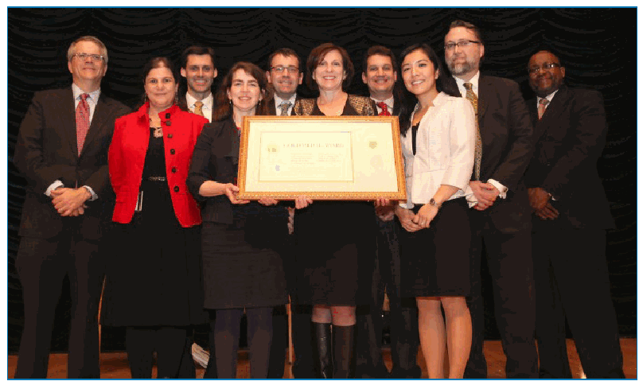
商務省ゴールドメダル賞の受賞者と関係者が、賞状を掲げて並ぶ集合写真。人物名と左からの順序は下のキャプションを参照。
Figure 26: Gold Medal Award Recipients
図26：ゴールドメダル賞の受賞者
未レビュー訳(left to right): Department of Commerce Deputy Secretary Bruce Andrews, Suzanne Lightman, Kevin Stine, Naomi Lefkovitz, Adam Sedgewick, Donna Dodson, Matthew Scholl, Victoria Pillitteri, Jon Boyens, and Dr. Willie May, Under Secretary of Commerce for Standards and Technology and NIST Director (Not Pictured: Lisa Carnahan)
（左から）商務省副長官Bruce Andrews、Suzanne Lightman、Kevin Stine、Naomi Lefkovitz、Adam Sedgewick、Donna Dodson、Matthew Scholl、Victoria Pillitteri、Jon Boyens、商務省標準技術担当次官兼NIST所長Dr. Willie May（Lisa Carnahanは写真に写っていない）。
未レビュー訳The group is recognized for its exceptional leadership and outstanding technical achievement in developing an innovative framework to improve the cybersecurity of our nation’s critical infrastructure. In Executive Order 13636, the President directed NIST to create a Cybersecurity Framework to manage and reduce cybersecurity risk across the nation’s critical infrastructure sectors. The team convened a highly diverse community to achieve consensus on a framework of standards, guidelines, and practices to identify, assess, and manage cybersecurity risk.
このグループは、米国の重要インフラのサイバーセキュリティ向上を目的とする革新的な枠組みの策定において、卓越したリーダーシップと優れた技術的成果を上げたことを評価された。大統領は大統領令13636により、米国の重要インフラ各分野でサイバーセキュリティリスクを管理・低減するためのサイバーセキュリティ・フレームワークをNISTに策定するよう指示した。チームは多様な関係者を集め、サイバーセキュリティリスクの特定、評価、管理に用いる標準、ガイドライン、実践方法の枠組みについて合意形成を行った。
未レビュー訳8 1
原文のみ
H ON ORS A ND AWA RDS | FY 2 01 5
表彰と受賞｜2015年度
未レビュー訳THIS PUBLICATION IS AVAILABLE FREE OF CHARGE FROM: http://dx.doi.org/10.6028/NIST.SP.800-182
本出版物は次から無料で入手できます：http://dx.doi.org/10.6028/NIST.SP.800-182
未レビュー訳Silver Medal Award
シルバーメダル賞
未レビュー訳Mr. Richard Kuhn, Computer Security Division; and Dr. Raghu Kacker, Applied and Computational Mathematics Division
Mr. Richard Kuhn（コンピュータセキュリティ部門）およびDr. Raghu Kacker（応用・計算数学部門）
未レビュー訳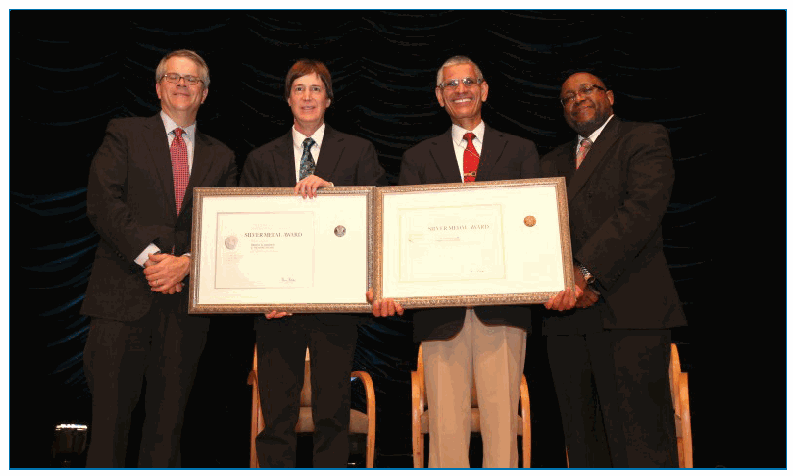
商務省シルバーメダル賞の受賞者4人が並び、賞状2枚を掲げている。人物名と左からの順序はキャプションを参照。
Figure 27: Silver Medal Award Recipients
図27：シルバーメダル賞の受賞者
未レビュー訳(left to right): Department of Commerce Deputy Secretary Bruce Andrews, Richard Kuhn, Dr. Raghu Kacker, and Dr. Willie May, Under Secretary of Commerce for Standards and Technology and NIST Director
（左から）商務省副長官Bruce Andrews、Richard Kuhn、Dr. Raghu Kacker、商務省標準技術担当次官兼NIST所長Dr. Willie May。
未レビュー訳The group is recognized for outstanding technical accomplishments in the development of the first efficient tool for generating high-strength software testing plans, resulting in cost savings and more reliable products. The team has developed software tools that use a novel combinatorial testing meth-odology. This methodology enables software developers to generate the smallest number of test cases needed to identify the most critical and elusive software bugs, those caused by interactions among input parameters. The team has made their tool, Automated Combinatorial Testing of Software (ACTS), widely available, and it is now used by major software companies and many government agencies.
このグループは、高強度のソフトウェア試験計画を生成する初の効率的なツールを開発し、コスト削減と製品の信頼性向上を実現した技術的功績を評価された。チームは新しい組合せテスト手法を用いるソフトウェアツールを開発した。この手法により、ソフトウェア開発者は、入力パラメータ間の相互作用によって生じる、特に重大で発見しにくいソフトウェア不具合を特定するために必要な最小数のテストケースを生成できる。チームはそのツール「Automated Combinatorial Testing of Software（ACTS）」を広く公開し、現在は大手ソフトウェア企業や多数の政府機関で利用されている。
未レビュー訳8 2
原文のみ
COMP U TER SECURITY DI VI SION ANNUAL REP ORT | 2 01 5 THIS PUBLICATION IS AVAILABLE FREE OF CHARGE FROM:
コンピュータセキュリティ部門年次報告書｜2015 本出版物は次から無料で入手できます：
未レビュー訳http://dx.doi.org/10.6028/NIST.SP.800-182
http://dx.doi.org/10.6028/NIST.SP.800-182
未レビュー訳アリ・シュワルツの上半身写真。濃色のスーツに白いシャツと赤いネクタイを着用。
Dr. Ari Schwartz Receives Federal 100 Award Ari Schwartz, ITL’s Senior Internet Policy Advisor, who is on detail to the Executive Office of the President as the Senior Director for Cybersecurity, National Security Council, received a Federal 100 Award from Federal Computer Week. Dr. Schwartz was recognized for his deep knowledge and experience as a “voice of reason” and an advocate for a wide range of cybersecurity activities.
〔見出し〕Dr. Ari SchwartzがFederal 100賞を受賞。Ari Schwartz（ITL上級インターネット政策顧問）は、国家安全保障会議のサイバーセキュリティ担当上級ディレクターとして大統領府に出向中に、Federal Computer Week誌のFederal 100賞を受賞した。Schwartz博士は、幅広いサイバーセキュリティ活動を支持する「理性の声」としての深い知識と経験が評価された。
未レビュー訳ドナ・ドッドソンの上半身写真。明るい色の襟付きジャケットと柄のスカーフを着用。
Donna Dodson Named one of D.C.’s Top 50 Women in Technology For the second year in a row, Donna Dodson has been named to D.C.’s Top 50 Women in Technology by FedScoop. Each year, FedScoop salutes a selection of D.C.’s Top Women in Technology, “whose vibrant energy, determination, imagination and leadership are making a monumental difference in the Federal Government IT community.” Other notable recipients this year include Commerce Secretary Penny Pritzker and former NIST Director Arati Prabhakar.
〔見出し〕Donna DodsonがワシントンD.C.のテクノロジー分野の女性トップ50に選出。Dodsonは2年連続で、FedScoopによりD.C.のテクノロジー分野の女性トップ50に選ばれた。FedScoopは毎年、連邦政府のIT分野に大きな影響を与える活力、決意、想像力、リーダーシップを持つ女性を選出する。今年の他の著名な受賞者には、商務長官Penny Pritzkerと元NIST所長Arati Prabhakarが含まれる。
未レビュー訳商務省副長官Bruce Andrews（左）とRon Ross博士がSammie賞の楯を持って並ぶ。背景には授賞式の参加者が見える。
NIST’s Dr. Ron Ross Wins Three Top Awards for Advancing Cybersecurity Dr. Ron Ross, leader of the Federal Information Security Management Act (FISMA) Implementation Project and an international cybersecurity ambassador, was recognized by three organizations for contributions to the field of cybersecurity:
〔見出し〕NISTのDr. Ron Rossがサイバーセキュリティ推進で主要3賞を受賞。連邦情報セキュリティ管理法（FISMA）実施プロジェクトのリーダーであり、国際的なサイバーセキュリティ大使を務めるRon Ross博士が、サイバーセキュリティ分野への貢献を評価され、3団体から表彰された。
未レビュー訳•Dr. Ross was presented the Samuel J. Heyman Service to America Medal in the area of Homeland Security and Law Enforcement. The medal, often referred to as the “Sammie” award, is considered the “Oscar” award of government service. It highlights excellence in the federal workforce and inspires other talented and dedicated individuals to enter public service. He received the honor for “instituting a state-
•Dr. Rossは、国土安全保障・法執行分野でSamuel J. Heyman Service to America Medalを受賞した。このメダルは「Sammie賞」と呼ばれることが多く、政府職員の「オスカー賞」とみなされている。連邦政府職員の卓越性を称え、優秀な人材が公務に加わるよう促す。受賞理由は、「最先端の
未レビュー訳Figure 28: Department of Commerce Depu- of-the-art risk assessment system that has protected federal computer ty Secretary Bruce Andrews (left) presents networks from cyberattacks and helped secure information critical to a Sammie Award to Dr. Ross on Oct. 7, 2015 our national and economic security.” in Washington, D.C.’s Andrew W. Mellon
〔左段・図28キャプション〕図28：商務省副長官Bruce Andrews（左）が2015年10月7日、ワシントンD.C.のAndrew W. Mellon〔右段・b0004の続き〕リスク評価システムを導入し、連邦政府のコンピュータネットワークをサイバー攻撃から保護し、国家と経済の安全保障に不可欠な情報を守ることに貢献した。」
未レビュー訳•Government Computer News (GCN) magazine named Dr. Ross as Gov-
•「Government Computer News（GCN）」誌は、Dr. Rossを政府幹部の
未レビュー訳Auditorium.
〔左段・図28キャプション続き〕Auditoriumで。
未レビュー訳ernment Executive of the Year for his contributions to securing federal information systems.
年間最優秀人物に選び、連邦情報システムの保護への貢献を評価した。
未レビュー訳•Dr. Ross was also inducted into the National Cyber Security Hall of Fame. The organization honors innovative indi-viduals and organizations for their vision and leadership in creating foundational building blocks of the cybersecurity industry.
•Dr. RossはNational Cyber Security Hall of Fameにも選出された。同団体は、サイバーセキュリティ産業の基盤となる要素の創出における先見性とリーダーシップを持つ革新的な個人や組織を称える。
未レビュー訳As a result of his widely used work, Dr. Ross has been called on by U.S. industry, academia and governments around the world to help their efforts to protect information. He has led U.S. cybersecurity teams to Australia, India, Japan, Canada, and the European Union, promoting effective information security concepts and best practices.
広く利用されている研究成果により、Ross博士は米国の産業界、学界、世界各国の政府から情報保護への取り組みを支援するよう求められてきた。米国のサイバーセキュリティチームを率いてオーストラリア、インド、日本、カナダ、欧州連合を訪れ、効果的な情報セキュリティの概念と優良事例を広めている。
未レビュー訳Credit: NIST Connections staff newsletter and Evelyn Brown, NIST Public Affairs Office
出典：NIST Connections職員ニュースレター、NIST広報室のEvelyn Brown
未レビュー訳8 3
原文のみ
H ON ORS A ND AWA RDS | FY 2 01 5
表彰と受賞｜2015年度
未レビュー訳THIS PUBLICATION IS AVAILABLE FREE OF CHARGE FROM: http://dx.doi.org/10.6028/NIST.SP.800-182
本出版物は次から無料で入手できます：http://dx.doi.org/10.6028/NIST.SP.800-182
未レビュー訳Daniel Benigni氏の肖像写真。眼鏡と口ひげを着け、濃色のスーツと赤いネクタイを着用。
Mr. Daniel Benigni Receives INCITS Lifetime Achievement Award The InterNational Committee for Information Technology Standards (INCITS) organization presented Dan Benigni with a Lifetime Achievement Award in recognition of his continuous and outstandingly effective support for the development of standards in his role of managing the US Standards Committee on Cybersecurity (CS1). This award is presented to only one INCITS participant annually, to a member who has demonstrated a long-time commitment to INCITS and its national and international standardization activities. The awardee must have demonstrated long-standing participation (ten or more years) in national and/or international standards development. Most importantly, it reflects the team spirit of the CS1 committee, whose members work together to reach the shared goal of promulgating security standards that will benefit U.S. industry and users over the long term.
〔見出し〕Mr. Daniel BenigniがINCITS生涯功績賞を受賞。米国情報技術標準化委員会（INCITS）は、米国サイバーセキュリティ標準委員会（CS1）の運営責任者として、標準策定を継続的かつ極めて効果的に支援した功績をたたえ、Dan Benigni氏に生涯功績賞を授与した。この賞は毎年、INCITS参加者1名のみを対象に授与される。INCITSと国内外の標準化活動に長年尽力した会員が対象であり、国内または国際的な標準開発に10年以上継続して参加した実績が必要である。何よりも、この賞はCS1委員会のチーム精神を評価する。委員は協力して、米国の産業界と利用者に長期的な利益をもたらすセキュリティ標準の普及という共通目標を追求している。
未レビュー訳Randall（Randy）Easter氏の上半身写真。屋外の緑を背景に、淡色のシャツを着用。
Mr. Randall (Randy) Easter Receives INCITS Technical Excellence Award Mr. Easter was presented with the Technical Excellence Award, also from INCITS. INCITS is the primary U.S. forum dedicated to creating technology standards for innovation. This award is presented to no more than four participants to recognize visible and significant technical contributions to the work of a given national or international technical committee (TC), based upon a minimum of three years of TC participation by the awardee.
〔見出し〕Mr. Randall（Randy）EasterがINCITS技術優秀賞を受賞。Easter氏はINCITSから技術優秀賞を授与された。INCITSは、イノベーションを促す技術標準の策定に取り組む米国の主要なフォーラムである。この賞は、国内または国際技術委員会（TC）の活動における顕著で重要な技術的貢献を評価し、受賞者が少なくとも3年間TCに参加していることを条件として、年4名以下に授与される。
未レビュー訳8 4
原文のみ
COMP U TER SECURITY DI VI SION ANNUAL REP ORT | 2015 THIS PUBLICATION IS AVAILABLE FREE OF CHARGE FROM:
コンピュータセキュリティ部門年次報告書｜2015 本出版物は次から無料で入手できます：
未レビュー訳http://dx.doi.org/10.6028/NIST.SP.800-182
http://dx.doi.org/10.6028/NIST.SP.800-182
未レビュー訳原本PDFの抜粋画像

Publications are available for download from CSRC
CSDの出版物はCSRCからダウンロードできる。
未レビュー訳C O M P U T E R S E C U R I T Y
コンピュータセキュリティ
未レビュー訳(http://csrc.nist.gov/publications/), including several NIST
（http://csrc.nist.gov/publications/）では、NISTの複数の技術文書系列も入手できる。
未レビュー訳D I V I S I O N P U B L I C A T I O N S
部門の出版物
未レビュー訳technical series:
技術文書系列：
未レビュー訳During FY 2015, CSD staff authored a significant number • FIPS (http://csrc.nist.gov/publications/PubsFIPS.html); of computer, cyber, and/or information security-related • Special Publications (http://csrc.nist.gov/publications/ standards, guidelines, recommendations and research PubsSPs.html); findings through the NIST technical series, journal articles,
〔左段〕2015年度、CSD職員は、コンピュータ、サイバーセキュリティ、情報セキュリティに関する規格、ガイドライン、推奨事項、研究成果を、NIST技術文書系列、学術誌論文、会議論文などを通じて多数公表した。〔右段・箇条書き〕FIPS（http://csrc.nist.gov/publications/PubsFIPS.html）；Special Publications（http://csrc.nist.gov/publications/PubsSPs.html）；
未レビュー訳•NISTIRs (http://csrc.nist.gov/publications/PubsNISTIRs.
•NISTIR（http://csrc.nist.gov/publications/PubsNISTIRs.
未レビュー訳conference papers, and other published documents.
会議論文その他の刊行物を通じて公表した。
未レビュー訳html); and
html）；および
未レビュー訳In an effort to provide greater access to NIST’s broad
NISTの幅広い
未レビュー訳•ITL Bulletins (http://csrc.nist.gov/publications/Pub-
•ITL Bulletins（http://csrc.nist.gov/publications/PubsITLSB.html）。
未レビュー訳portfolio of security and privacy publications, CSD began
セキュリティおよびプライバシー関連出版物へのアクセスを拡大するため、CSDは
未レビュー訳sITLSB.html).
。
未レビュー訳posting additional Special Publications and NISTIRs on the CSRC that were developed by other components at NIST, The following lists summarize some of the top CSD such as the National Cybersecurity Center of Excellence publications downloaded in FY 2015: (NCCoE) and National Strategy for Trusted Identities in
〔左段〕CSRCに、NIST内の他部門が作成した特別刊行物とNISTIRを追加掲載し始めた。例として、National Cybersecurity Center of Excellence（NCCoE）やNational Strategy for Trusted Identities in〔右段〕以下は、2015年度にダウンロード数が多かったCSD出版物の一部である。
未レビュー訳Top 10 Most-Downloaded CSD
CSDのダウンロード数上位10件：
未レビュー訳Cyberspace (NSTIC). For example, CSRC now displays
Cyberspace（NSTIC）。例えばCSRCには、
未レビュー訳Publications in NIST Technical Series
NIST技術文書系列の出版物
未レビュー訳publications from the new NIST Cybersecurity Practice Guide
新しいNIST Cybersecurity Practice Guide
未レビュー訳(i.e., FIPS, SP 800s, NISTIRs, and ITL
（FIPS、SP 800、NISTIR、ITL Bulletin）：
未レビュー訳series, SP 1800, authored by the NCCoE staff. The first three SP 1800 drafts were posted for public comment, describing Bulletins): work that closely relates to CSD standards, guidelines and 1. SP 800-53 Revision 4, SecurityandPrivacyControls
〔左段・続き〕シリーズ（SP 1800）はNCCoE職員が執筆した。最初のSP 1800ドラフト3件を公開コメント用に掲載し、CSDの標準、ガイドライン、そして〔右段・項目1〕SP 800-53改訂4「セキュリティおよびプライバシー管理策（連邦情報システムおよび
未レビュー訳forFederalInformationSystemsandOrganizations;
組織向け）」；
未レビュー訳research. By posting cybersecurity and privacy draft publications 2. SP 800-61 Revision 2, ComputerSecurityIncident
〔左段〕研究にも関係する。CSRCに他のNIST部門が作成したサイバーセキュリティ・プライバシー関連の草稿を掲載することで、CSDは公開コメント期間中の可視性を高め、〔右段・項目2〕SP 800-61改訂2「コンピュータセキュリティインシデント
未レビュー訳HandlingGuide;
対応ガイド」；
未レビュー訳from other NIST components on CSRC, CSD aims to provide greater visibility during public comment periods and to
さらに、
未レビュー訳3.SP 800-53A Revision 4, Assessing Security and
3.3. SP 800-53A改訂4「セキュリティと
未レビュー訳provide a primary resource for stakeholders to access a
関係者がアクセスできる主要な情報源を提供し、
未レビュー訳Privacy Controls in Federal Information Systems
プライバシー管理策の評価（連邦情報システム
未レビュー訳broad range of NIST cybersecurity and privacy publications.
および組織向け）：幅広いNISTサイバーセキュリティ・プライバシー出版物の提供を目指す。
未レビュー訳and Organizations: Building Effective Assessment Plans;
効果的な評価計画の策定」；
未レビュー訳In FY 2015, CSD posted a substantial number of final publications to CSRC, including two FIPS, fifteen Special
2015年度、CSDは、FIPS2件、特別刊行物15件、
未レビュー訳4.SP 800-88 Revision 1, Guidelines for Media
4.4. SP 800-88改訂1「媒体の
未レビュー訳Publications, and seven NISTIRs. The release of FIPS 202,
NISTIR7件を含む多数の最終版出版物をCSRCに掲載した。FIPS 202の公開は、
未レビュー訳Sanitization;
サニタイズ」；
未レビュー訳SHA-3 Standard, in August 2015 was the culmination of
「SHA-3標準」が2015年8月に公開されたことは、
未レビュー訳5.SP 800-37 Revision 1, GuideforApplyingtheRisk
5.5. SP 800-37改訂1「連邦情報
未レビュー訳many years of effort by the Cryptographic Technology Group
暗号技術グループが長年取り組んできた
未レビュー訳Management Framework to Federal Information
システムに対するリスク管理フレームワークの適用ガイド：
未レビュー訳to develop a next-generation standard for secure hashing.
安全なハッシュの次世代標準の開発の集大成である。
未レビュー訳Systems:ASecurityLifeCycleApproach;
セキュリティライフサイクルのアプローチ」；
未レビュー訳FIPS 202 specifies a family of fixed-length hash functions and extendable-output functions that complement the 6. NISTIR 7298 Revision 2,GlossaryofKeyInformation
〔左段〕FIPS 202は、固定長ハッシュ関数と拡張出力関数の一群を規定し、〔右段・項目6〕NISTIR 7298改訂2「主要情報
未レビュー訳SecurityTerms;
セキュリティ用語集」；
未レビュー訳existing SHA-2 algorithms specified in FIPS 180-4, Secure HashStandard(SHS).
既存のSHA-2アルゴリズムを補完する。
未レビュー訳7.SP 800-171, Protecting Controlled Unclassified InformationinNonfederalInformationSystemsand
7.7. SP 800-171「管理対象非機密情報の保護（非連邦情報システムおよび
未レビュー訳CSD continued to engage the public by posting fifteen
CSDは公開活動を続け、15件の
未レビュー訳Organizations;
組織）」；
未レビュー訳SPs and thirteen NISTIRs as drafts for public comment. That included Draft NISTIR 8060, Guidelines for the Creation
特別刊行物と13件のNISTIRを公開コメント用ドラフトとして掲載した。その中には、ドラフトNISTIR 8060「
未レビュー訳8.SP 800-30 Revision 1, Guide for Conducting Risk
8.8. SP 800-30改訂1「リスク評価実施ガイド
未レビュー訳of Interoperable Software Identification (SWID) Tags, for
相互運用可能なソフトウェア識別（SWID）タグの作成ガイドライン」が含まれる。この草案は、
未レビュー訳Assessments;
」；
未レビュー訳which three iterations were released during short, two-
短い2週間の公開コメント期間を設け、3版を公開した。
未レビュー訳9.SP 800-63-2, ElectronicAuthenticationGuideline;
9.9. SP 800-63-2「電子認証ガイドライン」；
未レビュー訳week public comment periods. Comments were requested
また、公式ドラフトを公開する前に変更点や取組方法を検討するため、
未レビュー訳and
および
未レビュー訳on three existing publications to determine what changes or approaches should be taken, prior to releasing an official 10. SP 800-52 Revision 1, GuidelinesfortheSelection, draft for public comment. Those publications include
〔左段〕3件の既存出版物についてコメントを募集した。具体的には、〔右段・項目10〕SP 800-52改訂1「トランスポート層セキュリティの選択、
未レビュー訳Configuration,andUseofTransportLayerSecurity
構成、使用に関するガイドライン
未レビュー訳i) SP 800-63-2, Electronic Authentication Guideline, ii)
i) SP 800-63-2「電子認証ガイドライン」、ii)
未レビュー訳(TLS)Implementations.
実装」；
未レビュー訳Security Content Automation Protocol (SCAP) version 1.3 and iii) the potential use of ISO/IEC 19790:2012 as the U.S. federal standard for cryptographic modules (as a potential successor to FIPS 140-2).
セキュリティコンテンツ自動化プロトコル（SCAP）バージョン1.3、およびiii) ISO/IEC 19790:2012を、FIPS 140-2の後継候補として米国連邦の暗号モジュール標準に採用する可能性。
未レビュー訳8 6
原文のみ
COMP U TER SECURITY DI VI SION ANNUAL REP ORT | 2 01 5 THIS PUBLICATION IS AVAILABLE FREE OF CHARGE FROM:
コンピュータセキュリティ部門年次報告書｜2015 本出版物は次から無料で入手できます：
未レビュー訳http://dx.doi.org/10.6028/NIST.SP.800-182
http://dx.doi.org/10.6028/NIST.SP.800-182
未レビュー訳Top 3 FIPS:
FIPS上位3件：
未レビュー訳FY 2015 Computer Security Division
2015年度コンピュータセキュリティ部門の出版物
未レビュー訳1.FIPS 202, SHA-3 Standard: Permutation-Based Publications HashandExtendable-OutputFunctions; The Computer Security Division uses multiple NIST Technical Series to promulgate security standards,
1.〔左段・項目1〕FIPS 202「SHA-3標準：置換型ハッシュおよび拡張出力関数」；〔右段〕コンピュータセキュリティ部門は、セキュリティ標準、
未レビュー訳2.FIPS 201-2, Personal Identity Verification (PIV) of guidelines, recommendations, research, and additional FederalEmployeesandContractors; and background material. Those series include FIPS, SPs, NISTIRs
2.〔左段・項目2〕FIPS 201-2「連邦職員および請負業者の個人識別情報検証（PIV）」；〔右段〕ガイドライン、推奨事項、研究、背景資料の普及に複数のNIST技術文書系列を用いている。系列にはFIPS、SP、NISTIRが含まれ、
未レビュー訳3.FIPS 186-4, DigitalSignatureStandard(DSS). and ITL Bulletins. Links to these publications are available at http://csrc.nist.gov/publications. As described earlier, in
3.〔左段・項目3〕FIPS 186-4「デジタル署名規格（DSS）」。〔右段〕ITL Bulletinも含まれる。各出版物へのリンクはhttp://csrc.nist.gov/publicationsにある。前述のとおり、
未レビュー訳Top 3 NISTIRs:
NISTIR上位3件：
未レビュー訳FY 2015, CSD began expanding its publication portfolio on
2015年度、CSDはCSRC上の出版物の範囲を広げ始め、
未レビュー訳1.NISTIR 7298 Revision 2,GlossaryofKeyInformation CSRC by posting cybersecurity and privacy SPs and NISTIRs SecurityTerms; from other NIST components. In some cases, CSD staff
1.〔左段・項目1〕NISTIR 7298改訂2「主要情報セキュリティ用語集」；〔右段〕他のNIST部門が作成したサイバーセキュリティ・プライバシー関連のSPやNISTIRを掲載した。場合によっては、CSD職員が出版物（例：ドラフトSP 1800-3）の作成に寄与した。
未レビュー訳2.NISTIR 7628 Revision 1, GuidelinesforSmartGrid contributedtothedevelopmentofapublication(e.g.,DraftSP CyberSecurity; and 1800-3). Others were developed by other ITL cybersecurity
2.〔左段・項目2〕NISTIR 7628改訂1「スマートグリッドのサイバーセキュリティ指針」；〔右段〕その他はITLのサイバーセキュリティ部門が作成した（例：NCCoEやNSTIC）。また、CSDの活動と密接に関連する文書（例：ドラフトNISTIR 8062）や、
未レビュー訳3.NISTIR 8023, Risk Management for Replication components (e.g., NCCoE and NSTIC), documents that are closely related to CSD activities (e.g., Draft NISTIR 8062), or Devices. describe CSD programs and standardization activities within
3.〔左段・項目3〕NISTIR 8023「レプリケーションデバイスのリスク管理」。〔右段〕CSDのプログラムや標準化活動をより広い背景の中で説明する文書もある。
未レビュー訳Top 3 ITL Bulletins:
ITL Bulletin上位3件：
未レビュー訳a greater context (e.g., Draft NISTIR 8074).
より広い背景の例として、ドラフトNISTIR 8074がある。
未レビュー訳1.February 2015, NIST Special Publication 800-88 Additionally, each year CSD staff author numerous Revision1,GuidelinesforMediaSanitization; additional publications, including journal articles, conference
1.〔左段・項目1〕2015年2月、NIST特別刊行物SP 800-88改訂1「媒体のサニタイズに関するガイドライン」；〔右段〕さらに、CSD職員は毎年、学術誌論文や会議
未レビュー訳2.October 2014, ReleaseofNISTSpecialPublication papers, and other papers that are widely disseminated. They 800-147B,BIOSProtectionGuidelinesforServers; range from basic research to high-level summaries of CSD and activities.
2.〔左段・項目2〕2014年10月、NIST特別刊行物SP 800-147B「サーバー向けBIOS保護ガイドライン」を公開；〔右段〕論文その他広く配布される論文を多数執筆する。内容は基礎研究からCSDの活動概要まで幅広い。
未レビュー訳3.January 2015, ReleaseofNISTSpecialPublication NIST Technical Series Publications − 800-53A, Revision 4, Assessing Security and FIPS, SPs, NISTIRs, and ITL Bulletins Privacy Controls in Federal Information Systems Below are lists of NIST Technical Series publications andOrganizations. that CSD released on CSRC as draft documents or as Additionally, CSD shares its ongoing research efforts final publications during FY 2015 (from October 1, 2014 to
3.〔左段・項目3〕2015年1月、SP 800-53A改訂4「連邦情報システムおよび組織におけるセキュリティ・プライバシー管理策の評価」を公開。さらにCSDは継続中の研究成果を〔右段・見出し〕NIST技術系列出版物―FIPS、SP、NISTIR、ITL Bulletin。CSDが2015年度にCSRCで草稿または最終版として公開した技術系列出版物の一覧を以下に示す（対象期間は
未レビュー訳through other publications, such as journal articles,
学術誌論文など、他の出版物を通じて共有している。
未レビュー訳September 30, 2015). Following the lists are abstracts for
2014年10月1日から2015年9月30日まで）。以下の一覧に続いて、
未レビュー訳conference papers, books and other whitepapers. Although
会議論文、書籍、ホワイトペーパーも含まれる。これらは
未レビュー訳each publication.
各出版物の概要として掲載する。
未レビュー訳available through NIST’s Publications Portal (http://www. nist.gov/publication-portal.cfm), they can also be accessed on CSRC’s Articles page (http://csrc.nist.gov/publications/ articles/). During FY 2015, more than 20 such documents were published, and are listed in the next section (FY 2015 Computer Security Division Publications) of this annual report. In FY 2016, CSD plans to release a new version of CSRC that uses a content management system. The publications interface on the redesigned website will give users significantly greater capabilities for browsing, searching, downloading and sharing information on NIST’s broad collection of computer security and privacy publications.
NIST Publications Portal（http://www.nist.gov/publication-portal.cfm）から入手できるほか、CSRCのArticlesページ（http://csrc.nist.gov/publications/articles/）からも閲覧できる。2015年度には20件を超える関連文書が公表され、本年次報告書の次節「2015年度コンピュータセキュリティ部門の出版物」に掲載されている。2016年度、CSDはコンテンツ管理システムを使用する新しいCSRCを公開する予定である。再設計されたウェブサイトの出版物インターフェースでは、NISTの幅広いコンピュータセキュリティ・プライバシー関連出版物を、閲覧、検索、ダウンロード、共有する機能が大幅に向上する。
未レビュー訳8 7
原文のみ
CS D PU BL I CAT IO N S | FY 2 01 5
CSD出版物｜2015年度
未レビュー訳THIS PUBLICATION IS AVAILABLE FREE OF CHARGE FROM: http://dx.doi.org/10.6028/NIST.SP.800-182
本出版物は次から無料で入手できます：http://dx.doi.org/10.6028/NIST.SP.800-182
未レビュー訳D R A F T P U B L I C A T I O N S
ドラフト出版物
未レビュー訳TABLE 3: NO DRAFT FIPS RELEASED DURING FY 2015
表3：2015年度にFIPSドラフトの公開なし
未レビュー訳| TABLE 4: SPECIAL PUBLICATIONS (SPs) | ||
| Publication Number | Publication Title | Draft Released |
| SP 800-177 | Trustworthy Email | September 2015 |
| SP 800-171 (2nd Draft) (1st Draft) | Protecting Controlled Unclassified Information in Nonfederal Information Systems and Organizations | April 2015 November 2014 |
| SP 800-152 | A Profile for U.S. Federal Cryptographic Key Management Systems (CKMS) | December 2014 |
| SP 800-150 | Guide to Cyber Threat Information Sharing | October 2014 |
| SP 800-131A Rev. 1 | Transitions: Recommendation for Transitioning the Use of Cryptographic Algorithms and Key Lengths | July 2015 |
| SP 800-125B | Secure Virtual Network Configuration for Virtual Machine (VM) Protection | September 2015 |
| SP 800-125A | Secure Recommendations for Hypervisor Deployment | October 2014 |
| SP 800-90A Rev. 1 | Recommendation for Random Number Generation Using Deterministic Random Bit Generators | November 2014 |
| SP 800-85A-4 | PIV Card Application and Middleware Interface Test Guidelines (SP 800-73-4 Compliance) | June 2015 |
| SP 800-82 Rev. 2 (2nd Draft) | Guide to Industrial Control Systems (ICS) Security | February 2015 |
| SP 800-70 Rev. 3 | National Checklist Program for IT Products: Guidelines for Checklist Users and Developers | March 2015 |
| SP 800-57 Part 1 Rev. 4 | Recommendation for Key Management, Part 1: General | September 2015 |
| SP 1800-3 | Attribute Based Access Control | September 2015 |
| SP 1800-2 | Identity and Access Management for Electric Utilities | August 2015 |
| SP 1800-1 | Securing Electronic Health Records on Mobile Devices | July 2015 |
原本PDFの抜粋画像
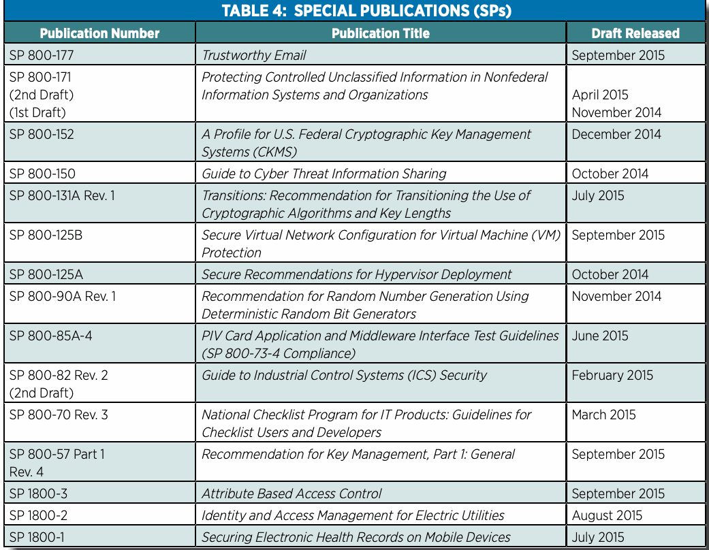
| 表4：特別刊行物（SP） | ||
| 文書番号 | 文書名 | ドラフト公開 |
| SP 800-177 | 信頼できる電子メール | 2015年9月 |
| SP 800-171（第2次ドラフト）（第1次ドラフト） | 非連邦情報システムおよび組織における管理対象非機密情報の保護 | 2015年4月／2014年11月 |
| SP 800-152 | 米国連邦暗号鍵管理システム（CKMS）のプロファイル | 2014年12月 |
| SP 800-150 | サイバー脅威情報共有ガイド | 2014年10月 |
| SP 800-131A改訂1 | 暗号アルゴリズムおよび鍵長の使用移行に関する推奨事項 | 2015年7月 |
| SP 800-125B | 仮想マシン（VM）保護のための安全な仮想ネットワーク構成 | 2015年9月 |
| SP 800-125A | ハイパーバイザ展開に関するセキュリティ推奨事項 | 2014年10月 |
| SP 800-90A改訂1 | 決定論的ランダムビット生成器による乱数生成に関する推奨事項 | 2014年11月 |
| SP 800-85A-4 | PIVカードアプリケーションおよびミドルウェアインターフェース試験ガイドライン（SP 800-73-4適合性） | 2015年6月 |
| SP 800-82改訂2（第2次ドラフト） | 産業用制御システム（ICS）セキュリティガイド | 2015年2月 |
| SP 800-70改訂3 | IT製品向け国家チェックリストプログラム：チェックリスト利用者・開発者向けガイドライン | 2015年3月 |
| SP 800-57第1部改訂4 | 鍵管理に関する推奨事項、第1部：一般 | 2015年9月 |
| SP 1800-3 | 属性ベースアクセス制御 | 2015年9月 |
| SP 1800-2 | 電力事業者向けID・アクセス管理 | 2015年8月 |
| SP 1800-1 | モバイル機器上の電子健康記録の保護 | 2015年7月 |
| TABLE 5: NIST INTERAGENCY OR INTERNAL REPORTS (NISTIRs) | ||
| Publication Number | Publication Title | Draft Released |
| NISTIR 8074 | Volume 1: Report on Strategic U.S. Government Engagement in International Standardization to Achieve U.S. Objectives for Cybersecurity; Volume 2: Supplemental Information | August 2015 |
| NISTIR 8062 | Privacy Risk Management for Federal Information Systems | May 2015 |
| NISTIR 8060 (3rd Draft) (2nd Draft) 8(1s8t Draft) | Guidelines for the Creation of Interoperable Software Identification (SWID) Tags | August 2015 July 2015 May 2015 |
原本PDFの抜粋画像
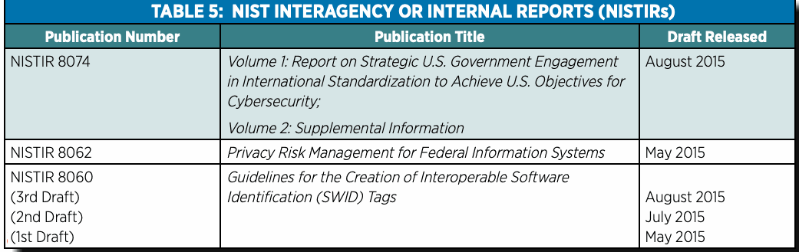
| 表5：NIST省庁間報告書または内部報告書（NISTIR） | ||
| 文書番号 | 文書名 | ドラフト公開 |
| NISTIR 8074 | 第1巻：サイバーセキュリティに関する米国の目標達成に向けた国際標準化への米国政府の戦略的関与に関する報告書；第2巻：補足情報 | 2015年8月 |
| NISTIR 8062 | 連邦情報システムのプライバシーリスク管理 | 2015年5月 |
| NISTIR 8060（第3次ドラフト）（第2次ドラフト）（第1次ドラフト） | 相互運用可能なソフトウェア識別（SWID）タグの作成ガイドライン | 2015年8月／2015年7月／2015年5月 |
COMP U TER SECURITY DI VI SION ANNUAL REP ORT | 2 01 5 THIS PUBLICATION IS AVAILABLE FREE OF CHARGE FROM:
コンピュータセキュリティ部門年次報告書｜2015 本出版物は次から無料で入手できます：
未レビュー訳http://dx.doi.org/10.6028/NIST.SP.800-182
http://dx.doi.org/10.6028/NIST.SP.800-182
未レビュー訳| TABLE 5 (CONT.): NIST INTERAGENCY OR INTERNAL REPORTS (NISTIRs) | ||
| Publication Number | Publication Title | Draft Released |
| NISTIR 8058 | Security Content Automation Protocol (SCAP) Version 1.2 Content Style Guide: Best Practices for Creating and Maintaining SCAP 1.2 Content | May 2015 |
| NISTIR 8055 | Derived Personal Identity Verification (PIV) Credentials (DPC) Proof of Concept Research | July 2015 |
| NISTIR 8053 | De-Identification of Personally Identifiable Information | April 2015 |
| NISTIR 8050 | Executive Technical Workshop on Improving Cybersecurity and Consumer Privacy: Summary and Next Steps | April 2015 |
| NISTIR 7966 (2nd Draft) | Security of Interactive and Automated Access Management Using Secure Shell (SSH) | March 2015 |
| NISTIR 7904 (2nd Draft) | Trusted Geolocation in the Cloud: Proof of Concept Implementation | July 2015 |
| NISTIR 7621 Rev. 1 | Small Business Information Security: the Fundamentals | December 2014 |
| NISTIR 7511 Rev. 4 | Security Content Automation Protocol (SCAP) Version 1.2 Validation Program Test Requirements | September 2015 |
原本PDFの抜粋画像
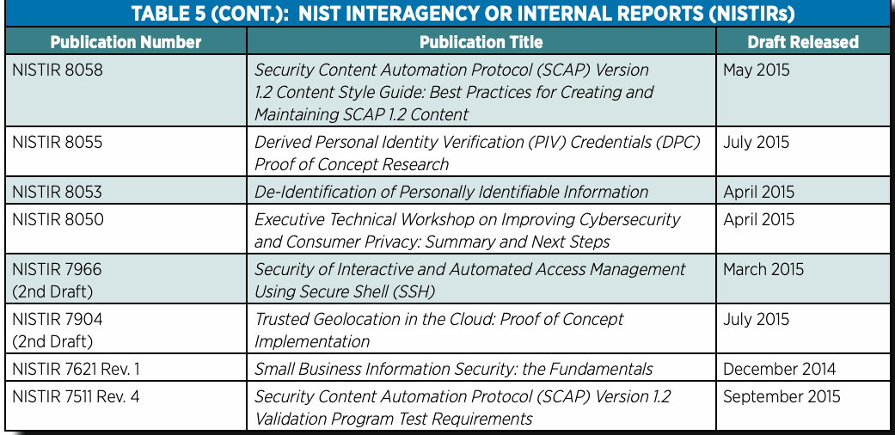
| 表5（続き）：NIST省庁間報告書または内部報告書（NISTIR） | ||
| 文書番号 | 文書名 | ドラフト公開 |
| NISTIR 8058 | セキュリティコンテンツ自動化プロトコル（SCAP）バージョン1.2コンテンツスタイルガイド：SCAP 1.2コンテンツの作成・維持に関するベストプラクティス | 2015年5月 |
| NISTIR 8055 | 派生個人識別検証（PIV）資格情報（DPC）の概念実証研究 | 2015年7月 |
| NISTIR 8053 | 個人識別情報の非識別化 | 2015年4月 |
| NISTIR 8050 | サイバーセキュリティと消費者プライバシーの向上に関する技術ワークショップ：概要と次の段階 | 2015年4月 |
| NISTIR 7966（第2次ドラフト） | Secure Shell（SSH）を用いた対話型・自動アクセス管理のセキュリティ | 2015年3月 |
| NISTIR 7904（第2次ドラフト） | クラウドにおける信頼できる地理的位置情報：概念実証の実装 | 2015年7月 |
| NISTIR 7621改訂1 | 小規模事業者の情報セキュリティ：基本事項 | 2014年12月 |
| NISTIR 7511改訂4 | セキュリティコンテンツ自動化プロトコル（SCAP）バージョン1.2検証プログラムの試験要件 | 2015年9月 |
青い見出し帯に「最終承認済み出版物」と表示。
F I N A L A P P R O V E D P U B L I C A T I O N S
最終承認済み出版物
未レビュー訳| TABLE 6: FEDERAL INFORMATION PROCESSING STANDARDS (FIPS) | ||
| Publication Number | Publication Title | Publication Date |
| FIPS 202 | SHA-3 Standard: Permutation-Based Hash and Extendable- Output Functions | August 2015 |
| FIPS 180-4 | Secure Hash Standard (SHS) [updated Applicability section] | August 2015 |
原本PDFの抜粋画像
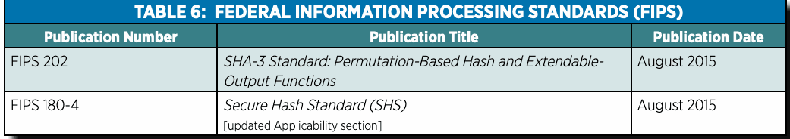
| 表6：連邦情報処理標準（FIPS） | ||
| 文書番号 | 文書名 | 公開日 |
| FIPS 202 | SHA-3標準：置換型ハッシュおよび拡張出力関数 | 2015年8月 |
| FIPS 180-4 | セキュアハッシュ標準（SHS）［適用範囲の更新］ | 2015年8月 |
| TABLE 7: SPECIAL PUBLICATIONS (SPs) | ||
| Publication Number | Publication Title | Publication Date |
| SP 800-176 | Computer Security Division 2014 Annual Report | August 2015 |
| SP 800-171 | Protecting Controlled Unclassified Information in Nonfederal Information Systems and Organizations | June 2015 |
| SP 800-163 | Vetting the Security of Mobile Applications | January 2015 |
| SP 800-161 | Supply Chain Risk Management Practices for Federal Information Systems and Organizations | April 2015 |
| SP 800-157 | Guidelines for Derived Personal Identity Verification (PIV) Credentials | December 2014 |
| SP 800-90A Rev. 1 | Recommendation for Random Number Generation Using Deterministic Random Bit Generators | June 2015 |
| SP 800-88 Rev. 1 | Guidelines for Media Sanitization | December 2014 |
原本PDFの抜粋画像
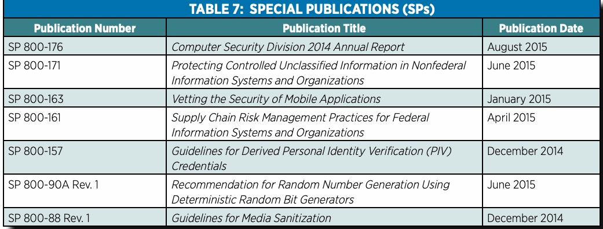
| 表7：特別刊行物（SP） | ||
| 文書番号 | 文書名 | 公開日 |
| SP 800-176 | コンピュータセキュリティ部門2014年次報告書 | 2015年8月 |
| SP 800-171 | 非連邦情報システムおよび組織における管理対象非機密情報の保護 | 2015年6月 |
| SP 800-163 | モバイルアプリケーションのセキュリティ審査 | 2015年1月 |
| SP 800-161 | 連邦情報システムおよび組織のサプライチェーンリスク管理実務 | 2015年4月 |
| SP 800-157 | 派生個人識別検証（PIV）資格情報に関するガイドライン | 2014年12月 |
| SP 800-90A改訂1 | 決定論的ランダムビット生成器による乱数生成に関する推奨事項 | 2015年6月 |
| SP 800-88改訂1 | 媒体のサニタイズに関するガイドライン | 2014年12月 |
8 9
原文のみ
CS D PU BL I CAT IO N S | FY 2 01 5
CSD出版物｜2015年度
未レビュー訳THIS PUBLICATION IS AVAILABLE FREE OF CHARGE FROM: http://dx.doi.org/10.6028/NIST.SP.800-182
本出版物は次から無料で入手できます：http://dx.doi.org/10.6028/NIST.SP.800-182
未レビュー訳| TABLE 7 (CONT.): SPECIAL PUBLICATIONS (SPs) | ||
| Publication Number | Publication Title | Publication Date |
| SP 800-82 Rev. 2 | Guide to Industrial Control Systems (ICS) Security | May 2015 |
| SP 800-79-2 | Guidelines for the Authorization of Personal Identity Verification Card Issuers (PCI) and Derived PIV Credential Issuers (DPCI) | July 2015 |
| SP 800-78-4 | Cryptographic Algorithms and Key Sizes for Personal Identity Verification | May 2015 |
| SP 800-73-4 | Interfaces for Personal Identity Verification | May 2015 |
| SP 800-57 Part 3 Rev. 1 | Recommendation for Key Management, Part 3: Application- Specific Key Management Guidance | January 2015 |
| SP 800-53A Rev. 4 | Assessing Security and Privacy Controls in Federal Information Systems and Organizations: Building Effective Assessment Plans | December 2014 |
| SP 800-53 Rev. 4 (Update) | Security and Privacy Controls for Federal Information Systems and Organizations | January 2015 |
| SP 500-304 | Conformance Testing Methodology Framework for ANSI/NIST- ITL 1-2011 Update: 2013, Data Format for the Interchange of Fingerprint, Facial & Other Biometric Information | June 2015 |
原本PDFの抜粋画像
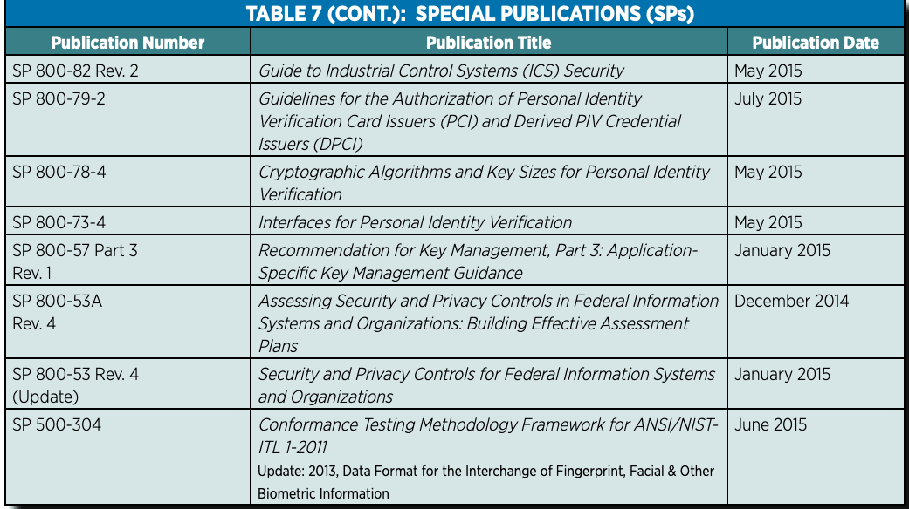
| 表7（続き）：特別刊行物（SP） | ||
| 文書番号 | 文書名 | 公開日 |
| SP 800-82改訂2 | 産業用制御システム（ICS）セキュリティガイド | 2015年5月 |
| SP 800-79-2 | 個人識別検証（PIV）カード発行者および派生PIV資格情報発行者の認可に関するガイドライン | 2015年7月 |
| SP 800-78-4 | 個人識別検証（PIV）向け暗号アルゴリズムおよび鍵サイズ | 2015年5月 |
| SP 800-73-4 | 個人識別検証のインターフェース | 2015年5月 |
| SP 800-57第3部改訂1 | 鍵管理に関する推奨事項 第3部：用途別鍵管理ガイダンス | 2015年1月 |
| SP 800-53A改訂4 | 連邦情報システムおよび組織のセキュリティ・プライバシー管理策の評価：効果的な評価計画の策定 | 2014年12月 |
| SP 800-53改訂4（更新） | 連邦情報システムおよび組織のセキュリティ・プライバシー管理策 | 2015年1月 |
| SP 500-304 | ANSI/NIST-ITL 1-2011更新版（2013）：指紋、顔その他の生体情報交換用データ形式の適合性試験方法フレームワーク | 2015年6月 |
| TABLE 8: NIST INTERAGENCY OR INTERNAL REPORTS (NISTIRs) | ||
| Publication Number | Publication Title | Publication Date |
| NISTIR 8054 | NSTIC Pilots: Catalyzing the Identity Ecosystem | April 2015 |
| NISTIR 8041 | Proceedings of the Cybersecurity for Direct Digital Manufacturing (DDM) Symposium | April 2015 |
| NISTIR 8023 | Risk Management for Replication Devices | February 2015 |
| NISTIR 8018 | Public Safety Mobile Application Security Requirements Workshop Summary | January 2015 |
| NISTIR 8014 | Considerations for Identity Management in Public Safety Mobile Networks | March 2015 |
| NISTIR 7863 | Cardholder Authentication for the PIV Digital Signature Key | June 2015 |
| NISTIR 7823 | Advanced Metering Infrastructure Smart Meter Upgradeability Test Framework | March 2015 |
原本PDFの抜粋画像
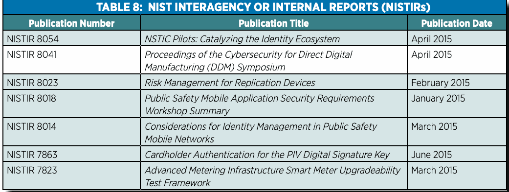
| 表8：NIST省庁間報告書または内部報告書（NISTIR） | ||
| 文書番号 | 文書名 | 公開日 |
| NISTIR 8054 | NSTIC実証事業：IDエコシステムの促進 | 2015年4月 |
| NISTIR 8041 | ダイレクト・デジタル製造（DDM）のサイバーセキュリティに関するシンポジウム議事録 | 2015年4月 |
| NISTIR 8023 | レプリケーションデバイスのリスク管理 | 2015年2月 |
| NISTIR 8018 | 公共安全モバイルアプリケーションのセキュリティ要件ワークショップ概要 | 2015年1月 |
| NISTIR 8014 | 公共安全モバイルネットワークにおけるID管理に関する検討事項 | 2015年3月 |
| NISTIR 7863 | PIV電子署名鍵のカード保有者認証 | 2015年6月 |
| NISTIR 7823 | 高度計量インフラストラクチャのスマートメーター更新可能性試験フレームワーク | 2015年3月 |
| TABLE 9: ITL BULLETINS | |
| Publication Date | Bulletin Title |
| September 2015 | Additional Secure Hash Algorithm Standards Offer New Opportunities for Data Protection |
| August 2015 | Recommendation for Random Number Generation Using Deterministic Random Bit Generators |
| July 2015 | Improved Security and Mobility Through Updated Interfaces for PIV Cards |
| June 2015 | Increasing Visibility and Control of Your ICT Supply Chains |
原本PDFの抜粋画像
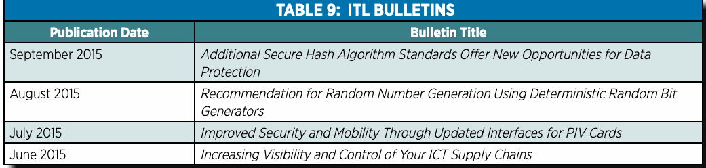
| 表9：ITL Bulletin | |
| 公開日 | Bulletinのタイトル |
| 2015年9月 | セキュアハッシュアルゴリズムに関する追加規格がデータ保護に新たな機会をもたらす |
| 2015年8月 | 決定論的ランダムビット生成器による乱数生成に関する推奨事項 |
| 2015年7月 | PIVカードの更新インターフェースによるセキュリティとモビリティの向上 |
| 2015年6月 | ICTサプライチェーンの可視性と管理の向上 |
9 0
原文のみ
COMP U TER SECURITY DI VI SION ANNUAL REP ORT | 2 01 5 THIS PUBLICATION IS AVAILABLE FREE OF CHARGE FROM:
コンピュータセキュリティ部門年次報告書｜2015 本出版物は次から無料で入手できます：
未レビュー訳http://dx.doi.org/10.6028/NIST.SP.800-182
http://dx.doi.org/10.6028/NIST.SP.800-182
未レビュー訳| TABLE 9 (CONT.): ITL BULLETINS | |
| Publication Date | Bulletin Title |
| May 2015 | Authentication Considerations for Public Safety Mobile Networks |
| April 2015 | Is Your Replication Device Making an Extra Copy for Someone Else? |
| March 2015 | Guidance for Secure Authorization of Mobile Applications in the Corporate Environment |
| February 2015 | NIST Special Publication 800-88 Revision 1, Guidelines for Media Sanitization |
| January 2015 | Release of NIST Special Publication 800-53A, Revision 4, Assessing Security and Privacy Controls in Federal Information Systems and Organizations |
| December 2014 | Release of NIST Special Publication 800-157, Guidelines for Derived Personal Identity Verification (PIV) Credentials |
| November 2014 | Cryptographic Module Validation Program (CMVP) |
| October 2014 | Release of NIST Special Publication 800-147B, BIOS Protection Guidelines for Servers |
原本PDFの抜粋画像
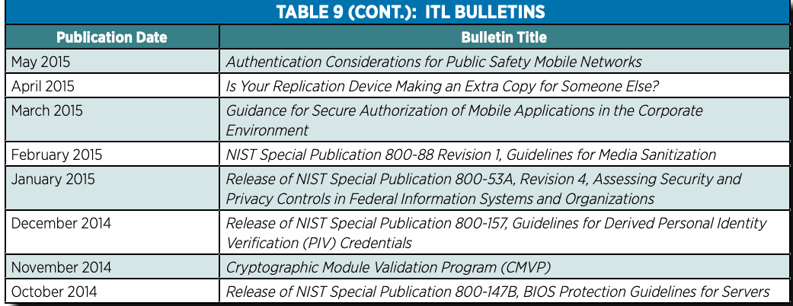
| 表9（続き）：ITL Bulletin | |
| 公開日 | Bulletinのタイトル |
| 2015年5月 | 公共安全モバイルネットワークの認証に関する検討事項 |
| 2015年4月 | レプリケーションデバイスは他者向けに余分なコピーを作成していないか |
| 2015年3月 | 企業環境におけるモバイルアプリケーションの安全な認可に関するガイダンス |
| 2015年2月 | NIST特別刊行物SP 800-88改訂1：媒体のサニタイズに関するガイドライン |
| 2015年1月 | NIST特別刊行物SP 800-53A改訂4の公開：連邦情報システムおよび組織のセキュリティ・プライバシー管理策の評価 |
| 2014年12月 | NIST特別刊行物SP 800-157の公開：派生個人識別検証（PIV）資格情報に関するガイドライン |
| 2014年11月 | 暗号モジュール検証プログラム（CMVP） |
| 2014年10月 | NIST特別刊行物SP 800-147Bの公開：サーバー向けBIOS保護ガイドライン |
and verification of digital signatures, 2) key derivation, and 3)
〔右段・続き〕デジタル署名の検証、2）鍵導出、および3）
未レビュー訳A B S T R A C T S O F N I S T
NIST
未レビュー訳pseudorandom bit generation. The hash functions specified
疑似乱数ビット生成である。ハッシュ関数は、
未レビュー訳T E C H N I C A L S E R I E S
技術文書
未レビュー訳in this standard supplement the SHA-1 hash function and
この規格はSHA-1ハッシュ関数と
未レビュー訳P U B L I C A T I O N S R E L E A S E D I N
2015年度に公開した
未レビュー訳the SHA-2 family of hash functions that are specified in FIPS
FIPS
未レビュー訳F Y 2 0 1 5
出版物の概要
未レビュー訳180-4, SecureHashStandard. Extendable-output functions are different from hash functions, but it is possible to use them in similar ways, with
180-4「Secure Hash Standard」で規定されたSHA-2ハッシュ関数群を補完する。拡張出力関数はハッシュ関数と異なるが、類似の用途に使え、
未レビュー訳The following sections provide abstracts for the draft and
以下の節では、ドラフト版および
未レビュー訳the flexibility to be adapted directly to the requirements
各アプリケーションの要件に直接適応できる柔軟性がある一方、
未レビュー訳final FIPS, SPs, and security-related NISTIRs listed in the
前節に掲載したFIPS、SP、およびセキュリティ関連NISTIRの
未レビュー訳of individual applications, subject to additional security
追加のセキュリティ上の
未レビュー訳previous section. These publications are available at
最終版出版物の概要を紹介する。これらの出版物は
未レビュー訳considerations.
考慮事項がある。
未レビュー訳http://csrc.nist.gov/publications.
http://csrc.nist.gov/publications から入手できる。
未レビュー訳FIPS 180-4 (Updated), Secure Hash Standard (SHS)
FIPS 180-4（更新版）：セキュアハッシュ標準（SHS）
未レビュー訳FEDERAL INFORMATION PROCESSING This standard specifies SHA-1 and the SHA-2 family of hash
〔左段・見出し〕連邦情報処理標準〔右段〕この標準はSHA-1およびSHA-2ファミリーのハッシュ
未レビュー訳STANDARDS (FIPS)
（FIPS）
未レビュー訳algorithms that can be used to generate digests of messages. The digests are used to detect whether messages have been
アルゴリズムを規定し、メッセージのダイジェスト生成に使用できる。ダイジェストは、メッセージが
未レビュー訳FIPS 202, SHA-3 Standard: Permutation-Based Hash and changed since the digests were generated. The Applicability Extendable-Output Functions
FIPS 202「SHA-3標準：置換型ハッシュおよび拡張出力関数」
未レビュー訳Clause of this standard was revised to correspond with the release of FIPS 202, SHA-3 Standard: Permutation-Based
生成後に変更されたかどうかを検出する。この規格の適用範囲条項は、FIPS 202「SHA-3標準：置換型
未レビュー訳This standard specifies the Secure Hash Algorithm-3 (SHA-
この標準は、セキュアハッシュアルゴリズム3（SHA-
未レビュー訳Hash and Extendable-Output Functions (see above). The
ハッシュおよび拡張出力関数」（前述）の公開に合わせて改訂された。この
未レビュー訳3) family of functions on binary data. Each of the SHA-3
3）というバイナリデータ向け関数群を規定する。各SHA-3
未レビュー訳revision to the Applicability Clause approves the use of
適用範囲条項の改訂により、
未レビュー訳functions is based on an instance of the Keccak algorithm
関数はKeccakアルゴリズムの一つの実装に基づく。
未レビュー訳hash functions specified in either FIPS 180-4 or FIPS 202
FIPS 180-4またはFIPS 202で規定されたハッシュ関数の使用が認められた。
未レビュー訳that NIST selected as the winner of the SHA-3 Cryptographic
NISTがSHA-3暗号
未レビュー訳when a secure hash function is required for the protection
連邦アプリケーションで機微な非機密情報を保護する際に
未レビュー訳Hash Algorithm Competition. This standard also specifies
ハッシュアルゴリズム競争の勝者に選定した。さらに、この規格は
未レビュー訳of sensitive, unclassified information in federal applications,
セキュアハッシュ関数が必要な場合、
未レビュー訳the Keccak-p family of mathematical permutations,
Keccak-pと呼ばれる数学的置換のファミリーを規定し、
未レビュー訳including as a component within other cryptographic
他の暗号
未レビュー訳including the permutation that underlies Keccak, in order to
Keccakの基盤となる置換も含め、
未レビュー訳algorithms and protocols.
アルゴリズムやプロトコルの構成要素として使用できる。
未レビュー訳facilitate the development of additional permutation-based cryptographic functions. The SHA-3 family consists of four cryptographic hash
追加の置換ベース暗号関数の開発を容易にする。SHA-3ファミリーには4つの暗号学的ハッシュ関数があり、
未レビュー訳NIST SPECIAL PUBLICATIONS
NIST特別刊行物
未レビュー訳functions, called SHA3-224, SHA3-256, SHA3-384, and SHA3-512, and two extendable-output functions (XOFs), DRAFT SP 800-177, Trustworthy Email called SHAKE128 and SHAKE256.
〔左段・続き〕SHA3-224、SHA3-256、SHA3-384、SHA3-512と呼ばれる4種類、およびSHAKE128とSHAKE256と呼ばれる2種類の拡張出力関数（XOF）で構成される。〔右段・見出し〕ドラフトSP 800-177「信頼できる電子メール」
未レビュー訳This document gives recommendations and guidelines
この文書は、電子メールへの信頼を高めるための推奨事項とガイドラインを示す。
未レビュー訳Hash functions are components for many important for enhancing trust in email. The primary audience information security applications, including 1) the generation includes enterprise email administrators, information
〔左段〕ハッシュ関数は、多くの重要な情報セキュリティ用途で使われる構成要素であり、1）メッセージダイジェストの生成、〔右段・SP 800-177〕主な対象読者には企業の電子メール管理者や情報
未レビュー訳9 1
原文のみ
CS D PU BL I CAT IO N S | FY 2 01 5
CSD Publications｜2015年度
未レビュー訳security specialists and network managers. This guideline the CUI category or subcategory listed in the CUI Registry. applies to federal IT systems and will also be useful for The requirements apply to all components of nonfederal any small or medium sized organizations. Technologies information systems and organizations that process, store, recommended in support of the core Simple Mail Transfer or transmit CUI, or provide security protection for such Protocol (SMTP) and the Domain Name System (DNS) components. The CUI requirements are intended for use by include mechanisms for authenticating a sending domain federal agencies in contractual vehicles or other agreements (Sender Policy Framework (SPF), Domain Keys Identified established between those agencies and nonfederal Mail (DKIM) and Domain-based Message Authentication), organizations. Reporting and Conformance (DMARC). Recommendations
原文更新後、再確認待ち
SP 800-163, Vetting the Security of Mobile Applications
SP 800-163「モバイルアプリケーションのセキュリティ審査」
未レビュー訳for email transmission security include Transport Layer
〔左段・メールのセキュリティ〕メール送信のセキュリティ対策には、トランスポート層
未レビュー訳Today’s commercially available mobile devices (e.g.,
〔右段・モバイルアプリ〕現在市販されているモバイル機器（例：
未レビュー訳Security (TLS) and associated certificate authentication
〔左段〕セキュリティ（TLS）および関連する証明書認証
未レビュー訳smartphones and tablets) are handheld computing
〔右段〕スマートフォンやタブレット）は、携帯型コンピューティング
未レビュー訳protocols. Email content security is facilitated through the
〔左段〕プロトコルである。メール本文のセキュリティは、
未レビュー訳platforms with wireless capabilities, geographic localization
〔右段〕プラットフォームであり、無線通信、位置情報取得
未レビュー訳encryption and authentication of message content using
〔左段〕メッセージ内容を暗号化し認証することによって実現される。
未レビュー訳capabilities,cameras,andmicrophones.Similartocomputing
〔右段〕機能、カメラ、マイクを備える。他のコンピューティング
未レビュー訳Secure/Multipurpose Internet Mail Extensions (S/MIME) and
〔左段〕Secure/Multipurpose Internet Mail Extensions（S/MIME）および
未レビュー訳platforms such as desktops and laptops, the user experience
〔右段〕プラットフォーム（デスクトップやノートパソコンなど）と同様に、モバイル機器でのユーザー体験は
未レビュー訳OpenPGP, and associated certificate and key distribution
〔左段〕OpenPGPと、関連する証明書・鍵の配布
未レビュー訳with a mobile device is tied to the software apps and the
〔右段〕ソフトウェアアプリと
未レビュー訳protocols.
〔左段〕プロトコルを用いる。
未レビュー訳tools and utilities available. The purpose of this document
〔右段〕ツール、ユーティリティに左右される。本書の目的は、
未レビュー訳SP 800-176, Computer Security Division 2014 Annual
SP 800-176「コンピュータセキュリティ部門 2014年度年次
未レビュー訳is to provide guidance for vetting third party software
〔右段〕モバイル機器向けサードパーティ製ソフトウェア
未レビュー訳Report
報告書」
未レビュー訳applications (apps) for mobile devices. Mobile app vetting is
〔右段〕アプリケーション（アプリ）を審査するための指針である。モバイルアプリ審査では、
未レビュー訳Title III of the E-Government Act of 2002, titled the Federal intended to assess a mobile app’s operational characteristics Information Security Management Act (FISMA) of 2002, of secure behavior and reliability (including performance) so requires NIST to prepare an annual public report on activities that organizations can determine if the app is acceptable for undertaken in the previous year and planned for the coming use in their expected environment. year to carry out responsibilities under this law. The primary
〔左段〕2002年電子政府法第III編、すなわち2002年連邦情報セキュリティマネジメント法（FISMA）は、NISTに対し、この法律上の責任を果たすため、前年度の活動と翌年度の計画を年次公開報告書にまとめることを求める。主な〔右段〕アプリの安全な動作と信頼性（性能を含む）に関する運用特性を評価し、組織が想定する利用環境でアプリを使用可能か判断できるようにする。
未レビュー訳SP 800-161, Supply Chain Risk Management Practices for
SP 800-161「
未レビュー訳goal of the Computer Security Division, a component of
〔左段・年次報告書〕目標は、
未レビュー訳Federal Information Systems and Organizations
〔右段・SP 800-161〕連邦情報システムおよび組織のサプライチェーンリスク管理実務」
未レビュー訳NIST’s Information Technology Laboratory, is to provide
NISTの情報技術研究所（ITL）の一部門である
未レビュー訳Federal agencies are concerned about the risks associated
〔右段〕連邦機関は、
未レビュー訳standards and technology that protects information
CSDが、情報を保護する規格と技術を提供し、情報
未レビュー訳with information and communications technology (ICT)
情報通信技術（ICT）製品・サービスに伴うリスクを懸念している。
未レビュー訳systems against threats to the confidentiality, integrity, and
システムを機密性、完全性、および
未レビュー訳products and services that may contain potentially malicious
こうした製品・サービスには、悪意ある機能が
未レビュー訳availability of information and services. During Fiscal Year
可用性に対する脅威から保護することである。2014会計年度中、
未レビュー訳functionality, are counterfeit, or are vulnerable due to
含まれる、偽造品である、または、次に述べる要因により脆弱である
未レビュー訳2014, CSD successfully responded to numerous challenges
CSDは、その使命を果たす中で多くの課題に適切に対応し、
未レビュー訳poor manufacturing and development practices within
ICTサプライチェーンにおける製造・開発慣行の不備
未レビュー訳and opportunities in fulfilling that mission. This annual report
機会も活かした。本年次報告書は、
未レビュー訳the ICT supply chain. These risks are associated with the
に関連する。こうしたリスクは、
未レビュー訳highlights the research agenda and activities in which CSD
2014会計年度中にCSDが取り組んだ
未レビュー訳federal agencies decreased visibility into, understanding
〔右段〕連邦機関が、調達技術に対する可視性と理解を低下させ、
未レビュー訳was engaged during FY 2014.
研究課題と活動を紹介する。
未レビュー訳of, and control over how the technology that they acquire
調達する技術を管理できず、また、その技術がどのように
未レビュー訳SP 800-171, Protecting Controlled Unclassified
〔左段・見出し〕SP 800-171「管理対象非機密情報（CUI）の保護
未レビュー訳is developed, integrated and deployed, as well as the
開発、統合、展開されるか、さらに
未レビュー訳Information in Nonfederal Information Systems and
〔見出し続き〕非連邦情報システムおよび
未レビュー訳processes, procedures, and practices used to assure the
〔右段・SP 800-161〕ICTサプライチェーンの完全性、セキュリティ、レジリエンス、および製品・
未レビュー訳Organizations
〔見出し続き〕組織における」
未レビュー訳integrity, security, resilience, and quality of the products and
〔右段〕サービスの品質を確保するために用いられるプロセス、手順、慣行。
未レビュー訳The protection of Controlled Unclassified Information services. (CUI) while residing in nonfederal information systems
〔左段・年次報告書末尾〕情報およびサービス。〔左段・SP 800-171本文〕非連邦情報システムおよび組織内に存在する管理対象非機密情報（CUI）を保護することは、
未レビュー訳This publication provides guidance to federal agencies on
〔右段・SP 800-161〕本出版物は、連邦機関に対し、
未レビュー訳and organizations is of paramount importance to federal
〔左段〕連邦機関にとって極めて重要であり、
未レビュー訳identifying, assessing, and mitigating ICT supply chain risks
〔右段〕ICTサプライチェーンリスクを特定、評価、低減するための指針を示す。
未レビュー訳agencies and can directly impact the ability of the Federal
〔左段〕CUIを保護できるかどうかは、連邦政府が
未レビュー訳at all levels of their organizations. This publication integrates
〔右段〕組織のすべての階層を対象とする。本出版物は、
未レビュー訳Government to successfully carry out its designated missions
指定任務および事業運営を成功裏に遂行する能力に直接影響し得る。
未レビュー訳ICT supply chain risk management (SCRM) into federal
〔右段〕ICTサプライチェーンリスク管理（SCRM）を連邦機関の
未レビュー訳and business operations. This publication provides federal
〔左段〕本出版物は、連邦機関に対し、
未レビュー訳agency risk management activities by applying a multi-
〔右段〕リスク管理活動に統合し、多層的な
未レビュー訳agencies with recommended requirements for protecting
CUIの機密性を保護するための推奨要件を示す。
未レビュー訳tiered, SCRM-specific approach, including guidance on
〔右段〕SCRM固有のアプローチを適用し、
未レビュー訳the confidentiality of CUI: (i) when the CUI is resident in
〔左段〕CUIが非連邦情報システムおよび組織内に存在する場合、（i）
未レビュー訳supply chain risk assessment and mitigation activities.
〔右段〕サプライチェーンリスクの評価と低減活動に関する指針を含む。
未レビュー訳nonfederal information systems and organizations; (ii)
〔左段〕（ii）
未レビュー訳SP 800-157, Guidelines for Derived Personal Identity
SP 800-157「派生個人識別検証（PIV）資格情報に関する
未レビュー訳when the information systems where the CUI resides are
〔左段〕CUIを含む情報システムが
未レビュー訳Verification (PIV) Credentials
〔右段・SP 800-157見出し続き〕指針」
未レビュー訳not used or operated by contractors of federal agencies or other organizations on behalf of those agencies; and This recommendation provides technical guidelines for (iii) where there are no specific safeguarding requirements the implementation of standards-based, secure, reliable, for protecting the confidentiality of CUI prescribed by the interoperable public key infrastructure (PKI)-based identity authorizing law, regulation, or government-wide policy for credentials that are issued by federal departments and
〔左段・SP 800-171本文〕連邦機関の請負業者、または当該機関に代わって活動する他の組織によって使用・運用されていない場合、および（iii）CUIの機密性を保護するための具体的な保護要件が、当該CUIを認可する法律、規則、または政府全体の方針に定められていない場合。〔右段・SP 800-157本文〕本勧告は、標準に基づく安全で信頼性と相互運用性を備えた公開鍵基盤（PKI）ベースのID資格情報を実装するための技術指針を示す。これらの資格情報は、連邦省庁および
未レビュー訳9 2
原文のみ
COMP U TER SECURITY DI VI SION ANNUAL REP ORT | 2 01 5 THIS PUBLICATION IS AVAILABLE FREE OF CHARGE FROM:
〔フッター〕コンピュータセキュリティ部門 年次報告書｜2015 本出版物は次のURLから無料で入手できる：
未レビュー訳agencies to individuals who possess and prove control DRAFT SP 800-125A, Secure Recommendations for over a valid PIV Card. The scope of this document includes Hypervisor Deployment requirements for initial issuance and maintenance of
原文更新後、再確認待ち
The Hypervisor is a piece of software that provides the
〔右段・SP 800-125A〕ハイパーバイザーは、次の機能を提供するソフトウェアである。
未レビュー訳these credentials, certificate policies and cryptographic
〔左段・SP 800-157続き〕これらの資格情報、証明書ポリシーおよび暗号仕様、
未レビュー訳abstraction of all physical resources (such as CPU, Memory,
〔右段〕CPU、メモリ、ネットワーク、ストレージなど、すべての物理リソースを抽象化し、その結果、
未レビュー訳specifications, technical specifications for permitted
〔左段〕使用可能な暗号トークンの種類に関する技術仕様、
未レビュー訳Network and Storage) and thus, enables multiple computing
〔右段〕オペレーティングシステム、ミドルウェア、アプリケーションプログラムで構成される複数のコンピューティングスタックを、
未レビュー訳cryptographic token types and the command interfaces
〔左段〕取り外し可能な暗号トークン実装用のコマンドインターフェース。
未レビュー訳stacks (consisting of an operating system, Middleware and
〔右段〕単一の物理ホスト上で仮想マシン（VM）として実行できるようにする。
未レビュー訳for the removable implementations of such cryptographic
〔左段〕このような暗号トークンの取り外し可能な実装に用いる
未レビュー訳Application programs) called Virtual Machines (VMs) to
〔右段〕さらに、ハイパーバイザーは、単一の物理ホスト内にネットワークを定義する機能を備える場合がある。
未レビュー訳tokens.
〔左段〕トークン。
未レビュー訳be run on a single physical host. In addition, a hypervisor may have the functionality to define a network within a
〔右段〕（仮想ネットワークと呼ぶ）
未レビュー訳DRAFT SP 800-152 (Third Draft), A Profile for U.S. Federal Cryptographic Key Management Systems (CKMS) single physical host (called a virtual network) to enable
〔左段・見出し〕草案 SP 800-152（第3草案）「米国連邦暗号鍵管理システム（CKMS）のプロファイル」〔右段〕このネットワークにより、
未レビュー訳communication among the VMs resident on that host, as
〔右段〕そのホスト上に存在するVM間の通信を可能にし、
未レビュー訳This Profile for U.S. Federal Cryptographic Key Management
〔左段・SP 800-152本文〕米国連邦暗号鍵管理システム
未レビュー訳well as with physical and virtual machines outside the host.
〔右段〕ホスト外部の物理マシンおよび仮想マシンとの通信も可能にする。
未レビュー訳Systems (FCKMSs) contains requirements for their design,
（FCKMS）の本プロファイルは、その設計に関する要件を定め、
未レビュー訳With all this functionality, the hypervisor is responsible
〔右段〕このような機能を備えるハイパーバイザーは、
未レビュー訳implementation, procurement, installation, configuration,
〔左段〕実装、調達、設置、構成、
未レビュー訳for mediating access to physical resources, providing run-
〔右段・SP 800-125A〕物理リソースへのアクセスを仲介し、実行時の
未レビュー訳management, operation, and use by U.S. federal
〔左段〕管理、運用、および米国連邦組織による使用を扱う。本プロファイルはSP 800-130「
未レビュー訳time isolation among resident VMs and enabling a virtual
〔右段〕稼働中のVM間で実行時の分離を実現し、仮想
未レビュー訳organizations. The Profile is based on SP 800-130, A
〔左段〕暗号鍵管理システム（CKMS）を設計するための
未レビュー訳network that provides security-preserving communication
〔右段〕セキュリティを維持する通信を可能にするネットワーク
未レビュー訳FrameworkforDesigningCryptographicKeyManagement
フレームワーク
未レビュー訳flow among the VMs, and between the VMs and the external
〔右段〕VM間、およびVMと外部ネットワーク間の通信フロー
未レビュー訳Systems(CKMS).
」に基づく。
未レビュー訳network. To design a hypervisor with the core functionality
〔右段〕を実現する。上記の中核機能を備えるハイパーバイザーを設計するには、
未レビュー訳DRAFT SP 800-150, Guide to Cyber Threat Information
〔左段・見出し〕草案 SP 800-150「サイバー脅威情報共有ガイド
未レビュー訳described above, there are architectural options, with each
〔右段〕複数のアーキテクチャ選択肢があり、それぞれ
未レビュー訳Sharing
〔左段・見出し続き〕」
未レビュー訳option presenting a different size of Trusted Computing
〔右段〕信頼できるコンピューティング基盤（TCB）の規模が異なる。そのため、必要なセキュリティ保証を容易に提供できる度合いも異なる。そこで、
未レビュー訳In today’s active threat environment, incident detection and Base (TCB) and hence, a different degree of ease in response is an ongoing challenge for many organizations. providing the required security assurance. Hence, in This publication assists organizations in establishing providing security recommendations for the hypervisor, two computer security incident response capabilities that different approaches have been adopted in this document– leverage the collective knowledge, experience, and abilities one approach based on architectural options that provide of their partners by actively sharing threat intelligence and more security assurance, and the second approach based on ongoing coordination. This publication provides guidelines configurationchoicesthatformpartofitscoreadministrative for coordinated incident handling, including producing functions, such as the management of VMs, hypervisor host, and consuming data, participating in information sharing hypervisor software and virtual networks. communities, and protecting incident-related data.
〔左段・SP 800-150本文〕今日の活発な脅威環境では、多くの組織にとってインシデントの検知と対応が継続的な課題である。本出版物は、脅威情報を積極的に共有し継続的に連携することで、組織がパートナーの知識、経験、能力を活用したコンピュータセキュリティインシデント対応能力を確立するのを支援する。協調的なインシデント対応の指針として、データの作成・利用、情報共有コミュニティへの参加、インシデント関連データの保護を扱う。〔右段・SP 800-125A〕ハイパーバイザーのセキュリティ推奨事項には、本書で2つの異なるアプローチを採用する。1つはより高いセキュリティ保証を提供するアーキテクチャ選択肢に基づき、もう1つはVM、ハイパーバイザーホスト、ハイパーバイザーソフトウェア、仮想ネットワークの管理など、中核的な管理機能の構成選択肢に基づく。
未レビュー訳DRAFT SP 800-125B, Secure Virtual Network Configuration for Virtual Machine (VM) Protection
〔右段・見出し〕草案 SP 800-125B「仮想マシン（VM）保護のためのセキュアな仮想ネットワーク構成」
未レビュー訳DRAFT SP 800-131A Revision 1, Transitions: Recommendation for Transitioning the Use of
〔左段・見出し〕草案 SP 800-131A 改訂1「移行：
未レビュー訳Virtual Machines (VMs) are key resources to be protected,
〔右段・SP 800-125B〕仮想マシン（VM）は、保護すべき重要な資源である。
未レビュー訳Cryptographic Algorithms and Key Lengths
〔左段・見出し続き〕暗号アルゴリズムおよび鍵長の使用移行に関する勧告」
未レビュー訳since they are the compute engines hosting mission-critical
〔右段〕VMはミッションクリティカルなアプリケーションを実行する計算基盤であるためである。
未レビュー訳At the start of the 21st Century, NIST began the task of applications. Since VMs are end-nodes of a virtual network, providing cryptographic key management guidance, the configuration of the virtual network forms an important which includes defining and implementing appropriate key element in the security of VMs and their hosted applications. management procedures, using algorithms that adequately The virtual network configuration areas discussed in this protect sensitive information, and planning ahead for document are: Network Segmentation, Network path possible changes in the use of cryptography because redundancy,firewalldeploymentarchitecturesandVMTraffic of algorithm breaks or the availability of more powerful Monitoring. The various configuration options under these computing techniques. NIST SP 800-57 Part 1 was the first areas are analyzed for their advantages and disadvantages, document produced in this effort, and includes a general and a set of security recommendations are provided. approach for transitioning from one algorithm or key length
〔左段・SP 800-131A本文〕21世紀初頭、NISTは暗号鍵管理の指針作成に着手した。これには、適切な鍵管理手順の定義・実装、機微情報を十分に保護するアルゴリズムの使用、暗号アルゴリズムの破綻やより強力な計算技術の利用可能性を見越した計画が含まれる。NIST SP 800-57 Part 1はこの取り組みで最初に作成された文書であり、アルゴリズムまたは鍵長を移行するための一般的な方法を示す。〔右段・SP 800-125B本文〕VMは仮想ネットワークの末端ノードであるため、仮想ネットワークの構成はVMおよびその上で動作するアプリケーションのセキュリティにとって重要である。本書では、ネットワーク分割、ネットワーク経路の冗長化、ファイアウォール配置アーキテクチャ、VMトラフィック監視を構成領域として扱う。各領域の構成選択肢について利点と欠点を分析し、セキュリティ推奨事項を示す。
未レビュー訳SP 800-90A Revision 1, Recommendation for Random
〔右段・見出し〕SP 800-90A 改訂1「勧告：
未レビュー訳to another. This Recommendation (SP 800-131A) provides
〔左段〕別のアルゴリズムまたは鍵長へ移行するためのものである。本勧告（SP 800-131A）は、
未レビュー訳Number Generation Using Deterministic Random Bit
〔右段・見出し続き〕決定論的乱数ビット
未レビュー訳more specific guidance for transitions to the use of stronger
〔左段〕より強力な
未レビュー訳Generators
〔右段・見出し続き〕生成器を用いる乱数生成」
未レビュー訳cryptographic keys and more robust algorithms.
〔左段〕暗号鍵およびより堅牢なアルゴリズムへの移行について、さらに具体的な指針を示す。
未レビュー訳This Recommendation specifies mechanisms for the generation of random bits using deterministic methods. The methods provided are based on either hash functions or block cipher algorithms.
〔右段・SP 800-90A本文〕本勧告は、決定論的方式で乱数ビットを生成するためのメカニズムを規定する。方式はハッシュ関数またはブロック暗号アルゴリズムに基づく。
未レビュー訳9 3
原文のみ
CS D PU BL I CAT IO N S | FY 2 01 5
〔フッター〕コンピュータセキュリティ部門の出版物｜2015年度
未レビュー訳THIS PUBLICATION IS AVAILABLE FREE OF CHARGE FROM: http://dx.doi.org/10.6028/NIST.SP.800-182
〔フッター〕本出版物は次のURLから無料で入手できる： http://dx.doi.org/10.6028/NIST.SP.800-182
未レビュー訳SP 800-88 Revision 1, Guidelines for Media Sanitization SP 800-78-4, Cryptographic Algorithms and Key Sizes for
〔左段・見出し〕SP 800-88改訂1「媒体のサニタイズに関する指針」〔右段・見出し〕SP 800-78-4「個人識別検証（PIV）用暗号アルゴリズムおよび鍵サイズ：
未レビュー訳Personal Identity Verification
〔右段・見出し続き〕個人識別検証」
未レビュー訳Media sanitization refers to a process that renders access to target data on the media infeasible for a given level of FIPS201-2definesrequirementsforthePIVlifecycleactivities, effort. This guide will assist organizations and system including identity proofing, registration, PIV Card issuance, owners in making practical sanitization decisions, based on and PIV Card usage. FIPS 201-2 also defines the structure of a categorization of the confidentiality of their information. an identity credential that includes cryptographic keys. This
〔左段・SP 800-88本文〕媒体のサニタイズとは、所定の労力で、媒体上の対象データへのアクセスを実行不可能にする処理をいう。本ガイドは、情報の機密性分類に基づき、組織やシステム所有者が現実的なサニタイズ判断を行うのを支援する。〔右段・SP 800-78-4本文〕FIPS 201-2は、本人確認、登録、PIVカードの発行および利用を含むPIVライフサイクル活動の要件を定める。また、暗号鍵を含むID資格情報の構造も定めている。この
未レビュー訳document contains the technical specifications needed for
〔右段〕本書は、
未レビュー訳DRAFT SP 800-85A-4, PIV Card Application and
〔左段・見出し〕草案 SP 800-85A-4「PIVカードアプリケーションおよび
未レビュー訳the mandatory and optional cryptographic keys specified in
〔右段〕FIPS 201-2で規定された必須および任意の暗号鍵に関する技術仕様を含む。
未レビュー訳Middleware Interface Test Guidelines (SP 800-73-4
〔左段・見出し続き〕ミドルウェアインターフェース試験指針（SP 800-73-4
未レビュー訳FIPS 201-2, as well as the supporting infrastructure specified
〔右段〕さらに、FIPS 201-2および関連文書で定める支援インフラの仕様も含む。
未レビュー訳Compliance)
〔左段・見出し続き〕適合性）」
未レビュー訳in FIPS 201-2 and the related SP 800-73-4, Interfacesfor
〔右段〕関連するSP 800-73-4「個人識別検証インターフェース」および
未レビュー訳SP 800-73 contains the technical specifications to interface
〔左段・SP 800-85A本文〕SP 800-73は、スマートカードとのインターフェースに必要な技術仕様を定める。
未レビュー訳PersonalIdentityVerification, and SP 800-76-2, Biometric
〔右段〕SP 800-76-2「生体認証仕様」など、
未レビュー訳with the smart card to retrieve and use the PIV identity
〔左段〕これにより、PIV ID資格情報を取得・使用できる。
未レビュー訳SpecificationsforPersonalIdentityVerification, that rely on
〔右段〕個人識別検証に用いられる
未レビュー訳credentials. This document, SP 800-85A, contains the
〔左段〕本書（SP 800-85A）は、
未レビュー訳cryptographic functions.
〔右段〕暗号機能。
未レビュー訳test assertions and test procedures for testing smart card
〔左段〕スマートカードミドルウェアおよびカードアプリケーションの試験用アサーションと試験手順を規定し、
未レビュー訳SP 800-73-4, Interfaces for Personal Identity Verification
〔右段・見出し〕SP 800-73-4「個人識別検証（PIV）インターフェース」
未レビュー訳middleware as well as the card application. The tests reflect the design goals of interoperability and PIV Card functions. FIPS 201 defines the requirements and characteristics of a
〔左段・SP 800-85A本文〕試験では、相互運用性とPIVカード機能という設計目標を確認する。〔右段・SP 800-73本文〕FIPS 201は、政府全体で相互運用可能なID資格情報の要件と特性を定める。
未レビュー訳government-wide interoperable identity credential. FIPS 201
〔右段〕このID資格情報はスマートカードに格納しなければならない。FIPS 201
未レビュー訳SP 800-82 Revision 2, Guide to Industrial Control
〔左段・見出し〕SP 800-82改訂2「産業用制御
未レビュー訳also specifies that this identity credential must be stored on a
〔右段・SP 800-73本文〕また、FIPS 201はこの資格情報をスマートカードに格納することも定めている。本書（SP 800-73）は、
未レビュー訳Systems (ICS) Security
〔左段・見出し続き〕システム（ICS）セキュリティガイド」
未レビュー訳smart card. This document, SP 800-73, contains the technical
〔右段〕スマートカードに接続し、PIV ID資格情報を取得するための技術仕様を定め、
未レビュー訳ThisdocumentprovidesguidanceonhowtosecureIndustrial
〔左段・SP 800-82本文〕本書は、産業用
未レビュー訳specifications to interface with the smart card to retrieve
〔右段〕それらの資格情報を使用する。仕様は、
未レビュー訳Control Systems (ICS), including Supervisory Control and
〔左段〕制御システム（ICS）、特に監視制御・データ収集（SCADA）
未レビュー訳and use the PIV identity credentials. The specifications
〔右段〕相互運用性とPIVカード機能という設計目標を反映する。
未レビュー訳Data Acquisition (SCADA) systems, Distributed Control
〔左段〕システム、分散制御システム（DCS）および他の制御システム構成、
未レビュー訳reflect the design goals of interoperability and PIV Card
〔右段〕これらの目標は、PIVデータモデル、カードエッジインターフェース、およびアプリケーションプログラミング
未レビュー訳Systems (DCS), and other control system configurations,
〔左段〕例えばプログラマブルロジックコントローラ（PLC）などを対象に、
未レビュー訳functions. The goals are addressed by specifying a PIV data
〔右段〕インターフェースを規定することで達成される。さらに、仕様は
未レビュー訳such as Programmable Logic Controllers (PLC), while
〔左段〕固有の性能、信頼性、安全性の要件に対処しながら、
未レビュー訳model, card edge interface, and application programming
〔右段〕規範標準に対する実装者の解釈を制約する。
未レビュー訳addressing their unique performance, reliability, and safety
〔左段〕ICSの概要を示し、
未レビュー訳interface. The specifications go further by constraining
〔右段〕こうした制約は、実装を容易にし、
未レビュー訳requirements. The document provides an overview of ICS
〔左段〕一般的なシステムトポロジを説明し、典型的な脅威と
未レビュー訳implementers’ interpretations of the normative standards.
〔右段〕相互運用性を促進し、
未レビュー訳and typical system topologies, identifies typical threats and
〔左段〕脆弱性を特定するほか、
未レビュー訳Such restrictions are designed to ease implementation,
〔右段〕PIVアプリケーションに適した形で性能を確保する。
未レビュー訳vulnerabilities to these systems, and provides recommended
〔左段〕関連リスクを低減するために推奨される
未レビュー訳facilitate interoperability, and ensure performance, in a
〔右段・SP 800-73本文〕相互運用性を促進し、
未レビュー訳security countermeasures to mitigate the associated risks.
〔左段〕セキュリティ対策を示す。
未レビュー訳manner tailored for PIV applications.
〔右段〕PIVアプリケーションに合わせた形で性能を確保する。
未レビュー訳SP 800-79-2, Guidelines for the Authorization of Personal
〔左段・見出し〕SP 800-79-2「個人識別検証カード発行者（PCI）および派生PIV
未レビュー訳DRAFT SP 800-70 Revision 3, National Checklist Program
〔右段・見出し〕草案 SP 800-70改訂3「IT製品向け国家チェックリストプログラム：
未レビュー訳Identity Verification Card Issuers (PCI) and Derived PIV
〔左段・見出し続き〕資格情報発行者（DPCI）の認可に関する
未レビュー訳for IT Products: Guidelines for Checklist Users and
〔右段・見出し続き〕チェックリスト利用者および
未レビュー訳Credential Issuers (DPCI)
〔左段・見出し続き〕ガイドライン」
未レビュー訳Developers
〔右段・見出し続き〕開発者向けガイドライン」
未レビュー訳The purpose of this SP is to provide appropriate and useful
〔左段・SP 800-79-2本文〕本SPは、PIVカードおよび派生PIV資格情報の発行者の信頼性を評価するための適切で有用な
未レビュー訳A security configuration checklist is a document that
〔右段・SP 800-70本文〕セキュリティ構成チェックリストとは、
未レビュー訳guidelines for assessing the reliability of issuers of PIV Cards
〔左段〕指針を示すことを目的とする。
未レビュー訳contains instructions or procedures for configuring an
〔右段〕IT製品を運用環境向けに構成する手順を示す文書であり、
未レビュー訳and Derived PIV Credentials. These issuers store personal
〔左段〕これらの発行者は個人
未レビュー訳IT product for an operational environment, for verifying
〔右段〕構成が適切であることを検証する、または
未レビュー訳information and issue credentials based on OMB policies
〔左段〕個人情報を保管し、OMB方針
未レビュー訳that the product has been configured properly, and/or for
〔右段〕製品への不正な変更を特定するための手順を含む。
未レビュー訳and on the standards published in response to HSPD-12
〔左段〕およびHSPD-12に対応して公表された規格に基づいて資格情報を発行する。そのため、
未レビュー訳identifying unauthorized changes to the product. Using
〔右段〕こうしたチェックリストを使用すると、
未レビュー訳and, therefore, are the primary target of the assessment
〔左段〕本ガイドラインに基づく評価と認可の主な対象となる。
未レビュー訳these checklists can minimize the attack surface, reduce
〔右段〕これらのチェックリストは攻撃対象領域を縮小し、
未レビュー訳and authorization under this guideline. The reliability of an
〔左段〕発行者の信頼性は極めて重要である。ある組織（例：
未レビュー訳vulnerabilities, lessen the impact of successful attacks,
〔右段〕脆弱性を減らし、成功した攻撃の影響を軽減し、
未レビュー訳issuer is of utmost importance when one organization (e.g.,
〔左段〕連邦機関）が、
未レビュー訳and identify changes that might otherwise go undetected.
〔右段〕通常なら見逃される変更を特定できる。
未レビュー訳a federal agency) is required to trust the identity credentials
〔左段〕別の組織が作成・発行した個人のID資格情報を信頼する
未レビュー訳To facilitate the development of checklists and to make
〔右段〕チェックリストの開発を促進し、
未レビュー訳of individuals that were created and issued by another
〔左段〕必要がある場合、
未レビュー訳checklists more organized and usable, NIST established the
〔右段〕チェックリストを整理して使いやすくするため、NISTは
未レビュー訳federal agency. This trust will only exist if organizations
〔左段〕発行者が連邦機関である場合、こうした信頼は、組織が
未レビュー訳National Checklist Program (NCP). This publication explains
〔右段〕国家チェックリストプログラム（NCP）を設立した。本出版物は、
未レビュー訳relying on the credentials issued by a given organization
〔左段〕特定の組織が発行した資格情報を信頼するには、
未レビュー訳how to use the NCP to find and retrieve checklists, and it also
〔右段〕NCPでチェックリストを検索・取得する方法を説明し、
未レビュー訳have the necessary level of assurance that the reliability of
〔左段〕発行組織の信頼性が
未レビュー訳describes the policies, procedures, and general requirements
〔右段〕NCPへの参加に関する方針、手順および一般要件も
未レビュー訳the issuing organization has been established through a
〔左段〕正式な認可プロセスを通じて
未レビュー訳for participation in the NCP.
〔右段〕説明する。
未レビュー訳formal authorization process.
確立されているという十分な保証を得ている必要がある。
未レビュー訳9 4
原文のみ
COMP U TER SECURITY DI VI SION ANNUAL REP ORT | 2 01 5 THIS PUBLICATION IS AVAILABLE FREE OF CHARGE FROM:
〔フッター〕コンピュータセキュリティ部門 年次報告書｜2015 本出版物は次のURLから無料で入手できる：
未レビュー訳http://dx.doi.org/10.6028/NIST.SP.800-182
http://dx.doi.org/10.6028/NIST.SP.800-182
未レビュー訳DRAFT SP 800-57 Part 1 Revision 4, Recommendation for organizations. The assessment procedures, executed at
〔左段・見出し〕草案 SP 800-57 第1部 改訂4「鍵管理に関する勧告、〔右段〕組織の評価手順は、
未レビュー訳various phases of the system development life cycle, are
〔右段〕システム開発ライフサイクルの各段階で実施され、
未レビュー訳Key Management, Part 1: General
〔左段・見出し続き〕第1部：全般」
未レビュー訳consistent with the security and privacy controls in SP 800-
〔右段〕SP 800-53改訂4のセキュリティおよびプライバシー管理策と整合する。
未レビュー訳SP 800-57 Part 1 contains basic key management guidance.
〔左段・SP 800-57本文〕SP 800-57第1部は、鍵管理の基本的な指針を示す。
未レビュー訳53 Revision 4. The procedures are customizable and can
〔右段〕手順はカスタマイズ可能で、組織に必要な柔軟性を備えており、
未レビュー訳The document:
〔左段〕この文書は、次の事項を扱う。
未レビュー訳be easily tailored to provide organizations with the needed
〔右段〕セキュリティ管理策およびプライバシー管理策の評価を実施できる。
未レビュー訳1.Defines the security services that may be provided and flexibility to conduct security control assessments and key types that may be employed in using cryptographic privacy control assessments that support organizational risk mechanisms; management processes and that are aligned with the stated
1.〔左段・項目1〕暗号メカニズムを用いる際に提供され得るセキュリティサービスと、使用する鍵の種類を定義する。〔右段〕これらの評価は組織のリスク管理プロセスを支援し、明示された
未レビュー訳2.Provides background information regarding the risk tolerance of the organization. Information on building cryptographic algorithms that use cryptographic keying effective security assessment plans and privacy assessment plans is also provided, along with guidance on analyzing material; assessment results.
2.〔左段・項目2〕暗号鍵素材を使用する暗号アルゴリズムに関する背景情報を示す。〔右段〕リスク許容度と整合する。効果的なセキュリティ評価計画・プライバシー評価計画の策定と、評価結果の分析に関する情報も提供する。
未レビュー訳3.Classifies the different types of keys and other cryptographic information according to their functions, SP 800-53 Rev. 4 (Update), Security and Privacy Controls specifies the protection that each type of information for Federal Information Systems and Organizations requires and identifies methods for providing this This publication provides a catalog of security and protection; privacy controls for federal information systems and
3.〔左段・項目3〕鍵その他の暗号情報を機能別に分類し、各情報に必要な保護を定め、その保護方法を特定する。〔右段・見出し〕SP 800-53改訂4（更新版）「連邦情報システムおよび組織のセキュリティとプライバシー管理策」〔本文〕本出版物は、連邦情報システムおよび
未レビュー訳4.Identifies the states in which a cryptographic key may organizations and a process for selecting controls to protect organizational operations (including mission, functions, exist during its lifetime; image, and reputation), organizational assets, individuals,
4.〔左段・項目4〕暗号鍵がライフサイクル中に取り得る状態を特定する。〔右段〕組織に対し、組織運営（使命、機能、イメージ、評判を含む）、資産、個人、
未レビュー訳5.Identifies the multitude of functions involved in key other organizations, and the Nation from a diverse set of management; and threats, including hostile cyber attacks, natural disasters,
5.〔左段・項目5〕鍵管理に関わる多様な機能を特定する。〔右段〕他の組織および国家を、敵対的サイバー攻撃、自然災害、
未レビュー訳6.Discusses a variety of key management issues related structural failures, and human errors (both intentional to the keying material. Topics discussed include and unintentional). The security and privacy controls are key usage, cryptoperiod length, domain-parameter customizable and implemented as part of an organization-validation, public-key validation, accountability, audit, wide process that manages information security and privacy key management system survivability, and guidance for risk.Thecontrolsaddressadiversesetofsecurityandprivacy cryptographic algorithm and key size selection. requirements across the Federal Government and critical infrastructure that are derived from legislation, Executive SP 800-57 Part 3 Revision 1, Recommendation for Orders, policies, directives, regulations, standards, and/or Key Management, Part 3: Application-Specific Key mission/business needs. The publication also describes how Management Guidance to develop specialized sets of controls, or overlays, that are SP 800-57 Part 3 is intended primarily to help system tailored for specific types of missions/business functions, administrators and system installers adequately secure technologies, or environments of operation. Finally, the applications,basedonproductavailabilityandorganizational catalog of security controls addresses security from both a needs and to support organizational decisions about future functionality perspective (the strength of security functions procurements. This document also provides information and mechanisms provided) and an assurance perspective for end users regarding application options left under their (the measures of confidence in the implemented security control in normal use of the application. Recommendations capability). Addressing both security functionality and are given for a select set of applications: Public Key assurance helps to ensure that information technology Infrastructures (PKI), Internet Protocol Security (IPsec), component products and the information systems built from Transport Layer Security (TLS), Secure/Multipurpose those products using sound system and security engineering Internet Mail Extensions (S/MIME), Kerberos, Over-the-Air principles are sufficiently trustworthy. Rekeying of Digital Radios (OTAR), Domain Name System Security Extensions (DNSSEC), Encrypted File Systems SP 500-304, Conformance Testing Methodology Framework for ANSI/NIST-ITL 1-2011 Update: 2013, Data (EFS), and Secure Shell (SSH). Format for the Interchange of Fingerprint, Facial & Other SP 800-53A Revision 4, Assessing Security and Biometric Information Privacy Controls in Federal Information Systems and Conformance testing measures whether an implementation Organizations: Building Effective Assessment Plans faithfully implements the technical requirements defined This publication provides a set of procedures for conducting in a standard. Conformance testing provides developers, assessments of the security controls and privacy controls users, and purchasers with increased levels of confidence in employed within federal information systems and
6.〔左段・SP 800-57第1部・項目6〕鍵素材に関するさまざまな鍵管理課題を論じる。鍵の用途、有効期間、ドメインパラメータ検証、公開鍵検証、説明責任、監査、鍵管理システムの存続性、暗号アルゴリズムおよび鍵サイズの選択に関する指針を扱う。〔左段・SP 800-57第3部 見出し〕SP 800-57第3部 改訂1「鍵管理に関する勧告、第3部：用途別鍵管理指針」〔本文〕SP 800-57第3部は、システム管理者およびシステム設置者が、製品の入手可能性と組織のニーズを踏まえてアプリケーションを適切に保護し、将来の調達に関する意思決定を支援することを主な目的とする。通常使用時に利用者が選択できるアプリケーションについても情報を示す。対象には、公開鍵基盤（PKI）、IPsec、TLS、S/MIME、Kerberos、無線機のOver-the-Air Rekeying（OTAR）、DNSSEC、暗号化ファイルシステム（EFS）、Secure Shell（SSH）が含まれる。〔左段・SP 800-53A見出し〕SP 800-53A改訂4「連邦情報システムおよび組織におけるセキュリティ・プライバシー管理策の評価：効果的な評価計画の策定」〔本文冒頭〕本出版物は、連邦情報システムおよび〔右段・SP 800-53改訂4本文〕構造的な障害、故意・過失双方の人的ミスを含む多様な脅威から、連邦情報システムおよび組織を守るセキュリティ・プライバシー管理策のカタログと、管理策を選択する手順を示す。管理策はカスタマイズ可能で、情報セキュリティおよびプライバシーリスクを管理する組織全体のプロセスとして実装される。連邦政府および重要インフラに適用される多様な要件は、法律、大統領令、方針、指令、規則、標準、および使命・事業上のニーズに由来する。本出版物は、特定の使命・事業機能、技術、運用環境に合わせた管理策セットやオーバーレイの開発方法も説明する。最後に、管理策カタログは、セキュリティ機能（提供される機能やメカニズムの強度）と保証（実装されたセキュリティ能力に対する信頼度）の両面からセキュリティを扱う。両面に対応することで、情報技術製品およびそれを用いて構築する情報システムが、適切なシステム・セキュリティエンジニアリング原則に基づき、十分に信頼できることを確保する。〔右段・SP 500-304見出し〕SP 500-304「ANSI/NIST-ITL 1-2011更新版：2013、指紋・顔その他の生体情報交換用データ形式の適合性試験方法論の枠組み」〔本文冒頭〕適合性試験は、実装が標準で定められた技術要件に忠実に従っているかを測定する。
未レビュー訳9 5
原文のみ
CS D PU BL I CAT IO N S | FY 2 01 5
〔フッター〕コンピュータセキュリティ部門 年次報告書｜2015
未レビュー訳product quality and increases the probability of successful information technology, and industrial control systems. interoperability. The CSD developed a conformance testing They must authenticate authorized individuals to the methodology framework for ANSI/NIST-ITL 1-2011 Update: devices and facilities to which they are giving access rights 2013, Data Format for the Interchange of Fingerprint, with a high degree of certainty. In addition, they need to Facial & Other Biometric Information (AN-2013). This enforce access control policies (e.g., allow, deny or inquire testing methodology framework defines the test assertions further) consistently, uniformly, and quickly across all of implemented within CSD’s conformance test tool, which is their resources. This project resulted from a direct dialogue designed to test implementations of AN-2013 transactions among NCCoE staff and members of the electricity and promotes biometrics conformity assessment efforts. subsector, mainly from electric power companies and those This initial document includes comprehensive tables of AN- who provide equipment and/or services to them. 2013 requirements and test assertions for transaction-wide
原文更新後、再確認待ち
The goal of this project is to demonstrate a centralized,
〔右段・電力業界ID管理プロジェクト〕本プロジェクトは、集中型で
未レビュー訳requirements and Record Type 1 (which is required for all
〔左段・SP 500-304続き〕要件ならびに、全トランザクションに必須のRecord Type 1に関する
未レビュー訳standards-based technical approach that unifies identity and
〔右段〕標準に基づく技術的アプローチを実証する。このアプローチは、IDおよび
未レビュー訳transactions). The tables of requirements and assertions
〔左段〕要件とテストアサーションの表は、
未レビュー訳access management (IdAM) functions across operational
〔右段〕運用技術（OT）ネットワーク全体のID・アクセス管理（IdAM）機能を統合し、
未レビュー訳indicate which assertions apply to the traditional encoding
〔左段〕従来の符号化形式に適用されるアサーションを示す。
未レビュー訳technology (OT) networks, physical access control systems
〔右段〕物理アクセス制御システム（PACS）
未レビュー訳format, the National Information Exchange Model (NIEM)-
〔左段〕National Information Exchange Model（NIEM）
未レビュー訳(PACS), and information technology systems. These
〔右段〕および情報技術システムを対象とする。これらの
未レビュー訳compliant encoding format, or both encoding formats. The
〔左段〕準拠形式、または両方の形式を示す。この試験方法論の枠組みは、
未レビュー訳networks often operate independently, which can result in
〔右段〕ネットワークは独立して運用されることが多く、その結果、
未レビュー訳testing methodology framework defines and makes use of
〔左段〕各要件に対応するアサーションを明確に定義する専用の
未レビュー訳identity and access information disparity, increased costs,
〔右段〕ID・アクセス情報の不一致、コスト増加、
未レビュー訳a specific test assertion syntax, which clearly defines the
〔左段〕テストアサーション構文を定めて利用する。
未レビュー訳inefficiencies, and loss of capacity and service delivery
〔右段〕非効率、処理能力およびサービス提供能力の低下が生じ得る。
未レビュー訳assertions associated with each requirement.
〔左段・SP 500-304続き〕各要件に関連するアサーションを定義する。
未レビュー訳capability. This guide describes the collaborative efforts with technology providers and electric company stakeholders to
〔右段〕本ガイドは、技術提供者および電力会社の関係者との協働を説明し、
未レビュー訳DRAFT SP 1800-3, Attribute Based Access Control
〔左段・見出し〕草案 SP 1800-3「属性ベースのアクセス制御」
未レビュー訳address the security challenges that energy providers face
〔右段〕エネルギー事業者が直面するセキュリティ課題に対応する。
未レビュー訳Enterprises rely upon strong access control mechanisms to
〔左段・SP 1800-3本文〕企業は、強力なアクセス制御の仕組みに依存し、
未レビュー訳in the core function of IdAM. It offers a technical approach
〔右段〕IdAMの中核機能に関する課題解決のための技術的アプローチを示し、
未レビュー訳ensure that corporate resources (e.g., applications, networks,
〔左段〕企業資源（アプリケーション、ネットワーク、
未レビュー訳to meeting the challenge, and also incorporates a business
〔右段〕課題に取り組むとともに、事業価値の視点を取り入れ、
未レビュー訳systems and data) are not exposed to anyone other than
〔左段〕システム、データなど）が認可されていない利用者にさらされないようにする。
未レビュー訳value mind-set by identifying the strategic considerations
〔右段〕戦略的な検討事項を特定し、
未レビュー訳an authorized user. As business requirements change,
〔左段〕事業要件は変化するため、企業には適応できる柔軟なアクセス制御の仕組みが必要である。
未レビュー訳involved in implementing new technologies.
〔右段〕それらが新技術の実装に関わることを考慮する。
未レビュー訳enterprises need highly flexible access control mechanisms that can adapt. The application of attribute-based policy This Cybersecurity Practice Guide provides a modular, definitions enables enterprises to accommodate a diverse open, end-to-end example solution that can be tailored set of business cases. This NCCoE practice guide details a and implemented by energy providers of varying sizes and collaborative effort between the NCCoE and technology sophistication. It shows energy providers how NIST met the providers to demonstrate a standards-based approach to challenge using open source and commercially available attribute-based access control (ABAC).
〔左段・SP 1800-3〕属性ベースのポリシー定義を適用すれば、多様なビジネスケースに対応できる。このNCCoE実践ガイドは、NCCoEと技術提供者の協働により、属性ベースアクセス制御（ABAC）への標準ベースのアプローチを示す。〔右段・電力業界ガイド〕本サイバーセキュリティ実践ガイドは、規模や成熟度が異なるエネルギー事業者がカスタマイズして実装できる、モジュール式でオープンなエンドツーエンドの解決例を示す。
未レビュー訳tools and technologies that are consistent with cybersecurity standards. The use case scenario is based on a normal day-
〔右段〕NISTが、サイバーセキュリティ標準に沿ったオープンソースおよび市販のツール・技術を用いて、課題にどう対応したかを示す。ユースケースは、日常的な事業運用を基にしており、
未レビュー訳This guide discusses potential security risks facing
〔左段・SP 1800-3本文〕このガイドは、組織が直面する潜在的なセキュリティリスクを説明する。
未レビュー訳to-day business operational scenario that provides the
〔右段〕本ガイドの機能に必要な基礎を提供する。
未レビュー訳organizations, benefits that may result from the
〔左段〕ABACシステムの実装から得られる可能性のある利点と、
未レビュー訳underlying impetus for the functionality presented in the
〔右段〕リファレンスソリューションは特定の製品群で実証したが、
未レビュー訳implementation of an ABAC system and the approach that
〔左段〕その実装に際してNCCoEが採用したアプローチを扱う。
未レビュー訳guide. While the reference solution was demonstrated with
〔右段〕本ガイドは特定製品を推奨しない。
未レビュー訳the NCCoE took in developing a reference architecture and
〔左段〕NCCoEがリファレンスアーキテクチャと
未レビュー訳a certain suite of products, the guide does not endorse these
〔右段〕代わりに、
未レビュー訳build. Included is a discussion of major architecture design
〔左段〕その構築を開発する際の主なアーキテクチャ設計上の検討事項、
未レビュー訳products in particular. Instead, it presents the characteristics
〔右段〕組織のセキュリティ専門家が同様の標準準拠製品を特定し、電力事業者の既存ツール・インフラに迅速かつ費用対効果よく統合するために活用できる、特性と機能を提示する。
未レビュー訳considerations, an explanation of security characteristics
〔左段〕セキュリティ特性に関する説明、
未レビュー訳and capabilities that an organization’s security experts can
〔右段〕および、組織のセキュリティ専門家が利用できる能力を示す。
未レビュー訳achieved by the reference design and a mapping of security
〔左段〕リファレンス設計で実現したセキュリティ特性と、
未レビュー訳use to identify similar standards-based products that can
〔右段〕同様の標準準拠製品を特定し、
未レビュー訳characteristics to applicable standards and security control
〔左段〕適用可能な標準およびセキュリティ管理策
未レビュー訳be integrated quickly and cost-effectively with an energy
〔右段〕迅速かつ費用対効果よくエネルギー
未レビュー訳families.
〔左段〕ファミリーとの対応関係を示す。
未レビュー訳provider’s existing tools and infrastructure.
事業者の既存ツールとインフラに統合できる。
未レビュー訳For parties interested in adopting all or part of the NCCoE
〔左段・SP 1800-3本文〕NCCoEのリファレンスアーキテクチャの全部または一部を採用する組織向けに、
未レビュー訳DRAFT SP 1800-1, Securing Electronic Health Records on
〔右段・見出し〕草案 SP 1800-1「モバイル機器上の
未レビュー訳reference architecture, this guide includes a detailed
〔左段〕本ガイドは、
未レビュー訳Mobile Devices
電子医療記録の保護」
未レビュー訳description of the installation, configuration and integration of all components.
設置、構成、すべての構成要素の統合について詳細に説明する。
未レビュー訳Health care providers increasingly use mobile devices to receive, store, process, and transmit patient clinical
〔右段・SP 1800-1本文〕医療提供者は、患者の臨床
未レビュー訳DRAFT SP 1800-2, Identity and Access Management for
〔左段・見出し〕草案 SP 1800-2「
未レビュー訳information. According to NIST’s risk analysis, discussed
情報に関してNISTが行ったリスク分析によれば、
未レビュー訳Electric Utilities
電力事業者向けのID・アクセス管理」
未レビュー訳here, and in the experience of many health care providers,
多くの医療提供者の経験からも、
未レビュー訳To protect power generation, transmission, and distribution,
〔左段・SP 1800-2本文〕発電、送電、配電を保護するため、
未レビュー訳mobile devices can present vulnerabilities in a health care
〔右段〕医療機関のネットワークにおいてモバイル機器が脆弱性をもたらす可能性がある。
未レビュー訳energy companies need to control physical and logical
電力会社は、物理的および論理的なアクセスを管理する必要がある。
未レビュー訳organization’s networks. At the 2012 Health and Human
〔右段〕医療機関のネットワークである。2012年の保健・福祉省
未レビュー訳access to their resources, including buildings, equipment,
対象資源には、建物、設備などが含まれる。
未レビュー訳Services Mobile Devices Roundtable, participants stressed
〔右段〕モバイル機器ラウンドテーブルでは、参加者が次の点を強調した。
未レビュー訳9 6
原文のみ
COMP U TER SECURITY DI VI SION ANNUAL REP ORT | 2 01 5 THIS PUBLICATION IS AVAILABLE FREE OF CHARGE FROM:
〔フッター〕コンピュータセキュリティ部門 年次報告書｜2015 本出版物は次のURLから無料で入手できる：
未レビュー訳that mobile devices are being used by many providers DRAFT NISTIR 8062, Privacy Risk Management for for health care delivery before they have implemented Federal Information Systems safeguards for privacy and security.
原文更新後、再確認待ち
This document describes a privacy risk management
〔右段・NISTIR 8062本文〕本書は、連邦情報システム向けのプライバシーリスク管理枠組みを説明する。
未レビュー訳This Cybersecurity Practice Guide provides a modular, framework for federal information systems. The framework open, end-to-end reference design that can be tailored and provides the basis for the establishment of a common implemented by health care organizations of varying sizes vocabulary to facilitate a better understanding of and and information technology sophistication. Specifically, the communication about privacy risks and the effective guide shows how health care providers, using open source implementation of privacy principles in federal information and commercially available tools and technologies that are systems. This publication focuses on the development of consistent with cybersecurity standards, can more securely two key pillars to support the application of the framework: share patient information among caregivers using mobile privacy engineering objectives and a privacy risk model. devices. The scenario considered is that of a hypothetical
〔左段・SP 1800-1本文〕本サイバーセキュリティ実践ガイドは、規模やITの成熟度が異なる医療機関が調整して実装できる、モジュール式でオープンなエンドツーエンドのリファレンス設計を示す。具体的には、医療提供者が、サイバーセキュリティ標準に沿ったオープンソースおよび市販のツール・技術を使い、モバイル機器を用いて介護者間で患者情報をより安全に共有する方法を示す。想定シナリオは、〔右段・NISTIR 8062本文〕この枠組みは、共通の用語体系を確立し、プライバシーリスクの理解と伝達、および連邦情報システムでのプライバシー原則の効果的な実装を促す。本出版物は、枠組み適用を支える2つの柱、すなわちプライバシーエンジニアリング目標とプライバシーリスクモデルの策定に焦点を当てる。
未レビュー訳DRAFT NISTIR 8060 (Three drafts), Guidelines for the
〔右段・見出し〕草案 NISTIR 8060（第3草案）「
未レビュー訳primary care physician using her mobile device to perform
〔左段・SP 1800-1本文続き〕想定シナリオは、モバイル機器を使う仮想のプライマリケア医が、
未レビュー訳Creation of Interoperable Software Identification (SWID)
〔右段・見出し続き〕相互運用可能なソフトウェア識別（SWID）
未レビュー訳reoccurring activities, such as sending a referral (e.g.,
〔左段〕紹介状の送付などの反復業務を行うことである（例：
未レビュー訳Tags
〔右段・見出し続き〕タグに関する指針」
未レビュー訳clinical information) to another physician, or sending an
〔左段〕臨床情報を別の医師に送る、
未レビュー訳This guidance provides an overview of the capabilities
〔右段・NISTIR 8060本文〕本指針は、
未レビュー訳electronic prescription to a pharmacy. While the design was
〔左段〕または薬局へ電子処方箋を送る場合である。設計例は、
未レビュー訳and usage of Software Identification (SWID) tags as part
ソフトウェア識別（SWID）タグの機能と利用について、
未レビュー訳demonstratedwithacertainsuiteofproducts,theguidedoes
〔左段〕特定の製品群を使って実証されたが、本ガイドはそれらの製品を推奨しない。代わりに、
未レビュー訳of a comprehensive software life cycle. As instantiated in
包括的なソフトウェアライフサイクルの一部として概説する。実際には、
未レビュー訳not endorse these products in particular. Instead, it presents
〔左段〕組織の
未レビュー訳the International Organization for Standardization (ISO)/
〔右段〕国際標準化機構（ISO）／
未レビュー訳the characteristics and capabilities that an organization’s
〔左段〕セキュリティ専門家が類似の標準準拠製品を特定するために使える特性と能力を示し、
未レビュー訳International Electrotechnical Commission (ISO/IEC) 19770-
〔右段〕国際電気標準会議（IEC）のISO/IEC 19770-
未レビュー訳security experts can use to identify similar standards-based
〔左段〕それらの製品が
未レビュー訳2 standard, SWID tags support numerous applications
〔右段〕2規格に基づき、SWIDタグは多くの用途を支援する。
未レビュー訳products that can be integrated quickly and cost-effectively
〔左段〕迅速かつ費用対効果よく
未レビュー訳for software asset management and information security
〔右段〕ソフトウェア資産管理および情報セキュリティ管理で利用される。
未レビュー訳with a health care provider’s existing tools and infrastructure.
〔左段〕医療提供者の既存ツールやインフラに統合できる。
未レビュー訳management. This report introduces SWID tags in an operational context, provides guidelines for the creation of
〔右段〕本報告書は、SWIDタグを運用環境で紹介し、
未レビュー訳NISTIRS
NIST IR報告書
未レビュー訳interoperable SWID tags, and highlights key usage scenarios for which SWID tags are applicable.
〔右段〕相互運用可能なSWIDタグの作成指針を示すとともに、適用可能な主要な利用シナリオを紹介する。
未レビュー訳DRAFT NISTIR 8074 (2 VOLUMES):
〔左段・見出し〕草案 NISTIR 8074（全2巻）：
未レビュー訳DRAFT NISTIR 8058, Security Content Automation Protocol (SCAP) Version 1.2 Content Style Guide: Best
〔右段・見出し〕草案 NISTIR 8058「セキュリティコンテンツ自動化プロトコル（SCAP）バージョン1.2のコンテンツスタイルガイド：
未レビュー訳Volume 1: Report on Strategic U.S. Government Engagement in International Standardization to Achieve Practices for Creating and Maintaining SCAP 1.2 Content U.S. Objectives for Cybersecurity
〔左段・NISTIR 8074 第1巻見出し〕第1巻「サイバーセキュリティ目標達成に向けた国際標準化への米国政府の戦略的関与に関する報告書」〔右段・NISTIR 8058見出し続き〕SCAP 1.2コンテンツの作成・維持に関するベストプラクティス」
未レビュー訳The Security Content Automation Protocol (SCAP) is a suite of specifications that standardize the format
〔右段・NISTIR 8058本文〕セキュリティコンテンツ自動化プロトコル（SCAP）は、ソフトウェアの欠陥情報とセキュリティ構成情報を伝達する形式および用語を標準化する仕様群である。
未レビュー訳Volume 2: Supplemental Information
〔左段・NISTIR 8074見出し続き〕第2巻「補足情報」
未レビュー訳and nomenclature by which software flaw and security
〔右段〕SCAPバージョン1.2の要件は、
未レビュー訳This report sets out proposed United States Government
〔左段・NISTIR 8074本文〕本報告書は、サイバーセキュリティに関する国際標準の策定・利用について、米国政府が提案する戦略目標を
未レビュー訳configuration information is communicated, both to
〔右段〕ソフトウェアと機械の双方に伝達される。
未レビュー訳(USG) strategic objectives for pursuing the development
〔左段〕示し、それらの目標を達成するための提言を行う。
未レビュー訳machines and humans. SCAP version 1.2 requirements are
〔右段〕SP 800-126改訂2で定められている。時がたつにつれ、一定の文体上の
未レビュー訳and use of international standards for cybersecurity and
〔左段〕提言は、政府機関間の調整、
未レビュー訳defined in SP 800-126 Revision 2. Over time, certain stylistic
〔右段〕SCAP 1.2コンテンツの執筆に関する慣行が
未レビュー訳makes recommendations to achieve those objectives.
〔左段〕米国民間部門および国際的な関係者との協働、
未レビュー訳conventions regarding the authoring of SCAP 1.2 content
〔右段〕ベストプラクティスとして定着した。
未レビュー訳The recommendations cover interagency coordination,
〔左段〕国際標準化活動への政府機関の参加、
未レビュー訳have become best practices. While these best practices are
〔右段〕必須ではないが、
未レビュー訳collaboration with the U.S. private sector and international
〔左段〕標準に関する研修・教育、
未レビュー訳not required, they improve the quality of the SCAP content in
〔右段〕SCAPコンテンツの品質をさまざまな方法で高める。例えば、
未レビュー訳partners, agency participation in international standards
〔左段〕開発、国際標準に関する研修・教育、
未レビュー訳severalways,suchasimprovingtheaccuracyandconsistency
〔右段〕成果の正確さと一貫性を高めること、
未レビュー訳development, standards training and education, the use
〔左段〕使命・政策目標の達成に国際標準を活用すること、
未レビュー訳of results, avoiding performance problems, reducing user
〔右段〕結果の一貫性を高め、性能問題を避け、利用者の負担を軽減し、
未レビュー訳of international standards to achieve mission and policy
〔左段〕その他の課題を扱う。NISTIR 8074第2巻、
未レビュー訳effort, lowering content maintenance burdens, and enabling
〔右段〕コンテンツの再利用を可能にすることなどである。
未レビュー訳objectives, and other issues. NISTIR 8074 Volume 2,
〔左段〕その他の課題も扱う。NISTIR 8074第2巻、
未レビュー訳content reuse. This document has been created to capture
〔右段〕本書は、こうしたベストプラクティスを記録し、
未レビュー訳SupplementalInformationfortheReportonStrategicU.S.
〔左段・見出し続き〕「サイバーセキュリティ目標達成に向けた
未レビュー訳the best practices and encourage their use by SCAP content
〔右段〕SCAPコンテンツの作成者・保守担当者による活用を促すために
未レビュー訳Government Engagement in International Standardization
国際標準化における米国政府の戦略的関与に関する
未レビュー訳authors and maintainers.
作成された。
未レビュー訳to Achieve U.S. Objectives for Cybersecurity, provides additional background on international cybersecurity DRAFT NISTIR 8055, Derived Personal Identity standardization.
〔左段・見出し続き〕補足情報」は、国際的なサイバーセキュリティ標準化に関する追加の背景を提供する。〔右段・見出し〕草案 NISTIR 8055「派生個人識別検証（PIV）
未レビュー訳Verification (PIV) Credentials (DPC) Proof of Concept Research This report documents a proof-of-concept implementation for Derived PIV Credentials (DPCs). Smart card-based PIV Cards cannot be readily used with most mobile devices,
〔右段・見出し続き〕資格情報（DPC）の概念実証研究」本報告書は、派生PIV資格情報（DPC）の概念実証実装を記録する。スマートカード型PIVカードは、ほとんどのモバイル機器では容易に使用できない。
未レビュー訳9 7
原文のみ
CS D PU BL I CAT IO N S | FY 2 01 5
〔フッター〕コンピュータセキュリティ部門の出版物｜2015年度
未レビュー訳such as smartphones and tablets, but DPCs can be used discussion and ideas presented at the workshop and serves instead to PIV-enable these devices and provide multi- as a platform to receive broader feedback on the relevance factor authentication for mobile device users. This report of projects and suggestions discussed at that event. captures existing requirements related to DPCs, proposes
原文更新後、再確認待ち
NISTIR 8041, Proceedings of the Cybersecurity for Direct
〔右段・見出し〕NISTIR 8041「サイバーセキュリティとデジタル製造（DDM）に関する
未レビュー訳an architecture that supports these requirements, and
〔左段・NISTIR 8055続き〕これらの要件を支えるアーキテクチャを提案し、
未レビュー訳Digital Manufacturing (DDM) Symposium
〔右段・見出し続き〕シンポジウム議事録」
未レビュー訳then demonstrates how such an architecture could be
〔左段〕そのようなアーキテクチャを
未レビュー訳Direct Digital Manufacturing (DDM) involves fabricating
〔右段・DDM本文〕デジタル直接製造（DDM）では、コンピュータ制御の工程により、データファイルから物理的な物体を製作する。
未レビュー訳implemented and operated.
実装・運用する方法を実証する。
未レビュー訳physical objects from a data file using computer-controlled
〔右段〕この工程では人の介入がほとんど、またはまったく不要である。
未レビュー訳NISTIR 8054, NSTIC Pilots: Catalyzing the Identity
〔左段・見出し〕NISTIR 8054「NSTICパイロット：IDエコシステムの
未レビュー訳processes with little to no human intervention. It includes
〔右段〕積層造形（AM）、3Dプリンティング、ラピッドプロトタイピングなどが含まれる。
未レビュー訳Ecosystem
〔左段・見出し続き〕活性化」
未レビュー訳Additive Manufacturing (AM), 3D printing, rapid prototyping,
〔右段〕この技術は急速に進歩しており、情報通信技術（ICT）を含む従来の製造業およびサプライチェーン産業を大きく変える可能性がある。
未レビュー訳Pilots are an integral part of the National Strategy for Trusted etc. The technology is advancing rapidly and has the Identities in Cyberspace (NSTIC), passed by the White potential to significantly change traditional manufacturing House in 2011 to encourage enhanced security, privacy, and supply chain industries, including information and interoperability, and ease-of-use for online transactions. This communication technologies (ICT). On February 3, 2015, CSD document details summaries and outcomes of NSTIC pilots; hosted a one-day symposium to explore the cybersecurity in addition, it explores common themes in the pilots’ work, needed for DDM, to include ensuring the protection of developing and operating innovative identity solutions. intellectual property and the integrity of printers, elements
〔左段・NISTIR 8054本文〕サイバー空間における信頼できるIDのための国家戦略（NSTIC）では、パイロット事業が重要な役割を果たす。NSTICはオンライン取引のセキュリティ、プライバシー、相互運用性および使いやすさの向上を目的に、2011年にホワイトハウスが策定した。本書はNSTICパイロットの概要と成果をまとめるほか、革新的なIDソリューションの開発・運用における共通テーマを検討する。〔右段・DDM本文〕2015年2月3日、CSDはDDMに必要なサイバーセキュリティを検討する1日シンポジウムを開催し、知的財産の保護と、印刷機、
未レビュー訳being printed, and design data. Speakers and attendees
〔右段〕印刷対象物および設計データの完全性を保護することも含む。登壇者と参加者は
未レビュー訳DRAFT NISTIR 8053, De-Identification of Personally
〔左段・見出し〕草案 NISTIR 8053「個人を特定できる情報の
未レビュー訳from industry, academia, and government discussed the
〔右段〕産業界、学界、政府から集まり、
未レビュー訳Identifiable Information
〔左段・見出し続き〕非識別化」
未レビュー訳state of the industry, cybersecurity risks and solutions, and
〔右段〕業界の現状、サイバーセキュリティ上のリスクと解決策、および
未レビュー訳De-identification removes identifying information from a
〔左段・NISTIR 8053本文〕非識別化では、データセットから個人識別情報を除去し、
未レビュー訳implications for ICT supply chain risk management (SCRM).
〔右段〕ICTサプライチェーンリスク管理（SCRM）への影響について議論した。
未レビュー訳dataset so that individual data cannot be linked with specific
〔左段〕個人データが特定の個人と結び付かないようにする。
未レビュー訳NISTIR 8023, Risk Management for Replication Devices
〔右段・見出し〕NISTIR 8023「複製装置のリスク管理」
未レビュー訳individuals. De-identification can reduce the privacy risk associated with collecting, processing, archiving, distributing This publication provides guidance on protecting the or publishing information. De-identification thus attempts confidentiality, integrity, and availability of information to balance the contradictory goals of using and sharing processed, stored, or transmitted on replication devices personal information, while protecting privacy. Several U.S. (RDs). It suggests appropriate countermeasures in the laws, regulations and policies specify that data should be context of the System Development Life Cycle (SDLC). A de-identified prior to sharing. In recent years, researchers security risk assessment template in table and flowchart have shown that some de-identified data can sometimes be format is also provided to help organizations determine the re-identified. Many different kinds of information can be de- risk associated with replication devices. identified, including structured information, free format text,
〔左段・NISTIR 8053本文〕非識別化は、情報の収集、処理、保存、配布または公開に伴うプライバシーリスクを低減できる。そのため、個人情報を利用・共有する目的とプライバシー保護との均衡を図る。米国の複数の法律、規則、方針は、共有前のデータ非識別化を求めている。近年、非識別化データが再識別される場合があることも示された。構造化情報、自由形式のテキスト、〔右段・NISTIR 8023本文〕本出版物は、複製装置（RD）で処理、保存、送信される情報の機密性、完全性、可用性を保護する指針を示す。システム開発ライフサイクル（SDLC）に沿った対策を提案し、複製装置に伴うリスクの判断を支援する表形式・フローチャート形式のセキュリティリスク評価テンプレートも提供する。
未レビュー訳NISTIR 8018, Public Safety Mobile Application Security
〔右段・見出し〕NISTIR 8018「公共安全モバイルアプリケーションのセキュリティ要件に関する
未レビュー訳multimedia,andmedicalimagery.Thisdocumentsummarizes
〔左段〕マルチメディアおよび医療画像などを対象とする。本書は、
未レビュー訳Requirements Workshop Summary
〔右段・見出し続き〕ワークショップ概要」
未レビュー訳roughly two decades of de-identification research, discusses
〔左段〕約20年にわたる非識別化研究をまとめ、現行の実務を論じ、
未レビュー訳This document captures the input received from the half-
〔右段・NISTIR 8018本文〕本書は、半日ワークショップ「
未レビュー訳current practices, and presents opportunities for future
〔左段〕今後の
未レビュー訳day workshop, “Public Safety Mobile Application Security
公共安全モバイルアプリケーションのセキュリティ要件」は、
未レビュー訳research.
〔左段〕研究機会を提示する。
未レビュー訳Requirements,” organized by the Association of Public-
公共安全通信担当者協会（
未レビュー訳DRAFT NISTIR 8050, Executive Technical Workshop
〔左段・見出し〕草案 NISTIR 8050「サイバーセキュリティと消費者プライバシーの改善に関する
未レビュー訳Safety Communications Officials (APCO) International, in
APCO International）が主催し、
未レビュー訳on Improving Cybersecurity and Consumer Privacy:
エグゼクティブ技術ワークショップ：
未レビュー訳cooperation with FirstNet and the Department of Commerce
FirstNetおよび商務省との協力の下、
未レビュー訳Summary and Next Steps
次の手順の要約」
未レビュー訳andheldonFebruary25,2014.Thisfirst-of-its-kindworkshop
〔右段〕2014年2月25日に開催された。この種の初のワークショップには、
未レビュー訳Cybersecurity incidents have grown swiftly from conceivable was attended by public safety practitioners, mobile to realized risks that regularly threaten the national and application developers, industry experts, and government economic security of the United States. These risks threaten officials who contributed their experience and knowledge to the financial security of companies and the public, weaken provide input in identifying security requirements for public consumer confidence, erode individual privacy protections, safety mobile applications. and damage the brand value and reputation of businesses.
〔左段・NISTIR 8050本文〕サイバーセキュリティインシデントは想定上の脅威から現実の脅威へ急速に移行し、米国の国家および経済安全保障を継続的に脅かしている。これらの脅威は、企業や市民の経済的安全を損ない、消費者の信頼を弱め、個人のプライバシー保護を損ね、企業のブランド価値と評判を傷つける。〔右段・NISTIR 8018本文〕公共安全の実務者、モバイルアプリ開発者、業界専門家および政府職員が参加し、経験と知識を提供して公共安全モバイルアプリのセキュリティ要件の特定に貢献した。
未レビュー訳NISTIR 8014, Considerations for Identity Management in
〔右段・見出し〕NISTIR 8014「公共安全モバイルネットワークにおけるID管理の検討事項
未レビュー訳On February 12, 2015, NIST and Stanford University hosted
〔左段・NISTIR 8050本文続き〕2015年2月12日、NISTとスタンフォード大学は、
未レビュー訳Public Safety Mobile Networks
」
未レビュー訳an executive technical workshop, which was held in
〔左段〕エグゼクティブ技術ワークショップを開催した。
未レビュー訳Thisdocumentanalyzesapproachestoidentitymanagement
〔右段・NISTIR 8014本文〕本書は、
未レビュー訳coordination with the White House Summit on Cybersecurity
〔左段〕ホワイトハウスのサイバーセキュリティ
未レビュー訳for public safety networks in an effort to assist individuals
〔右段〕公共安全ネットワークにおけるID管理のアプローチを分析し、個人を支援するため、
未レビュー訳and Consumer Protection, to discuss how to increase the
〔左段〕および消費者保護サミットと連携して、
未レビュー訳developing technical and policy requirements for public
〔右段〕公共安全用途に関する技術的・政策的要件を策定する。
未レビュー訳use of advanced cybersecurity and privacy technologies in
〔左段〕消費者向け組織で高度なサイバーセキュリティとプライバシー技術を活用する方法を議論した。
未レビュー訳safety use. These considerations are scoped into the context
〔右段〕これらの検討事項は、
未レビュー訳consumer-facing organizations. This document details the
〔左段〕本書は、
未レビュー訳of their applicability to public safety communications
〔右段〕公共安全通信ネットワークにおける適用範囲を定める。
未レビュー訳9 8
原文のみ
COMP U TER SECURITY DI VI SION ANNUAL REP ORT | 2 01 5 THIS PUBLICATION IS AVAILABLE FREE OF CHARGE FROM:
〔フッター〕コンピュータセキュリティ部門 年次報告書｜2015 本出版物は次のURLから無料で入手できる：
未レビュー訳networks, with a particular focus on the nationwide public NISTIR 7823, Advanced Metering Infrastructure Smart safety broadband network (NPSBN) based on the Long Term Meter Upgradeability Test Framework Evolution (LTE) family of standards. A short background
原文更新後、再確認待ち
As electric utilities turn to Advanced Metering Infrastructures
〔右段・NISTIR 7823本文〕電力会社が高度検針インフラ（AMI）へ移行する中で、
未レビュー訳on identity management is provided alongside a review of
〔左段・NISTIR 8014続き〕ID管理に関する背景説明を行い、
未レビュー訳(AMIs) to promote the development and deployment of the
〔右段〕スマートグリッドの開発・導入を促進し、
未レビュー訳applicable federal and industry guidance. Considerations
〔左段〕関連する連邦および業界の指針を概説する。
未レビュー訳Smart Grid, one aspect that can benefit from standardization
〔右段〕標準化による効果が期待できる分野の一つは、
未レビュー訳are provided for identity proofing, selecting tokens, and the
〔左段〕本人確認、トークン選択、
未レビュー訳is the upgradeability of Smart Meters. The National Electrical
〔右段〕スマートメーターのアップグレード可能性である。全米電機製造業者協会（NEMA）の
未レビュー訳authentication process. While specific identity management
〔左段〕認証プロセスについて検討事項を示す。個別のID管理
未レビュー訳ManufacturersAssociation(NEMA)standardSG-AMI1-2009,
〔右段〕SG-AMI 1-2009規格「スマートメーターのアップグレード可能性に関する要件」は、
未レビュー訳technologies are analyzed, the document does not preclude
〔左段〕技術を分析するが、本書は
未レビュー訳“Requirements for Smart Meter Upgradeability,” describes
〔右段〕スマートメーターを安全にアップグレードするための機能要件およびセキュリティ要件を定める。
未レビュー訳other identity management technologies from being used in
〔左段〕他のID管理技術の利用を妨げず、
未レビュー訳functional and security requirements for the secure upgrade
〔右段〕スマートメーターのローカルおよびリモートの安全なアップグレードに関する適合性試験要件を説明し、
未レビュー訳public safety communications networks.
公共安全通信ネットワークでの利用も認める。
未レビュー訳− both local and remote − of Smart Meters. This report describes conformance test requirements that may be used
〔右段〕試験者や試験機関が任意に利用できる。
未レビュー訳DRAFT NISTIR 7966 (Second Draft), Security of Interactive and Automated Access Management Using voluntarily by testers and/or test laboratories to determine
〔左段・見出し〕草案 NISTIR 7966（第2草案）「対話型・自動アクセス管理におけるセキュアシェル〔右段・NISTIR 7823〕テスターや試験機関が、
未レビュー訳whether Smart Meters and Upgrade Management Systems
〔右段〕スマートメーターおよびアップグレード管理システムが
未レビュー訳Secure Shell (SSH)
〔左段・見出し続き〕（SSH）のセキュリティ」
未レビュー訳conform to the requirements of NEMA SG-AMI 1-2009.
〔右段〕NEMA SG-AMI 1-2009の要件に適合しているかを確認する。
未レビュー訳Users and hosts must be able to access other hosts in an
〔左段・NISTIR 7966本文〕利用者とホストは、他のホストへアクセスできなければならない。
未レビュー訳For each relevant requirement in NEMA SG-AMI 1-2009,
〔右段・NISTIR 7823本文〕NEMA SG-AMI 1-2009の各該当要件について、
未レビュー訳interactive or automated fashion, often with very high
〔左段〕アクセスは対話型または自動で行われ、多くの場合、非常に高い
未レビュー訳the document identifies the information to be provided
〔右段〕本書は、試験を容易にするためベンダーが提供すべき情報と、
未レビュー訳privileges, for a variety of reasons, including file transfers,
〔左段〕権限を伴う。理由には、ファイル転送、
未レビュー訳by the vendor to facilitate testing, and the high-level test
〔右段〕試験者または試験機関が実施する高水準の試験手順を
未レビュー訳disaster recovery, privileged access management, software
〔左段〕災害復旧、特権アクセス管理、ソフトウェア管理
未レビュー訳procedures to be conducted by the tester/laboratory to
〔右段〕定め、
未レビュー訳and patch management, and dynamic cloud provisioning.
〔左段〕およびパッチ管理、動的なクラウドプロビジョニングが含まれる。
未レビュー訳determine conformance.
〔右段〕適合性を判定する。
未レビュー訳This is often accomplished using the Secure Shell (SSH) protocol. The SSH protocol supports several mechanisms DRAFT NISTIR 7621 Revision 1, Small Business for interactive and automated authentication. Management Information Security: the Fundamentals of this access requires proper provisioning, termination,
〔左段・NISTIR 7966本文〕こうしたアクセスは、多くの場合Secure Shell（SSH）プロトコルで実現する。SSHは対話型・自動認証の複数の方式を提供する。これらのアクセスには適切な設定、終了処理が必要である。〔右段・見出し〕草案 NISTIR 7621改訂1「小規模事業者の情報セキュリティ：基本」
未レビュー訳NIST, as a partner with the Small Business Administration
〔右段〕NISTは、小規模事業庁
未レビュー訳and monitoring processes. However, the security of SSH
〔左段〕および監視のプロセスが必要である。しかし、SSHの
未レビュー訳and the Federal Bureau of Investigation in an information
〔右段〕および連邦捜査局と連携し、情報
未レビュー訳key-based access has been largely ignored to date. This
〔左段〕鍵ベースのアクセスのセキュリティは、これまでほとんど扱われてこなかった。本
未レビュー訳security awareness outreach to the small business
〔右段〕小規模事業者向けのセキュリティ啓発活動において、
未レビュー訳publication assists organizations in understanding the basics
〔左段〕出版物は、組織がSSHの対話型・自動アクセス管理の基本を理解するのを支援する。
未レビュー訳community, developed this NISTIR as a reference guideline
〔右段〕小規模事業者向けの参考指針として本NISTIRを作成した。
未レビュー訳of SSH interactive and automated access management in an
〔左段〕企業環境での
未レビュー訳for small businesses. This document is intended to present
〔右段〕小規模事業者向けであり、本書では、
未レビュー訳enterprise, focusing on the management of SSH user keys.
〔左段〕アクセス管理、特にSSHユーザー鍵の管理に焦点を当てる。
未レビュー訳the fundamentals of a small business information security
〔右段〕小規模事業者の情報セキュリティ
未レビュー訳DRAFT NISTIR 7904 (Second Draft), Trusted Geolocation program in non-technical language. in the Cloud: Proof of Concept Implementation
〔左段・見出し〕草案 NISTIR 7904（第2草案）「クラウドにおける信頼できる位置情報：概念実証の実装」〔右段・NISTIR 7621本文末尾〕プログラムの基本を専門用語を使わず説明する。
未レビュー訳DRAFT NISTIR 7511 Revision 4, Security Content
〔右段・見出し〕草案 NISTIR 7511改訂4「セキュリティコンテンツ
未レビュー訳This publication explains selected security challenges Automation Protocol (SCAP) Version 1.2 Validation involving Infrastructure as a Service (IaaS) cloud computing Program Test Requirements technologies and geolocation. It then describes a proof-of-
〔左段・NISTIR 7904本文〕本出版物は、IaaSクラウドコンピューティング技術と位置情報に関連する特定のセキュリティ課題を説明し、それらに対処する概念実証の〔右段・NISTIR 7511見出し続き〕自動化プロトコル（SCAP）バージョン1.2検証プログラムの試験要件」
未レビュー訳This report defines the requirements and associated test
〔右段・NISTIR 7511本文〕本報告書は、製品またはモジュールが
未レビュー訳concept implementation that was designed to address those
〔左段〕実装について述べる。
未レビュー訳procedures necessary for products or modules to achieve
〔右段〕1つ以上の
未レビュー訳challenges. The publication provides sufficient details about
〔左段〕その概念実証実装の詳細を十分に示し、
未レビュー訳one or more Security Content Automation Protocol (SCAP)
〔右段〕セキュリティコンテンツ自動化プロトコル（SCAP）検証を達成するために必要な要件と試験手順を定める。
未レビュー訳the proof-of-concept implementation so that organizations
〔左段〕組織が必要に応じて再現できるようにする。本出版物は、
未レビュー訳validations. Validation is awarded, based on a defined set
〔右段〕検証は、定義された一連の
未レビュー訳can reproduce it if desired. The publication is intended to
〔左段〕一般のセキュリティコミュニティが利用する青写真またはテンプレートとして、
未レビュー訳of SCAP capabilities by independent laboratories that have
〔右段〕SCAP能力を基に独立試験機関が行う。試験機関は、
未レビュー訳be a blueprint or template that can be used by the general
〔左段〕説明された
未レビュー訳been accredited for SCAP testing by the NIST National
〔右段〕NISTの全国自主試験所認定プログラム（NVLAP）からSCAP試験の認定を受けている
未レビュー訳security community to validate and implement the described
〔左段〕概念実証実装を検証・実施するために
未レビュー訳Voluntary Laboratory Accreditation Program (NVLAP).
〔右段〕試験所である。
未レビュー訳proof-of-concept implementation.
〔左段〕作成された。
未レビュー訳NISTIR 7863, Cardholder Authentication for the PIV
〔左段・見出し〕NISTIR 7863「PIVカード保有者による
未レビュー訳A D D I T I O N A L P U B L I C A T I O N S
追加出版物
未レビュー訳Digital Signature Key
デジタル署名鍵の認証」
未レビュー訳B Y C S D A U T H O R S
CSDの著者による
未レビュー訳FIPS 201-2 requires explicit user action by the PIV cardholder as a condition for the use of the digital signature key stored
〔左段・NISTIR 7863本文〕FIPS 201-2は、カードに格納されたデジタル署名鍵を使用する条件として、PIVカード保有者による明示的な操作を求める。
未レビュー訳CSD authors actively contribute to the security community
〔右段〕CSDの著者は、学術文献への記事執筆、
未レビュー訳on the card. This document clarifies the requirement for
〔左段〕本書は、この明示的な操作要件を明確にし、
未レビュー訳by authoring articles in scholarly literature, participating in
〔右段〕技術会議への参加、
未レビュー訳explicit user action to encourage the development of
〔左段〕デジタル署名鍵を使用する
未レビュー訳technical conferences, contributing to encyclopedias and
〔右段〕百科事典やその他の書籍への寄稿、
未レビュー訳compliant applications and middleware that use the digital
〔左段〕適合アプリケーションおよびミドルウェアの開発を促進する。
未レビュー訳other books, and publishing other “white papers” that fall
〔右段〕前述のNIST技術シリーズ出版物の範囲外となる「ホワイトペーパー」の刊行を通じて、
未レビュー訳signature key.
〔左段〕デジタル署名鍵を使う。
未レビュー訳outside the scope of NIST Technical Series publications described above.
〔右段〕セキュリティコミュニティに積極的に貢献している。
未レビュー訳9 9
原文のみ
CS D PU BL I CAT IO N S | FY 2 01 5
〔フッター〕コンピュータセキュリティ部門 年次報告書｜2015
未レビュー訳THIS PUBLICATION IS AVAILABLE FREE OF CHARGE FROM: http://dx.doi.org/10.6028/NIST.SP.800-182
〔フッター〕本出版物は次のURLから無料で入手できる： http://dx.doi.org/10.6028/NIST.SP.800-182
未レビュー訳The following documents were published during FY 2015. their organizations’ resources? Articles in this issue For conference papers, the contributions listed below were highlight emerging trends and suggest ways to either i) accepted for a conference held during FY 2015, or approach and address cybersecurity challenges. ii) accepted for a conference held prior to FY 2015, with a
〔左段・掲載案内〕以下の文書は2015会計年度に刊行された。会議論文については、以下の寄稿は、i）2015会計年度中に開催された会議で採択されたか、またはii）2015会計年度より前に開催された会議で採択され、〔右段・前段の問い続き〕所属組織の資源を圧迫せずに対応できるか。本号の記事は、新たな動向を紹介し、サイバーセキュリティ課題への対処方法を提案する。
未レビュー訳J. Hagar, T. Wissink, D.R.Kuhnand R.Kacker, “Introducing
〔右段・引用〕J. Hagar、T. Wissink、D. R. Kuhn、R. Kacker「Introducing
未レビュー訳final proceeding published in FY 2015 (and not listed in an
〔左段〕最終論文集が2015会計年度に刊行され、以前のCSD年次報告書には掲載されていないもの。
未レビュー訳Combinatorial Testing in a Large Organization,” Computer
〔右段・引用続き〕Combinatorial Testing in a Large Organization（大規模組織における組合せテストの導入）」Computer
未レビュー訳earlier CSD Annual Report). All NIST authors (as listed for an
〔左段〕各論文に記載されたNIST著者名は、
未レビュー訳(IEEE Computer) 48(4), 64-72 (April 2015). doi: 10.1109/
〔右段・書誌情報〕IEEE Computer、第48巻第4号、64–72頁（2015年4月）。DOI: 10.1109/
未レビュー訳individual publication) are identified using italics.
〔左段〕斜体で示す。
未レビュー訳MC.2015.114.
〔右段・DOI続き〕MC.2015.114。
未レビュー訳Links to the preprints and/or final publications of the
〔左段・掲載案内〕以下の文書のプレプリントおよび／または最終出版物へのリンクは、
未レビュー訳A two-year study of eight pilot projects to introduce
〔右段・要約〕組合せテスト導入のための8件のパイロットプロジェクトを2年間調査した。
未レビュー訳documents below are available at http://csrc.nist.gov/
〔左段〕次のウェブサイトで入手できる： http://csrc.nist.gov/
未レビュー訳combinatorial testing in a large aerospace corporation
〔右段〕大手航空宇宙企業では、新しい手法が実用的であり、
未レビュー訳publications/articles.
〔左段〕publications/articles
未レビュー訳found that the new methods were practical, significantly lowered development costs, and
〔右段〕開発コストを大幅に削減し、
未レビュー訳Journal Articles
学術誌論文
未レビュー訳improved test coverage by 20 to 50 percent.
〔右段〕テストカバレッジを20～50％向上させることが分かった。
未レビュー訳E. Andreeva, C. Bouillaguet, O. Dunkelman, P.-A. Fouque, J. Hoch, J.Kelsey, A. Shamir, and S. Zimmer, “New Second- R. Harang and P.M.Mell, “Evasion-Resistant Network Scan Preimage Attacks on Hash Functions,”JournalofCryptology, Detection,” SecurityInformatics 4(4), 1-10 (May 2015). doi: 40 pp. (June 23, 2015). doi: 10.1007/s00145-015-9206-4. 10.1186/s13388-015-0019-7. In this work, we present several new generic second- Popular network scan detection algorithms operate preimage attacks on hash functions. Our first attack through evaluating external sources for unusual is based on the herding attack and applies to various connection patterns and traffic rates. Research has Merkle–Damgård-based iterative hash functions. revealed evasive tactics that enable full circumvention Compared to the previously known long-message of existing approaches (specifically the widely cited second-preimage attacks, our attack offers more Threshold Random Walk algorithm). To prevent the flexibility in choosing the second-preimage message use of these circumvention techniques, we propose at the cost of a small computational overhead. More a novel approach to network scan detection that concretely, our attack allows the adversary to replace evaluates the behavior of internal network nodes, only a few blocks in the original target message to and combine it with other established techniques of obtainthesecondpreimage.Asaresult,ournewattack scan detection. By itself, our algorithm is an efficient, is applicable to constructions previously believed to protocol-agnostic, completely unsupervised method be immune to such second-preimage attacks. Among that requires no a priori knowledge of the network others, these include the dithered hash proposal of being defended beyond which hosts are internal Rivest, Shoup’s UOWHF, and the ROX constructions. In and which hosts are external to the network, and is addition, we also suggest several time-memory-data capable of detecting network scanning attempts, tradeoff attack variants, allowing for a faster online regardless of the rate of the scan (working even phase, and even finding second preimages for shorter with connectionless protocols). We demonstrate the messages. We further extend our attack to sequences effectiveness of our method on both live data from stronger than the ones suggested in Rivest’s proposal. an enterprise-scale network and on simulated scan To this end, we introduce the kite generator as a data, finding a false positive rate of just 0.000034 % new tool to attack any dithering sequence over a with respect to the number of inbound flows. When small alphabet. Additionally, we analyze the second- combined with both Threshold Random Walk and preimage security of the basic tree hash construction. simple rate-limiting detection, we achieve an overall We also propose several second-preimage attacks detection rate of 94.44 %. and their time-memory-data tradeoff variants. Finally,
〔左段・論文引用と要約〕E. Andreeva、C. Bouillaguet、O. Dunkelman、P.-A. Fouque、J. Hoch、J. Kelsey、A. Shamir、S. Zimmer「New Second-Preimage Attacks on Hash Functions（ハッシュ関数に対する新たな第2原像攻撃）」Journal of Cryptology、40頁（2015年6月23日）、DOI: 10.1007/s00145-015-9206-4。本論文では、ハッシュ関数に対する新しい一般的な第2原像攻撃を複数提示する。最初の攻撃はherding攻撃に基づき、さまざまなMerkle–Damgård型反復ハッシュ関数に適用できる。既知の長文メッセージ向け第2原像攻撃と比べ、計算量の小幅な増加で第2原像メッセージの選択自由度を高める。具体的には、元の標的メッセージの数ブロックだけを置き換えて第2原像を得ることができる。そのため、従来はこの種の攻撃に耐性があると考えられていた構成にも適用できる。例として、Rivestのdithered hash提案、ShoupのUOWHF、ROX構成がある。また、オンライン処理を高速化する複数の時間・メモリ・データ交換型攻撃の変種を提案し、より短いメッセージに対する第2原像の発見も可能にする。Rivest提案のものより強い系列への攻撃に拡張し、小さなアルファベット上の任意のディザ系列を攻撃する新しいツールとしてkite generatorを導入する。さらに、基本的なtree hash構成の第2原像耐性を分析する。最後に、〔右段・論文引用と要約〕R. Harang、P. M. Mell「Evasion-Resistant Network Scan Detection（回避耐性を備えたネットワークスキャン検出）」Security Informatics 4(4), 1–10（2015年5月）、DOI: 10.1186/s13388-015-0019-7。一般的なネットワークスキャン検出アルゴリズムは、外部情報源から通常と異なる接続パターンや通信量を評価する。既存手法、とりわけ広く引用されるThreshold Random Walkアルゴリズムを完全に回避する手口が研究で明らかになった。これらの回避手法を防ぐため、内部ネットワークノードの挙動を評価し、他の既存スキャン検出技術と組み合わせる新手法を提案する。本アルゴリズム単独でも効率的で、プロトコルに依存せず、教師なしで動作する。防御対象ネットワークについて、内部・外部ホストの区別以外の事前知識を必要とせず、コネクションレス型プロトコルを含め、スキャン速度にかかわらず検出できる。企業規模の実ネットワークデータとシミュレーションデータで有効性を示し、受信フロー数に対する偽陽性率はわずか0.000034％だった。Threshold Random Walkと単純なレート制限検出を組み合わせると、全体の検出率は94.44％となった。
未レビュー訳D.R.Kuhn, R.Kackerand Y. Lei, “Combinatorial Coverage as
〔右段・論文引用〕D. R. Kuhn、R. Kacker、Y. Lei「Combinatorial Coverage as
未レビュー訳we show how both our new and the previous second-
〔左段・第2原像攻撃要約続き〕本攻撃と従来の第2原像攻撃の両方を、
未レビュー訳an Aspect of Test Quality,” Crosstalk (Hill AFB): theJournal
〔右段・引用続き〕an Aspect of Test Quality（テスト品質の一側面としての組合せカバレッジ）」Crosstalk（Hill AFB）：The Journal
未レビュー訳preimage attacks can be applied even more efficiently
〔左段〕複数の短いメッセージが、単一の
未レビュー訳ofDefenseSoftwareEngineering28(2), 19-23 (March/April
〔右段・書誌情報続き〕of Defense Software Engineering 28(2), 19–23（2015年3/4月号）。
未レビュー訳when multiple short messages, rather than a single
〔左段〕長い標的メッセージよりも利用可能な場合に、
未レビュー訳2015).
〔右段・書誌情報続き〕2015年。
未レビュー訳long target message, are available.
より効率的に適用できることを示す。
未レビュー訳There are relatively few good methods for evaluating
〔右段・組合せテスト要約〕基本的な要件追跡可能性を確認した後に、テストセットの品質を評価する有効な手法はほとんどない。
未レビュー訳M. Chang,D.R.Kuhnand T. Weil, “IT Security,”ITProfessional
M. Chang、D. R. Kuhn、T. Weil「ITセキュリティ」『IT Professional』
未レビュー訳test set quality after ensuring basic requirements
基本要件とのトレーサビリティを確保したうえで、テストセットの品質を評価する優れた方法は少ない。
未レビュー訳17(1),14-15(January/February2015).doi:10.1109/MITP.2015.10.
第17巻第1号、14–15頁（2015年1–2月）。DOI: 10.1109/MITP.2015.10。
未レビュー訳traceability. Structural coverage, mutation testing,
構造カバレッジ、ミューテーションテスト、
未レビュー訳How can IT professionals adapt to ever-changing and related methods can be used if source code is security challenges quickly and without draining available, but these approaches may entail significant
〔左段〕ITの専門家は、絶えず変化するセキュリティ上の課題に、組織の資源を使い果たすことなく、どのように迅速に適応できるだろうか。 〔右段〕関連手法はソースコードが利用できる場合に使用できるが、これらの手法にはかなりの
未レビュー訳1 0 0
原文のみ
COMP U TER SECURITY DI VI SION ANNUAL REP ORT | 2 01 5 THIS PUBLICATION IS AVAILABLE FREE OF CHARGE FROM:
コンピュータセキュリティ部門 年次報告書｜2015年。本資料は次のURLから無料で入手できます。
未レビュー訳cost in time and resources. This paper introduces to countries that had already displayed significant an alternative measure of test quality that is directly robustness to the types of attacks that we consider. related to fault detection, simple to compute, and can The countries that displayed higher initial vulnerability be applied prior to the execution of the system under to such attacks did not become significantly more test. As such, it provides an inexpensive complement robust over the time period of analysis. to current approaches for evaluating test quality.
原文更新後、再確認待ち
D.Moody,R.Peralta,R.Perlner,A.Regenscheid, A.Roginsky
D. Moody、R. Peralta、R. Perlner、A. Regenscheid、A. Roginsky
未レビュー訳J. Luna, N. Suri, M. Iorga and A. Karmel, “Leveraging the and L. Chen, “Report on Pairing-based Cryptography,” Potential of Cloud Security Service-Level Agreements JournalofResearchoftheNationalInstituteofStandards through Standards,” IEEE Cloud Computing 2(3), 32-40 andTechnology120, 11-27 (2015). doi: 10.6028/jres.120.002. (May-June 2015). doi: 10.1109/MCC.2015.52.
〔左段〕J. Luna、N. Suri、M. Iorga、A. Karmel「標準を通じてクラウドセキュリティのサービスレベル合意の可能性を引き出す」『IEEE Cloud Computing』第2巻第3号、32–40頁（2015年5–6月）。DOI: 10.1109/MCC.2015.52。 〔右段〕L. Chen「ペアリングベース暗号に関する報告」『米国国立標準技術研究所研究誌』第120巻、11–27頁（2015年）。DOI: 10.6028/jres.120.002。
未レビュー訳This report summarizes study results on pairing-based
本報告書は、ペアリングベース暗号に関する研究結果を要約する。
未レビュー訳Despite the undisputed advantages of cloud cryptography.Themainpurposeofthestudyistoform computing, customers − in particular, small and NIST’s position on standardizing and recommending medium enterprises − still need a meaningful the pairing-based cryptographic schemes currently understanding of the security and risk-management published in research literature and standardized changes that the cloud entails so that they can assess in other standards development organizations. The whether this new computing paradigm meets their report reviews the mathematical background of security requirements. This article presents a fresh pairings. This includes topics such as pairing-friendly view on this problem by surveying and analyzing, from elliptic curves and how to compute various pairings. the standardization and risk assessment perspective, The report includes a brief introduction on existing the specification of security in cloud service-level identity-based encryption (IBE) schemes and other agreements as a promising approach to empower cryptographic schemes using pairing technology. The customers in assessing and understanding cloud report provides a complete study of the current status security. Apart from analyzing the proposed risk- of standards activities on pairing-based cryptographic based approach and surveying the relevant landscape, schemes and explores different application scenarios this article presents a real-world scenario to support for pairing-based cryptographic schemes. As an the creation and adoption of service-level agreements important aspect of adopting pairing-based schemes, as enablers for negotiating, assessing, and monitoring the report also considers the challenges inherent in the achieved security levels in cloud services.
〔左段〕クラウドコンピューティングには疑いのない利点がある一方、顧客、とりわけ中小企業には、クラウドがもたらすセキュリティおよびリスク管理上の変化を十分に理解し、この新しいコンピューティング形態が自らのセキュリティ要件を満たすか評価する必要がある。本稿は、標準化とリスク評価の観点から、クラウドサービスレベル合意におけるセキュリティの規定を調査・分析し、顧客がクラウドセキュリティを評価・理解するための有望な手段として捉え直す。提案されているリスクベースのアプローチを分析し、関連する状況を調査するほか、サービスレベル合意の作成と採用を支援する実例を示す。これらの合意は、クラウドサービスで達成されたセキュリティ水準の交渉、評価、監視を可能にする。 〔右段〕本報告書の主な目的は、研究文献および他の標準化団体の規格で公表されているペアリングベース暗号方式の標準化と推奨に関するNISTの立場を定めることである。ペアリングの数学的背景を解説し、ペアリングに適した楕円曲線や各種ペアリングの計算方法を扱う。また、既存のIDベース暗号（IBE）方式およびペアリング技術を用いるその他の暗号方式を簡潔に紹介する。ペアリングベース暗号方式に関する標準化活動の現状を包括的に調査し、応用シナリオを検討する。方式の採用に伴う重要な課題として、
未レビュー訳CAVP and CMVP testing for FIPS 140 validation. Based on the study, the report suggests an approach for
FIPS 140検証のためのCAVPおよびCMVP試験も検討する。調査に基づき、本報告書は、
未レビュー訳P.M.Mell, R. Harang and A. Gueye, “Measuring Limits on
P. M. Mell、R. Harang、A. Gueye「共謀国がインターネットを分断する能力の
未レビュー訳including pairing-based cryptographic schemes in the
ペアリングベース暗号方式をNIST暗号ツールキットに含める方法を
未レビュー訳the Ability of Colluding Countries to Partition the Internet,”
限界を測る」
未レビュー訳NIST cryptographic toolkit. The report also outlines
提案する。本報告書はさらに、
未レビュー訳International Journal of Computer Science: Theory and
『International Journal of Computer Science: Theory and
未レビュー訳several questions that will require further study if this
この方法を採用した場合に、さらに検討を要する複数の課題を
未レビュー訳Application3(3), 60-73 (2015).
Application』第3巻第3号、60–73頁（2015年）。
未レビュー訳approach is followed.
示す。
未レビュー訳We show that the strength of the Internet-based
インターネットを介した各国間のネットワーク相互接続性が
未レビュー訳D.Moody and D. Shumow, “Analogues of Vélu’s Formulas
D. Moody、D. Shumow「Vélu公式の類似式：
未レビュー訳network interconnectivity of countries is increasing
時とともに強まっていることを示す。
未レビュー訳for Isogenies on Alternate Models of Elliptic Curves,”
楕円曲線の別モデル上のアイソジェニー」
未レビュー訳over time. We then evaluate bounds on the extent
強まっていることを示す。続いて、共謀する国々の集団が
未レビュー訳MathematicsofComputation, 23 pp. (September 9, 2015).
『Mathematics of Computation』23頁（2015年9月9日）。
未レビュー訳to which a group of colluding countries can disrupt
この接続性をどの程度妨害できるかについて、上限を評価する。
未レビュー訳doi: 10.1090/mcom/3036.
DOI: 10.1090/mcom/3036。
未レビュー訳this connectivity. We evaluate the degree to which a group of countries can disconnect two other Isogenies are the morphisms between elliptic curves countries, isolate a set of countries from the Internet, and are, accordingly, a topic of interest in the subject. or even break the Internet up into non-communicative As such, they have been well studied, and have been clusters. To do this, we create an interconnectivity map used in several cryptographic applications. Vélu’s of the worldwide Internet routing infrastructure at a formulas show how to explicitly evaluate an isogeny, country-level of abstraction. We then examine how given a specification of the kernel as a list of points. groups of countries may use their pieces of routing However, Vélu’s formulas only work for elliptic curves infrastructure to filter out the traffic of other countries specified by a Weierstrass equation. This paper (or to block entire routes). Overall, bounds analysis presents formulas similar to Vélu’s that can be used indicates that the ability of countries to perform to evaluate isogenies on Edwards curves and Huff such disruptions to connectivity has diminished curves, which are normal forms of elliptic curves that significantly between 2008 and 2013. However, we provide an alternative to the traditional Weierstrass show that the majority of the gains in robustness go form. Our formulas are not simply compositions
〔左段・Mellらの論文続き〕この接続性を対象にさらに分析する。国々の集団が他の2か国間の接続を断ち、一部の国々をインターネットから隔離し、さらにはインターネットを相互通信できないクラスターに分断する度合いを評価する。そのため、世界のインターネット経路制御基盤を国単位で抽象化した相互接続マップを作成する。次に、各国が自国の経路制御基盤を利用して他国の通信を遮断したり、経路全体を遮断したりする方法を調べる。上限分析から、このような接続妨害を行う各国の能力は2008年から2013年にかけて大きく低下したことが分かる。しかし、堅牢性向上の大部分は 〔右段・MoodyとShumowの論文〕アイソジェニーは楕円曲線間の射であり、そのためこの分野で関心を集めている。よく研究され、複数の暗号応用で用いられてきた。Véluの公式は、核を点のリストとして指定すると、アイソジェニーを明示的に評価する方法を示す。ただし、この公式が適用できるのはWeierstrass方程式で定義された楕円曲線に限られる。本稿はVéluの公式に類する公式を提示し、従来のWeierstrass形式に代わる楕円曲線の標準形であるEdwards曲線およびHuff曲線上のアイソジェニーを評価できるようにする。この公式は単に
未レビュー訳1 0 1
原文のみ
CS D PU BL I CAT IO N S | FY 2 01 5
CSD Publications｜2015年度
未レビュー訳of Vélu’s formulas with mappings to and from SymposiumonFundamentalsofComputationTheory(FCT Weierstrass form. Our alternate derivation yields 2015), Gdańsk, Poland, August 17-19, 2015. In Lecture Notes efficient formulas for isogenies with lower algebraic in Computer Science 9210, FundamentalsofComputation complexity than such compositions. In fact, these Theory, A. Kosowski and I. Walukiewicz, eds., Berlin: Springer formulas have lower algebraic complexity than Vélu’s International, 2015, pp. 106-117. doi: 10.1007/978-3-319-22177-formulas on Weierstrass curves. 9_9. D. Moody, D. Smith-Tone and S. Paul, “Improved We study the relationship between two measures Indifferentiability Security Bound for the JH Mode,” Designs, of Boolean functions; “algebraic thickness” and CodesandCryptography74(3), 23 pp. (February 2015). doi: “normality”. For a function f, the algebraic thickness 10.1007/s10623-015-0047-9.
原文更新後、再確認待ち
is a variant of the “sparsity”, the number of nonzero coefficients in the unique F polynomial representing
「疎性」の変種であり、fを表す一意なF₂多項式の非ゼロ係数の数をいう。
未レビュー訳Indifferentiability security of a hash mode of operation
ハッシュ動作モードの識別不能性に関する安全性は、
未レビュー訳2 f, and the normality is the largest dimension of an
また、正規性は、
未レビュー訳guarantees the mode’s resistance against all generic
そのモードがすべての一般的な攻撃に耐えることを保証する。
未レビュー訳affine subspace on whichf is constant. We show that
fが定数となるアフィン部分空間の最大次元を表す。さらに、
未レビュー訳attacks. It is also useful to establish the security
また、ハッシュ関数を
未レビュー訳for 0 <ε< 2, any function with algebraic thickness
0<ε<2 のとき、代数的厚みが
未レビュー訳of protocols that use hash functions as random
ランダム関数として用いるプロトコルの安全性を確立するうえでも有用である。
未レビュー訳n3-εis constant on some affine subspace of dimension
n^(3−ε) の任意の関数は、あるアフィン部分空間上で定数となり、その部分空間の次元は
未レビュー訳functions. The JH hash function was one of the five
JHハッシュ関数は、
未レビュー訳Ω(nε/2). Furthermore, we give an algorithm for finding
Ω(n^(ε/2)) である。さらに、そのような部分空間を見つけるアルゴリズムを与える。
未レビュー訳finalists in NIST’s SHA-3 hash function competition.
NISTのSHA-3ハッシュ関数コンペティションの最終候補5つのうちの1つだった。
未レビュー訳such a subspace. This is at most a factor of Θ(√n)
このアルゴリズムの結果は最良保証との差が高々Θ(√n)倍であり、
未レビュー訳Despite several years of analysis, the indifferentiability
数年にわたる分析にもかかわらず、識別不能性
未レビュー訳from the best guaranteed, and when restricted to the
用いる手法を限定した場合でも、
未レビュー訳security of the JH mode has remained remarkably
に関するJHモードの安全性は、依然として非常に
未レビュー訳technique used, is at most a factor of Θ(√logn) from
最良保証との差は高々Θ(√log n)倍である。
未レビュー訳low, only at n/3 bits, while the two finalist modes
低く、わずかn/3ビットである。一方、最終候補に残った2つのモード、
未レビュー訳the best guaranteed. We also show that a concrete
さらに、具体例として、
未レビュー訳Keccak and Grøstl offer a security guarantee of n/2
KeccakとGrøstlの安全性保証はn/2
未レビュー訳function, majority, has algebraic thickness Ω(2n1/6).
多数決関数の代数的厚みはΩ(2^(n^(1/6)))であることを示す。
未レビュー訳bits. Note that all these three modes operate with an n-bit digest and 2n-bit permutations. In this paper, we R. Chandramouli, “Analysis of Network Segmentation improve the indifferentiability security bound for the Techniques in Cloud Data Centers,” 2015 International JH mode to n/2 bits (e.g., from approximately 171 to ConferenceonGrid&CloudComputingandApplications 256 bits when n= 512). To put this into perspective, (GCA ‘15), Las Vegas, Nevada, United States, July 27-30, our result guarantees the absence of (non-trivial) 2015, pp. 64-70. attacks on both the JH-256 and JH-512 hash functions
〔左段・JH論文続き〕ビットである。これら3つのモードはいずれもnビットのダイジェストと2nビットの置換を用いる。本稿では、JHモードの識別不能性に関する安全性限界をn/2ビットに改善する（例えばn=512の場合、約171ビットから256ビットへ）。この結果は、JH-256およびJH-512ハッシュ関数に対する（非自明な）攻撃が 〔右段・ネットワーク分割論文の引用〕R. Chandramouli「クラウドデータセンターにおけるネットワーク分割技術の分析」2015年グリッド／クラウドコンピューティングおよびアプリケーション国際会議（GCA ’15）、米国ネバダ州ラスベガス、2015年7月27–30日、64–70頁。
未レビュー訳Cloud Data centers are predominantly made up of
クラウドデータセンターは主に
未レビュー訳with time less than approximately 2256 computations
基礎となる1024ビット置換に対する計算回数が約2^256回未満の場合に存在しないことを保証する。
未レビュー訳Virtualized hosts. The networking infrastructure in a
仮想化ホストからなる。クラウド（仮想化）データセンターのネットワーク基盤は、
未レビュー訳of the underlying 1024-bit permutation, under the
基礎となる置換を理想置換としてモデル化できるという
未レビュー訳cloud (virtualized) data center, therefore, consists of
物理IPネットワーク（データセンター
未レビュー訳assumption that the underlying permutations can
仮定のもとで、
未レビュー訳the combination of a physical IP network (data center
ファブリック）と、仮想化ホスト上に構築された仮想ネットワークとの組み合わせで
未レビュー訳be modeled as an ideal permutation. Our bounds are
我々の境界は
未レビュー訳fabric) and the virtual network residing in virtualized
構成される。
未レビュー訳optimal for JH-256, and the best-known bound for JH-
JH-256について最適であり、JH-512について既知の最良境界を与える。
未レビュー訳hosts. Network Segmentation (Isolation), Traffic flow
ホストからなる。ネットワーク分割（隔離）、トラフィック
未レビュー訳512.We obtain this improved bound by establishing controlusingfirewallsandIntrusionDetectionSystems an isomorphism of certain query-response graphs / Intrusion Protection Systems (IDS/IPS) IDS/IPS form through a careful design of the simulators and bad the primary network-based security techniques, with events. Our experimental data strongly supports the the first one as the foundation for the other two. In this theoretically obtained results. paper, we describe and analyze three generations of
512.〔左段・JH論文続き〕特定の問い合わせ応答グラフ間の同型性を示し、シミュレータと不正事象を慎重に設計することで、この改善した境界を得る。実験データは理論的に得られた結果を強く裏付ける。 〔右段・ネットワーク分割論文続き〕制御にはファイアウォールと侵入検知システム／侵入防止システム（IDS/IPS）を用いる。IDS/IPSは主要なネットワークベースのセキュリティ技術であり、侵入検知システムは他の2つの技術の基盤となる。本稿では、
未レビュー訳A.T.Vassilevand C.Celi, “Avoiding Cyberspace Catastrophes network segmentation techniques—Virtual Switches through Smarter Testing,” Computer (IEEE Computer) and Physical NIC-based, VLAN-based and Overlay-47(10), 102-106 (October 2014). doi: 10.1109/MC.2014.47.
〔左段・論文引用〕A. T. Vassilev、C. Celi「より賢いテストによるサイバー空間の大惨事の回避」『Computer（IEEE Computer）』第47巻第10号、102–106頁（2014年10月）。DOI: 10.1109/MC.2014.47。 〔右段・ネットワーク分割論文続き〕仮想スイッチ方式、物理NIC方式、VLAN方式、オーバーレイ方式という、ネットワーク分割技術の3世代を説明し分析する。
未レビュー訳based. We take a detailed look at the overlay-based virtual network segmentation and its characteristics,
オーバーレイ方式に基づく仮想ネットワーク分割を詳しく検討し、その特性、
未レビュー訳The Heartbleed bug highlighted a critical problem in
Heartbleedバグは、ソフトウェア業界の重大な問題を浮き彫りにした。
未レビュー訳such as scalability and ease of configuration.
例えば、拡張性や設定の容易さなどである。
未レビュー訳the software industry: inadequately tested software results in serious security vulnerabilities. Available R.Chandramouli,“Deployment-drivenSecurityConfiguration testing technologies, combined with emerging for Virtual Networks,” 6th International Conference on standards, can help tech companies meet increasing Networks&Communications(NETCOM2014),Chennai,India, consumer demand for greater Internet security.
〔左段・論文要旨続き〕十分にテストされていないソフトウェアは、深刻なセキュリティ脆弱性を招く。利用可能なテスト技術を新たな標準と組み合わせることで、テクノロジー企業は高まるインターネットセキュリティへの需要に応えられる。 〔右段・論文引用〕R. Chandramouli「仮想ネットワークの展開主導型セキュリティ設定」第6回ネットワークおよび通信国際会議（NETCOM 2014）、インド・チェンナイ、
未レビュー訳December 27-28, 2014, pp. 1-13. doi: 10.5121/csit.2014.41301. Virtualized Infrastructures are increasingly deployed
〔右段・要旨冒頭〕仮想化基盤は、
未レビュー訳Conference Papers
会議論文
未レビュー訳in many data centers. One of the key components of
多くのデータセンターで導入が進んでいる。仮想化基盤の主要な構成要素の1つは
未レビュー訳J. Boyar and M.Find, “Constructive Relationships Between
J. Boyar、M. Find「代数的厚みと正規性の間の構成的関係」
未レビュー訳this virtualized infrastructure is the virtual network
仮想ネットワークである。
未レビュー訳Algebraic Thickness and Normality,” 20th International
「代数的厚みと正規性の間の構成的関係」第20回国際
未レビュー訳1 0 2
原文のみ
COMP U TER SECURITY DI VI SION ANNUAL REP ORT | 2 01 5 THIS PUBLICATION IS AVAILABLE FREE OF CHARGE FROM:
コンピュータセキュリティ部門 年次報告書｜2015年。本資料は次のURLから無料で入手できます。
未レビュー訳http://dx.doi.org/10.6028/NIST.SP.800-182
http://dx.doi.org/10.6028/NIST.SP.800-182
未レビュー訳– a software-defined communication fabric that format of certain kinds of log files to render them links together the various Virtual Machines (VMs) substantially more amenable to compression with to each other and to the physical host on which standard algorithms (especially Lempel-Ziv variants). the VMs reside. Because of its key role in providing We demonstrate that we can reduce compressed connectivity among VMs and the applications hosted file sizes to as little as 21 % of that of the maximally on them, Virtual Networks have to be securely compressed file without packing. We can also reduce configured to provide the foundation for the overall overall compression times up to 64 % in our data sets. security of the virtualized infrastructure in any Our packing step permits a lossless transmission of deployment scenario. The objective of this paper is larger log files across the same network transmission to illustrate a deployment-driven methodology for medium, as well as permitting existing sets of logs deriving a security configuration for Virtual Networks. to be transmitted within smaller network availability The methodology outlines two typical deployment windows. scenarios, identifies use cases and their associated
〔左段・仮想ネットワーク設定論文続き〕—ソフトウェア定義の通信ファブリックであり、各仮想マシン（VM）を相互に、またVMが稼働する物理ホストへ接続する。VM間およびVM上のアプリケーションとの接続性を担う重要な役割を持つため、仮想ネットワークはあらゆる導入シナリオで仮想化基盤全体のセキュリティを支えるよう安全に構成する必要がある。本稿の目的は、仮想ネットワークのセキュリティ設定を導出するための展開主導型の方法論を示すことである。この方法論では、典型的な2つの導入シナリオを概説し、ユースケースと関連するセキュリティ要件を特定する。 〔右段・ログ圧縮論文続き〕形式により、ログファイルを標準アルゴリズム（特にLempel–Ziv方式）で大幅に圧縮しやすくする。パッキングなしで最大限圧縮した場合と比べ、圧縮後のファイルサイズを最小21%まで削減できることを示す。また、データセット全体の圧縮時間を最大64%短縮できる。パッキング手順により、より大きなログファイルを同じネットワーク伝送媒体でロスレス送信でき、既存のログ集合をより短いネットワーク利用可能時間内で送信できる。
未レビュー訳P. M. Mell, R. Harang and A. Gueye, “The Resilience of
P. M. Mell、R. Harang、A. Gueye「共謀国が引き起こす
未レビュー訳security requirements, discusses the security solutions
それらの要件を満たすためのセキュリティソリューションを論じ、
未レビュー訳the Internet to Colluding Country Induced Connectivity
インターネット接続の混乱に対するレジリエンス」
未レビュー訳to meet those requirements and the virtual network
各セキュリティソリューションを実装するための仮想ネットワークの
未レビュー訳Disruptions,”SecurityofEmergingNetworkingTechnologies
『Security of Emerging Networking Technologies（SENT）』
未レビュー訳security configuration to implement each security
セキュリティ設定を
未レビュー訳(SENT) Workshop at the 2015 Network and Distributed
2015年ネットワーク・分散システムセキュリティ・シンポジウム（NDSS ’15）ワークショップ
未レビュー訳solution, and then analyzes the pros and cons of each
その後、各セキュリティソリューションの長所と短所を
未レビュー訳System Security Symposium (NDSS ‘15), San Diego,
、米国カリフォルニア州サンディエゴ
未レビュー訳security solution.
各セキュリティソリューションの長所と短所を分析する。
未レビュー訳California, United States, February 8-11, 2015, 10 pp. doi:
（2015年2月8–11日）、10頁。DOI:
未レビュー訳D. R. Kuhn, R. N. Kacker, Y. Lei and J. Torres-Jimenez, 10.14722/sent.2015.23007. “Equivalence Class Verification and Oracle-Free Testing
〔左段・論文引用〕D. R. Kuhn、R. N. Kacker、Y. Lei、J. Torres-Jimenez「同値類の検証とオラクルを使わないテスト 〔右段・引用続き〕10.14722/sent.2015.23007。
未レビュー訳We show that the strength of Internet-based
インターネットを介した各国間のネットワーク相互接続性の強さが
未レビュー訳Using Two-layer Covering Arrays,” Fourth International
2層被覆配列を用いた」第4回国際
未レビュー訳network interconnectivity of countries is increasing
時間とともに増していることを示す。
未レビュー訳Workshop on Combinatorial Testing (IWCT 2015) in
組合せテスト・ワークショップ（IWCT 2015）、開催地は
未レビュー訳over time. We then evaluate bounds on the extent
続いて、
未レビュー訳Proceedings of the 2015 IEEE Eighth International
『2015 IEEE第8回国際ソフトウェアテスト、検証および妥当性確認
未レビュー訳to which a group of colluding countries can disrupt
共謀する国々の集団が
未レビュー訳ConferenceonSoftwareTesting,VerificationandValidation
ワークショップ（ICSTW）会議録』、
未レビュー訳this connectivity. We evaluate the degree to which
この接続性をどの程度妨害できるか、その範囲の上限を評価する。さらに、
未レビュー訳Workshops(ICSTW), Graz, Austria, April 13-17, 2015, 4 pp.
オーストリア・グラーツ、2015年4月13–17日、4頁。
未レビュー訳a group of countries can disconnect two other
国々の集団が他の2か国間の接続を断ち、
未レビュー訳doi: 10.1109/ICSTW.2015.7107445.
DOI: 10.1109/ICSTW.2015.7107445。
未レビュー訳countries, isolate a set of countries from the Internet,
一部の国々をインターネットから隔離し、
未レビュー訳This short paper introduces a method for verifying or even break the Internet up into non-communicative equivalence classes for module/unit testing. This is clusters. To do this, we create an interconnectivity map achieved using a two-layer covering array in which of the worldwide Internet routing infrastructure at a someorallvaluesofaprimarycoveringarrayrepresent country-level of abstraction. We then examine how equivalence classes. A second-layer covering array groups of countries may use their pieces of routing of the equivalence class values is computed, and its infrastructure to filter out the traffic of other countries values substituted for the equivalence class names (or to block entire routes). Overall, bounds analysis in the primary array. It is shown that this method can indicates that the ability of countries to perform detect certain classes of errors without a conventional such disruptions to connectivity has diminished test oracle, and an illustrative example is given.
〔左段・同値類検証の論文要旨〕本短報は、モジュール／単体テストで同値類を検証する方法を紹介する。これは、プライマリ被覆配列の値の一部または全部を同値類として扱う2層被覆配列を用いて実現する。同値類の値からなる第2層の被覆配列を計算し、その値をプライマリ配列内の同値類名に置き換える。この方法は、従来型のテストオラクルがなくても特定の種類のエラーを検出できることを示し、例を提示する。 〔右段・レジリエンス論文続き〕さらにはインターネットを相互通信できないクラスターに分断することもできる。このため、世界のインターネット経路制御基盤を国単位で抽象化した相互接続マップを作成する。次に、各国の集団が自国の経路制御基盤を使って他国の通信をフィルタリングしたり、経路全体を遮断したりする方法を検討する。上限分析から、各国がこのような接続妨害を行う能力は
未レビュー訳significantly between 2008 and 2013. However, we show that the majority of the gains in robustness go
2008年から2013年にかけて大きく低下した。しかし、堅牢性向上の大部分は
未レビュー訳P.M.Melland R. Harang, “Lightweight Packing of Log Files for
P. M. Mell、R. Harang「モバイル戦術ネットワークにおけるログファイル圧縮を改善する軽量パッキング
未レビュー訳to countries that had already displayed significant
すでに高い堅牢性を示していた国々に及んだ。
未レビュー訳Improved Compression in Mobile Tactical Networks,”Military
」『Military Communications Conference（MILCOM 2014）』
未レビュー訳robustness to the types of attacks that we consider.
我々が対象とする種類の攻撃に対して、
未レビュー訳Communications Conference (MILCOM 2014), Baltimore,
Communications Conference（MILCOM 2014）』、米国メリーランド州ボルチモア、
未レビュー訳The countries that displayed higher initial vulnerability
分析開始時にこの種の攻撃への脆弱性が高かった国々は、
未レビュー訳Maryland, United States, October 6-8, 2014, pp. 192-197. doi:
2014年10月6–8日、192–197頁。DOI:
未レビュー訳to such attacks did not become significantly more
有意に堅牢性を高めることはなく、
未レビュー訳10.1109/MILCOM.2014.37.
10.1109/MILCOM.2014.37。
未レビュー訳robust over the time period of analysis.
分析期間を通じてもその状態は続いた。
未レビュー訳Devices in mobile tactical edge networks are often
モバイル戦術エッジネットワークのデバイスは、軽量で
未レビュー訳D.Moody,R.Perlnerand D.Smith-Tone, “An Asymptotically
D. Moody、R. Perlner、D. Smith-Tone「ABC多変数暗号方式に対する漸近的に
未レビュー訳resource constrained, due to their lightweight and
可搬性があるため資源が制約されることが多く、
未レビュー訳OptimalStructuralAttackontheABCMultivariateEncryption
最適な構造攻撃」
未レビュー訳mobile nature, and often have limited access to
その性質から帯域幅へのアクセスも限られることが多い。
未レビュー訳Scheme,” 6th International Workshop on Post-Quantum
第6回耐量子暗号ワークショップ（PQCrypto 2014）
未レビュー訳bandwidth. In order to maintain situational awareness
サイバー領域の状況認識を維持するには、
未レビュー訳Cryptography(PQCrypto2014), Waterloo, Ontario, Canada,
、カナダ・オンタリオ州ウォータールー、
未レビュー訳in the cyber domain, security logs from these devices
これらのデバイスのセキュリティログを
未レビュー訳October 1-3, 2014. In Lecture Notes in Computer Science
2014年10月1–3日。『Lecture Notes in Computer Science』
未レビュー訳must be transmitted to command and control sites.
指揮統制拠点へ送信しなければならない。
未レビュー訳8772, Post-Quantum Cryptography, M. Mosca, ed., Berlin:
第8772巻『Post-Quantum Cryptography』、M. Mosca編、ベルリン：
未レビュー訳We present a lightweight packing step that takes
本稿は軽量なパッキング手順を提案する。この手順は、
未レビュー訳Springer International, 2014, pp. 180-196. doi: 10.1007/978-3-
Springer International、2014年、180–196頁。DOI: 10.1007/978-3-
未レビュー訳advantage of the restricted semantics and regular
制約された意味構造と、特定種類のログファイルに見られる規則的な
未レビュー訳319-11659-4_11.
319-11659-4_11。
未レビュー訳1 0 3
原文のみ
CS D PU BL I CAT IO N S | FY 2 01 5
CSD Publications｜2015年度
未レビュー訳THIS PUBLICATION IS AVAILABLE FREE OF CHARGE FROM: http://dx.doi.org/10.6028/NIST.SP.800-182
本資料は次のURLから無料で入手できます。http://dx.doi.org/10.6028/NIST.SP.800-182
未レビュー訳Historically, multivariate public key cryptography predict the creator of files that can only be recovered has been less than successful at offering encryption with carving. schemes that are both secure and efficient. At
〔左段・多変数暗号論文の要旨〕従来、多変数公開鍵暗号は、安全性と効率性を兼ね備えた暗号化方式を提供する点で十分な成果をあげてこなかった。 〔右段・デジタルフォレンジック論文要旨の末尾〕ファイルカービングによってのみ復元できるファイルの作成者を推定する。
未レビュー訳R.Perlner, “Optimizing Information Set Decoding Algorithms
R. Perlner「情報集合復号アルゴリズムを最適化して
未レビュー訳PQCRYPTO ‘13 in Limoges, Tao, Diene, Tang, and Ding
2013年のPQCrypto（フランス・リモージュ）で、Tao、Diene、Tang、Dingは
未レビュー訳to Attack Cyclosymmetric MDPC Codes,” 6thInternational
サイクロシンメトリックMDPC符号を攻撃する」第6回
未レビュー訳introduced a promising new multivariate encryption
有望な新しい多変数暗号化アルゴリズムを
未レビュー訳Workshop on Post-Quantum Cryptography (PQCrypto
耐量子暗号ワークショップ（PQCrypto 2014）
未レビュー訳algorithm based on a fundamentally new idea: hiding
提案した。その基礎となる新しいアイデアは、
未レビュー訳2014), Waterloo, Ontario, Canada, October 1-3, 2014. In
、カナダ・オンタリオ州ウォータールー、2014年10月1–3日。『
未レビュー訳the structure of a large matrix algebra over a finite
有限体上の大きな行列代数の構造を隠すことである。
未レビュー訳Lecture Notes in Computer Science 8772, Post-Quantum
Lecture Notes in Computer Science』第8772巻『Post-Quantum
未レビュー訳field. We present an attack based on the subspace
本稿では、この方式に内在する部分空間
未レビュー訳Cryptography, M. Mosca, ed., Berlin: Springer International,
Cryptography』、M. Mosca編、ベルリン：Springer International、
未レビュー訳differential invariants inherent to this methodology.
差分不変量に基づく攻撃を提示する。
未レビュー訳2014, pp. 220-228. doi: 10.1007/978-3-319-11659-4_13.
2014年、220–228頁。DOI: 10.1007/978-3-319-11659-4_13。
未レビュー訳The attack is a structural key recovery attack that
この攻撃は構造的な秘密鍵回復攻撃であり、
未レビュー訳Recently, several promising approaches have been
近年、
未レビュー訳is asymptotically optimal among all known attacks
既知のすべての攻撃の中で漸近的に最適である。
未レビュー訳proposed to reduce key sizes for code-based
構造的だが非代数的な符号を用いて、符号ベース暗号の鍵長を
未レビュー訳(including algebraic attacks) on the original scheme
対象は、元の方式に対する攻撃（代数的攻撃を含む）と
未レビュー訳cryptography using structured, but non-algebraic
短縮する有望な手法がいくつか提案されている。
未レビュー訳and its generalizations.
その一般化である。
未レビュー訳codes, such as quasi-cyclic (QC) Moderate Density
準巡回（QC）中密度パリティ検査（MDPC）符号などがその例である。
未レビュー訳A. Nelson and S. Garfinkel, “Measuring Systematic and
A. Nelson、S. Garfinkel「デジタルフォレンジックにおける系統誤差とランダム誤差の測定」［要旨］『International
未レビュー訳ParityCheck(MDPC)codes.Biasietal.proposefurther
Biasiらはさらに、
未レビュー訳Random Error in Digital Forensics” [abstract], International
Symposium on Forensic Science Error Management: Detection,
未レビュー訳reducing the key sizes of code-based schemes using
サイクロシンメトリック（CS）符号を用いて符号ベース方式の鍵長を縮小することを提案する。
未レビュー訳Symposium on Forensic Science Error Management:
Measurement and Mitigation（フォレンジック科学における誤差の管理：検出、測定、軽減に関するシンポジウム）、米国バージニア州アーリントン、
未レビュー訳cyclosymmetric (CS) codes. While Biasi et al. analyze
Biasiらは、自らの方式に対する攻撃の複雑さを
未レビュー訳Detection,MeasurementandMitigation, Arlington, Virginia,
米国、2015年7月21–24日、1頁。
未レビュー訳the complexity of attacking their scheme using
標準的な情報集合復号アルゴリズムを使って分析する一方、
未レビュー訳United States, July 21-24, 2015, 1 p.
2015年7月21–24日、1頁。
未レビュー訳standard information-set-decoding algorithms, the
本研究は、情報集合復号アルゴリズムについて、
未レビュー訳Recognized sources of error in digital forensics include research presented here shows that information set systematic errors arising from implementation errors, decoding algorithms can be improved, by choosing and random errors resulting from faulty equipment. the columns of the information set in a way that takes But as digital forensic techniques expand to include advantage of the added symmetry. The result is an statistical machine learning, another source of error attack that significantly reduces the security of the will be statistical errors that arise because of chance proposed CS-MDPC schemes to the point that they disagreementsbetweenastatisticalmodelandsubject no longer offer an advantage in key size over QC-systems examined with that model. We consider two MDPC schemes of the same security level. QC-MDPC digital forensics systems with these different types of schemes are not affected by this paper’s result. measurable error.
〔左段・フォレンジック誤差論文の要旨〕デジタルフォレンジックで認識されている誤差源には、実装ミスに起因する系統誤差と、機器の不具合に起因するランダム誤差がある。デジタルフォレンジック技術が統計的機械学習を取り込むにつれ、別の誤差源として、統計モデルと、そのモデルで調べる対象システムとの偶然による不一致から生じる統計誤差も現れる。本稿では、このように測定可能な異なる種類の誤差を持つ2つのデジタルフォレンジックシステムを検討する。 〔右段・情報集合復号論文続き〕情報集合の列を、追加された対称性を活用するように選べば、復号アルゴリズムを改善できることを示す。その結果、提案されたCS-MDPC方式の安全性を大幅に低下させ、同じ安全性水準のQC-MDPC方式に対して鍵長上の利点がなくなるほどの攻撃が得られる。QC-MDPC方式は本論文の結果の影響を受けない。
未レビュー訳M.SönmezTuranandJ.Kelsey, “How Random is Your RNG?”
M. Sönmez Turan、J. Kelsey「あなたの乱数生成器はどれほどランダムか？」
未レビュー訳First, we show a mechanism for comparing the Shmoocon2015, Washington, DC, United States, January 16-numerous and nuanced results of parsing a file system. 18, 2015, 4 pp. Multiple storage system parsers were designed for or
〔左段・フォレンジック誤差論文続き〕最初に、ファイルシステム解析の多様で細かな結果を比較する仕組みを示す。複数のストレージシステム解析器を設計し、または既存のものを 〔右段・乱数論文の引用続き〕ShmooCon 2015、米国ワシントンD.C.、2015年1月16–18日、4頁。
未レビュー訳Cryptographic primitives need random numbers to
暗号プリミティブはデータを
未レビュー訳adapted to analyze a game console with a custom file
独自のファイルシステムを持つゲーム機を解析するために改変した。
未レビュー訳protect your data. Random numbers are used for
保護するために乱数を必要とする。乱数は、
未レビュー訳system. However, it was initially unknown whether
しかし当初は、
未レビュー訳generating secret keys, nonces, random paddings,
秘密鍵、nonce、ランダムパディング、
未レビュー訳any of the parsers would produce a perspective of
解析器のいずれかが、ストレージシステムの
未レビュー訳initialization vectors, salts, etc. Deterministic
初期化ベクトル、ソルトなどの生成に使われる。決定論的な
未レビュー訳the storage system that was correct in reporting the
実態を正しく報告し、
未レビュー訳pseudorandom number generators are useful, but
疑似乱数生成器も有用だが、
未レビュー訳files present and their characteristics. We adapted
存在するファイルとその特性を示せるかどうか分からなかった。そこで、
未レビュー訳they still need truly random seeds generated by
乱数を生成するには、エントロピー源で生成された真の乱数シードが
未レビュー訳the parsers to produce an in-common, machine-
共通の機械判読可能な形式を出力するよう解析器を改変し、
未レビュー訳entropy sources in order to produce random numbers.
なお必要となる。
未レビュー訳differentiable format, and used a storage differencing
ストレージの差分を比較する
未レビュー訳Researchers have shown examples of deployed
実際に導入された例が報告されている。
未レビュー訳algorithm to measure the relative incorrectness of
アルゴリズムを使って、
未レビュー訳systems that did not have enough randomness in their
エントロピー源の乱数が不足していたシステムでは、
未レビュー訳each of the parsers. Discrepancies summarize errors
各解析器の相対的な誤りを測定した。食い違いは、
未レビュー訳entropy sources, and as a result, cryptographic keys
その結果、暗号鍵が漏えいした。では、エントロピー源にどれだけの
未レビュー訳in implementation or specification, an important
実装または仕様上の誤りを要約し、リバースエンジニアリングが必要な場合に重要な
未レビュー訳were compromised. So how do you know how much
エントロピーがあるかをどう確認するのか。エントロピー推定は
未レビュー訳report when any reverse-engineering is necessary.
報告を提供する。
未レビュー訳entropy is in your entropy source? Estimating entropy
難しい（不可能でさえある）問題であり、私たちは
未レビュー訳We discuss advantages and challenges in adopting
本稿では、この手法を採用する利点と課題を
未レビュー訳is a difficult (if not impossible) problem, and we’ve
利用可能な指針の作成に取り組んできた。その指針は、
未レビュー訳this practice.
論じる。
未レビュー訳been working to create usable guidance that will give
エントロピー源のエントロピー量について
未レビュー訳Second, we show how to construct a classifier using conservative estimates on the amount of entropy in an the hard drive from a multi-user computer that can entropy source. From our research, we shared some determine the user responsible for creating a file. of the challenges and proposed methods. In addition, The classifier is constructed using allocated files and we discussed some of the new directions that we are its accuracy determined with take-one-out cross- investigating, and present results of our estimation validation. Once created, the classifier can be used to methods on simulated entropy sources.
〔左段・フォレンジック誤差論文続き〕第2に、複数の利用者が使うコンピューターのハードドライブから、ファイルの作成者を特定する分類器の構築方法を示す。割り当て済みファイルを使って分類器を構築し、leave-one-out交差検証でその精度を評価する。構築後、この分類器を用いて 〔右段・乱数論文続き〕エントロピー量の保守的な推定値を提示する。研究を通じて、課題と提案手法の一部を共有した。さらに、現在調査中の新たな方向性を議論し、模擬エントロピー源に対する推定手法の結果を示す。
未レビュー訳1 0 4
原文のみ
COMP U TER SECURITY DI VI SION ANNUAL REP ORT | 2 01 5 THIS PUBLICATION IS AVAILABLE FREE OF CHARGE FROM:
コンピュータセキュリティ部門 年次報告書｜2015年。本資料は次のURLから無料で入手できます。
未レビュー訳under enough conditions that any implementation
原文更新後、再確認待ち
Books and Book Sections F. Herr, and F. L. Podio, “Common Biometric Exchange under test that passes the conformance test is likely Formats Framework Standardization,” in Encyclopedia of to be conformant. Conformance testing provides Biometrics, 2nd ed. Edited by S. Z. Li and A. Jain. New York: developers,users,andpurchaserswithincreasedlevels
〔左段・書籍／書籍章〕書籍および書籍の章。F. Herr、F. L. Podio「共通生体情報交換形式フレームワークの標準化」『生体認証百科事典』第2版、S. Z. Li、A. Jain編、ニューヨーク： 〔右段・適合性試験要旨続き〕適合性試験の対象となり、試験に合格した実装は適合している可能性が高い。適合性試験は開発者、利用者、購入者に、製品品質に対する信頼を高め、
未レビュー訳of confidence in product quality and increases the
相互運用性が成功する確率を高める。
未レビュー訳Springer Reference, 2015.
Springer Reference、2015年。
未レビュー訳probabilityofsuccessfulinteroperability.Conformance
適合性試験方法の標準は、
未レビュー訳The Common Biometric Exchange Formats
共通生体情報交換形式
未レビュー訳testing methodology standards for data interchange
データ交換形式の適合性試験において、
未レビュー訳Framework (CBEFF) provides a standardized set
フレームワーク（CBEFF）は、標準化された
未レビュー訳formats identify a language to define the context of
適合性試験と適合性に関する主張の文脈を定義するための言語を特定する。
未レビュー訳of definitions and procedures that support the
生体認証データを標準データ形式で交換するための定義と手順一式を提供する。
未レビュー訳conformance testing and conformance claims. These
こうした
未レビュー訳interchange of biometric data in standard data
標準データ形式で生体認証データを交換することを支援する。
未レビュー訳standards include the set of requirements specified in
規格には、基礎規格に定められた要件一式と、1つ以上の適合性試験アサーションが含まれる。
未レビュー訳structures called CBEFF biometric information
CBEFF生体情報レコード（BIR）と呼ばれる
未レビュー訳the base standards and one or more conformance test
要件ごとの適合性試験アサーションである。適合性試験の標準化には
未レビュー訳records (BIRs). CBEFF permits considerable flexibility
データ構造である。CBEFFは、
未レビュー訳assertions per requirement. There are several efforts in
複数の取り組みがあり、米国の国内組織では、
未レビュー訳regarding BIR structures and biometric data content,
BIRの構造や生体データの内容に関して大きな柔軟性を認めるが、
未レビュー訳biometric conformance test standardization, including
たとえば、
未レビュー訳but does so in a way that makes it easy for biometric
生体認証アプリケーションが
未レビュー訳U.S. national organizations, such as International
International
未レビュー訳applications to evaluate their interest in processing a
特定のBIRを処理対象とするか評価しやすい方法を提供する。
未レビュー訳Committee for Information Technology Standards
Committee for Information Technology Standards
未レビュー訳particular BIR. At their conceptually simplest, standard
概念上もっとも単純な場合、標準
未レビュー訳Technical Committee M1-Biometrics and NIST, who is
の技術委員会M1（生体認証）とNISTがある。NISTは
未レビュー訳CBEFF data structures promote the interoperability
CBEFFデータ構造は生体認証ベースのアプリケーションプログラムと
未レビュー訳responsible for the development of the ANSI/NIST-
ANSI/NIST-
未レビュー訳of biometric-based application programs and
システム間の相互運用性を促進する。
未レビュー訳ITL standards; and international organizations, such
ITL規格の開発を担う。また、国際組織には、
未レビュー訳systems by specifying a standardized wrapper for
相互運用性を実現するための標準化されたラッパーを用いて、
未レビュー訳as the International Organization for Standardization
国際標準化機構
未レビュー訳describing, at a high level, the format and certain
形式と特定の内容属性を高い抽象度で記述する。
未レビュー訳(ISO)/International Electrotechnical Commission
（ISO）／国際電気標準会議
未レビュー訳attributes of the content of a BIR. The initial versions
BIRの内容に含まれる属性を記述する。CBEFFの初期版は、
未レビュー訳(IEC) Joint Technical Commission 1, Subcommittee
（IEC）の合同技術委員会1の小委員会
未レビュー訳of CBEFF were developed by NIST and the Biometric
NISTとBiometric Consortiumが開発した。
未レビュー訳37 - Biometrics. The paper includes a description
37（生体認証）がある。本稿では、
未レビュー訳Consortium. The CBEFF specification published by
NISTが2004年4月に公開したCBEFF仕様（
未レビュー訳of the different national and international efforts
国内外のさまざまな取り組みを説明する。
未レビュー訳NIST in April 2004 (NISTIR 6529-A) was proposed as
NISTIR 6529-A）は、正式な国内規格と
未レビュー訳that have taken place in the last few years in the
これらは、過去数年間に
未レビュー訳the basis for the development of formal national and
国際CBEFF規格の策定基盤として提案された。
未レビュー訳development of conformance testing methodologies
生体データ交換形式の適合性試験方法を
未レビュー訳international CBEFF standards. Since then, American
その後、米国国家規格と
未レビュー訳for biometric data interchange formats developed by
開発する過程で行われたもので、
未レビュー訳National Standards and International Standards (ISO/
国際規格（ISO/
未レビュー訳the organizations mentioned above. The content of
上記の組織が関与している。さらに、
未レビュー訳IEC) have been published. Development continues
IEC）が公表された。国際レベルでは、新世代の
未レビュー訳these standards (for both published standards and
これらの規格（公開済み規格と
未レビュー訳at the international level on a new generation of
CBEFF規格の策定が続いている。
未レビュー訳ongoing projects) are addressed.
進行中のプロジェクトの双方）の内容を扱う。
未レビュー訳CBEFF standards. The paper describes the main characteristics of CBEFF, emphasizing the value
本稿では、CBEFFの主な特徴を説明し、
未レビュー訳White Papers
ホワイトペーパー
未レビュー訳of CBEFF data structures in open and complex
オープンで複雑な生体認証システムにおけるCBEFFデータ構造の価値を強調する。
未レビュー訳M. Dworkin and R. Perlner, “Analysis of VAES3 (FF2),”
M. Dworkin、R. Perlner「VAES3（FF2）の解析」
未レビュー訳biometric systems, especially in cases where the
生体認証システム、特に
未レビュー訳CryptologyePrintArchive[Website], Report 2015/306, April
『Cryptology ePrint Archive』［ウェブサイト］、報告書2015/306、2015年4月
未レビュー訳system must cope with a wide variety of biometric
多様な生体データ記録を扱う必要がある
未レビュー訳2, 2015. Available at: http://eprint.iacr.org/2015/306.
2日。掲載先：http://eprint.iacr.org/2015/306。
未レビュー訳data records, some of which may even be encrypted.
（その一部は暗号化されている可能性もある）ケースである。
未レビュー訳This note describes a theoretical chosen-plaintext
本稿は、理論上の選択平文
未レビュー訳It provides adoption examples of CBEFF data
各国・国際機関や各種プログラムによるCBEFFデータ構造の
未レビュー訳attack on the VAES3 mode for format-preserving
攻撃について説明する。VAES3は、
未レビュー訳structures by national and international organizations
採用例を示す。
未レビュー訳encryption. VAES3 was specified under the name FF2
FF2という名称で、ドラフト
未レビュー訳and programs, and discusses early work on CBEFF
CBEFF標準化の初期の取り組みを議論し、
未レビュー訳inDraftNationalInstituteofStandardsandTechnology
米国国立標準技術研究所（NIST）特別刊行物
未レビュー訳standardization. Recent and current standardization
最近および現在進行中の標準化の
未レビュー訳(NIST)SpecialPublication800-38G,Recommendation
800-38G「ブロック暗号モードの運用に関する勧告：
未レビュー訳efforts are addressed.
取り組みも扱う。
未レビュー訳for Block Cipher Modes of Operation: Methods for
形式保持暗号化の方法
未レビュー訳D.J.Yaga, J. Campbell and G. Zekster, “Conformance Testing
D. J. Yaga、J. Campbell、G. Zekster「生体データ交換形式の適合性試験方法：標準化」
未レビュー訳Format-PreservingEncryption.
として規定された。
未レビュー訳Methodologies for Biometric Data Interchange Formats, Standardization of,” in EncyclopediaofBiometrics, 2nd ed. Edited by S. Z. Li and A. Jain. New York: SpringerReference, 2015. Conformance testing is the method that is used to determine if a product, process or system (known as an implementation under test) satisfies the requirements specified in the base standard. The goal of conformance testing is to capture enough of the requirements of the base standard and test them
『生体認証百科事典』第2版、S. Z. Li、A. Jain編、ニューヨーク：Springer Reference、2015年。
未レビュー訳1 0 5
原文のみ
CS D PU BL I CAT IO N S | FY 2 01 5
CSD Publications｜2015年度
未レビュー訳THIS PUBLICATION IS AVAILABLE FREE OF CHARGE FROM: http://dx.doi.org/10.6028/NIST.SP.800-182
本資料は次のURLから無料で入手できます。http://dx.doi.org/10.6028/NIST.SP.800-182
未レビュー訳A C R O N Y M S
略語一覧
未レビュー訳CBEFF Common Biometric Exchange Formats
CBEFF 共通生体情報交換形式
未レビュー訳3D
未レビュー訳Three-Dimensional
三次元
未レビュー訳Framework
フレームワーク
未レビュー訳3GPP 3rd Generation Partnership Project
3GPP 第3世代パートナーシッププロジェクト
未レビュー訳CCE Common Configuration Enumeration CCEVS Common Criteria Evaluation and Validation
CCE 共通構成列挙；CCEVS 共通基準の評価および検証
未レビュー訳Scheme
スキーム
未レビュー訳ABAC Attribute Based Access Control
ABAC 属性ベースアクセス制御
未レビュー訳CCM Counter with Cipher Block Chaining-
CCM 暗号ブロック連鎖付きカウンター
未レビュー訳AC
未レビュー訳Access Control
アクセス制御
未レビュー訳Message Authentication Code
メッセージ認証コード
未レビュー訳ACD Applied Cybersecurity Division
ACD 応用サイバーセキュリティ部門
未レビュー訳CCSS Common Configuration Scoring System
CCSS 共通構成スコアリングシステム
未レビュー訳ACM Association for Computing Machinery
ACM 計算機学会
未レビュー訳CDH Confactor Diffie-Hellman
CDH 余因子Diffie–Hellman
未レビュー訳ACPT Access Control Policy Tool
ACPT アクセス制御ポリシーツール
未レビュー訳CDM Continuous Diagnostics and Mitigation
CDM 継続的診断・緩和
未レビュー訳ACRLCS AC Rule Logic Circuit Simulation
ACRLCS アクセス制御ルール論理回路シミュレーション
未レビュー訳CERT Computer Emergency Readiness Team
CERT コンピュータ緊急事態対応チーム
未レビュー訳ACTS Advanced Combinatorial Testing System
ACTS 高度組合せテストシステム
未レビュー訳CHES Cryptographic Hardware and Embedded
CHES 暗号ハードウェアおよび組込み
未レビュー訳AES Advanced Encryption Standard
AES 高度暗号化標準
未レビュー訳Systems
システム
未レビュー訳AIM Algorithms for Intrusion Measurement
AIM 侵入測定アルゴリズム
未レビュー訳CIO Chief Information Officer
CIO 最高情報責任者
未レビュー訳AM Additive Manufacturing
AM 積層造形
未レビュー訳CIS Center for Internet Security
CIS インターネットセキュリティセンター
未レビュー訳AMI Advanced Metering Infrastructure
AMI 高度計量インフラストラクチャ
未レビュー訳CISO Chief Information Security Officer
CISO 最高情報セキュリティ責任者
未レビュー訳ANSs American National Standards
ANSs 米国国家規格
未レビュー訳CKMS Cryptographic Key Management System
CKMS 暗号鍵管理システム
未レビュー訳ANSI American National Standards Institute
ANSI 米国国家規格協会
未レビュー訳CMAC Cipher-based Message Authentication
CMAC 暗号方式ベースのメッセージ認証
未レビュー訳APCO Association of Public-Safety
APCO 公共安全
未レビュー訳Code
コード
未レビュー訳Communications Officials
通信担当者協会
未レビュー訳CMVP Cryptographic Module Validation Program
CMVP 暗号モジュール検証プログラム
未レビュー訳API Application Programming Interface
API アプリケーションプログラミングインターフェース
未レビュー訳CNCI Comprehensive National Cybersecurity
CNCI 包括的国家サイバーセキュリティ
未レビュー訳ARF Asset Reporting Format
ARF 資産報告形式
未レビュー訳Initiative
構想
未レビュー訳ARL Army Research Laboratory
ARL 陸軍研究所
未レビュー訳CNSS Committee on National Security Systems
CNSS 国家安全保障システム委員会
未レビュー訳ASC Accredited Standards Committee
ASC 認定標準委員会
未レビュー訳CompTIA Computing Technology Industry Association
CompTIA コンピューティング技術産業協会
未レビュー訳ASC X9, Inc. Accredited Standards Committee X9, Inc.
ASC X9, Inc. 認定標準委員会X9, Inc.
未レビュー訳COV Committee of Visitors
COV 評価委員会
未レビュー訳ASKDF Application-Specific Key Derivation functions
ASKDF アプリケーション固有鍵導出関数
未レビュー訳CPE Common Platform Enumeration CPS Cyber-Physical Systems
CPE 共通プラットフォーム列挙、CPS サイバーフィジカルシステム
未レビュー訳BioAPI Biometric Application Programming
BioAPI 生体認証アプリケーションプログラミング
未レビュー訳CPU Central Processing Unit
CPU 中央処理装置
未レビュー訳Interface
インターフェース
未レビュー訳CRADA Cooperative Research and Development
CRADA 共同研究開発
未レビュー訳BioCTS Biometric Conformance Test Software
BioCTS 生体認証適合性試験ソフトウェア
未レビュー訳Agreement
契約
未レビュー訳BIOS Basic Input/Output System
BIOS 基本入出力システム
未レビュー訳CS1 Cyber Security 1
CS1 サイバーセキュリティ1
未レビュー訳BIRs biometric information records
BIRs 生体情報レコード
未レビュー訳CSCRM Cyber Supply Chain Risk Management
CSCRM サイバーサプライチェーンリスク管理
未レビュー訳BT-SEG Bluetooth Security Expert Group
BT-SEG Bluetoothセキュリティ専門家グループ
未レビュー訳CSD Computer Security Division CSE Communications Security Establishment
CSD コンピュータセキュリティ部門、CSE 通信セキュリティ確立局
未レビュー訳CAC Common Access Card
CAC 共通アクセスカード
未レビュー訳CSF Cybersecurity Framework
CSF サイバーセキュリティフレームワーク
未レビュー訳CAE Centers of Academic Excellence
CAE 学術優秀センター
未レビュー訳CSIA Cyber Security and Information Assurance
CSIA サイバーセキュリティと情報保証
未レビュー訳CAVP Cryptographic Algorithm Validation
CAVP 暗号アルゴリズム検証
未レビュー訳CSRC Computer Security Resource Center
CSRC コンピュータセキュリティリソースセンター
未レビュー訳Program
プログラム
未レビュー訳CSRIC Communications Security, Reliability and Interoperability Council
CSRIC 通信セキュリティ・信頼性・相互運用性評議会
未レビュー訳1 0 6
原文のみ
COMP U TER SECURITY DI VI SION ANNUAL REP ORT | 2 01 5 THIS PUBLICATION IS AVAILABLE FREE OF CHARGE FROM:
コンピュータセキュリティ部門 年次報告書｜2015年。本資料は次のURLから無料で入手できます。
未レビュー訳http://dx.doi.org/10.6028/NIST.SP.800-182
http://dx.doi.org/10.6028/NIST.SP.800-182
未レビュー訳CSSPAB Computer System Security and Privacy
CSSPAB コンピュータシステムセキュリティおよびプライバシー
未レビュー訳EO
未レビュー訳Executive Order
大統領令
未レビュー訳Advisory Board
諮問委員会
未レビュー訳ESDC Employment and Social Development
ESDC カナダ雇用・社会開発
未レビュー訳CST Cryptographic and Security Testing
CST 暗号およびセキュリティ試験
未レビュー訳Canada
省
未レビュー訳CSWG Cybersecurity Working Group
CSWG サイバーセキュリティ作業部会
未レビュー訳ETSI European Telecommunications Standards
ETSI 欧州電気通信標準化
未レビュー訳Institute
機構
未レビュー訳CTG Cryptographic Technology Group CUI Controlled Unclassified Information
CTG 暗号技術グループ、CUI 管理対象非機密情報
未レビュー訳FAA Federal Aviation Administration
FAA 連邦航空局
未レビュー訳CVE Common Vulnerabilities and Exposures
CVE 共通脆弱性・曝露
未レビュー訳FAQ Frequently Asked Questions
FAQ よくある質問
未レビュー訳CVSS Common Vulnerability Scoring System
CVSS 共通脆弱性評価システム
未レビュー訳FAR Federal Acquisition Regulation FBI Federal Bureau of Investigation
FAR 連邦調達規則、FBI 連邦捜査局
未レビュー訳DAPS Distributed application platforms and
DAPS 分散アプリケーションプラットフォームおよび
未レビュー訳services
サービス
未レビュー訳FCCX Federal Cloud Credential Exchange
FCCX 連邦クラウド認証情報交換
未レビュー訳DARPA Defense Advanced Research Projects
DARPA 国防高等研究計画局
未レビュー訳FCKMSs Federal Cryptographic Key Management
FCKMSs 連邦暗号鍵管理
未レビュー訳Agency
庁
未レビュー訳Systems
システム
未レビュー訳DCS Distributed Control Systems
DCS 分散制御システム
未レビュー訳FCSM Federal Computer Security Managers
FCSM 連邦コンピュータセキュリティ管理者
未レビュー訳DDM Direct Digital Manufacturing
DDM 直接デジタル製造
未レビュー訳FDA Federal Drug Administration
FDA 連邦医薬品局
未レビュー訳DFO Designated Federal Officer
DFO 指定連邦職員
未レビュー訳FDCC Federal Desktop Core Configuration
FDCC 連邦デスクトップ基本構成
未レビュー訳DH
未レビュー訳Diffie-Hellman
ディフィー・ヘルマン
未レビュー訳FedRAMP Federal Risk and Authorization Management Program
FedRAMP 連邦リスク・認可管理プログラム
未レビュー訳DHS Department of Homeland Security
DHS 国土安全保障省
未レビュー訳FEMA Federal Emergency Management Agency
FEMA 連邦緊急事態管理庁
未レビュー訳DHHS Department of Health and Human Services
DHHS 保健福祉省
未レビュー訳FFRDCs Federally Funded Research and
FFRDCs 連邦資金提供研究開発
未レビュー訳DKIM Domain Keys Identified Mail
DKIM ドメインキー識別メール
未レビュー訳Development Centers
センター
未レビュー訳DMARC Domain based Message Authentication,
DMARC ドメインベースのメッセージ認証、
未レビュー訳FIPS Federal Information Processing Standard
FIPS 連邦情報処理規格
未レビュー訳Reporting and Conformance
報告および適合性
未レビュー訳FIRST Forum of Incident Response and Security
FIRST インシデント対応・セキュリティチームフォーラム
未レビュー訳DNS Domain Name System
DNS ドメインネームシステム
未レビュー訳Teams
チーム
未レビュー訳DNSSEC Domain Name System Security Extensions
DNSSEC ドメインネームシステムセキュリティ拡張
未レビュー訳FirstNet First Responder Network Authority
FirstNet 初動対応者ネットワーク機関
未レビュー訳DOD Department of Defense
DOD 国防総省
未レビュー訳FISMA Federal Information Security Management
FISMA 連邦情報セキュリティ管理
未レビュー訳DoS Department of State
DoS 国務省
未レビュー訳Act
法
未レビュー訳DOT Department of Transportation
DOT 運輸省
未レビュー訳FISSEA Federal Information Systems Security Educators’ Association
FISSEA 連邦情報システムセキュリティ教育者協会
未レビュー訳DPC Derived PIV Credentials DPCI Derived PIV Credential Issuers
DPC 派生PIV資格情報、DPCI 派生PIV資格情報発行者
未レビュー訳FPE Format-Preserving Encryption
FPE 形式保持暗号化
未レビュー訳DRBG Deterministic Random Bit Generator
DRBG 決定論的乱数ビット生成器
未レビュー訳FR
未レビュー訳Federal Register
連邦官報
未レビュー訳DSS Digital Signature Standard
DSS デジタル署名標準
未レビュー訳FY
未レビュー訳Fiscal Year
会計年度
未レビュー訳DTR Derived Test Requirements
DTR 派生試験要件
未レビュー訳GAO Government Accountability Office
GAO 政府説明責任院
未レビュー訳EAC Election Assistance Commission
EAC 選挙支援委員会
未レビュー訳GCM Galois/Counter Mode
GCM ガロア／カウンターモード
未レビュー訳EaaS Entropy as a Service
EaaS エントロピー・アズ・ア・サービス
未レビュー訳GCN Government Computer News
GCN 政府コンピュータニュース
未レビュー訳ECC Elliptic Curve Cryptography ECDSA Elliptic Curve Digital Signature Algorithm GCSE Group Communication System Enablers
〔左段〕ECC 楕円曲線暗号、ECDSA 楕円曲線デジタル署名アルゴリズム 〔右段〕GCSE グループ通信システム・イネーブラー
未レビュー訳GICS Generic Identity Command Set
GICS 汎用アイデンティティコマンドセット
未レビュー訳ECP Enterprise Compliance Profile
ECP エンタープライズコンプライアンスプロファイル
未レビュー訳GPS Global Positioning System
GPS 全地球測位システム
未レビュー訳EL
未レビュー訳Engineering Laboratory
エンジニアリング研究所
未レビュー訳GSA General Services Administration
GSA 一般調達局
未レビュー訳EM
未レビュー訳Encoded Message
符号化メッセージ
未レビュー訳1 0 7
原文のみ
ACRO NY M S | FY 2 01 5
略語一覧｜2015年度
未レビュー訳THIS PUBLICATION IS AVAILABLE FREE OF CHARGE FROM: http://dx.doi.org/10.6028/NIST.SP.800-182
本資料は次のURLから無料で入手できます。http://dx.doi.org/10.6028/NIST.SP.800-182
未レビュー訳HAVA Help America Vote Act
HAVA 米国選挙支援法
未レビュー訳IT
未レビュー訳Information Technology
情報技術
未レビュー訳HIT Health information technology
HIT 医療情報技術
未レビュー訳ITI
ITI
未レビュー訳Information Technology Industry
情報技術産業
未レビュー訳HIPAA Health Insurance Portability and
HIPAA 医療保険の可搬性と説明責任に関する
未レビュー訳ITL
ITL
未レビュー訳Information Technology Laboratory
情報技術研究所
未レビュー訳Accountability Act
法律
未レビュー訳ITU-T International Telecommunications Union
ITU-T 国際電気通信連合
未レビュー訳HMAC Hash-based Message Authentication Code
HMAC ハッシュベースのメッセージ認証コード
未レビュー訳– Telecommunication Standardization Sector
電気通信標準化部門
未レビュー訳HSPD-12 Homeland Security Presidential Directive-12
HSPD-12 国土安全保障大統領指令第12号
未レビュー訳IUT Implementation under test IWCE International Wireless Communications
IUT 試験対象実装、IWCE 国際無線通信
未レビュー訳Expo
展示会
未レビュー訳IaaS Infrastructure as a Service
IaaS サービスとしてのインフラストラクチャ
未レビュー訳IWG Interagency Working Group
IWG 機関間作業部会
未レビュー訳IAD Information Access Division IAPWG Information Assurance Policy Working
IAD 情報アクセス部門、IAPWG 情報保証政策作業
未レビュー訳Group
部会
未レビュー訳JTF Joint Task Force
JTF 統合任務部隊
未レビュー訳IBE Identity-based Encryption
IBE IDベース暗号
未レビュー訳JTC 1 Joint Technical Committee 1
JTC 1 第1合同技術委員会
未レビュー訳IC
未レビュー訳Intelligence Community ICC Integrated Circuit Card
情報機関コミュニティ、ICC 集積回路カード
未レビュー訳KBKDF Key-Based Key Derivation functions
KBKDF 鍵ベース鍵導出関数
未レビュー訳ICS Industrial Control Systems
ICS 産業用制御システム
未レビュー訳KDF Key Derivation Functions
KDF 鍵導出関数
未レビュー訳ICSTW International Conference on Software Testing, Verification and Validation
ICSTW ソフトウェアテスト・検証・妥当性確認国際会議
未レビュー訳LDS Logical Data Structure
LDS 論理データ構造
未レビュー訳Workshops
ワークショップ
未レビュー訳LTE Long-Term Evolution
LTE 長期発展方式
未レビュー訳ICT
ICT
未レビュー訳Information and Communications Technology
情報通信技術
未レビュー訳MCPTT Mission Critical Push-To-Talk
MCPTT ミッションクリティカル・プッシュ・トゥ・トーク
未レビュー訳IdAM Identity and Access Management
IdAM アイデンティティおよびアクセス管理
未レビュー訳MILCOM Military Communications Conference
MILCOM 軍事通信会議
未レビュー訳IEC International Electrotechnical Commission
IEC 国際電気標準会議
未レビュー訳MIH Media-Independent Handover
MIH メディア非依存ハンドオーバー
未レビュー訳IEEE Institute of Electrical and Electronics Engineers
IEEE 電気電子技術者協会
未レビュー訳MLS Multi-Level Security
MLS マルチレベルセキュリティ
未レビュー訳IETF Internet Engineering Task Force
IETF インターネット技術タスクフォース
未レビュー訳MMT Multi-Block Message Test
MMT マルチブロックメッセージテスト
未レビュー訳IG
未レビュー訳Implementation Guidance
実装ガイダンス
未レビュー訳MQV Menezes-Qu-Vanstone
MQV Menezes–Qu–Vanstone
未レビュー訳IGs
IGs
未レビュー訳Inspector Generals IKE Internet Key Exchange
監察総監、IKE インターネット鍵交換
未レビュー訳NARA National Archives and Records Administration
NARA 米国国立公文書記録管理院
未レビュー訳IMS Innovation in Measurement Science
IMS 計測科学イノベーション
未レビュー訳NASA National Aeronautics and Space
NASA 米国航空宇宙
未レビュー訳INCITS InterNational Committee for Information
INCITS 国際情報技術標準
未レビュー訳Administration
局
未レビュー訳Technology Standards
委員会
未レビュー訳NASPO North American Security Products
NASPO 北米セキュリティ製品
未レビュー訳IP
未レビュー訳Internet Protocol
インターネットプロトコル
未レビュー訳Organization
機構
未レビュー訳IPD Initial Public Draft
IPD 初期公開ドラフト
未レビュー訳NCCoE National Cybersecurity Center of
NCCoE 国家サイバーセキュリティ卓越
未レビュー訳IPv6 Internet Protocol Version 6
IPv6 インターネットプロトコル第6版
未レビュー訳Excellence
センター
未レビュー訳ISA International Society of Automation
ISA 国際自動化学会
未レビュー訳NCP National Checklist Program
NCP 国家チェックリストプログラム
未レビュー訳ISO International Organization for
ISO 国際
未レビュー訳NCWF National Cybersecurity Workforce
NCWF 国家サイバーセキュリティ人材
未レビュー訳Standardization
標準化機構
未レビュー訳Framework
フレームワーク
未レビュー訳ISP
ISP
未レビュー訳Internet Service Provider
インターネットサービスプロバイダー
未レビュー訳NEMA National Electrical Manufacturers
NEMA 全米電機製造業者
未レビュー訳ISPAB Information Security and Privacy Advisory
ISPAB 情報セキュリティ・プライバシー
未レビュー訳Association
諮問
未レビュー訳Board
委員会
未レビュー訳NFC Near Field Communications
NFC 近距離無線通信
未レビュー訳1 0 8
原文のみ
COMP U TER SECURITY DI VI SION ANNUAL REP ORT | 2 01 5 THIS PUBLICATION IS AVAILABLE FREE OF CHARGE FROM:
コンピュータセキュリティ部門 年次報告書｜2015年。本資料は次のURLから無料で入手できます。
未レビュー訳http://dx.doi.org/10.6028/NIST.SP.800-182
http://dx.doi.org/10.6028/NIST.SP.800-182
未レビュー訳NGAC Next Generation Access Control
NGAC 次世代アクセス制御
未レビュー訳PIV Personal Identity Verification
PIV 個人識別検証
未レビュー訳NGAC-FA Next Generation Access Control –
NGAC-FA 次世代アクセス制御：
未レビュー訳PIV-I PIV-Interoperable
PIV相互運用可能
未レビュー訳Functional Architecture
機能アーキテクチャ
未レビュー訳PKCS Public Key Cryptography Standards
PKCS 公開鍵暗号規格
未レビュー訳NGAC- Next Generation Access Control – Generic
NGAC-GOADS 次世代アクセス制御：汎用
未レビュー訳PKI Public Key Infrastructure
PKI 公開鍵基盤
未レビュー訳GOADS Operations & Abstract Data Structures
運用および抽象データ構造
未レビュー訳P.L.
P.L.
未レビュー訳Public Law
公法
未レビュー訳NGAC- Next Generation Access Control
NGAC- 次世代アクセス制御
未レビュー訳PLC Programmable Logic Controllers
PLC プログラマブルロジックコントローラー
未レビュー訳IRPADS Implementation Requirements, Protocols and API Definitions
IRPADS 実装要件、プロトコル、API定義
未レビュー訳PM
未レビュー訳Policy Machine
ポリシーマシン
未レビュー訳NICE National Initiative for Cybersecurity
NICE サイバーセキュリティ国家イニシアチブ
未レビュー訳PML Physical Measurement Laboratory
PML 物理計測研究所
未レビュー訳Education
教育
未レビュー訳PoS Point of Service
PoS 販売時点情報管理
未レビュー訳NIEM National Information Exchange Model
NIEM 国家情報交換モデル
未レビュー訳PPD Presidential Policy Directive
PPD 大統領政策指令
未レビュー訳NISTIR NIST Interagency Report
NISTIR NIST省庁間報告書
未レビュー訳PQC Post-Quantum Cryptography
PQC 耐量子暗号
未レビュー訳NITRD Networking and Information Technology
NITRD ネットワーキングおよび情報技術
未レビュー訳PRNGs Pseudorandom Number Generators
PRNGs 疑似乱数生成器
未レビュー訳Research and Development
研究開発
未レビュー訳ProSe Proximity Services
ProSe 近接サービス
未レビュー訳NPIVP NIST Personal Identity Verification
NPIVP NIST個人識別検証
未レビュー訳PSCR Public Safety Communications Research
PSCR 公共安全通信研究
未レビュー訳Program
プログラム
未レビュー訳PSS Probabilistic Signature Scheme
PSS 確率的署名方式
未レビュー訳NPSBN National Public Safety Broadband Network
NPSBN 国家公共安全ブロードバンドネットワーク
未レビュー訳PUB Publication
PUB 出版物
未レビュー訳NSA National Security Agency
NSA 国家安全保障局
未レビュー訳PWG Public Working Group
PWG 公開作業部会
未レビュー訳NSTIC National Strategy for Trusted Identities in
NSTIC サイバー空間における信頼できるアイデンティティの国家戦略
未レビュー訳Cyberspace NTIA National Telecommunications and
〔左段・NSTIC名の続き〕サイバースペース 〔右段〕NTIA 国家電気通信および
未レビュー訳RBAC Role-Based Access Control
RBAC 役割ベースアクセス制御
未レビュー訳Information Administration
情報管理局
未レビュー訳RBG Random Bit Generator
RBG 乱数ビット生成器
未レビュー訳NVD National Vulnerability Database
NVD 国家脆弱性データベース
未レビュー訳RD
未レビュー訳Replication Device
複製装置
未レビュー訳NVLAP National Voluntary Laboratory
NVLAP 国家自主試験所認定プログラム
未レビュー訳R&D Research and Development
R&D 研究開発
未レビュー訳Accreditation Program
認定プログラム
未レビュー訳RFC Request for Comments
RFC コメント要求
未レビュー訳NYU New York University
NYU ニューヨーク大学
未レビュー訳RFI Request for Information RFID Radio Frequency Identification
RFI 情報提供依頼、RFID 無線周波数識別
未レビュー訳OCIL Open Checklist Interactive Language
OCIL オープンチェックリスト対話言語
未レビュー訳RMF Risk Management Framework
RMF リスク管理フレームワーク
未レビュー訳OCR Office for Civil Rights
OCR 公民権局
未レビュー訳RNG Random Number Generation
RNG 乱数生成
未レビュー訳ODNI Office of the Director of National
ODNI 国家
未レビュー訳RSA Rivest, Shamir, Adleman
RSA Rivest–Shamir–Adleman
未レビュー訳Intelligence ODP Open Distributed Processing
情報長官室、ODP オープン分散処理
未レビュー訳SACM Security Automation and Continuous
SACM セキュリティ自動化および継続的
未レビュー訳OMB Office of Management and Budget
OMB 行政管理予算局
未レビュー訳Monitoring
監視
未レビュー訳OPM Office of Personnel Management
OPM 人事管理局
未レビュー訳SBA Small Business Administration
SBA 中小企業庁
未レビュー訳OT
未レビュー訳Operational Technology
運用技術
未レビュー訳SBIR Small Business Innovation Research
SBIR 中小企業技術革新研究
未レビュー訳OVAL Open Vulnerability and Assessment
OVAL オープンな脆弱性および評価
未レビュー訳SC
未レビュー訳Subcommittee
小委員会
未レビュー訳Language
言語
未レビュー訳SCADA Supervisory Control and Data Acquisition SCAP Security Content Automation Protocol
SCADA 監視制御・データ収集、SCAP セキュリティコンテンツ自動化プロトコル
未レビュー訳PACS Physical Access Control Systems
PACS 物理アクセス制御システム
未レビュー訳SCAPVal SCAP Content Validation Tool
SCAPVal SCAPコンテンツ検証ツール
未レビュー訳PCI Payment Card Industry PCLOB Privacy and Civil Liberties Oversight Board SCMG Security Components and Mechanisms
〔左段〕PCI 決済カード業界、PCLOB プライバシー・市民的自由監督委員会 〔右段〕SCMG セキュリティコンポーネントおよびメカニズム
未レビュー訳Group
グループ
未レビュー訳PIN Personal Identification Number
PIN 個人識別番号
未レビュー訳1 0 9
原文のみ
ACRO NY M S | FY 2 01 5
略語一覧｜2015年度
未レビュー訳THIS PUBLICATION IS AVAILABLE FREE OF CHARGE FROM: http://dx.doi.org/10.6028/NIST.SP.800-182
本資料は次のURLから無料で入手できます。http://dx.doi.org/10.6028/NIST.SP.800-182
未レビュー訳SCORE Special Cyber Operations Research and
SCORE 特殊サイバー作戦の研究および
未レビュー訳TIC
TIC
未レビュー訳Trusted Internet Connection
信頼できるインターネット接続
未レビュー訳Engineering
エンジニアリング
未レビュー訳TLS Transport Layer Security
TLS トランスポート層セキュリティ
未レビュー訳SCRM Supply Chain Risk Management
SCRM サプライチェーンリスク管理
未レビュー訳TMSAD Trust Model for Security Automation Data
TMSAD セキュリティ自動化データの信頼モデル
未レビュー訳SDLC System Development Life Cycle
SDLC システム開発ライフサイクル
未レビュー訳TNC Trusted Network Communications
TNC 信頼されたネットワーク通信
未レビュー訳SDO Standards Developing Organizations
SDO 標準化開発機関
未レビュー訳TPM Trusted Platform Module
TPM トラステッドプラットフォームモジュール
未レビュー訳SENT Security of Emerging Networking
SENT 新興ネットワーク技術のセキュリティ
未レビュー訳TRW Threshold Random Walk
TRW 閾値ランダムウォーク
未レビュー訳Technologies
技術
未レビュー訳TS
未レビュー訳Technical Standard
技術標準
未レビュー訳SGCC Smart Grid Cybersecurity Committee
SGCC スマートグリッド・サイバーセキュリティ委員会
未レビュー訳TTPs Tactics, Techniques, and Procedures
TTPs 戦術、技法および手順
未レビュー訳SGIP Smart Grid Interoperability Panel SHA Secure Hash Algorithm
SGIP スマートグリッド相互運用性パネル、SHA 安全ハッシュアルゴリズム
未レビュー訳U.S.C. U.S. Code
U.S.C. 米国法典
未レビュー訳SHS Secure Hash Standard
SHS セキュアハッシュ標準
未レビュー訳US-CERT U.S. Computer Emergency Readiness
US-CERT 米国コンピュータ緊急事態対応
未レビュー訳SIG Special Interest Group
SIG 特別関心グループ
未レビュー訳Team
チーム
未レビュー訳SLAs Service Level Agreements
SLAs サービスレベル合意
未レビュー訳USG U.S. Government
USG 米国政府
未レビュー訳SMB Small and Medium-size Business
SMB 中小規模事業者
未レビュー訳USGCB United States Government Configuration
USGCB 米国政府構成
未レビュー訳SMEs Small and Medium Enterprises
SMEs 中小企業
未レビュー訳Baseline
ベースライン
未レビュー訳S/MIME Secure/Multipurpose Internet Mail
S/MIME セキュア／多目的インターネットメール
未レビュー訳USGv6 U.S. Government IPv6
USGv6 米国政府IPv6
未レビュー訳Extensions
拡張仕様
未レビュー訳USNC United States National Committee
USNC 米国国内委員会
未レビュー訳SMTP Simple Mail Transfer Protocol
SMTP 簡易メール転送プロトコル
未レビュー訳UX
未レビュー訳User experience
ユーザーエクスペリエンス
未レビュー訳SNMP Simple Network Management Protocol SOIG Security Outreach and Integration Group
SNMP 簡易ネットワーク管理プロトコル、SOIG セキュリティ普及・統合グループ
未レビュー訳VA
未レビュー訳Veteran Affairs
退役軍人省
未レビュー訳SP
未レビュー訳Special Publications
特別刊行物
未レビュー訳VCAT Visiting Committee on Advanced
VCAT 高度技術に関する訪問委員会
未レビュー訳SPF Sender Policy Framework
SPF 送信者ポリシーフレームワーク
未レビュー訳Technology
技術
未レビュー訳SRTP Secure Real-time Transport Protocol
SRTP セキュアリアルタイムトランスポートプロトコル
未レビュー訳VCI Virtual Contact Interface
VCI 仮想コンタクトインターフェース
未レビュー訳SSA Social Security Administration
SSA 社会保障庁
未レビュー訳VM
未レビュー訳Virtual Machine
仮想マシン
未レビュー訳SSAG Secure Systems and Applications Group
SSAG セキュアシステムおよびアプリケーショングループ
未レビュー訳VPN Virtual Private Network
VPN 仮想プライベートネットワーク
未レビュー訳SSCA Software and Supply Chain Assurance
SSCA ソフトウェアおよびサプライチェーン保証
未レビュー訳VRDX-SIG Vulnerability Reporting and Data eXchange SIG
VRDX-SIG 脆弱性報告・データ交換特別関心グループ
未レビュー訳SSD Software and Systems Division
SSD ソフトウェア・システム部門
未レビュー訳VVSG Voluntary Voting System Guidelines
VVSG 任意投票システム指針
未レビュー訳SSH Secure Shell STVM Security Testing, Validation, and Measurement
SSH セキュアシェル、STVM セキュリティ試験・検証・測定
未レビュー訳WG Working Group
WG 作業部会
未レビュー訳STVMG Security Testing, Validation, and
STVMG セキュリティ試験・検証・
未レビュー訳Wi-Fi Wireless Fidelity
Wi-Fi 無線LAN
未レビュー訳Measurement Group SWID Software Identification
測定グループ、SWID ソフトウェア識別
未レビュー訳XACML eXtensible Access Control Markup Language
XACML 拡張可能アクセス制御マークアップ言語
未レビュー訳TAG Technical Advisory Group
TAG 技術諮問グループ
未レビュー訳XCCDF Extensible Configuration Checklist Description Format
XCCDF 拡張可能な構成チェックリスト記述形式
未レビュー訳TCG Trusted Computing Group
TCG トラステッドコンピューティンググループ
未レビュー訳XML Extensible Markup Language
XML 拡張可能マークアップ言語
未レビュー訳TDEA Triple Data Encryption Algorithm
TDEA トリプルDES暗号化アルゴリズム
未レビュー訳XOFs Extendable-Output Functions
XOFs 拡張可能出力関数
未レビュー訳TDES Triple Data Encryption Standard
TDES トリプルDES暗号化標準
未レビュー訳xTract Threat Reduction and Correlation Tool
xTract 脅威低減・相関ツール
未レビュー訳TGDC Technical Guidelines Development Committee
TGDC 技術指針開発委員会
未レビュー訳XTS XEX Tweakable Block Cipher with Ciphertext Stealing
XTS XEX調整可能ブロック暗号（暗号文窃取方式）
未レビュー訳1 1 0
原文のみ
COMP U TER SECURITY DI VI SION ANNUAL REP ORT | 2 01 5 THIS PUBLICATION IS AVAILABLE FREE OF CHARGE FROM:
コンピュータセキュリティ部門 年次報告書｜2015年。本資料は次のURLから無料で入手できます。
未レビュー訳http://dx.doi.org/10.6028/NIST.SP.800-182
http://dx.doi.org/10.6028/NIST.SP.800-182
未レビュー訳O P P O R T U N I T I E S T O E N G A G E Federal Computer Security Managers’ W I T H C S D , A C D , A N D N I S T (FCSM) Forum
〔左見出し〕CSD、ACDおよびNISTで活動する機会 〔右見出し〕連邦コンピュータセキュリティ管理者（FCSM）フォーラム
未レビュー訳The FCSM Forum is covered in detail in the Outreach section of this report. Membership is free and open to
FCSMフォーラムの詳細は、本報告書のアウトリーチの節で説明している。会員登録は無料で、連邦職員に開かれている。
未レビュー訳Guest Research Internships at NIST
NISTの客員研究インターンシップ
未レビュー訳federal employees. For further information, contact:
詳しくは次の連絡先に問い合わせること。
未レビュー訳Opportunities are available at NIST for 6- to 24-month internships within the Computer Security Division (CSD)
NISTでは、コンピュータセキュリティ部門（CSD）および
未レビュー訳Ms. Patricia Toth
Patricia Toth氏
未レビュー訳and the Applied Cybersecurity Division (ACD). Qualified
応用サイバーセキュリティ部門（ACD）で、6～24か月のインターンシップを募集している。資格を満たす
未レビュー訳(301) 975-5140
(301) 975-5140
未レビュー訳individuals should contact CSD and/or ACD, provide a
者はCSDまたはACDに連絡し、
未レビュー訳ptoth@nist.gov or sec-forum@nist.gov
ptoth@nist.gov または sec-forum@nist.gov
未レビュー訳statement of qualifications, and indicate the area of work that is of interest. The salary costs are generally borne by
資格を説明する文書を提出し、関心のある業務分野を示すこと。給与は通常、
未レビュー訳Visit the FCSM Forum website:
FCSMフォーラムのウェブサイト：
未レビュー訳the sponsoring institution; however, in some cases, these
支援機関が負担する。ただし、場合によっては、
未レビュー訳http://csrc.nist.gov/groups/SMA/forum/membership.html
http://csrc.nist.gov/groups/SMA/forum/membership.html
未レビュー訳guest research internships carry a small monthly stipend paid by NIST. For further information, contact:
客員研究インターンシップにはNISTが少額の月額手当を支給する。詳しくは次に問い合わせること。
未レビュー訳Security Research NIST occasionally undertakes security work, primarily in the
〔右段見出し：セキュリティ研究〕NISTは主に、
未レビュー訳CSD Contact:
CSDの連絡先：
未レビュー訳ACD Contact:
ACDの連絡先：
未レビュー訳area of research, funded by other agencies. Such sponsored
他機関が資金提供する研究分野でセキュリティ業務を行う。このような支援業務は、
未レビュー訳Mr. Matthew Scholl
Matthew Scholl氏
未レビュー訳Mr. Kevin Stine
Kevin Stine氏
未レビュー訳work is accepted by NIST when it can cost-effectively
NISTと資金提供機関の目標達成に費用対効果よく貢献できる場合に、NISTが受け入れる。
未レビュー訳(301) 975-2941
(301) 975-2941
未レビュー訳(301) 975-4483
(301) 975-4483
未レビュー訳further the goals of NIST and the sponsoring institution. For
詳しくは問い合わせること。
未レビュー訳matthew.scholl@nist.gov kevin.stine@nist.gov
matthew.scholl@nist.gov kevin.stine@nist.gov
未レビュー訳further information, contact:
問い合わせ先：
未レビュー訳Details at NIST for Government or
政府職員または軍関係者向けのNISTでの
未レビュー訳CSD Contact:
CSDの連絡先：
未レビュー訳ACD Contact:
ACDの連絡先：
未レビュー訳Military Personnel
業務機会
未レビュー訳Mr. Matthew Scholl
Matthew Scholl氏
未レビュー訳Mr. Kevin Stine
Kevin Stine氏
未レビュー訳Opportunities are available at NIST for 6- to 24-month (301) 975-2941
〔左段〕NISTでは、CSDまたはACDの業務に6～24か月従事する機会がある。 〔右段・CSD連絡先〕(301) 975-2941
未レビュー訳(301) 975-4483
(301) 975-4483
未レビュー訳details at NIST in CSD and/or ACD. Qualified individuals matthew.scholl@nist.gov kevin.stine@nist.gov should contact CSD and/or ACD, provide a statement of qualifications, and indicate the area of work that is of
〔左段〕資格を満たす者はCSDまたはACDに連絡し、資格を説明する文書を提出し、関心のある業務分野を示すこと。給与は原則として支援機関が負担するが、場合によってはNISTが機関の給与費を払い戻す。 〔右段・連絡先〕matthew.scholl@nist.gov kevin.stine@nist.gov
未レビュー訳Funding Opportunities at NIST
NISTの研究資金提供機会
未レビュー訳interest. Generally speaking, the salary costs are borne by
一般に、給与費は
未レビュー訳NIST funds industrial and academic research in a variety
NISTは、さまざまな形で産業界および学術界の研究に資金を提供する。
未レビュー訳the sponsoring agency; however, in some cases, agency
支援機関が負担するが、場合によっては機関の
未レビュー訳of ways. The Small Business Innovation Research Program
中小企業技術革新研究（SBIR）プログラムは、中小企業からの研究開発提案に資金を提供する。
未レビュー訳salary costs may be reimbursed by NIST. For further
給与費がNISTから払い戻されることもある。詳しくは
未レビュー訳funds R&D proposals from small businesses; see
http://www.nist.gov/sbir を参照。NISTは、精密計測、火災研究、材料科学など特定分野の研究も助成する。
未レビュー訳information, contact:
問い合わせること。
未レビュー訳http:// www.nist.gov/sbir. NIST also offers other grants to encourage work in specific fields: precision measurement,
助成金・表彰は、産業界、学術界などで行われる研究を支援し、
未レビュー訳CSD Contact:
CSDの連絡先：
未レビュー訳ACD Contact:
ACDの連絡先：
未レビュー訳fire research, and materials science. Grants/awards
材料科学などに関する研究を支援する。助成金・表彰は、
未レビュー訳Mr. Matthew Scholl
Matthew Scholl氏
未レビュー訳Mr. Kevin Stine
Kevin Stine氏
未レビュー訳supporting research at industry, academia, and other
複数の研究所を通じて、競争的に提供される。
未レビュー訳(301) 975-2941
(301) 975-2941
未レビュー訳(301) 975-4483
(301) 975-4483
未レビュー訳institutions are available on a competitive basis through
他機関での研究を支援する助成金は、
未レビュー訳matthew.scholl@nist.gov kevin.stine@nist.gov
matthew.scholl@nist.gov kevin.stine@nist.gov
未レビュー訳several different Institute offices.
NISTの複数の研究所が提供している。
未レビュー訳For general information on NIST grants programs, please contact:
NISTの助成金制度に関する一般情報は、次に問い合わせること。
未レビュー訳Mr. Christopher Hunton (301) 975-5718 christopher.hunton@nist.gov
Christopher Hunton氏 (301) 975-5718 christopher.hunton@nist.gov
未レビュー訳Funding opportunity information: http://www.nist.gov/director/ocfo/grants/grants.cfm
助成機会に関する情報：http://www.nist.gov/director/ocfo/grants/grants.cfm
未レビュー訳1 1 1
原文のみ
THIS PUBLICATION IS AVAILABLE FREE OF CHARGE FROM: OPPORTUNITIES TO ENGAGE WITH CSD, ACD, AND NIST | FY 2015 http://dx.doi.org/10.6028/NIST.SP.800-182
本資料は次のURLから無料で入手できます。http://dx.doi.org/10.6028/NIST.SP.800-182 CSD、ACDおよびNISTで活動する機会｜2015年度
未レビュー訳暗色のデジタル網目を背景に、人物の輪郭、回路状の線、鍵穴を描いたフォーム画像。中央の枠には「Personal Da...」と見える文字の一部、下部の入力欄には「Name（名前）」「Home Address（自宅住所）」と表示。
THIS PUBLICATION IS AVAILABLE FREE OF CHARGE FROM: http://dx.doi.org/10.6028/NIST.SP.800-182
本資料は次のURLから無料で入手できます。http://dx.doi.org/10.6028/NIST.SP.800-182
未レビュー訳